Preface
In the world of computer systems, booting is the starting point of all operations. From the exact moment of power-on until the execution of the first user-space process concludes, the system undergoes a complete transition from a piece of "silent silicon" to a "runnable operating system." Although this process appears brief, it embodies the collaborative orchestration across multiple layers, including hardware architecture, bootloaders, kernel initialization, memory management, scheduling mechanisms, and user-space architectures. However, for many beginners and even experienced engineers, what exactly occurs inside the system the moment the power turns on and the screen flashes often resembles a "black box" hidden beneath binary code.
The original intention behind writing this book is to dismantle this black box. We will lead readers starting from the first line of assembly instructions at hardware reset, through the initialization labyrinth of U-BOOT, and witness how the Linux kernel takes over the baton of control from the bootloader, until it ultimately starts the first process (init), drawing back the curtain on user space.
In the realm of embedded development, the combination of the ARM architecture and the Linux operating system has long been the core pillar of industrial control, the Internet of Things (IoT), and mobile devices. This book centers around ARM-based Linux, systematically parsing the complete technical lineage from the bootloader to the conclusion of the first process (init).
The core content of this book encompasses the following four major sections:
Part I: Environment Construction and Preparation (Chapters 1–3): Starting with the Linux architecture, this section elaborates on the U-BOOT bootloader—the bridge of embedded systems—and the Device Tree mechanism. This is the key to understanding hardware-software decoupling.
Part II: The Dawn Era of Kernel Booting (Chapters 4–14): This stage is often referred to as the "barren period" of the kernel. We will deeply analyze CPU mode configuration, page table initialization, Symmetric Multiprocessing (SMP) configuration, and the layer-by-layer parsing of command-line arguments, witnessing how the kernel establishes basic operational order on blank hardware.
Part III: Deep Construction of Core Subsystems (Chapters 15–25): This is the hardcore soul of this book. It covers complex memory management (red-black trees, memory migration, compaction, and merging), task scheduling (CFS policies, runqueues), the RCU mechanism, and the establishment of the interrupt and time subsystems. Furthermore, it specifically explores modern kernel security features such as kernel hardening (stack canaries, latent entropy acquisition).
Part IV: System Operation and Functional Closed-Loop (Chapters 26–31): This section discusses how the kernel transitions into a multitasking state, establishing process credentials, namespaces, and container capabilities, and ultimately launching the init process. Finally, through the practical porting of the operating system and OP-TEE, theory is brought back to a real platform.
Every chapter of this book strives to strike directly at the essence. Through the analysis of advanced features such as jump label performance optimization, memory encryption, and deadlock detection, readers will not only master "how it boots," but also gain a profound understanding of the "art of trade-offs" in kernel design.
The book primarily covers:
-
The boot flow and source code structure based on U-BOOT
-
The boot and initialization phases of the Linux kernel
-
Call chain analysis of various initialization subsystems (memory management, interrupts, scheduling, driver frameworks, etc.)
-
The creation and execution path of the first user-space process (init)
-
System behaviors and mechanism analyses up to the end of the init lifecycle
Whether you are a driver engineer wishing to deeply understand the low-level system, or an application developer needing to quickly set up an environment, this book aims to build a complete knowledge system for you, helping you find a clear navigation route through the jungle of embedded Linux. Furthermore, to provide developers with a complete closed-loop experience, we have simultaneously launched a supporting Linux development platform that accommodates low-level IEEE 802.15.4 and MAC protocols. This platform perfectly integrates QML graphical interface programming and is specifically engineered for smart product development and Linux porting, lending wings to your research and development efficiency.
💡 Note: Copyright and Commercial Licensing Notice
The textual content of this book, Detailed Analysis of Linux Operating
System Booting, is protected under the CC BY-NC-SA 4.0 open-source
license. The copyright of all content in this book (including but not
limited to text, diagrams, architectural designs, and typesetting
layouts) belongs entirely to the author.
This book is intended solely for personal study, research, and academic exchange. Without explicit prior written authorization from the author, no individual or institution may use any part of this book for commercial purposes. Commercial purposes include, but are not limited to: publication and distribution, paid online downloads, use as textbooks or lecture notes for fee-based training courses, and any form of profit-oriented dissemination.
Any unauthorized commercial behavior constitutes an infringement. The author reserves the right to pursue legal liabilities in accordance with the law (including but not limited to demanding the cessation of infringement, compensation for economic losses, and legal fees).
The software, hardware technologies, and protocol stacks of the supporting platform for this book are fully protected by copyright. Individual developers are welcome to study and research them. If you need to apply the relevant technologies or protocol stacks to commercial projects or corporate mass production, please be sure to contact the author to obtain an official commercial license.
📬 Commercial Cooperation / Platform Procurement Contact Information:
➔ ✉ hai616878@gmail.com, 3348194517@qq.com
📞 Telephone: 1-470-5500096
Turn this page, and let us explore that magical moment of booting together.
chapter 1 Introduction to Linux
The Evolutionary History of Linux
1.1 The Evolutionary History of Linux
During the late 1980s and early 1990s, the computer industry was undergoing a transition from mainframes to personal computers. Unix systems held a dominant position in scientific research and server domains; however, their commercial licensing fees were exorbitant, and their source code was not fully open. Concurrently, the Free Software Movement was gradually emerging, advocating for the free sharing and modification of software.
In 1991, Linus Torvalds, a student at the University of Helsinki in Finland, became dissatisfied with the expensive Unix systems and the functionally constrained MINIX system while using MINIX for educational purposes. Driven by learning and practical objectives, he wrote a Unix-like kernel capable of running on the Intel 80386 processor and publicly released it on internet forums; this kernel was subsequently named Linux. He posted in the comp.os.minix newsgroup, stating that he was developing an operating system kernel that was "just a hobby, won't be big and professional like GNU." Linus released the Linux kernel under the GPL (GNU General Public License), which permitted anyone to freely use, modify, and distribute it, while inviting developers to participate collectively. This decision attracted thousands of developers worldwide to contribute code.
Linux did not fight this battle in isolation. Because the GNU Project, initiated by Richard Stallman in 1983, had already developed most of the essential operating system software components except for the kernel itself (such as the Emacs editor, GCC compiler, and Shell), the emergence of the Linux kernel perfectly filled the final vacancy of the GNU operating system. Linus ingeniously combined his work with the GNU Project initiated by Richard Stallman (which provided tools like compilers and Shells) and the GPL license. This "kernel + tools" paradigm constitutes what we commonly refer to today as GNU/Linux. With the integration of the GNU toolchain, Shell, compiler, and system libraries, a complete and free operating system gradually took shape. The GNU General Public License model laid the foundation for the rapid expansion of Linux in the years that followed.
With the initial public offering (IPO) of Red Hat and IBM's announcement of a $1 billion investment in Linux, Linux shed its label as an "amateur hobbyist project" and began replacing expensive, closed-source Unix platforms on a massive scale in the server market. Today, Linux is far more than just an operating system; it serves as the digital foundation of modern civilization.
Strictly speaking, Linux itself is merely a kernel. It acts as the core of the operating system, responsible for managing computer hardware resources (such as the CPU, memory, and hard drives) and providing system call interfaces for upper-layer software. What we typically call "Linux" actually refers to GNU/Linux distributions (such as Ubuntu). This is because the Linux kernel must be combined with the system tools and libraries provided by the GNU Project (such as Shell, Coreutils, and compilers) to form a complete, usable operating system.
In simple terms, the kernel is an open-source, low-level computer resource management software system whose file management methods and basic operational commands are similar to those of the Unix operating system, and it forms the baseline architecture for countless operating systems.
The birth of Linux was not only a technological milestone but also a revolution in collaborative paradigms. Developers across the globe maintain and improve the kernel collectively via the internet, allowing it to achieve industrial-grade quality within a short period. In the evolutionary history of computer science, no other operating system matches Linux in simultaneously embodying the idealism of the hacker spirit while demonstrating dominant vitality in the commercial realm. From a few lines of experimental code in a Finnish university dormitory to the core driving force running on 100% of the world's supercomputers, the story of Linux itself is the history of the evolution of the modern internet.
Today, Linux runs on almost all platforms, ranging from supercomputers and servers to smartphones (Android is based on the Linux kernel) and embedded devices, making it one of the most popular and critical operating systems in the world. Linux comprises numerous distinct distributions, each tailored to specific user cohorts and use cases, primarily divided into three major mainstream lineages alongside several specialized variants.
The three major mainstream lineages include:
Desktop-Oriented Distributions:
-
Ubuntu: One of the most popular desktop distributions, renowned for its user-friendliness and robust community support.
-
Linux Mint: Based on Ubuntu, it provides a more traditional and streamlined desktop experience, making it exceptionally friendly to beginners.
-
Fedora: At the bleeding edge of technology, it incorporates the latest open-source software and serves as the upstream "testing ground" for the commercial Red Hat enterprise platform.
-
Debian: Famous for its absolute stability and massive software repositories, it serves as the foundational bedrock for numerous distributions, including Ubuntu.
Server and Enterprise-Oriented Distributions:
-
Red Hat Enterprise Linux (RHEL): A commercialized, enterprise-grade Linux distribution that offers long-term stability and professional technical support.
-
CentOS Stream / Rocky Linux / AlmaLinux: Free alternatives to RHEL designed to maintain strict, production-ready compatibility with RHEL binary targets.
-
Ubuntu Server: Universally and extensively deployed across cloud infrastructures and enterprise Web servers.
Specialized and Purpose-Driven Distributions:
-
Kali Linux: Purpose-built for digital forensics and penetration testing, pre-installed with a vast suite of security auditing tools.
-
Raspberry Pi OS: Optimized specifically for ARM-architecture single-board computers, such as the Raspberry Pi.
-
Android: Although it features a distinct user-space experience, its low-level underlying core is powered directly by the Linux kernel.
Specialized Sub-variants include:
-
Puppy Linux / Lubuntu: Lightweight and minimal resource footprints, highly suited for legacy or low-specification hardware.
-
SteamOS: Gaming-centric operating system, utilized as the native system for the Steam Deck hardware platform.
-
Tails: Privacy-focused with high-anonymity configurations, leaving zero forensic footprints on the local machine.
Other Major Distributions include:
-
openSUSE: Engineered in Germany, it is widely acclaimed for its powerful integrated system administration framework, YaST.
-
Gentoo: A source-based compilation distribution built for achieving maximum, hyper-optimized hardware performance tuning.
-
Deepin: A prominent representative of domestic Chinese Linux engineering, sporting a highly polished and aesthetically designed desktop environment.
-
Alpine Linux: Extremely minimal and lightweight, commonly utilized as the baseline distribution for Docker container technologies.
Linux is far more than a mere technical commodity; it represents an entire collaborative development paradigm and architectural philosophy characterized by the following design attributes:
-
Open Source and Software Freedom: Anyone can inspect, modify, and enhance the Linux source code. This transparency implies that security vulnerabilities can be rapidly identified and remediated. Developers can customize the system architecture to meet precise requirements or port the Linux kernel directly onto proprietary hardware platforms. Because the vast majority of Linux distributions are free to download and deploy, enterprise and individual IT expenditure is drastically minimized.
-
Stability and Reliability: Linux systems are globally recognized for their capability to achieve continuous operational uptime for years without requiring a system reboot. This reliability is the primary driver behind its dominance as the premier choice for server infrastructure. In the server domain, Linux maintains an overwhelming market share.
-
Security Architecture: Inheriting the strict user segregation and discretionary access control models of Unix (such as the explicit separation between the root superuser and unprivileged accounts), Linux fundamentally prevents malware from easily escalating privileges and hijacking control of system resources. Furthermore, the massive global developer ecosystem ensures rapid response times to zero-day security threats through the swift distribution of upstream patches.
-
Multi-user and Multitasking Capabilities: In alignment with standard UNIX architecture, Linux was architected from inception as a true multi-user system, allowing multiple distinct users to log in concurrently and consume system resources without cross-session interference. Simultaneously, its preemptive scheduler executes complex multitasking environments with high efficiency.
-
Structural Flexibility: Whether deployed as a full graphical user interface desktop, a headless server instance, or a highly constrained embedded system consuming only a few megabytes of memory, Linux scales across all barriers. Users can select, strip, or fully customize entirely distinct distributions to match target operational envelopes.
Today, Linux holds a dominant, monopolistic position across the broader operating system landscape. Over 90% of public cloud infrastructure (such as AWS, Azure, and Alibaba Cloud), along with the overwhelming majority of global web platforms (including Google and Facebook) and enterprise databases, execute on top of Linux. 100% of the world's top 500 supercomputers (TOP500) run Linux exclusively. From Android smartphones, smart televisions, and automotive in-vehicle infotainment (IVI) systems to network routers, the ARM-based Android ecosystem—which holds the number one global market share in embedded deployments—is powered at its core by the Linux kernel. Moreover, due to its powerful command-line utilities, native support for programming runtimes, and modern containerization technologies (such as Docker and Kubernetes), Linux is the premier environment for programmers and systems engineers alike. The open-source nature of Linux also renders it an ideal platform for computer science education and academic research.
Ultimately, Linux is an expansive ecosystem maintained collectively by a global community. Its open-source ethos, unmatched reliability, and granular flexibility make it the digital bedrock of the modern world. Whether you are a student learning to program, an administrator deploying enterprise web services, or an end-user seeking a secure, autonomous computing environment, Linux provides a reliable platform brimming with architectural possibilities. The inherent flexibility of Linux enables it to span from the cloud down to bare metal, covering enterprise backends, cloud computing, containers, embedded IoT, network security, scientific computing, and aerospace systems. It is, in every sense, the omnipresent penguin governing the digital realm.
Linux Architecture
1.2 Linux Architecture
The Linux kernel implements a monolithic architecture, yet it maintains high structural flexibility through its loadable kernel module mechanism. Linux consists of multiple relatively independent subsystems, with its core subsystems including:
-
Process Scheduling Subsystem: Linux utilizes the Completely Fair Scheduler (CFS). Its core paradigm is to measure task fairness through virtual runtime (vruntime). The scheduler maintains the runnable task queue using a red-black tree, keeping the time complexity at $O(log n)$. In multi-core systems, Linux introduces scheduling domains (Scheduling Domains) and load balancing mechanisms to optimize CPU utilization.
-
Memory Management Subsystem: Linux supports paging mechanisms and virtual memory management. Key features include demand paging, page cache, the Slab/Slub allocators, and Non-Uniform Memory Access (NUMA) architecture support. Memory management not only impacts overall performance but is also directly tied to system stability.
-
File Subsystem: Linux supports a diverse range of file systems, such as ext4, XFS, and Btrfs. Its Virtual File System (VFS) layer implements a unified interface, rendering differences in underlying storage mediums completely transparent to application-layer software.
-
Network Subsystem: The Linux network stack is highly acclaimed for its performance, supporting numerous protocols and advanced features such as TCP/IP optimizations, zero-copy, and the eBPF extension mechanism. This architecture makes Linux the premier platform for high-concurrency server deployments.
-
Device Driver Module: Linux provides a unified device driver model and hotplugging mechanisms, supporting a vast array of hardware platforms. Its modular design allows drivers to be loaded dynamically on demand. Driver developers can provide full hardware support for Linux simply by authoring their code in accordance with the standard Linux device driver model.
Advantages and Limitations of Linux
1.3 Advantages and Limitations of Linux
The advantages of Linux manifest across multiple dimensions:
-
Open Source and Transparency: The source code is publicly accessible, facilitating auditing and deep customization.
-
High Stability: Server instances can maintain long-term, stable operations without degradation.
-
Superior Performance: The scheduling and networking stacks have achieved high architectural optimization and maturity.
-
Granular Scalability: Highly adaptable to both heavily constrained embedded profiles and massively parallel high-performance computing (HPC) scenarios.
While Linux is exceptionally outstanding, its technical limitations persist, primarily presenting as:
-
Relatively Deficient Desktop Ecosystem: Native support for certain proprietary commercial software suites and mainstream gaming remains constrained.
-
Fragmentation of Distributions: The vast number of individual distributions results in varying degrees of ecosystem standardization.
-
High Complexity of System Administration: The steep learning curve presents a high technical barrier for beginners.
Nevertheless, in server and cloud domains, these limitations have in no way compromised its dominant positioning.
Driven by stringent requirements for low power consumption, enhanced security, real-time responsiveness, and robust isolation capabilities, mobile and edge hardware place high demands on operating systems. Linux maintains a sharp competitive edge in the following areas:
-
Mature Driver Ecosystem and Hardware Support: Broad compatibility with diverse silicon vendors and peripherals.
-
Extremely Scalable Kernel Architecture: Easily stripped down to match the performance and memory profiles of varying device tiers.
-
Comprehensive Security Frameworks: Built-in access controls and hardening mechanisms.
-
Continuous Community Support and Long-Term Support (LTS) Releases: Guaranteed stability and security lifecycle maintenance.
Looking ahead, Linux will continue to spearhead technological paradigms across several key dimensions:
-
Edge Computing and the Intelligent Internet of Everything (AIoT): With the widespread proliferation of 5G and AIoT, lightweight, modular Linux profiles (such as Alpine or highly stripped embedded variants) will serve as the neural center for billions of edge devices.
-
Kernel Hardening and Rust Integration: The Linux kernel has actively integrated the Rust language for driver development, aiming to mitigate system-level vulnerabilities via compile-time memory safety. This represents a profound revolution in the kernel engineering paradigm.
-
Breakthroughs in Desktop Computing Environments: Powered by industrial catalysts like Valve (Steam Deck), the Linux gaming ecosystem has achieved a massive qualitative leap. The maturation of translation layers like Wine and Proton is turning the old adage "Linux is unsuitable for entertainment" into relic history.
-
Real-Time Capabilities and Low-Latency Performance: Enhancements targeting predictable execution and deterministic processing.
-
AI and Heterogeneous Computing Matrix: Highly optimized integration with neural processing units (NPUs), graphics processors (GPUs), and custom accelerators.
Future technological trajectories for intelligent devices encompass edge computing synthesis, localized on-device AI inference, smart automotive infotainment/telematics, and industrial IoT expansion. In these deployment scenarios, Linux functions seamlessly both as a full-featured operating system and as a low-level real-time control kernel core.
Furthermore, as the real-time patchset (PREEMPT_RT) fully matures into the upstream kernel mainline, Linux is now capable of satisfying strict, hard real-time industrial requirements. This development will aggressively expand its deployment footprint in autonomous driving and mission-critical industrial automation.
As of 2026, Linux maintains an absolute monopoly across the server and cloud computing landscapes. Its expansive ecosystem bridges thousands of global enterprise stakeholders with an unmatched worldwide developer community.
The overarching success of Linux lies fundamentally in its open collaborative model and its capacity for continuous technological evolution. As long as this paradigm endures, Linux possesses a rock-solid foundation for long-term progression.
From a solo hobbyist project in 1991 to the core baseline platform supporting global internet and mobile infrastructures today, the evolution of Linux stands as a monument to the power of open-source collaboration. It is not merely an operating system kernel; it is an engineering culture and a foundational philosophy of computing.
In the future data-driven society, whether deployed inside hyperscale cloud data centers, resting in your pocket as an intelligent mobile terminal, or operating deep within industrial assembly lines and autonomous vehicles, Linux will continue to serve as the silent engine driving global technology forward.
eSmart-6 Multifunctional Linux Development System
1.4 eSmart-6 Multifunctional Linux Development System
The eSmart-6 (Figure 1-1) is an intelligent, convenient, and secure multifunctional product development platform tailored for smart product engineering. It integrates multiple communication modules, including Wi-Fi, IEEE 802.15.4, Bluetooth, and Ethernet. The hardware configuration features 8 GB of DDR3 RAM and an 8 GB solid-state drive (SSD), with support for high-speed eMMC 4.5 and SD cards. Peripheral connectivity includes one USB Host port and one USB OTG peripheral-mode interface. For user interaction, it features a 1024x768 LED color display paired with a capacitive touchscreen. The platform integrates a high-performance audio processing chip capable of various digital sound effects processing, providing a high-fidelity stereo output interface, utilizing a digital microphone for voice input, and supplying an additional microphone input jack. Furthermore, an on-board barometer chip is installed, which developers can leverage to sample atmospheric data and predict weather conditions.
{width=“5.331218285214348in” height=“6.910728346456693in”}
Figure 1-1 eSmart Smart Product Platform
The system is powered by the NXP i.MX6Solo multimedia application processor based on the ARMv7 architecture. This processor is a powerful multimedia processing engine featuring hardware-accelerated 2D and 3D graphics engines. It provides hardware decoding capabilities for H.264 (BP/MP/HP), VC-1 (SP/MP/AP), MPEG-4 (SP/ASP except GMC), DivX (Xvid), MPEG-1/2, VP8, AVS, and MJPEG. It supports decoding acceleration for H.264, MPEG-4, H.263, and MJPEG encoding, with baseline compatibility for HD 1920x1080 at 60i or 30p decoding and 1920x1088 encoding targets. The silicon integrates an array of graphics display interfaces, including MIPI, LVDS, and HDMI, alongside audio interfaces like S/PDIF and EASI, supplemented by an Asynchronous Sample Rate Converter (ASRC) audio processing module. For low-level IO, the SoC exposes standard peripheral interfaces including UART, SPI, CAN, DMA, and I2C. To guarantee enterprise security, the chip integrates a hardware cryptographic acceleration engine and a Trusted Execution Environment (TEE), delivering hardware-level security enforcement to safeguard user data and system integrity. Additionally, the processor features dynamic power management capabilities to minimize system-wide power consumption.
The system implements the complete Media Access Control (MAC) layer protocol stack for the low-power IEEE 802.15.4 Internet of Everything (IoE) standard, exposing software interfaces in C, C++, and QML. By invoking the APIs provided by the system, engineers can easily execute network topology formation, channel scanning, parameter configuration, user management, and other system control routines. Developers can instantiate proprietary IoT frameworks simply by calling these system APIs. The platform is ideally suited for product development across smart home, smart medical, and smart city domains, allowing multi-platform, multi-brand interoperability that breaks down proprietary barriers to achieve unified cross-platform control.
{width=“4.639396325459318in” height=“3.610071084864392in”}
Figure 1-2 MAC Configuration Interface
{width=“4.312760279965004in” height=“3.1365529308836395in”}
Figure 1-3 MAC Primitives Interface
Via the MAC layer graphical test interface and its accompanying source code, the system provides both diagnostic utility and concrete design patterns showing how to construct custom IoE user interfaces using QML while invoking low-level IEEE 802.15.4 MAC layer interface functions. This includes two primary views: system configuration and MAC layer primitives testing.
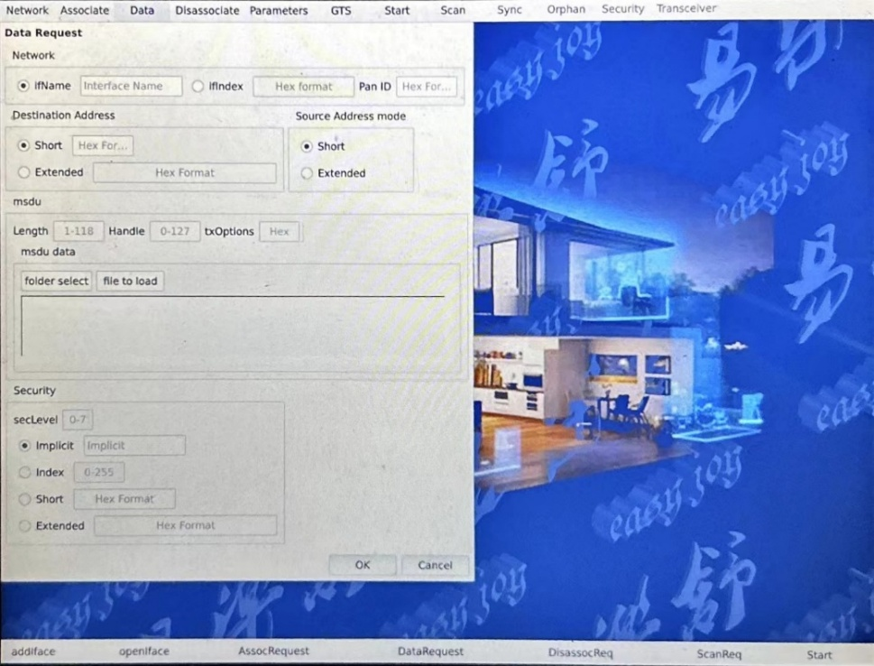
{width=“4.365189195100612in” height=“3.324676290463692in”}Figure 1-4 MAC Associate Primitive Test
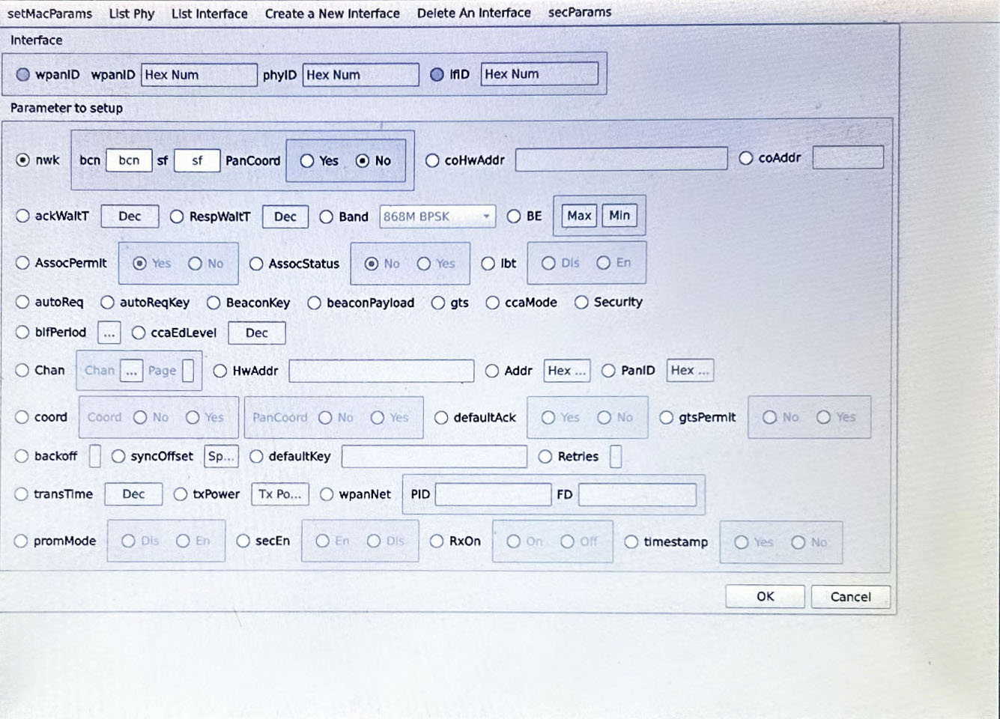
{width=“4.456778215223097in” height=“3.2048818897637794in”}Figure 1-5 MAC Configuration Sub-interface
Beyond the native C, C++, and QML bindings, the system reserves low-level network socket ports. Through these reserved sockets, users can directly interface with the on-board IEEE 802.15.4 physical layer (PHY) hardware drivers to implement customized MAC layer protocols from scratch.
The system natively supports Qt6. Qt6 provides a massive repository of diverse, styled Graphical User Interface (GUI) controls. Leveraging the declarative QML language, users can rapidly engineer responsive user interfaces optimized for specific end-products.
The platform executes an open-source Linux operating system, supporting display servers like X Window System (X11) and Wayland, alongside lower-level frame buffer, DRM (Direct Rendering Manager), and GStreamer streaming media application frameworks. This embedded Linux operating system delivers an array of graphics development toolsets including EGL, OpenGLES, OpenCL, OpenGL, and OpenVG. These tools facilitate smooth high-definition video playback, bringing architectural convenience to multimedia software authoring, 3D gaming pipelines, and interactive user interface development.
The system is highly adaptable for In-Vehicle Infotainment (IVI), digital instrument clusters, Advanced Driver Assistance Systems (ADAS), and is particularly optimized for smart home controllers, portable medical equipment, and smart metering devices. It serves as an optimal, feature-rich development system for smart product vendors, automotive entertainment designers, multimedia software engineers, academic laboratories, and engineers studying ARM systems programming. Interested readers may establish contact via telephone or email.
Email: 3348194517@qq.com, hai616878@gmail.com
Telephone: 1-470-550-0096 (USA)
Linux Command Structure
1.5 Linux Command Structure
The universal syntax for Linux commands follows this format:
command [options] [arguments]
Where command is the name of the utility, options alter or tune the execution behavior of the command, and arguments target specific operational objects (such as files or directories).
Options are categorized into short options and long options. Short options begin with a single hyphen followed by a single character representing the option, for example:
$ ls -l
(note:In this examples and below, we assume the shell prompt is $. )
A single command can invoke multiple options simultaneously, separated by spaces:
$ ls -l -a
Alternatively, multiple short options can be concatenated into a single block:
$ ls -la
Long options begin with a double hyphen, typically followed by an explicit, descriptive word or hyphenated phrase, for example:
$ ls --all
Throughout the command reference sections in this book, short options are primarily utilized.
Certain Linux command options accept optional arguments, while other options strictly require them, for example:
$ tar -f file.tar
Or alternatively, using the long option syntax:
$ tar --file=file.tar
Command Help and Query Mechanisms
1.6 Command Help and Query Mechanisms
Command usage documentation and summaries can be retrieved using the following syntax:
command --help
Or:
command -h
(Note: Not all commands support the short -h flag; the --help long option should be used as the definitive fallback).
Example invocation:
$ ls --help
To review the exhaustive user manual and interface descriptions for an application, use the man utility via the following format:
man command
Example invocation:
$ man ls
The Linux environment boasts an incredibly expansive utility set, estimated to exceed several hundred built-in and standalone binaries. The following sections outline the most frequently encountered commands.
File and Directory Operation Commands
1.7 File and Directory Operation Commands
ls — Directory Listing Utility
Format:
ls [options] [directory_or_file]
Common Options:
-
-l: Long listing format (displays file type, permissions, ownership, size, and modification date).
-
-a: Show hidden files (those starting with a dot .).
-
-h: Display sizes in a human-readable format (e.g., KB, MB, GB); must be used with -l.
-
-t: Sort content by modification time.
-
-r: Reverse the sorting order.
-
-R: Recursively list subdirectories.
-
-i: Display the file's index node (inode) number.
-
-S: Sort content by file size.
-
-d: List directories themselves, rather than their contents.
Examples:
$ ls
$ ls -l
$ ls -lh
pwd — Print Working Directory Utility
Format:
pwd
cd — Change Directory Utility
Format:
cd [options] [directory_name]
Common Options:
-
-L: Follow symbolic links / logical path (default behavior).
-
-P: Use the physical directory structure without following symbolic links (resolves real path).
-
-e: When used with -P, returns an error status if the directory change fails.
Examples:
$ cd /home # Navigate to the home directory under root
$ cd .. # Move up one directory level
$ cd ~ # Change to the home directory of the current user
$ cd - # Switch to the previously occupied directory
mkdir — Make Directory Utility
Format:
mkdir [options] directory_name
Common Options:
-
-p: Recursively create parent directories if they do not exist.
-
-v: Verbose mode (print a message for each created directory).
-
-m: Assign specific permissions to the directory during creation.
Examples:
$ mkdir dir1
$ mkdir -p a/b/c
rmdir — Remove Empty Directory Utility
Format:
rmdir [options] directory_name
rm — Remove Files or Directories Utility
Format:
rm [options] directory_or_file
Common Options:
-
-r / -R: Recursively delete directories and their sub-contents.
-
-f: Force removal (do not prompt for confirmation).
-
-i: Prompt for confirmation before every removal.
-
-v: Verbose mode (display file names as they are deleted).
-
-d: Delete empty directories.
-
-I: Prompt once before removing more than three files or when removing recursively.
Examples:
$ rm file
$ rm -r dir
$ rm -rf dir \# Use -rf with extreme caution.
cp — Copy Files or Directories Utility
Format:
cp [options] source_file_or_directory destination_file_or_directory
Common Options:
-
-r / -R: Recursively copy directories and their sub-contents.
-
-a: Archive mode (equivalent to -dpR, preserves links, file attributes, and ownership).
-
-f: Force copy by removing existing destination files if necessary.
-
-i: Prompt for confirmation before overwriting an existing file.
-
-n: Do not overwrite an existing file.
-
-v: Verbose mode (show copy progress).
-
-u: Copy only when the source file is newer than the destination file or when the destination is missing.
-
-p: Preserve file permissions, timestamps, and ownership.
-
--preserve=ATTR: Preserve specified attributes.
-
--no-preserve=ATTR: Do not preserve certain specified attributes.
Examples:
$ cp file1 file2
$ cp -r dir1 dir2
mv — Move / Rename Utility
Format:
mv [options] source_file_or_directory destination_file_or_directory_name
Common Options:
-
-i: Prompt for confirmation before overwriting an existing file.
-
-f: Force move by overwriting existing files without prompting.
-
-n: Do not overwrite any existing file.
-
-v: Verbose mode (show progression).
-
-u: Move only when the source file is newer than the destination file or when the destination is missing.
-
-t DIR: Move all source arguments into the specified target directory DIR.
-
-T: Treat the target as a regular file instead of a directory.
Examples:
mv file /tmp
File Viewing Commands
1.8 File Viewing Commands
cat — Concatenate and Display File Content Utility
Format:
cat [options] file
Common Options:
-
-n: Number all output lines (including blank lines).
-
-b: Number non-empty output lines.
-
-s: Suppress repeated consecutive empty output lines into a single blank line.
-
-E: Display a $ at the end of each line.
-
-T: Display tab characters as ^I.
-
-A: Equivalent to -vET (shows all non-printing and formatting characters).
-
-v: Use ^ and M- notation to display non-printing characters, except for tabs and line breaks.
Examples:
$ cat file
$ cat -n file
more — File Pager Utility
Format:
more [options] file
Common Options:
-
-d: Display user prompts instead of ringing the system bell (e.g., [Press space to continue, 'q' to quit.]).
-
-c: Draw new pages from the top down instead of scrolling the terminal interface.
-
-f: Count logical lines rather than screen lines (avoids wrapping artifacts in long line counts).
-
-l: Do not pause after processing a form-feed character (^L).
-
-s: Squeeze multiple consecutive blank lines into a single empty line.
-
-u: Suppress underline formatting codes.
-
+n: Begin displaying file contents starting at line number n.
Interactive Controls:
-
Space: Advance down by one full page.
-
Enter: Advance down by one line.
-
b: Move backward by one full page.
-
/pattern: Search downward for the specified regular expression string.
-
n: Repeat the previous search.
-
q: Exit the pager utility.
-
=: Display the current line number.
-
f: Advance down by one full screen (on supported implementations).
-
Ctrl+D: Scroll down half a screen width.
-
Ctrl+B: Scroll backward one full screen.
Examples:
more file1
less — Advanced File Pager Utility (Recommended)
Format:
less [options] [file...]
Common Options:
-
-N: Display explicit line numbers.
-
-S: Disable line-wrapping (causes long lines to scroll horizontally).
-
-X: Prevent clearing the terminal screen upon exiting less.
-
-i: Ignore case patterns during searches.
-
-I: Enforce case sensitivity during searches (unless the search pattern contains uppercase characters).
-
-r: Output raw control characters directly (such as color codes).
-
-R: Render ANSI color escape sequences cleanly (highly recommended).
-
+F: Monitor active file expansion in real-time (similar to executing tail -f).
-
+G: Open the target file directly at the end of its contents.
Interactive Controls:
-
Space: Page downward by one full screen.
-
Enter: Scroll downward by one line.
-
b: Page upward by one full screen.
-
y: Scroll upward by one line.
-
G: Jump directly to the end of the file.
-
1G or g: Jump directly to the beginning of the file.
-
/pattern: Search downward for the string pattern.
-
?pattern: Search upward for the string pattern.
-
n: Repeat the previous search in the forward direction.
-
N: Repeat the previous search in the reverse direction.
-
q: Exit the pager utility.
Examples:
$ less -N file1
head — Output Beginning of File Utility
Format:
head [options] file...
Common Options:
-
-n NUM: Print the first NUM lines of the file.
-
-c NUM: Print the first NUM bytes of the file.
-
-q: Suppress file headers when tracking multiple files.
-
-v: Always print headers containing file names.
Examples:
$ head -n 10 file
tail — Output End of File Utility
Format:
tail [options] file...
Common Options:
-
-n NUM: Print the trailing NUM lines of the file.
-
-c NUM: Print the trailing NUM bytes of the file.
-
-f: Continuously output appended data as the file grows (ideal for log monitoring).
-
-F: Similar to -f, but tracks the file descriptor by name, surviving log rotations safely.
-
-q: Suppress file name header markers across multiple targets.
-
-v: Always display file name header markers across multiple targets.
Examples:
$ tail -n 20 file
$ tail -f logfile
Permission and Attribute Management
1.9 Permission and Attribute Management
chmod — Change File Mode Bits Utility
Format:
chmod [options] mode file...
Common Options:
-
-R: Recursively modify file permissions for directories and their sub-contents.
-
-v: Verbose mode (display a diagnostic for every file processed).
-
--reference=file: Set permissions to match those of the specified reference file.
-
--changes: Like verbose, but report only when a change is actually made.
-
--silent / --quiet: Suppress most error and informational messages.
File permissions are divided among the file owner, group members, and other users, represented by u, g, and o respectively. The standard permissions are read, write, and execute, represented by r, w, and x. Permissions can also be represented numerically via octal values as follows:
| Permission | Octal Value |
|---|---|
| r | 4 |
| w | 2 |
| x | 1 |
Examples:
$ chmod u+x \~/bin/repo
$ chmod go-w \~/bin/repo
$ chmod 751 file
(Note: In the third example, octal 7 grants read, write, and execute permissions to the owner; 5 grants read and execute permissions to group members; and 1 grants execute-only access to other users).
chown — Change File Ownership Utility
Format:
chown [options] owner[:group] file_or_directory
Common Options:
-
-R: Recursively modify ownership across directories and all sub-contents.
-
-v: Verbose mode (display detailed output for every file processed).
-
-c: Report only when an actual ownership change takes place.
-
-f: Force mode (suppress most error messages regarding ownership modification failures).
-
--reference=file: Set ownership and group properties to match those of the specified reference file.
-
-h: Modify the owner/group of a symbolic link itself instead of the target file it references.
Examples:
$ chown david file.txt
$ chown -R david:users /project
chgrp — Change Group Ownership Utility
Format:
chgrp [options] group_name file...
Or:
chgrp [options] group_name directory
Common Options:
-
-R: Recursively modify group ownership for directories and all sub-contents.
-
-v: Verbose mode (display detailed processing diagnostics).
-
-c: Report only when a group ownership change takes place.
-
-f: Force mode (suppress most error messages regarding group modification failures).
-
-h: Modify the group of a symbolic link itself instead of the destination file it references.
-
--reference=file: Set group ownership to match that of the specified reference file.
Examples:
$ chgrp users file1 file2 file3
$ chgrp -R developers /project
$ chgrp --reference=template.txt newfile.txt
Search and Discovery Utilities
1.10 Search and Discovery Utilities
find — Directory Hierarchy Search Utility
Format:
find [search_path] [matching_criteria/options] [actions]
Common Options and Matching Criteria:
Name-Based Criteria:
-
-name: Match file names (case-sensitive).
-
-iname: Match file names (case-insensitive).
-
-path: Match against the full file path.
-
-regex: Match against a regular expression pattern.
Example:
$ find /home -name "*.txt"
Type-Based Criteria:
-
-type f: Regular file.
-
-type d: Directory.
-
-type l: Symbolic link.
-
-type b: Block device.
-
-type c: Character device.
Example:
$ find /etc -type d
Size-Based Criteria:
-
-size 10k: Exactly 10 KB.
-
-size +10k: Greater than 10 KB.
-
-size -10k: Less than 10 KB.
| Size | Units |
|---|---|
| c | Bytes |
| k | KB |
| M | MB |
| G | GB |
Example:
$ find . -size +100M
Time-Based Criteria:
-
-mtime: Modification time (measured in days).
-
-atime: Access time.
-
-ctime: Metadata status change time.
Time Syntax:
-
-mtime 3: Exactly 3 days ago.
-
-mtime +3: More than 3 days ago.
-
-mtime -3: Within the last 3 days.
Example:
$ find /var/log -mtime +7
Permission and Ownership Criteria:
find . -perm 644
find . -user david
find . -group users
Logical Operators:
-
-a: Logical AND (default behavior).
-
-o: Logical OR.
-
!: Logical NOT.
Examples:
$ find . -type f -a -size +1M
$ find . -name \"\*.c\" -o -name \"\*.h\"
Common Structural Actions:
-
-print: Print the absolute or relative file path to stdout (default behavior).
-
-exec: Execute a trailing shell command on the matched targets.
$ find . -name "*.log" -exec rm {} \;
(Note: {} represents the current matched file path, and \; terminates the execution pattern).
- -delete: Remove the matched targets directly.
$ find . -name "*.tmp" -delete
- -ok: Perform interactive execution, prompting the user prior to running the command.
$ find . -name "*.log" -ok rm {} \;
Hierarchy Constraints:
-
-maxdepth n: Descend at most n levels of directories below the starting points.
-
-mindepth n: Do not apply any criteria or actions at levels less than n.
$ find . -maxdepth 1 -type f
Common Practical Invocations:
$ find /var/log -type f -mtime +7 -delete # Purge logs older than 7 days
$ find / -type f -size +1G # Locate large files across root
$ find . -type f -name "*.sh" -exec chmod +x {} \; # Batch update
script permissions
$ find . -type f | wc -l # Count the number of total files
grep — Pattern Matching and Key String Search Utility
Format:
grep [options] "pattern" [file...]
Or when processing stream inputs via pipes:
command | grep [options] "pattern"
Matching Control Options:
-
-i: Ignore case distinctions in both the pattern and the input files.
-
-v: Invert the sense of matching, selecting non-matching lines.
-
-w: Select only those lines containing matches that form whole words.
-
-x: Select only those matches that exactly match the whole line.
-
-e: Specify multiple search patterns.
-
-f: Obtain patterns from the specified file, one per line.
Examples:
$ grep -i \"error\" log.txt
$ grep -v \"debug\" log.txt
$ grep -w \"main\" test.c
Display Control Options:
-
-n: Prefix each line of output with the 1-based line number within its input file.
-
-c: Suppress normal output; instead print a count of matching lines for each input file.
-
-l: Suppress normal output; instead print the name of each input file from which output would normally have been printed.
-
-L: Suppress normal output; instead print the name of each input file from which no output would normally have been printed.
-
-o: Print only the matched (non-empty) parts of a matching line, with each such part on a separate output line.
-
--color=auto: Highlight the matching string fragments using ANSI escape sequences.
Examples:
$ grep -n \"error\" log.txt
$ grep -c \"error\" log.txt
Recursive Directory Traversal Options:
-
-r: Read all files under each directory, recursively.
-
-R: Read all files under each directory, recursively, and follow all symbolic links.
Example:
$ grep -r \"main\" .
Context Display Options:
-
-A n: Print n lines of trailing context after matching lines.
-
-B n: Print n lines of leading context before matching lines.
-
-C n: Print n lines of leading and trailing output context.
Example:
$ grep -C 3 \"error\" log.txt
Regular Expression Variants:
(Note: Basic Regular Expressions (BRE) are supported by default).
-
-E: Interpret the pattern as an Extended Regular Expression (ERE) (equivalent to egrep).
-
-F: Interpret the pattern as a fixed string, suppressing regular expression parsing (equivalent to fgrep).
-
-P: Interpret the pattern as a Perl-Compatible Regular Expression (PCRE) (on supported environments).
Examples:
$ grep -E \"error\|fail\" log.txt
$ grep -F \"a+b\" file.txt
Common Practical Invocations:
$ grep -i "error" /var/log/syslog # Search system logs for error tags
$ grep -rn "main" . # Recursively locate functions in source trees
$ grep -c "error" log.txt # Calculate total instances of matches
$ ps aux | grep nginx # Filter active process listings
$ grep -o "[0-9]\+" file.txt # Extract matched segments exclusively
Regular Expression Fundamentals:
| Expression | Matching Pattern |
|---|---|
| . | Matches any single character. |
| * | Matches the preceding element zero or more times. |
| ^ | Anchors the match to the start of a line. |
| $ | Anchors the match to the end of a line. |
| [abc] | Matches a bracket expression containing a, b, or c. |
| [^abc] | Matches any single character not matching a, b, or c. |
Examples:
grep "^root" /etc/passwd
grep "[0-9]\{3\}" file.txt
Historical Implementations vs. Modern Standards:
-
grep: Basic Regular Expressions (BRE).
-
egrep: Extended Regular Expressions (ERE), deprecated in favor of grep -E.
-
fgrep: Fixed String matching, deprecated in favor of grep -F.
Modern infrastructure favors explicitly passing the flag vectors:
grep -E
grep -F
Compression and Decompression
1.11 Compression and Decompression
tar — Tape Archive Utility
Format:
tar [options] archive_name [files_or_directories]
The typical structural arrangement is:
tar -options archive_file targets_to_archive
Common Options:
-
-c: Create a new archive.
-
-x: Extract files from an archive.
-
-t: List the contents of an archive (table of contents).
-
-r: Append files to the end of an archive.
-
-u: Only append files that are newer than the copy in the archive.
-
-f: Use archive file (mandatory). The -f option must be followed immediately by the archive file name.
| Option | Compression Method | Standard Extension |
|---|---|---|
| -z | gzip | .tar.gz |
| -j | bzip2 | .tar.bz2 |
| -J | xz | .tar.xz |
| -a | Auto-detect | based on Automatic extension |
Examples:
$ tar -cvf archive.tar dir/ # Create a tar archive (uncompressed)
$ tar -czvf archive.tar.gz dir/ # Create a gzip compressed tar archive
$ tar -cJvf archive.tar.xz dir/ # Create an xz compressed tar archive (high compression ratio)
$ tar -xvf archive.tar # Extract an uncompressed tar archive
$ tar -xzvf archive.tar.gz # Extract a gzip compressed tar archive
$ tar -xzvf archive.tar.gz -C /target/path # Extract to a designated target path
$ tar -tvf archive.tar # List archive contents verbosely
Common Control Options:
| Option | Architectural Meaning / Function |
|---|---|
| -v | Verbose mode (display file progression details). |
| -C | Change to specified directory before、executing operations. |
| --exclude | Exclude files matching a specified pattern. |
| -p | Preserve original file permissions and |
| --strip-components=n | Strip n leading components from file names on extraction. |
Advanced Practical Invocations:
$ tar -czvf backup.tar.gz /project --exclude="*.log" # Exclude file pattern example
$ tar -xvf archive.tar file.txt # Extract a specific file from archive
$ tar -czvf backup.tar.gz . # Archive the current working directory
Standard Archiving and Extraction Examples:
$ tar -xvf file.tar
$ tar -czvf file.tar.gz dir
$ tar -xzvf file.tar.gz
$ zip -r file.zip dir
$ unzip file.zip
Process Management
1.12 Process Management
ps — Report Process Status Utility
Format:
ps [options]
Common Selection Options:
| Option | Architectural Meaning / Function |
|---|---|
| -e | Select all active processes. |
| -A | Select all active processes (identical to -e). |
| -a | Select all processes associated with a terminal, except session leaders. |
| -x | Select processes without controlling terminals. |
| -u | Select processes by effective user ID or name. |
Output Format Control Options:
| Option | Architectural Meaning / Function |
|---|---|
| -f | Generate a full-format listing. |
| -l | Generate a long-format listing. |
| -o | User-defined format (specify custom output fields). |
Examples:
$ ps -u root
$ ps -p 1234
$ ps -eo pid,ppid,cmd,%mem,%cpu
(Note: In the final example, pid, ppid, cmd, %mem, and %cpu are user-defined fields leveraged to explicitly identify the metrics represented in each output column).
top — Display Linux Tasks and Dynamic Process Monitor
Format:
top
Active process execution states are tracked using the flags R, S, D, and Z, defined as follows:
| State | Architectural Meaning |
|---|---|
| R | Running or Runnable (on execution queue) |
| S | Interruptible Sleep (waiting for an event to complete) |
| D | Uninterruptible Sleep (usually waiting for hardware IO) |
| Z | Zombie (terminated but parent has not reaped exit status) |
kill — Send a Signal to a Process
The most common use case is to terminate a target process execution sequence.
Format: kill [options] [signal] PID
Standard POSIX System Signals:
| Signal Name | Numeric Vector | Architectural Meaning / Default Action |
|---|---|---|
| SIGHUP | 1 | Controlling terminal hangup or configuration reload. |
| SIGINT | 2 | Keyboard interrupt signal (triggered via Ctrl+C). |
| SIGQUIT | 3 | Dump core and exit. |
| SIGKILL | 9 | Forceful termination kill signal (cannot be caught or ignored). |
| SIGTERM | 15 | Orderly termination signal (default signal sent by kill). |
| SIGCONT | 18 | Continue execution if currently stopped. |
| SIGSTOP | 19 | Stop process execution (cannot be caught or ignored). |
Common Options:
| Option | Functional Specification |
|---|---|
| -l | List all supported signal names. |
| -s | Specify the exact signal name to be sent. signal_name |
| -L | List signal names alongside their corresponding numeric vectors. |
Examples:
$ kill -l
$ kill -L
$ kill 1234
$ kill -9 1234
$ kill -SIGTERM 1234
Disk and System Information
1.13 Disk and System Information
df (disk free) — Report File System Disk Space Usage Utility
Format:
df [options] [file_or_directory]
Common Options:
| Option | Architectural Meaning / Function |
|---|---|
| -a | Include pseudo, duplicate, and inaccessible file systems. |
| -h | Print sizes in human-readable format (e.g., 1K, 234M, 2G) using power-of-1024 units (Recommended). |
| -H | Print sizes in human-readable format using power-of-1000 units. |
| -k | Block sizes default to 1024 bytes (1 KB). |
| -m | Block sizes default to 1,048,576 bytes (1 MB). |
| -B SIZE | Scale sizes by SIZE before printing them. |
| -i | List inode usage information instead of block usage. |
| -T | Print the type of each file system. |
| -x TYPE | Limit listing to file systems not of type TYPE. |
| -l | Limit listing to local file systems. |
Examples:
$ df -m
$ df -B 1G
$ df -h /var/log # View the storage partition hosting the /var/log directory
$ df -t ext4 # Restrict visibility strictly to ext4 file systems
du (disk usage) — Estimate File Space Usage Utility
Format:
du [options] [file_or_directory]
Common Options:
| Option | Architectural Meaning / Function |
|---|---|
| -h | Print sizes in human-readable format using power-of-1024 units (Recommended). |
| -H | Print sizes in human-readable format using power-of-1000 units. |
| -k | Block sizes default to 1024 bytes (1 KB). |
| -m | Block sizes default to 1,048,576 bytes (1 MB). |
| -B SIZE | Scale sizes by SIZE block constants. |
| -s | Display only a total for each argument. |
| --max-depth=N | Print the total for a directory (or file, with -a) only if it is N or fewer levels below the command line argument. |
| --exclude=PATTERN | Exclude files or directories that match the specified PATTERN. |
| --apparent-size | Print apparent sizes rather than disk usage (du tracks actual block consumption by default). |
| -a | Write counts for all files, not just directories. |
Examples:
$ du -m /home
$ du -B 1G
$ du -h --max-depth=1
$ du -h --max-depth=2 /var
$ du -h --exclude=*.log # Omit files featuring the .log extension suffix
$ du -h --exclude=/home/test # Exclude the explicit directory tree at /home/test
$ du -h --apparent-size # Calculate logical file dimensions instead of block allocations
$ du -ah # Process all entries recursively, including regular files
$ du -sh * | sort -hr | head -20 # Sort and display the top 20 largest irectory targets
free — Display Amount of Free and Used Memory in the System
Format:
free [options]
Common Options:
| Option | Architectural Meaning / Function |
|---|---|
| -h | Display all memory fields automatically scaled to shortest 3-digit unit. |
| -b | Display the amount of memory in bytes. |
| -k | Display the amount of memory in kilobytes (default). |
| -m | Display the amount of memory in megabytes. |
| -g | Display the amount of memory in gigabytes. |
| -s N | Continuously display the output delayed by N seconds. |
| -t | Display a line showing column totals. |
Examples:
$ free -h # Display all physical memory, swap, and buffer metrics in
human-readable format
$ free -h -s 2 # Refresh metrics continuously onto stdout every 2 seconds
uname (unix name) — Print System Information
Format:
uname [options]
Common Options:
| Option | Architectural Meaning / Function |
|---|---|
| -a | Print all system information in a sequence. |
| -s | Print the kernel name. |
| -n | Print the network node hostname. |
| -r | Print the kernel release version. |
| -v | Print the kernel compilation version. |
| -m | Print the machine hardware architecture name. |
| -p | Print the processor type (architecture-dependent). |
| -i | Print the hardware platform identifier. |
| -o | Print the operating system name. |
Examples:
$ uname -r # Display the release version string of the running kernel
$ uname -v # Display the compilation and build timestamps of the kernel
Pipes and Redirection
1.14 Pipes and Redirection
| — The Pipe Command
Format:
command1 | command2
Its architectural function is to direct the standard output (stdout) of the first command (command1) to serve as the standard input (stdin) for the second command (command2).
Example:
$ ps aux | grep nginx
> and >> — Output Redirection Commands
Examples:
$ ls > file.txt # Overwrites or creates file.txt with the stdout of ls
$ ls >> file.txt # Appends the stdout of the ls command to the end of file.txt
$ ps -ef | grep root | grep ssh | wc -l # Multi-stage pipeline
execution
Within a Linux / Unix Shell environment, every running process maps to exactly three default standard file descriptors:
| Descriptor Name | Numeric Vector | Architectural Meaning |
|---|---|---|
| stdin | 0 | Standard Input (file or hardware input device) |
| stdout | 1 | Standard Output (file or hardware display device) |
| stderr | 2 | Standard Error (file or hardware diagnostic logging device) |
These three processing channels can be controlled via their symbolic descriptor descriptors or explicitly referenced by their numeric index values. Leveraging the redirection syntax (> or >>), standard I/O channels can be decoupled from default hardware and mapped to alternative devices or physical files. The implementation syntax is defined as follows:
command 2> error.txt # Redirects the stderr stream of a command into error.txt
Examples:
$ ls not_exist 2 > err.log
command > out.txt 2>&1
(Note: In the final example, the primary output stream is directed into out.txt. Simultaneously, the stderr stream (2>) is mapped to the exact same channel destination currently assigned to stdout (&1), which typically outputs directly to the screen terminal).
The & symbol acts as a dedicated file descriptor token, informing the Shell interpreter that the trailing argument integer is an active file descriptor rather than a literal, regular filename string. Without appending the & token (e.g., writing 2>1), the Shell would parse the instruction as a request to dump diagnostic error tracking outputs into a common text file literally named 1.
grep keyword file 2>/dev/null # Redirects stderr to the bit-bucket null device to suppress errors
Other Common Utilities
1.15 Other Common Utilities
echo — Display a Line of Text
Format:
echo [options] [string]
Common Options:
-
-n: Suppress the trailing newline character character.
-
-e: Enable interpretation of backslash escape sequences.
-
-E: Explicitly disable interpretation of backslash escape sequences (Default behavior).
Supported Escape Sequences:
| Sequence | Architectural Meaning / Action |
|---|---|
| \n | Newline character. |
| \t | Horizontal tab character. |
\\ | Literal backslash. |
| \r | Carriage return character. |
| \b | Backspace control sequence. |
| \a | Alert (system bell or beep tone). |
| \c | Produce no further output (terminates processing). |
Examples:
$ echo david
$ name="My name is David"
$ echo $name
$ echo -e "Hello \nWorld"
(Note: Evaluation of escape sequences occurs explicitly when enveloped within double quote pairs).
The Functional Distinctions Between ' ' and " ":
Within a Linux Shell architecture (such as ), single quotes (' ') and
double quotes (" ") both enclose string assignments, but their
low-level translation behaviors differ strictly:
| Technical Feature | 'Single Quotes' | "Double Quotes" |
|---|---|---|
| Variable Expansion | ❌ Suppressed (Literal Interpretation) | ✅ Executed (Expands $VAR) |
| Command Substitution | ❌ Suppressed | ✅ Executed (Runs `cmd` or $()) |
| Escape Character Processing | ❌ Suppressed (Except \'in raw terms) | ✅ Partially Interpreted |
| Wildcard Globbing | ❌ Suppressed | ❌ Suppressed |
ln — Create Link Files Utility
Format:
ln [options] target link_name
Common Options:
-
-s: Generate a symbolic / soft link instead of a hard link.
-
-f: Force remove existing destination files.
-
-i: Prompt interactively prior to removing existing destination targets.
-
-v: Verbose mode (print file names handled by the utility).
-
-n: Treat the destination link name as a normal file if it points to a directory symbolic link (prevents deep resolution).
-
-d: Permit the superuser (root) to attempt hard linking directories.
Links are split architecturally into hard links and symbolic links. A hard link shares the identical index node (inode) entry as the original target; removing one link reference leaves remaining nodes unharmed. A symbolic link (or soft link) functions as a pointer path pointing to the original filename; if the source file is deleted, the soft link stays intact but breaks, resulting in a dangling link.
Examples:
$ ln file.txt file_link.txt # Instantiates a hard link pointing to the same inode
$ ln -s file.txt soft_link.txt # Instantiates a soft symbolic reference link
export — Set Environment Variable Attributes
Format:
export [options] [variable_name[=value]]
Common Options:
-
-p: Display a listing of all currently exported system environment variables.
-
-n: Strip the export attribute from named variables, reverting them to local shell scope.
-
-f: Treat the targeted arguments as names of shell functions to export.
Examples:
$ export -p
$ export PATH=$PATH:/opt/bin
$ export JAVA_HOME=/usr/lib/jvm/java-11
env — Display or Temporarily Modify the Execution Environment
Format:
env [options] [NAME=VALUE...] [command [arguments...]]
Common Options:
-
No Arguments: Dumps a listing of all currently active environment variables to stdout.
-
VAR=val: Appends a temporary environment entry strictly for the duration of the trailing command invocation.
-
-i: Start with an empty environment, fully discarding inheritance values.
-
-u VAR: Purge variable VAR from the localized active environment tracking block.
Examples:
$ env
$ env DEBUG=1 ./program
$ env -i
$ env -u PATH
Wildcards
1.16 Wildcards
Wildcards are utilized within the shell environment to match specified character ranges. The most frequently encountered wildcards are defined below:
| Symbol | Architectural Meaning / Matching Pattern |
|---|---|
| * | Matches zero or more arbitrary characters. |
| ? | Matches exactly one single arbitrary character. |
| [] | Matches any one single character enclosed within the brackets (defines a range or set). |
Examples:
$ ls *.c
$ ls file?.txt
Bracket Range Matching
| Pattern | Matching Envelope Rules |
|---|---|
| [character_set] | Matches any single character present within the specified set. |
| [character-character] | Matches any single character falling within the sequential range defined by the hyphen boundaries. |
| [!character_set] | Matches any single character not included within the specified set. |
| [^character_set] | Anchors the pattern to match strings that begin with the character configurations specified. |
Examples:
$ ls file[123].txt
Valid matches:
-
file1.txt
-
file2.txt
-
file3.txt
Invalid matches (will not match):
- file12.txt
$ ls file[a-z].txt
Valid matches:
-
filea.txt
-
fileb.txt
-
...
-
filez.txt
Standard Character Range Configurations
| Configuration | Explicit Matching Context Syntax |
|---|---|
| [a-z] | All lowercase alphabetic characters. |
| [A-Z] | All uppercase alphabetic characters. |
| [0-9] | All single-digit numeric characters. |
| [a-zA-Z] | All alphabetic characters regardless of case. |
| [a-z0-9] | All lowercase alphanumeric characters. |
Linux Directory Structure
1.17 Linux Directory Structure
In the Linux Filesystem Hierarchy Standard (FHS), the directory structure is not a random collection of directories but follows a strict logic. For embedded systems such as the NXP i.MX6 Solo, understanding these directories helps you precisely locate kernel images, configuration files, and driver nodes.
Linux does not partition drives into distinct drive letters (such as C: or D:); instead, all devices are mounted at specific locations underneath the single root directory /. The following is a quick reference guide to the core directories.
Core Boot and System Files
-
/boot: Contains the essential files required for booting the system. The kernel image (zImage), Device Tree blobs (DTBs), initramfs, and bootloader files are typically stored here.
-
/bin: Contains basic, essential system binaries and commands required for system booting and operation (such as ls, cp, sh), which are accessible to all users. Typical commands like ls, cp, mv, cat, and are located here.
-
/sbin: Contains system administration binaries (System Binaries) such as ifconfig, fdisk, reboot, and addgrp. These tools are designated for hardware management and system maintenance routines.
-
/lib: Contains essential dynamic shared libraries (.so files) and kernel modules (modules) needed by the binaries in /bin and /sbin. Without this directory, the basic commands in /bin cannot execute.
Hardware and Configuration
-
/dev: The location of device files. In Linux, everything is a file. Serial ports (tty), SD cards (mmcblk0), and USB devices are all accessed via nodes in this directory. It contains numerous subdirectories corresponding to different devices, such as tty, sda, and null. These files are dynamically populated by the kernel and udev.
-
/etc: The system configuration directory. It houses network configurations, user passwords, startup scripts (such as rc.local), and kernel parameters (sysctl.conf) applied after Linux boots.
-
/etc/passwd: Stores user account details and credentials.
-
/etc/fstab: Defines the file systems to be mounted automatically at boot time, along with their respective mount options.
-
/etc/hostname: Stores the system network host name.
-
/etc/systemd/: Contains local systemd configuration and service unit files; it is the core configuration directory for system service management.
-
Virtual File Systems /sys and /proc
-
/proc: Reflects process and kernel runtime states (such as CPU metrics), allowing users to monitor active process state data by reading files within this path. It is a virtual file system (procfs) in Linux that consumes zero disk space, as all contents are generated dynamically in memory by the kernel. Each active process maps to a specific subdirectory named after its unique Process ID (PID).
-
/sys: Exports kernel objects and hardware topologies. Manipulating GPIO pins or adjusting LED brightness is commonly handled under this path. System administrators utilize files here for resource configuration and device management. The standard top-level subdirectories include:
-
/sys/block
-
/sys/bus
-
/sys/class
-
/sys/devices
-
/sys/firmware
-
/sys/fs
-
/sys/kernel
-
/sys/module
-
/sys/power
-
The /sys/devices subdirectory acts as the core repository for the live Device Tree representation; the complete hierarchical structural arrangement of all registered devices inside the running kernel resides here. It reflects the true physical hardware topology and serves as the primary root of sysfs (e.g., /sys/devices/pci0000:00/ and /sys/devices/system/cpu/). All entries under /sys/class and /sys/bus ultimately resolve back to files inside this directory via symbolic links. It can be understood as the definitive physical device topology tree.
The /sys/class subdirectory provides a logical view of devices grouped by function class. These entries are typically symbolic links pointing directly to the actual device nodes under /sys/devices, making this the most frequently accessed interface from user space. It primarily includes elements such as:
-
/sys/class/net/
-
/sys/class/block/
-
/sys/class/leds/
-
/sys/class/gpio/
For example:
-
/sys/class/net/eth0 corresponds to the primary Ethernet interface.
-
/sys/class/block/sda corresponds to the first storage disk.
The /sys/block subdirectory holds the nodes corresponding to block devices. For instance, /sys/block/sda/ maps to a disk drive, while the /sys/block/mmcblk0/ subdirectory represents the primary MultiMediaCard (MMC) storage device. These entries encompass files such as size, queue/, and stat. They are commonly utilized for storage performance profiling, I/O tuning, and flash storage management in embedded deployments.
The /sys/bus path houses devices organized hierarchically by their physical or virtual bus types, such as /sys/bus/pci/, /sys/bus/usb/, /sys/bus/i2c/, and /sys/bus/platform/. These match PCI bus devices, USB devices, I2C peripherals, and integrated platform devices, respectively. Each individual bus contains a device description subdirectory (devices/) and a driver tracking subdirectory (drivers/) (e.g., /sys/bus/pci/devices/ and /sys/bus/pci/drivers/). This layout represents the definitive boundary layer where the kernel executes device-to-driver matching.
The /sys/module subdirectory exposes active kernel modules, such as /sys/module/ext4/ and /sys/module/nvme/. The content includes diagnostic files and paths like initsize, parameters/, refcnt, and sections/, which allow users to inspect live module configurations or dynamically tweak exported module runtime variables.
The /sys/kernel interface handles core kernel subsystem parameters, hosting critical entries like /sys/kernel/debug, /sys/kernel/mm, and /sys/kernel/tracing. Here, /sys/kernel/debug exposes the debugfs boundary layer (requiring an explicit, separate mount operation), and /sys/kernel/tracing exposes the active ftrace engine interface.
The /sys/fs path maps to the file system subsystem interface layer (e.g., /sys/fs/cgroup, /sys/fs/ext4, and /sys/fs/bpf). It tracks and exposes operational state statistics specific to file systems active within standard cgroups.
The /sys/firmware path contains low-level firmware-related configurations and exports, including /sys/firmware/efi and /sys/firmware/devicetree. ARM-based embedded systems heavily leverage the /sys/firmware/devicetree/base directory directory to export the flattened device tree abstraction layer to user space.
The /sys/power interface handles system-wide power management parameters, exposing files like /sys/power/state and /sys/power/wakeup_count. For instance, executing:
echo mem > /sys/power/state
forces the hardware into a suspend-to-RAM state.
The /sys/devices/system path aggregates infrastructure-critical system-level hardware devices, including /sys/devices/system/cpu/, /sys/devices/system/memory/, and /sys/devices/system/node/. For instance, executing:
echo 0 > /sys/devices/system/cpu/cpu1/online
takes CPU1 offline.
User and Application Space
-
/usr: Houses user-space applications and secondary utilities, conceptually mapping to C:\Program Files in Windows architectures.
-
/usr/bin: Contains non-essential system-wide user binary commands.
-
/usr/lib: Contains shared libraries consumed by binaries located under /usr/bin and /usr/sbin.
-
/var: Stores highly dynamic variable data, such as system event logs (/var/log) or package manager cache indexes.
-
/home: Serves as the primary root hosting individual unprivileged user home directories.
-
/root: The dedicated private home directory of the system superuser (root). Note that it is isolated outside the /home directory tree.
Other Key Directories
-
/tmp: Temporary storage directory. Files housed within this path are generally swept and purged during system boot sequences.
-
/mnt: General purpose mount point used to manually mount temporary external file system volumes.
-
/media: Automatically managed mount points for plug-and-play removable storage devices (such as USB thumb drives).
-
/opt: Add-on repository designated for hosting third-party monolithic software application packages.
-
/run: Holds ephemeral runtime data tracking active system operations since boot, such as process ID files (.pid) and active domain sockets. This path exists entirely in volatile memory and is wiped during reboots.
-
/lost+found: A repository used by file system check utilities (like fsck) to deposit orphaned file fragments recovered after structural file system corruption.
Chapter 2: The U-BOOT Bootloader
U-BOOT is an acronym for the Universal Boot Loader, commonly referred to by developers as "Das U-Boot". It is a powerful system bootloader capable of initializing and booting a diverse range of operating systems, as well as launching bare-metal, non-OS applications. U-BOOT provides architecture support for various processors, including ARM, PPC, MIPS, x86, NIOS, and MicroBlaze. Hundreds of development and production system boards natively support U-BOOT, establishing it as the dominant mainstream bootloader in contemporary embedded engineering.
As a completely free and open-source software project, U-BOOT was initiated by Wolfgang Denk. Subsequently, a vast community of computer enthusiasts and open-source enterprise vendors—such as Siemens—joined the developer ranks. Due to its extensive feature set and outstanding system stability, it has been widely adopted by multiple operating system architectures, particularly embedded operating systems, as their primary boot mechanism. Developers can fetch the official U-BOOT source code repositories directly from the upstream infrastructure hosted at https://source.denx.de/u-boot.
Distinct from standard, minimalist bootloaders, U-BOOT provides a fully integrated command-line shell interface (command interpreter). This capability permits users to interrupt the automatic boot sequence before the operating system kernel is loaded. Once interrupted, users can leverage commands or environment variables to alter the system boot topology or modify the boot argument vectors passed to the operating system kernel. These modified commands, environment variables, and execution command sequences can be written directly to non-volatile storage media, allowing the platform to utilize the updated configurations for subsequent routine boot cycles.
The following sections analyze the implementation details of common U-BOOT utilities, environment variable structures, and the syntactical composition of U-BOOT scripting frameworks.
U-BOOT Commands
2.1 U-BOOT Commands
U-BOOT provides a vast array of commands dedicated to interacting with peripherals, memory, file systems, and networking devices. Users can leverage these commands to read data from storage components, write payloads to target devices, configure hardware peripherals, and display critical system information. U-BOOT implements two distinct command line interpreter backends: a legacy simple command line interface and a Bourne-shell-compatible command line parser known as HUSH. Interaction with the user is managed dynamically through this text-based command shell.
U-BOOT commands are structurally categorized into system information, memory operations, flash storage manipulation, execution control, network utilities, environment variable overrides, file system abstraction support, special-purpose routines, advanced configuration commands, and miscellaneous helpers. The subsequent sections outline these functional sets systematically.
2.1.1 Information Commands
Information commands are utilized to query various system metrics and hardware parameters. These commands include:
-
bdinfo: Displays system board information.
-
coninfo: Displays console terminal interface statistics.
-
flinfo: Displays flash memory configuration and layout details.
-
iminfo: Displays the header block details of an uncompressed image file.
-
imls: Lists boot images found across storage blocks in flash memory.
-
fatinfo: Displays metadata and statistics of a FAT file system partition.
-
mii: Inspects and controls Ethernet Media Independent Interface (MII) and PHY registers.
-
help: Displays online interactive help summaries for all supported shell commands.
The following output shows the structural execution metrics returned by running the bdinfo command, where => represents the interactive U-BOOT command prompt.
=> bdinfo
memstart = 0x00000000
memsize = 0x04000000
flashstart = 0x40000000
flashsize = 0x00800000
flashoffset = 0x00030000
sramstart = 0x00000000
sramsize = 0x00000000
immr_base = 0xFFF00000
bootflags = 0x00000001
intfreq = 50 MHz
busfreq = 50 MHz
ethaddr = 00:D0:93:00:28:81
IP addr = 0.0.0.0
baudrate = 115200 bps
=>
the execution results of the help command are presented below:
=>help
? - alias for \'help\'
If a user wishes to query the specific usage and syntax parameters for a particular utility, they can execute help <command>. For example:
=> help run
run var [...]
- run the commands in the environment variable(s) 'var'
The usage structure and syntax options for the mii command are defined as follows:
-
mii device: Lists all registered Ethernet interface devices.
-
mii device <name>: Sets the active target device to <name>.
-
mii read <addr> <reg>: Reads the value of register <reg> from the Media Independent Interface (MII) PHY address <addr>.
-
mii write <addr> <reg> <data>: Writes the payload word <data> into the MII PHY address <addr> register <reg>.
2.1.2 Memory Commands
This class of commands is dedicated to volatile memory manipulation and includes the following operations:
-
base: Displays or configures the baseline address offset, which serves as a global reference offset for subsequent memory access commands.
-
crc32: Computes a 32-bit Cyclic Redundancy Check (CRC32) checksum over a memory buffer.
-
cmp: Performs a byte-by-byte comparison between two distinct memory regions.
-
cp: Executes a bulk memory copy operation from a source address to a destination buffer.
-
md: Displays (dumps) memory content in organized hex and ASCII views.
-
mm: Modifies memory contents interactively with automatic address auto-increment.
-
mtest: Performs a standard, non-destructive volatile memory stress test across a given range.
-
mw: Fills a specific memory boundary range with a fixed data pattern.
-
loop: Loops memory access infinitely across a given address envelope for hardware troubleshooting.
The usage conventions and execution results for the base and md utilities are presented below:
=> base
Base Address: 0x00000000
=> md 0 c
00000000: feffffff 00000000 7cbd2b78 7cdc3378 ........|. +x|.3x
00000010: 3cfb3b78 3b000000 7c0002e4 39000000 <.;x;...|...9...
00000020: 7d1043a6 3d000400 7918c3a6 3d00c000 }.C.=...y...=...
=> base 40000000
Base Address: 0x40000000
=> md 0 c
40000000: 27051956 50504342 6f6f7420 312e312e '..VPPCBoot 1.1.
40000010: 3520284d 61722032 31203230 3032202d 5 (Mar 21 2002 -
40000020: 2031393a 35353a30 34290000 00000000 19:55:04)......
=>
2.1.3 Flash Storage Commands
-
cp: Flash memory programming utility (copies chunks from RAM to flash configurations).
-
flinfo: Displays detailed flash sector layouts, banks, and hardware definitions.
-
erase: Erases explicit sectors or full ranges within flash storage arrays.
-
protect: Enables or disables hardware/software write-protection bits across flash memory blocks.
2.1.4 Execution Control Commands
-
autoscr: Executes standalone binary macro scripts from memory.
-
bootm: Boots a structured application or kernel system image resident in physical RAM.
-
bootelf: Executes a binary application image formatted as a standard Executable and Linkable Format (ELF) structure from memory.
-
bootvx: Boots a structured VxWorks operating system application image built as an ELF payload.
-
go: Jumps directly to a raw instruction address (addr) to start bare-metal execution sequences.
The standard execution syntax for the bootm command is defined as follows:
bootm [addr [arg ...]]
- boot application image stored in memory passing arguments 'arg ...'; when booting a Linux kernel, 'arg' can be the address of an initrd image.
2.1.5 Network Utilities
-
bootp: Leverages BOOTP/TFTP protocol interactions to fetch and boot a system image over the network.
-
cdp: Configures and processes the Cisco Discovery Protocol (CDP) topology metadata.
-
dhcp: Invokes the internal DHCP client routine to acquire a dynamic local IP address and poll global boot configuration vectors.
-
loadb: Loads a raw binary payload stream into memory using the serial console line via the Kermit protocol.
-
loads: Loads a text-based Motorola S-record firmware payload into target memory blocks via the serial line interface.
-
nfs: Restructures network storage calls to boot an operating system image using the Network File System (NFS) protocol layout.
-
ping: Transmits standard ICMP ECHO_REQUEST packets to network hosts to check end-to-end transport layer paths.
-
rarpboot: Combines RARP/TFTP server handshakes to pull and launch a system image over network environments.
-
tftpboot: Downloads and initializes a system image over network setups using the Trivial File Transfer Protocol (TFTP).
The configuration format for the bootp command is structured as follows:
bootp [loadAddress] [bootfilename]
The configuration format for pulling and booting software via the nfs client framework is structured as follows:
nfs [loadAddress] [host_ip_addr:bootfilename]
2.1.6 Environment Variable Commands
-
printenv: Displays the values of all currently defined environment variables.
-
saveenv: Writes the active environment variables from RAM to non-volatile storage.
-
askenv: Prompts the user via the standard input console to capture and assign a value to an environment variable.
-
setenv: Establishes a new environment variable or modifies/deletes an existing one.
-
run: Executes the command sequence or macro embedded within specified environment variables.
-
bootd: Initiates the default boot sequence, structurally equivalent to executing run bootcmd.
2.1.7 File System Support Commands
-
chpart: Changes the active target partition.
-
fsinfo: Displays fundamental metadata regarding the active file system type.
-
fsload: Loads a raw binary payload into memory from a generic supported file system.
-
ls: Lists the files and subdirectories resident within a specified path.
-
fatinfo: Displays low-level cluster and volume metadata for a FAT-formatted partition.
-
fatls: Lists the contents of a directory located on a FAT-formatted file system partition.
-
fatload: Loads a binary file from a DOS/FAT file system into physical memory.
-
nand: The NAND flash memory subsystem, encompassing an array of sub-commands for raw block operations.
-
reiserls: Lists the subdirectory layout and contents within a ReiserFS file system hierarchy.
-
reiserload: Loads a binary payload into memory from a ReiserFS file system.
2.1.8 Special-Purpose Commands
-
i2c: The I2C bus subsystem, providing tools to probe, read, and write to peripheral chips.
-
doc: Disk On Chip (DOC) storage subsystem interface routines.
-
dtt: Digital Thermometer and Thermostat telemetry subsystem.
-
eeprom: Subsystem for reading and writing to on-board EEPROM chips.
-
fpga: Subsystem designated for loading and configuring field-programmable gate array bitstreams.
-
ide: Integrated Drive Electronics (IDE) storage subsystem.
-
kgdb: Switches the system interface into Kernel GNU Debugger mode for low-level trapping.
-
diskboot: Initiates an operating system boot sequence from an attached IDE storage device.
-
icache: Enables or disables the processor's internal instruction cache (I-Cache).
-
dcache: Enables or disables the processor's internal data cache (D-Cache).
-
diag: Executes hardware board-level diagnostic monitoring sequences.
-
log: Manages and reviews device log configurations.
-
pci: Scans, displays, and modifies fields within the PCI configuration space layout.
-
regdump: Dumps the current hardware register states to the console interface.
-
usb: The Universal Serial Bus (USB) subsystem, managing bus enumeration and storage/peripheral access.
-
sspi: Synchronous Serial Peripheral Interface (SPI) configuration and transfer utility.
Each of the subsystems detailed above contains specific sub-commands for execution. Using the help utility alongside any subsystem name exposes its structural formatting and syntax.
2.1.9 Miscellaneous Commands
-
bmp: Manipulates and renders BMP format image data. For example:
bmp info <image address> displays file metadata for a bitmap image resident at the designated memory address, whereas bmp display <image address> [x,y] renders the bitmap located at <image address> onto the screen starting at coordinates (x,y). -
date: Displays or sets the current real-time clock (RTC) calendar date and system time.
-
echo: Outputs explicit text strings or expanded environment variable values directly to the active console terminal interface.
-
exit: Exits the execution context of the currently running macro script.
-
kbd: Scans and captures raw keyboard matrix input sequences.
-
in: Reads a data byte or word from a hardware I/O port address space.
-
out: Writes a data byte or word to a hardware I/O port address space.
-
reset: Triggers a full system hardware reset and cold reboot cycle.
-
sleep: Pauses the execution sequence of the command interpreter for a specified duration of seconds.
-
test: Evaluates conditional statement expressions for shell script control flows (minimal implementation).
-
version: Displays the current compilation release and build version string of the running U-BOOT binary.
-
wd: Probes, triggers, or configures the system hardware watchdog timer parameters.
-
?: Acts as a direct structural alias for the help instruction.
Environment Variables
2.2 Environment Variables
U-BOOT utilizes environment variables to adjust its own execution sequence and configure system hardware parameters. Environment variables are case-sensitive and are stored as character strings within non-volatile storage media, such as an EEPROM or flash memory. The environment consists of standard predefined environment variables and custom user-defined variables. The most frequently encountered standard environment variables are detailed below.
2.2.1 autostart
When autostart is set to yes, y, Y, t, T, or 1, image files imported via the bootp, bootelf, dhcp, diskboot, nboot, nfs, rarpboot, scsiboot, tftpboot, or usbboot commands will automatically boot. If autostart contains any value other than those specified above, the image payload is merely loaded into memory but will not automatically execute. Images passed to bootm are copied to the memory space designated by the load address for decompression; leveraging this architectural trait allows arbitrary data blocks to be loaded into memory and decompressed on demand.
2.2.2 baudrate
This variable configures the transmission baud rate for the serial console port. Because U-BOOT is primarily deployed on embedded systems, the interactive control terminal typically runs on a host computer, communicating with the embedded target via a serial interface. This environment variable defines the communication speed across the UART line linking the host and the embedded platform.
2.2.3 bootdelay
This variable defines the wait time (in seconds) before the automatic boot sequence is initiated. After U-BOOT initializes in memory, if bootdelay is not equal to 0, it pauses for the specified duration. During this countdown period, if the user registers a keystroke on the keyboard, U-BOOT breaks out of the autoboot sequence and enters the interactive command interpretation state, enabling users to enter any of the U-BOOT commands listed previously. If the delay expires without a keystroke, U-BOOT automatically begins booting the system.
If bootdelay is set to -1, automatic booting is fully disabled. If bootdelay is set to -2, the system boots immediately and disables any attempt to abort the sequence (e.g., via Ctrl+C).
2.2.4 bootcmd
This variable specifies the exact command sequence or macro executed by U-BOOT when initiating an automatic boot. bootcmd stores a series of concatenated U-BOOT commands. When the U-BOOT autoboot sequence fires, it executes the operations defined within bootcmd sequentially.
2.2.5 bootargs
This variable holds the command-line argument vector passed from U-BOOT to the operating system kernel or binary image payload during the boot invocation. The booted kernel or application parses these parameters to control its low-level operational paradigms and driver initializations.
2.2.6 bootfile
Specifies the default target filename to be downloaded when importing images via the Trivial File Transfer Protocol (TFTP).
2.2.7 bootm_low
Specifies the lowest physical memory boundary address accessible to the bootm initialization routine. This variable is typically omitted, defaulting to the baseline memory configuration.
2.2.8 bootm_mapsize
Defines the total size of the linear memory region mapped and accessible to the Linux kernel during its initial booting phase. This virtual window begins explicitly at the address defined by bootm_low.
2.2.9 bootm_size
Defines the maximum allocation space within memory available to the bootm routine for handling, relocating, and decompressing input image files.
2.2.10 updatefile
Designates the source file path and location on the TFTP server when performing firmware or software updates via network protocols.
2.2.11 autoload
When autoload is configured explicitly to no, the bootp and dhcp routines only poll the network BOOTP server to pull environment configurations and network definitions without actually pulling the primary system image from the server into physical memory.
2.2.12 fdt_high
Specifies the highest physical memory address boundary that the Flattened Device Tree (FDT) can occupy.
2.2.13 initrd_high
When this variable is omitted, the initrd image payload is automatically copied to the highest available region of physical memory. When explicitly configured, initrd_high restricts the maximum memory address ceiling available for the initrd allocation.
2.2.14 ipaddr
Configures the local IP address for the network interface. Note that this configuration is strictly valid while executing operations within the U-BOOT context. Once control passes to Linux or another operating system, the IP address will be dynamically acquired or statically bound based on user-space network configurations. The following sequence establishes an IP address of 192.168.1.1:
setenv ipaddr 192.168.1.1
Executing saveenv writes this environment configuration to non-volatile storage.
2.2.15 loadaddr
Defines the default baseline memory load address utilized by utilities like bootp, dhcp, rarpboot, and loadb. As analyzed in subsequent boot sequence chapters, the explicit load address of an image payload is typically governed by the loadaddr field embedded inside the uImage file header, or by properties defined within the Device Tree. When no destination load address is specified anywhere, the value of the loadaddr environment variable acts as the absolute fallback target.
2.2.16 serverip
Specifies the IP address of the remote TFTP server, queried directly by the tftpboot network infrastructure.
2.2.17 bootretry
Defines the maximum threshold of sequential boot attempts before U-BOOT declares a definitive boot failure condition.
2.2.18 image
Specifies the exact filename of the target application or kernel image to be executed via bootm.
2.2.19 fdtfile
On platforms with Device Tree support, this variable defines the filename of the compiled binary Device Tree Blob (DTB) describing the target system's hardware configurations.
2.2.20 fdt_addr
Specifies the physical memory destination address where the Device Tree Blob (DTB) is loaded.
2.2.21 ramdisk
Specifies the filename of the primary RAM file system (ramdisk) image payload.
2.2.22 ramdisk_addr
Defines the exact physical memory target address where the RAM file system is imported and mounted.
Note: U-BOOT supports numerous other standard environment variables which are omitted here for brevity.
2.2.23 User-Defined Environment Variables
Users can instantiate custom environment variables arbitrarily, bounded only by the physical storage capacity allocated for the environment block. U-BOOT variables are categorized into local variables and global variables (the latter commonly referenced as environment variables), and can be further subdivided into simple variables and recursive variables. A simple variable maps a unique literal name directly to a string literal value, using the following format:
setenv <varname> <variable_value>
For example:
=> setenv kernelName ubuntu
=> printenv kernelName
=> kernelName=ubuntu
=>
A recursive variable is defined when a variable's value payload itself references one or more embedded variables. Within a recursive variable definition, the nested variables are not expanded immediately; instead, they persist inside the string as raw variable references. Expansion occurs exclusively when the parent macro variable is executed via the run command, substituting the variable references with their live values. The following sequence shows how a recursive variable is declared and processed:
=> setenv displayBytes md.b \${addr} \${bytes}
=> printenv displayBytes
=> displayBytes=md.b ${addr} ${bytes}
=> setenv addr 0b000000
=> setenv bytes 10
=> run displayBytes
0b000000: 00 00 00 00
0b000004: 00 00 00 00
0b000008: 00 00
In this scenario, setenv displayBytes md.b \${addr} \${bytes} defines the recursive target macro variable displayBytes with the literal string content md.b ${addr} ${bytes}. The backslash \ escape token functions to suppress the immediate expansion of the addr and bytes variables during definition. The ${} token sequence acts as the runtime evaluation operator that replaces the symbolic name with its current data value. When the recursive variable displayBytes is evaluated via run, the variable references addr and bytes expand dynamically, forcing the underlying memory display routine md.b to execute using the live values of those variables rather than their literal names.
Recursive variables are heavily integrated within scripting architectures. Scripting provides exceptional programmatic capability, allowing engineers to enforce highly complex system-wide control flows. The subsequent section comprehensively details the mechanics of U-BOOT script engineering.
U-BOOT Scripting
2.3 U-BOOT Scripting
A script is composed of a sequence of simple variables and recursive variables. Each recursive variable embeds a group of U-BOOT commands separated by semicolons (;). When a script is executed via the run command, these commands are evaluated sequentially.
U-BOOT supports two distinct command interpreters. The simple command line interface provides rudimentary command interpretation, executing U-BOOT commands sequentially with individual lines separated by semicolons (;) or newline characters. This legacy simple parser does not offer programmatic, conditional runtime control flows.
Conversely, the HUSH interface provides a Bourne-shell-compatible command interpretation layer, offering structured test statements, conditional branches, and loop control blocks. The HUSH parser dynamically determines the execution path of U-BOOT commands based on conditional evaluation results. It supports conditional constructs such as if...then...else...fi alongside loop mechanisms including for...do...done, while...do...done, for...in...do...done, and until...do...done. Furthermore, it natively implements the short-circuit logical operators && and || common to the Linux command line. Because advanced script control flow relies heavily on these features, complex U-BOOT scripts must execute within a HUSH-enabled shell environment.
2.3.1 U-BOOT Variables
U-BOOT variables are broadly divided into local environment variables and global variables. Local environment variables are utilized to store volatile, temporary configurations and are never written to non-volatile storage. The syntax for declaring a local variable follows this format:
var=value
There must be no whitespace surrounding the assignment operator (=), and the value must strictly be a single unspaced token. If the assigned string contains whitespace characters, the entire payload must be enclosed within single or double quotes. Enclosing a string in single quotes suppresses variable expansion, whereas double quotes permit inline variable expansion. The following example instantiates a local variable named LocalVar with the string payload "I am a local variable":
LocalVar="I am a local variable"
Global variables are declared using the standard syntax format:
setenv varName varValue
The three components are separated by whitespace. When the value payload must explicitly contain special characters such as $ or ;, those characters must be escaped with a leading backslash (\). A global variable value can encompass an entire command string separated by semicolons (;); the initial token of each statement is interpreted as a U-BOOT command, followed by its whitespace-delimited arguments. If a global variable holds multiple commands concatenated with semicolons (;), the entire command sequence must be wrapped in single quotes.
Global variables defined via setenv can be invoked as executable macros using the run command. The following example establishes a global variable named infoDisp1:
=> setenv infoDisp1 echo
This is to show how to use global variable.
The macro variable infoDisp1 can now be executed by passing it to the run command:
=> run infoDisp1
This is to show how to use global variable.
The following example shows how to utilize setenv to construct a complex global variable containing multiple sequential commands:
=> setenv infoDisp2 'echo Hello world,; echo I am a robot.'
=> run infoDisp2
Hello world,
I am a robot.
2.3.2 Test Commands
Test commands evaluate expressions, strings, or integers to determine the truth value of their logical relationships. When combined with conditional branches or loops, they enable dynamic command combinations. The standard conditional expressions are evaluated as follows:
-
( expression ): True if the inner expression evaluates to true.
-
! expression: True if the expression evaluates to false (logical inversion).
-
-n string: True if the length of the string is non-zero.
-
-z string: True if the length of the string is zero.
-
string: True if the length of the string is non-zero.
-
string1 = string2: True if both strings are identical.
-
string1 != string2: True if the strings are not identical.
For integer evaluation, relational comparisons are expressed using the flags -eq (equal), -lt (less than), -gt (greater than), -ge (greater than or equal), -le (less than or equal), and -ne (not equal). For instance, integer1 -eq integer2 evaluates whether integer1 equals integer2, while integer1 -lt integer2 checks if integer1 is less than integer2.
The evaluation construct test -n string or its structural alias [ -n string ] returns a truth value of 1 if the string length is non-zero, and 0 otherwise. Similarly, [ var1 -le var2 ] returns 1 if the integer value of var1 is less than or equal to var2, and 0 otherwise.
2.3.3 Conditional Statements
The standard syntax configuration for conditional branches follows this structure:
if (condition);
then
command list
elif (condition);
then
command list
else
command list
fi
In the following script block, conditional execution logic interacts with the test framework to select different system boot vectors based on the value of the net_boot variable. If the net_boot variable is unassigned, the system defaults to booting from the SD card. If net_boot equals 1, the platform switches to a network-based TFTP boot pathway. The itest command is leveraged here to explicitly handle integer comparison operations.
if test -n $net_boot;
then
if itest $net_boot == 1;
then
echo !!!!!!!!!!!!!!!!!!!!!!!!!!;
echo ! Booting from TFTP !;
echo !!!!!!!!!!!!!!!!!!!!!!!!!!;
tftp $fpgadata soc_system.rbf;
else
echo !!!!!!!!!!!!!!!!!!!!!!!!!!;
echo ! Booting from SD !;
echo !!!!!!!!!!!!!!!!!!!!!!!!!!;
fatload mmc 0:1 $fpgadata soc_system.rbf;
fi
else
echo !!!!!!!!!!!!!!!!!!!!!!!!!!;
echo Booting from SD !;
echo !!!!!!!!!!!!!!!!!!!!!!!!!!;
fatload mmc 0:1 $fpgadata soc_system.rbf;
fi
2.3.4 Loop Statements
There are three types of loop control statements implemented within the HUSH interface: for...in...do...done, while...do...done, and until...do...done. Distinct from the standard C-language iterative for loop, the loop variable in a HUSH interpreter's for loop can only iterate over values explicitly supplied in a tokenized literal list. The usage models and syntactical arrangements for these three loop variants are defined below:
for var in a b c d;
do
echo $var;
done
setenv var 1
while test var -eq 0;
do
echo $var;
setenv var 1;
done
setenv var begin;
until test var != finished;
do
echo I am doing something meaningless!;
echo Just to show how to use until loop.
setenv var finished;
done
2.3.5 U-BOOT Script Practical Example
The following block shows a structured, minimal U-BOOT deployment script configuration. Lines prefixed with the # symbol represent code comments.
# Address in RAM where the Linux device tree will be loaded.
fdtaddr=0x88000000
# Address in RAM where the Linux kernel image will be loaded.
kerneladdr=0x82000000
# Command to reset the board (TODO).
boardreset=echo “Resetting all images to factory defaults”
# Arguments for the Linux command line, this will be read by the bootz command.
bootargs=console=ttyS0,115200n8 root=/dev/mmcblk0p1 rootfstype=ext4 rootwait
# Command to load the Linux device tree from MMC
loadfdt=load mmc 0:1 ${fdtaddr} /boot/dev.dtb
# Command to load the Linux kernel image from MMC
loadlinux=load mmc 0:1 ${kerneladdr} /boot/uimage
# Command to boot Linux. Load the required images into RAM, then begin
# running the kernel. This is the last command that U-BOOT will run.
bootlinux=run loadlinux; run loadfdt; bootz ${kerneladdr} – ${fdtaddr}
# Read a GPIO to see if the reset button is pressed for 2 seconds. Return
# true if it is. The ‘exit’ command stops the current command, execution will
# go back to the caller.
resetrequested=if gpio i 27; then sleep 2; if gpio i 27; then true; exit; fi; false;fi
# Entry point, this is the first command U-BOOT will run on boot.
# Do a board reset if needed, then boot Linux. In this command, bootlinux will
# always run.
bootcmd=if run resetrequested; then run boardreset; fi; run bootlinux
Chapter 3: Device Tree
The Device Tree is a structured data configuration that utilizes a text-based language to describe the layout and attributes of non-discoverable, static hardware systems via a hierarchical tree architecture. Originally engineered by Open Firmware, the Device Tree served as a foundational data-passing interface between the low-level Open Firmware interface and guest application software (the operating system kernel). Mainline Linux officially integrated Device Tree support starting with kernel version 3.5.7.
Prior to the adoption of the Device Tree architecture, platform-specific hardware details were hardcoded directly into the Linux kernel source code as C structures. These board files were compiled alongside the generic kernel code into a monolithic binary image, which was subsequently loaded into memory by U-BOOT during the system initialization sequence. Because Linux targets a vast taxonomy of disparate hardware platforms and vendors, managing thousands of board-specific configuration files created a massive maintenance burden for kernel developers; even a minor adjustment to a peripheral property necessitated a complete recompilation of the entire kernel binary. Furthermore, to adapt to subtle hardware variations, U-BOOT had to pass an excessively large array of parameter vectors to the Linux kernel via the bootargs variable.
The introduction of the Device Tree fundamentally revolutionized this paradigm. By decoupling the hardware abstraction layer from the operating system core, the hardware configuration and the Linux kernel executable now reside in two completely independent files. The hardware topography is compiled into a standalone binary blob file suffixed with .dtb (Device Tree Blob), while the executable kernel routines are stored within separate uImage, zImage, or FIT image structures.
Because the exhaustive layout of the platform's hardware components is encapsulated within the compiled Device Tree blob, U-BOOT no longer needs to pass a long list of hardware descriptors to the Linux kernel. Instead, the bootloader simply tracks the destination address where the .dtb payload resides in physical RAM and passes this memory reference pointer directly to the kernel upon execution. U-BOOT implements this handover by writing the blob's starting memory address into register r3 on PowerPC architectures, or register r2 on ARM and other processor architectures.
An additional architectural advantage of this dual-file decoupling occurs during hardware updates or peripheral tuning: when integrating a new device or modifying existing board parameters, a developer only needs to implement the specific device driver, update the target text file, and compile it down to a new .dtb binary. The core Linux kernel image remains entirely untouched and does not require recompilation.
The Linux kernel leverages the Device Tree abstraction layer to execute three primary system-level routines:
-
Hardware Platform Identification: Verifying the exact board vendor and SoC model.
-
Dynamic Hardware Configuration: Parsing baseline peripheral properties to initialize low-level clocks, interrupt controllers, and pin-multiplexing matrices.
-
Device Driver Binding and Loading: Matching structural device definitions to their corresponding driver modules.
Device Tree Architecture
3.1 Device Tree Architecture
The Device Tree uses a declarative text-based syntax to map out the interconnects, relationships, and localized electrical characteristics of the various integrated circuits and controllers composing the system. Structurally, a Device Tree is composed of a mandatory top-level root node, sub-nodes, and child nodes. Each individual node block is uniquely identified by its node name, alongside an optional node handle (phandle), addressing window descriptors, and an arbitrary list of explicit hardware properties.
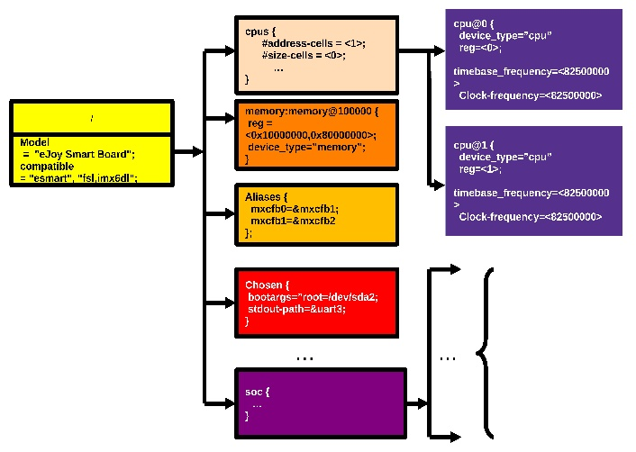
Figure 3-1 Device Tree Structure
Standard Properties
3.2 Standard Properties
The Device Tree Specification defines a set of standard properties. These standard properties define attributes required by the vast majority of Device Tree nodes, and authors can simply implement them according to their standardized usage. Beyond these standard properties, device driver developers can define custom properties tailored strictly for their proprietary drivers or for developers working on identical classes of hardware.
When describing properties, the concept of a "cell" is frequently encountered. Within a Device Tree context, a cell is defined as a 32-bit unsigned integer.
3.2.1 compatible Property
The value of the compatible property is a list of strings, typically formatted as a "manufacturer,model" pair. The sorting sequence within the string list dictates that the more specific the configuration is, the earlier it must appear; the more generic the configuration is, the later it must appear. The Linux kernel parses this exact string matching list to select and bind the appropriate device driver to the hardware node. The string characters must strictly consist of lowercase letters, numbers 0–9, and hyphens, with the initial character being a lowercase letter. For example:
compatible = "fsl,mpc8641", "ns16550";
3.2.2 model Property
The model property specifies a string value that defines the exact model of the component. It should generally follow the "manufacturer,model" nomenclature. For example:
model = "fsl,MPC8349EMITX";
3.2.3 phandle Property
The phandle property value is a 32-bit unsigned integer. When a node explicitly declares a phandle property, other hardware nodes can cross-reference it via this unique numerical identifier. For instance, consider a scenario where an interrupt controller node pic is defined as follows:
pic@10000000 {
phandle = <1>;
interrupt-controller;
reg = <0x10000000 0x100>;
};
This block defines a phandle equal to 1. Consequently, alternative hardware nodes can target the pic node using the integer value 1:
regulator@1 {
interrupt-parent = <1>;
};
This relationship indicates that the parent interrupt controller for regulator@1 maps directly back to the pic@10000000 node.
3.2.4 status Property
The status property indicates the operational state of a device. The allowable values for the status property are strictly constrained to okay, disabled, reserved, failed, or failed-sss (where sss represents a specific error code payload). When the status property is omitted from a node definition, it defaults implicitly to okay. If a developer is composing a new system Device Tree derived from an existing upstream overlay or reference base, any peripheral nodes not physically routed or supported on the new target board can have their status property explicitly overridden to "disabled". This configuration ensures the kernel bypasses the initialization and probe routines for that device during system boot.
3.2.5 #address-cells and #size-cells Properties
A node's #address-cells and #size-cells properties define the addressing layout rules for its immediate child nodes. Because the Device Tree parses data packages in 32-bit word cells, #address-cells specifies how many 32-bit cells are required to encode the base address within a child node's reg property. Concurrently, #size-cells dictates how many 32-bit cells are required to encode the memory window length or size of that child node. For example, if a parent container node defines these properties as follows:
#address-cells = <2>;
#size-cells = <1>;
Then any immediate child node must format its reg property statement using exactly two cells for the address and one cell for the size parameter:
reg = <0x10000000 0x00000008 0x100>;
In this scenario, the 64-bit combined vector 0x1000000000000008 represents the physical base address of the child node (consuming two cells), and 0x100 represents the allocated memory address space boundary size (consuming one cell).
3.2.6 reg Property
The reg property maps out the physical base addresses and corresponding memory address range sizes for the given peripheral node. The explicit cell count allocated for the address components and size components is determined entirely by the #address-cells and #size-cells properties of its immediate parent node. If a single peripheral maps to multiple non-contiguous physical address windows, it can be defined using multiple grouped address-and-size blocks. For example, assuming a device maps to 100 bytes of address space beginning at 0x10000000 and an additional 200 bytes of address space beginning at 0x20000000, and assuming both the address and size targets are configured to consume exactly one cell each, the node's reg property is expressed as:
reg = <0x10000000 100 0x20000000 200>;
If the parent node defines #size-cells = <0>, the length fields within the child node's reg array are omitted entirely.
3.2.7 ranges Property
The ranges property defines the memory-mapped address translation vector from a child node's local address space to its parent node's address space. Its structural format is defined as follows:
ranges = <[child_address parent_address length] [child_address
parent_address length]...>;
The exact cell count allocated to represent the child_address is governed by the #address-cells property of the node containing the ranges property. Concurrently, the cell count allocated to represent the parent_address is governed by the #address-cells property configured in the parent node's immediate precursor (the grandparent node). If the ranges property is empty (declared as an empty property block with no cell tokens), it signifies that the child and parent memory maps are identical (a 1:1 direct identity mapping). Consider the following structural example:
bus {
#address-cells = <2>;
soc {
compatible = "simple-bus";
#address-cells = <1>;
#size-cells = <1>;
ranges = <0x0 0xe0000000 0x00000000 0x00100000>;
serial@4600 {
device_type = "serial";
compatible = "ns16550";
reg = <0x4600 0x100>;
clock-frequency = <0>;
interrupts = <0xA 0x8>;
interrupt-parent = <&ipic>;
};
};
};
Within the soc node block, #address-cells equals 1; thus, in the ranges translation array, the local child address field for serial consumes exactly one cell (0x0). However, within the parent bus node, #address-cells is configured to equal 2. Therefore, the parent physical base address (the mapping destination address for the soc container) must consume exactly two cells (0xe0000000 0x00000000), yielding a consolidated 64-bit parent hardware boundary base address of 0xE000000000000000. By parsing this matrix, the true system-wide physical base address for the serial@4600 peripheral under the root architecture resolves cleanly to 0xE000000000004600.
3.2.8 dma-ranges Property
The dma-ranges property implements the identical structural format as the standard ranges property. It maps Direct Memory Access (DMA) address translation channels initiated by peripheral bus masters back into the upstream parent address space.
3.2.9 interrupts Property
The interrupts property is implemented by hardware nodes capable of generating interrupt lines. This property does not feature a single universal syntax specification; its cellular layout is instead strictly bound to the specific type of peripheral. Device vendors or driver authors define these parameter mappings inside matching documentation specifications, which are generally maintained within the Documentation/devicetree/bindings/ directory of the Linux kernel source tree. In the majority of configurations, the interrupts cell block encapsulates a unique hardware interrupt index (IRQ number) paired with an explicit interrupt trigger flag vector (such as edge-rising, edge-falling, level-high, or level-low indicators). For example:
interrupts = <0xA 1>;
Depending on the architecture's driver definition file, this cell configuration can be parsed to represent physical interrupt number 10 acting as an active-high edge-triggered line. Alternative interpretations are governed entirely by the device's explicit binding logic.
3.2.10 interrupt-parent Property
The interrupt-parent property defines the phandle or label reference pointing to the upstream interrupt controller routing the node's electrical interrupt signals. Modern system-on-chip architectures frequently isolate or cascade interrupt controllers inside complex hierarchical trees; the interrupt-parent attribute explicitly captures these routing dependencies. If the target upstream interrupt controller specifies a numeric handle, that value can be assigned directly to the property. Alternatively, if the parent node defines a textual label, the standard reference operator syntax (&) can be utilized. The following blocks show both implementation methodologies:
Assuming the upstream target interrupt controller node specifies an explicit handle vector of phandle = <1>;, the tracking attribute is declared as:
interrupt-parent = <1>;
Alternatively, if the upstream controller specifies a symbolic node label like intc1:, the property references it via the label lookup syntax:
interrupt-parent = <&intc1>;
3.2.11 interrupt-cells Property
This property is declared strictly inside hardware nodes functioning as an interrupt controller. It specifies how many 32-bit cells are required to encode a single interrupt descriptor within the controller's routing domain (defining the width of the interrupts property described in Section 3.2.9). In the example featured in Section 3.2.9, the interrupt descriptor consumes exactly two cells.
3.2.12 interrupt-controller Property
This is an empty boolean property applied directly to an interrupt controller node to declare that the containing node acts as an upstream system interrupt controller. It requires no accompanying cell data or value pairs. The standard syntax is defined as follows:
intc1: intc@100 {
interrupt-controller;
};
3.2.13 Nexus Nodes
A nexus node is defined as a node that implements a #<specifier>-cells property, which dictates the exact number of 32-bit cells required to encode a specific resource specifier. A specifier typically identifies a functional hardware module; for instance, the specifier in #gpio-cells maps to a GPIO module. The value assigned to #<specifier>-cells defines the cell count required to target a single resource unit within that specifier domain. If a node defines a property such as #gpio-cells = <1>;, it functions as a nexus node, and its associated resource indicator consumes exactly one cell.
The following analysis of the i.MX6Q gpio1 module shows the practical application and architectural design of nexus nodes. Within the unified Linux Device Tree include file imx6qdl.dtsi supporting both the i.MX6Q and i.MX6DL SoCs, the gpio1 node is structured as follows:
gpio1: gpio@209C000 {
compatible = "fsl,imx6q-gpio", "fsl,imx35-gpio";
reg = <0x0209C000 0x4000>;
interrupts = <0 66 IRQ_TYPE_LEVEL_HIGH>, <0 67 IRQ_TYPE_LEVEL_HIGH>;
gpio-controller;
#gpio-cells = <2>;
interrupt-controller;
#interrupt-cells = <2>;
};
In this block, the interrupts property indicates that this module can generate output interrupt signals. The interrupts array contains groups of three cells each, indicating that its parent interrupt controller defines #interrupt-cells = <3>. Therefore, the upstream controller requires three cells to map a single interrupt routing channel. On the i.MX6Q architecture, the first cell dictates the target GIC interrupt group/SPI index descriptor, the second cell specifies the raw interrupt number, and the third cell defines the interrupt trigger type.
The empty boolean property gpio-controller declares this hardware block as a functional GPIO controller. Operating system device drivers parse this property to identify and register the block's GPIO management capabilities.
The property #gpio-cells = <2> specifies that targeting an individual resource unit (a GPIO pin) within this controller requires exactly two cells. The first cell encodes the raw GPIO pin index number, and the second cell defines the initial electrical state or configuration flags, such as GPIO_ACTIVE_LOW.
The boolean property interrupt-controller indicates that this GPIO module also functions as an independent, downstream interrupt controller for user-space lines. Its companion property #interrupt-cells = <2> dictates that targeting any interrupt line managed by this module requires two cells: the first cell identifies the pin-specific interrupt number, and the second cell defines the signaling trigger type. Because the context implicitly locates the interrupt within the gpio1 block, a third cell to declare a GPIO module index is unnecessary, contrasting with the upstream parent controller's formatting.
Furthermore, properties such as <specifier>-map, <specifier>-map-mask, and <specifier>-map-pass-thru can also be applied to nexus nodes to handle complex cross-bus translations. Because their deployment footprints are less pervasive than the baseline #<specifier>-cells attribute, they are omitted here; developers can consult the official Device Tree Specification for extended edge-case documentation.
The standard properties detailed above represent only the baseline elements defined by the core Device Tree specification. Because the Device Tree format is inherently flexible, and because custom, vendor-specific attributes do not affect the parsing engines of unrelated devices, modern hardware descriptions rely heavily on custom provider-specific attributes.
Device Tree Nodes
3.3 Device Tree Nodes
Nodes within a Device Tree can represent a physical hardware component, an entire system subsystem, or an interconnect bus. A node description is structurally defined by its node name, localized unit address, absolute hierarchical path, and node label.
The node name specifies the technical identifier of the block, typically naming the node after the explicit device class it represents. The naming convention follows the format name@address, where the name segment is a string of 1 to 31 characters selected from 0-9, a-z, A-Z, ,, ., _, +, and -. The trailing address segment defines the base address or unit identifier of the component. This address can correspond to the device's physical layout within the CPU's memory-mapped I/O (MMIO) space, or it can represent a bus-specific coordinate system; its low-level interpretation is governed entirely by the Device Tree parsing routines compiled within the operating system driver.
Similar to file system folder structures, the absolute path of a node represents its full hierarchical lineage starting from the root node, separated by forward slashes (/), and formed by the corresponding node names (including their unit addresses). For example, the absolute path for the cpu0 node illustrated previously is:
/cpus/cpu0
A node label is an arbitrary string token suffixed with a colon (:) that resides immediately before the node name, isolated by whitespace characters. System software can reference or cross-access a target node either by invoking its symbolic node label or by referencing its full absolute path.
3.3.1 Root Node
The root node is represented by a single forward slash (/), mapping to the absolute path /. It can host the #address-cells, #size-cells, model, compatible, and serial-number properties. The serial-number property is optional, whereas the remaining properties are strictly mandatory. The #address-cells property is configured as one or more 32-bit integer cells. It specifies the exact cell count required to encode the unit address of its immediate child nodes. The #size-cells property maps to a 32-bit integer cell defining the cell count needed to represent the memory allocation length or address space size of those child nodes. The compatible property contains a string list identifying the target platform architectures compatible with the given Device Tree, typically structured as a "manufacturer,model" pair separated by a comma.
The direct child tree underneath the root node typically encapsulates specific structural container nodes, including /aliases, /memory, /reserved-memory, /chosen, and /cpus.
3.3.2 /aliases Node
The aliases node is utilized to define shorthand alternate names for fully qualified paths, allowing client software to locate or query complex nodes via abbreviated terms. An alias string consists of 1 to 31 characters drawn from 0-9, a-z, and -. The assigned property value maps directly to the absolute path of the targeted node. For example:
/ {
aliases {
serial0 = "/simple-bus@fe000000/serial@llc500";
};
};
In this block, serial0 = "/simple-bus@fe000000/serial@llc500" binds the symbolic reference alias serial0 directly to the serial@llc500 node. Operating system routines can subsequently query serial0 to interact with that peripheral.
3.3.3 /memory Node
The memory node defines the physical layout of the system's volatile random-access memory (RAM). Every valid Device Tree must contain at least one operational memory node. If the physical memory architecture consists of multiple non-contiguous memory regions, the Device Tree can instantiate multiple independent memory nodes to capture the layout. Each individual memory block supports four properties: device_type, reg, initial-mapped-area, and hotpluggable. The device_type and reg properties are strictly mandatory, while the remainder are optional. The device_type string value must be explicitly set to "memory". The reg property contains one or more <address size> arrays mapping the base address and length vectors of the target memory banks. The hotpluggable property is an empty boolean flag; its presence indicates that the associated memory block supports dynamic hot-plug hardware operations. The following example shows a dual-bank memory topology configuration:
memory@0 {
device_type = "memory";
reg = <0x000000000 0x00000000 0x00000000 0x80000000>;
};
memory@100000000 {
device_type = "memory";
reg = <0x000000001 0x00000000 0x00000001 0x00000000>;
hotpluggable;
};
3.3.4 /reserved-memory Node
The reserved-memory node declares specific regions of memory that must be protected and isolated from standard operating system memory management use. The reserved-memory container defines these protected blocks through dedicated child nodes. The container node must explicitly declare three attributes: #address-cells, #size-cells, and ranges. The value fields for #address-cells and #size-cells are 32-bit unsigned integers, while the ranges attribute must be left completely empty.
Each immediate child node under the reserved-memory block maps to a distinct reserved memory layout. These sub-nodes support seven optional properties: reg, size, alignment, alloc-ranges, compatible, no-map, and reusable. The array encoding rules for the reg property are determined by the #address-cells and #size-cells parameters established in the parent container, while the word width of the size property matches the parent's #size-cells directive. The alignment property dictates the boundary allocation constraint for the region, encoded using the cell size mandated by the parent's #size-cells. The format for the alloc-ranges property mirrors the structure of the standard reg array.
The no-map and reusable properties are empty boolean flags. When a child node declares the no-map attribute, the operating system kernel is strictly prohibited from instantiating a virtual memory mapping (such as a page table entry or cacheable kernel map) over that physical region. Conversely, the presence of the reusable attribute indicates that the operating system can temporarily leverage the memory block for general purposes; however, when the underlying peripheral driver explicitly requests the allocation, the kernel must yield the region back to its primary hardware owner. The following block outlines a complete structural example implementing standard memory and reserved memory allocations:
/ {
#address-cells = <1>;
#size-cells = <1>;
memory {
reg = <0x40000000 0x40000000>;
};
reserved-memory {
#address-cells = <1>;
#size-cells = <1>;
ranges;
linux,cma {
compatible = "shared-dma-pool";
reusable;
size = <0x2000000>;
alignment = <0x1000>;
linux,cma-default;
};
display: framebuffer@88000000 {
reg = <0x88000000 0x800000>;
};
multimedia: multimedia@70000000 {
compatible = "acme,multimedia-memory";
reg = <0x70000000 0x4000000>;
};
};
fb0: video@12300000 {
memory-region = <&display>;
};
codec: codec@12600000 {
memory-region = <&multimedia>;
};
};
3.3.5 /chosen Node
The chosen node does not represent a physical hardware device; instead, it passes runtime parameters directly to the operating system. This node can contain three attributes: bootargs, stdin-path, and stdout-path. The bootargs property passes the command-line initialization string directly to the Linux kernel. The stdin-path and stdout-path properties designate the default standard input and standard output devices, respectively. All three attributes are stored as string types. The values for stdout-path and stdin-path specify either the absolute hierarchical path or the symbolic phandle referencing the standard input/output terminal hardware. The following example outlines the standard implementation framework for the /chosen node:
/ {
chosen {
bootargs = "root=/dev/nfs rw nfsroot=192.168.1.1 console=ttyS0,115200";
stdout-path = &uart3;
stdin-path = &uart3;
};
bus@20000000 {
uart3: uart3@20000000 {
...
};
};
};
In this configuration, uart3 functions as a symbolic label pointing to a specific peripheral node within the Device Tree structure.
3.3.6 /cpus Node
The cpus container node describes the system's central processing units (CPUs). The top-level root node is strictly required to contain exactly one /cpus node. The cpus block houses multiple sequential cpu child nodes, and it must explicitly implement the #address-cells and #size-cells properties to define the address encoding scheme for its children. The cpus node can also host optional standard properties; when defined at this level, these properties represent common attributes shared universally across all child CPU cores.
3.3.7 /cpus/cpu* Child Nodes
A cpu* child node represents an independent hardware execution core capable of running an operating system context without interfering with sister CPU nodes, where * denotes the unique numerical index or identifier of the processing core. Hardware structures sharing a common Memory Management Unit (MMU) topology should be encapsulated within the same cpu node boundaries to ensure distinct CPU configurations remain mutually independent.
ARM architectures frequently deploy multiple decoupled CPU blocks. For example, the NXP i.MX6Dual integrates two Cortex-A class cores, the i.MX6Quad hosts four Cortex-A class cores, and the high-performance i.MX8 platform features a heterogeneous configuration comprising four Cortex-A72 cores, two Cortex-A53 cores, two Cortex-M real-time microcontrollers, a dedicated DSP, and two GPUs. Because these processing elements can operate independently, they are partitioned into distinct cpu nodes within the layout.
A valid cpu* node must contain the device_type, reg, clock-frequency, and timebase-frequency properties. Additional attributes can include status, enable-method, cpu-release-addr, power-isa-version, and mmu-type, alongside other standard metadata properties. The device_type string value must be set to "cpu", identifying the block as a core execution unit. The reg property defines the core's relative index mapping inside the parent cpus address space, formatted according to the parent's #address-cells and #size-cells properties.
The clock-frequency property is stored as a 32-bit or 64-bit unsigned integer, specified in Hertz (Hz), defining the current operating frequency of the CPU. Similarly, the timebase-frequency property is a 32-bit or 64-bit unsigned integer that specifies the operating frequency of the low-level system timebase generator.
The status property is a string value typically set to either "okay" or "disabled", where "okay" indicates the core is fully functional, and "disabled" denotes that the core is forced into a sleep, offline, or hard reset state. The remaining secondary attributes are less pervasive in standard configurations and are omitted here; readers can refer to the official Device Tree Specification for granular edge-case tracking. The following block show a complete Device Tree configuration for a dual-core system implementing a unified three-tier (L1, L2, L3) cache hierarchy:
cpus {
#address-cells = <1>;
#size-cells = <0>;
cpu@0 {
device_type = "cpu";
reg = <0>;
cache-unified;
cache-size = <0x8000>; // L1, 32 KB
cache-block-size = <32>;
timebase-frequency = <82500000>; // 82.5 MHz
next-level-cache = <&L2_0>; // phandle to L2
L2_0: l2-cache {
compatible = "cache";
cache-unified;
cache-size = <0x40000>; // 256 KB
cache-sets = <1024>;
cache-block-size = <32>;
cache-level = <2>;
next-level-cache = <&L3>; // phandle to L3
L3: l3-cache {
compatible = "cache";
cache-unified;
cache-size = <0x40000>; // 256 KB
cache-sets = <0x400>; // 1024
cache-block-size = <32>;
cache-level = <3>;
};
};
};
cpu@1 {
device_type = "cpu";
reg = <1>;
cache-unified;
cache-block-size = <32>;
cache-size = <0x8000>; // L1, 32 KB
timebase-frequency = <82500000>; // 82.5 MHz
clock-frequency = <825000000>; // 825 MHz
cache-level = <2>;
next-level-cache = <&L2_1>; // phandle to L2
L2_1: l2-cache {
compatible = "cache";
cache-unified;
cache-size = <0x40000>; // 256 KB
cache-sets = <0x400>; // 1024
cache-line-size = <32>; // 32 bytes
next-level-cache = <&L3>; // phandle to L3
};
};
};
Cache-specific sub-properties encompass compatible, cache-unified, cache-size, cache-sets, cache-line-size, and next-level-cache. Out of these, cache-unified, cache-size, cache-sets, and cache-line-size explicitly define the internal physical topology layout of the cache controller; developers familiar with microarchitecture specifications can parse these properties without extended commentary. The next-level-cache property holds the unique phandle referencing the subsequent lower level of the memory cache hierarchy, allowing an upstream cache controller to cleanly map and traverse downstream cache nodes.
Property Bindings
3.4 Property Bindings
Property bindings define the explicit usage syntax, constraints, and methodologies mandated by hardware vendors or device driver architects when implementing a new attribute. They also encompass the standard formatting rules for standard and widely adopted properties, typically supplied as plaintext documentation or structured YAML schemas. Within the Linux kernel repository, these property binding specification files are maintained within the Documentation/devicetree/bindings/ directory under the git/ root, where git/ represents the baseline root directory of the fetched Linux kernel source tree.
For NXP Linux distributions targeting the i.MX family of application processors, if the platform project is compiled using the Yocto Project framework (which will be detailed in subsequent chapters), the localized Linux kernel source code resides within the active working workspace under the following explicit path:
build/tmp/work/<board_name>-poky-linux-gnueabi/linux-imx/<version_number>/git
Concurrently, the U-BOOT source tree is extracted and managed under:
build/tmp/work/<board_name>-poky-linux-gnueabi/u-boot-imx/<version_number>/git
Where build/ represents the centralized compilation and deployment output directory specified during the initial creation and setup of the project configuration workspace.
Flattened Device Tree (DTB) Format
3.5 Flattened Device Tree (DTB) Format
The Device Tree source text file (.dts) is formatted as plaintext, which is inefficient for the operating system to parse directly. Therefore, it must be compiled into a binary format (.dtb) using the Device Tree Compiler (dtc). This optimization flattens the source tree text into a structured binary payload commonly referred to as a "blob." During the boot sequence, the bootloader loads this binary blob alongside the kernel executable image into distinct regions of physical memory. Operating system device drivers parse this runtime memory block to resolve registered peripherals, device constraints, and low-level parameters, ensuring precise hardware initialization.
The DTB file features a strict, linear architectural topology consisting of a standardized file header followed by three sequential block modules: the memory reservation block, the structure block, and the strings block. The memory reservation block catalogs explicitly protected physical memory margins, providing an architecture-enforced mechanism to prevent user-space applications or general kernel allocations from corrupting critical software or hardware buffers. The structure block stores the actual hierarchical arrangement of the Device Tree; by executing a linear traversal across this module, the kernel reconstructs and accesses all nodes within the hardware tree. The strings block aggregates the explicit names of all properties utilized across the Device Tree into a single contiguous pool; individual nodes inside the structure block map to their textual property keys by maintaining numerical offset vectors pointing into this string database.
3.5.1 DTB File Header
The DTB file header occupies exactly 40 bytes of memory, divided into ten sequential 32-bit (4-byte) fields. The structural layout is mapped out in the following schematic:
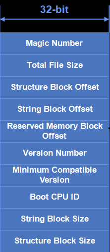
Figure 3-2 DTB File Header
-
Magic Number: A constant signature used by parsing routines to validate the payload as a definitive DTB structure. Its value is fixed to 0xD00DFEED and is encoded strictly in big-endian format.
-
Total Size: Defines the absolute linear length of the DTB payload in bytes, encompassing the 40-byte header block.
-
Offset to Structure Block: The explicit byte offset from the start of the file header to the baseline memory address hosting the structure block.
-
Offset to Strings Block: The explicit byte offset from the start of the file header to the baseline memory address hosting the strings block.
-
Offset to Memory Reservation Block: The explicit byte offset from the start of the file header to the baseline memory address hosting the memory reservation block.
-
Version Number: Specifies the version of the Device Tree Specification governing the compiled blob layout. The current baseline version tracks to 17.
-
Last Compatible Version: Defines the lowest historical specification version with which the current blob format maintains structural backward compatibility (typically fixed to version 16). Versions below 16 are deprecated and unparseable.
-
Boot CPU ID: Specifies the physical hardware index or core ID of the primary CPU core tasked with coordinating system boot routines. This value maps directly to the reg property assigned to that specific execution core under the /cpus tree path.
-
Size of Strings Block: The absolute linear width of the strings database module measured in bytes.
-
Size of Structure Block: The absolute linear width of the node structure module measured in bytes.
3.5.2 Memory Reservation Block
This module maintains an array of physical memory margins reserved for explicit use cases; all allocations specified within upstream memory-reserved nodes are consolidated here. The memory reservation layout is structured as an array of <physical_address region_size> coordinate pairs, where both the base address boundaries and length fields are stored as 64-bit unsigned integers. The following diagram shows the sequential binary formatting for a payload enclosing exactly three distinct memory isolation windows:
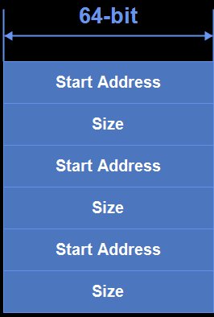
Figure 3-3 Memory Reservation Block Format
3.5.3 Structure Block Format
The structure block describes the actual topology and contents of the Device Tree, composed of a series of contiguous data fragments that are initialized via specific token markers. Each token identifier can be followed by a variable payload data segment whose structural formatting rules are governed entirely by the token class. The linear byte displacement linking any token back to the baseline origin of the structure block must be aligned precisely to a 32-bit (4-byte) word boundary. If a variable-length token sequence leaves a trailing address misaligned, compiler routines insert null-byte (0x00) padding to enforce explicit alignment.
The structure block relies on five primitive 32-bit token constants: FDT_BEGIN_NODE (0x00000001), FDT_END_NODE (0x00000002), FDT_PROP (0x00000003), FDT_NOP (0x00000004), and FDT_END (0x00000009).
-
FDT_BEGIN_NODE: Marks the structural initialization entry of a new Device Tree node. It is followed immediately by the node's name stored as a null-terminated ASCII string. If the node includes an explicit unit address identifier, the coordinate string is appended directly after the name block (e.g., name@address). A FDT_BEGIN_NODE token can accept any subsequent tokens except FDT_END_NODE. This allows a child node statement to open nested inside a parent block by injecting a nested FDT_BEGIN_NODE token sequence. The DTB architecture leverages this nesting rule to linearly map out the multi-dimensional tree topology.
-
FDT_END_NODE: Marks the termination boundary of the active node description block. It accepts no parameter arguments; the next contiguous byte region corresponds directly to the subsequent token.
-
FDT_PROP: Used to embed an explicit hardware attribute block into the active node context. It is followed by two mandatory 32-bit parameter words. The first word defines the payload length of the property data segment in bytes. The second word contains the numerical byte offset referencing the precise location of the attribute's text key inside the strings block. The raw property data payload is written directly after this second parameter word; its storage configuration within physical memory is detailed in the diagram below:
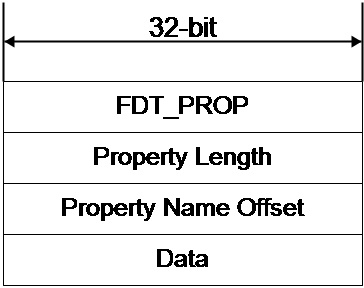
Figure 3-4 Storage Format of FDT_PROP in DTB
-
FDT_NOP: A structural no-operation marker. It carries no operational meaning and is skipped by kernel parsing engines.
-
FDT_END: Explicitly marks the termination of the entire structure block. The structure module must contain exactly one FDT_END token, which is required to reside at the absolute end of the block. The physical tracking layout of the structure block within memory is presented in the following schematic:

Figure 3-5 Storage Format of the Structure Block in DTB
struct fdt_node_header {
fdt32_t tag;
char name[0];
};
struct fdt_property {
fdt32_t tag;
fdt32_t len;
fdt32_t nameoff;
char data[0];
};
3.5.4 Strings Block
The property names utilized across all hardware descriptors are structured as standard, null-terminated ASCII strings. The strings block is formed by concatenating these text keys sequentially into a contiguous memory pool. The baseline starting memory address allocated to store each discrete string identifier must be aligned to a 4-byte boundary.
Device Tree Source (.dts) File Format
3.6 Device Tree Source (.dts) File Format
Device Tree Source files are distinguished by the .dts filename extension suffix. The initial line of a valid source file must strictly contain the exact token declaration /dts-v1/;, where v1 identifies compliance with the first version of the Device Tree Specification. Leveraging the compilation preprocessor directive #include "file", a Device Tree Source file can reference and incorporate external hardware description layout files suffixed with the .dtsi extension. Except for omitting the standalone /dts-v1/; tag and the leading #include directives, the internal syntactical formatting rules for a .dtsi file match those of a standard .dts file. The following snippet illustrates a representative configuration slice extracted from the imx6dl-sabresd.dts platform file:
/dts-v1/;
#include "imx6dl.dtsi"
#include "imx6qdl.dtsi"
/ {
model = "Freescale i.MX6 DualLite SABRESD Smart Device Board";
compatible = "fsl,imx6dl-sabresd", "fsl,imx6dl";
&battery {
offset-charger = <1485>;
offset-discharger = <1464>;
offset-usb-charger = <1285>;
};
/* ... */
};
In this context, offset-charger, offset-discharger, and offset-usb-charger represent proprietary hardware properties defined by NXP (formerly Freescale); their explicit parsing semantics and validation rules are mandated within matching vendor binding specifications.
3.6.1 Labels
Nodes or individual property definitions within the Device Tree can be preceded by a unique label identifier. A label must be 1 to 31 characters in length, consisting strictly of alphanumeric characters (a-z, A-Z, 0-9) or underscores (_), with the constraint that numeric digits 0-9 are prohibited from occupying the initial character slot. A label definition is declared by appending a colon (:) directly to the token string, typically isolated from the trailing node name or property declaration via whitespace.
When source code routines must target an absolute hierarchical path or resolve a specific node handle (phandle), developers can leverage a node's defined label as an abbreviated shorthand reference. This referencing mechanism is executed by prefixing the target label token with the ampersand character (&), as demonstrated by the &battery reference block in the preceding example. During the flattening process executed by the compiler, labels are translated into matching numeric phandle entries; consequently, raw textual label names do not persist inside the compiled binary .dtb blob.
3.6.2 Node and Property Definition Layout
A standard Device Tree node is composed of an optional label, a mandatory node name, an optional unit address, child nodes, and a localized block of properties. The universal layout syntax is defined as follows:
[label:] node-name[@unit-address] {
[label:] property1 = value;
[label:] property2 = value;
[label:] child-node-name[@unit-address] {
/* ... */
};
};
A node block can encapsulate both explicit property strings and sub-nodes simultaneously. When mixing both types within a single node boundary, property definitions must precede child node declarations.
Hardware properties are classified into two primary presentation categories. If an attribute requires an explicit parameter assignment, its definition is formatted using the assignment operator (=):
[label:] property-name = value;
The assigned value payload can be expressed as an ASCII text string wrapped within double quotes (""), an array of 32-bit unsigned integer cells enclosed within angle brackets (<>), or a stream of raw hexadecimal byte values bound by square brackets ([]). If a node attribute requires a 64-bit integer allocation, it is represented as a sequence of two contiguous 32-bit cells (e.g., <0x7FFFF000 0x00000000>).
Property values can incorporate mathematical expressions, bitwise manipulations, and logical operations utilizing standard operators derived from C-language syntax rules. These operators include:
-
Arithmetic Operators: +, -, *, /, %
-
Bitwise Logical Operators: &, |, ^, ~, >>, <<
-
Logical Operators: &&, ||, !
-
Relational Operators: >, <, ==, >=, <=, !=
-
Conditional Ternary Operator: ?: (Format: Condition ? Value_If_True : Value_If_False)
An attribute can accommodate multiple distinct values or data types separated by a comma. For example:
compatible = "fsl,imx6qdl", "fsl,imx8";
The ampersand character (&) handles cross-references to phandles, labels, and paths. When an ampersand reference is nested inside a cell array (<>), the compiler maps the text label or absolute path to its underlying numeric phandle. Conversely, when an ampersand reference targets a node outside of a cell array context, the label expands to its fully qualified, absolute file system path string. The following blocks show the two equivalent syntactical pathways used to link the uart@1 peripheral to its upstream controller node intc@4000:
/* Method A: Reference via explicit symbolic node label */
uart1: uart@1 {
interrupt-parent = <&intc1>;
};
/* Method B: Reference via full absolute path resolution syntax */
uart1: uart@1 {
interrupt-parent = <&{/soc/intc@4000}>;
};
intc1: intc@4000 {
interrupt-controller;
};
If a hardware attribute serves as an empty boolean indicator requiring no parameter data, it is declared as follows:
[label:] property-name;
The presence of an empty property string informs the operating system kernel that the target subsystem natively supports the associated hardware feature or peripheral configuration.
Chapter 4: The Boot Process of the Operating System
Computer systems generally comprise various components, including the central processing unit (CPU), memory subsystems, and peripherals. Upon system power-on, the reset circuit forces the program counter (PC) of the CPU to point directly to a fixed, predetermined memory location. Under the management of control logic circuitry, the central controller fetches the initial instruction from this absolute address, kicks off program execution, and performs the diverse computations and operations specified by the software logic.
Storage mediums can be broadly classified into two primary categories: volatile memory and non-volatile memory. Volatile memory completely loses its stored contents when power is disconnected, whereas non-volatile memory retains its data state in the absence of power. To enable system execution, the computer's hardware reset vector must map directly to a non-volatile memory space. These non-volatile memory components store pre-compiled software code tasked with executing low-level baseline hardware initialization, pulling the primary bootloader from a designated external storage medium into physical random-access memory (RAM), and then handing over control to that bootloader. The bootloader subsequently loads the operating system kernel into memory and triggers its execution sequence.
Desktop infrastructures running the Linux operating system typically leverage bootloaders such as GRUB, GRUB2, or LILO to introduce the operating system into RAM. Conversely, embedded Linux deployment pipelines generally employ the U-BOOT bootloader to import the Linux kernel, while BareBox stands out as a highly regarded alternative Linux bootloader within the Internet of Things (IoT) engineering ecosystem.
The Operating System Boot Process
4.1 The Operating System Boot Process
Traditional BIOS-Based Boot Process
The boot sequence of a legacy operating system utilizing a basic input/output system (BIOS) can be broadly divided into the following sequential stages:
-
Power-On: Power is supplied to the system components.
-
Power-On Self-Test (POST): Low-level routines hardcoded within the system's non-volatile ROM execute diagnostic hardware self-tests.
-
Master Boot Record (MBR) Execution: The system reads and executes the primary stage-1 bootloader code from the Master Boot Record sector of the designated boot device.
-
Stage-2 Loading: The stage-1 bootloader identifies the active boot partition, loads the secondary stage-2 bootloader code from that partition into random-access memory (RAM), and hands over execution.
-
Operating System Bootloader Discovery: The stage-2 bootloader determines the explicit path of the definitive operating system bootloader within the active file system structure and loads it into memory.
-
Kernel Initialization: The final operating system bootloader—commonly referred to simply as the bootloader—imports the operating system kernel image into RAM and relinquishes system control to the kernel itself, concluding the boot sequence.
Modern UEFI-Based Boot Process
Modern desktop and server firmware implementations follow the Unified Extensible Firmware Interface (UEFI) standard. Booting a UEFI-compliant operating system requires that the underlying hardware platform's firmware adheres strictly to the UEFI specification. This boot lifecycle is structured into the following operational phases:
-
Power-On: Power is supplied to the platform circuitry.
-
Security Phase (SEC): Initial security enforcement configurations and pre-RAM health checks are executed.
-
Pre-EFI Initialization (PEI) & Driver Execution Environment (DXE): System firmware initializes foundational hardware, and the system executes platform device drivers.
-
Boot Device Selection (BDS): The firmware evaluates configuration rules to choose the target boot device.
-
EFI System Partition Discovery: The firmware reads the /boot/efi directory tree on the selected storage device to locate the operating system's bootloader or boot manager.
(Note: To support UEFI-compliant booting, the target drive—regardless of whether it utilizes a GUID Partition Table (GPT) or legacy MBR layout—must contain a dedicated EFI System Partition (ESP) formatted to hold operating system boot binaries and configuration profiles). -
Boot Manager Invocations: The system launches the boot manager retrieved in the previous step, which orchestrates the final launch of the operating system kernel.
The first five steps are handled completely by the platform's non-volatile system firmware. The low-level partition architecture of the boot device itself is simplified under this paradigm; it no longer relies on complex stage-1 and stage-2 sector splitting, requiring only that the appropriate operating system bootloader application binary be populated within the standard /boot/efi target directory path.
Operating System and Hardware Interfaces for Desktops and Laptops
4.2 Operating System and Hardware Interfaces for Desktops and Laptops
4.2.1 BIOS Interface Program
Early computers possessed proprietary boot routines; for instance, the IBM PC hardcoded its bootloader directly into the non-volatile read-only memory (ROM) hosting the BIOS. After performing the necessary power-on self-tests and initial system provisioning, this integrated routine read the operating system from an external floppy disk or hard drive into memory for execution.
Conversely, the primary bootloader of a modern computer exists as an independent, standalone binary entity. Rather than residing within the machine's motherboard-bound non-volatile flash storage chips, it is saved on the designated boot device itself. The BIOS program stored in the computer's onboard non-volatile memory initializes baseline hardware subsystems so that the target storage controllers function correctly. It then reads a block of raw sector data from the Master Boot Record (MBR) region—the absolute first sector—of the media. This sequence determines whether a valid stage-1 boot string is present and resolves its physical deployment location and layout footprint. Once the BIOS confirms the presence of a viable bootloader payload on the media, it loads the binary into random-access memory (RAM) and jumps to its entry point to begin execution.
4.2.2 UEFI Interface
UEFI is an acronym for the Unified Extensible Firmware Interface, which defines the standard software interface layer bridging the platform firmware with the client operating system. The UEFI specification standardizes platform-related system data tables and formalizes an array of discrete services—categorized into boot services and runtime services—provided by the firmware to the operating system kernel. Under this architecture, the operating system loader (OS Loader) can safely abstract away low-level silicon and platform details, relying entirely on these abstract data frameworks and firmware-exported calls to successfully initialize and load the operating system.
An operating system boot process compliant with the UEFI specification no longer depends on physical, hardcoded partition boot sectors. Instead, an integrated, non-volatile Boot Manager calls firmware-provided runtime infrastructure to fetch the explicit file pathways and metadata matching the target bootloader. The platform firmware then invokes its internal UEFI boot service function LoadImage() to load both the primary operating system bootloader (Boot Loader) and any necessary standalone UEFI hardware drivers into physical RAM. Once loaded, execution jumps directly to the entry point address exposed by the operating system bootloader, driving kernel initialization forward.
Because UEFI provides native backward compatibility for legacy MBR boot methodologies, a modern UEFI-compliant system firmware implementation is fully capable of parsing and executing bootloader blocks stored on storage media configured with an MBR table layout.
4.2.3 Partition Tables
Standard desktop and laptop computers leverage partition tables to orchestrate the system boot process. A partition table catalogs the structural boundaries of a storage medium—such as a hard drive, SD card, or flash memory array—alongside the low-level logical organization of the data resident on that medium, allowing system software to locate and interact with stored blocks efficiently. In personal computing infrastructures, partition tables predominantly follow one of two layout specifications: MBR or GPT. MBR remains the most historically pervasive partition format, whereas GPT represents a modern architectural standard that is systematically replacing the legacy MBR specification.
4.2.3.1 MBR Partition Table Format
MBR is an acronym for Master Boot Record. It resides strictly within the absolute first physical sector of the storage medium, consuming exactly 512 bytes of space. The internal layout of the MBR is divided into three distinct operational blocks: the bootloader code segment, the primary Partition Table, and the Boot Signature validator byte sequence. The bootloader code segment encapsulates both the primary stage-1 bootloader string (main boot code) and the secondary stage-2 helper blocks.
The address range from 0x01B8 to 0x01BB contains a 4-byte unique disk signature key, which system firmware parses to distinguish whether the operating system hosted on the drive maps to Linux, Windows, or another UEFI-compliant platform interface. The subsequent 2 bytes, located at addresses 0x01BC and 0x01BD, hold a fixed value of either 0x0000 or 0x5A5A, where the signature 0x5A5A explicitly designates that the target operating system volume is protected under copyright enforcement hooks.
Immediately following the signature block lies the primary MBR Partition Table. It registers up to four distinct primary partition entries, allocating exactly 16 bytes of data to encode each structural partition slot. These entries map out the absolute starting and terminating boundary layouts of the partitions, the total sectors allocated to each block, and the corresponding Logical Block Addressing (LBA) coordinates. Under legacy tracking setups, physical geometry tracking parameters are represented explicitly using cylinder-head-sector (CHS) indexing coordinates. The four dedicated partition entry slots are hardcoded to align with the following fixed memory address offsets: 0x01BE, 0x01CE, 0x01DE, and 0x01EE.
The final two bytes of the 512-byte MBR block hold the Boot Signature word, which functions as a definitive integrity check to verify if the medium contains a valid, bootable system application. If the drive is bootable, address offset 0x01FE holds the byte value 0x55, and address offset 0x01FF holds the byte value 0xAA (forming the standard 0xAA55 big-endian word). The system BIOS reads these specific memory bytes to determine whether to advance or halt the execution pass on the selected drive.
Because the primary master boot string and its companion secondary stage-2 code are supplied directly by the active boot media rather than the motherboard firmware, this architecture injects massive flexibility into the system lifecycle, enabling different operating systems to implement custom boot managers and execution hooks. Certain advanced bootloaders leverage this flexibility to present interactive, multi-boot menu interfaces on startup, allowing developers to choose dynamically between launching a Linux environment or a Windows instance.
However, due to structural constraints built into the legacy format, an MBR table is strictly limited to managing a maximum of 4 primary partitions and cannot address a total storage capacity exceeding 2 TB.

Figure 4-1 MBR format
4.2.3.2 GPT Format
GPT is an acronym for GUID Partition Table. As an integral component of the Extensible Firmware Interface (EFI) standard, GPT defines the structural partitioning layout of hard disks. Compared to MBR, GPT offers greater architectural flexibility and cleaner compatibility with modern hardware. It is natively engineered for UEFI-based operating systems while maintaining backward compatibility hooks for legacy BIOS system interfaces.
Modern computer operating systems universally support GPT, including macOS and x86-based Windows implementations; however, booting Windows from a GPT-formatted storage medium strictly requires an operating system that supports the UEFI interface. Conversely, both FreeBSD and Linux are capable of booting from GPT-formatted storage media regardless of whether the underlying hardware implements a legacy BIOS or a modern UEFI platform interface.
GPT utilizes 64-bit Logical Block Addressing (LBA), enabling it to address up to 2⁶⁴ sectors. On storage media featuring a standard 512-byte sector size, GPT theoretically scales to support a maximum capacity of 8 ZiB, whereas on storage devices configured with 4096-byte (4 KB) advanced format sectors, its capacity boundary reaches 64 ZiB.
LBA0 (Sector 0) stores a Protective MBR structure, while the primary GPT Header resides explicitly at LBA1. The GPT Header contains a pointer vector targeting the Partition Entry Array, which typically begins at LBA2. The Partition Entry Array allocates a minimum allocation table size of 16,384 bytes, where each constituent entry layout is constrained to exactly 128 bytes.
To guarantee backward compatibility and prevent legacy MBR-bound disk utilities from misinterpreting a GPT disk as unpartitioned space—which could lead to catastrophic data overwrite or loss—GPT implements a structural modification over the traditional MBR layout. The modified MBR encapsulates a single partition entry defined explicitly with a partition type indicator of 0xEE. This placeholder partition spans the entire maximum address space manageable under standard MBR formatting rules. Consequently, legacy disk utilities that lack GPT awareness perceive the entire disk as a single, protected, unmanageable volume, preventing accidental data modification unless explicitly forced by the user. Conversely, modern GPT-compliant operating systems can reject processing a storage medium if it detects an invalid or corrupted protective block configuration that does not cleanly match the 0xEE signature.
For operating systems that feature native GPT parsing capabilities but are forced to boot via a legacy BIOS instead of a native UEFI firmware layer, the stage-1 bootloader string can still be embedded directly within the MBR area; however, this custom bootloader sequence must be explicitly coded to traverse and parse the underlying GPT partition structures.
4.2.4 Master Boot Record (MBR) Bootloader Code
Within traditional or legacy operating system architectures, the primary master boot code comprises a minimalist binary sequence tasked with locating the physical sectors hosting the Volume Boot Record (VBR) and reading that downstream VBR boot loader into memory. This initial stage-1 block occupies exactly 218 bytes of memory starting at address zero. Immediately following this primary execution string lies the disk timestamp payload, situated between addresses 0x00DA and 0x00DF. The secondary stage-2 boot code is written directly after the timestamp, spanning from 0x00E0 to 0x01E7. Once the stage-1 bootloader copies this stage-2 code block into random-access memory (RAM), it relinquishes system execution to the secondary block, which subsequently resolves and imports the definitive final-stage operating system bootloader into physical memory.
For modern operating systems such as Windows, the Master Boot Record bootloader code resides entirely within the primary MBR boot region at the absolute beginning of the first physical sector, consuming up to 440 bytes of space. The core architectural responsibility of this integrated boot routine is to identify the active boot sector, parse its boundary coordinates, copy the secondary-stage bootloader into RAM, and jump to its execution entry point.
4.2.5 Secondary Bootloader

Figure 4-2 Boot Disk Partitioning
The secondary bootloader, also referred to as the partition boot loader or Volume Boot Record (VBR), resides within a specific sector inside the designated boot partition; this physical sector is defined as the boot sector. Depending on the target operating system's filesystem architecture, the exact location of this boot sector within the partition layout may vary, though it typically occupies the absolute first sector of the boot partition.
The very first memory slot of a boot sector usually contains an explicit branch or jump instruction. Upon execution of this instruction, the partition boot loader kicks off its routine. The primary task of this code block is to parse the low-level filesystem headers, resolve the precise logical block address hosting the final-stage operating system bootloader on the storage medium, load that definitive boot loader binary into physical memory, and transfer system execution control over to it.
Embedded System Hardware and Operating System Interfaces
4.3 Embedded System Hardware and Operating System Interfaces
4.3.1 i.MX6 Solo/DualLite Processor
The core architecture of the i.MX6 Solo/DualLite features a single- or dual-core ARMv7 processor context. Around this processing core, NXP has integrated a vast matrix of multimedia and infrastructure modules, including hardware cryptographic acceleration engines, Vivante 2D and 3D GPUs, a Video Processing Unit (VPU), dual USB controllers, MMC/eMMC host interfaces, a multi-channel DDR memory controller, an LVDS display interface bridge, an HDMI transmitter, MIPI DSI/CSI interfaces, S/PDIF and EASI digital audio engines, an Enhanced External Interface Module (EIM) and General Purpose Media Interface (GPMI) supporting NOR and NAND flash variants, an enterprise Gigabit Ethernet controller, an Electronic Paper Display Controller (EPDC), a FlexCAN controller, and an ARM Generic Interrupt Controller (GIC), alongside generic I2C and SPI interfaces. The processor natively supports an expansive taxonomy of boot peripherals—including NOR flash, NAND flash, OneNAND, SD/MMC, eMMC, serial (I2C/SPI) NOR flash/EEPROM, and USB paths—and provides high-assurance hardware-enforced image authentication and decryption, resulting in a highly capable multimedia applications processor.
The primary bootloader code is embedded directly within the processor's on-chip boot ROM. This ROM bootloader features the following design attributes:
-
Granular support for a diverse taxonomy of storage boot devices.
-
Support for serial image downloading and bare-metal recovery via the USB OTG interface.
-
The capacity to parse Device Configuration Data (DCD) tables structured within the boot media to provision internal registers and memory sub-blocks.
-
Support for the execution of user-supplied initialization plugins stored on the boot medium.
-
High-Assurance Boot (HAB) digital signature validation and symmetric/asymmetric image decryption algorithms.
-
System wake-up routines from ultra-low-power suspend states.
-
Inter-Processor Interrupt (IPI) multi-core orchestration to wake secondary execution cores.
The ROM bootloader interrogates internal boot mode configuration registers and the hardware eFUSE matrix to isolate the designated primary boot device. During the prototyping and validation phases of a project, engineers can route specific GPIO lines to override these eFUSE definitions, streamlining low-level board development and hardware debugging.
Leveraging these native ROM routines, developers can initialize unprovisioned storage media; for instance, a raw firmware image can be injected into physical RAM via a host USB connection and subsequently written directly to an unformatted on-board storage chip.
The underlying ROM supports exactly three distinct boot pathways: eFUSE boot, serial downloader mode, and internal boot. The eFUSE boot path relies exclusively on the blown states of the on-chip fuse array to map the hardware initialization envelope. The serial downloader mode converts the USB OTG interface into a client endpoint to pull and run recovery payloads. The critical functional distinction between the eFUSE boot path and the internal boot path is that the internal boot mode evaluates physical GPIO pins on startup, allowing developers to manually override fuse settings. If an unrecoverable fault or timeout occurs during an eFUSE or internal boot sequence, the ROM state machine defaults to serial downloader mode.
During the hardware reset phase, the processor latches the electrical states of the dedicated boot configuration pins into internal registers. Upon release of the reset line, the execution pointer jumps directly to the on-chip ROM block. After performing essential baseline processor provisioning, the ROM code evaluates the latched status of the eFUSE, GPIO, and boot mode fields to determine the target storage interface. It then fetches a fixed allocation of blocks from a hardcoded offset on the boot media. This data chunk encapsulates the Image Vector Table (IVT), which acts as the definitive binary structural guide used to locate the Device Configuration Data (DCD) array, boot data parameters, and the primary application entry point addresses. The on-chip bootloader processes these tables to tune peripheral controllers and initialize the DDR controller, copies the primary U-BOOT binary from storage into physical RAM, and finally jumps to U-BOOT to drive the operating system initialization sequence forward.
4.3.2 On-Chip Bootloader
Upon system power-on reset, the power management and reset circuit forces the CPU into a deterministic baseline state, driving the primary program counter (PC) to align with a fixed physical address vector. This vector addresses the absolute starting instruction of the on-chip ROM, which typically contains a branch instruction leading into the primary ROM bootloader entry point. The fundamental objective of this low-level code block is to execute minimal, essential system initializations—such as configuring basic clock trees and initializing the external DDR memory interface—and transition the CPU core into its optimal execution mode. Once memory is available, the routine loads the initial boot data blocks and the primary U-BOOT stage binary from the initial boot sectors of the target storage media into RAM, then hands over execution to U-BOOT. The following analysis profiles the operational workflow of this on-chip bootloader using the NXP i.MX6 DualLite/Solo multimedia applications processor as a reference model.
Following a power-on reset (POR) cycle, the i.MX6 DualLite/Solo hardware samples the electrical levels of the BOOT_MODE0 and BOOT_MODE1 pins, latching these values directly into bits [1:0] of the internal BOOT_MODE register. The configured bit-pattern of BOOT_MODE[1:0], paired with the blown configurations of specific eFUSE registers and the real-time logic states of a defined subset of GPIO selection lines, strictly dictates the platform's boot pathway and execution topology. The integrated ROM layout provides native driver support to initialize and fetch payloads across SD/MMC cards, parallel/serial NOR flash, raw NAND flash, OneNAND arrays, high-speed SPI/I2C EEPROMs, and memory chips. The internal i.MX6 DualLite/Solo boot ROM provides the following technical capabilities:
-
Streamlined serial payload down-streaming and flashing via the integrated USB OTG controller interface.
-
The capacity to parse structural Device Configuration Data (DCD) matrices and execute short, pre-boot initialization software snippets (plugins).
-
Cryptographically sound digital signature verification (High-Assurance Boot) and encrypted secure boot mechanics.
-
System state restoration and execution tracking when waking up from low-power power-saving modes.
-
Multi-core initialization routines to bring up the secondary CPU core.
The on-chip ROM framework also supports directly downloading external payloads into internal RAM and executing them in place.
The capability to parse local configuration parameters (DCD) and execute standalone plugin code blocks represents two of the most critical design attributes of the on-chip bootloader layer. By leveraging these mechanisms, system engineers can achieve highly optimized hardware timing register configurations and bring up external DDR memory blocks before launching the primary U-BOOT binary, ensuring U-BOOT has a stable, high-capacity memory footprint available for its boot routines.
The i.MX6 Solo/DualLite platforms support exactly three operational boot configurations:
-
eFUSE Boot Mode: Hardware configuration parameters and interface choices are governed entirely by the internal non-volatile fuse array.
-
Serial Downloader Mode: Forces the chip to pause routine boot checks and wait for an incoming software payload via the USB OTG port.
-
Internal Boot Mode: Peripheral parameters and interface selections are driven by the logical values sampled from external physical GPIO pins.
The definitive difference between the eFUSE boot mode and the internal boot mode is that the eFUSE mode completely locks down the boot flow, preventing developers from overriding the hardware parameter matrices via external strap pins; conversely, the internal boot configuration evaluates real-time GPIO logic states to dynamically adjust hardware behaviors.
The serial downloader configuration allows developers to connect a host machine to the board's USB OTG port to inject binary payloads directly into volatile memory or program non-volatile flash storage blocks. The foundational operational flow chart governing the i.MX6 Solo and i.MX6 DualLite on-chip boot ROM sequence is mapped out in the schematic diagram below:

Figure 4-3 On-Chip Bootloader Flowchart
4.3.3 Image Bootloader Structure
The so-called image program refers to the executable binary software stored on the boot device. The storage layout of the image program must conform strictly to a specific format. Otherwise, the on-chip boot ROM and U-BOOT cannot determine the physical locations of the various components on the storage media, nor can they resolve the destination execution addresses in memory or locate the program's primary entry point. For the i.MX6 Solo/DualLite processors, a valid image program is composed of the following four sequential blocks:
-
Image Vector Table (IVT)
-
Device Configuration Data (DCD)
-
Boot Data
-
Application Code and Data
Among these components, the Image Vector Table is stored at a fixed, deterministic offset on the boot device. It consists of a precise array of pointer vectors that the on-chip boot ROM utilizes to locate the remaining sections of the program across the storage media blocks. The DCD block encapsulates a specialized group of registers and value pairings readable by the on-chip ROM to tune internal silicon parameters and configure peripheral controllers. The Boot Data table stores the absolute physical location of the image, its exact linear size, and explicit configuration flags indicating whether a pre-boot initialization software plugin is active. Together, these three introductory blocks are collectively defined as the Initial Program Loader (IPL) or initial import region. Upon completing its low-level internal resets, the on-chip boot ROM must copy this initial import block into internal RAM before processing any other routines. Finally, the application code and data section contains the actual compiled U-BOOT instructions and structural environment data tables.
4.3.4 Image Vector Table (IVT)
After performing the necessary hardware initialization and identifying the primary boot medium, the on-chip ROM bootloader first copies the data within the initial boot region into the on-chip RAM and subsequently parses the Image Vector Table (IVT). Based on the parsing results, it relocates the initial boot region data from the on-chip RAM to the target destination address and loads the remainder of the image program into the target address space. For the i.MX6 family of processors, the explicit storage offsets of the IVT across different boot media are defined as follows:
Table 4-1 Storage Offsets of the IVT on Different Media
| Boot Medium | Absolute Storage Offset/Address |
|---|---|
| NOR Flash | 0x0000_1000 (4 KB) |
| NAND Flash | 0x0000_0400 (1 KB) |
| SD / eMMC / MMC | 0x0000_0400 (1 KB) |
| SPI / I2C EEPROM | 0x0000_0400 (1 KB) |
The IVT must be stored at a fixed, deterministic offset on the boot device; this represents the sole structural constraint enforced by the on-chip boot ROM.
The IVT consists of eight distinct 4-byte fields: the header, the entry pointer, reserved region 1, the DCD pointer, the boot data pointer, the self pointer, the Command Sequence File (CSF) pointer, and reserved region 2 (see the diagram below).
Table 4-2 IVT Format
| Word Offset | Field Name | Description |
|---|---|---|
| 0x00 | Header | Defines tag, length, and version of the IVT. |
| 0x04 | Entry Pointer | Absolute address of the application entry point. |
| 0x08 | Reserved 1 | Reserved for future architectural expansion. |
| 0x0C | DCD Pointer | Absolute memory pointer targeting the DCD block. |
| 0x10 | Boot Data Pointer | Absolute memory pointer targeting the Boot Data block. |
| 0x14 | Self Pointer | Absolute memory pointer targeting the IVT itself. |
| 0x18 | CSF Pointer | Absolute pointer targeting the Command |
| 0x1C | Reserved 2 | Reserved for future architectural expansion. |
Each component occupies exactly 4 bytes of memory. The structures and specific use cases of these fields are detailed below.
The Header resides at the absolute beginning of the IVT, describing the length and version specification of the structure. Its format is defined as follows:
Table 4-3 Header Format
| Field | Width | Fixed Value / Encoding Rules |
|---|---|---|
| Tag | 1 Byte | 0xD1 (Identifies the block as a valid IVT structure) |
| Length | 2 Bytes | Big-Endian integer encoding the total width of the IVT |
| Version | 1 Byte | 0x40 series (e.g., 0x41, 0x42, 0x43) |
Within this header block, the Tag field holds a constant value of 0xD1, indicating that the data structure is an IVT. The Length field consumes 2 bytes, encoded in big-endian format, representing the absolute length of the IVT structure itself including the header word. The Version field spans 1 byte, carrying values such as 0x41, 0x42, or 0x43; this parameter explicitly dictates the program entry type, mapping either to the primary application start address or directly to a hardware reset vector.
The Entry field specifies the execution entry point of the image program, corresponding to the initial address of the application or the absolute address of the reset vector.
The DCD Pointer targets the Device Configuration Data array, spanning a length of 4 bytes. The hardware configuration matrices contained within this pointer block are parsed to initialize essential on-chip peripherals, such as the MMDC memory controller and external DDR chips.
The Boot Data Pointer holds the absolute memory address of the standalone Boot Data structure after the image has been loaded into memory. The structural layout of the Boot Data block is defined as follows:
Table 4-4 Boot Data Structure
| Field Name | Width | Architectural Meaning |
|---|---|---|
| Start Address | 4 Bytes | Absolute destination memory address of the image |
| Image Length | 4 Bytes | Total linear size of the image program in bytes |
| Plugin Flag | 4 Bytes | Configuration indicator for pre-boot initialization plugins |
In the structure mapped out above, the starting address defines the absolute destination target in physical RAM where the image payload is unpacked and copied, while the length field dictates the total volume of the image in bytes. The plugin slot specifies configurations for custom hardware initialization plugins; when the processor relies on baseline DCD tables instead of an active plugin to configure the SoC, this area is left empty.
The Self Pointer registers the absolute memory address hosting the IVT block itself, utilized dynamically by the on-chip ROM bootloader routines during validation steps.
The CSF Pointer points to the specific memory coordinates hosting the Command Sequence File (CSF) binary stream utilized during high-assurance encrypted secure boot operations.
The physical structural relationship mapping the U-BOOT bootloader's layout on the storage medium to its final expanded layout after being imported into physical RAM is illustrated in the diagram below:
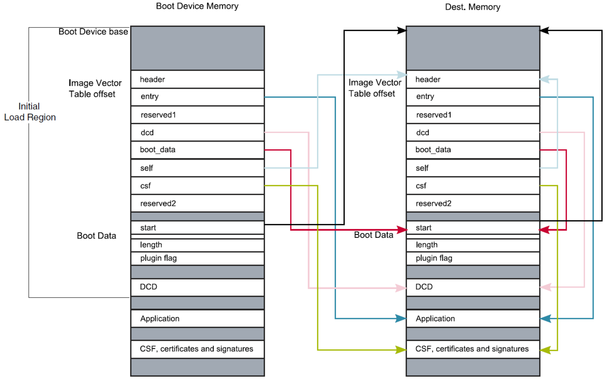
Figure 4-4 U-BOOT Image Bootloader Structure
i.MX6 DualLite/Solo Device Configuration Data (DCD)
Typically, after power-on, the default values of a computer's internal registers are not optimized for system performance, and certain peripherals cannot be used until they are explicitly configured. This requires developers to configure specific registers based on actual hardware conditions to meet system requirements. For example, the i.MX family of applications processors provides an EIM interface, but its default configurations are tailored for generic NOR flash; while NOR flash can be accessed immediately upon boot, the transfer speed is low. Furthermore, this family of chips provides a multi-mode memory controller to drive external RAM, but users must configure an array of register fields before the chosen DDR memory can be accessed. The on-chip boot ROM of the i.MX6 chip provides a built-in function to parse Device Configuration Data (DCD) directly from the boot device. As long as the developer provides the correct data structures at the designated offsets within the external boot image according to the specified formatting rules, the on-chip ROM can execute baseline hardware provisioning automatically.
The DCD structure encapsulates these device configuration parameters, and the on-chip ROM utilizes the pointer vectors resident inside the Image Vector Table (IVT) to resolve the physical location of the DCD payload on the storage medium. The binary storage layout of the DCD data is defined as follows:
Table 4-5 Storage Format of DCD Data
| Byte Offset | Field Name | Description |
|---|---|---|
| 0x00 | DCD Header | Standard 4-byte descriptor header block. |
| 0x04 | Commands Array | A contiguous sequence of configuration commands. |
The DCD structure header occupies exactly 4 bytes of memory, organized according to the following layout:
Table 4-6 DCD Header Structure
| Field | Width | Fixed Value / Encoding Rules |
|---|---|---|
| Tag | 1 Byte | 0xD2 (Identifies the block as a valid DCD structure) |
| Length | 2 Bytes | Big-Endian integer encoding the total length of the DCD array including this header |
| Version | 1 Byte | 0x41 |
Within this header block, the Tag field holds a constant byte value of 0xD2, identifying the data structure as a DCD block. The Length field consumes 2 bytes, encoded in big-endian format, representing the absolute length of the DCD payload including the header itself. The Version field spans 1 byte and is fixed to 0x41.
The CMD (Commands) section contains the actual configuration instructions executed by the ROM engine. The interpreter supports exactly 4 distinct command variants: the Write Command, the Check Data Command, the No-Operation (NOP) Command, and the Unlock Command.
The layout syntax for the Write Command is defined as follows:
Table 4-7 Write Command Format
| Word Offset | Field Name | Description |
|---|---|---|
| 0x00 | Command Header | Tag (0xCC), Length (2 Bytes, Big-Endian), and Parameter (1 Byte). |
| 0x04 | Address | Target physical or register address for the write operation. |
| 0x08 | Value / Mask | Payload data to be written or bit-mask to be applied. |
In this layout, the Address parameter specifies the target register or memory address for the write operation, while the Value/Mask parameter provides the raw payload data to be written or the bitmask to be applied. The command header consists of three segments: the Tag spans 1 byte and holds a constant value of 0xCC to signify a Write command; the Length spans 2 bytes, encoded in big-endian format, defining the total byte width of the Write command sequence including the header; the Parameter field occupies 1 byte, structured as follows:
Table 4-8 Parameter Format
| Bit Fields | Description / Sub-field Encoding |
|---|---|
| [2:0] | Bytes: Width of the target register access; can be set to |
| [4:3] | Flags: Operational mode control fields (Bit 3 = Masked Write, Bit 4 = Set/Clear). |
The operational modes defined by these flag bits are evaluated according to the table below:
Table 4-9 Write Command Operational Flags
| Binary Bit Pattern | Operation Type | Functional Specification |
|---|---|---|
| 00 | Clear}Clear bits specified by the value payload. | |
| 01 | Write | Direct write operation (absolute value assignment). |
| 10 | Clear/Reset | Execute a bitwise clear operation using the mask. |
| 11 | Set | Execute a bitwise set operation using the mask. |
The Check Data Command performs conditional polling over a target register address space. Its layout configuration is structured as follows:
Table 4-10 Check Data Command Format
| Word Offset | Field Name | Description |
|---|---|---|
| 0x00 | Command Header | Tag (0xCF), Length (2 Bytes, Big-Endian), Parameter (1 Byte). |
| 0x04 | Address | Target memory or register address to be polled. |
| 0x08 | Mask | Bitmask utilized to filter out unrelated data bits. |
| 0x0C | Count | Maximum polling loop iteration threshold. |
The Address field defines the register target to sample, the Mask field acts as a filter to mask out unrelated bits, and the Count word specifies the loop iteration limit. The ROM engine loops and samples the target address continuously until the specified bitwise conditional checks match the mask constraints or the iteration counter reaches the threshold defined by Count. If Count is initialized to 0, the command effectively functions as a no-operation statement.
The command header for this check utility contains three distinct fields. The Tag is fixed to a constant byte value of 0xCF, identifying the structure as a Check Data block. The Length field consumes 2 bytes, encoded in big-endian format, indicating the total length of the check sequence including its header. The Parameter field occupies 1 byte, formatted as follows:
Table 4-11 Check Data Parameter Header
| Bit Fields | Description / Encoding Specification |
|---|---|
| [2:0] | Bytes: Width of the target access check window (1, 2, or 4 bytes). |
| [4:3] | Flags: Operational evaluation logic selectors (Bit 3 = Masked, Bit 4 = Set). |
The exact polling logic governed by these parameter flags is detailed below:
Table 4-12 Data Test Operations
| Binary Bit Pattern | Condition Rules | Execution Behavior |
|---|---|---|
| 00 | Until All Zero | Poll continuously until all unmasked bits evaluate to zero. |
| 01 | Until Clear | Poll continuously until specified unmasked bits are cleared. |
| 10 | Until All One | Poll continuously until all unmasked bits evaluate to one. |
| 11 | Until Matching | Poll continuously until unmasked bits exactly match the target pattern. |
The NOP Command occupies exactly 4 bytes of memory, matching the format below:
Table 4-13 NOP Command Format
| Byte Offset | Field Name | Fixed Value / Encoding Rules |
|---|---|---|
| 0x00 | Tag | 0xC0 (Identifies a No-Operation token) |
| 0x01 | Length | Fixed to a value of 4 bytes (encoded across 2 bytes: 0x00 0x04). |
| 0x03 | Undefined | Reserved / Undefined trailing byte (can be safely ignored). |
The Tag field spans 1 byte and holds the constant value 0xC0. The Length field spans 2 bytes and is fixed to 4. The final byte carries no definition and is ignored by the parsing engine.
The Unlock Command is implemented to prevent the internal secure boot sub-routines from locking out specific hardware engines upon exiting the ROM execution phase. Its structure is configured as follows:
Table 4-14 Unlock Command Format
| Field Segment | Width | Functional Specification |
|---|---|---|
| Tag | 1 Byte | 0xB2 (Identifies an Unlock token) |
| Engine ID | 1 Byte | Eng vector specifying the hardware cryptographic engine to remain active. |
| Unlock Value | 2 Bytes | Value payload specifying the configuration word needed |
The Tag field occupies 1 byte, holding a constant value of 0xB2. The Eng sub-field defines the hardware engine component that must remain active and accessible after the ROM completes execution, while the trailing Value payload provides the exact configuration parameter word required by that engine. This command is primarily utilized within encrypted high-assurance secure boot deployment pipelines.
Bootloaders
4.4 Bootloaders
The application code and data section contains the final-stage bootloader, which is the most complex component among the primary segments. It is precisely this stage of the bootloader that imports the operating system kernel into physical memory and ultimately transfers system control to the operating system itself.
Different operating systems can implement different bootloaders, and a single bootloader can also be adapted to target diverse operating systems. The most prevalent bootloaders deployed across desktop systems include:
-
NTLDR
-
BOOTMGR
-
GRUB2
-
LILO (Linux Loader)
Conversely, the most popular bootloaders utilized within contemporary embedded operating system architectures include:
-
U-BOOT
-
BAREBOX
-
REDBOOT
NTLDR is utilized to boot legacy operating systems including Windows NT, Windows 2000, and Windows XP. A text configuration file named boot.ini resident inside the boot partition contains the operating system selection list alongside the physical storage coordinates of each instance. NTLDR must interact with NTDETECT.COM to collect hardware profiles before launching the operating system.
BOOTMGR is implemented to boot Windows Vista and subsequent Windows operating system releases. The available operating system options are maintained within a structured database file named BCD (Boot Configuration Data) stored in the active system partition. This bootloader operates independently and does not require secondary helper applications to orchestrate the kernel launch.
GRUB is capable of loading a vast, diverse matrix of operating systems and stands out as the most dominant, prevalent bootloader in the Linux ecosystem. The primary configuration script containing boot parameters is maintained within the grub.cfg file (for GRUB2 structures) or the menu.lst file (for legacy GRUB configurations).
U-BOOT is a powerful open-source bootloader extensively deployed across embedded environments. Globally known as "Das U-Boot," which is an acronym for the Universal Boot Loader, it provides broad processor architecture support for 68k, ARM, Blackfin, MicroBlaze, MIPS, Nios, SuperH, PowerPC (PPC), RISC-V, and x86 silicon targets. It supports a comprehensive taxonomy of storage interfaces—including SD cards, SATA drives, SCSI peripherals, EEPROMs, parallel/serial NOR flash, raw NAND flash, eMMC blocks, and USB storage volumes—alongside native network-based boot implementations.
BAREBOX is an alternative open-source bootloader framework supporting diverse architectures like ARM, x86, MIPS, and RISC-V. Initiated in 2007 as a fork derived from U-BOOT, it integrates multiple foundational components and design paradigms directly from the Linux kernel source code, resulting in a highly modular, Linux-style embedded boot platform.
REDBOOT is an acronym for Red Hat Embedded Debug and Bootstrap Firmware. It leverages the underlying Hardware Abstraction Layer (HAL) of the eCos real-time operating system to deliver a robust bootstrap environment for embedded systems. It supports serial line and network-based image downloading while providing complete trapping hooks for interactive GDB debugging. Furthermore, it exposes a comprehensive command-line interface that allows developers to execute manual firmware downloads and flash programming operations.
Because U-BOOT stands as the most pervasive, feature-rich, and industrially proven bootloader platform across contemporary embedded systems engineering, the subsequent chapter focuses explicitly on U-BOOT compiled for the NXP i.MX6Solo applications processor to systematically analyze its runtime execution pipeline, source code architecture, and core functional capabilities.
Chapter 5: U-BOOT Booting
U-BOOT Boot Flow
5.1 U-BOOT Boot Flow
U-BOOT is the definitive bootloader responsible for importing the operating system kernel into physical memory. It can function as both a first-stage and a second-stage bootloader, loaded into RAM by the primary initialization routines embedded inside the on-chip boot ROM (such as the ROM firmware within NXP's ARM-based i.MX6 family of multimedia applications processors). After loading the image program into memory, the on-chip ROM forces an execution jump to the absolute address specified by the entry pointer entry within the Image Vector Table (IVT), triggering the execution of the U-BOOT bootstrap pipeline. When the platform is configured to leverage the SPL boot methodology, the complete multi-stage system boot lifecycle is organized as illustrated in the schematic below:
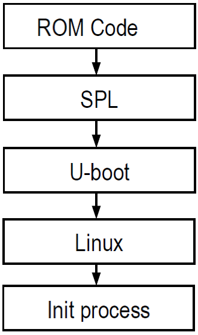
Figure 5-1 Linux Boot Flow
The U-BOOT binary components can reside across an array of storage mediums, including SD cards, SATA drives, parallel/serial NOR flash, or raw NAND flash arrays. For a typical embedded target, the primary boot device is logically partitioned into four operational areas. The first partition stores the initial program loader and image vectors detailed in the preceding chapters (the boot image payload). The second partition holds the persistent environment block containing the runtime boot parameters passed by the bootloader to the operating system kernel. The third partition isolates the compressed Linux kernel image (zImage or uImage), and the fourth partition hosts the root filesystem (rootfs) matrix.
Figure 5-2 Boot Medium Partition Layout

Figure 5-3 U-BOOT Boot Flow Across Different Boot Methods
As mapped out in the sequencing flowchart above, the U-BOOT startup pipeline supports several distinct boot modes, specifically: SPL (Secondary Program Loader), TPL (Tertiny Program Loader), or proper execution modes. These variants represent modular binary derivatives generated from a single consolidated U-BOOT source tree based on explicit compile-time configuration parameters. They can be freely stacked and combined like building blocks to adapt to localized silicon or memory boundary constraints.
These compilation targets maintain mutually independent operations yet execute sequentially based on system requirements. If the SoC features a high-capacity internal SRAM footprint, or if the hardcoded BootROM routines are explicitly engineered to initialize the external DDR layout before handing over execution, the platform can boot directly into the Proper image via a single-stage boot configuration. This single-stage approach is common among high-performance SoCs or system emulators. Conversely, if the physical internal RAM is highly constrained and the on-chip ROM lacks the capacity to initialize the external memory controller, the chip can initially parse and run only a minimal code footprint. In this scenario, a two-stage configuration joining U-BOOT Proper with an intermediary SPL (Proper + SPL) serves as the optimal layout; the on-chip ROM loads the lightweight SPL component into internal SRAM to initialize the system clocks and DDR lines, and the SPL subsequently fetches and unpacks the heavy U-BOOT Proper binary into the newly initialized external memory. Alternatively, the SPL can bypass the Proper stage entirely and branch straight into the Linux kernel initialization path (known as Falcon Mode). Under highly restrictive hardware constraints (for instance, a legacy layout exposing only 4 KB of internal SRAM where even a stripped SPL cannot fit), a three-stage boot pipeline joining U-BOOT Proper, SPL, and TPL (Proper + SPL + TPL) can be deployed, forcing the TPL to execute first from raw SRAM to bring up the core memory lines.
U-BOOT Proper represents the full-featured, standard variant of the bootloader. It encapsulates a highly complex command-line interface shell (CLI), granular environment variable parsing engines, a robust network protocol stack, and a comprehensive device driver model; its primary responsibility is loading the operating system kernel into memory. The SPL functions as a stripped-down, lightweight variant of U-BOOT, compiled without the text shell interpreter, environment subroutines, and superfluous peripheral drivers to optimize its binary size. Its exclusive objective is initializing foundational hardware blocks and loading the subsequent execution stage. The TPL represents a hyper-stripped, minimal variant of U-BOOT that typically isolates only the absolute baseline register loops needed to bring up the external DDR lines.
The selection of these U-BOOT boot stages is enforced at compile time using build flags (CONFIG_SPL=y, CONFIG_TPL=y), rather than being dynamically evaluated at runtime. Configuring these compilation switches is handled either via interactive menu-driven configuration utilities (menuconfig) or by editing the platform baseline configuration tables directly (such as defconfig templates or the active .config workspace).
While CONFIG_SPL and CONFIG_TPL act as global functional selection switches determining whether the compiler generates standalone SPL and TPL binary components, code blocks belonging to Proper, SPL, or TPL can coexist within a single function or source file. To isolate and separate these interleaved routines cleanly, the build system defines the CONFIG_SPL_BUILD and CONFIG_TPL_BUILD macro constants. If a block is bound by an #if !defined(CONFIG_SPL_BUILD) guard, it indicates that the enclosed code belongs strictly to the primary U-BOOT Proper image. An assignment matching #if defined(CONFIG_SPL_BUILD) wrapped alongside an inner #if !defined(CONFIG_TPL_BUILD) boundary indicates that the routine is compiled exclusively for the SPL layer. Finally, combining #if defined(CONFIG_SPL_BUILD) with an active #if defined(CONFIG_TPL_BUILD) filter designates that the target routine belongs exclusively to the TPL compilation pipeline. If code segments are written without these conditional macro envelopes, they are integrated globally into all three images.
When utilizing the Yocto Project compilation and build framework, the localized U-BOOT source tree leveraged by the NXP Linux release is extracted and tracked under the following workspace directory:
build/tmp/work/<board_name>/u-boot-imx/<version_number>/git/
Throughout all subsequent sections of this book, any explicit references detailing source code locations or file pathways are mapped assuming the git/ root directory as the absolute base path.
System Startup
5.2 System Startup
Upon receiving system control, the U-BOOT bootloader first initializes the exception vector table. For ARM systems, the source code for this low-level component is written in ARM assembly language and is maintained within the file git/arch/arm/lib/vectors.S. This file defines the following exception vector matrix. Once compiled into binary machine code, the linker mechanism places this exception vector table directly into the .vectors section starting at the global symbol _start. The linker script explicitly places this section at the absolute base entry point of the compiled U-BOOT binary image.
.macro ARM_VECTORS
b reset
ldr pc, _undefined_instruction
ldr pc, _software_interrupt
ldr pc, _prefetch_abort
ldr pc, _data_abort
ldr pc, _not_used
ldr pc, _irq
ldr pc, _fiq
.endm
.globl _start
.section ".vectors", "ax"
_start:
ARM_VECTORS
As shown in this assembly fragment, the absolute first instruction of the U-BOOT binary is an unconditional branch command jumping to the reset handler. The remaining exception vector slots utilize ldr instructions to load the starting memory addresses of their respective exception handlers directly into the Program Counter (pc) register, managing the corresponding hardware trap events. These underlying handlers and their target memory labels are fully declared within vectors.S. Because these routines are straightforward, they are omitted here for brevity; interested readers can review the source code in vectors.S.
It must be explicitly noted that if the platform is configured to leverage an SPL-based boot flow, this exception vector table definition is left empty, containing only a single unconditional jump instruction. Under this configuration, the final configuration of the active exception vector table is deferred and handled downstream by the running SPL routine.
The reset label is exposed globally within start.S, causing execution to branch directly into the code maintained inside start.S. For the i.MX6 Solo/DualLite processors, the start.S source file resides within the directory path git/arch/arm/cpu/armv7/.
The initial execution sequence in start.S forces the CPU core into Supervisor (SVC32) mode, masks out the IRQ and FIQ line interrupts, and modifies specific CP15 coprocessor control registers to configure internal caches, provision the memory management sub-blocks, and configure basic memory page translation tables. The following diagram charts the core assembly-level CPU initialization flow executed inside the start.S routine:
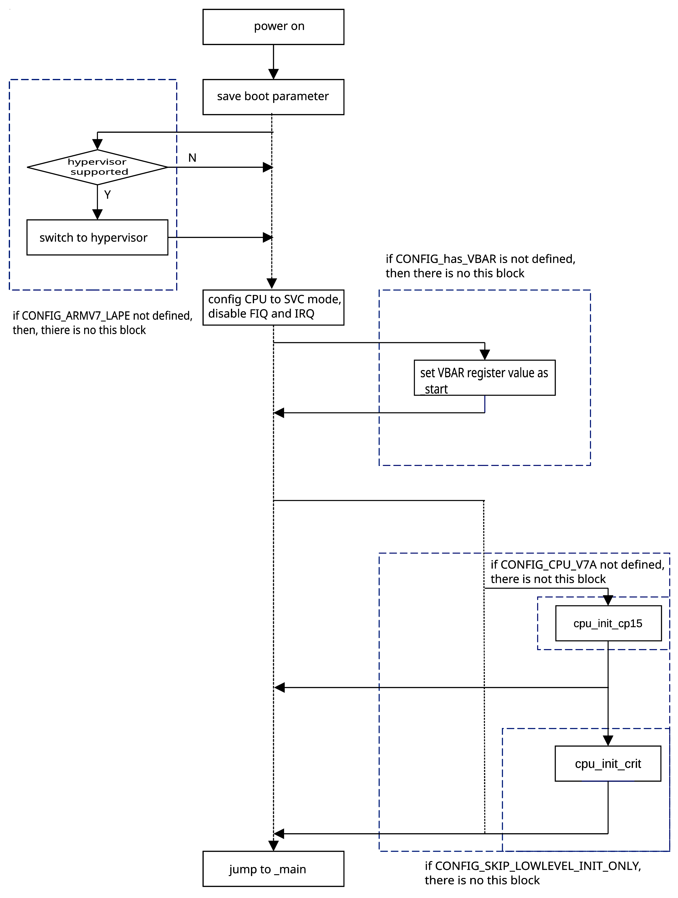
Figure 5-4 Initialization Flowchart
.globl reset
.globl save_boot_params_ret
.type save_boot_params_ret,%function
reset:
b save_boot_params
save_boot_params_ret:
mrs r0, cpsr
and r1, r0, #0x1f @ mask mode bits
teq r1, #0x1a @ test for HYP mode
bicne r0, r0, #0x1f @ clear all mode bits
orrne r0, r0, #0x13 @ set SVC mode
orr r0, r0, #0xc0 @ disable FIQ and IRQ
msr cpsr,r0
bl cpu_init_cp15
bl cpu_init_crit
bl _main
ENTRY(save_boot_params)
b save_boot_params_ret @ back to my caller
ENDPROC(save_boot_params)
.weak save_boot_params
At the reset execution entry block, the code invokes an unconditional branch jumping into the save_boot_params subroutine to protect the boot registers handed down by the precursor ROM stage. In the default fallback path, this subroutine consists of a basic branch command that immediately returns back to the save_boot_params_ret marker, where the core proceeds to disable incoming asynchronous interrupts. Declaring the symbol as .weak save_boot_params allows system architects to override this routine. Developers can implement a custom save_boot_params implementation within board_init.c or alternative platform files to fully suppress or replace the baseline tracking code defined here. To strictly optimize the binary footprint, start.S relies extensively on preprocessor conditional compilation macros rather than runtime logical statements to initialize various system configurations.
If the platform build files do not define the configuration overrides CONFIG_SKIP_LOWLEVEL_INIT or CONFIG_SKIP_LOWLEVEL_INIT_ONLY, the system advances to call the lowlevel_init assembly routine. This code block resides within git/arch/arm/cpu/armv7/lowlevel_init.S and is responsible for carving out a temporary stack frame inside internal volatile storage. The target address parameters for this temporary stack differ significantly depending on whether the system is compiled under an SPL configuration or an ordinary non-SPL Proper build. The lowlevel_init routine subsequently invokes the s_init helper subroutine located within the same file. Upon completion, s_init returns control back to the original function block that initiated the call to lowlevel_init. This routine is exported with a weak linker attribute, permitting developers to easily substitute their own custom hardware initialization hooks.
Initializing the C Runtime Environment
5.3 Initializing the C Runtime Environment
The final instruction of the start.S utility is an unconditional branch command jumping to _main, forcing the CPU to jump to the _main entry point declared within crt0.S to process subsequent logic.
Before transitioning into the C programming execution state, the assembly logic in crt0.S coordinates the low-level, foundational allocation of resources. It first loads the absolute baseline starting address of the global_data structure into a dedicated processing register (specifically register r9 on ARM 32-bit architectures) and provisions the primary Stack Pointer (sp) required for C runtime execution, allowing downstream C functions to access parameters directly via gd->xxx. By invoking board_init_f_alloc_reserve(), it calculates and carves out the explicit memory margins required to accommodate the early stack frame and the gd tracking structure. It then invokes board_init_f_init_reserve() to clear and zero out the newly isolated gd memory region, ensuring all constituent structural members initialize cleanly to zero. Finally, it triggers board_init_f() to dynamically assign values to the internal tracking fields of the global_data layout.
The stack layout coordinates utilized by U-BOOT Proper align with the parameter CONFIG_SYS_INIT_SP_ADDR, whereas the SPL layer targets CONFIG_SPL_STACK and the TPL layer maps to CONFIG_TPL_STACK. These macro definitions reside inside the platform include files located within the directory tree git/include/configs/. For the NXP i.MX6 applications processor, the explicit parameter boundary for CONFIG_SPL_STACK is defined within the imx6_spl.h include file.
Within the U-BOOT architecture, the struct global_data structure (universally abbreviated as gd) acts as the primary global data repository tracking the platform lifecycle across the entire system boot sequence. Its core architectural declaration is maintained within the generic source file git/include/asm-generic/global_data.h. Because U-BOOT lacks an available global static variable block prior to executing the code relocation sequence (as the uninitialized data block, or BSS segment, remains completely uninitialized at this stage), the system routes this pointer tracking structure across active function boundaries by anchoring it within a dedicated processor register or specialized stack offset.
This global tracking framework encapsulates an array of metrics used to register physical hardware parameters, volatile memory distributions, and code relocation layout parameters, serving as the primary bridge to pass runtime data tables from the pre-relocation phase (board_init_f()) over to the post-relocation phase (board_init_r()). The primary structural members of this framework include:
-
bd_t *bd: Points to the platform-specific board information structure (board info), containing baseline hardware attributes such as memory starting addresses and bank capacities.
-
unsigned long flags: Status bitmask flags identifying the active runtime state of the system (such as tracking whether components are fully initialized, relocated, or running in silent mode).
-
unsigned int baudrate: Registers the active data transfer speed (baud rate) assigned to the primary serial console.
-
unsigned long relocaddr: Identifies the absolute destination target address in physical memory where the U-BOOT binary is relocated.
-
unsigned long reloc_off: Stores the explicit linear offset tracking the delta between the actual running address execution vectors and the default compile-time link addresses.
-
const void *fdt_blob: Stores the absolute physical memory address hosting the Flattened Device Tree binary (dtb) blob.
-
struct udevice *cur_serial_dev: Points directly to the structural driver instance managing the active serial communication port.
The crt0.S file resides within the directory tree git/arch/arm/lib/. The low-level assembly execution pipeline tracking the initialization sequence inside crt0.S is mapped out in the flowchart below:
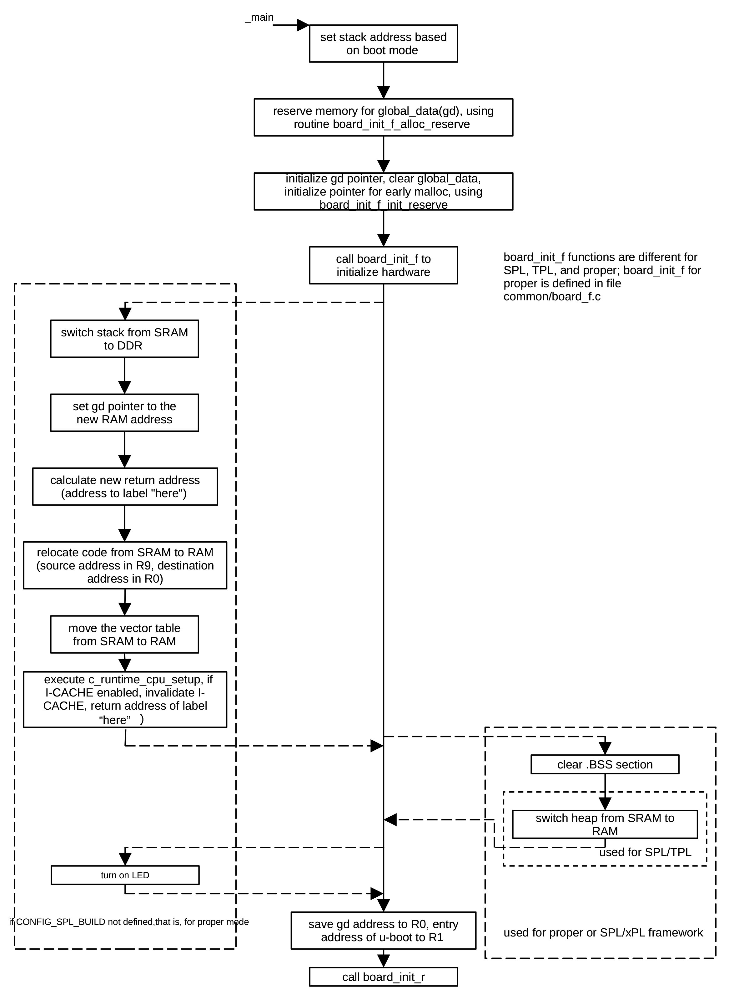
Figure 5-5 crt0.S Execution Flowchart
The pre-relocation routine board_init_f() resides within the file git/common/board_f.c and acts as the universal hardware setup engine for standard U-BOOT Proper boot pathways. It invokes initcall_run_list() to execute a sequential array of initialization calls mapped out within the init_sequence_f array, which is declared inside board_f.c. Regulated by preprocessor build flags, init_sequence_f aggregates a wide array of architecture-specific and feature-dependent hardware setup loops. System architects choose the appropriate initialization sequence to match target hardware envelopes by toggling these configuration switches.
This execution array is divided into four distinct systemic phases: execution environment construction, core hardware initialization, memory allocation layout planning, and final pre-relocation preparation.
The Execution Environment Construction Phase relies primarily on the following functions:
-
setup_mon_len: Calculates the absolute linear footprint and size of the compiled U-BOOT binary image to prepare subsequent memory allocation and relocation tracking blocks.
-
fdtdec_setup: Sets up and validates the internal Device Tree Blob (DTB), exposing the baseline peripheral properties and target register base addresses (such as console UART base parameters) to the bootloader.
-
initf_malloc: Inits a lightweight, early memory allocation pool (Early Malloc). Because formal memory management and dynamic heap allocators are not yet active, this early heap block is required to manage temporary object instances.
-
initf_dm: Initialized the unified Driver Model (DM) architecture, bringing up U-BOOT's core device driver framework to enable the system to find and bind driver abstractions by name.
The Core Hardware Initialization Phase relies primarily on the following functions:
-
arch_cpu_init / mach_cpu_init: Coordinates low-level System-on-Chip (SoC) register configurations, tuning internal bus clocks and silencing asynchronous hardware blocks that could interfere with early boot routines.
-
timer_init: Initialized the low-level system hardware timer, ensuring microsecond delays (udelay()) and communication timeout checks compute deterministically.
-
env_init: Evaluates persistent storage links to resolve the exact physical location of the environment variables block (identifying whether parameters reside on an SD card, flash memory blocks, or fall back to default read-only memory arrays).
-
serial_init / console_init_f: A highly critical step that initializes the primary serial port driver, enabling text streams to output cleanly onto the host console terminal.
-
dram_init: A milestone function that handles volatile memory discovery. Within an SPL/TPL build, this routine handles the heavy lifting of tuning timing registers and bringing up the external memory controller to make DDR RAM usable. Within a Proper build, it typically reads pre-existing registers or parameters from the DTB to verify bank allocations.
The Memory Allocation Layout Planning Phase relies primarily on the following functions:
-
reserve_mmu: Reserves memory blocks to house the core MMU page tables, preparing the platform to enable cache engines to accelerate execution speeds.
-
reserve_uboot: Allocates the exact destination memory boundaries needed to accommodate the relocated U-BOOT binary image.
-
reserve_global_data: Carves out physical memory to hold the post-relocation global_data (gd) tracking structure.
-
reserve_stacks: Standardizes the absolute layout coordinates and memory margins required to anchor the main C execution stack.
The Final Pre-Relocation Preparation Phase relies primarily on the following functions:
-
setup_reloc: Sets the absolute target destination coordinates in physical RAM where the U-BOOT binary image will be copied.
-
clear_bss: Clears the uninitialized data section (BSS segment) by filling it with zeroes. At this stage, the system has successfully established a complete C runtime environment (the execution stacks are ready, the heap is operational, and the BSS block is cleanly initialized).
-
jump_to_copy (along with subsequent assembly routines): Within a U-BOOT Proper pipeline, this routine coordinates copying the active binary from flash storage into external DDR memory, then branches execution over to the relocated address space. Within an SPL or TPL pipeline, although the system traverses this identical initialization array, the board_init_r() phase typically bypasses relocation to locate and load the subsequent stage binary image.
For the NXP i.MX6 family of applications processors, when compiled under an SPL configuration to minimize the memory footprint, the universal board_init_f() sequence is replaced with a highly optimized, simplified execution block maintained within the board file git/board/freescale/mx6sabresd/mx6sabresd.c. Under this setup, the streamlined initialization sequence is defined as:
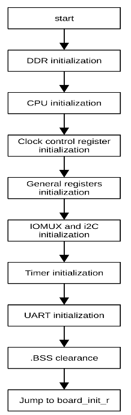
Figure 5-6 board_init_f Function Flowchart
Depending on the chosen boot mode, crt0.S provides distinct initialization pathways. The Proper boot method requires shifting the execution location of the U-BOOT code within DDR memory; the invoked subroutines relocate_code and relocate_vectors are defined in the file relocate.S. Conversely, the SPL boot method requires relocating the active stack frame; the tracking stack relocation routine for SPL is located within the file git/common/spl.c.
The explicit function of relocate_code is to copy the contiguous code segment bounded between the symbols __image_copy_start and __image_copy_end into the physical RAM destination address pointed to by register r0. This copied section corresponds directly to the built-in.o object artifacts generated across the U-BOOT source tree, which represent the exact code blocks currently active in memory. The relocate_vectors subroutine is subsequently invoked to shift the system exception vectors to their designated runtime base.
The physical layout mapping U-BOOT memory allocation is structured as shown in the diagram below:
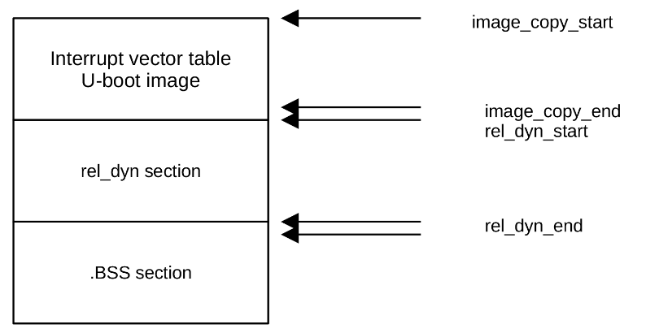
Figure 5-7 U-BOOT Memory Allocation
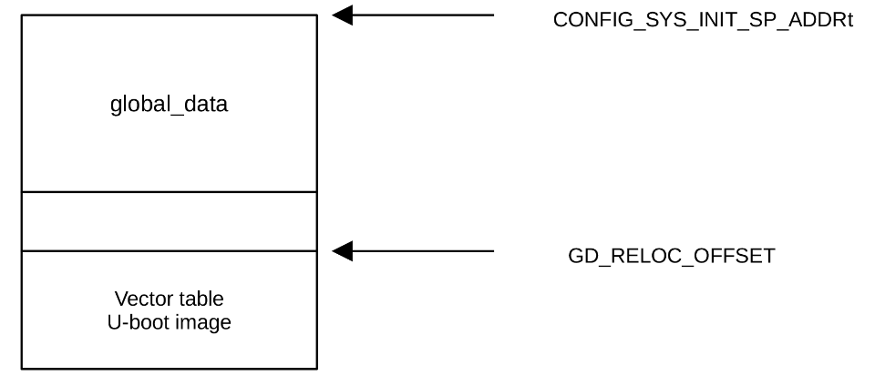
Figure 5-8 U-BOOT Memory Allocation After Code Relocation
Based on the low-level configuration of the CPU core, relocate_vectors remaps the exception vectors either to base address 0x00000000 or to high address 0xFFFF0000. The ARMv7 architecture natively allows exception vectors to reside at either the low base (0x00000000) or the high base (0xFFFF0000); this boundary choice is governed explicitly by the V bit within register c1 of the CP15 coprocessor space. The updated structural layout of the exception vectors within memory is shown below:
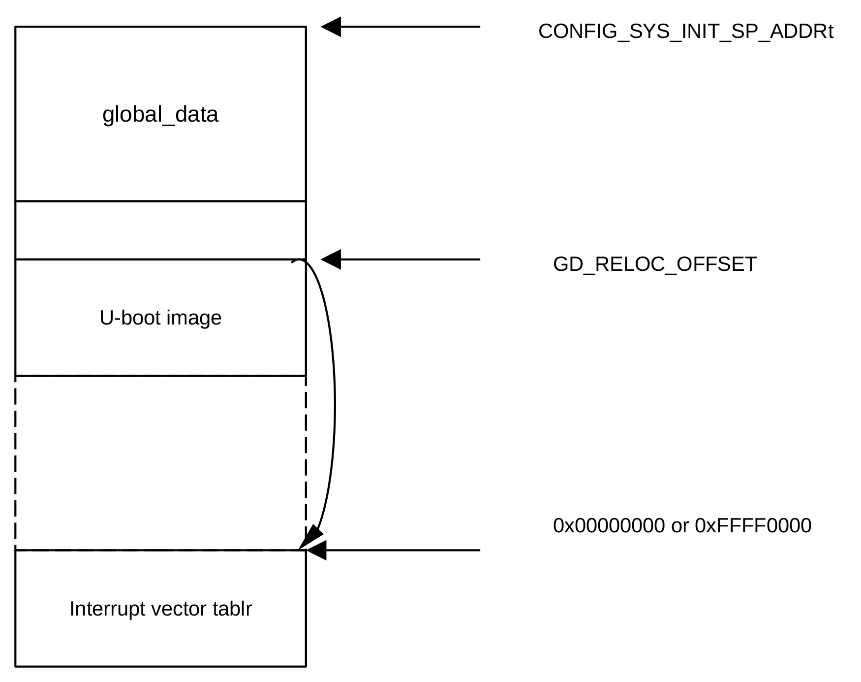
Figure 5-9 ARM Exception Vector Mapping Locations
If the system executes under a U-BOOT Proper boot pipeline, the routine subsequently invokes c_runtime_cpu_setup to invalidate the internal instruction cache (if the instruction cache has been explicitly enabled).
The code path directly following the execution of c_runtime_cpu_setup handles both the standard U-BOOT Proper sequence and any complex SPL pipelines that explicitly toggle the CONFIG_SPL_FRAMEWORK compilation flag. When an SPL implementation grows in complexity to support advanced subsystems, enabling the CONFIG_SPL_FRAMEWORK abstraction layer becomes structurally mandatory. The core objective of this final assembly block is to execute runtime environment cleanup, optionally re-anchor the active Stack Pointer and the global_data (gd) base tracking pointer, and execute the definitive jump into the post-relocation C entry function, board_init_r.
Post-Relocation Initialization (board_init_r)
type: basic-note
5.4 Post-Relocation Initialization (board_init_r)
5.4 Post-Relocation Initialization (board_init_r)
Following the code relocation phase, the system transitions into the definitive execution stage managed by board_init_r(). For the standard U-BOOT Proper boot pipeline, this function resides within git/common/board_r.c. Mirroring the pre-relocation phase, it invokes initcall_run_list() to parse and execute a comprehensive sequence of hardware initialization and software subsystem configuration loops defined within the init_sequence_r array.
The complete sequential execution matrix tracking the low-level functions within the post-relocation runtime phase is mapped out in detail in the following technical flowchart:
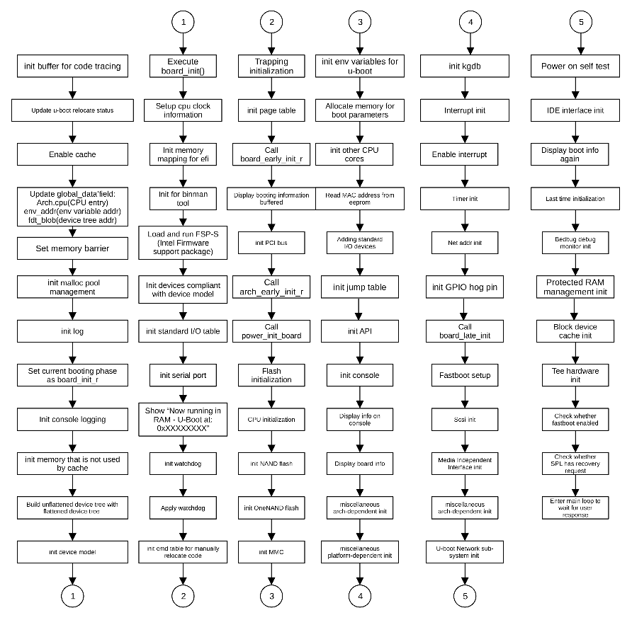
Figure 5-10 board_init_r Post-Relocation Execution Flowchart
The system does not invoke all of the modules listed above during the booting sequence. Depending on the selected boot mode and the hardware configurations supported by the platform, developers configure specific compilation switches at build time to selectively couple and isolate the target modules required to initialize the system.
Running of U-BOOT
5.5 Running of U-BOOT
5.5.1 U-BOOT Top-Level Loop
The final pointer within the init_sequence_r array must target the run_main_loop function, shifting the system state into an infinite execution loop that waits for user command inputs. The run_main_loop() function is defined inside board_init_r.c and is structured as the following infinite for loop that sequentially invokes main_loop():
static int run_main_loop(void)
{
#ifdef CONFIG_SANDBOX
sandbox_main_loop_init();
#endif
for (;;)
main_loop();
return 0;
}
The main_loop() function is defined within git/common/main.c, and its implementation code is structured as follows:
void main_loop(void)
{
const char *s;
bootstage_mark_name(BOOTSTAGE_ID_MAIN_LOOP, "main_loop");
if (IS_ENABLED(CONFIG_VERSION_VARIABLE))
env_set("ver", version_string); /* set version variable */
cli_init();
if (IS_ENABLED(CONFIG_USE_PREBOOT))
run_preboot_environment_command();
if (IS_ENABLED(CONFIG_UPDATE_TFTP))
update_tftp(0UL, NULL, NULL);
s = bootdelay_process();
if (cli_process_fdt(&s))
cli_secure_boot_cmd(s);
autoboot_command(s);
cli_loop();
panic("No CLI available");
}
Its primary function is to initialize the command-line interface (CLI) routines, fetch the countdown delay duration via bootdelay_process(), and evaluate the target bootcmd environment variable. The bootcmd variable stores an execution macro or script composed of sequential U-BOOT commands that control how U-BOOT boots the Linux kernel. (The countdown delay can be tuned dynamically via the autodelay environment variable, or specified directly within the Device Tree using the bootdelay integer property, among other configurations). The operational flow of the main_loop() function alongside a streamlined representative slice of the underlying bootcmd script macro is presented below:
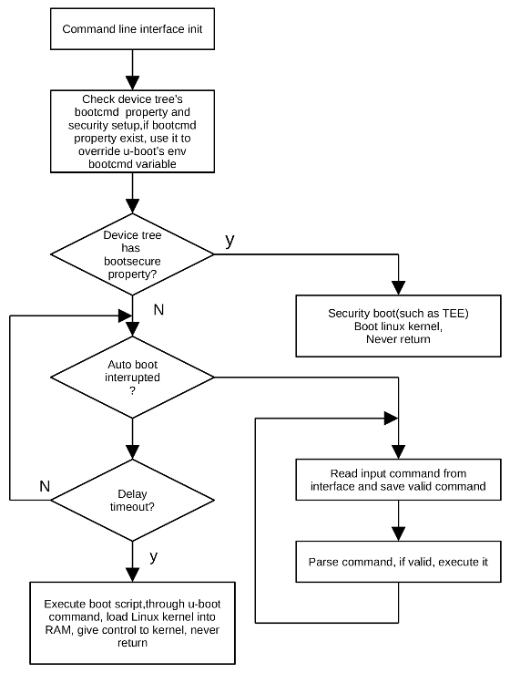
Figure 5-11 main_loop() Function Flowchart
bootcmd=run findfdt;
run findtee;
mmc dev ${mmcdev};
if mmc rescan;
then if run loadbootscript;
then run bootscript;
else if run loadimage;
then run mmcboot;
else run netboot;
fi;
fi;
else run netboot;
fi
loadfdt=fatload mmc ${mmcdev}:${mmcpart} ${fdt_addr} ${fdt_file}
loadimage=fatload mmc ${mmcdev}:${mmcpart} ${loadaddr} ${image}
loadtee=fatload mmc ${mmcdev}:${mmcpart} ${tee_addr} ${tee_file}
mmcboot=echo Booting from mmc ...;
run mmcargs;
if test ${tee} = yes;
then run loadfdt;
run loadtee;
bootm ${tee_addr} - ${fdt_addr};
else if test ${boot_fdt} = yes || test ${boot_fdt} = try;
then if run loadfdt;
then bootz ${loadaddr} - ${fdt_addr};
else if test ${boot_fdt} = try;
then bootz;
else echo WARN: Cannot load the DT;
fi;
fi;
else bootz;
fi;
fi;
U-BOOT initially executes the statement run findfdt to process the findfdt macro script. The findfdt macro performs an array of sequential test criteria matching the live motherboard configuration to dynamically resolve and populate the baseline value for the fdt_file environment variable. For brevity, the granular algorithmic details of the findfdt script are omitted here. The fdt_file variable registers the corresponding compiled Device Tree Blob filename matching the physical board; for the imx6qp_sabreauto development board, this evaluates explicitly to fdt_file = imx6qp-sabreauto.dtb. Concurrently, bootcmd runs run findtee to invoke the findtee macro script, which checks for the platform-specific Trusted Execution Environment (TEE) binary payload filename, assigning it to tee_file. Because the imx6qp_sabreauto board implements the uTee-6qpauto hardware security manager firmware, this resolves to tee_file = uTee-6qpauto.
The explicit instruction mmc dev ${mmcdev} configures the active MMC host slot indexed by ${mmcdev} as the primary system boot media target.
When the platform executes a Linux kernel launch sequence originating from an SD card, U-BOOT shifts execution into the run mmcboot macro path. The underlying mmcboot macro runs the child loadimage script, invoking the standard U-BOOT fatload utility block to copy the kernel binary target defined by ${image} from the designated boot partition coordinates (specified explicitly via mmc ${mmcdev}:${mmcpart}) into the physical RAM destination address configured by ${loadaddr}. Following an identical operational framework, the overarching bootcmd macro pulls the target .dtb file and the secure .tee firmware payload into their designated physical memory targets. In this operational context, ${image} maps to a compressed zImage kernel envelope. The absolute boundary coordinates for ${fdt_addr}, ${loadaddr}, and ${tee_addr} are hardcoded or adjusted inside the board architecture configuration header files. Finally, the boot execution sequences handled by the trailing macros—specifically bootm ${tee_addr} - ${fdt_addr} or bootz ${loadaddr} - ${fdt_addr}—execute the definitive jump into the Linux kernel initialization path.
The bootcmd macro string is maintained directly within U-BOOT’s persistent non-volatile environment space; its default fallback string value is established at compile time within the generic platform configuration templates located at git/include/configs/<board_common>.h. End-users can interrupt the automatic autoboot countdown sequence to drop into the interactive U-BOOT command-line shell, modify the configuration properties of bootcmd manually, and commit the updated script permanently to flash blocks via the saveenv routine.
If the active Device Tree configuration implements a custom bootcmd node property block, the parsing routines inside main_loop() interrogate the tree to verify whether an explicit bootsecure enforcement flag has been enabled. If the bootsecure flag is active, the system branches immediately into an unreturned secure encrypted boot execution routine (cli_secure_boot_cmd). If the verification pass confirms standard booting operations, execution control passes to the autoboot_command() block. The autoboot_command() function evaluates the live tracking timer parameters alongside the console UART inputs to check if a user keystroke has been registered. If the timeout delay expires without catching an active keyboard interrupt vector, it calls run_command_list() to interpret and run the compiled bootcmd command sequence fetched by the bootdelay_process() routine. Conversely, if a valid keystroke is caught during the active countdown delay window, the state machine diverts into the cli_loop() function block, initializing the persistent shell loop to parse, interpret, and execute incoming text commands manually supplied by the developer.
5.5.2 U-BOOT Command Interpretation
The run_command_list function parses U-BOOT scripts. U-BOOT can evaluate scripts or commands using either the legacy simple parser or the HUSH parser (detailed in subsequent sections). When configured for the simple interpretation path, it invokes cli_simple_run_command_list to process the script. The C implementation code for run_command_list under this simple interpretation profile is structured as follows:
int run_command_list(const char *cmd, int len, int flag)
{
int need_buff = 1;
char *buff = (char *)cmd; /* cast away const */
int rcode = 0;
if (len == -1) {
len = strlen(cmd);
need_buff = strchr(cmd, '\n') != NULL;
}
if (need_buff) {
buff = malloc(len + 1);
if (!buff)
return 1;
memcpy(buff, cmd, len);
buff[len] = '\0';
}
rcode = cli_simple_run_command_list(buff, flag);
if (need_buff)
free(buff);
return rcode;
}
This code first calculates the length of the cmd string (passed dynamically to cmd via the bootcmd variable within the main_loop). If the cmd string encapsulates newline characters ('\n'), the routine allocates a dynamic buffer, replaces occurrences of '\n' with null terminators ('\0'), copies the command block into this isolated buffer memory, and finally invokes cli_simple_run_command_list to execute the script referenced by buff.
5.5.3 U-BOOT Command Execution
The functional role of cli_simple_run_command_list() is to split the script pointed to by cmd into distinct sub-units delimited by newline boundaries ('\n'), and then sequentially call cli_simple_run_command() to execute each unit's command string. cli_simple_run_command() parses the text stream provided by cli_simple_run_command_list and sections it into multiple tokens separated by semicolons (;).
If any tokens contain macros wrapped inside ${} or $(), the routine calls cli_simple_process_macro() to dynamically substitute the macros with their current expanded environment values. It then leverages cli_simple_parse_line() to tokenize the expanded string into an array of individual, whitespace-delimited argument variables.
These resolved variables are stored sequentially inside the argv array, where argv[0] holds the primary command binary string, and subsequent entries like argv[1] map to the trailing arguments passed to the utility; the total argument count is registered inside the integer variable argc. Finally, cli_simple_run_command() calls cmd_process() to execute the explicit command specified by argv[0].
The cmd_process() function first leverages find_cmd(argv[0]) to query the internal link-time command table for a matching tracking entry corresponding to argv[0]. If a valid entry is resolved, it passes the command's structural argument count and argument vector array over to the cmd_call() infrastructure to execute the operation. Within the source file git/cmd/bootm.c, a core macro declaration is defined as follows:
U_BOOT_CMD(bootm, CONFIG_SYS_MAXARGS, 1, do_bootm,
"boot application image from memory", bootm_help_text);
This macro architecture is defined within the core header file git/include/command.h. In this declaration, bootm specifies the text command string, CONFIG_SYS_MAXARGS defines the maximum argument threshold permitted by the utility, 1 indicates that hitting the carriage return key will repeat the execution of the previous command string, and do_bootm acts as the definitive C callback handler function pointer. When an operator issues the bootm string, U-BOOT handles the invocation by executing the underlying C function do_bootm. The string "boot application image from memory" provides a short summary description, while bootm_help_text stores the exhaustive help documentation.
Expanding this structural macro shows that the statement expands to the following link-time initialization code:
ll_entry_declare(cmd_table_t, bootm, do_bootm) = {
"bootm", CONFIG_SYS_MAXARGS, cmd_always_repeatable, do_bootm, "boot application image from memory", bootm_help_text, NULL
};
The compilation layout defines a unique static tracking structure of type struct cmd_tbl named _u_boot_list_2_cmd_2_bootm, which is placed within the custom linker section .u_boot_list_2_cmd_2_bootm. The final generated variable assignment maps to the following definition:
struct cmd_tbl _u_boot_list_2_cmd_2_bootm = {
.name = "bootm", // Command string token
.maxargs = CONFIG_SYS_MAXARGS, // Maximum parameter count threshold
.repeatable = 1, // Repeatable execution flag on Enter keypress
.cmd = do_bootm, // Function pointer: target logic execution loop
.usage = "boot application image from memory", // Short description string (shown by generic 'help')
.help = bootm_help_text, // Long description string (shown by 'help bootm')
.complete = NULL // Auto-completion hook callback (Null assigned here)
};
This mechanism links the command registry key "bootm" directly to the do_bootm C routine. The structural execution architecture tracking the run_command_list function is mapped out in the technical flowchart below:
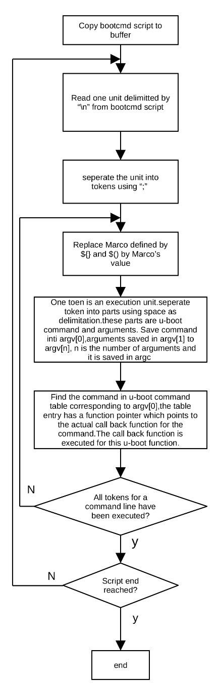
Figure 5-12 run_command_list() Function Flowchart
When launching a Linux kernel from an attached SD card, the cmd_call() infrastructure invokes cmd_always_repeatable(), which subsequently triggers the execution entry point of do_bootm(). Consequently, cmd_call() routes execution straight into do_bootm() to drive the final Linux booting sequence forward.
If the platform is compiled to leverage an early pre-boot environment pathway, the main_loop processes the pre-boot commands before parsing other variables. Furthermore, if network-based recovery configurations are enabled, the main_loop invokes upstream network protocols using the TFTP framework to pull down and flash updated U-BOOT and Linux kernel images before continuing routine execution loops.
5.5.4 Command Processing and Execution
At its termination phase, the main_loop function transitions into the interactive command-line interface framework loop (cli_loop), where it pauses to capture manual command strings supplied by the operator or awaits the expiration of the autoboot countdown delay vector to initiate the automated booting pathway.
The cli_loop() function is defined within the source file git/common/cli.c, and its technical implementation is structured as follows:
void cli_loop(void)
{
bootstage_mark(BOOTSTAGE_ID_ENTER_CLI_LOOP);
#ifdef CONFIG_HUSH_PARSER
parse_file_outer();
/* This point is never reached */
for (;;);
#elif defined(CONFIG_CMDLINE)
cli_simple_loop();
#else
printf("## U-BOOT command line is disabled. Please enable CONFIG_CMDLINE\n");
#endif /*CONFIG_HUSH_PARSER*/
}
The system is architected to parse operator commands utilizing either the Bourne-shell-compatible HUSH parser or the legacy simple interface engine; the targeted translation model is explicitly dictated at build time via preprocessor configuration flags. The structural parsing of an incoming command line string is a sequential process of stream scanning and string tokenization. Because the underlying logic is linear, it is omitted here; interested developers can audit the parsing routines maintained inside git/common/cli_hush.c or git/common/cli_simple.c. To establish a baseline reference model, the utility execution pipeline is illustrated here by analyzing the workflow of the cli_simple_loop() sub-routine.
The cli_simple_loop() function is implemented as an infinite for(;;) execution loop. Inside this infinite loop block, the engine polls the active console device to sample user inputs and subsequently parses the captured string. If the token validation pass confirms a legal command structure, the system triggers the underlying execution logic mapped to that utility. Concurrently, it commits the verified command string to a localized history buffer, enabling the user to traverse and re-execute historical command vectors using the terminal's up and down arrow keys. Once the routine concludes, it recycles its tracking flags and returns to a block-waiting state to catch subsequent text streams.
U-BOOT exports an exceptionally rich and comprehensive suite of native utilities, predominantly categorized into hardware telemetry information gathering, low-level memory block manipulation, non-volatile flash programming, runtime execution flow control, transport layer network stack management, and environment variable manipulation, alongside generalized hardware interface control and bare-metal debugging routines. Furthermore, the bootloader incorporates structural abstraction layers supporting standard Linux file systems.
Leveraging this combined framework of commands and environment variables, U-BOOT exercises absolute control over the Linux kernel loading topology and boot pathways, allowing developers to configure and test custom hardware setups interactively. When U-BOOT is resting in its command interpreter state, executing the printenv utility dumps a full listing of all active global environment variables to the console terminal, exposing the precise booting vectors under which the current platform is running.
The programmatic definitions declaring these U-BOOT commands are distributed across distinct C resource files clustered within the git/cmd/, git/lib/, and git/common/ directories of the source tree. A single source module can isolate a standalone monolithic command definition or aggregate multiple related sub-commands into a unified register table. Developers seeking deep structural details regarding particular command arrays can audit the corresponding C source targets contained within those paths.
Booting the Linux Kernel
5.6 Booting the Linux Kernel
The actual launch of the Linux kernel is orchestrated by commands such as bootm, bootd, bootefi, bootelf, bootz, bootvx, bootp, nfs, rarpboot, and tftpboot. Among these, bootm is used to boot application images from memory, bootd handles the default boot sequence, bootefi boots EFI-format image applications from memory, bootelf boots ELF-format image applications from memory, bootz boots images formatted as a zImage, and bootvx boots the VxWorks operating system, while the remaining commands are dedicated to booting Linux via network pathways. As seen in the bootcmd script, before the bootm command executes, U-BOOT first loads the Flattened Device Tree (DTB) blob and the secure TEE firmware file into memory. The following sections evaluate the process of U-BOOT booting Linux from an SD card, using the bootm command as a primary reference model.
For U-BOOT to successfully boot the Linux kernel, it must understand the specific storage and packaging format of the kernel on the storage medium. Prior to analyzing the execution path of the do_bootm function, the underlying kernel image file formats supported by Linux are detailed below.
5.6.1 Linux Image File Formats
When discussing Linux kernel formats, terms such as vmlinux, vmlinuz, zImage, bzImage, uImage, and FIT are frequently encountered. The vmlinux format is a statically linked executable ELF file of the kernel; it is a raw binary payload that can be loaded into memory and run directly, predominantly utilized for kernel troubleshooting and debugging. The vmlinuz format is a compressed version of vmlinux, which becomes runnable immediately upon decompression. U-BOOT does not directly consume raw vmlinux or standard desktop vmlinuz files.
The zImage and uImage formats represent the legacy image infrastructure, which remains heavily deployed in embedded U-BOOT pipelines. A zImage is a self-decompressing kernel container enclosing a specific magic number header, a lightweight decompression wrapper routine, and the compressed raw vmlinux payload. The binary structural layout of a standard zImage file is organized as follows:
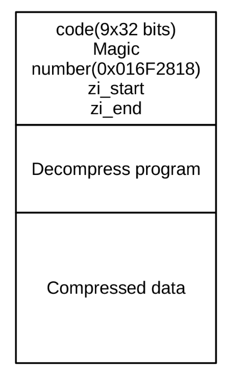
Figure 5-13 zImage File Format
Within this topology, the executable code block (code) occupies the first 36 bytes of memory, followed immediately by a 4-byte Magic Number used by boot loaders to validate the payload as a definitive zImage. For the ARM Linux architecture, this magic signature is fixed to 0x016F2818. The zi_start marker denotes the absolute beginning address of the nested zImage executable logic, and zi_end points to its absolute termination boundary.
1. Single-Image uImage File Format
A uImage file is generated by wrapping a standard zImage container with a specialized U-BOOT header using the companion mkimage host utility. The uImage acts as an entry-ready kernel file that U-BOOT can parse and execute directly from memory. Its structural binary layout is structured as follows:
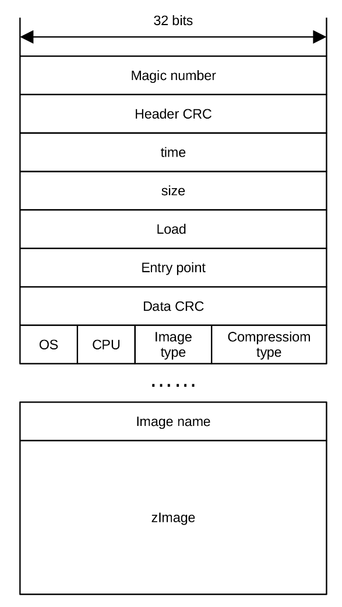
Figure 5-14 uImage File Format
The 64-byte structural file header encapsulates the magic number, file header CRC checksum, file creation timestamp, image payload size, destination memory load address, application execution entry point, data (the inner zImage) CRC checksum, target operating system identifier, target CPU architecture token, image wrapper type, compression method flag, and the image name string.
-
Magic Number: A constant signature fixed to 0x27051956, which software routines evaluate to distinguish a legacy uImage file container from modern flattened image trees (FIT).
-
Header CRC Checksum: A Cyclic Redundancy Check validation word protecting the integrity of the 64-byte header block.
-
Creation Time: A standard Unix epoch timestamp registering the exact moment the image file was packed.
-
Image Size: Encodes the exact linear volume of the embedded zImage payload in bytes.
-
Load Address: Defines the baseline physical target address in RAM where the kernel payload must be uncompressed and relocated.
-
Entry Point: Explicitly marks the absolute address of the first machine instruction executed to initiate the kernel boot.
-
Data CRC Checksum: A Cyclic Redundancy Check validation word protecting the integrity of the inner zImage binary payload.
-
Operating System ID: An architecture token identifying the target operating system environment, such as Linux, VxWorks, NetBSD, or FreeBSD. Contemporary versions of U-BOOT provide native support for 28 distinct operating systems and firmware targets.
-
CPU Type: An architecture token mapping the compiled payload to its designated silicon target. U-BOOT currently identifies 26 discrete processor configurations including ARM, PowerPC (PPC), and x86 architectures.
-
Image Type: Maps the payload to one of 40 functional software categories, including standalone, kernel, firmware, tee, script, ramdisk, or multi.
-
Compression Type: Registers the algorithm utilized to compress the underlying zImage, with native support covering uncompressed raw blocks, gzip, bzip2, lzma, lzo, and lz4 compression variants.
-
Image Name: A descriptive text string identifying the image, capped at a maximum length of 32 characters including the null terminator.
2. Multi-Image uImage File Format
When the embedded image type field is initialized to configuration value 05 (multi), the legacy uImage container is refactored to wrap multiple independent sub-images within a single contiguous file block. The multi-image payload architecture presented in the diagram below encapsulates a compiled kernel binary, a compressed root RAMDISK container, and the platform Device Tree Blob (DTB) payload:
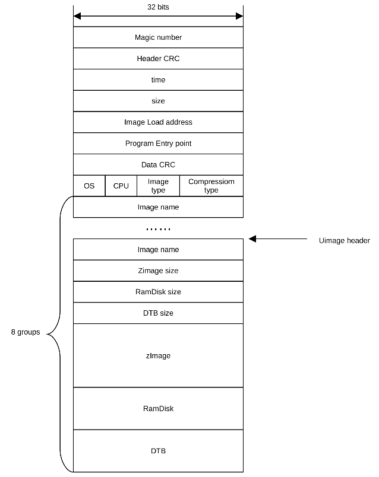
Figure 5-15 Multi-Image Program File Structure
3. Flattened Image Tree (FIT) Image Structure
FIT is an acronym for Flattened Image Tree. Sharing the identical architectural design as the standard Device Tree, a FIT program image file is generated from a hierarchical, tree-structured source document describing the component images. This tree-structured file is authored using the same text-based language syntax as the Device Tree, where configuration blocks within the tree define how each component of the consolidated image file should be utilized. The file describing this image tree structure uses the .its extension suffix and strictly opens with the /dts-v1/; token declaration.
The hierarchical tree topology is composed of structured nodes, anchored at the top by a mandatory root node represented as a forward slash (/). The root node encapsulates individual image descriptors (images) and configuration sets (configurations), alongside the global description and #address-cells properties. The description property supplies a text summary explaining the image container, while #address-cells specifies the exact number of 32-bit cells required to encode node addresses within this context. U-BOOT parses these node addresses to cross-access and extract nested content from the flattened image blob. Both the images container and the configurations container can host multiple distinct child nodes, which are accessed via their defined addresses or unit tags.
The individual child nodes nested inside the images block can encapsulate legacy uImage files, compiled Flattened Device Tree blobs (.dtb), or compressed RAM disk images. Each independent child node block supports the description, data, type, arch, os, compression, load, entry, and hash attributes:
-
description: A descriptive text summary identifying the specific sub-image component.
-
data: Specifies the source binary payload to include, typically injected using the raw binary inclusion operator (/incbin/).
-
type: Registers the functional category of the binary payload (e.g., kernel, flat_dt, ramdisk).
-
arch: Identifies the target instruction set architecture compatible with the payload (e.g., arm, x86, riscv).
-
os: Specifies the guest operating system type to initialize.
-
compression: Registers the compression algorithm used to compress the target binary sequence.
-
load: Defines the absolute target address in physical RAM where the binary payload must be unpacked or copied.
-
entry: Specifies the absolute memory execution vector where control is transferred to start the program.
-
hash: Dictates the integrity verification algorithm applied to validate the sub-image segment.
The configurations container block can host multiple child configuration nodes alongside a top-level default selection attribute to define how the different compiled image pieces are joined together at runtime. For example, in the reference schema provided below, the default selection pointer targets config@1. The configuration matrix under config@1 specifies that the system must boot using the primary kernel defined under the kernel@1 node paired with the Flattened Device Tree blob registered under the fdt@1 node:
/dts-v1/;
/ {
description = "Marcus FIT test";
#address-cells = <1>;
images {
kernel@1 {
description = "My default kernel";
data = /incbin/("./zImage");
type = "kernel";
arch = "arm";
os = "linux";
compression = "none";
load = <0x83800000>;
entry = <0x83800000>;
hash@1 {
algo = "md5";
};
};
kernel@2 {
description = "Rescue image";
data = /incbin/("./zImage");
type = "kernel";
arch = "arm";
os = "linux";
compression = "none";
load = <0x83800000>;
entry = <0x83800000>;
hash@1 {
algo = "crc32";
};
};
fdt@1 {
description = "FDT for my cool board";
data = /incbin/("./devicetree.dtb");
type = "flat_dt";
arch = "arm";
compression = "none";
hash@1 {
algo = "crc32";
};
};
};
configurations {
default = "config@1";
config@1 {
description = "Default configuration";
kernel = "kernel@1";
fdt = "fdt@1";
};
config@2 {
description = "Rescue configuration";
kernel = "kernel@2";
fdt = "fdt@1";
};
};
};
The root node can contain images and configurations child nodes. Within contemporary U-BOOT trees, the properties currently supported under the images child nodes encompass data, data-position, data-offset, data-size, timestamp, description, arch, type, os, compression, entry, and load. The data property is predominantly utilized to establish the location or reference path of the program code or source binary block. Concurrently, a node under the configurations block supports properties such as kernel, ramdisk, fdt, loadable, default, setup, fpga, firmware, and standalone.
Furthermore, the FIT specification supports secure cryptographic verification layers through dedicated signature and key verification nodes, including hash, signature, and key. A key configuration node can host attributes such as hash, algo, value, u-boot-ignore, signature, required, and key-name-hint. A cipher block node accommodates the cipher data pointer and its accompanying algo selection. These cipher and hash nodes are nested as child nodes within individual images components to enforce hardware-level image authenticity checks and implement encrypted high-assurance secure boots.
U-BOOT cannot directly parse or execute a raw text-based .its file. The file must first be flattened into a single operational binary image tree blob suffixed with the .itb extension using the host mkimage compilation utility. The schematic diagram below illustrates the exact input components and compiled output artifact managed during this mkimage build step:
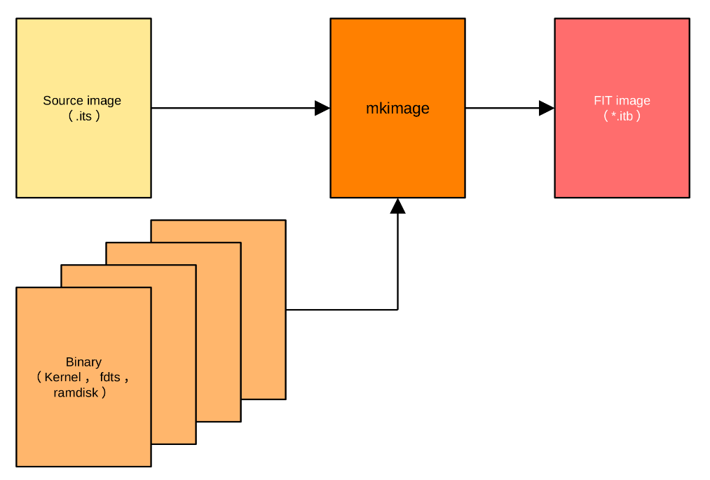
Figure 5-16 Generation Process of the ITB File
The diagram below shows the core structural design and header alignment of the final compiled .itb binary image payload. Mirroring the binary layout rules of standard flattened device trees, the hierarchical image tree topology uses nesting definitions to append child node name strings directly beneath their corresponding parent block structures. Properties declared within these child nodes point to specific string tokens and tracking lengths packed into a centralized strings block database; the parsing engine traverses this string block via numerical offsets to read property values. FIT leverages this layout to encapsulate multi-component execution trees cleanly. For granular formatting guidelines and syntactical specifications, developers can consult the official Devicetree Specification documentation.
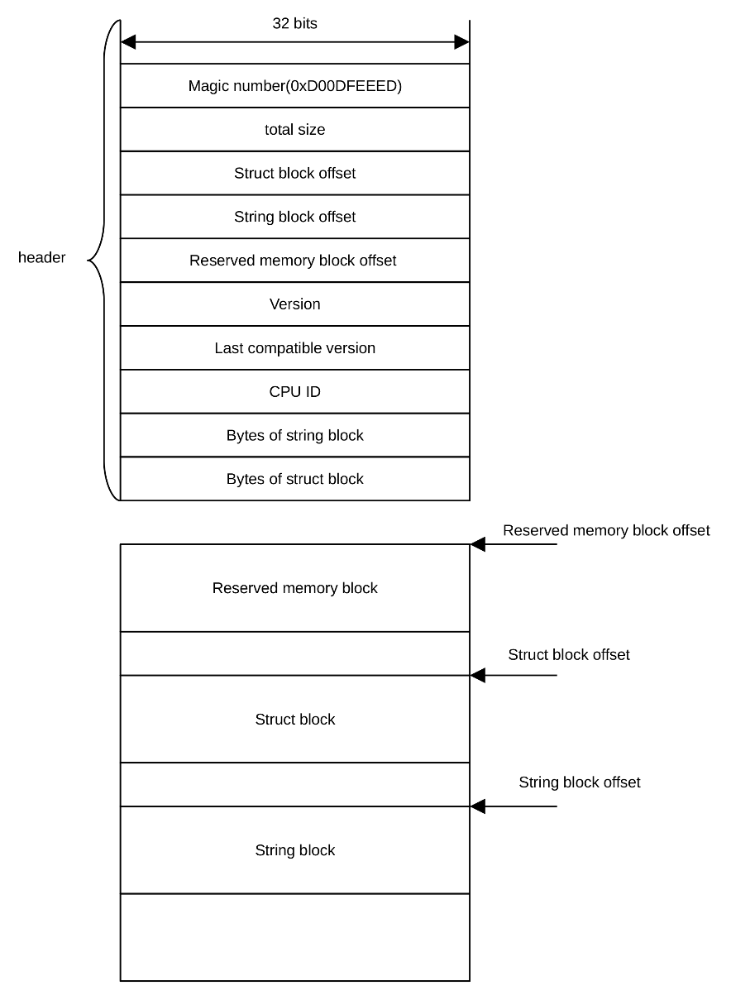
Figure 5-17 FIT File Structure
5.6.2 Booting the Linux Kernel via the bootm Command
Following the analysis of the binary image structures, this section evaluates the technical workflow under which U-BOOT leverages the do_bootm function to boot the Linux kernel.
The do_bootm function initially parses the command line string to verify if specific bootm sub-commands are declared. If sub-commands are detected, U-BOOT processes them sequentially to advance the bootstrap sequence. A sub-command executes only a partial or fractional slice of the complete bootm pipeline rather than a monolithic full boot. The tracking framework registers exactly eight sub-commands: start, loados, ramdisk, fdt, cmdline, bdt, prep, and go. If multiple sub-commands are issued manually by an operator, they must strictly follow this listed order, although executing the entire set is not structurally mandatory.
The universal syntax for the bootm utility is structured as follows:
bootm [addr [arg1 [arg2]]]
Where addr specifies the location in memory hosting the primary kernel image (typically a uImage or FIT blob base address), arg1 defines the physical memory address of the initialization RAM disk (initrd), and arg2 targets the compiled Flattened Device Tree (fdt) blob. If the target operating system configuration bypasses the use of a RAM disk, a hyphen placeholder (-) must be explicitly passed in place of arg1. As parsed within the bootcmd script analyzed in preceding chapters, the typical runtime execution syntax is expressed as:
bootm ${tee_addr} - ${fdt_addr}
Expanding this environment variable string (e.g., executing bootm 0x20000000 - 0x18000000) instructs the bootloader to branch execution into the program image hosted at address 0x20000000 without packing an initrd payload, while mapping the active Device Tree structure from base offset 0x18000000.
If no explicit sub-commands accompany the bootm invocation, the state machine must execute a complete, monolithic boot pipeline from scratch. Upon completing early sub-command checks, if the platform configuration has enabled High Assurance Boot (CONFIG_HAB), the routine triggers validation loops to authenticate the cryptographic signature and integrity of the outer uImage envelope. Concurrently, if the build incorporates support for OP-TEE secure layers, secondary hooks execute to validate the underlying zImage integrity.
Finally, the engine routes execution into do_bootm_states(), which acts as a centralized coordinator to step through the core initialization states sequentially: BOOTM_STATE_START, BOOTM_STATE_FINDOS, BOOTM_STATE_FINDOTHER, BOOTM_STATE_LOADOS, BOOTM_STATE_OS_PREP, BOOTM_STATE_OS_FAKE_GO, and BOOTM_STATE_OS_GO.
If a RAM-disk-based filesystem is deployed, the system branches into BOOTM_STATE_RAMDISK right after the OS loading phase concludes. Furthermore, if the processing architecture targets legacy PowerPC or MIPS silicon, the state machine must step through the OS_CMDLINE sub-state to construct command line strings. For an NXP i.MX6 application processor running mainline Linux, the definitive operational block array requires processing BOOTM_STATE_START, BOOTM_STATE_FINDOS, BOOTM_STATE_FINDOTHER, and BOOTM_STATE_LOADOS. Each discrete sub-state maps directly to a localized helper routine. The final sequence tiers—encompassing BOOTM_STATE_OS_PREP, BOOTM_STATE_OS_FAKE_GO, and BOOTM_STATE_OS_GO—are inherently OS-dependent; their final low-level executions are managed dynamically by invoking the targeted function pointers resolved via boot_fn() and boot_selected_os().
The continuous runtime execution flow tracking the do_bootm() function is mapped out in the schematic flowchart below:
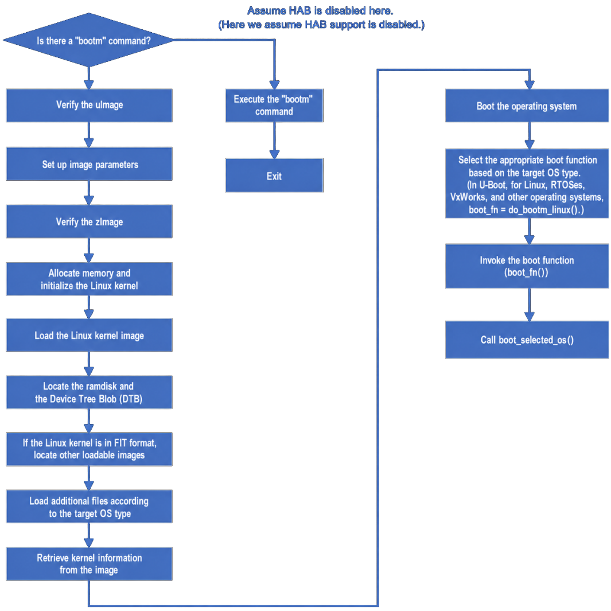
Figure 5-18 do_bootm() Function Flowchart
The technical implementations and internal objectives of each core module within this flowchart are detailed below:
1. uImage Authenticity Verification
For the i.MX6 Solo/DualLite processors, U-BOOT handles cryptographic verification and decryption by interfacing directly with the hardware Cryptographic Acceleration and Assurance Module (CAAM) hosted inside the on-chip High Assurance Boot (HAB) silicon block. This hardware engine parses the binary Command Sequence File (CSF) tables embedded within the image's IVT wrapper to validate the uImage payload block. The physical base coordinates where the target uImage is evaluated align with the memory reference value configured inside the ${tee_addr} environment variable.
2. zImage Parameter Configuration
The bootloader inspects the internal text headers of the raw compressed kernel payload to extract the explicit zImage boundary vectors, registering its absolute starting and terminating memory coordinates. The baseline memory alignment tracking this zImage structure header is determined by the physical address value assigned to the standard U-BOOT ${loadaddr} environment variable.
3. zImage Authenticity Verification
U-BOOT leverages the on-chip HAB validation infrastructure and the CAAM engine to evaluate the CSF signatures tracking the zImage container, executing hardware-enforced image decryption and decryption verification passes. It must be noted that this specific ROM-driven pipeline handles authentication strictly for legacy single-image or multi-image binary wrappers; modern FIT container structures bypass this pathway, utilizing integrated self-contained cryptographic nodes to declare and enforce their own verification algorithms.
4. Sub-state Orchestration via do_bootm_states
The centralized coordinator steps through the following technical operations sequentially:
-
Initialization: Zeroes out all structural members of the internal bootm_headers_t tracking layout. If the platform build parameters have toggled the Logical Memory Block (CONFIG_LMB) macro constraint to fence off the lower bounds of memory accessible to the guest Linux kernel, the routine allocates and provisions the necessary lmb memory reservation tables at this stage.
-
Kernel Image Discovery: Initiates a lookup routine inside the loaded image block to isolate and parse the primary operating system kernel payload. The linear structural pipeline governing this component discovery path is illustrated below:
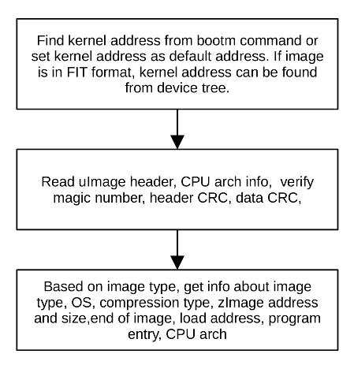
Figure 5-19 bootm_find_os() Function Flowchart
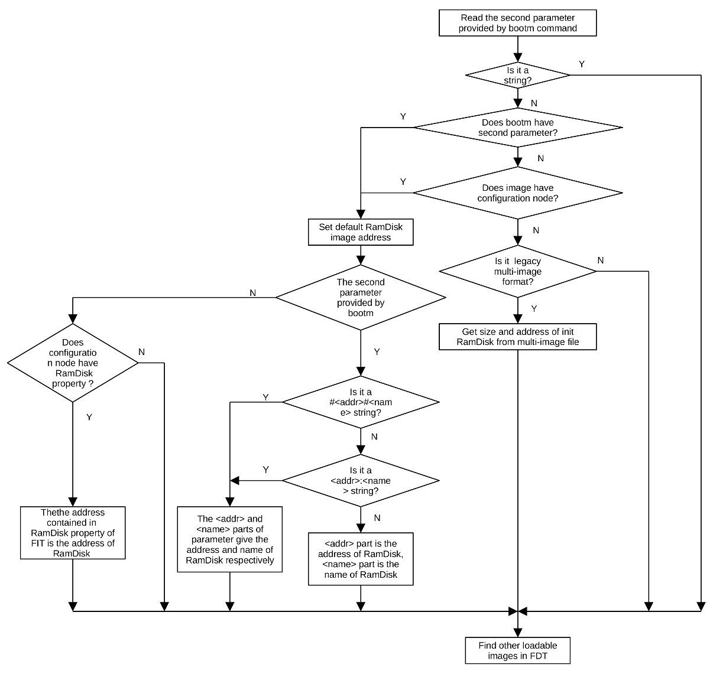
Figure 5-20 bootm_find_other() Function
- Operating System Payload Loading: Unpacks and relocates the compiled kernel binary payload contained inside the uImage wrapper. This data decompression and relocation pipeline follows the workflow detailed below:
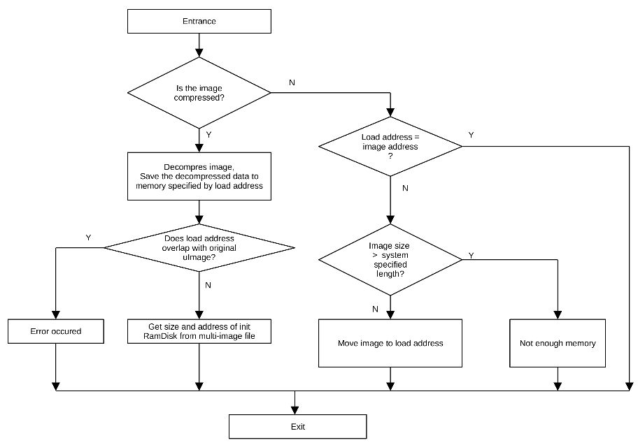
Figure 5-21 bootm_load_os() Function Flowchart
- Boot Handler Binding: Evaluates the explicit target operating system index stored within the os metadata field of the uImage header block. It invokes bootm_os_get_boot_func() to index into the generic boot_os[] function pointer array, dynamically binding the appropriate OS-specific bootstrap function handler. If the parsed os field matches configuration constant IH_OS_U_BOOT, the function pointer maps directly to the do_bootm_standalone() routine. In systems that execute bare-metal applications or dedicated firmware payloads without launching a complex multi-tasking operating system kernel, setting the target image profile to IH_OS_U_BOOT allows U-BOOT to unpack the standalone software directly into memory and hand over execution. The operational sequence tracking this standalone pathway is mapped out below:
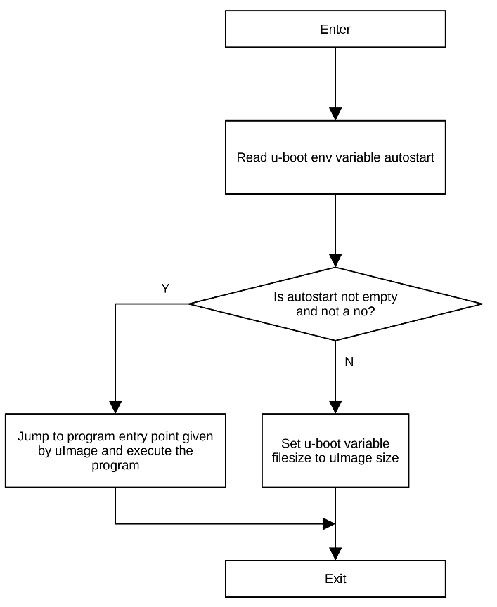
Figure 5-22 do_bootm_standalone() Function Flowchart
The low-level execution pipeline tracking the do_bootm_linux() bootstrap routine is structured as follows:
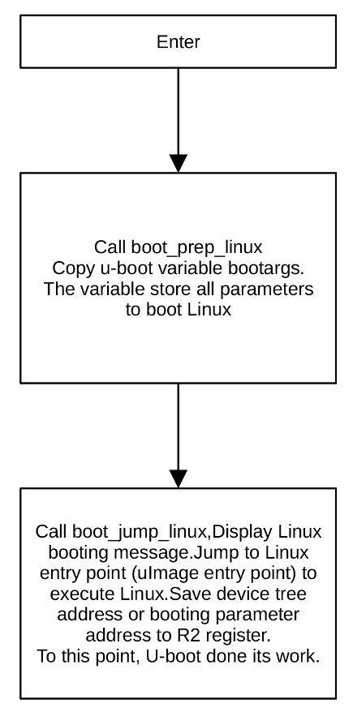
Figure 5-23 do_bootm_linux() Function Flowchart
5.6.3 SPL Booting
The preceding sections evaluated the standard (Proper) execution pathway of U-BOOT. However, when the physical capacity of the CPU's on-chip SRAM is heavily constrained, the system can be configured to execute an SPL-based multi-stage boot sequence instead. In this topology, the hardcoded on-chip boot ROM first copies the lightweight SPL binary from storage into internal SRAM. Once active, the SPL initializes critical low-level infrastructure, brings up the clock trees, and configures the external DRAM controller. After volatile memory becomes fully accessible, the SPL reads the high-capacity U-BOOT Proper binary image from the storage medium into physical RAM, subsequently handing over execution so that U-BOOT Proper can drive the definitive operating system launch. As charted in Figure 5-3, both the SPL boot sequence and the standard U-BOOT Proper sequence ultimately transition into a post-relocation C entry function named board_init_r(). It must be explicitly noted that although both execution models invoke a function sharing the identical literal identifier, their internal programmatic structures and compilation outputs differ completely; the specialized board_init_r() handler processed during the SPL phase is defined explicitly within the source file git/common/spl/spl.c. When the platform build configuration toggles the macro switches to generate an SPL image, the linker cleanly couples this spl.c entry target. The fundamental responsibilities of this handler are to execute localized hardware initializations, parse the storage controllers to resolve the SPL boot list, and execute the final-stage bootloader binary. Its operational runtime pipeline is organized as illustrated in the schematic flowchart below:
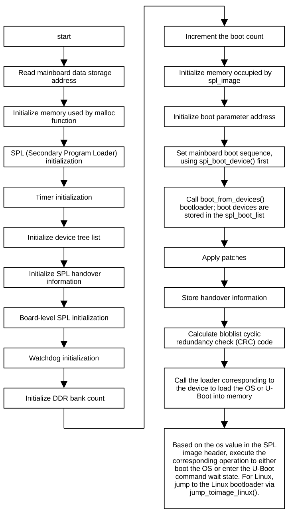
Figure 5-24 SPL-Driven Bootloader Execution Flowchart
The programmatic operations and technical objectives of each core section within this flowchart are analyzed in detail below:
The board_init_r() function initially invokes a clear routine to zero out the spl_boot_list array structure. This tracking array functions as a prioritized linear repository storing the entry vectors and driver addresses of all valid, registered boot storage devices available on the hardware platform. The system then enters the spl_set_bd() helper block, which resolves the physical memory location allocated to store the baseline board parameters (board_info tables), an address boundary typically calculated and hardcoded at compile time by the linker script.
If the active build parameters have enabled the CONFIG_SYS_SPL_MALLOC_START preprocessor switch, the system calls mem_malloc_init() to carve out and provision the explicit memory space boundaries required to drive the dynamic heap allocator (malloc()) engine during the SPL phase. Upon doing so, it sets the GD_FLG_FULL_MALLOC_INIT flag bit inside the gd->flags bitmask array, informing downstream drivers that the early heap framework is fully initialized and operational.
The CONFIG_SYS_SPL_MALLOC_START identifier maps to an architecture-critical macro definition across embedded U-BOOT deployment pipelines, explicitly defining the physical baseline memory coordinates allocated to anchor the local heap context during the SPL phase. Because the physical memory available inside raw on-chip SRAM cells during the earliest stages of hardware bring-up is highly constrained, supporting dynamic memory allocation routines (the execution of standard malloc() loops) within the stripped SPL footprint requires that a precise, isolated region of volatile memory be manually fenced off to function as a temporary heap. This macro establishes the physical baseline boundary for that SPL heap allocation.
If an interrogation of the status bits inside gd->flags reveals that the GD_FLG_SPL_INIT indicator is unassigned, signifying that the foundational initialization routines targeting the SPL layer have not yet been processed, the state machine branches to call the core spl_init() function. This routine executes essential, mandatory low-level framework configurations. The linear software workflow mapping this initialization sequence is structured as follows:
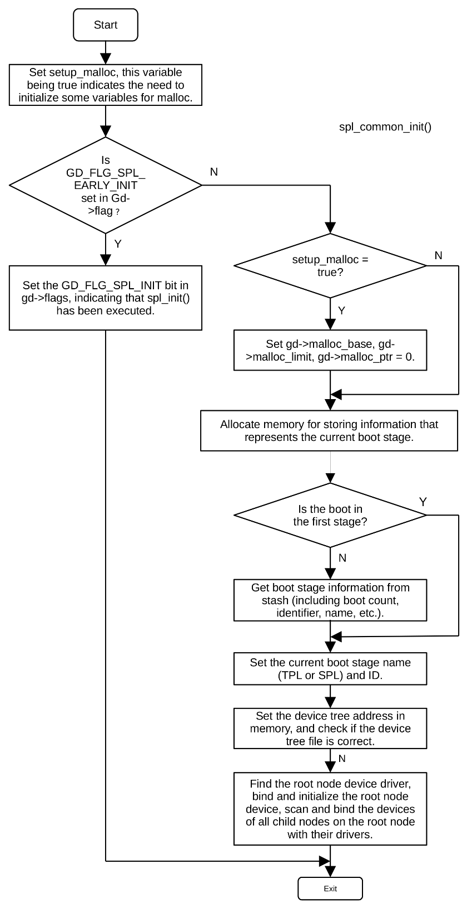
Figure 5-25 spl_init() Function Flowchart
The bloblist_init() function checks for the existence of a binary blob list at the physical address defined by CONFIG_BLOBLIST_ADDR. If no valid list is detected, it initializes a new instance. The bloblist acts as a secure, centralized storage buffer to carry binary metadata structures across boot stages.
The setup_spl_handoff() routine checks this bloblist to verify if pre-staged handoff metadata exists. System engineers can populate custom handoff manifests via the struct spl_handoff structure to pass vital tracking data—such as high-level memory topology parameters, persistent reset status flags, and network controller MAC addresses—directly to the downstream operating system layers.
If the platform configuration enables board-level initialization hooks during the compilation step, developers can implement a custom spl_board_init() routine to execute platform-specific hardware provisioning before loading subsequent stages.
Furthermore, board_init_r() orchestrates the initialization of the hardware watchdog timer, configures the active DRAM bank parameters, and allocates a zero-initialized memory block to anchor the spl_image descriptor structure. The spl_image descriptor functions as the primary repository tracking the metadata required during the SPL boot pipeline. Its structural layout is defined as follows:
struct spl_image_info {
const char *name;
u8 os;
uintptr_t load_addr;
uintptr_t entry_point;
void *fdt_addr;
u32 boot_device;
u32 size;
u32 flags;
void *arg;
ulong dcrc_data;
ulong dcrc_length;
ulong dcrc;
uint64_t rbindex;
};
The majority of these tracking fields are extracted directly from the image header block. The runtime argument field is bound by system parameters to .arg = CONFIG_SYS_SPL_ARG_ADDR, while the default storage device mapping is initialized to .boot_device = BOOT_DEVICE_NONE.
The board_boot_order() routine assigns the function pointer address of spl_boot_device() to the primary slot of the spl_boot_list array. This routing utility is declared with a weak linkage attribute, allowing developers to substitute a board-specific implementation. For the i.MX6 applications processor, the native spl_boot_device() routine reads the hardcoded state of the hardware boot mode registers to resolve and return the active primary storage device type.
Following this sequence, boot_from_devices() processes the prioritized order specified in the spl_boot_list. It scans the custom linker section .u_boot_list_2_spl_image_loader_1 to find a structural spl_image_loader entry that matches the active boot device. This linker-generated tracking structure encapsulates the peripheral type identifier, the descriptive device name string, the storage driver routine pointer (load_image), and the targeted program entry vector. Once a matching descriptor block is resolved, the system invokes spl_load_image(), which redirects execution straight into the storage-specific handler pointer load_image() to pull the U-BOOT Proper binary from physical storage blocks into RAM. If the load routine encounters a media fault or data verification error, it discards the tracking context and drops down to process the next sequential element inside the spl_boot_list, looping until a valid load succeeds or all registered peripherals are exhausted. The specialized section .u_boot_list_2_spl_image_loader_1 is generated statically at link time.
Upon successfully parsing and staging the target image file inside physical RAM, the state machine evaluates the operating system metadata field (os) inside the image header. It triggers a branch command to jump into the resolved entry vector using stage-specific handlers. For example, if the platform incorporates OP-TEE secure architectures (where the metadata flag maps to IH_OS_OPTEE), the system invokes spl_optee_entry() to surrender absolute platform execution to the secure runtime environment. Conversely, when the tracking parameter maps to IH_OS_LINUX, execution branches into the jump_to_image_linux() routine to pass absolute control over to the Linux bootstrap hooks.
To fetch and reconstruct binary files from physical media blocks, spl_load_image() relies directly on low-level media access operations provided by the peripheral subsystem drivers. For i.MX6 architectures booting from an MMC/SD interface controller, these media access routines are defined within the source module git/common/spl/spl_mmc.c, where the primary entry function is declared as spl_mmc_load_image.
The build system leverages the standard macro declaration SPL_LOAD_IMAGE_METHOD("MMC2", 0, BOOT_DEVICE_MMC2, spl_mmc_load_image) to bind the execution address of the spl_mmc_load_image routine straight to the primary load_image function pointer slot. If the platform configuration includes Device Tree capabilities, load_image() pulls the combined binary blob u-boot-dtb.imx from storage into RAM; if Device Tree support is disabled, it pulls the legacy container u-boot.imx. The subsequent sections analyze the operational stages through which the SPL layer unpacks and stages storage payloads, using spl_mmc_load_image() as a reference design model.
The true heavy lifting of fetching data blocks from physical media sectors is managed by the secondary helper routine spl_mmc_load(). The primary entry function spl_mmc_load_image() acts as an interface wrapper that evaluates active preprocessor build switches to pass distinct parameter configurations over to spl_mmc_load().
The spl_mmc_load() function initially checks if the targeted MMC/SD interface controller driver has completed its internal initialization. If the descriptor structure pointer evaluates to null, the routine calls spl_mmc_find_device() to resolve the platform-specific hardware controller index. Depending on whether the compiled U-BOOT binary implements the modern Driver Model (DM) architecture or relies on legacy driver frameworks, the code branches to invoke either mmc_init_device() or mmc_initialize() to fully bring up the storage interface. If the device descriptor is already active, the routine bypasses initialization entirely to execute immediate bus-level communication handshakes with the attached storage card.
It must be explicitly noted that if the core struct mmc descriptor block indicates that the target peripheral supports asynchronous initialization pipelines, mmc_init_device() invokes mmc_start_init() to launch the storage initialization routines as an asynchronous background thread, allowing the bootloader to proceed with non-dependent tasks simultaneously.
Upon completing the low-level hardware bring-up, spl_mmc_load() invokes mmc_init() to pull the raw Card Identification (CID) and Card-Specific Data (CSD) registers from the media, negotiating optimal operational clock frequencies and defining the maximum available data bus width (allocating 1-bit, 4-bit, or 8-bit lines).
Once bus negotiation succeeds, spl_mmc_load() calls spl_boot_mode() to poll the storage configuration parameters and isolate the specific data parsing layout supported by the medium. For an active MMC peripheral, the SPL runtime framework identifies exactly three primary boot modes: MMCSD_MODE_FS, MMCSD_MODE_EMMCBOOT, and MMCSD_MODE_RAW. The spl_boot_mode() utility is exported as a weak symbol, enabling system developers to override its evaluation rules via board-specific logic.
If the returned status forces an eMMC boot partition pathway (MMCSD_MODE_EMMCBOOT), the driver handles the hardware-specific partition switching loops required to target either the boot0 or boot1 hardware partition areas. If the active storage codebase is configured under a minimalist layout constraint (MMC_TINY), the driver maps a basic, direct register switch; otherwise, it invokes standard block device partition-selection routines.
When the state machine selects a raw sector block configuration (MMCSD_MODE_RAW), the parser prioritizes attempting a direct operating system launch. At this junction, if a call to the check routine spl_start_uboot() returns a logical false value, the SPL completely bypasses the secondary bootloader stage to load and launch the Linux kernel directly from raw blocks (known as Falcon Mode). Conversely, if spl_start_uboot() returns a logical true value, indicating that the platform must load the complete U-BOOT Proper binary image, the function evaluates the configuration parameters to read the full U-BOOT payload from either a distinct partition index (USE_PARTITION) or from an absolute, hardcoded sector offset address (USE_SECTOR).
If the platform is compiled to support multi-image redboot or redundant safe flashing infrastructures (CONFIG_DUAL_BOOTLOADER), the driver routes execution through spl_mmc_get_u_boot_raw_sector() to evaluate boundary conditions and isolate the precise starting sector offset hosting the primary U-BOOT image within the MMC layout.
If the parsed tracking parameters force a filesystem access profile (MMCSD_MODE_FS), the driver transfers execution control to the internal routine spl_mmc_do_fs_boot(). This block initiates low-level filesystem mounts to parse and traverse local FAT or EXT4 file allocation paths, searching for and extracting the primary bootloader file by its explicit filename mapping (such as searching for u-boot.img).
The technical flowchart provided below maps out the precise, end-to-end programmatic steps through which the spl_mmc_load_image() routine imports the U-BOOT Proper binary image from physical media into physical memory:
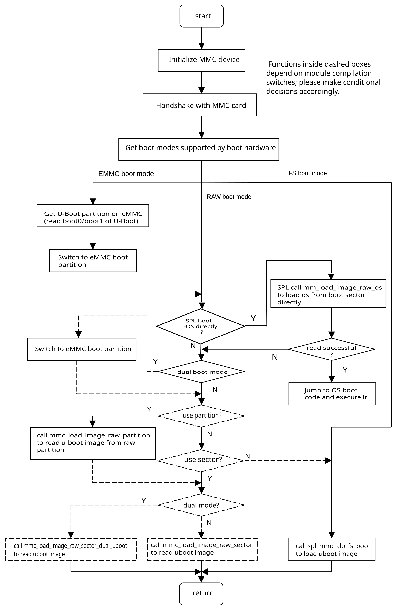
Figure 5-26 spl_mmc_load_image() Handoff Execution Flowchart
When the SPL is deployed to directly boot the guest operating system, it invokes the mmc_load_image_raw_os() function to copy the raw Linux kernel image blocks from the media sectors into physical memory. The execution pipeline tracking this raw operating system load routine is structured as follows:
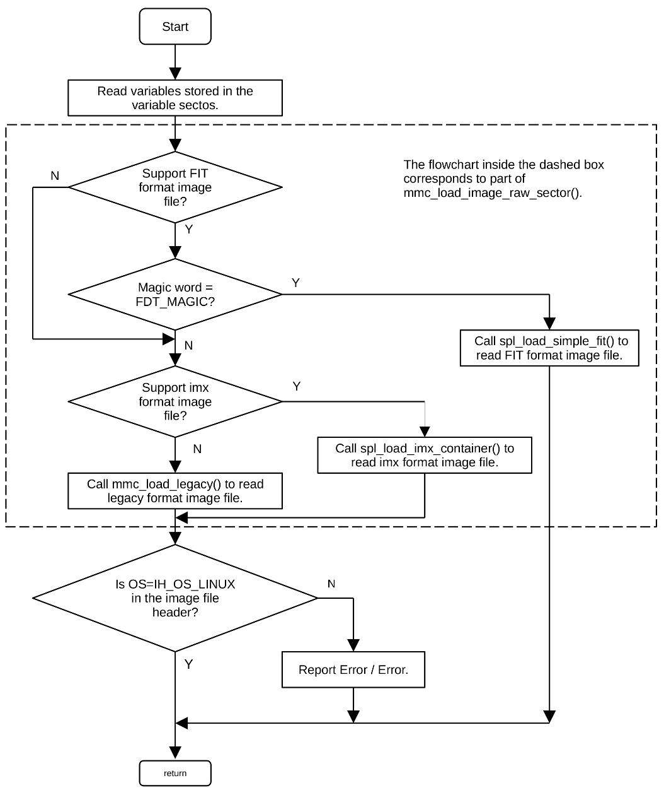
Figure 5-27 mmc_load_image_raw_os() Function Flowchart
The following analysis profiles the operational workflow through which the SPL layer parses, loads, and extracts operating system components from modern multi-image structures, using the spl_load_simple_fit() routine as an architectural reference design model.
The spl_load_simple_fit() function accepts exactly four parameter arguments: a pointer to the target struct spl_image_info structure registering the runtime configuration metrics of the image, a pointer to a struct spl_load_info tracking layout defining the foundational parameters of the storage peripheral, a sector offset pointer designating the target block sequence to sample on the device, and a memory reference pointer targeting the source image file header. This routine parses the binary header blocks referenced by the file header pointer and populates the data fields inside the spl_image_info structure. As detailed in the preceding sections, this structure archives the vital metadata flags extracted from the image header to coordinate downstream image relocation and execution phases cleanly. The companion spl_load_info layout encapsulates low-level storage architecture parameters, declared as follows:
struct spl_load_info {
void *dev;
void *priv;
int bl_len;
const char *filename;
ulong (*read)(struct spl_load_info *load, ulong sector, ulong count, void *buf);
};
Within this tracking layout, the .dev field points to the active boot storage peripheral device instance, .priv points to the private tracking structures managed by that specific peripheral, and .bl_len registers the device's native data access block boundary size (block length in bytes). The .read field maps to a localized block-read function pointer provided directly by the underlying storage peripheral's device driver module.
The spl_load_simple_fit() routine initially determines the absolute size of the target .itb container file, calculates the memory constraints required to accommodate the payload, and calls the driver-specific function pointer .read to read the entire FIT image block stream from storage into an isolated scratch buffer memory. Once the image metadata blocks are staged inside this memory cache, the internal parser executes a structural traversal across the image tree to isolate the core /images container node.
Upon successfully resolving the /images tree node, if the platform compilation profile includes dual-boot rollback protection capabilities, the parsing engine queries the /configurations container block to look up the secure rollback index (rbindex) attribute. If a valid rbindex marker is found, its relative structural byte offset address within the image file is calculated and written directly into the .rbindex domain tracking field inside the spl_image_info structure.
Concurrently, if the platform configuration includes integrated FPGA subsystem support, spl_load_simple_fit() evaluates the /images tree branches to isolate any embedded /fpga child nodes; if an active bitstream segment is found, the routine calls downstream programming paths to write that binary image directly into the physical FPGA configuration registers.
If FPGA support is disabled or the active .itb container file lacks an integrated /fpga node, the parser scans the active target /configurations node to extract the default software stack parameters. It initially attempts to resolve a /firmware assignment property; if that field is missing, it drops down to parse the primary /kernel assignment entry, and if that lookup also fails, it searches for a secondary generic /loadable allocation property. If the tree parser completes this cascade without resolving any valid bootable components, the function returns a failure error code. Conversely, if a target configuration node is resolved, the system routes execution control to the internal routine spl_load_fit_image(). This helper function validates and relocates the matching image files into their physical destination memory targets (or maps their relative coordinates if the binary blocks are already present in RAM) and executes the targeted data decompression algorithms. The sequential software execution pipeline tracking this workflow is structured as follows:
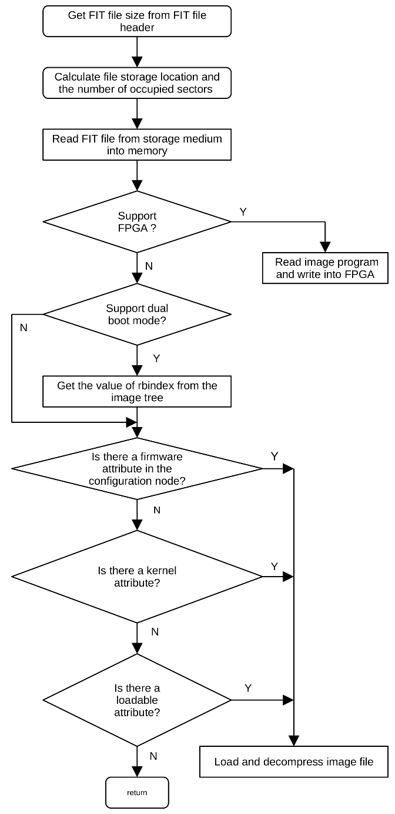
Figure 5-28 spl_load_simple_fit() Function Flowchart
At the absolute termination cycle, it calls the execution entry wrapper image_entry(), passing the registered target machine identifier code (machid) and the boot argument vector reference pointer (spl_image->arg) directly over to the guest operating system while forcing a hardware execution branch to jump straight into the resolved kernel entry address. At this exact instruction loop, the SPL layer completes its lifecycle, and the newly active Linux kernel takes full control of the entire hardware platform.
This concludes Chapter 5 and the exhaustive technical analysis tracking the U-BOOT Bootloader and Embedded SPL Initialization Lifecycles.
Chapter 6: Linux Initialization
The previous chapter evaluated the process of U-BOOT booting the Linux kernel. During this lifecycle, the primary tasks accomplished by U-BOOT include initializing all physical RAM banks, importing the core kernel modules into the appropriate physical memory destinations, provisioning the runtime boot argument vectors to be passed to the kernel, and resolving the active CPU type. Furthermore, if required by the target platform topology, it loads the initial RAM disk (initrd), brings up a primary serial console and display device, configures the appropriate hardware registers, and executes a definitive jump into the kernel image. For the ARM architecture, these operations constitute the fundamental baseline requirements imposed upon the U-BOOT bootstrap layer.
Upon executing the jump to the Linux kernel entry vector, the ARM processor state must strictly comply with the following hardware constraint matrix:
-
Register r0 must be initialized explicitly to 0.
-
Register r1 must store the unique logical architecture machine type identifier (CPU type index).
-
Register r2 must store the absolute physical baseline pointer address targeting the Flattened Device Tree (.dtb) blob, or the legacy boot arguments buffer (on platforms compiled without Device Tree capabilities).
-
The CPU core must operate within Supervisor (SVC) mode.
-
All asynchronous external hardware interrupts (IRQ and FIQ) must be completely disabled.
-
The Memory Management Unit (MMU) must be turned off.
-
The internal instruction cache (I-Cache) must be turned off.
-
The data cache (D-Cache) can be either turned off or left enabled depending on platform-specific pre-boot optimizations.
Once U-BOOT relinquishes absolute platform control and hands over execution to the Linux kernel, the kernel drives system initialization forward. It configures the processing CPU cores, aligns internal data caches, and provisions the low-level virtual memory management sub-blocks. Following this phase, it dynamically inserts core device driver modules, executes probe loops to initialize all integrated peripherals and IO channels, and ultimately mounts and boots the Linux root filesystem (rootfs). The subsequent chapters systematically analyze the exhaustive matrix of engineering tasks executed by the Linux kernel from the exact moment it captures system control up to the definitive launch of the first user-space process (init).
The absolute software entry point of the compiled Linux kernel is declared within the low-level assembly source module git/arch/arm/kernel/head.S. This file houses the definitive initial program sequence executed by the Linux kernel, written in raw ARM assembly language to complete all hardware-dependent and architecture-specific initializations.
Configuring the CPU Mode
6.1 Configuring the CPU Mode
The head.S source file implements a global macro block named __HEAD, which instructs the linker mechanism to place all subsequent machine code within the dedicated .head.text section. The absolute baseline starting address of this section defines the definitive software entry point of the compiled Linux kernel—mapping explicitly to the address hosting the absolute first machine instruction to be executed by the kernel subsystem.
Stripping away architecture-unrelated macros designated for Thumb mode orchestration (where guest Linux kernels targeting Cortex-M microcontrollers execute within the Thumb state) and BE8 instruction re-ordering—both of which compile to empty tokens when the build configuration targets standard ARM execution engines—and omitting the extended multi-dimensional paging structures designed to support 40-bit physical address extensions (LPAE) supported under ARMv7-A profiles, this baseline assembly setup can be streamlined into the following functional loop:
.arm
__HEAD
ENTRY(stext)
safe_svcmode_maskall r9
mrc p15, 0, r9, c0, c0 @ Acquire CPU ID
bl __lookup_processor_type @ r5=procinfo r9=CPU ID
movs r10, r5 @ Invalid processor (r5=0)?
beq __error_p
adr r3, 2f
ldmia r3, {r4, r8}
sub r4, r3, r4 @ (PHYS_OFFSET - PAGE_OFFSET)
add r8, r8, r4 @ PHYS_OFFSET
bl __vet_atags
#ifdef CONFIG_ARM_PATCH_PHYS_VIRT
bl __fixup_pv_table
#endif
bl __create_page_tables
ldr r13, =__mmap_switched @ Address to jump to after MMU has been enabled
badr lr, 1f @ Return (PIC) address
mov r8, r4 @ Set TTBR1 to swapper_pg_dir
ldr r12, [r10, #PROCINFO_INITFUNC]
add r12, r12, r10
ret r12
1: b __enable_mmu
ENDPROC(stext)
.ltorg
2: .long .
.long PAGE_OFFSET
Within this code block, the initial execution segment:
safe_svcmode_maskall r9
mrc p15, 0, r9, c0, c0
bl __lookup_processor_type
movs r10, r5
beq __error_p
guarantees that the processing CPU core is forced into Supervisor (SVC) mode, masks out all incoming asynchronous hardware interrupts, and identifies the explicit processor architecture type. The token safe_svcmode_maskall expands to a foundational macro sequence engineered to assign CPU processing modes and silence interrupt lines, passing register r9 as a scratch workspace register to the macro block. The programmatic workflow tracking this initial pipeline is structured as follows:
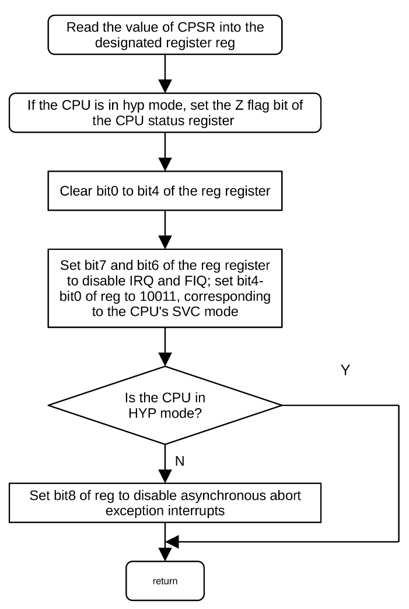
Figure 6-1 Supervisor (SVC) Mode Setup and Interrupt Masking Flowchart
The instruction mrc p15, 0, r9, c0, c0 issues a coprocessor transaction to pull the contents of register C0 from the CP15 coprocessor space, storing the data word inside scratch register r9. This internal CP15 C0 register serves as the core processor identification register housing the hardware CPU ID parameters.
The __lookup_processor_type subroutine searches the compiled architecture tables to resolve the exact silicon profile matching the active processor core. This tracking routine relies strictly on two system-wide positional constants: PAGE_OFFSET and PHYS_OFFSET. To parse the architectural functionality of these constants, it is necessary to establish the low-level concepts governing virtual addressing, physical addressing, kernel space, and user space (commonly referenced as kernel mode and user mode states). These fundamental networking and memory design paradigms are outlined below.
Depending on specific CPU microarchitectures and individual platform engineering layouts, the absolute starting boundaries and linear capacities of the volatile memory matrix vary widely. Because the Linux kernel provides native compatibility for an expansive taxonomy of disparate processor architectures and system topologies, the overwhelming majority of the codebase is written cleanly in the C programming language. Hardcoding absolute, literal memory coordinates within these portable software layers would make the codebase highly rigid and degrade its architectural scalability.
To abstract away these hardware variations, the Linux memory management framework acts as if all available system-wide address envelopes reside within a single uniform virtual boundary space extending from 0x00000000 to 0xFFFFFFFF; this abstract addressing layout defines the Virtual Address (VA) space. When system software initiates a memory access routine, the integrated Memory Management Unit (MMU) handles translation loops to map the abstract virtual coordinate to its true physical address layout on the silicon. Consequently, the CPU core executes instructions exclusively within the virtual address domain, whereas the underlying physical memory components consume sectors mapped inside the physical address domain.
The Linux kernel bifurcates this 4 GB virtual memory space (0x00000000 to 0xFFFFFFFF) into two mutually isolated runtime zones: user space and kernel space. User-space applications are restricted to executing within the boundaries of user space and are barred from cross-accessing or corrupting kernel memory; conversely, low-level core kernel routines execute within kernel space.
Mainline Linux implements exactly four split-ratio memory configurations to manage this layout. When the preprocessor build flag evaluates to CONFIG_VMSPLIT_1G, the kernel space envelope is mapped to span from 0x40000000 to 0xFFFFFFFF. Under the CONFIG_VMSPLIT_2G configuration profile, the kernel partition scales to occupy 0x80000000 to 0xFFFFFFFF. Toggling the switch to CONFIG_VMSPLIT_3G_OPT establishes a kernel memory allocation window spanning from 0xB0000000 to 0xFFFFFFFF. Finally, under the standard CONFIG_VMSPLIT_3G ratio allocation profile, the kernel space is assigned to occupy the top 1 GB segment extending from 0xC0000000 to 0xFFFFFFFF. Enforcing these build flag allocations is handled during the configuration phase, typically by appending explicit configuration directives (such as declaring CONFIG_VMSPLIT_1G=y) within the architecture board templates managed under the git/arch/arm/configs/*_defconfig path.
The constant parameter PHYS_OFFSET defines the absolute starting boundary address tracking the volatile memory array inside the hardware physical memory map. Conversely, PAGE_OFFSET registers the absolute starting virtual address allocating the base boundary of the protected kernel space. The hierarchical interface relationship linking virtual addresses, physical addresses, user space, kernel space, PHYS_OFFSET, and PAGE_OFFSET is illustrated in the structural diagram below:
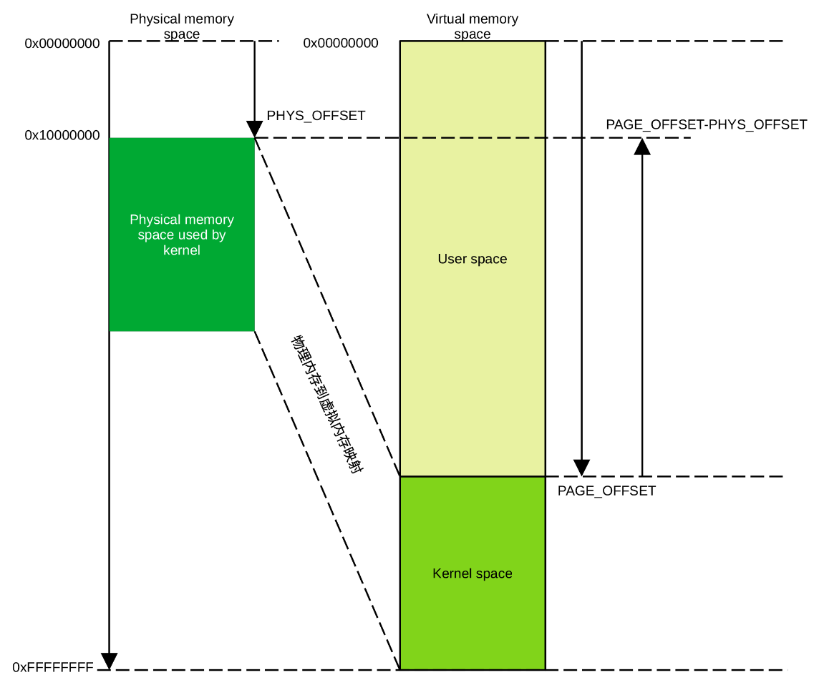
Figure 6-2 Layout Mapping of the Linux Address Space
Having introduced the foundational paradigms of virtual and physical addressing layout configurations, this section evaluates the low-level ARM-assembly processor information discovery routine. The assembly implementation code for this subsystem is structured as follows:
__lookup_processor_type:
adr r3, __lookup_processor_type_data
ldmia r3, {r4 - r6}
sub r3, r3, r4 @ get offset between virt & phys
add r5, r5, r3 @ convert virt addresses to
add r6, r6, r3 @ physical address space
1: ldmia r5, {r3, r4} @ value, mask
and r4, r4, r9 @ mask wanted bits
teq r3, r4
beq 2f
add r5, r5, #PROC_INFO_SZ @ sizeof(proc_info_list)
cmp r5, r6
blo 1b
mov r5, #0 @ unknown processor
2: ret lr
ENDPROC(__lookup_processor_type)
.align 2
.type __lookup_processor_type_data, %object
__lookup_processor_type_data:
.long .
.long __proc_info_begin
.long __proc_info_end
.size __lookup_processor_type_data, . - __lookup_processor_type_data
Upon concluding the execution of this routine, register r9 preserves the hardware CPU ID signature, while register r5 registers the absolute physical destination address pointing to the matched processor metadata record. First, consider the trailing tracking directives block:
__lookup_processor_type_data:
.long .
.long __proc_info_begin
.long __proc_info_end
The assembly evaluation directive .long . writes the node's own compiled virtual execution address directly into the memory location mapped by the label __lookup_processor_type_data. The subsequent two contiguous storage assignments cache the virtual linking addresses bounding the symbols __proc_info_begin and __proc_info_end into the next two sequential memory slots.
The physical hardware metrics and processor descriptors tracking every silicon architecture natively supported by the compiled Linux kernel are clustered contiguously inside the memory region bounded by __proc_info_begin and __proc_info_end. These boundary markers are synthesized dynamically by the linker utility during compilation and are stored strictly as virtual addresses.
Because these data blocks are organized using virtual linking targets, and because the Memory Management Unit (MMU) has not yet been initialized at this point in the boot sequence, any programmatic attempt to read these processor configurations requires converting their virtual offsets to physical address coordinates.
The initial instruction of the subroutine calculates the precise physical address hosting the __lookup_processor_type_data pointer table (adding the Program Counter register value to the immediate relative byte offset of the label) and writes it into register r3. Using r3 as an absolute tracking base address, the ldmia command block loads the values of the compiled virtual anchors—representing ., __proc_info_begin, and __proc_info_end—into registers r4, r5, and r6 respectively.
The instruction sub r3, r3, r4 computes the precise translation delta separating the label's runtime physical position from its link-time virtual address. Leveraging this constant offset vector allows virtual memory descriptors to be converted directly to physical address paths (as shown in Figure 6-2). The execution commands add r5, r5, r3 and add r6, r6, r3 recalculate the virtual boundaries of __proc_info_begin and __proc_info_end into the active physical memory map.
The subsequent loop fetches individual processor blocks from memory and executes a mask-and-test evaluation against the hardware CPU ID signature cached inside register r9 (originally read from the CP15 coprocessor). If a valid record matching the signature is resolved, the loop terminates, and register r5 contains the physical address hosting that processor information structure. If the search pointer traverses the entire array from __proc_info_begin to __proc_info_end without finding a matching hardware signature, register r5 is cleared to zero, and the function returns. The sequential operational loop tracking this routine is mapped out below:
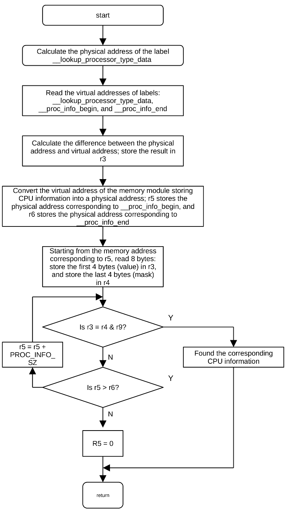
Figure 6-3 Processor Information Lookup Flowchart
U-BOOT passes platform parameters over to the guest Linux kernel via one of two legacy or modern interface protocols. On modern, Device-Tree-aware kernel compilation profiles, U-BOOT writes the absolute physical base address hosting the Flattened Device Tree binary blob into register r2. On legacy, non-Device-Tree targets, U-BOOT uses register r2 to pass the baseline pointer address referencing a structured list of parameters (atag list). Typically, U-BOOT places these environment lists or .dtb files within the initial 16 KB margin of physical RAM; the bootloader decompression routines and the early kernel instructions are fenced off to prevent overwriting this data window.
If the active kernel incorporates Device Tree capabilities, the validation engine interrogates the physical memory cell pointed to by register r2 to verify if it matches the Device Tree magic signature word. If the parsed cell matches the identifier signature, r2 contains a valid DTB container; otherwise, the payload is flagged as invalid. Under little-endian byte ordering models, this constant magic identifier matches the word 0xEDFE0DD0, whereas big-endian architectures store the signature as the big-endian word 0xD00DFEED.
Conversely, if the kernel is compiled without Device Tree capability, it interrogates the initial 4-byte tracking cell pointed to by register r2 to check for the signature values 0x00000005 (representing parameter size ATAG_CORE_SIZE) or 0x00000002 (representing an empty base parameter layout, ATAG_CORE_SIZE_EMPTY). If this initial integrity pass fails, the tracking location is discarded as an invalid parameter array. If the initial word is confirmed, the engine scans the next contiguous 8-byte data field to check for the explicit parameter key word ATAG_CORE (0x54410001). If this second validation loop matches the token signature, the memory reference inside r2 is registered as a fully authenticated, legal atag parameter array.
If the verification pass rejects the memory structure pointed to by r2 as an invalid DTB blob or unparseable atag array, register r2 is cleared to zero before control is returned to the calling function, informing downstream routines that the boot argument tracking reference is invalid.
The low-level assembly source code defining the __vet_atags validation routine is structured as follows:
__vet_atags:
tst r2, #0x3 @ aligned?
bne 1f
ldr r5, [r2, #0]
#ifdef CONFIG_OF_FLATTREE
ldr r6, =OF_DT_MAGIC @ is it a DTB?
cmp r5, r6
beq 2f
#endif
cmp r5, #ATAG_CORE_SIZE @ is first tag ATAG_CORE?
cmpne r5, #ATAG_CORE_SIZE_EMPTY
bne 1f
ldr r5, [r2, #4]
ldr r6, =ATAG_CORE
cmp r5, r6
bne 1f
2: ret lr @ atag/dtb pointer is ok
1: mov r2, #0
ret lr
ENDPROC(__vet_atags)
Because the syntactical composition of this assembly segment is linear, it does not require a detailed standalone execution flowchart.
Modifying the Address Translation Routines
6.2 Modifying the Address Translation Routines
The Linux kernel frequently executes translation loops to map between virtual address channels and physical address paths. Prior to initializing and enabling the Memory Management Unit (MMU), virtual-to-physical translations behave as static, linear mappings. The architectural relationship bridging physical addresses and virtual addresses is generally defined by the following programmatic formulas:
phy = virt + (PHYS_OFFSET - PAGE_OFFSET)
virt = phy - (PHYS_OFFSET - PAGE_OFFSET)
The system configuration includes a specialized preprocessor compilation switch named CONFIG_ARM_PATCH_PHYS_VIRT. If this build switch is disabled, the inline functions handling translations between physical and virtual address spaces are strictly hardcoded as follows:
static inline unsigned long __phys_to_virt(phys_addr_t x)
{
return x - PHYS_OFFSET + PAGE_OFFSET;
}
static inline phys_addr_t __virt_to_phys(unsigned long x)
{
return (phys_addr_t)x - PAGE_OFFSET + PHYS_OFFSET;
}
This translation paradigm is limited strictly to handling continuous 1:1 linear tracking. However, across complex Linux system configurations, virtual memory pages do not necessarily map to a simple, static one-to-one relationship with physical memory frames; multiple unique virtual memory zones can map down to share an identical physical memory base address. Furthermore, the core kernel must scale seamlessly to accommodate a diverse taxonomy of silicon architectures where the starting physical page frame numbers (PFN) vary significantly. Because these page numbers are heavily utilized across downstream memory management sub-blocks, they require constant runtime updates.
Consequently, the kernel cannot rely on a static, compile-time constant declaration of PHYS_OFFSET to govern memory translations. It must leverage advanced engineering techniques to dynamically patch and compute virtual-to-physical translation parameters at runtime to suit the active memory topology. Within contemporary kernels, these highly optimized, dynamic address translation macros are structured as follows:
static inline unsigned long __phys_to_virt(phys_addr_t x)
{
unsigned long t;
__pv_stub((unsigned long)x, t, "sub", __PV_BITS_31_24);
return t;
}
static inline phys_addr_t __virt_to_phys(unsigned long x)
{
phys_addr_t t;
if (sizeof(phys_addr_t) == 4) { /* Executed when physical address space is 32-bit */
__pv_stub(x, t, "add", __PV_BITS_31_24);
} else { /* Executed when physical address space is 40-bit (LPAE) */
__pv_stub_mov_hi(t);
__pv_add_carry_stub(x, t);
}
return t;
}
During the compilation process, the __pv_stub macro is expanded into the following inline assembly sequence, where the placeholder argument instr resolves explicitly to either the add or sub assembly operation code tokens:
#define __pv_stub(from,to,instr,type) \
__asm__("@ __pv_stub\n" \ @ Assembly comment line
"1: " instr " %0, %1, %2\n" \ @ Core arithmetic translation instruction
\@ %0=from, %1=to, %2=type
" .pushsection .pv_table,\"a\"\n" \ @ Divert context to custom .pv_table section
" .long 1b\n" \ @ Commit the absolute pointer of label 1 to the table
" .popsection\n" \ @ Revert back to the original text segment context
: "=r" (to) \
: "r" (from), "I" (type))
Concurrently, the architectural macro extensions __pv_stub_mov_hi and __pv_add_carry_stub expand to the following inline assembly definitions:
#define __pv_stub_mov_hi(t) \
__asm__ volatile("@ __pv_stub_mov\n" \
"1: mov %R0, %1\n" \
" .pushsection .pv_table,\"a\"\n" \
" .long 1b\n" \
" .popsection\n" \
: "=r" (t) \
: "I" (__PV_BITS_7_0))
#define __pv_add_carry_stub(x, y) \
__asm__ volatile("@ __pv_add_carry_stub\n" \
"1: adds %Q0, %1, %2\n" \
" adc %R0, %R0, #0\n" \
" .pushsection .pv_table,\"a\"\n" \
" .long 1b\n" \
" .popsection\n" \
: "+r" (y) \
: "r" (x), "I" (__PV_BITS_31_24) \
: "cc")
Once modified by the early runtime patching routines, the __pv_stub_mov_hi sequence copies the upper 32-bit bitmask tracking the delta between physical and virtual address spaces directly into the most significant register (high-order register) of a allocated 64-bit architecture register pair. Subsequently, the patched __pv_add_carry_stub routine adds the lower 32-bit translation offset to the target virtual address and propagates any resulting carry bit into the high-order register via the Add with Carry (adc) instruction.
Prior to the execution of the early runtime patcher, the initialization sequence injects temporary placeholder immediate operands defined by the constants __PV_BITS_31_24 and __PV_BITS_7_0. Pre-allocating these explicit constant arguments guarantees that the compiler generates valid, immediate-form mov and adds assembly tokens, complete with correctly populated immediate operand rotation fields (rotation). Ensuring these internal encoding parameters are generated properly guarantees that the 12-bit immediate field of the adds opcode can cleanly map out the lower 32 bits of the address translation offset.
Furthermore, the early patcher inspects the internal rotation bits embedded within the instruction encodings to easily differentiate whether a target instruction was instantiated via the __pv_stub_mov_hi macro or the __pv_add_carry_stub macro, executing the corresponding patch routine required for that instruction type. The key architectural characteristic of this framework is that the absolute address referencing the label 1: (the instruction address) is recorded inside a dedicated tracking section named .pv_table, fully decoupled from the active instruction text stream.
Ultimately, beyond performing baseline addition or subtraction for coordinate shifts, these macros register the absolute physical instruction address of every single translation location within a compiled lookup database named __pv_table. Before these instructions execute at runtime, the early patcher loops across this table to dynamically override the immediate fields of each registered instruction, tuning them to execute the exact offset shift matching the current board topology.
To manage this register mapping precisely, the inline assembly utilizes ARM-specific constraints modifiers, where %R0 restricts allocation strictly to the high-order register within a 64-bit pair, and %Q0 targets the low-order register.
The assembly code block residing at label __fixup_pv_table acts as this early dynamic runtime patcher. This routine analyzes the system parameters to dynamically adapt to varying physical memory structures, systematically sweeping across every reference descriptor registered inside __pv_table to patch the immediate operand bytes of the linked instructions. Prior to entering the code path at __fixup_pv_table, register r8 must contain the baseline physical memory coordinate matching PHYS_OFFSET. The detailed assembly-level code listing defining this runtime patcher is outlined below, followed by a comprehensive structural analysis of its execution workflow.
The assembly implementations for the dynamic runtime patcher subsystem are structured and executed as detailed below:
__fixup_pv_table:
adr r0, 1f @ Calculate physical address of label 1
ldmia r0, {r3-r7} @ Load virtual addresses of pf_table_begin, __pv_table_end,
@ __pv_phys_pfn_offset, and __pv_offset into r3-r7
mvn ip, #0
subs r3, r0, r3 @ r3 = Delta between physical and virtual addresses
add r4, r4, r3 @ Calculate physical address of pf_table_begin
add r5, r5, r3 @ Calculate physical address of __pv_table_end
add r6, r6, r3 @ Calculate physical address of __pv_phys_pfn_offset
add r7, r7, r3 @ Calculate physical address of __pv_offset
mov r0, r8, lsr #PAGE_SHIFT @ Convert to Page Frame Number (PFN); PHYS_OFFSET is in r8
str r0, [r6] @ Store to __pv_phys_pfn_offset for MMU usage
strcc ip, [r7, #HIGH_OFFSET] @ Store high 32 bits of __pv_offset (typically 0 or -1)
mov r6, r3, lsr #24 @ Constant used for add/sub instructions
teq r3, r6, lsl #24 @ Test whether the delta is an integer multiple of 16 MiB
bne __error
str r3, [r7,
#LOW_OFFSET] @ Store to the lower word of __pv_offset
b __fixup_a_pv_table
ENDPROC(__fixup_pv_table)
.align
1: .long .
.long pf_table_begin
.long __pv_table_end
2: .long __pv_phys_pfn_offset
.long __pv_offset
The first line of assembly code calculates the physical address corresponding to label 1:, storing the result inside register r0. The instruction ldmia r0, {r3-r7} loads the compiled virtual addresses of label 1:, pf_table_begin, __pv_table_end, __pv_phys_pfn_offset, and __pv_offset into registers r3, r4, r5, r6, and r7 respectively. Since the MMU is not yet active, virtual-to-physical links map out via a 1:1 direct identity mechanism. The command subs r3, r0, r3 yields the absolute translation delta between the current physical running position and the virtual link address. After executing the following code segment:
add r4, r4, r3 @ Calculate starting physical coordinates of __pv_table
add r5, r5, r3 @ Calculate ending physical coordinates of __pv_table
add r6, r6, r3 @ Calculate physical address of __pv_phys_pfn_offset
add r7, r7, r3 @ Calculate physical address of __pv_offset
registers r4, r5, r6, and r7 contain the physical addresses of pf_table_begin, __pv_table_end, __pv_phys_pfn_offset, and __pv_offset respectively, resolving the true operational boundaries of these tables in memory.
The subsequent logic scales the physical memory base PHYS_OFFSET into a Page Frame Number (PFN) and stores it within the __pv_phys_pfn_offset table. Concurrently, the absolute difference PHYS_OFFSET - PAGE_OFFSET is committed to the lower word of the __pv_offset data structure. If PHYS_OFFSET evaluates to less than PAGE_OFFSET, the execution sequence stores the word 0xFFFFFFFF to the upper word (HIGH_OFFSET) of __pv_offset. The matching operations mov r6, r3, lsr #24 and teq r3, r6, lsl #24 execute an arithmetic verification loop to guarantee that the hardware address translation delta is aligned to a strict 16 MiB boundary; a validation failure branches directly into error trapping routines.
Once these descriptor updates conclude, the code branches into __fixup_a_pv_table to execute the active runtime patching loops and update the instruction immediate fields.
.text
__fixup_a_pv_table:
adr r0, 3f @ Calculate physical address of label 3
ldr r6, [r0] @ Load virtual address of __pv_offset
add r6, r6, r3 @ Calculate physical address of __pv_offset
ldr r0, [r6, #HIGH_OFFSET] @ pv_offset high word
ldr r6, [r6, #LOW_OFFSET] @ pv_offset low word
mov r6, r6, lsr #24
cmn r0, #1 @ Check whether address offset is negative
moveq r0, #0x400000 @ If r0 is negative, set bit 22 to 1
b 2f
1: ldr ip, [r7, r3]
bic ip, ip, #0x000000ff
tst ip, #0xf00 @ Interrogate rotation field in the immediate operand
orrne ip, ip, r6 @ If rotation field is non-zero, patch the immediate field
biceq ip, ip, #0x400000 @ If rotation field is zero, clear bit 22 of the opcode
orreq ip, ip, r0 @ Based on r0 value, preserve the mov instruction or convert it to mvn
str ip, [r7, r3] @ Write the patched instruction back to its original location
2: cmp r4, r5 @ Verify if structural end of __pv_table is reached
ldrcc r7, [r4], #4
bcc 1b
ret lr
ENDPROC(__fixup_a_pv_table)
.align
3: .long __pv_offset
ENTRY(fixup_pv_table)
stmfd sp!, {r4 - r7, lr}
mov r3, #0 @ No offset translation vector
mov r4, r0 @ r0 = Table start pointer boundary
add r5, r0, r1 @ r1 = Table size boundary
bl __fixup_a_pv_table
ldmfd sp!, {r4 - r7, pc}
ENDPROC(fixup_pv_table)
.data
.align 2
.globl __pv_phys_pfn_offset
.type __pv_phys_pfn_offset, %object @ Variable type is explicitly data
__pv_phys_pfn_offset:
.word 0
.size __pv_phys_pfn_offset, . - __pv_phys_pfn_offset
.globl __pv_offset
.type __pv_offset, %object
__pv_offset:
.quad 0
.size __pv_offset, . - __pv_offset @ Size = current position minus label origin
The underlying segment tasked with parsing high and low word boundaries and scaling parameters relies on the following execution path:
adr r0, 3f @ Calculate physical address of label 3
ldr r6, [r0] @ Load virtual address of __pv_offset
add r6, r6, r3 @ Calculate physical address of __pv_offset
ldr r0, [r6, #HIGH_OFFSET] @ pv_offset high word
ldr r6, [r6, #LOW_OFFSET] @ pv_offset low word
mov r6, r6, lsr #24
This block extracts the upper and lower 32-bit values tracking the address translation offset and logically shifts the lower word right by 24 bits, retaining exclusively the highest 8 bits of the lower word configuration.
The directives cmn r0, #1 and moveq r0, #0x400000 evaluate whether the address translation offset is a negative value. If it is negative, register r0 is overwritten with the bitmask 0x400000, which transforms a standard mov opcode into a Bitwise NOT Move (mvn) operation.
The operation ldr ip, [r7, r3] indexes into the data pointer arrays cached within the .pv_table database to load the active machine instruction word directly into the Inter-Processor scratch register ip (r12). Upon initial entry into this execution loop, register r7 targets the virtual baseline pointer of pf_table_begin and register r3 contains the address translation delta.
The combined decoding instructions bic ip, ip, #0x000000ff and tst ip, #0xf00 clear the lower 8 bits of the instruction's immediate field to verify if the underlying immediate operand rotation field (rotation) scales to zero. If the rotation field is non-zero, indicating that the target instruction maps to an arithmetic adds statement, the command orrne ip, ip, r6 executes to patch the lower 8 bits of the immediate field with the active offset parameter.
Conversely, if the rotation bits evaluate to zero, confirming that the current instruction is a standard mov configuration, the patcher invokes biceq ip, ip, #0x400000 and orreq ip, ip, r0 to modify the instruction flags. If register r0 was populated with the mask value 0x400000, the underlying mov instruction transforms cleanly into an mvn instruction; otherwise, the primitive mov formatting is preserved, zeroing out the lower 8 bits of its immediate field. Finally, str ip, [r7, r3] writes the fully modified opcode instruction back to its original location in memory.
The trailing looping construct:
cmp r4, r5
ldrcc r7, [r4], #4
bcc 1b
ret lr
systematically traverses the complete linear boundary pool of the __pv_table array, re-programming every single memory translation opcode registered within the database, and returns control to the calling execution phase.
This concludes Section 6.2 and the runtime architecture modifications of the kernel address translation layers.
Initializing the Address Translation Page Tables
6.3 Initializing the Address Translation Page Tables
Following the runtime modifications of the address translation infrastructure, the next primary task inside the head.S execution path is the initialization of the translation page tables, preparing the hardware platform to engage the core virtual memory management sub-blocks. This early paging matrix is constructed by invoking the __create_page_tables subroutine. It must be explicitly noted that these initial translation page tables are transient, meaning they are utilized strictly during the early bootstrap phase.
Prior to stepping into this subroutine, register r8 preserves the physical-to-virtual address translation offset delta, r9 holds the hardware CPU ID signature, and r10 targets the resolved processor metadata record. To systematically analyze the software workflow of this page table creation utility, it is necessary to detail the structural alignment of the ARM page table architecture.
The physical base boundary hosting these temporary translation page tables aligns with the memory coordinates assigned to the static symbol swapper_pg_dir. This tracking symbol evaluates precisely to:
swapper_pg_dir = KERNEL_RAM_VADDR - PG_DIR_SIZE
Where the macro definitions track as:
KERNEL_RAM_VADDR = PAGE_OFFSET + TEXT_OFFSET
Here, TEXT_OFFSET defines the physical compile-time starting alignment offset of the active .text instruction section relative to the baseline bank origin. Consequently, KERNEL_RAM_VADDR represents the absolute starting virtual address allocating the executable Linux kernel code segment. This implies that a dedicated physical memory window equal to exactly TEXT_OFFSET bytes isolates the absolute starting boundary of kernel space (PAGE_OFFSET) from the actual entry code of the kernel image.
Beyond being carved out to house the early level-1 translation page tables, this linear memory cushion stores the runtime boot argument vectors or DTB payloads handed down from the U-BOOT bootloader stage. Under standard ARM configuration templates, TEXT_OFFSET defaults to 0x8000 (32 KB) and PG_DIR_SIZE is fixed to 0x4000 (16 KB). Depending on the platform architecture and memory constraints, these dimensions can be adjusted by developers, provided they remain sufficiently large to prevent address collisions or data corruption with the trailing kernel binary blocks.
Through direct calculation, the starting virtual coordinates mapping the early translation page table array evaluate to:
swapper_pg_dir = PAGE_OFFSET + TEXT_OFFSET - PG_DIR_SIZE
The true, live physical base address allocating this table on the hardware is resolved by using the translation delta:
PHYS_OFFSET + TEXT_OFFSET - PG_DIR_SIZE
This physical mapping layout is visualized across both address domains in the schematics below:
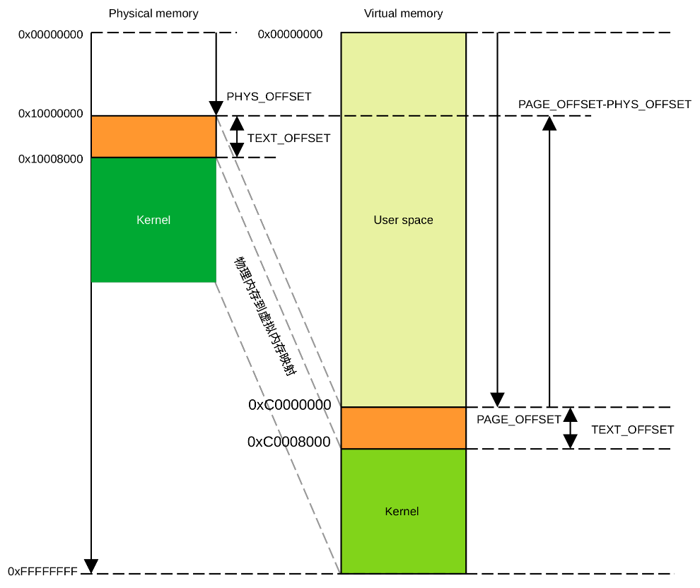
Figure 6-4 Positional Allocation Examples of the Page Table in Virtual and Physical Address Spaces
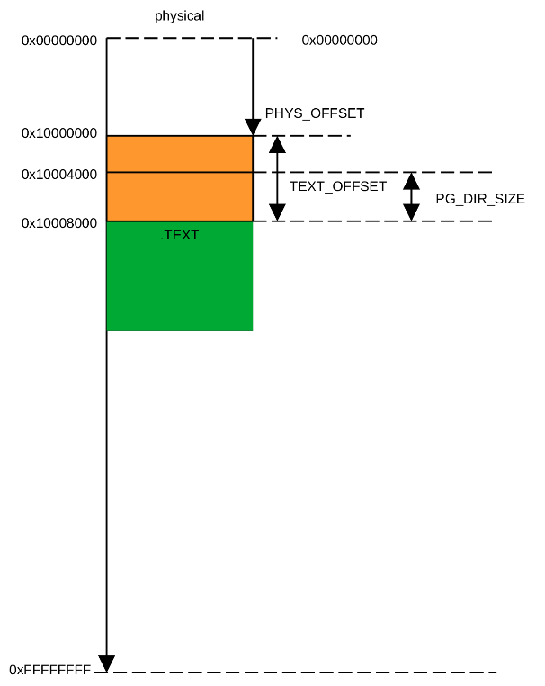
Figure 6-5 Physical Base Address Allocation of the Early Page Table
The structures packed into this early table block are processed exclusively during the initial stages of the kernel lifecycle. Once the memory management module becomes fully operational, the system completely overwrites and reallocates the active page tables to drive the runtime memory tracking engines of the mainline Linux system.
6.3.1 ARM Page Tables
The Memory Management Unit (MMU) leverages page tables to execute runtime address translations. A page table is a structured lookup array composed of either 32-bit or 64-bit entries; tables using 32-bit entries are defined as Short-descriptor format tables, whereas tables implementing 64-bit entries are defined as Long-descriptor format tables. Each discrete descriptor entry maps an explicit virtual address window to its corresponding physical address boundaries, dictates the size envelope of that mapped region, and configures its low-level memory attributes and access control permissions. Whether the MMU parses translation lookups using the Short-descriptor or Long-descriptor format is governed strictly by the EAE (Extended Address Enable) bit inside the TTBCR (Translation Table Base Control Register). When the EAE bit is cleared to 0, the MMU parses Short-descriptors; when set to 1, it enforces Long-descriptors.
The 32-bit ARM memory management subsystem natively supports both two-tier and three-tier translation page table cascades. Short-descriptor tables can be scaled to handle both single-tier and two-tier translation flows, whereas Long-descriptor layouts are processed exclusively within three-tier translation architectures; both descriptor formats can be scaled to address a 40-bit physical address space. Through these translation tables, the MMU can perform address translations over block units configured as sections (1 MB), supersections (16 MB), small pages (4 KB), or large pages (64 KB). Within the Linux kernel, the early bootstrap phase manages address translations strictly at a section-level (1 MB) granularity; once the baseline subsystem initializations conclude, the primitive operational unit shifts down to a standard page-level (4 KB) allocation model.
Varying the target translation unit changes the binary layout of the page table descriptors, and the bit definitions of a level-1 descriptor differstrictly from those of a level-2 descriptor. Short-descriptor page tables routing level-1 translations can be formatted into four distinct descriptors mapping pages, sections, or supersections. On ARM processors enabling 40-bit Large Physical Address Extensions (LPAE), the level-1 Short-descriptor layout implements the four binary configurations shown in Figure 6-6, where the initial bit configuration designates an invalid descriptor slot:
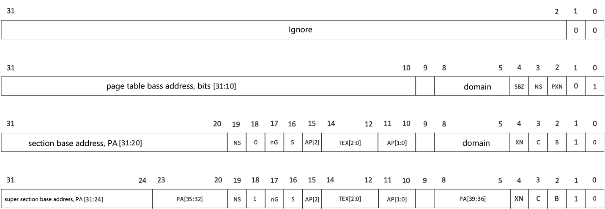
Figure 6-6 Short-Descriptor Formats for ARM supporting 40-Bit Address Spaces
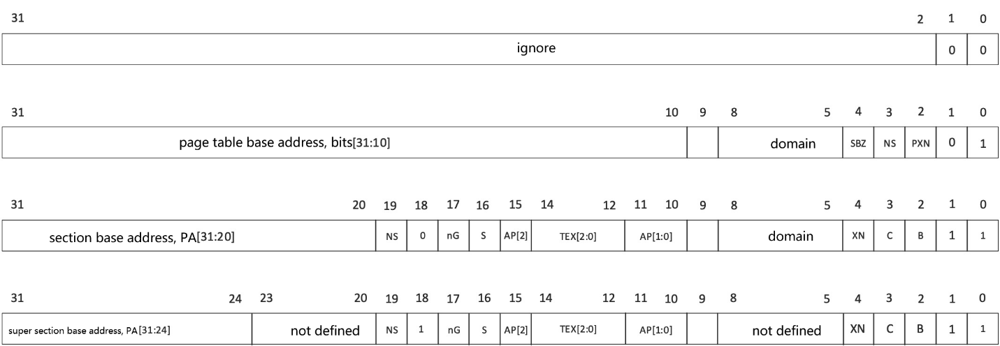
Figure 6-7 Short-Descriptor Formats for ARM supporting only 32-Bit Address Spaces
When bit 1 of the descriptor contains a logic value of 1, the entry is parsed as a section or supersection descriptor; under this state, bit 18 is interrogated to differentiate between a 1 MB section and a 16 MB supersection. The Non-Secure (NS) bit configures the cryptographic security profile of the targeted memory segment, where NS = 0 restricts the mapped region to secure memory space, and NS = 1 exposes the block to non-secure space. The marker SBZ indicates that the corresponding bit fields are Should Be Zero. The Privileged Execute-Never (PXN) bit determines whether privileged software threads can execute code within the target memory region, and the Execute-Never (XN) flag completely fences off the block to prevent machine instruction execution under any execution state.
The composite binary configurations of the TEX, C, and B bits define memory behavior attributes, specifying parameters such as inner/outer cacheability and hardware bus shareability. The Access Permission (AP) bitmask dictates the read/write privileges governing the memory region, controlling whether a page is read-only or read-write across different execution privilege rings. While these permission and attribute flags regulate instruction access and memory barriers, they do not directly alter address calculation loops. The actual arithmetic conversion vectors are managed entirely by the high-order physical base address bits and the upper address extensions (PA[39:32]).
When a level-1 descriptor targets a 1 MB section or 16 MB supersection, the translation maps the coordinate directly via a single-tier lookup phase. Conversely, when a descriptor maps to a standard 4 KB page or 64 KB large page, the translation loop requires a secondary level-2 page table lookup. Figure 6-8 maps out the Short-descriptor formatting rules deployed across level-2 translation tables, where the initial entry configuration represents an invalid descriptor slot:
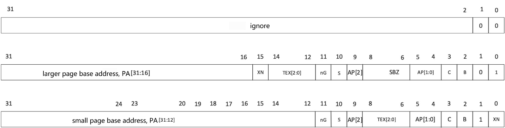
Figure 6-8 Page Table Formats Deployed Across Level-2 Translations
A large page descriptor defines the upper 16 bits of the physical address, mapping out a minimum translation step resolution equal to 2³²⁻¹⁶ = 64 KB. A standard small page descriptor registers the upper 20 bits of the target physical coordinate, yielding a primitive translation resolution equal to exactly 2³²⁻²⁰ = 4 KB.
6.3.2 Address Translation Paradigms
Having established the layout rules of the individual descriptor types, this section evaluates the technical mechanics through which a Virtual Address (VA) is parsed and translated into a final Physical Address (PA). Because the Linux kernel environment optimizes its execution pipelines by predominantly using section descriptors and small page descriptors, these two specific paging models are analyzed here to illustrate how the ARM memory management hardware maps out target address spaces.
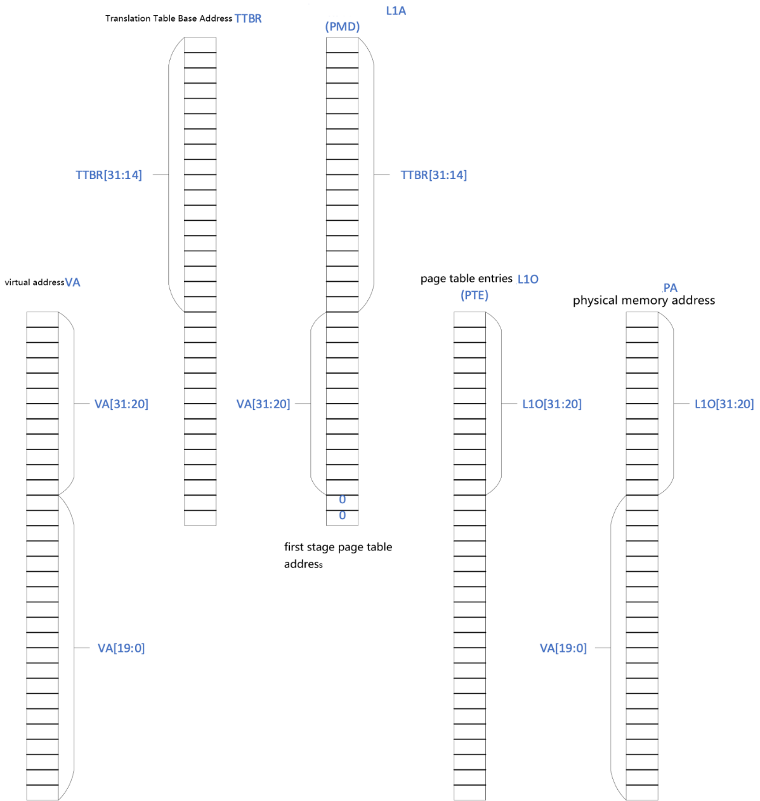
Figure 6-9 Virtual-to-Physical Address Translation Pipeline via 1 MB Section Descriptors
When the MMU is configured to route address lookups over a single-tier section profile, the upper 12 bits of the incoming virtual address (VA[31:20]) are combined with the upper 18 bits of the Translation Table Base Register (TTBRx[31:14]) to construct the upper 30 bits of the physical address targeting the level-1 descriptor entry (L1A). Within this calculated pointer address, VA[31:20] aligns with bits L1A[13:2], the upper 18 bits derived from the tracking register fill bits L1A[31:14], and the trailing bits are cleared to L1A[1:0] = 00. This geometric alignment ensures that every possible virtual address path cleanly addresses a specific 32-bit (4-byte) descriptor slot within the page table array.
The hardware interfaces directly with memory using this composite index address L1A[31:0] to poll the level-1 page table, fetching the 32-bit descriptor word L1O[31:0]. The upper 12 bits extracted from this descriptor (L1O[31:20]) are then concatenated with the lower 20 bits of the original virtual address (VA[19:0]) to form the definitive physical address (PA[31:0]) of the memory cell. Concurrently, the lower bits (L1O[19:0]) are parsed by the memory controller to enforce the localized attributes and access barriers assigned to that segment.
If the translation resolution is scaled down to map small pages or large pages, necessitating a finer subdivision of the virtual address space, the platform engages a two-tier translation cascade. This multi-stage translation pipeline is organized as illustrated in the schematic below:
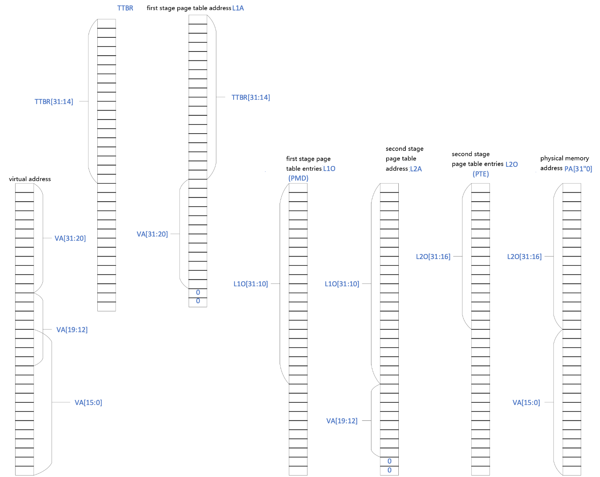
Figure 6-10 Virtual-to-Physical Address Translation Pipeline via 4 KB Page Descriptors
Initially, the high-order bits VA[31:20] of the incoming virtual address are combined with the register configurations inside TTBRx[31:14] to isolate the target bit array L1A[31:2], clearing the lower bits to 00 to format a valid level-1 look-up pointer L1A. The MMU issues a physical memory access transaction using L1A to retrieve the level-1 page table descriptor payload L1O[31:0].
Instead of addressing raw physical memory, the upper bits of this descriptor (L1O[31:10]) are combined with the middle bits of the original virtual address (VA[19:12]) to construct the address segment L2A[31:2]. The lower bounds are zeroed out to L2A[1:0] = 00 to form the definitive address pointing to a specific level-2 page table descriptor slot. The MMU polls this level-2 table to extract the final descriptor word L2O[31:0].
At the terminal execution step, the definitive physical address is assembled by mapping the upper 20 bits directly from the level-2 descriptor (PA[31:12] = L2O[31:12]) and copying the remaining low-order bits straight from the original virtual address offset (PA[11:0] = VA[11:0]), concluding the two-tier virtual-to-physical address translation loop.
In practice, the system hardware does not perform a slow physical table walk across memory for every single memory instruction. The ARM microarchitecture incorporates a specialized hardware cache known as the Translation Lookaside Buffer (TLB). Before initiating an automated page table walk over physical RAM, the MMU's internal lookup engines interrogate the TLB to check if an active virtual-to-physical address translation pair (VA -> PA) is already cached. If a valid entry matches the query, the MMU immediately uses the cached physical address to speed up execution. If a cache miss occurs, the hardware falls back to run the complete multi-stage page table walk detailed above.
6.3.3 Linux Initial Page Tables
During the address translation process, the Linux kernel employs a multi-tiered translation cascade consisting of five discrete page table layers: PGD, P4D, PUD, PMD, and PTE. The PGD (Page Global Directory) serves as the top-level page table responsible for managing the entire virtual address space allocation.
The subsequent intermediate layers—encompassing the P4D (Page 4th Level Directory), PUD (Page Upper Directory), and PMD (Page Middle Directory)—are leveraged to implement multi-stage mid-level address translation loops. Among these, the PMD functions as the immediate parent page table routing down to the PTE layer, providing the tracking vectors required to resolve the base addresses of individual PTE pools. Finally, the PTE (Page Table Entry) layer acts as the definitive, lowest-tier level within the translation hierarchy; the Linux memory management engine interrogates the individual entries within the PTE to retrieve the final physical address matching the requested virtual address block.
The structural relationship and structural hierarchy linking these multiple page table layers are mapped out in the schematic diagram below:
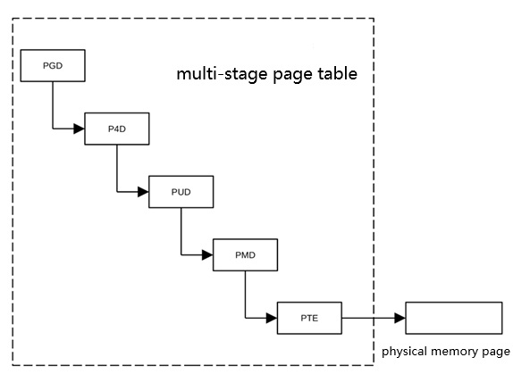
Figure 6-11 Linux Multi-tier Page Table Hierarchy
6.3.4 Implementing Nominal Three-tier Linux Address Translation via ARM Hardware
The ARM implementation of the Linux kernel utilizes a nominal three-tier address translation model consisting of the PGD, PMD, and PTE. The top-level PGD maps directly to the ARM hardware Translation Table Base Registers, TTBR0 and TTBR1, which provide the reference tracking vectors to locate the mid-level PMD tables.
When executing on 32-bit ARM hardware that natively supports only two levels of hardware translation, a structural mismatch arises with Linux's three-tier software model. To resolve this, the kernel implements a 1:1 structural shorthand overlay linking the PGD entries directly to the PMD entries. By assigning identical bit vectors to both descriptor layers, the Linux kernel leverages the 2-tier MMU hardware pipeline to execute its nominal 3-tier software mapping. In the low-level architecture code, this folded translation loop is managed by completely merging the P4D, PUD, and PMD layers so they reference an identical physical base context. The schematic diagram below illustrates this architectural adaptation:
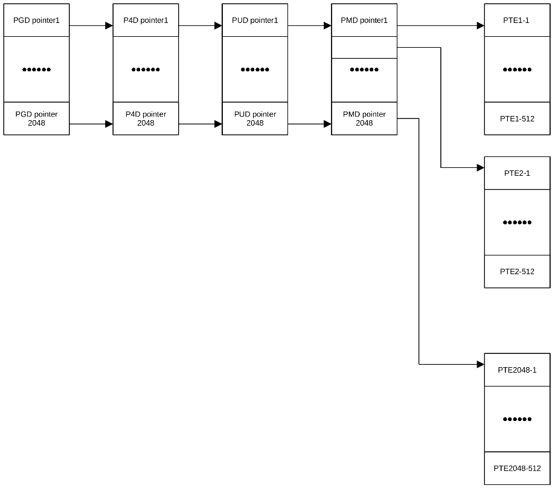
Figure 6-12 Schematic Mapping of Linux Folding to a 2-Tier ARM MMU Pipeline
Within the Linux memory management framework, the PMD specifies the formatting constraints for all page table tiers above the PTE, making it structurally equivalent to an ARM level-1 section or supersection descriptor. Concurrently, the PTE maps out the absolute primitive boundaries of individual page descriptors, functioning as an ARM level-2 page descriptor.
Executing address translations over 1 MB block sections requires only a single-tier lookup phase. Because the early bootstrap lifecycle does not enforce maximum, fine-grained memory utilization, the early kernel simplifies its memory model by processing section descriptors exclusively during the initial booting sequence. Consequently, the temporary page tables are populated using standard 1 MB section structures. The low-level assembly sequence tasked with initializing these early section-level structures within the head.S source code module is declared under the global label __create_page_tables:
__create_page_tables:
pgtbl r4, r8 @ page table address
mov r0, r4
mov r3, #0
add r6, r0, #PG_DIR_SIZE
1: str r3, [r0], #4
str r3, [r0], #4
str r3, [r0], #4
str r3, [r0], #4
teq r0, r6
bne 1b
/* ... Note: For clarity, the core loop is shown fully in the text above ... */
ret lr
ENDPROC(__create_page_tables)
.ltorg
.align
__turn_mmu_on_loc:
.long .
.long __turn_mmu_on
.long __turn_mmu_on_end
Prior to branching into this assembly block, register r8 must contain the baseline physical memory offset vector (PHYS_OFFSET), r9 preserves the hardware CPU ID signature, and r10 references the memory workspace hosting the resolved processor metadata record.
The initial macro command pgtbl r4, r8 calculates the hardware absolute physical memory boundary tracking to PHYS_OFFSET + TEXT_OFFSET - PG_DIR_SIZE, caching the resulting base reference inside register r4. As analyzed in Figure 6-5, this coordinate defines the absolute starting address of the transient page table structure.
Immediately following this base registration loop, the system steps into the zero-fill segment:
mov r0, r4
mov r3, #0
add r6, r0, #PG_DIR_SIZE
1: str r3, [r0], #4
str r3, [r0], #4
str r3, [r0], #4
str r3, [r0], #4
teq r0, r6
bne 1b
This assembly loop iterates across the entire memory layout allocated to PG_DIR_SIZE, writing null bytes (0x00000000) throughout the table to clear out stale artifacts.
A fundamental challenge arises during MMU bring-up: an identical virtual coordinate might address entirely different physical cells before and after the MMU is engaged. Crucially, the explicit physical instructions tasked with executing the MMU activation sequence must remain strictly identity-mapped, meaning their virtual address must align perfectly with their true physical address during the instruction pipelining phase. If an address drift occurs during this structural step, the processor's fetch engine will jump to an unmapped sector, leading to an immediate system crash. To prevent this, the initialization code constructs explicit identity-mapped descriptor entries covering the code block that toggles the MMU. This is achieved by storing the upper 12 bits of the code section's physical base address directly into the corresponding section descriptor base domain.
adr r0, __turn_mmu_on_loc
ldmia r0, {r3, r5, r6}
sub r0, r0, r3 @ virt->phys offset
add r5, r5, r0 @ phys __turn_mmu_on
add r6, r6, r0 @ phys __turn_mmu_on_end
mov r5, r5, lsr #SECTION_SHIFT
mov r6, r6, lsr #SECTION_SHIFT
1: orr r3, r7, r5, lsl #SECTION_SHIFT @ flags + kernel base
str r3, [r4, r5, lsl #PMD_ORDER] @ identity mapping
cmp r5, r6
addlo r5, r5, #1 @ next section
blo 1b
.align
__turn_mmu_on_loc:
.long .
.long __turn_mmu_on
.long __turn_mmu_on_end
The code sequence shown above establishes a 1:1 identity mapping in the page tables for the memory region spanning from __turn_mmu_on to __turn_mmu_on_end. When using these specific descriptor entries for address translation, the input virtual address resolves to an identical output physical address. The technical mechanics of this assembly sequence are detailed below.
The instruction adr r0, __turn_mmu_on_loc calculates the physical address of the __turn_mmu_on_loc label. The command ldmia r0, {r3, r5, r6} loads the virtual linking addresses (address offsets) corresponding to . (the __turn_mmu_on_loc label itself), __turn_mmu_on, and __turn_mmu_on_end into registers r3, r5, and r6 respectively. The arithmetic instruction sub r0, r0, r3 calculates the physical-to-virtual translation delta (PHYS_OFFSET - PAGE_OFFSET). The subsequent addition instructions:
add r5, r5, r0
add r6, r6, r0
compute the absolute physical addresses of __turn_mmu_on and __turn_mmu_on_end. The logical shift commands:
mov r5, r5, lsr #SECTION_SHIFT
mov r6, r6, lsr #SECTION_SHIFT
isolate the section base fields from these addresses by stripping away the lower order bits.
To maximize code portability, the ARM kernel tree shares a unified codebase between processors supporting a 40-bit large physical address space and those limited to a legacy 32-bit space. When executing a 2-tier hardware translation, SECTION_SHIFT is configured to 20. Conversely, under a 3-tier translation scheme, SECTION_SHIFT scales to
- Because the kernel operates under a short-descriptor 2-tier profile during this early bootstrap phase, SECTION_SHIFT evaluates strictly to
The core programming instructions:
orr r3, r7, r5, lsl #SECTION_SHIFT
str r3, [r4, r5, lsl #PMD_ORDER]
combine the section base address with the memory attribute flag bits passed in r7 to form a valid level-1 section descriptor entry. It then commits this descriptor word to the active page table structure pointed to by r4. Because each short-descriptor entry consumes exactly 32 bits (4 bytes) of storage, the scaling shift constant PMD_ORDER is fixed to 2 (since (1 \ll 2 = 4)). The execution workflow tracking this routine is illustrated below:
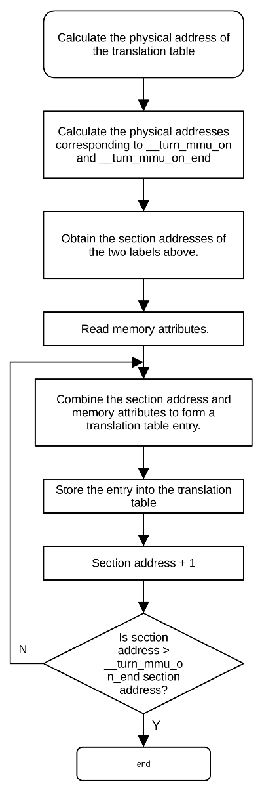
Figure 6-13 Page Table Initialization Pipeline
Having completed the identity mapping vectors, the subsequent code block constructs the page table descriptors for the main kernel image space extending from PAGE_OFFSET up to the end of the BSS segment (_end). The underlying allocation methodology mirrors the identity-mapping routine, with the exception that it maps virtual addresses down to distinct physical targets instead of enforcing a 1:1 match. The code segment managing this mapping is structured as follows:
add r0, r4, #PAGE_OFFSET >> (SECTION_SHIFT - PMD_ORDER)
ldr r6, =(_end - 1)
orr r3, r8, r7
add r6, r4, r6, lsr #(SECTION_SHIFT - PMD_ORDER)
1: str r3, [r0], #1 << PMD_ORDER
add r3, r3, #1 << SECTION_SHIFT
cmp r0, r6
bls 1b
Prior to executing this block, register r4 references the baseline address of the early page table array, r7 encapsulates the low-level memory attribute flags, and r8 holds PHYS_OFFSET. The initial line of assembly computes the exact descriptor entry index within the page table that maps to the base virtual address PAGE_OFFSET. Because each descriptor slot consumes a 4-byte width, PAGE_OFFSET must be shifted right by 18 bits instead of 20 bits (20 - 2 = 18).
The logic operation orr r3, r8, r7 builds the raw section descriptor content. This operation requires that the lower 20 bits of PHYS_OFFSET are strictly zero-initialized—a hardware boundary constraint that is universally satisfied across ARM platforms. As shown in the code logic, register r6 resolves to the absolute page table entry index corresponding to the virtual address limit _end.
The instruction str r3, [r0], #1 << PMD_ORDER writes the generated descriptor word into the page table slot indexed by r0 and automatically increments r0 by 4 bytes to point to the next contiguous descriptor entry. Concurrently, add r3, r3, #1 << SECTION_SHIFT increments the section base domain within the descriptor word by 1 MB, aligning it with the next contiguous physical memory block. The structural software loop tracking this mapping is charted in the flowchart below:
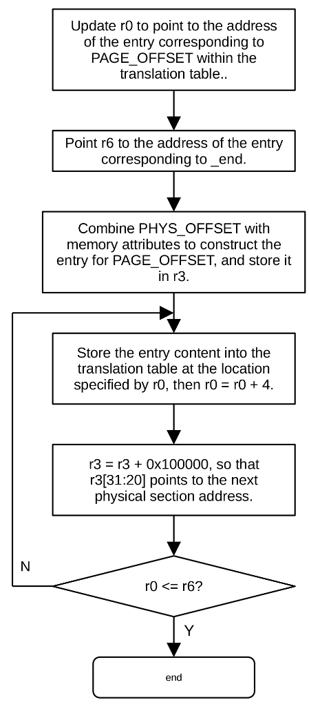
Figure 6-14 Page Table Configuration for the Kernel and BSS Segments
Although the actual linear width of this parameter block typically consumes less than a single 1 MB section boundary, its physical placement on the media may sit dangerously close to a section edge. If the memory block overlaps a section boundary and spans into an adjacent section, mapping it safely requires two consecutive section descriptors. The assembly block responsible for generating the page table entries for this parameter region is structured as follows:
mov r0, r2, lsr #SECTION_SHIFT
movs r0, r0, lsl #SECTION_SHIFT
subne r3, r0, r8
addne r3, r3, #PAGE_OFFSET
addne r3, r4, r3, lsr #(SECTION_SHIFT - PMD_ORDER)
orrne r6, r7, r0
strne r6, [r3], #1 << PMD_ORDER
addne r6, r6, #1 << SECTION_SHIFT
strne r6, [r3]
ret lr
The initial bitmask operations:
mov r0, r2, lsr #SECTION_SHIFT
movs r0, r0, lsl #SECTION_SHIFT
isolate the 1 MB section base address fields (bits[31:20]) hosting the Device Tree or parameter block. The conditional execution block:
subne r3, r0, r8
addne r3, r3, #PAGE_OFFSET
computes the corresponding virtual address of this region by applying the transformation matrix (phys_addr - PHYS_OFFSET + PAGE_OFFSET). The subsequent line:
addne r3, r4, r3, lsr #(SECTION_SHIFT - PMD_ORDER)
calculates the target index offset within the page table matching that virtual address.
The bitwise instruction orrne r6, r7, r0 constructs the section descriptor word mapping the parameter block. Finally, the trailing two store operations commit these two sequential descriptor words into the calculated page table offsets to ensure complete boundary coverage, then branch back to the calling function.
The comprehensive spatial relationship mapping the physical address blocks to their respective virtual spaces after processing this early page table generation phase is illustrated in the diagram below:
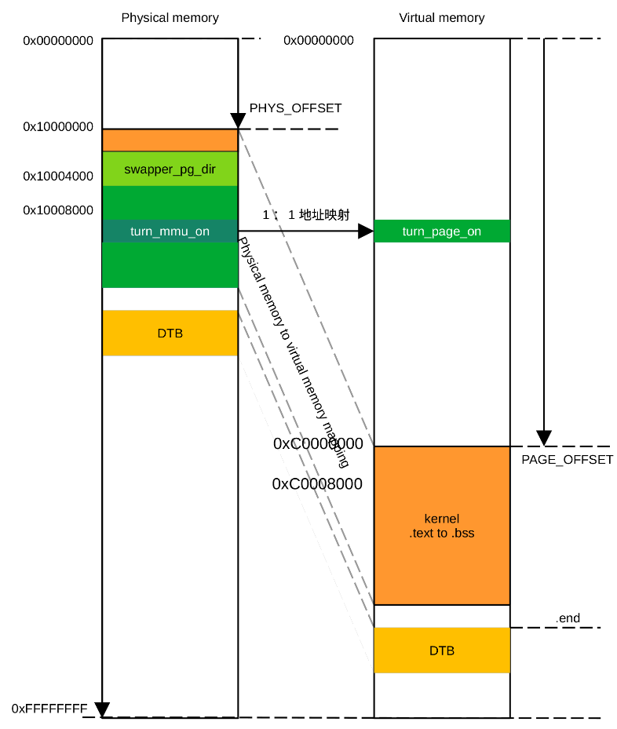
Figure 6-15 Virtual-to-Physical Address Layout Mappings Established via the Early Page Tables
6.3.5 Enabling the Memory Management Unit (MMU)
Following the initialization of the early translation page tables, the next step in the boot sequence is provisioning the CPU to engage the MMU safely. The assembly logic first loads the post-MMU execution target address __mmap_switched into register r13 (which functions as the primary Stack Pointer, sp), and writes the absolute physical return vector address (label 1:) into the Link Register (lr).
The following assembly sequence implements the MMU preparation pipeline for platforms supporting a standard 32-bit physical address space. Prior to entering this code segment, register r4 preserves the early page table base reference, and r10 targets the absolute physical address of the resolved proc_info_list matching the active ARM processor core model:
ldr r13, =__mmap_switched
badr lr, 1f
mov r8, r4
ldr r12, [r10, #PROCINFO_INITFUNC]
add r12, r12, r10
ret r12
1: b __enable_mmu
The operation ldr r13, =__mmap_switched writes the virtual linking address of the __mmap_switched routine into register r13. The command badr lr, 1f calculates and stores the physical address of the fallback label 1: into lr as the baseline return address vector. The command mov r8, r4 copies the page table base address into register r8.
The instruction ldr r12, [r10, #PROCINFO_INITFUNC] resolves the explicit relative byte offset of the core processor initialization block (__cpu_flush) relative to the proc_info_list base address. The command add r12, r12, r10 computes the absolute physical execution address of this __cpu_flush routine, writing the vector into register r12. Finally, ret r12 fires an unconditional branch to jump straight into the processor-specific setup subroutine.
For ARMv7 Cortex-A9 MPCore application processors, this setup routine is defined as the core symbol __v7_ca9mp_setup within the low-level memory management architecture source module git/arch/arm/mm/proc-v7.S. The assembly code block is structured as follows:
__v7_ca9mp_setup:
mov r10, #(1 << 0) @ Cache/TLB ops broadcasting
adr r0, __v7_setup_stack_ptr
ldr r12, [r0]
add r12, r12, r0 @ Calculate local stack pointer
stmia r12, {r1-r6, lr} @ Save r1-r6 and lr to __v7_setup_stack
bl v7_invalidate_l1
ldmia r12, {r1-r6, lr}
b __v7_setup_cont
The technical objective of this routine is to back up the contents of registers r1 through r6 and the lr vector by pushing them into a temporary local stack allocation frame named __v7_setup_stack. It then calls v7_invalidate_l1 to completely purge and invalidate all stale entries within the level-1 data cache hierarchy. Upon restoring the original values of registers r1–r6 and lr from the temporary stack, the state machine branches to __v7_setup_cont to provision the hardware Translation Table Base Control Register (TTBCR) and the Translation Table Base Registers (TTBR0/TTBR1).
The following assembly-level subroutine implements the absolute level-1 data cache invalidation loop. This routine interrogates the CP15 coprocessor configuration registers to read the explicit number of sets and cache ways implemented by the silicon, and subsequently loops across every cache line to execute hardware-enforced invalidate steps by writing to the CP15 c7 register:
ENTRY(v7_invalidate_l1)
mov r0, #0
mcr p15, 2, r0, c0, c0, 0 @ Write CSSELR (Cache Size Selection Register) to target L1 Data Cache
mrc p15, 1, r0, c0, c0, 0 @ Read CCSIDR (Cache Size ID Register) metrics
movw r1, #0x7fff
and r2, r1, r0, lsr #13 @ Extract total sets parameter (Assigned value = actual sets - 1)
movw r1, #0x3ff
and r3, r1, r0, lsr #3 @ Extract total ways parameter (Assigned value = actual ways - 1)
add r2, r2, #1 @ Calculate absolute number of sets
and r0, r0, #0x7 @ Extract cache line word width (Actual = log2(words) - 2)
add r0, r0, #4 @ Define set shift value for DCISW formatting
clz r1, r3 @ Calculate way shift value based on leading zeros of ways bitmask
add r4, r3, #1 @ NumWays total constant
1: sub r2, r2, #1 @ Decrement NumSets loop counter
mov r3, r4 @ Reset Temp counter back to NumWays
2: subs r3, r3, #1 @ Decrement Temp way index counter
mov r5, r3, lsl r1
mov r6, r2, lsl r0
orr r5, r5, r6 @ Synthesize final formatted DCISW command register value
mcr p15, 0, r5, c7, c6, 2 @ Write DCISW (Data Cache Invalidate by Set/Way) to invalidate cache line
bgt 2b @ Loop until all associative ways within the active set are invalidated
cmp r2, #0
bgt 1b @ Loop until all sets across the L1 cache controller are invalidated
dsb st
isb
ret lr
ENDPROC(v7_invalidate_l1)
The logical execution workflow and register decrement tracking loop implemented across the v7_invalidate_l1 assembly subroutine is visualized in the schematic flowchart below:
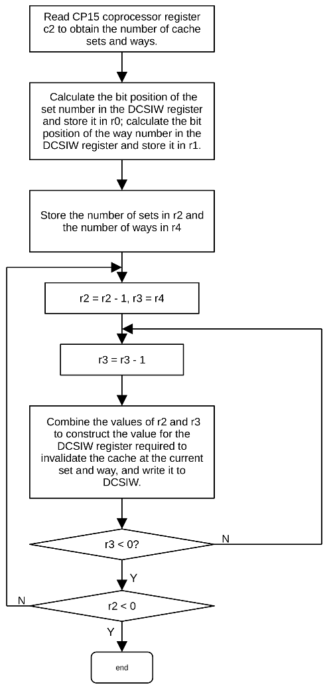
Figure 6-16 Hardware Level-1 Data Cache Invalidation Loop
Upon returning from the invalidation path, the processor branches into __v7_setup_cont to proceed with secondary low-level register updates. The __v7_setup_cont code path is architected to optionally apply silicon errata workarounds and hardware bug patches. Since NXP applications processors do not utilize these specific errata workarounds, this software segment has been omitted for clarity.
Following these conditional checks, the routine clears out stale instruction pipelines and pre-fetch buffers by writing zero values into the CP15 coprocessor c7 and c8 registers, which completely flushes the Instruction Cache (I-Cache) and invalidates the Translation Lookaside Buffers (TLBs).
The routine then invokes the system macro v7_ttb_setup r10, r4, r5, r8, r3 to program the Translation Table Base Control Register (TTBCR) layout, and writes the early page table physical base address preserved in r8 straight into the primary hardware page table register TTBR1. Finally, it programs the primary memory region attribute and normal memory re-mapping registers (PRRR and NMRR) within the CP15 configuration block. For granular details tracking the bit definitions and access controls of these re-mapping registers, developers can reference the official ARM Architecture Reference Manual.
__v7_setup_cont:
mov r10, #0
mcr p15, 0, r10, c7, c5, 0 @ Invalidate all instruction caches
mcr p15, 0, r10, c8, c7, 0 @ Invalidate TLBs
v7_ttb_setup r10, r4, r5, r8, r3 @ Configure TTBCR and TTBRx
ldr r3, =PRRR
ldr r6, =NMRR
mcr p15, 0, r3, c10, c2, 0 @ Configure Primary Region Remap Register
mcr p15, 0, r6, c10, c2, 1 @ Configure Normal Memory Region Remap Register
dsb
adr r3, v7_crval
ldmia r3, {r3, r6}
mrc p15, 0, r0, c1, c0, 0 @ Read System Control Register (SCTLR)
bic r0, r0, r3
orr r0, r0, r6
ret lr
The instruction ldmia r3, {r3, r6} loads the explicit bitmask configurations 0x0122C302 and 0x30C03C7D into registers r3 and r6 respectively. Prior to returning to the caller, the target bit values destined for the System Control Register (SCTLR) are temporarily preserved within register r0.
Because the Link Register (lr) preserved the physical base address of label 1: during the cache invalidation call, returning from the setup block automatically executes b __enable_mmu, which shifts the execution pipeline into the __enable_mmu subroutine to kick off MMU activation. Prior to entering the __enable_mmu code block, the hardware register matrix is aligned precisely as follows:
-
r0: Holds the prepared configuration bitmask to be written to the System Control Register (SCTLR).
-
r1: Preserves the machine type identifier code.
-
r2: Stores the absolute physical base pointer address referencing the atags or the Device Tree Blob (DTB).
-
r4: Holds the lower 32 bits of the level-1 Translation Table Base Register 0 (TTBR0).
-
r5: Holds the upper 32 bits of TTBR0 (processed exclusively within 40-bit large physical addressing pipelines where TTBR0 and TTBR1 scale to 64-bit widths).
-
r8: Holds the structural base value for TTBR1.
-
r9: Preserves the hardware processor ID signature.
-
r13: Stores the absolute virtual destination address targeted for execution once the MMU has been successfully engaged.
The low-level assembly sequence tasked with transitioning the CPU into virtual memory mode is structured as follows:
__enable_mmu:
bic r0, r0, #CR_A @ Clear alignment fault checking bits in SCTLR configuration
mov r5, #DACR_INIT
mcr p15, 0, r5, c3, c0, 0 @ Write Domain Access Control Register (DACR)
mcr p15, 0, r4, c2, c0, 0 @ Write Translation Table Base Register 0 (TTBR0)
b __turn_mmu_on
ENDPROC(__enable_mmu)
.align 5
.pushsection .idmap.text, "ax"
ENTRY(__turn_mmu_on)
mov r0, r0
instr_sync
mcr p15, 0, r0, c1, c0, 0 @ Write SCTLR: Enable the Memory Management Unit (MMU)
mrc p15, 0, r3, c0, c0, 0 @ Read Cache Size ID Register (CCSIDR)
instr_sync
mov r3, r3
mov r3, r13
ret r3 @ Return/Jump to virtual address space inside __mmap_switched
__turn_mmu_on_end:
ENDPROC(__turn_mmu_on)
.popsection
The compiled binary code for the __turn_mmu_on block is mapped directly into the .idmap.text section. This section resides strictly within the identity-mapped (1:1) translation boundary, meaning the virtual and physical address planes are completely identical for this execution window. Consequently, instructions fetched within this loop proceed smoothly without being disrupted or unmapped when the MMU configuration changes.
The enabling routine itself is direct: it enforces the global memory access permission domains inside the DACR, registers the base table tracking pointer within TTBR0, and updates the System Control Register bits to activate the MMU hardware. The implementation uses the Instruction Synchronization Barrier isb macro constant (instr_sync) to flush the execution pipeline, guaranteeing that all internal processor states align before branching to the virtual domain.
Once the MMU is fully engaged, the execution pipeline executes the jump into virtual space, landing at the __mmap_switched entry vector to run the following routine:
__mmap_switched:
mov r7, r1
mov r8, r2
mov r10, r0
adr r4, __mmap_switched_data
mov fp, #0
ldmia r4!, {r0, r1, sp}
sub r2, r1, r0
mov r1, #0
bl memset @ Zero out the uninitialized global data (.bss) segment
ldmia r4, {r0, r1, r2, r3}
str r9, [r0] @ Store processor ID parameters
str r7, [r1] @ Store hardware machine type index
str r8, [r2] @ Store boot parameters pointer or Device Tree base address
cmp r3, #0
strne r10, [r3] @ Store System Control Register (SCTLR) value
mov lr, #0
b start_kernel
.align 2
.type __mmap_switched_data, %object
__mmap_switched_data:
.long __bss_start @ Read into r0
.long __bss_stop @ Read into r1
.long . + THREAD_START_SP @ Read into Stack Pointer (sp)
.long processor_id @ Read into r0
.long __machine_arch_type @ Read into r1
.long __atags_pointer @ Read into r2
.long cr_alignment @ Read into r3
.size __mmap_switched_data, . - __mmap_switched_data
The fundamental purpose of the __mmap_switched routine is to clear the uninitialized global variable region bounded between the __bss_start and __bss_stop markers by filling the blocks with null bytes via memset. Following this runtime cleanup, it commits the runtime hardware processor ID, the machine architecture index, the absolute memory pointer referencing the Device Tree blob, and the active System Control Register state into their respective global kernel variables (processor_id, __machine_arch_type, __atags_pointer, and cr_alignment).
Having successfully finalized the execution stacks and established a valid C environment within the virtual memory domain, it clears the link register and invokes an unconditional branch to jump directly into the architecture-independent C language initialization routine: start_kernel().
This concludes Section 6.3.5 and the complete technical translation of the low-level assembly bootstrap phase.
Chapter 7: Kernel Booting — Initialization Preparations
The start_kernel() function executes as Linux's Process 0 (the idle task / init_task). Its primary responsibility is to orchestrate and establish the global execution environment for the Linux kernel. It bears the main burden of the Linux startup sequence and stands as the absolute first core Linux routine authored entirely in the C programming language. The start_kernel() implementation is maintained within the source file git/init/main.c. The subsequent sections detail the engineering objectives and low-level mechanics of each constituent subroutine in their exact execution sequence. Due to the exhaustive length of this master function, its full monolithic text definition is omitted here.
The functional modules and early architectural tracking workflows are introduced below:
Setting the Initialization Task Stack-End Magic Number
7.1 Setting the Initialization Task Stack-End Magic Number
The Linux operating system manages all transactional activities via an abstraction model known as tasks, with each individual task represented by a struct task_struct descriptor block. Linux drives these tasks forward through threads, assigning exactly one thread to track every active task instance. The primitive boot-stage task is globally defined as init_task, which is instantiated as a static global variable of type struct task_struct.
During compilation, kernel architects toggle the preprocessor build flag CONFIG_THREAD_INFO_IN_TASK to determine whether the low-level thread metadata structure (struct thread_info) is stored directly inside the main task_struct container block or allocated independently. If the system is compiled to house the thread metadata inside the task structure itself, the stack-end validation token is written directly to the memory boundary pointed to by the task's internal stack pointer field (stack). Conversely, if the thread_info block is allocated externally, this validation token is injected into the absolute first memory word immediately following the task's corresponding thread metadata structure. The Linux kernel implements this dedicated validation word as a robust, lightweight safety mechanism to detect stack overflows.
The programmatic task of writing this stack-end signature is managed by the following routine:
void set_task_stack_end_magic(struct task_struct *tsk)
{
unsigned long *stackend;
stackend = end_of_stack(tsk);
*stackend = STACK_END_MAGIC; /* for overflow detection */
}
This function is defined within the core subsystem source module kernel/fork.c. When thread_info is nested inside the task block, the macro helper end_of_stack() returns the absolute address value cached within the task's stack parameter field. When thread_info is configured externally, the macro instead resolves to the physical memory coordinates immediately succeeding the task's companion thread metadata block (as illustrated in Figure 7-1).
Every task structure encapsulates an internal stack pointer defined as an unsigned long word that tracks its execution frame. For the boot-stage init_task instance, this stack pointer targets the statically allocated array init_stack, whose absolute physical boundaries and memory limits are pre-determined at compile time by the linker script.
The execution of set_task_stack_end_magic() permanently seals this memory boundary by writing the specialized 32-bit validation word STACK_END_MAGIC (0x57AC6E9D) directly to the base of the init_stack array, providing the kernel with a deterministic guard value to trap stack-smashing events.
Figure 7-1 Structural Mapping of the Initialization Thread and Task Descriptors
Initializing the SMP Logical-to-Physical CPU Core Mapping Table
7.2 Initializing the SMP Logical-to-Physical CPU Core Mapping Table
Within Symmetric Multiprocessing (SMP) architectures, the Linux kernel allocates a global array named __cpu_logical_map to establish a clean translation matrix linking each execution core's contiguous software logical ID to its concrete hardware physical ID. The kernel requires a linear, unbroken sequence of logical IDs starting from zero. However, physical core indexing on contemporary silicon can be highly non-contiguous, often dictated by specific bit patterns or cluster assignments within hardware multi-processor topology registers.
The baseline element __cpu_logical_map[0] caches the physical ID of the primary boot core currently driving the initial bootstrap pipeline. Consequently, the i-th index within this array registers the hardwired physical ID of the core assigned to logical logical ID i. For example, a standard layout could yield __cpu_logical_map[1] = 1 and __cpu_logical_map[2] = 2. If the physical ID of the primary boot core evaluates to N, the corresponding index array element __cpu_logical_map[N] is mapped back to hold a physical index placeholder value of 0.
The early routine responsible for constructing this architectural lookup table is structured as follows:
u32 __cpu_logical_map[NR_CPUS] = { [0 ... NR_CPUS-1] = MPIDR_INVALID };
void __init smp_setup_processor_id(void)
{
int i;
u32 mpidr = is_smp() ? read_cpuid_mpidr() & MPIDR_HWID_BITMASK : 0;
u32 cpu = MPIDR_AFFINITY_LEVEL(mpidr, 0);
cpu_logical_map(0) = cpu; // __cpu_logical_map[0] = cpu
for (i = 1; i < nr_cpu_ids; ++i)
cpu_logical_map(i) = i == cpu ? 0 : i;
set_my_cpu_offset(0);
pr_info("Booting Linux on physical CPU 0x%x\n", mpidr);
}
If the underlying processor context verifies as a Symmetric Multiprocessing environment, the variable mpidr captures the filtered, masked bits of the hardware Multiprocessor Affinity Register (MPIDR); otherwise, on single-core uniprocessor silicon, mpidr defaults directly to 0.
The macro call cpu = MPIDR_AFFINITY_LEVEL(mpidr, 0) executes bitmask extractions to isolate the core affinity level-0 index, identifying the physical hardware ID of the specific processing core executing this code segment. The subsequent programmatic statements loop across the platform bounds to construct the __cpu_logical_map lookup array and initialize the localized memory base offsets dedicated to managing per-CPU thread data storage variables.
Early Initialization of the Debug Objects Infrastructure
7.3 Early Initialization of the Debug Objects Infrastructure
Within the early C initialization phase of the Linux kernel, the debug_objects_early_init() routine acts as the primary initialization entry point for the global Object Life Cycle Tracking Framework (Debug Objects Infrastructure). The critical structural objectives of this early routine include establishing and partitioning the obj_hash array (the master debug container tracking tracked kernel objects), provisioning an independent, low-level architecture synchronization lock of type raw_spinlock_t for each constituent hash bucket, formatting the early static memory pool, and linking pre-allocated static object descriptors directly into the free tracking pool list (obj_pool).
By manually orchestrating these data blocks and memory tracking list parameters at this early junction, the kernel guarantees that the runtime object validation framework is functional and stable long before the primary virtual page allocators or dynamic memory subsystem managers (malloc / slab engines) are initialized and active.
Early Initialization of Control Groups
7.4 Early Initialization of Control Groups
Control Groups (universally abbreviated as cgroups) represent a fundamental subsystem within the Linux kernel architecture, designed to enforce fine-grained resource management, isolation, and telemetry. Leveraging cgroups, system administrators can explicitly configure resource allocation ceilings (such as maximum CPU core execution time boundaries, physical RAM constraints, or block I/O parameters) and assign granular processing priority vectors across different collections of processes.
The underlying engineering strategy of cgroup resource tracking relies on partitioning system resources into specific, functional hierarchies. These top-level resource blocks can be further broken down into secondary sub-groups, resulting in a multi-dimensional tree structure. This abstract data tree maps directly to the operational directory structure of the cgroup virtual filesystem (cgroupfs) exposed to user space. An administrator can dynamically throttle the runtime behavior of an application thread by binding its process context to a specific branch within this cgroup hierarchy, forcing the process to execute within the resource parameters assigned to that node. A process can be simultaneously attached to multiple independent cgroup paths to capture and constrain different system resources. The following schematic illustrates the structural mechanics and thread-binding relationships mapping a cgroup tree layout implemented under the legacy v1 cgroup specification:
Figure 7-2 cgroup v1 Hierarchy Mapping and Process Bindings
The overall cgroup ecosystem is structurally defined by three core abstractions: the Control Group (cgroup), the Control Group Filesystem (cgroupfs), and the Resource Subsystem (subsystem). The underlying kernel modules leverage the structural metadata tables exposed by both the cgroup nodes and the virtual filesystem layer to coordinate low-level scheduling and resource enforcement loops. The design rules and structural characteristics governing contemporary cgroup frameworks are detailed below, using the modern cgroup v2 architecture standard as a reference model.
The Control Group (cgroup) and Virtual Filesystem
A control group defines a logical aggregation or set of running processes or execution threads constrained by an identical collection of resource thresholds and scheduling variables specified within a matching cgroupfs interface node. Internally, the kernel organizes cgroups as a hierarchical tree topology that mirrors the physical directory layout of the unified cgroup filesystem. System administrators can dynamically reshape or scale this tracking tree from user space simply by executing standard directory creation (mkdir), deletion (rmdir), or re-naming (mv) instructions under the mount point located at /sys/fs/cgroup.
Each discrete cgroup can host a collection of processes, an aggregation of standalone execution threads, or encapsulate multiple nested downstream child cgroups. The legacy cgroup v1 specification permitted resource budgeting to be granulated down to the individual thread level, meaning a single thread could be decoupled from its parent process and mapped to run inside an entirely separate cgroup. While this flexibility provided powerful, low-level tuning hooks, the architectural side effects and tracking overhead severely degraded system determinism.
To resolve these complexities, the unified cgroup v2 standard implements the strict "no internal processes" rule. Under this specification, a cgroup node is strictly prohibited from housing a mixture of both child cgroups and active process contexts; a node must either act exclusively as an internal container that routes down to secondary child cgroups, or function strictly as an end-node containing processes exclusively. Consequently, all standard user-space processes are forced to reside exclusively within the leaf nodes of the cgroup hierarchy.
Threaded Subtrees and Domain Classifications
While the structural constraints introduced by cgroup v2 significantly reduced kernel management complexity, they completely eliminated the capability to granularly budget resources down to individual threads in certain deployments. To restore this capability without compromising architectural stability, contemporary Linux kernels introduce the concept of Threaded Subtrees. A threaded subtree represents an isolated branch within the main cgroup tree where individual nodes are explicitly permitted to contain child cgroups, thread pointers, or a combination of both.
The root origin of a threaded subtree is defined as the closest ancestral node that complies with the standard process-only container layout, known as the Threaded Domain Root. Under this multi-domain architecture model, cgroup v2 classifies nodes into specific operational categories: nodes containing standard child cgroups or complete process clusters are categorized into the Domain Class, the structural root node anchoring a threaded branch is designated as a Threaded Domain Class, and all secondary downstream sub-nodes nested along that threaded branch are managed under the Threaded Cgroup Class.
Resource Subsystems (Resource Managers)
A subsystem—frequently referenced as a Resource Controller—is an internal, low-level Linux kernel module engineered to intercept and alter the operational behavior of tasks. For instance, a controller can throttle the maximum CPU execution time slices allocated to a cgroup, fence off the volume of physical page frames a group can pin in RAM, profile the runtime CPU cycles consumed across a collection of tasks, or execute global freezer hooks to freeze and resume process execution threads.
These resource managers leverage cgroup categorization loops to process groups of tasks collectively using specialized scheduling algorithms. Typically, each distinct system resource maps back to an independent hardware controller module. Under the legacy v1 specification, each resource controller maintained its own completely independent tree topology, forcing users to track and navigate separate filesystem trees to schedule individual resources and assign ceilings for a process.
The cgroup v2 architecture design resolves this fragmentation by enforcing a Unified Hierarchy, binding all resource controllers to a single, consolidated tree structure. This design allows administrators to coordinate all resource scheduling, budgeting, and performance tracking vectors globally through a single centralized cgroup filesystem interface.
The Ubuntu Linux distribution defines 18 distinct subsystems, mapping to 18 individual resource managers. Several of the most frequently deployed subsystems are detailed below:
-
blkio: Sets resource limits and throttling thresholds for block device access (such as disk I/O operations).
-
cpu: Regulates CPU time-slice distribution and processing bandwidth allocation using the kernel scheduler.
-
cpuacct: Automatically aggregates telemetry data to generate comprehensive CPU resource utilization reports for tasks within a control group.
-
cpuset: Isolates specific CPU cores and memory nodes (NUMA affinity mapping) to assign them exclusively to designated tasks.
-
devices: Restricts or permits access permissions to physical character and block device nodes.
-
freezer: Pauses (suspends) or resumes the runtime execution sequence of tasks enclosed within a control group.
-
memory: Enforces strict physical RAM and swap space usage ceilings for targeted tasks while automatically generating detailed memory tracking reports.
-
net_cls: Tags network data packets with a specific class identifier (classid), allowing egress network traffic shapers to trace data back to its origin control group.
-
net_prio: Dynamically assigns priority coefficients to network interfaces on a per-cgroup basis.
-
ns: The namespace subsystem, designed to route resource scheduling over isolated operational environments; different namespaces can implement entirely separate scheduling policies.
The cgroupfs interface functions as a Linux pseudo-filesystem, serving as the primary kernel boundary layer exposed to user space. System administrators can mount this virtual directory structure to any designated location within the filesystem tree. Under the legacy cgroup v1 standard, each individual resource controller maintained an independent pseudo-filesystem instance, permitting users to mount different resource managers to entirely separate directory endpoints. Conversely, the cgroup v2 architecture mandates that all integrated resource controllers share a single, unified pseudo-filesystem instance. In modern Linux distributions, the initialization manager systemd automatically mounts this consolidated filesystem to the absolute path /sys/fs/cgroup during the early boot phase; throughout all subsequent analyses, this filesystem is assumed to reside at /sys/fs/cgroup.
Every subdirectory nested beneath this root cgroup directory maps directly to a specific structural node within the control group tree topology. In frameworks deploying cgroup v1 mechanics, each distinct resource manager exposes a corresponding parent subdirectory inside the mount root. In architectures tracking the cgroup v2 standard, subdirectories do not necessarily correspond to a single standalone resource; instead, each container directory exposes two vital control nodes: cgroup.controllers and cgroup.subtree_control. By updating these control files, administrators toggle resource constraints over the sub-tree.
However, within current kernel implementations, because a subset of legacy resource controllers has not yet been fully refactored to support the v2 specification, the subdirectories nested under /sys/fs/cgroup often remain mapped to individual resource managers to guarantee backward compatibility with v1 layouts. Utilizing this virtual filesystem layer, administrators can create or destroy structural nodes along the cgroup tree, establish process-specific resource limits and execution priorities, extract precise resource tracking statistics, and maintain absolute control over task behaviors.
An administrator can instantiate a new child cgroup node along the hierarchy simply by executing standard directory creation steps to form a new subdirectory inside any active cgroup path; similarly, removing a directory deletes the corresponding control node from the execution tree. Each localized cgroup directory hosts an array of core control files, resource configuration descriptors, and diagnostic data files. Diagnostic data files are strictly read-only nodes dynamically populated by the kernel to provide administrators with clear telemetry tracking system resource behavior. Conversely, core control files and resource configuration descriptors are formatted as read-write files generated by the system.
When an administrator creates or modifies these files, the kernel utilizes them to schedule and manage the resources regulated by that specific resource controller. The files dedicated to resource constraint optimization restrict or enhance the behavior of the active processes mapped to the corresponding nested subdirectories.
Every localized cgroup subdirectory can host both core control files and resource configuration files. Core control files regulate the fundamental architecture of the control group hierarchy itself; they are designated with a cgroup prefix name string, and their trailing extension tags define their functional file type. Several of the most infrastructure-critical control files include cgroup.procs, cgroup.type, cgroup.threads, and cgroup.subtree_control.
The cgroup.procs file registers the absolute Process IDs (PIDs) of all processes assigned to the cgroup node matching that subdirectory. Reading this file outputs a clear list tracking all currently associated processes, while writing a specific process PID into it immediately rebinds and relocates that process into the control group context of the current directory. This file can be interrogated or modified via standard shell commands as shown below:
-
Create a new child cgroup named cg1:
# mkdir /sys/fs/cgroup/cpu/cg1 -
Attach the current shell process to the cg1 control group:
# echo \$\$ > /sys/fs/cgroup/cpu/cg1/cgroup.procs -
Display all processes currently contained within the control group:
# cat /sys/fs/cgroup/cpu/cg1/cgroup.procs
The cgroup.type file specifies the runtime domain classification of the control group matching that subdirectory. The registered type can resolve to a standard resource domain (domain), a threaded domain root (threaded domain), a nested threaded control group (threaded), or an unvalidated domain (invalid domain). The first three configurations represent the production domain classifications detailed in the preceding cgroup v2 conceptual overview.
Conversely, the invalid domain flag functions as a transient tracking type deployed dynamically when setting up a threaded subtree hierarchy; it signals that the control group rests in an unvalidated, temporary state. An invalid control group is strictly prohibited from housing process contexts or running resource budget constraints; it must be converted into a validated production type before it can accept active tasks. The inclusion of this invalid state ensures the kernel layout can support subsequent architectural expansions of the threaded cgroup model.
The classification parameters tracking a control group's type can be audited or changed via the following operations:
-
Configure the cg1 control group to act as a threaded control group:
# echo threaded > /sys/fs/cgroup/cpu/cg1/cgroup.type -
Configure the cg1 control group to act as a standard resource domain:
# echo domain > /sys/fs/cgroup/cpu/cg1/cgroup.type -
Configure the cg1 control group to act as a threaded domain root:
# echo "threaded domain" > /sys/fs/cgroup/cpu/cg1/cgroup.type
The cgroup.threads file logs the specific Thread IDs (TIDs) of all individual execution threads contained within that control group. Attaching an individual thread to a designated cgroup is handled by writing its unique TID into the target cgroup.threads node, and removing a TID from this list unbinds and expels the thread from the group.
The cgroup.controllers file is configured as a read-only metadata node that catalogs all available resource controllers currently active for that specific cgroup. To remain valid, these controllers must be explicitly derived from and enabled by the parent ancestral cgroup node.
The cgroup.subtree_control file logs the specific resource controllers that are actively enabled for the children of that control group. The controllers configured inside this file must strictly be a subset of the entries exposed within cgroup.controllers; a control group can only activate a resource controller if it is explicitly whitelisted inside its cgroup.controllers metadata node. The following commands show the method for dynamically enabling or disabling resource controllers utilizing the cgroup.subtree_control node interface:
-
Create a new child control group named mycgroup:
# mkdir /sys/fs/cgroup/mycgroup -
Enable the pids, cpu, and memory resource controllers for the nested subtree:
$ echo '+pids + cpu +memory' > /sys/fs/cgroup/mycgroup/cgroup.subtree_control
- Disable the pids controller within the mycgroup subtree:
$ echo '-pids' > /sys/fs/cgroup/mycgroup/cgroup.subtree_control
Beyond the primary core control files introduced above, each control group directory hosts an array of secondary tracking nodes, including cgroup.events, cgroup.max.descendants, cgroup.max.depth, cgroup.stat, cgroup.freeze, cgroup.kill, cgroup.pressure, and irq.pressure. Interested developers can consult the corresponding system documentation or Linux cgroup manuals for granular bitwise definitions of these blocks.
Resource Control Interface Files
Except for the absolute root cgroup container directory, every nested subdirectory exposes an array of dedicated resource control interface files. The naming standard for these interface nodes generally follows the explicit syntax format resource.parameter.
For instance, the cpu resource controller tasked with managing CPU clock-cycle and processing bandwidth distribution provides nine control nodes, including cpu.stat, cpu.weight.nice, cpu.max, cpu.max.burst, cpu.pressure, and cpu.idle. Concurrently, the memory resource management infrastructure maps out twenty-one control interface files, including memory.current, memory.min, memory.low, memory.high, memory.max, memory.reclaim, and memory.oom.group.
A subset of these nodes functions strictly as read-only diagnostic counters to aggregate memory execution metrics, whereas the majority serve as read-write variables to establish the definitive memory limits for the control group. Generally, each distinct file regulates a single structural parameter. For example:
# echo "2M" > /sys/fs/cgroup/mycgroup/memory.min
This statement establishes a strict minimum memory guarantee threshold of 2 MB for the mycgroup control group. As long as the memory footprint consumed by this group drops below the 2 MB boundary, the kernel's memory management tracking engine is completely barred from reclaiming or purging its pages under any physical memory pressure state.
Varying the target resource manager shifts the applicable parameter options, and the total count of interface files changes strictly based on the subsystem's architectural complexity; full listings are available within the upstream cgroup manual.
Core Cgroup Data Structures
The internal kernel code implementing the cgroup resource budgeting infrastructure relies on a decoupled network of data structures, predominantly encompassing struct cgroup, struct cgroup_root, struct cgroup_subsys, and struct cgroup_subsys_state.
-
struct cgroup: Describes the hierarchical node architecture of the control group tree topology. Every active directory path across the cgroup hierarchy maps to an individual cgroup structure instance inside the kernel, guaranteeing that all processes and execution threads linked to that node share identical resource ceilings and configuration variables. This structure is defined within the core header file git/include/linux/cgroup-defs.h. Its primary fields track the localized state of individual child subsystems, the absolute root pointer of the host tree, the relative depth or tier of the node along the hierarchy, the maximum depth limits of the subtree, the precise counter parameters tracking child nodes by category, and the active bitmask filters regulating enabled or disabled controllers. It also encapsulates an array of pointers routing to the individual controller states, the linked virtual filesystem virtual tracking nodes, and a master linked list connecting all associated subsystem states.
-
struct cgroup_root: Represents the absolute root container of a cgroup hierarchy tree. Declared within git/include/linux/cgroup-defs.h, it bridges the cgroup tree to the virtual filesystem infrastructure by embedding the .kf_root field, which points to the unified struct kernfs_root directory node. It also implements the .subsys_mask bitmask tracking globally enabled or disabled controllers, embeds the primitive struct cgroup structure (.cgrp) allocated to anchor the root block itself, and maintains a collection of tracking lists to manage the root mappings of various resource controllers (retained to ensure compatibility with legacy cgroup v1 environments).
-
struct cgroup_subsys: Defines the operational behavior and callback hooks of a specific resource controller subsystem. Maintained within git/include/linux/cgroup-defs.h, it exposes an array of low-level scheduling and resource enforcement function pointers, references the primary hierarchy tree root via the .root field, stores the descriptive system key string (.name), and sets the .implicit_on_dfl boolean flag to indicate whether the subsystem initializes by default. It also implements the .threaded flag bit to verify thread-level cgroup capability and tracks resource-specific virtual configuration nodes via the .cfts metadata arrays and the default .dfl_cfts property collections.
-
struct cgroup_subsys_state: Captures and maintains the runtime execution state of a specific controller module associated with an individual cgroup. These subsystem state blocks form a parallel tree hierarchy that mirrors the layout of the primary control group tree. Each state tree node references a matching node on the cgroup hierarchy, serving as the definitive database used by resource managers to tune scheduling parameters. The structure primarily contains a direct pointer referencing its parent control group, a pointer tracking its target resource controller subsystem, and standard layout fields to anchor the node within the hierarchy (including indicators routing to its parent node, list fields tracking sister nodes, and links mapping its immediate child branches).
Early Cgroup Initialization (cgroup_init_early)
The primary objective of the early initialization function cgroup_init_early() is to construct the default global cgroup root node (cgrp_dfl_root), initialize its master root list tracking parameters, and hook the early startup process into the cgroup framework. It accomplishes this task by writing the absolute physical address of the static initialization tracking set init_css_set straight into the .cgroups tracking pointer field inside the primary bootstrap task descriptor init_task.
The core initial tracking matrix is defined by the static init_css_set structure, which initializes with the following layout:
struct css_set init_css_set = {
.refcount = REFCOUNT_INIT(1),
.dom_cset = &init_css_set,
.tasks = LIST_HEAD_INIT(init_css_set.tasks),
.mg_tasks = LIST_HEAD_INIT(init_css_set.mg_tasks),
.dying_tasks = LIST_HEAD_INIT(init_css_set.dying_tasks),
.task_iters = LIST_HEAD_INIT(init_css_set.task_iters),
.threaded_csets = LIST_HEAD_INIT(init_css_set.threaded_csets),
.cgrp_links = LIST_HEAD_INIT(init_css_set.cgrp_links),
.mg_preload_node = LIST_HEAD_INIT(init_css_set.mg_preload_node),
.mg_node = LIST_HEAD_INIT(init_css_set.mg_node),
.dfl_cgrp = &cgrp_dfl_root.cgrp,
};
Its architectural function is to configure and initialize the master list heads for tracking tasks across distinct execution boundaries, ensuring that tasks running through different behavioral cycles are isolated into separate linked lists.
The struct css_set structure acts as a centralized data repository required during the resource budgeting process, aggregating the state arrays of individual subsystems, referencing its associated control group nodes, and anchoring the various task linked lists. If a target node is classified as a standard resource domain or a threaded domain root, this structure also logs a comprehensive listing of all active nodes utilizing that specific domain. Furthermore, to seamlessly execute task migration routines—such as moving a running process or execution thread from one control group to an alternative branch—the structure caches the metadata and routing metrics tracking both the source and destination nodes during the migration cycle.
The primary design objective of implementing the css_set abstraction is not to manage the resources themselves, but rather to optimize system performance by drastically reducing the memory storage footprint of the task_struct arrays, which accelerates the execution speed of process cloning and termination routines (fork() and exit()). When a running task initiates a fork or exit routine, the kernel simply increments or decrements the reference counter field (.refcount) inside the corresponding css_set structure, followed by a fast list node insertion or deletion. This avoids the overhead of allocating or deep-copying massive blocks of duplicated data structures. Every active task in the Linux kernel accesses its associated subsystem states and node parameters indirectly by indexing through its own assigned css_set reference pointer.
Beyond establishing the default baseline control group root node, the cgroup_init_early() function performs early validation loops across the available resource subsystems, assigning unique names and unique identification indexes to every controller supported by the compiled kernel. If a specific subsystem registers a dependency requiring early lifecycle bring-up (indicated by the presence of an active .early_init flag bit inside its struct cgroup_subsys definition), the routine calls the controller's specialized early initializer to provision the subsystem.
The technical workflow executing this early subsystem initialization focuses primarily on setting the initial field states inside the target resource controller structure (struct cgroup_subsys). This sequence zeroes out the localized subsystem status identifiers, initializes the tracking list heads for the control group configuration files, and binds the subsystem's absolute root pointer field straight to the default global cgroup root node. It then generates a valid initial subsystem state descriptor layout (struct cgroup_subsys_state), configures its tracking identifier flags to 1, and registers this newly established state block directly into the centralized subsystem state array pool.
The interlocking network linking struct css_set, struct cgroup_subsys_state, and struct cgroup completely resolves the architectural challenge of tracking which running tasks belong to which control groups and defining the exact subsystem constraints bounding their execution.
-
struct cgroup: Represents an active, structural cgroup directory node inside the kernel. It coordinates and organizes various resource controllers (such as CPU bandwidth managers and memory fences) into a deterministic, hierarchical tree topology.
-
struct cgroup_subsys_state (css): Functions as the core status carrier. It encapsulates the precise resource limitations and scheduling configurations enforced by a concrete subsystem over an individual cgroup node; every valid cgroup node maintains a collection of these css pointers.
-
struct css_set: Serves as the high-speed operational bridge connecting the running process (task_struct) to its cgroup nodes. Because a single process context can be simultaneously bounded by multiple separate cgroups across disparate resource hierarchies, mapping individual processes directly to multiple separate cgroups would degrade kernel performance. The kernel resolves this by routing each process to point straight to a single consolidated css_set pointer. If two independent processes share an identical combination of cgroup bindings across all active resource controllers, they share a single, unified css_set instance in memory.
The multi-dimensional interface relationship linking these data structures is mapped out in the schematic diagram below, where the css_set exposes a continuous array of cgroup_subsys_state pointers, each routing to an individual state descriptor, which subsequently utilizes its internal .cgroup tracking pointer to map back to the parent cgroup container node:
Figure 7-3 Architectural Relationships Linking Core Data Structures in the Cgroup Subsystem
Disabling Local Interrupts
7.6 Initializing the Primary Boot CPU
The primary bootstrap lifecycle of an operating system kernel is coordinated and driven forward by a single central processing core—universally designated as CPU Core 0. Therefore, the kernel must explicitly initialize and register this initial execution core within its tracking matrices. The early optimization routine tasked with registering the primary bootstrap processor is declared as boot_cpu_init(), which is maintained within the core subsystem file linux/kernel/cpu.c with the following implementation:
void __init boot_cpu_init(void)
{
int cpu = smp_processor_id();
set_cpu_online(cpu, true);
set_cpu_active(cpu, true);
set_cpu_present(cpu, true);
set_cpu_possible(cpu, true);
#ifdef CONFIG_SMP
__boot_cpu_id = cpu;
#endif
}
The individual function calls encapsulated within this initialization routine update and manipulate distinct CPU bitmask topologies: __cpu_online_mask, __cpu_active_mask, __cpu_present_mask, and __cpu_possible_mask. Toggling the corresponding bit fields to true registers the active core state as online, active, physically present in the current system bus, and legally available for symmetric multiprocessing allocations, respectively.
The programmatic prefix token __init placed before the function return type specifies a specialized compiler section macro attribute. This token instructs the compiler to place the executable machine code of the routine exclusively inside the .init.text section. Memory blocks allocated to this temporary section are utilized strictly during early system architecture bring-up and are completely freed, purged, and recycled back into the global kernel memory pool once the system completes its booting cycles.
High-Memory Page Address Translation Initialization
7.7 High-Memory Page Address Translation Initialization
Operating systems deploy various technical layouts to model and optimize virtual-to-physical translation page lookup sequences, including flat tables, hierarchical architectures, hashed tables, or inverted page tables. When a platform architecture implements a hashed page table configuration to manage high-memory page address transformations, it must initialize the descriptor heads of each individual hashing bucket on startup.
The early routine page_address_init() executes this specific bucket configuration and list head alignment sequence. Conversely, on system compilation profiles targeting alternative hardware or virtual memory paging layouts that bypass hashed lookups, the page_address_init() function compiles down directly to an empty no-operation block (nop).
Early Initialization of the Linux Security Modules (LSM)
7.8 Early Initialization of the Linux Security Modules (LSM)
The Linux kernel maintains a global, consolidated tracking table infrastructure named security_hook_heads to archive individual hash list head descriptors. Every discrete list head within this database maps straight to a dedicated callback function vector (security hook), providing the subsystem with a centralized interface to locate and invoke active access control routines. The comprehensive taxonomy of security module callback hooks natively identified by the kernel is declared within the core header file include/linux/lsm_hook_defs.h. The architectural layout definition of the security_hook_heads structure is configured as follows:
struct security_hook_heads {
struct hlist_head binder_set_context_mgr;
int (*binder_set_context_mgr)(struct task_struct *mgr);
struct hlist_head binder_transaction;
int (*binder_transaction)(struct task_struct *from, struct task_struct *to);
/* ... Additional subsystem definitions omit for brevity ... */
struct hlist_head perf_event_write;
int (*perf_event_write)(struct perf_event *event);
} __randomize_layout;
The initial operation executed by the early security initialization function early_security_init() is to iterate across this master database and cleanly initialize each embedded hash list head structure (struct hlist_head) to a null baseline state.
The Linux kernel infrastructure can simultaneously accommodate a multi-layered matrix of disparate security modules, with each discrete module described by a dedicated struct lsm_info tracking layout:
struct lsm_info {
const char *name; /* Required: Unique identifier string */
enum lsm_order order; /* Optional: Defaults to LSM_ORDER_MUTABLE */
unsigned long flags; /* Optional: Operational flags describing the LSM */
int *enabled; /* Optional: State control indicator driven by CONFIG_LSM */
int (*init)(void); /* Required: Primary entry function pointer */
struct lsm_blob_sizes *blobs; /* Optional: Tracks metadata requirements for blob sharing */
};
During the project compilation step, the linker utility aggregates all initialized lsm_info descriptor structures and writes them contiguously into a specialized, low-level link section bounded by the symbols __start_early_lsm_info and __end_early_lsm_info.
The secondary technical objective managed within the early_security_init() lifecycle phase is the orchestration and execution of the early security modules. The parsing loop initially verifies whether the targeted LSM exposes a proprietary, configurable initialization tracking state variable (enabled). Following this lookup, it passes the descriptor block context over to the internal helper utility prepare_lsm() to determine whether the target module complies with system policies and can be safely activated. If a module lacks an explicit status controller reference, the subsystem initializes its evaluation flags using standard system fallback variables (lsm_enabled_true and lsm_enabled_false).
If the evaluation phase flags the target module as explicitly disabled, or if the controller demands exclusive platform enforcement (LSM_FLAG_EXCLUSIVE) when another exclusive security infrastructure has already finished initialization, the current candidate module is blocked from activating. Conversely, if the check validation confirms that the candidate module is eligible for activation, the engine invokes its primary entry function pointer (.init) to bring up the subsystem hardware dependencies.
The low-level helper function tasked with verifying module eligibility is structured as follows:
static void __init prepare_lsm(struct lsm_info *lsm)
{
int enabled = lsm_allowed(lsm);
set_enabled(lsm, enabled);
if (enabled) {
if ((lsm->flags & LSM_FLAG_EXCLUSIVE) && !exclusive) {
exclusive = lsm;
init_debug("exclusive chosen: %s\n", lsm->name);
}
lsm_set_blob_sizes(lsm->blobs);
}
}
The core function tasked with invoking the module's compiled entry handler to execute the early subsystem initialization loops is structured as follows:
static void __init initialize_lsm(struct lsm_info *lsm)
static void __init initialize_lsm(struct lsm_info *lsm)
{
if (is_enabled(lsm)) {
int ret;
init_debug("initializing %s\n", lsm->name);
ret = lsm->init();
WARN(ret, "%s failed to initialize: %d\n", lsm->name, ret);
}
}
This concludes Section 7.8 and the early initialization sequence of the Linux Security Modules.
Chapter 8 Kernel Booting — Framework-Based Hardware Configuration
Foundational Architectural Concepts
8.1 Foundational Architectural Concepts
8.1.1 Architectural Concepts of Linux Memory Management
The Linux kernel is engineered to scale across a vast taxonomy of disparate hardware platforms, which may utilize uniprocessor (single-core) layouts or symmetric multiprocessing (multi-core) topologies. Within uniprocessor environments, all physical memory banks may reside in close proximity to the CPU, guaranteeing uniform access latencies across the entire memory space; alternatively, a portion of the memory footprint may be physically closer to peripheral controllers to facilitate High-Speed Direct Memory Access (DMA) transactions, creating non-uniform latencies for CPU access loops. In symmetric multiprocessing infrastructures, physical memory is frequently partitioned into multiple discrete channels or groups. Certain blocks may be isolated for the exclusive use of a single execution core, others may be shared globally among all active processing cores, and some may be bridged adjacent to IO endpoints to optimize DMA transfers. Because the electrical tracing distances separating individual storage matrices from different CPU cores vary significantly, each core exhibits unique access latency parameters when addressing the same chunk of physical memory.
To model this variance in memory access latencies precisely, the Linux kernel architecture implements the Non-Uniform Memory Access (NUMA) paradigm to define and manage low-level physical memory topologies. Any hardware architecture where disparate processing elements experience asymmetric latencies when addressing different physical memory regions is categorized as a NUMA structure.
To fulfill hardware modularity constraints, volatile physical memory is structurally deployed as memory banks (or modules). The CPU experiences uniform access latencies when executing read/write sweeps across a single memory bank. The Linux memory management subsystem treats each distinct bank or clustered group as a standalone NUMA Node, represented internally by the struct pglist_data descriptor block. Through a standard type abstraction, this structure is aliased as the pg_data_t type. The master definition for the pglist_data structure is maintained within the core zones header module git/include/linux/mmzone.h. It primarily encapsulates tracking fields such as the node identifier index, the memory zones array housed within the node (detailed in the subsequent section), the total count of valid zones (nr_zones), a collection of fallback lookup pointer lists tracking zones across all active nodes (node_zonelist[]), the absolute physical Page Frame Number (PFN) boundary marking the node's origin (node_start_pfn), the total linear virtual span of the node measured in pages (node_spanned_pages), the actual count of physical page frames physically populated within the node (node_present_pages), and linked reference lists tracking localized zone maps.
Depending on individual electrical attributes and device usage models, the Linux kernel subdivides the physical memory allocation of each distinct node into several discrete, specialized Zones (ZONE_DMA, ZONE_DMA32, ZONE_NORMAL, ZONE_HIGHMEM, ZONE_MOVABLE, and ZONE_DEVICE), represented inside the system by the struct zone descriptor block.
-
ZONE_DMA and ZONE_DMA32: Dedicated memory margins fenced off to safely drive legacy and standard peripheral Direct Memory Access (DMA) address channels.
-
ZONE_NORMAL: The direct-mapped, generic memory space utilized by the core kernel to fulfill standard persistent allocations.
-
ZONE_HIGHMEM: High-memory regions that are not permanently mapped by the kernel's virtual page tables; to read or alter contents cached within high-memory blocks, the kernel must instantiate temporary mapping vectors at runtime.
-
ZONE_MOVABLE: Behaves similarly to standard memory zones with the structural exception that pages are marked as relocatable, meaning an identical virtual memory coordinate can be safely re-mapped to point down to alternative physical page frames to facilitate hot-unplug and memory compaction routines.
-
ZONE_DEVICE: Abstract zones allocated to model and manage non-volatile storage or dedicated hardware memory blocks hosted directly on external peripheral expansion buses (such as GPU high-bandwidth VRAM).
Operating systems typically orchestrate and link virtual structures to hardware blocks at a granular page-level (with a standard page consuming 4096 bytes of memory), and the Linux framework follows this exact design. Every single 4 KB block of physical memory is linked to an individual tracker structure named struct page, defined as the physical page descriptor. This descriptor logs the real-time operational characteristics of that physical page frame, registering parameters such as its current kernel subsystem allocation type, active reference counts, and whether its contents can be safely swapped or recycled under memory pressure states. The localized storage layout and array alignment of these struct page tracking blocks differ strictly based on the system's selected memory tracking model; for example, the standard Flat Memory (FLATMEM) tracking architecture packages these descriptors sequentially inside a master global array named mem_map. For a detailed architectural breakdown of memory model configurations, developers can consult Section 8.2.15.8.1.
Architecture-Specific Initialization Function (setup_arch)
8.2 Architecture-Specific Initialization Function (setup_arch)
Following the early initialization of the security module, the start_kernel() function invokes setup_arch() to handle low-level operations specific to the underlying hardware architecture. The setup_arch() function processes the bootloader-supplied (e.g., U-BOOT) command line arguments string command_line to configure architecture-dependent peripherals, such as tuning the UART transmission baud rate. Because this function interfaces directly with the raw silicon layer, its internal program logic is completely distinct across different CPU families. When bringing up an entirely new CPU architecture, software engineers must develop this initialization suite from scratch. For the ARM architecture, the function is maintained within the architecture-specific source module linux/arch/arm/kernel/setup.c and is structured as follows:
void __init setup_arch(char **cmdline_p)
{
const struct machine_desc *mdesc;
setup_processor();
mdesc = setup_machine_fdt(__atags_pointer);
if (!mdesc)
mdesc = setup_machine_tags(__atags_pointer, __machine_arch_type);
if (!mdesc) {
early_print("\nError: invalid dtb and unrecognized/unsupported machine ID\n");
early_print(" r1=0x%08x, r2=0x%08x\n", __machine_arch_type,
__atags_pointer);
if (__atags_pointer)
early_print(" r2[]=%*ph\n", 16, phys_to_virt(__atags_pointer));
dump_machine_table();
}
machine_desc = mdesc;
machine_name = mdesc->name;
dump_stack_set_arch_desc("%s", mdesc->name);
if (mdesc->reboot_mode != REBOOT_HARD)
reboot_mode = mdesc->reboot_mode;
init_mm.start_code = (unsigned long) _text;
init_mm.end_code = (unsigned long) _etext;
init_mm.end_data = (unsigned long) _edata;
init_mm.brk = (unsigned long) _end;
strlcpy(cmd_line, boot_command_line, COMMAND_LINE_SIZE);
*cmdline_p = cmd_line;
early_fixmap_init();
early_ioremap_init();
parse_early_param();
#ifdef CONFIG_MMU
early_mm_init(mdesc);
#endif
setup_dma_zone(mdesc);
xen_early_init();
efi_init();
adjust_lowmem_bounds();
arm_memblock_init(mdesc);
adjust_lowmem_bounds();
early_ioremap_reset();
paging_init(mdesc);
request_standard_resources(mdesc);
if (mdesc->restart)
arm_pm_restart = mdesc->restart;
unflatten_device_tree();
arm_dt_init_cpu_maps();
psci_dt_init();
#ifdef CONFIG_SMP
if (is_smp()) {
if (!mdesc->smp_init || !mdesc->smp_init()) {
if (psci_smp_available())
smp_set_ops(&psci_smp_ops);
else if (mdesc->smp)
smp_set_ops(mdesc->smp);
}
smp_init_cpus();
smp_build_mpidr_hash();
}
#endif
if (!is_smp())
hyp_mode_check();
reserve_crashkernel();
#ifdef CONFIG_GENERIC_IRQ_MULTI_HANDLER
handle_arch_irq = mdesc->handle_irq;
#endif
#ifdef CONFIG_VT
#if defined(CONFIG_VGA_CONSOLE)
conswitchp = &vga_con;
#endif
#endif
if (mdesc->init_early)
mdesc->init_early();
}
The subsequent sections comprehensively detail the initialization mechanics and internal workflows executed across each underlying component within this architecture configuration routine.
8.2.1 Processor Architecture Setup
Processor architecture setup is initialized by invoking the setup_processor() function. This function first extracts the hardware CPU ID signature from the CP15 coprocessor space via the following macro definition block:
#define read_cpuid(reg) \
({ \
unsigned int __val; \
asm("mrc p15, 0, %0, c0, c0, " __stringify(reg) \
: "=r" (__val) \
: \
: "cc"); \
__val; \
})
Following this hardware register read, it calls lookup_processor() to scan the contiguous memory section bounded between the linker symbols __proc_info_begin and __proc_info_end to resolve the physical address hosting the processor descriptor structure struct proc_info_list. The binary layout and entries grouped within this link section are generated statically at link time based on the active platform target source files. The lookup_processor() wrapper routine references the underlying assembly function lookup_processor_type(), which is defined inside the architecture common assembly module linux/arch/arm/kernel/head-common.S as follows:
ENTRY(lookup_processor_type)
stmfd sp!, {r4 - r6, r9, lr}
mov r9, r0
bl __lookup_processor_type
mov r0, r5
ldmfd sp!, {r4 - r6, r9, pc}
ENDPROC(lookup_processor_type)
The underlying assembly loop __lookup_processor_type invoked here is the exact same routine previously executed during the low-level CPU mode initialization phase.
The proc_info_list descriptor resolved during this table scan is structured with the following fields:
struct proc_info_list {
unsigned int cpu_val;
unsigned int cpu_mask;
unsigned long __cpu_mm_mmu_flags; /* used by head.S */
unsigned long __cpu_io_mmu_flags; /* used by head.S */
unsigned long __cpu_flush; /* used by head.S */
const char *arch_name;
const char *elf_name;
unsigned int elf_hwcap;
const char *cpu_name;
struct processor *proc;
struct cpu_tlb_fns *tlb;
struct cpu_user_fns *user;
struct cpu_cache_fns *cache;
};
The proc_info_list structure aggregates vital system metadata required for central processor provisioning, including the Memory Management Unit (MMU) operational attributes, memory-mapped I/O (MMIO) attributes, compile-time target architecture name strings, and specific processor designation strings. The structural pointer field .proc targets a separate interface structure containing function vectors designed to route low-level platform behaviors, including data abort exceptions, prefetch abort traps, processor core initialization, hardware validation loops, deep sleep suspension, wake-up restoration, and cold reset sequences. The .proc field maps directly to the struct processor structure, declared as follows:
struct processor {
void (*_data_abort)(unsigned long pc);
unsigned long (*_prefetch_abort)(unsigned long lr);
void (*_proc_init)(void);
void (*check_bugs)(void);
void (*_proc_fin)(void);
void (*reset)(unsigned long addr, bool hvc) __attribute__((noreturn));
int (*_do_idle)(void);
void (*dcache_clean_area)(void *addr, int size);
void (*switch_mm)(phys_addr_t pgd_phys, struct mm_struct *mm);
#ifdef CONFIG_ARM_LPAE
void (*set_pte_ext)(pte_t *ptep, pte_t pte);
#else
void (*set_pte_ext)(pte_t *ptep, pte_t pte, unsigned int ext);
#endif
unsigned int suspend_size;
void (*do_suspend)(void *);
void (*do_resume)(void *);
};
The .tlb field contains a reference pointer targeting the struct cpu_tlb_fns structure. This interface provides an array of platform-specific Translation Lookaside Buffer (TLB) control pointers tasked with flushing user-space and kernel-space memory address caches. The tracking layout is defined as follows:
struct cpu_tlb_fns {
void (*flush_user_range)(unsigned long, unsigned long, struct vm_area_struct *);
void (*flush_kern_range)(unsigned long, unsigned long);
unsigned long tlb_flags;
};
Within this function matrix, the .flush_user_range function pointer executes page flushes restricted to user virtual memory zones, while .flush_kern_range purges internal translation entries across the core kernel memory layout.
The processor architecture exposes specialized operations to copy or clear high-memory and low-memory page layouts across user virtual address zones via the .user reference field. These functions are encapsulated within the struct cpu_user_fns structure, which is structured as follows:
struct cpu_user_fns {
void (*cpu_clear_user_highpage)(struct page *page, unsigned long vaddr);
void (*cpu_copy_user_highpage)(struct page *to, struct page *from,
unsigned long vaddr, struct vm_area_struct *vma);
};
The .cpu_clear_user_highpage handler zeroes out physical memory page maps associated with high-address user zones, while the .cpu_copy_user_highpage routine replicates the page content across separate user-space high-memory coordinates.
Hardware cache maintenance operations are registered via the .cache reference pointer, routing execution down to individual cache flushing mechanisms tracked inside the struct cpu_cache_fns structure:
struct cpu_cache_fns {
void (*flush_icache_all)(void);
void (*flush_kern_all)(void);
void (*flush_kern_louis)(void);
void (*flush_user_all)(void);
void (*flush_user_range)(unsigned long, unsigned long, unsigned int);
void (*coherent_kern_range)(unsigned long, unsigned long);
int (*coherent_user_range)(unsigned long, unsigned long);
void (*flush_kern_dcache_area)(void *, size_t);
void (*dma_map_area)(const void *, size_t, int);
void (*dma_unmap_area)(const void *, size_t, int);
void (*dma_flush_range)(const void *, const void *);
} __no_randomize_layout;
The specific low-level cache control operations can be directly deduced from their symbolic function names and are omitted here for brevity.
Within Symmetric Multiprocessing (SMP) layouts, to isolate individual processing elements and minimize resource contention or cache bouncing across processing cores, the kernel reserves a dedicated, isolated data block memory area for each processor core, designed to archive core-specific execution variables (per-CPU sections). At this early juncture in the bootstrap lifecycle, secondary multi-core components have not yet completed their initial initialization passes.
However, the architecture-critical functions exposed via the .proc vectors must be executed before these secondary cores are formally initialized. Since these secondary cores lack active per-CPU storage windows at this stage, early state parameters cannot yet be written into core-specific segments.
To resolve this limitation, Linux establishes a centralized global lookup table matrix (cpu_vtable[]) to temporarily cache the processor core interface function vectors. Each logical core entry within this array initially points to an identical structure mapping. The inline routine init_proc_vtable(const struct processor *p) handles the creation of this global tracking array, declared as follows:
static inline void init_proc_vtable(const struct processor *p)
{
unsigned int cpu = smp_processor_id();
*cpu_vtable[cpu] = *p;
WARN_ON_ONCE(cpu_vtable[cpu]->dcache_clean_area !=
cpu_vtable[0]->dcache_clean_area);
WARN_ON_ONCE(cpu_vtable[cpu]->set_pte_ext !=
cpu_vtable[0]->set_pte_ext);
}
Upon finalizing the layout initialization of this global interface array, the setup_processor() function extracts the individual sub-system function pointers (tlb, user, cache, and elf_hwcap) exposed by the proc_info_list block and registers them inside the global variable structures cpu_tbl, cpu_user, and cpu_cache to make them globally available for downstream kernel operations.
The proc_info_list block also provides an .elf_hwcap capabilities bitmask field, which catalogues the native hardware features (such as hardware floating-point acceleration or advanced instructions support) available to applications compiled for the Executable and Linkable Format (ELF). Because different silicon revisions implement varying subsets of extensions, the kernel invokes cpuid_init_hwcaps() to perform hardware-specific capability matching and dynamically initialize these capability registers.
Following the initialization of the ELF capabilities registers, the setup_processor() routine sets the system's global default cache line eviction and mapping policy variable (cachepolicy) to match the explicit cacheability attributes passed through the __cpu_mm_mmu_flags word of the active proc_info_list.
Because cache controller microarchitectures vary significantly across different ARM generations, the function cacheid_init() interrogates the processor architecture to extract the exact hardware cache implementation profile, fully initializing the global configuration variable cacheid.
The terminal phase of the setup_processor() function coordinates the absolute initialization of the primary CPU core by invoking the cpu_init() routine. This function programs the CP15 coprocessor register TPIDRPRW (Thread ID Register, Privileged Read/Write) with the absolute base offset value designating the core's isolated per-CPU dedicated storage allocation region. Following this registration step, it fetches and calls the low-level processing initializer _proc_init() from the centralized cpu_vtable[] lookup table array to complete the core silicon-level hardware bring-up.
The structural execution pipeline tracking the setup_processor() function is mapped out in the technical flowchart below:
Figure 8-2 setup_processor() Function Flowchart
This concludes Section 8.2.1 and the complete technical translation of the processor setup subsystem.
8.2.2 Flattened Device Tree (FDT) Processing
When the system incorporates Device Tree support, the Linux kernel invokes the setup_machine_fdt() function to query and extract structural hardware platform definitions compiled within the tree. Upon completing this hardware parsing phase, it returns an authorizing pointer routing down to the specific struct machine_desc structure descriptor that maps out the baseline features of the system. The machine_desc structure is declared within the architecture-specific machine template header arch/arm/include/asm/mach/arch.h as follows:
struct machine_desc {
unsigned int nr; /* Architecture numbers reference map */
const char *name; /* Architecture name string */
unsigned long atag_offset; /* Tagged list offset (relative) */
const char *const *dt_compat;
/* Array of Device Tree 'compatible' strings */
unsigned int nr_irqs; /* Total number of supported IRQs */
phys_addr_t dma_zone_size; /* Size boundary of the DMA-capable area */
unsigned int video_start; /* Absolute starting address of video RAM */
unsigned int video_end; /* Absolute terminating address of video RAM */
unsigned char reserve_lp0 :1; /* Platform configuration flag for Low-Power Mode 0 */
unsigned char reserve_lp1 :1; /* Platform configuration flag for Low-Power Mode 1 */
unsigned char reserve_lp2 :1; /* Platform configuration flag for Low-Power Mode 2 */
enum reboot_mode reboot_mode; /* Default hardware reset action mode */
unsigned l2c_aux_val; /* Level-2 Cache auxiliary control configuration word */
unsigned l2c_aux_mask; /* Level-2 Cache auxiliary mask layout vector */
void (*l2c_write_sec)(unsigned long, unsigned);
const struct smp_operations *smp; /* Core SMP operational callbacks framework */
bool (*smp_init)(void);
void (*fixup)(struct tag *, char **);
void (*dt_fixup)(void);
long long (*pv_fixup)(void);
void (*reserve)(void); /* Core memory reservation block function pointer */
void (*map_io)(void); /* Early static I/O peripheral routing table pointer */
void (*init_early)(void);
void (*init_irq)(void);
void (*init_time)(void);
void (*init_machine)(void);
void (*init_late)(void);
void (*handle_irq)(struct pt_regs *);
void (*restart)(enum reboot_mode, const char *);
};
The core setup_machine_fdt() parsing handler is defined within the system architecture Device Tree framework file arch/arm/kernel/devtree.c as follows:
const struct machine_desc * __init setup_machine_fdt(unsigned int dt_phys)
{
const struct machine_desc *mdesc, *mdesc_best = NULL;
if (!dt_phys || !early_init_dt_verify(phys_to_virt(dt_phys)))
return NULL;
mdesc = of_flat_dt_match_machine(mdesc_best, arch_get_next_mach);
if (!mdesc) {
const char *prop;
int size;
unsigned long dt_root;
early_print("\nError: unrecognized/unsupported "
"device tree compatible list:\n[ ");
dt_root = of_get_flat_dt_root();
prop = of_get_flat_dt_prop(dt_root, "compatible", &size);
while (size > 0) {
early_print("'%s' ", prop);
size -= strlen(prop) + 1;
prop += strlen(prop) + 1;
}
early_print("]\n\n");
dump_machine_table(); /* Execution freezes inside this block; does not return */
}
if (mdesc->dt_fixup)
mdesc->dt_fixup();
early_init_dt_scan_nodes();
__machine_arch_type = mdesc->nr;
return mdesc;
}
Within the fundamental kernel link script configuration template vmlinux.lds.S, a specific mapping directive is specified as:
.init.arch.info : {
__arch_info_begin = .;
*(.arch.info.init)
__arch_info_end = .;
}
This alignment vector instructs the link manager to collect all input code sections matching the section syntax template *(.arch.info.init) and package them sequentially in memory bounded by the tracking markers __arch_info_begin and __arch_info_end. These target code blocks populate the system registry with the hardware descriptors of every individual motherboard revision supported by the compiled kernel binary.
The setup_machine_fdt() function interrogates these static tables by performing string matching between the descriptors linked between __arch_info_begin and __arch_info_end and the array of character keys declared under the global compatible root node property of the Flattened Device Tree. This step determines if the target central processor configuration is supported by the active kernel image. The greater the volume of character keys resolved during the verification pass, the more precise the structural compatibility mapping becomes.
During the discovery loop designed to isolate the optimal system hardware definition block, the setup_machine_fdt() function initially evaluates the binary integrity of the device tree payload by executing validation checks over the FDT magic signature word, the structure block length, the memory reservation list parameters, and the total strings module boundary. Following this integrity verification pass, it redirects execution into the specialized device tree macro parser of_flat_dt_match_machine() (within the kernel source layout, structural device tree processing handlers are uniformly prefixed with the of_ identifier, indicating Open Firmware inheritance, and are predominantly maintained within the subsystem module drivers/of/fdt.c).
This scanning utility matches the board descriptor tables with the string listings stored inside the FDT's root compatible array to extract the exact machine_desc record showcasing the highest structural compatibility rating. The core source module drivers/of/dev.c exports a vast matrix of matching device tree look-up wrappers prefixed with the of_ identifier, providing clean hooks to traverse the underlying .dtb architecture to parse nodes, hardware properties, and bus parameters.
Once a compatible system definition block matching the targeted board architecture has been successfully resolved, the setup_machine_fdt() function invokes the high-level tree scanning routine early_init_dt_scan_nodes(). This master scanning loop triggers distinct sub-node traversal callbacks, specifically early_init_dt_scan_chosen(), early_init_dt_scan_root(), and early_init_dt_scan_memory(), to parse the structural options wrapped inside the /chosen and /memory top-level tree branches.
-
Chosen Node Scanning (/chosen): If a valid /chosen container node is detected and its properties expose an active bootargs variable, the parser copies the contents of this text argument string straight into the system-wide command line tracker array boot_command_line. Concurrently, if the string properties register an initialized linux,initrd-start or linux,initrd-end field, the bootloader flags the system to support a temporary RAM-disk configuration and utilizes these physical address bounds to initialize the internal variables phys_initrd_start and phys_initrd_size.
-
Root Node Scanning (/): If the scanning loop targeting the baseline root node resolves valid #address-cells and #size-cells attributes, the system dynamically sets the operational boundaries for the variables dt_root_size_cells and dt_root_addr_cells.
-
Memory Node Scanning (/memory): When the parser processes a valid /memory block branch, confirming that its device_type identifier matches the literal definition "memory" and verifying the presence of an active linux,usable-memory or standard reg layout matrix, it extracts the memory bank parameters and appends these newly discovered coordinates straight into the kernel's active physical address allocator space, tracked via the .memory array inside the global memblock data structure (memblock.memory).
The memblock infrastructure acts as the primitive, early-stage boot allocation framework responsible for physical memory management and layout parsing long before the core virtual page or slab managers are active. The kernel relies on this tracking layer to chart the architecture partitions of physical memory. The structural layout definition of the memblock descriptor is configured as follows:
struct memblock {
bool bottom_up; /* Flag bit directing memory allocation trajectory (low-to-high vs high-to-low) */
phys_addr_t current_limit; /* Absolute boundary limit restricting early memory allocations */
struct memblock_type memory; /* Array tracking blocks registered as usable physical RAM */
struct memblock_type reserved; /* Array tracking blocks fenced off as protected, reserved memory */
};
If the physical target platform lacks Device Tree functionality, the upstream U-BOOT bootloader provides the runtime initialization parameters to the guest Linux kernel using the legacy atag parameter vector list format. As detailed in the preceding assembly bootstrap chapters, the absolute physical address pointer pointing to the base of this atag array is similarly passed to the kernel via register r2.
If the scanning engine fails to find a matching hardware descriptor block corresponding to the FDT string lists, or if the hardware environment does not implement a Flattened Device Tree, the system drops back from setup_machine_fdt() to call the legacy setup alternative setup_machine_tags() to provision the system context. The setup_machine_tags() routine compares the physical architecture number identifier __machine_arch_type against the hardcoded architecture indexes registered within every available machine_desc structure linked between the compilation boundaries __arch_info_begin and __arch_info_end. When an exact numeric match is successfully resolved, it binds that specific board structure to manage the hardware configuration. Upon securing this valid descriptor block, setup_machine_tags() initializes the reference points routing down to the target tags structure.
struct tag {
struct tag_header hdr;
union {
struct tag_core core;
struct tag_mem32 mem;
struct tag_videotext videotext;
struct tag_ramdisk ramdisk;
struct tag_initrd initrd;
struct tag_serialnr serialnr;
struct tag_revision revision;
struct tag_videolfb videolfb;
struct tag_cmdline cmdline;
struct tag_acorn acorn;
struct tag_memclk memclk;
} u;
};
If the first parameter passed to setup_machine_tags() is non-null, the pointer is initialized directly with that address value. Conversely, if the first input argument evaluates to null, the routine extracts the fallback baseline tracking pointer value from the matched machine_desc board descriptor structure. After initializing this tag context pointer, the kernel caches a persistent local backup copy of the tag block and invokes the corresponding parameter-specific parsing handlers to extract and process each constituent tag structure layout sequentially.
This concludes Section 8.2.2 and the deep technical translation of the early device parameter and tree-flattening interfaces.
8.2.3 Memory Subsystem Provisioning for the Initialization Process
Upon completing the Flattened Device Tree parsing routines, the setup_arch() function provisions the primary tracking structure init_mm utilized to coordinate memory management during the initialization phase. The init_mm structure is instantiated as a static global instance of type struct mm_struct, whose structural definition is maintained within the core memory abstractions header include/linux/mm_types.h.
This master descriptor sets the baseline parameters and tracking dimensions governing the virtual address space layout during early system bring-up; within this context, the root page table assignment init_mm.pgd = swapper_pg_dir is mapped out during the initial assembly phase of the MMU configuration.
During this architectural processing stage, setup_arch() binds the following four structural memory boundaries inside the init_mm structure to align with the linker symbols exported by the compiled kernel binary image:
-
init_mm.start_code: Initialized with the absolute virtual address matching the _text symbol, marking the absolute beginning of the executable .text instruction section.
-
init_mm.end_code: Initialized with the absolute virtual address matching the _etext symbol, marking the absolute termination boundary of the .text instruction section.
-
init_mm.end_data: Initialized with the absolute virtual address matching the _edata symbol, marking the absolute termination boundary of the initialized .data section.
-
init_mm.brk: Initialized with the absolute virtual address matching the _end symbol, marking the absolute termination boundary of the zero-filled uninitialized data (.bss) section and establishing the early heap boundary.
Following the initialization of these init_mm tracking fields, the setup_arch() function duplicates the character string payload from the global boot_command_line buffer into the primary local command-line array cmd_line to freeze it for downstream argument parsing routines.
8.2.4 Initializing the Fixed Mapping Region Memory (early_fixmap_init)
The Linux kernel safeguards a dedicated segment of virtual memory known as the fixed mapping region or fixmap, which begins at FIXADDR_START and terminates at FIXADDR_END. Prior to constructing the permanent runtime page tables, this isolated address space handles immediate I/O routing or highly specialized bare-metal operations. Once the final virtual memory hierarchy is operational, this region acts as the standard high-memory map framework (kmap), exposing temporary translation windows for the core kernel to manipulate high-memory pages. For a standard 32-bit ARM memory profile, this virtual window is located between 0xFFF00000 and 0xFFFC0000. Structurally, the real production fixmap allocations open at 0xFFFEF000, with the remaining block space down to 0xFFF00000 set aside as guard pages to prevent unmapped memory out-of-bounds page faults.
To interact with this dedicated address space during the earliest stages of the bootstrap process, the system must establish an early address mapping template within the active translation tables. The function early_fixmap_init() manages this process by writing early translation properties into the level-1 descriptors. Maintained within the memory management module git/arch/arm/mm/mmu.c, this function is defined as follows:
void __init early_fixmap_init(void)
{
pmd_t *pmd;
BUILD_BUG_ON((__fix_to_virt(__end_of_early_ioremap_region) >> PMD_SHIFT)
!= FIXADDR_TOP >> PMD_SHIFT);
pmd = fixmap_pmd(FIXADDR_TOP);
pmd_populate_kernel(&init_mm, pmd, bm_pte);
pte_offset_fixmap = pte_offset_early_fixmap;
}
It must be explicitly noted that these temporary configurations are only active during early boot phases; once the definitive, runtime page tables are generated down the line, this entire address translation matrix is overwritten.
On ARM Linux platforms enabling 40-bit large physical address extensions (LPAE), the MMU hardware drives a 3-tier translation flow. Conversely, on standard 32-bit ARM targets, each top-level PGD entry maps directly to a single PMD element, making the structural execution equivalent to a 2-tier page table walk (as shown in Figure 6-12). In the actual source tree implementation, the PGD table array and the PMD table array share an identical memory layout block.
Figure 8-3 The Fixmap Layout Over a 2-Tier Page Table Walk
The PGD mappings are registered into the processor co-processor registers (TTBR0 and TTBR1) during the early MMU configuration phase. The matching PMD offset vector is resolved by passing the top fixed coordinate address FIXADDR_TOP (0xFFFEF000) into the helper inline function fixmap_pmd(FIXADDR_TOP). The fixmap_pmd macro tracks back to the following definition:
static inline pmd_t * __init fixmap_pmd(unsigned long addr)
{
return pmd_off_k(addr);
}
The underlying pointer evaluation routine pmd_off_k() is defined as follows:
static inline pmd_t *pmd_off_k(unsigned long va)
{
return pmd_offset(pud_offset(p4d_offset(pgd_offset(&init_mm,va), va), va), va);
}
The cascading p*d_offset() macros parse the virtual address string va to calculate its specific numeric index inside that layer's page table directory. Because the standard ARM32 codebase completely collapses the intermediate software layers P4D and PUD, these translation steps are flattened to return the input reference pointer untouched:
p4d_offset(ptr, address) = ptr
pud_offset(ptr, address) = ptr
Consequently, the operational flow inside pmd_off_k() simplifies down to:
static inline pmd_t *pmd_off_k(unsigned long va)
{
return pmd_offset(pgd_offset(&init_mm, va), va);
}
Evaluating this pointer logic yields:
pgd_offset(&init_mm, va)
= (&init_mm)->pgd + ((va >> PGDIR_SHIFT) & (PTRS_PER_PGD - 1))
pmd_offset(pgd_offset(&init_mm, va))
= (&init_mm)->pgd + ((va >> PGDIR_SHIFT) & (PTRS_PER_PGD - 1))
+ ((va >> PMD_SHIFT) & (PTRS_PER_PMD - 1))
Applying this calculation to resolve the target PMD coordinates for the fixmap region results in:
pmd = pmd_off_k(FIXADDR_TOP)
= (&init_mm)->pgd + ((FIXADDR_TOP >> PGDIR_SHIFT) & (PTRS_PER_PGD - 1))
+ ((FIXADDR_TOP >> PMD_SHIFT) & (PTRS_PER_PMD - 1))
Under an ARM32 short-descriptor model executing a 2-tier hardware lookup, the preprocessor shift constant PGDIR_SHIFT equals 21, the macro PTRS_PER_PGD evaluates to 2048, PMD_SHIFT is fixed to 21, and the single-element directory multiplier PTRS_PER_PMD maps to 1. This scales the calculation to:
pmd = init_mm.pgd + 0x7FF
During the initial bootstrap lifecycle, the standard ARM32 processor enforces section-based memory configurations where each physical descriptor maps out a 1 MB section. However, under Linux's software page directory alignment, each software PGD entry is designed to manage a 2 MB virtual address envelope. To cleanly map this 2 MB software logic onto the actual 1 MB structural requirements of the hardware, the Linux layout packages two consecutive physical page table descriptors (2 × 1 MB) into a single software PGD element; an odd index indicates that the access loop targets the upper 1 MB segment of the allocation window.
Once the intermediate page directory pointer (pmd) is resolved, early_fixmap_init() calls pmd_populate_kernel() to write the target descriptor properties into that slot. This mapping handler is defined inside the architecture header arch/arm/include/asm/pgalloc.h as follows:
static inline void pmd_populate_kernel(struct mm_struct *mm, pmd_t *pmdp, pte_t *ptep)
{
__pmd_populate(pmdp, __pa(ptep), _PAGE_KERNEL_TABLE);
}
static inline void __pmd_populate(pmd_t *pmdp, phys_addr_t pte, pmdval_t prot)
{
pmdval_t pmdval = (pte + PTE_HWTABLE_OFF) | prot;
pmdp[0] = __pmd(pmdval);
flush_pmd_entry(pmdp);
}
The underlying __pmd_populate() routine formats the target descriptor entry value to map exactly to (pte + PTE_HWTABLE_OFF) | prot. The subsequent chapters tracking fine-grained memory configuration explain why the system must adjust this layout offset to include PTE_HWTABLE_OFF rather than assigning a basic pte | prot bit mask.
Invoking pmd_populate_kernel(&init_mm, pmd, bm_pte) updates the level-1 page directory slot as follows:
pmd[0] = (__pa(bm_pte) + PTE_HWTABLE_OFF) | _PAGE_KERNEL_TABLE
As shown by this statement, pmd_populate_kernel() writes the absolute physical base address hosting the early Page Table Entry array bm_pte alongside its core memory attribute flags directly into the target PMD entry according to the formatting rules of the level-1 page directory. It then calls flush_pmd_entry() to force the cache controllers to clean this newly modified entry to memory, making the layout update active. This structural state update is visualized below:
Figure 8-4 Page Directory Entry Layout Mapping to the Fixed Coordinate FIXADDR_TOP
Because the early bootstrap lifecycle enforces a single-tier section-level memory configuration, the primitive block management unit defaults to a 1 MB granularity. To execute fine-grained memory operations over smaller boundaries, the system introduces a specialized, early page table tracking array named bm_pte that encapsulates 512 standalone individual PTE slots. Within this 512-descriptor array, 256 entries are parsed exclusively to track software state flags for the Linux kernel, while the remaining 256 slots map directly to control bits checked by the ARM hardware. This design gives the early bootstrap framework a fine-grained translation resolution down to a standard 4 KB page limit.
As analyzed in Section 6.3.1, the binary bit alignment tracking a Short-descriptor PMD section descriptor follows this format:

Figure 8-5 Bit Alignment Specification of a Short-Descriptor PMD Entry
The configuration constant _PAGE_KERNEL_TABLE (0b000110001) defines the target Domain field index and populates the control states for bits 4 and 0 within the descriptor word.
The data cache synchronization utility flush_pmd_entry(void *pmd) is maintained within the architecture tracking header arch/arm/include/asm/tblflush.h as follows:
static inline void flush_pmd_entry(void *pmd)
{
const unsigned int __tlb_flag = __cpu_tlb_flags;
tlb_op(TLB_DCLEAN, "c7, c10, 1 @ flush_pmd", pmd);
tlb_l2_op(TLB_L2CLEAN_FR, "c15, c9, 1 @ L2 flush_pmd", pmd);
if (tlb_flag(TLB_WB))
dsb(ishst);
}
For ARM platforms, the flush_pmd_entry() handler expands via macro definitions to execute inline assembly instructions inside the C codebase. Upon compilation, the operations tlb_op(TLB_DCLEAN, ...) and tlb_l2_op(TLB_L2CLEAN_FR, ...) generate the following machine instructions:
mov rx, pmd
ldr rt, [rx]
mcr p15, 0, rt, c7, c10, 1 @ Clean data cache line by virtual address (MVA)
mcr p15, 1, rt, c15, c9, 1 @ Clean L2 unified cache line by virtual address
Where rx and rt represent temporary working registers dynamically assigned by the compiler's optimization engine. The mcr coprocessor write commands copy the register data directly into the CP15 coprocessor control slots, forcing the cache controller to instantly clean the dirty memory descriptor from the L1/L2 cache blocks back out to physical RAM.
To clarify the precise data manipulation steps executed across this fixed memory mapping initializer, its comprehensive software processing path is presented in the flowchart below:
Figure 8-6 early_fixmap_init() Functional Execution Flowchart
This concludes Section 8.2.4 and the deep architectural translation of the early fixmap subsystems.
8.2.5 Early I/O Remapping Initialization (early_ioremap_init)
As established previously, early-stage I/O operations rely on the fixed mapping (fixmap) region. For transactional use, this space is partitioned into seven contiguous segments indexed from 0 to 6. Each segment is designated as a tracking slot containing exactly 32 page table entries (PTEs). These slots store the virtual addresses allocated for active I/O peripheral configurations. By routing lookups through this fixmap framework, the kernel resolves the corresponding physical addresses of the target I/O registers. The relative index calculation for slot i is defined by the formula FIX_BTMAP_BEGIN - NR_FIX_BTMAPS * i, which evaluates to 32 * (7 - i).
The purpose of the early I/O remapping initializer early_ioremap_init() is to compute the exact virtual addresses corresponding to these relative slot configurations and archive them within the global tracking array slot_virt[]. This virtual address calculation is executed via the __fix_to_virt() preprocessor macro:
#define __fix_to_virt(x) (FIXADDR_TOP - ((x) \<\< PAGE_SHIFT))
The early_ioremap_init() function contains no architecture-specific dependencies; it calls the generic core Linux helper routine early_ioremap_setup(). Maintained within the memory module arch/arm/mm/ioremap.c, it is defined as follows:
void __init early_ioremap_init(void)
{
early_ioremap_setup();
}
The core early_ioremap_setup() routine is implemented within the centralized memory management subsystem file mm/early_ioremap.c as follows:
void __init early_ioremap_setup(void)
{
int i;
for (i = 0; i < FIX_BTMAPS_SLOTS; i++)
if (WARN_ON(prev_map[i]))
break;
for (i = 0; i < FIX_BTMAPS_SLOTS; i++)
slot_virt[i] = __fix_to_virt(FIX_BTMAP_BEGIN - NR_FIX_BTMAPS * i);
}
The early I/O remapping pipeline manages its layout matrices using three centralized global tracking arrays: prev_map[], slot_virt[], and prev_size[]. Within this tracking matrix, prev_map[] stores the virtual base address of each active, in-use memory allocation, prev_size[] logs the linear size footprint of that allocation, and slot_virt[] records the starting virtual page address assigned to each individual slot. The architectural arithmetic relationship linking slot_virt[i] to its corresponding hardware slot index i is expressed as follows:
slot_virt[i] = FIXADDR_TOP - ((FIX_BTMAP_BEGIN - NR_FIX_BTMAPS*i) << PAGE_SHIFT)
= 0xFFFEF000 – (FIX_BTMAP_END + 32 * (7 - i) - 1) << PAGE_SHIFT
= 0xFFFEF000 – （32 * (7 – i) << 12）
Under standard configuration templates, FIX_BTMAP_END evaluates to 1 and PAGE_SHIFT is fixed to 12 (representing a 4096-byte page size). The mapping layout and tracking dependencies linking the individual slots, page table entries, and physical memory frames are detailed in the schematic diagram below:
Figure 8-7 Structural Mapping Linking Re-mapping Slots, Page Tables, and Physical Memory Frames
8.2.6 Boot Argument Parsing
The setup_arch() function copies the command-line boot parameters to the memory pointed to by the cmd_line pointer and invokes parse_early_options() to parse them. parse_early_options() internally calls parse_args() to evaluate all arguments supplied across the command line. The first input parameter of parse_args() is a string indicating the current phase; the second is a pointer to the arguments awaiting parsing; the third points to known parameters; the fourth defines the total number of arguments to check; the fifth and sixth specify the minimum and maximum parameter layers allowed; and the final argument points to a fallback callback function tasked with handling unrecognized parameters.
The argument parsing logic relies on parse_one(param, val, "early options", NULL, 0, 0, 0, NULL, do_early_param) to process each command-line variable sequentially. Because parse_args() passes a num_params value of 0 down to parse_one(), parse_one() itself skips basic command-line tokenization. Instead, it directly triggers the execution callback do_early_options() to inspect all historical parameters defined using legacy formats bounded between the linker symbols __setup_start and __setup_end. This legacy boot configuration structure is tracked via the struct obs_kernel_param descriptor block, which is declared as follows:
struct obs_kernel_param {
const char *str;
int (*setup_func)(char *);
int early;
};
If the character string referenced by the .str pointer matches the active command-line argument parsed by the system, and the .early status flag bit evaluates to a non-zero value—or if the parsed argument context contains the sub-string "console" while a registered descriptor's .str field targets "earlycon"—the engine invokes the linked callback handler .setup_func to execute the corresponding peripheral configuration. If the compiled Linux kernel image lacks a dedicated .init.setup section, the parse_early_options() function completes without processing any operations.
8.2.7 Memory Attributes within the PMD Page Table Entries
For the ARM architecture, physical memory regions and memory-mapped I/O (MMIO) registers share a single consolidated address space. Specific regions or peripheral controllers require highly distinct hardware access attributes; for instance, certain RAM blocks support multiprocessor cache coherency sharing while others remain strictly isolated, and interrupt-driven peripheral input channels must bypass data caching entirely, whereas standard system memory relies heavily on write-back caching to optimize execution speeds. Based on these characteristics, the Linux kernel groups memory spaces into several distinct categories, ensuring that segments belonging to an identical class share uniform attributes and utilize identical page table entry flags. These native memory allocation classes are defined by the following enumeration block:
enum {
MT_DEVICE = 0,
MT_DEVICE_NONSHARED = 1,
MT_DEVICE_CACHED = 2,
MT_DEVICE_WC = 3,
MT_MEMORY_RW_NS = 4,
MT_UNCACHED = 5,
MT_CACHECLEAN,
MT_MINICLEAN,
MT_LOW_VECTORS,
MT_HIGH_VECTORS,
MT_MEMORY_RWX,
MT_MEMORY_RW,
MT_ROM,
MT_MEMORY_RWX_NONCACHED,
MT_MEMORY_RW_DTCM,
MT_MEMORY_RWX_ITCM,
MT_MEMORY_RW_SO,
MT_MEMORY_DMA_READY,
};
These highly specialized architectural mapping classes are modeled using the following structural metadata descriptor block:
struct mem_type {
pteval_t prot_pte;
pteval_t prot_pte_s2;
pmdval_t prot_l1;
pmdval_t prot_sect;
unsigned int domain;
};
The function early_mm_init() invokes build_mem_type_table() to evaluate the current ARM generation, hardware platform extensions, and memory constraints. It parses the values assigned to the fields of individual mem_type records to determine the exact bit configurations tracking memory cacheability, shareability, and protection flags within the page table entries. The build_mem_type_table() routine is maintained within the memory module arch/arm/mm/mmu.c. Although the programmatic code footprint is extensive, the overwhelming majority of its logic branches handle conditional evaluations to verify the ARM processor family, flag active silicon errata workarounds, and check for 40-bit Large Physical Address Extensions (LPAE).
Following the completion of build_mem_type_table(), early_mm_init() calls the fallback routine early_paging_init(). This handler functions as a dynamic runtime patcher for platforms enabling large physical address translations. On legacy processors restricted to a standard 32-bit physical address space, if the system's machine_desc board descriptor explicitly provides a platform-specific .pv_fixup hook, early_paging_init() executes that callback; otherwise, it compiles directly down to a no-operation block.
8.2.8 DMA Allocation Zones Configuration
When subsystems allocate physical memory chunks using the kernel's memory management engines, they can pass the hardware allocation flag GFP_DMA to specify low-level requirements. The function setup_dma_zone() is invoked on startup to calculate and enforce the absolute physical upper boundary address permitted when a software routine issues a GFP_DMA allocation loop.
If this function is bypassed during architecture bring-up, or if the preprocessor build flag CONFIG_ZONE_DMA is omitted during compilation, the allocation subsystem defaults to imposing no physical address bounds over DMA requests. The setup_dma_zone() function enforces these boundary parameters globally across the platform by calculating and setting the core variables arm_dma_zone_size, arm_dma_limit, and arm_dma_pfn_limit.
8.2.9 Virtual Machine Monitor Subsystem (Xen)
Xen is a hypervisor-based virtualization technology that leverages a Virtual Machine Monitor (VMM, or Hypervisor) to allow multiple decoupled guest operating systems (Guest OS) to install and execute concurrently on a single hardware platform. The foundational structural relationship bridging the underlying hardware, the hypervisor, and the individual guest instances is mapped out in the schematic diagram below:
Figure 8-8 Structural Paradigm of a Hypervisor and Guest OS Layers
Within this topology, the distinct Virtual Machines (VMs) execute unprivileged user-space applications and run within the unprivileged DomU (User Domain) region. Conversely, Dom0 (Domain 0) operates as a highly privileged management layer whose architectural responsibility is to coordinate the global Xen engine, manage hardware allocations, and orchestrate the lifecycle or execution paths of guest domains. The hypervisor layer abstracts and executes low-level core scheduling, complex virtual memory management, and x-session management tasks—operations traditionally restricted to highly privileged execution modes.
Contemporary virtualization architectures implement hypervisors using two primary design methodologies. Type 1 Hypervisors execute bare-metal, running directly over the raw hardware platform without requiring an underlying host operating system. Consequently, a Type 1 hypervisor must implement a comprehensive suite of device drivers and resource management sub-blocks that are traditionally handled by an operating system core. Conversely, Type 2 Hypervisors sit as an application layer on top of a host operating system, leveraging the host's existing driver frameworks and infrastructure instead of re-implementing them. Because this model relies on the capabilities of an underlying operating system, it introduces the concept of a Host OS. The hypervisor utilizes the host kernel's core primitives to orchestrate physical machine virtualization. The structural block diagram below illustrates a Xen environment deployment leveraging a native Host OS configuration:
Figure 8-9 Architectural Topology of Host OS-Based Xen
The Linux operating system can be deployed both as a native Host OS providing underlying hypervisor features, and as a Guest OS executing inside an isolated virtual machine window. Mainline ARM Linux kernels natively identify exactly three virtual domain operational states: XEN_NATIVE, XEN_PV_DOMAIN, and XEN_HVM_DOMAIN.
-
XEN_NATIVE: Indicates that the Linux kernel is running directly on the bare-metal hardware. Under this operational profile, the kernel entirely suppresses Xen virtualization and disables all hypervisor hooks.
-
XEN_PV_DOMAIN: Configures the kernel to run within a Paravirtualized (PV) environment. Paravirtualization represents an early virtualization technique that does not rely on hardware acceleration features. Instead, it uses software modifications to emulate core block disk interfaces, network drivers, interrupt controllers, and system timers. This model requires the guest kernel to issue specialized supervisor instructions and interact with the MMU via explicit service requests known as Hypercalls. Running a Linux subsystem under a PV architecture requires deep kernel modifications; to support PV configurations, the Linux image must embed specialized hypervisor interface logic alongside concrete Dom0 and DomU code layers. The schematic diagram below maps out the system architecture of a virtual machine deployed via PV mechanics:
Figure 8-10 Architectural Topology of PV-Based Xen
- XEN_HVM_DOMAIN: Configures the kernel to run within a Hardware Virtual Machine (HVM) environment. Under this operational profile, Linux leverages hardware virtualization extensions built into the CPU silicon to handle hypercall routines and trap executions automatically. The primary advantage of this model is that it dramatically accelerates execution speeds and allows standard, unmodified operating system binaries to run without kernel code adjustments. While the x86 architecture has historically provided comprehensive hardware extensions to assist virtual machine monitors, the ARM architecture also integrates high-performance virtualization hardware modules as a configurable option for silicon designers.
The Linux kernel registers and tracks whether the underlying hardware platform supports Xen virtualization using a specialized global tracking instance of type struct hyper_node. The structural declaration and default fallback assignments for this tracking variable are initialized as follows:
static __initdata struct {
const char *compat;
const char *prefix;
const char *version;
bool found;
} hyper_node = { "xen,xen", "xen,xen-", NULL, false };
The early initialization routine xen_early_init() handles the initial setup of this subsystem. It first invokes the flattened tree traversal manager of_scan_flat_dt() to sweep across the device tree nodes and utilizes the execution callback fdt_find_hyper_node() to scan the root tree branches for a node explicitly named "hypervisor". If a valid hypervisor node block is resolved, the engine checks its compatible string array to verify if it contains the required tracking tokens "xen,xen" or "xen,xen-". Matching these string filters confirms that the platform supports a Xen environment.
Upon successfully verifying hypervisor compatibility, the fdt_find_hyper_node() callback flags the .found field inside the global hyper_node structure to true. It then parses the trailing version numbers following the "xen,xen-" string literal within the FDT configuration and combines them with the .prefix string field to write the resulting version tracking parameters directly into the .version pointer field of the hyper_node database.
Once a valid hypervisor node has been parsed and authenticated from the device tree, the xen_early_init() function initializes the global state variable xen_domain_type to XEN_HVM_DOMAIN, directing the kernel to default to hardware-assisted HVM virtualization mode.
As analyzed in the low-level assembly bootstrap chapters, the early initialization sequence inside head.S implements the branch command bl __hyp_stub_install. If the underlying platform configuration supports hardware virtualization extensions, this command executes to call the __hyp_stub_install routine. This routine programs the ARM processor's hypervisor-mode coprocessor registers, including HVBAR (Hyp Vector Base Address Register), HCPTR (Hyp Coprocessor Trap Register), HSTR (Hyp System Trap Register), HSCTLR (Hyp System Control Register), HDCR (Hyp Debug Configuration Register), and SCTLR. Within this configuration block, HVBAR registers the absolute execution entry point routing to the hypervisor's exception and interrupt handlers, while the remaining control registers regulate the execution limits and virtualization boundaries of the ARM core. The __hyp_stub_install assembly loop is maintained within the architecture source module git/arch/arm/kernel/hyp-stub.S.
Following the configuration of the global xen_domain_type state variable, xen_early_init() invokes the feature discovery function xen_setup_features() to determine the exact matrix of virtualization features supported by the host environment, archiving the resulting capabilities bitmask inside the global array xen_features[].
To achieve this, xen_setup_features() calls the low-level wrapper HYPERVISOR_xen_version(), passing the explicit hypercall identifier constant __HYPERVISOR_xen_version (index 17) directly into register r12, and fires a hardware Hypervisor Call (hvc) exception instruction [1]. This forces an execution trap into the hypervisor's HVC exception service routine, allowing the kernel to query and audit the active features exported by the virtualization engine. The HYPERVISOR_xen_version() hypercall wrapper is defined within the architecture assembly module arch/arm/xen/hypercall.S.
Finally, if the validation pass confirms that the system is running as a privileged Dom0 management instance, xen_early_init() sets the global configuration flags within xen_start_flags. If the boot arguments have omitted an explicit console terminal definition for Dom0, the routine sets the default management console to route over the virtualized hypervisor console interface device (hvc).
8.2.10 Early Extensible Firmware Interface (EFI) Initialization
As noted in Section 4.1, the EFI System Partition (ESP) is a dedicated partition on the storage medium used to host bootloader programs formatted in the EFI standard. Regardless of whether the disk layout relies on a GUID Partition Table (GPT) or a legacy Master Boot Record (MBR), a motherboard platform executing a native UEFI-compliant boot sequence must contain an operational EFI partition, which is typically mounted under the /boot or /boot/efi directory path. (Note: Unlike standard desktop systems, native UEFI-compliant booting is rarely deployed within traditional embedded systems, which instead rely predominantly on direct U-BOOT execution paths).
The Unified Extensible Firmware Interface (UEFI) standardizes the low-level software layer bridging the underlying hardware platform and motherboard firmware with the guest operating system and its companion bootstrap loaders. A platform and firmware layer adhering strictly to the UEFI specification export a vast matrix of standard protocol interfaces and foundational hooks optimized across various storage media (including CD-ROMs, DVDs, USB mass storage, SD cards, SCSI disks, and network-based PXE interfaces). These services encompass standard partition layout parsers, secure boot verification paths, boot-time initialization services (Boot Services), and persistent runtime services (Runtime Services). The platform firmware also executes an internal Boot Manager engine to orchestrate the system-wide booting pipeline.
Consequently, any operating system or bootloader engineered to comply with the UEFI specification can initiate a clean boot cycle directly on a UEFI-compatible platform by invoking these standard service calls, completely abstracting away the granular silicon-level hardware configurations of the motherboard. Furthermore, UEFI allows the operating system loader and hardware properties to be indexed inside an interactive startup menu, enabling operators to choose dynamically from multiple distinct operating system targets. These independent operating systems can safely reside across entirely separate partitions spanning heterogeneous storage mediums.
When the platform firmware's early boot service loader LoadImage() finishes reading the operating system bootloader application binary into memory, it relinquishes execution control over to that bootloader. During this architectural handover, the platform firmware passes exactly two parameter arguments down to the operating system bootloader: the platform-assigned image handle matching the current loader instance and a master pointer targeting the primary System Table (System Table Pointer). The image handle serves as a specialized, unique interface identifier provided by the platform to service that specific loader thread. The System Table Pointer targets the master data block repository tracking the operational metrics of the current platform context; this table encapsulates entry pointers routing to standard character input/output device routines, a lookup pointer matrix targeting the structural Boot Services table, a secondary pointer matrix referencing the Runtime Services table, a master system configuration index table, and specific references to an array of secondary standardized description tables. Every data block compliant with the UEFI standard must strictly initiate its structure with a standardized table header, which is defined as follows:
struct {
u64 Signature;
u32 Revision;
u32 HeaderSize;
u32 CRC32;
u32 Reserved;
}
The 64-bit .Signature field acts as a unique cryptographic key variable used to differentiate table classes; for example, the master System Table is hardcoded with the signature string 0x5453595320494249, the Boot Services matrix registers the identification signature 0x56524553544f4f42, and the specialized Runtime Services block is identified by the signature string 0x56524553544e5552.
The core architectural layout mapping the primary System Table is structured as follows:
struct {
EFI_TABLE_HEADER Hdr;
char16 *FirmwareVendor;
u32 FirmwareRevision;
EFI_HANDLE ConsoleInHandle;
EFI_SIMPLE_TEXT_INPUT_PROTOCOL *ConIn;
EFI_HANDLE ConsoleOutHandle;
EFI_SIMPLE_TEXT_OUTPUT_PROTOCOL *ConOut;
EFI_HANDLE StandardErrorHandle;
EFI_SIMPLE_TEXT_OUTPUT_PROTOCOL *StdErr;
EFI_RUNTIME_SERVICES *RuntimeServices;
EFI_BOOT_SERVICES *BootServices;
UINTN NumberOfTableEntries;
EFI_CONFIGURATION_TABLE *ConfigurationTable;
}
The .NumberOfTableEntries parameter registers the total count of external configuration descriptors populated inside the array, while each element inside the Configuration Table adheres to the following structural format:
struct {
EFI_GUID VendorGuid;
void *VendorTable;
}
The early system routine efi_init() handles the initial stage-1 setup loops required to prepare the kernel context when booting from a UEFI interface. This function is maintained within the core firmware driver path git/drivers/firmware/efi/efi-init.c with the following definition:
void __init efi_init(void)
{
struct efi_memory_map_data data;
u64 efi_system_table;
/* Retrieve FDT (Flattened Device Tree) parameters and initialize memory mapping */
efi_system_table = efi_get_fdt_params(&data);
if (!efi_system_table)
return;
/* Perform early initialization of the EFI memory map; panic on failure */
if (efi_memmap_init_early(&data) < 0) panic("Unable to map EFI memory map.\n");
/* Initialize UEFI system table and runtime services */
if (uefi_init(efi_system_table) < 0) {
efi_memmap_unmap();
return;
}
reserve_regions(); /* Reserve standard physical memory regions */
efi_esrt_init(); /* Initialize EFI System Resource Table (ESRT) for firmware updates */
efi_mokvar_table_init(); /* Initialize Machine Owner Key (MOK) variable table for Secure Boot */
/* Reserve the physical memory block occupied by the EFI memory map to prevent overwriting */
memblock_reserve(data.phys_map & PAGE_MASK,
PAGE_ALIGN(data.size + (data.phys_map & ~PAGE_MASK)));
init_screen_info(); /* Initialize screen display info (framebuffer, etc.) for early console */
#ifdef CONFIG_ARM
/* ARM architecture-specific handling: unmap early memory map */
efi_memmap_unmap();
if (cpu_state_table != EFI_INVALID_TABLE_ADDR) {
/* ... (Omitted specific status check code) */
}
#endif
}
The unified struct efi master database encapsulates global data tracking indicators, persistent system pointers, and abstract firmware service hooks, which are structured according to the following programmatic declaration:
extern struct efi {
const efi_runtime_services_t *runtime; /* EFI Runtime Services Table pointer */
unsigned int runtime_version; /* Runtime services implementation version */
unsigned int runtime_supported_mask;
unsigned long acpi; /* ACPI Table absolute address (IA64 ext 0.71) */
unsigned long acpi20; /* ACPI 2.0 Table absolute address */
unsigned long smbios; /* SMBIOS Table address (32-bit entry point) */
unsigned long smbios3; /* SMBIOS Table address (64-bit entry point) */
unsigned long esrt; /* EFI System Resource Table address */
unsigned long tpm_log; /* TPM2 Event Log tracking table base */
unsigned long tpm_final_log; /* TPM2 Final Event Log tracking table base */
unsigned long mokvar_table; /* Machine Owner Key (MOK) configuration table */
efi_get_time_t *get_time;
efi_set_time_t *set_time;
efi_get_wakeup_time_t *get_wakeup_time;
efi_set_wakeup_time_t *set_wakeup_time;
efi_get_variable_t *get_variable;
efi_get_next_variable_t *get_next_variable;
efi_set_variable_t *set_variable;
efi_set_variable_t *set_variable_nonblocking;
efi_query_variable_info_t *query_variable_info;
efi_query_variable_info_t *query_variable_info_nonblocking;
efi_update_capsule_t *update_capsule;
efi_query_capsule_caps_t *query_capsule_caps;
efi_get_next_high_mono_count_t *get_next_high_mono_count;
efi_reset_system_t *reset_system;
struct efi_memory_map memmap;
unsigned long flags;
};
Upon completing the device tree scanning pass, the efi_get_fdt_params() internal routine parses the FDT nodes to extract the firmware memory allocation parameters. This early structure maps out the memory map metadata as follows:
struct efi_memory_map_data {
phys_addr_t phys_map; /* Absolute physical address of the EFI memory map */
unsigned long size; /* Linear size byte-count of the memory allocation map */
unsigned long desc_version; /* EFI memory descriptor structural version format */
unsigned long desc_size; /* Byte size dimension of an individual memory descriptor */
unsigned long flags; /* Operational memory trait configuration flags */
};
After validating this memory map structure, efi_init() calls efi_memmap_init_early() to instantiate temporary page table mappings over this data region within the virtual fixmap zone. This sequence maps the virtual addresses directly down to their matching physical coordinates and utilizes the resolved mappings to fully populate the internal .memmap attribute tracking cluster inside the master efi global database. The structural tracking context of the .memmap nested block is organized as follows:
struct efi_memory_map {
phys_addr_t phys_map; /* Absolute physical base address of the memory allocation map */
void *map; /* Local virtual base address pointing to the memory map */
void *map_end; /* Virtual boundary marking the end of the memory map block */
int nr_map; /* Total count of valid descriptor segments mapped in the array */
unsigned long desc_version;
unsigned long desc_size;
unsigned long flags;
};
As detailed in the preceding section, the platform firmware utilizes the System Table pointer to expose and pass baseline parameters to the guest operating system kernel. By mapping and analyzing the configuration metrics supplied via this device tree system table node, the kernel can safely evaluate and override default hardware initializations.
Once the early memory map translation entries are fully operational inside the fixmap architecture, the efi_init() master handler shifts execution down to invoke uefi_init() to process the primary UEFI System Table. Maintained within the specialized driver framework file drivers/firmware/efi/efi-init.c, uefi_init() initially utilizes the __early_ioremap() routing utility to construct dedicated look-up paths over the System Table virtual region inside the fixmap area.
It then calls efi_systab_check_header() to execute integrity checks validating the System Table's signature words and revision tracking version, verifying that the payload data structures match specifications supported by the running kernel tree. Following this validation loop, the routine reads the metadata tracking parameters embedded inside the FDT's system table representation to initialize the global .runtime service function pointer block inside the master efi structure, registers the active .runtime_version constant, and outputs core diagnostic strings to log the hardware vendor name and firmware platform revision parameters to the console device.
Having successfully finalized the System Table configurations, the uefi_init() routine steps forward to parse the general configuration table array, which is statically tracked via the common_tables[] variable:
static const efi_config_table_type_t common_tables[] __initconst = {
{ ACPI_20_TABLE_GUID, &efi.acpi20, "ACPI 2.0" },
{ ACPI_TABLE_GUID, &efi.acpi, "ACPI" },
{ SMBIOS_TABLE_GUID, &efi.smbios, "SMBIOS" },
{ SMBIOS3_TABLE_GUID, &efi.smbios3, "SMBIOS 3.0" },
{ EFI_SYSTEM_RESOURCE_TABLE_GUID, &efi.esrt, "ESRT" },
{ EFI_MEMORY_ATTRIBUTES_TABLE_GUID, &efi_mem_attr_table,
"MEMATTR" },
{ LINUX_EFI_RANDOM_SEED_TABLE_GUID, &efi_rng_seed, "RNG" },
{ LINUX_EFI_TPM_EVENT_LOG_GUID, &efi.tpm_log, "TPMEventLog" },
{ LINUX_EFI_TPM_FINAL_LOG_GUID, &efi.tpm_final_log, "TPMFinalLog" },
{ LINUX_EFI_MEMRESERVE_TABLE_GUID, &mem_reserve,
"MEMRESERVE" },
{ EFI_RT_PROPERTIES_TABLE_GUID, &rt_prop, "RTPROP" },
#ifdef CONFIG_EFI_RCI2_TABLE
{ DELLEMC_EFI_RCI2_TABLE_GUID, &rci2_table_phys },
#endif
#ifdef CONFIG_LOAD_UEFI_KEYS
{ LINUX_EFI_MOK_VARIABLE_TABLE_GUID, &efi.mokvar_table, "MOKvar" },
#endif
{},
};
This array encapsulates critical architecture parameters, including the Advanced Configuration and Power Interface (ACPI) matrices and the hardware entropy seed vectors used to initialize the early kernel random number generation engines. Each array element binds a unique 128-bit Global Unique Identifier (GUID) key string to its corresponding physical target table pointer address.
The uefi_init() parser handles these fields by first invoking __early_ioremap() to construct early virtual pathways mapping the table configurations inside the fixmap layout, then routes execution straight into efi_config_parse_tables() to loop across and unpack the contents of the sub-tables. If the specific GUID token (VendorGuid) matching an incoming table entry is not matched inside this global common_tables[] database but is instead matched inside the architecture-dependent table array arch_tables[], the parsing engine dynamically replaces the target reference pointer inside arch_tables[] with the new .VendorTable base pointer provided by the device tree, cleanly executing a live firmware configuration override.
Upon completing this table parsing loop, if parameters like efi_rng_seed, mem_reserve, or rt_prop contain valid address locations rather than evaluating to the initialization constant EFI_INVALID_TABLE_ADDR, it signifies that the device tree configuration has successfully supplied valid hardware entropy pools, protected memory layouts, or specialized runtime performance properties that must be applied to configure the kernel environment.
Under this condition, efi_config_parse_tables() updates the underlying memory constraints by calling early_memremap(), modifying the mapping attributes of these specific pages to match the standard memory page type FIXMAP_PAGE_NORMAL. It then maps these tables straight into the kernel's virtual addressing space via __early_ioremap(). Finally, if the initialization parameters demand that physical memory regions be permanently walled off to secure persistent firmware tracking tables, the parsing handler triggers the memblock_reserve() memory manager to flag those specific coordinates as reserved physical RAM blocks, shielding them from general kernel allocations.
If the hardware architecture executes a native UEFI boot sequence, the accompanying Flattened Device Tree must also supply the memory allocation table characteristics, which describe how the UEFI System Table, configuration matrices, and transient runtime contexts are structured inside physical RAM. An individual entry within this memory allocation map is explicitly modeled using the following structural memory descriptor block:
struct {
u32 type; /* Memory allocation type (e.g., usable RAM, boot code, or reserved firmware blocks) */
u32 pad; /* Formatting padding field */
u64 phys_addr; /* Physical address */
u64 virt_addr; /* Virtual address */
u64 num_pages; /* Number of pages */
u64 attribute; /* Memory attribute */
};
Upon completing the uefi_init() function loop, efi_init() routes execution down to invoke the reserve_regions() routine. This helper function parses the individual memory descriptor parameters supplied by the device tree's memory allocation table attributes to dynamically register and append these active firmware memory regions straight into either the usable physical RAM block array (memblock.memory) or the protected, walled-off section tracking table (memblock.reserved) deployed during the early Linux bootstrap phase.
Starting with specification version 2.3, the UEFI standard introduces native framework support to coordinate low-level firmware updates. To manage these updates cleanly, the specification defines the EFI System Resource Table (ESRT), which is organized according to the following layout:
struct efi_system_resource_table {
u32 fw_resource_count;
u32 fw_resource_count_max;
u64 fw_resource_version;
u8 entries[];
};
Within this layout, the .entries[] block acts as a contiguous array composed of the following structural v1 system resource entries:
struct efi_system_resource_entry_v1 {
efi_guid_t fw_class;
u32 fw_type;
u32 fw_version;
u32 lowest_supported_fw_version;
u32 capsule_flags;
u32 last_attempt_version;
u32 last_attempt_status;
};
The function efi_esrt_init() initially determines whether a valid System Resource Table is present in the platform context. If the platform exposes an active resource table, the routine scans across the primary memory allocation maps to resolve the matching memory descriptor matching the ESRT tracking parameters. After validating the structural integrity and physical alignment of this system resource memory descriptor, it calls early_memremap() to instantiate early translation page table entries mapping this table inside the virtual fixmap zone. Finally, it assigns the resolved virtual address of the resource table straight to the global tracking variable esrt_data and writes the absolute table size byte-count into the global variable esrt_data_size.
Furthermore, the UEFI standard formalizes cryptographic Secure Boot protocols. When a platform enforces Secure Boot parameters, the motherboard firmware restricts execution exclusively to operating system kernels and third-party hardware device drivers that carry authenticated signatures authorized by the machine owner. To execute this secure verification pipeline, Linux defines a specialized global user credential database named the MOK (Machine Owner Key) Variable Table, where individual entries are structured according to the following descriptor format:
struct efi_mokvar_table_entry {
char name[256]; /* Cryptographic key signature identifier name string */
u64 data_size; /* Exact byte-size dimension consumed by the key payload */
u8 data[]; /* Raw cryptographic key binary array */
};
When a secure, cryptographically guarded hardware platform boots, the system's global table registry (common_tables[]) contains a dedicated MOKvar descriptor entry, and a matching memory tracking descriptor is populated inside the primary memory allocation maps. The efi_init() master routine invokes efi_mokvar_table_init() to audit whether Secure Boot mechanisms are active on the platform. If the verification pass confirms Secure Boot alignment, it interrogates the memory allocation maps to locate the memory descriptor tracking the base of the user credential database. Upon resolving this target descriptor, efi_mokvar_table_init() sweeps across the embedded keys to inspect their relative data size bytes and authenticate their individual structural integrity. Once validated, it maps the entire database into virtual space by constructing temporary page table entries inside the fixmap region and permanently fences off this memory zone by adding its coordinates to the global memblock.reserved tracking array.
Once the system finishes instantiating the early translation page table paths mapping every required UEFI table payload into memory, the uefi_init() routine dynamically updates the system structures to flag the physical memory blocks occupied by the primary memory allocation map itself as completely reserved physical RAM.
When a platform launches via UEFI pipelines, it can leverage an EFI-native graphic frame buffer display infrastructure. If the platform initializes an EFI display layout, the kernel intercepts the physical address range matching the linear frame buffer base coordinate (lfb_base) and explicitly registers this region as non-direct-mapped kernel memory. Fencing off this graphics window prevents the core kernel's memory management engines from mapping standard direct virtual address translation entries over the frame buffer cells. This physical baseline coordinate is archived inside the global display telemetry structure struct screen_info.
The architecture-specific global hardware description table targeting ARM systems encapsulates a default screen info configuration profile. UEFI-driven boot routines parse this table to configure and register the primary display terminal.
Low-level infrastructure utilities tasked with parsing and executing core EFI transactions—such as efi_config_parse_tables() and efi_systab_check_header()—are defined within the core firmware processing module /drivers/firmware/efi/efi.c. Concurrently, the overarching initialization functions, memory re-mapping loops, and memory reservation allocation subroutines tracking this subsystem are maintained within the source file /drivers/firmware/efi/efi-init.c. The end-to-end technical flowchart tracking the operational stages of the efi_init() function is presented in the schematic below:
Figure 8-11 efi_init() Infrastructure Configuration Flowchart
8.2.11 Core Architectural Concepts of Address Translation
8.2.11.1 Early Boot-Stage Memory Allocator (memblock)
During the early bootstrap phase of the Linux kernel, system components continuously demand physical memory spaces to complete system staging or release transient tracking arrays. However, because the final virtual page table hierarchy has not yet been built and the highly capable main page and slab management frameworks are not yet active, the kernel must rely on a primitive direct address allocation tracking mechanism known as the Memblock Allocator to coordinate its early physical address mappings. By initializing and populating the early translation page tables during this bootstrap window, the allocator establishes the mandatory prerequisites for subsequent runtime Linux memory management. This section details the process through which Linux brings up its early page table configurations.
The early boot lifecycle relies exclusively on the global memblock variable instance to track and govern physical memory partitions. The memblock allocator is instantiated as a data structure of type struct memblock, whose core layout is configured as follows:
struct memblock {
/* Flag defining the direction of early memory allocation (low-to-high vs high-to-low) */
bool bottom_up;
/* Enforces the absolute maximum physical ceiling address permitted for allocations */
phys_addr_t current_limit;
/* Sub-structure tracking all physical blocks registered as usable RAM */
struct memblock_type memory;
/* Sub-structure tracking all physical blocks fenced off as protected memory */
struct memblock_type reserved;
};
Within this layout, the .bottom_up boolean variable dictates the trajectory algorithm utilized to isolate unallocated memory pools, and .current_limit restricts the upper physical addressing boundaries. Early system memory partitions are strictly divided into usable physical RAM blocks (registered via the .memory context domain) and protected memory windows (tracked via the .reserved context domain). Both the usable and reserved memory matrices are driven by the struct memblock_type structure, configured according to the following programmatic layout:
struct memblock_type {
unsigned long cnt; /* Count of distinct, non-contiguous physical memory regions currently in the array */
unsigned long max; /* Maximum array limit threshold allowed for region tracking slots */
phys_addr_t total_size; /* Combined linear volume of all tracked blocks inside the array measured in bytes */
/* Reference base pointer targeting the primary array of memblock region descriptors */
struct memblock_region *regions;
char *name; /* Descriptive text identification string assigned to the memory type */
};
The parameter .cnt tracks the real-time count of isolated, non-contiguous memory segments currently linked to the array, .max defines the allocation threshold bounding the array slice, and .total_size captures the total byte capacity aggregated across all active elements. The .regions pointer targets the absolute base of an allocated array composed of individual struct memblock_region descriptor records, mapping out every discrete memory block belonging to that memory category. An individual memory block region is tracked using the following structural layout:
struct memblock_region {
phys_addr_t base; /* Absolute starting physical address of the specific memory block */
phys_addr_t size; /* Linear byte-size capacity or length of the memory block region */
enum memblock_flags flags; /* Architectural allocation trait masks applied to the memory block */
int nid; /* Numerical identifier index mapping the region to its target hardware NUMA node */
};
The physical block layout and structural cross-references governing the early memblock subsystem are presented in the schematic below:
Figure 8-12 Architectural Layout of the memblock Memory Allocation Framework
The early kernel exports an array of dedicated, minimalist allocation wrappers optimized for use during the earliest phases of architecture bring-up. Upon successfully carving out a physical block pool to fulfill an allocation request, the subsystem automatically invokes the tracking handler memblock_reserve() to permanently add the target block coordinates to the global .reserved list, protecting the memory from being overwritten by subsequent allocations.
As detailed in the fields of the region structure, each distinct memory block is explicitly mapped using its base boundary address, its linear length parameter, its specific allocation flags, and its hardware NUMA Node Identification token (nid). The specific architectural characteristics tracking a region's configuration flags can be set to manage standard RAM targets, identify volatile columns supporting dynamic physical insertion, mirror high-reliability zones, or shield specific blocks from kernel direct-mapping lookups, as defined by the following bitmask enumeration:
enum memblock_flags {
MEMBLOCK_NONE = 0x0, /* Standard memory allocation profile containing no specialized layout constraints */
MEMBLOCK_HOTPLUG = 0x1, /* Fences off the target region as a volatile memory block supporting physical hot-plug operations */
MEMBLOCK_MIRROR = 0x2, /* Identifies mirrored physical RAM blocks duplicated for fault-tolerant reliability extensions */
MEMBLOCK_NOMAP = 0x4, /* Restricts the block to prevent the kernel from instantiating direct virtual translation maps over it */
};
8.2.11.2 Linux Linked Lists
Heaps, stacks, singly linked lists, doubly linked lists, circular linked lists, and queues are fundamental data structures that are extensively utilized across the entire software engineering paradigm. To streamline data tracking and optimize cross-subsystem messaging, the Linux kernel defines a comprehensive suite of native macros and inline handlers to manipulate data lists. The generic, doubly linked list operations are declared within the master framework header git/include/linux/list.h. Concurrently, highly optimized list primitives capable of executing concurrent Read-Copy-Update operations are maintained within the synchronization header git/include/linux/rculist.h, while other specialized lists are distributed across dedicated subsystem headers.
The core Linux architecture relies almost entirely on formal list abstractions to implement higher-level sequential structures; data paradigms such as software queues, stacks, and FIFO (First-In, First-Out) buffers are constructed using fundamental list manipulation macros such as list_add_tail() or list_add().
A standard kernel list is structurally anchored by a master list head and composed of multiple sequential element nodes. The structural anchor is declared using the primitive struct list_head layout, which encapsulates forward and backward tracking references:
struct list_head {
struct list_head *next, *prev;
};
The literal variable name assigned to this list head identifier serves as the global key tracking the entire database chain, enabling kernel routines to traverse the underlying nodes from this entry point. Typically, developers invoke the initialization macro LIST_HEAD(name) to instantiate and declare an empty list anchor named name.
An individual list node encapsulates the payload metadata required by the subsystem, composed of an embedded member of type struct list_head paired with one or more operational data fields. For example, the following block maps out a standard virtual memory tracking entry:
struct static_vm {
struct vm_struct vm;
struct list_head list;
};
In the majority of kernel data layouts, the .list tracking field is placed at the absolute front of the custom container structure to simplify lookups and accelerate relative offset calculations. The physical tracking configurations and pointer links governing these sequential structural paradigms are illustrated in the schematics below:
Figure 8-13 Structural Representation of a Singly Linked List
Figure 8-14 Structural Representation of a Doubly Linked List
Figure 8-15 Structural Representation of a Circular Doubly Linked List
8.2.11.3 Linux I/O Virtual Memory Management
The Linux kernel tracks and coordinates the virtual address windows allocated to peripheral memory-mapped I/O (MMIO) controllers using a global linked list named static_vmlist paired with a master reference tracking pointer named vmlist. An individual node inside the static_vmlist hierarchy is instantiated as a data structure of type struct static_vm, while the global vmlist tracking pointer references an underlying struct vm_struct instance. The vm_struct descriptor block is declared within the virtual memory abstractions header as follows:
struct vm_struct {
struct vm_struct *next; /* Pointer link to the subsequent vm_struct node in the chain */
void *addr; /* Base virtual address of the allocated memory window */
unsigned long size; /* Combined linear size footprint of the allocation in bytes */
unsigned long flags; /* System configuration allocation capability flags */
struct page **pages; /* Array of physical page descriptors mapping back the allocation */
unsigned int nr_pages; /* Total number of physical page frames managed by the segment */
phys_addr_t phys_addr; /* Absolute physical address boundary matching the I/O region */
const void *caller; /* Reference tracking the invoking subsystem or device driver */
};
The matching struct static_vm container node encapsulating this database is structured as follows:
struct static_vm {
struct vm_struct vm; /* Nested allocation metadata structure */
struct list_head list; /* standard doubly linked tracking list pointers */
};
The structural linkage and multi-dimensional tracking layers joining static_vmlist and the global vmlist database are organized as illustrated in the schematic diagram below:
Figure 8-16 Structural Mapping of static_vmlist and vmlist Pointers Deployed in I/O Infrastructure Control
Because the .next field embedded inside the vm_struct definition explicitly references the subsequent vm_struct instance, the global vmlist tracking pointer effectively anchors and traverses the absolute head node of this structural memory chain.
The platform architecture routine iotable_init() handles the initial setup of these I/O translation layers. It first creates permanent, level-1 translation page table descriptors for the virtual address channels requested via an incoming struct map_desc array. It then utilizes the configuration metrics provided by the mapping parameters to seamlessly insert the compiled vm_struct allocation blocks into both the static_vmlist and vmlist lookup chains. The map_desc parameter layout is declared as follows:
struct map_desc {
unsigned long virtual; /* Intended target virtual base address of the I/O channel */
unsigned long pfn; /* PFN marking the boundary of the hardware I/O resource */
unsigned long length; /* Linear byte-size capacity or width of the mapping window */
unsigned int type; /* Memory attribute classification index matching the memory type */
};
This descriptor tracks the absolute starting virtual coordinate, the hardware-mapped Page Frame Number (PFN), the total allocation length, and the specific memory caching traits matching the targeted I/O layout.
For each individual map_desc element passed to the function, iotable_init() first claims a raw memory slice from the early boot-stage allocator to hold the static_vm descriptor tracking block. Following this allocation step, it parses the metadata parameters inside map_desc to initialize the various field assignments tracking the static_vm instance. Finally, the function inserts this newly configured static_vm descriptor into the master static_vmlist doubly linked list and wires its internal .vm.next pointer fields to insert the node directly into the centralized tracking chain anchored by the global vmlist reference pointer.
8.2.11.4 Linux Resource Management Subsystem
To implement a unified framework for managing peripheral components, the Linux kernel categorizes physical hardware resources into discrete operational infrastructure classes, including MEM (Memory-mapped IO), IO (I/O Ports), REG (Registers), IRQ (Interrupt Requests), DMA (Direct Memory Access Channels), and BUS configurations. The kernel maps and monitors each individual tracking asset through the following struct resource descriptor layout:
struct resource {
resource_size_t start; /* Absolute physical starting address boundary of the resource */
resource_size_t end; /* Absolute physical terminating address boundary of the resource */
const char *name; /* Descriptive identification string assigned to the resource */
unsigned long flags; /* Bitmask tracking resource type attributes and access capabilities */
unsigned long desc; /* Additional system configuration description flags */
struct resource *parent, *sibling, *child; /* Hierarchical tree management pointer links */
};
Before an individual peripheral hardware module or integrated controller driver can execute programmatic I/O transactions, it must first file a reservation request with the core resource manager to claim its intended address range.
The CPU interfaces with physical peripheral microarchitectures using one of two primary hardware access methodologies.
-
I/O Port-Mapped Architecture: The CPU drives dedicated, independent read/write control signaling lines to manage peripheral transactions. Under this setup, the address space allocated to hardware peripherals is entirely decoupled from the address window mapping system RAM, allowing overlapping numeric coordinates to coexist without conflict. This isolated peripheral boundary space is traditionally designated as I/O Ports.
-
Memory-Mapped I/O (MMIO) Architecture: The CPU shares a unified bus control signaling matrix to coordinate read/write operations for both standard system memory and peripherals. Peripherals and system RAM share a single, consolidated address plane, meaning a peripheral register address must be unique and cannot cross-allocate or collide with a physical RAM coordinate. This integrated peripheral space is designated as Peripheral Memory or I/O Memory (iomem).
To track these distinct access models, Linux instantiates two global framework tracking variables of type struct resource: iomem_resource and ioport_resource. The iomem_resource variable monitors all memory-mapped peripherals, tracking an address envelope starting from physical coordinate 0x0 up to -1 (which translates to the maximum addressable boundary 0xFFFFFF series based on the processor's word width). Concurrently, the ioport_resource tracks port-mapped assets, mapping a baseline port range from index 0 up to IO_SPACE_LIMIT.
The global core declarations and fallback boundaries for iomem_resource and ioport_resource are initialized as follows:
struct resource iomem_resource = {
.name = "PCI mem",
.start = 0,
.end = -1ULL,
.flags = IORESOURCE_MEM,
};
struct resource ioport_resource = {
.name = "PCI IO",
.start = 0,
.end = IO_SPACE_LIMIT,
.flags = IORESOURCE_IO,
};
These baseline allocations establish the maximum total address envelopes manageable across both hardware categories. Each overarching address space can be subdivided into multiple secondary sub-spaces to be distributed among various peripheral configurations. These sub-allocations can be further partitioned down to track individual registers or internal IO blocks.
By precisely wiring the structural parent (.parent), sibling (.sibling), and child (.child) reference pointer fields embedded within each descriptor, the resource allocation blocks form a strict hierarchical tree topology. Within this structure, iomem_resource and ioport_resource serve as the definitive root nodes anchoring two independent trees, as illustrated in the schematic below:
Figure 8-17 Hierarchical Tree Topology of the iomem_resource Database
When a device driver files an allocation request to claim a hardware resource range, it must initially specify which root node to target and supply the absolute starting and terminating boundary coordinates, along with appropriate type configuration bitmasks. Based on the requested physical address bounds, the core allocation function request_resource() identifies the appropriate location to insert the candidate node along the resource tree.
The insertion algorithm strictly mandates that child nodes nested beneath a common parent must be arranged in an ascending linear sequence from the first child across all subsequent sibling nodes, sorting the address blocks from lowest to highest. If the traversal loop fails to resolve a vacant slot matching the coordinates without overlapping an operational node, the kernel rejects the block allocation as an address conflict. If a valid, vacant position is secured, the engine safely hooks the new resource descriptor into the database tree. The following sequential schematics map out different structural scenarios when adding a new peripheral resource to the tree, where the newly inserted node is highlighted in red:
Figure 8-18 Structural Layout of the Tree Before and After a Standard Sub-device Allocation
Figure 8-19 Structure Layout When the New Resource Inserts Directly as a Immediate Child of the Root Node
Figure 8-20 Structural Layout When the New Resource Anchors as a Child of the Root at the Highest Address Bound
The low-level allocation routing logic executing this tracking validation pass is driven by the internal function __request_resource():
static struct resource * __request_resource(struct resource *root, struct resource *new)
{
resource_size_t start = new->start;
resource_size_t end = new->end;
struct resource *tmp, **p;
if (end < start)
return root;
if (start < root->start)
return root;
if (end > root->end)
return root;
p = &root->child;
for (;;) {
tmp = *p;
if (!tmp || tmp->start > end) {
new->sibling = tmp;
*p = new;
new->parent = root;
return NULL;
}
p = &tmp->sibling;
if (tmp->end < start)
continue;
return tmp;
}
}
This management routine is defined within the core kernel subsystem module git/kernel/resource.c. If an address overlap or allocation conflict is caught during the execution loop, the function returns a pointer tracking the conflicting peripheral resource block. If the verification pass confirms the request is completely safe, the entry is linked into the tree, and the function returns a null pointer (NULL). Furthermore, the resource.c module contains an array of baseline utilities tasked with handling resource deletion (release_resource), configuration queries, and database walk loops.
8.2.12 Low-Memory and High-Memory Boundary Adjustments (adjust_lowmem_bounds)
When the absolute physical address space of system RAM approaches or scales past the linear bounds of the kernel's virtual address space, the architecture establishes the conceptual layout of High Memory (highmem) and Low Memory (lowmem). High memory refers explicitly to the physical address blocks that are not permanently covered or mapped by the kernel's early direct-mapping translation page tables. Conversely, low memory defines the physical address envelope that is directly covered by the persistent, fixed virtual page tables, enabling the kernel core to access these page frames directly without temporary translation overlays. The precise partitioning boundary separating low memory from high memory is governed by explicit hardware configurations and silicon platform constraints.
Because the early fixed page tables cannot directly reach high memory zones, any programmatic read/write loop targeting a high-memory physical frame must construct a transient virtual page map on the fly. The kernel exports a dedicated suite of access handlers to coordinate these short-lived high-memory lookups, such as the kmap_local_page() interface. For detailed architectural guidelines, developers can reference the Linux Kernel API Reference Manual.
The adjust_lowmem_bounds() routine analyzes the topological state of the system by inspecting the struct memblock and struct memblock_region arrays to systematically tune the division line separating low memory from high memory. The allocator initially evaluates all physical memory blocks registered as usable RAM that carry no specialized layout restrictions (where the allocation mask matches MEMBLOCK_NONE) to isolate the region sitting at the absolute highest physical address bound.
The algorithm then takes the absolute terminating physical address of this highest block, compares it against the kernel configuration variable vmalloc_min (under standard ARM platform layouts, vmalloc_min defaults to 0xF0000000), isolates the lesser of these two numeric words, and executes a bitwise AND operation with the bitmask mask 0xFFF00000. The resulting calculation defines the definitive lowmem/highmem division boundary. Once this threshold is calculated, the adjust_lowmem_bounds() routine writes this parameter directly into the system-wide global variable arm_low_limit.
8.2.13 Early Boot-Stage Memory Allocator Initialization (arm_memblock_init)
The arm_memblock_init() function is an architecture-specific initializer deployed across the ARM tree to protect core memory spaces used during the early bootstrap lifecycle, explicitly registering them as reserved physical RAM to prevent subsequent boot operations or template loaders from overwriting or corrupting active data. Maintained within the initialization module arch/arm/mm/init.c, this routine is structured as follows:
void __init arm_memblock_init(const struct machine_desc *mdesc)
{
memblock_reserve(__pa(KERNEL_START), KERNEL_END - KERNEL_START);
arm_initrd_init();
arm_mm_memblock_reserve();
if (mdesc->reserve)
mdesc->reserve();
early_init_fdt_reserve_self();
early_init_fdt_scan_reserved_mem();
dma_contiguous_reserve(arm_dma_limit);
arm_memblock_steal_permitted = false;
memblock_dump_all();
}
The underlying subroutines and allocation tracking fences operate according to the following design parameters:
-
The primary statement memblock_reserve() claims the physical memory footprint occupied by the active executable kernel binary image, copying these exact boundary coordinates straight into the .reserved tracking array of the master memblock data structure.
-
If the target platform boot parameters configure an initial RAM-disk sequence, arm_initrd_init() isolates the memory footprint staging the compressed initrd payload and flags those blocks as protected reserved RAM. The explicit layout coordinates and linear width tracking this initrd space are parsed dynamically from the device tree parameters.
-
Depending on configuration settings, the ARMv7-M microarchitecture can locate its primary exception and interrupt vector tables across either low or high memory boundaries; the arm_mm_memblock_reserve() helper function executes to isolate and protect the physical memory blocks anchoring these vector tables.
-
Because the compiled Device Tree Blob (.dtb) payload must be evaluated continuously throughout the architecture-bringup phase and routine operations, early_init_fdt_reserve_self() calculates the block footprint hosting the tree structure and registers it as permanently reserved memory.
-
Under the baseline root node of the device tree, platform specifications frequently embed a dedicated /reserved-memory container node. This block defines explicit hardware-fenced memory windows set aside for standalone peripheral controllers (such as reserving specific pools for multimedia accelerators). The routine early_init_fdt_scan_reserved_mem() loops across the device tree to parse these allocations, committing every declared block directly to the global reserved memory array.
-
The function dma_contiguous_reserve() configures and carves out one or more high-capacity, physically contiguous memory regions inside a specialized allocation framework known as the Contiguous Memory Allocator (CMA) pool to safely service peripheral DMA hardware transactions. Upon successfully pinning these blocks, the subsystem updates the tracking layer to flag the CMA pool as reserved memory. The baseline address boundaries and maximum sizes regulating this CMA allocation window can be set via the device tree's linux,cma-default property, hardcoded within the .config build template, or passed explicitly as a kernel boot argument string via the cma= command-line parameter.
Because the underlying structural processing loops executed inside arm_memblock_init() can optionally release or adjust specific tracking blocks, the global memory layout may shift during execution. Consequently, immediately after arm_memblock_init() terminates, the master setup_arch() routing loop triggers a secondary call to adjust_lowmem_bounds() to recalculate the definitive division boundary separating low memory from high memory.
8.2.14 Interface Selection for I/O Address Translation Functions
In general, the physical address space consumed by hardware I/O peripheral registers is small, and routing these controllers through standard, high-overhead virtual memory mapping functions degrades kernel execution efficiency. To optimize register access latencies, Linux implements specialized, high-speed address translation functions designed explicitly to map I/O targets. In the majority of deployment scenarios, these streamlined I/O translation macros require that the primitive page table configuration stages complete before they can safely process lookups.
The function early_ioremap_reset() executes on startup to assert the internal operational status flag after_paging_init. When the underlying _early_ioremap() routine runs to instantiate early translation page table descriptors inside the fixmap area, it checks this status flag to choose dynamically between invoking the runtime handler __late_set_fixmap() or calling the early fallback alternative __early_set_fixmap().
For the ARM architecture, the kernel branches to process the __late_set_fixmap() pathway. This handler resolves directly to the core function __set_fixmap(), which is maintained within the architecture-specific memory module arch/arm/mm/mmu.c. The __set_fixmap() routine programs the individual target page table entries (pte) by invoking the low-level assembly subroutine cpu_v7_set_pte_ext. Depending on whether the compiled kernel targets a standard 2-tier page directory configuration or leverages the 3-tier LPAE layout, the corresponding cpu_v7_set_pte_ext assembly loops are defined within the source modules arch/arm/mm/proc-v7-2level.S or arch/arm/mm/proc-v7-3level.S respectively.
8.2.15 Virtual Page Table Initialization (paging_init)
The paging_init() function stands as the primary infrastructure handler for system virtual memory configuration, tasked with establishing the definitive, production-tier page tables. To accommodate disparate hardware profiles, Linux provides both MMU-enabled and MMU-less variants of this initialization routine. The subsequent analysis details the operational mechanics and runtime architecture of the subsystem using the MMU-enabled variant as a reference design model.
As mapped out in Figure 6-9, the upper 18 bits of a level-1 page directory entry address (PGD) are composed of the highest 18 bits tracked inside the hardware Translation Table Base Register. The lowest 2 bits of the table address pointer are strictly zero-initialized, while the remaining indexing bits are derived from the highest 12 bits of the incoming virtual address. Because only these 12 virtual address bits vary across the PGD look-up index, the master PGD array encapsulates a maximum threshold of 4,096 distinct descriptor entry slots, with each slot consuming exactly 4 bytes of storage.
Concurrently, the variable index field within a level-2 page table address is composed of 8 bits derived from the middle layer of the virtual address; this geometric alignment implies that each parent level-1 PGD descriptor routes down to reference exactly 256 individual level-2 page table entries. The definitive, terminal physical address is subsequently assembled by combining the upper 20 bits extracted from the Page Table Entry (PTE) with the lower 12 offset bits of the original virtual address. Consequently, each discrete descriptor slot inside the level-2 page table controls a memory window equal to exactly 4,096 bytes, meaning a single PTE provides address mapping resolution down to a standard 4 KB page limit.
Figure 8-21 Conceptual Layout of the 2-Tier Page Table Infrastructure
The operational definitions tracking memory page attributes within the Linux core framework do not seamlessly align with the hardwired bit representations specified under the ARM hardware architecture. For instance, the Linux software layer relies heavily on tracking specific states, such as evaluating whether a page is marked as dirty (_PAGE_DIRTY) or verifying if a page has been previously read or modified by an execution thread (_PAGE_ACCESSED); however, the native ARM hardware page tables do not expose explicit bit fields to match these software flags.
To bridge this architectural discrepancy and enable the memory management subsystem to track software states while satisfying silicon validation rules, the ARM port of the Linux kernel splits its Page Table Entries into a dual-descriptor framework. Under this design, the Page Table Entry is bifurcated into two mutually dependent descriptor classes: a Linux Software PTE and a Hardware ARM PTE. The Linux Software PTE registers the abstract access states and lifecycle telemetry required by the kernel's memory management engine, and the core memory manager subsequently intercepts these software bits to dynamically compute and write the appropriate architectural page attributes into the corresponding Hardware ARM PTE block. The comprehensive layout mapping this split-descriptor page table infrastructure is illustrated in the schematic below:
Figure 8-22 Binary Layout and Split-Descriptor Infrastructure of ARM Linux Page Tables
As shown in this structural diagram, every software-defined PGD entry effectively encapsulates a dual-pointer arrangement composed of .ptr and .hwptr. Each individual pointer references a 4-byte wide memory index; the first pointer routes down to map a block of 256 Linux Software PTE entries, while the adjacent secondary pointer references the matching block of 256 Hardware ARM PTE entries. To synchronize this architecture with software directory indexing constraints, the top-level PGD lookup array is consolidated to host exactly 2,048 software elements, where each single element maps and drives a combined block of 512 total level-2 descriptors (256 software + 256 hardware).
The core paging_init() function is maintained within the system architecture memory module git/arch/arm/mm/mmu.c, structured according to the following programmatic pipeline:
void __init paging_init(const struct machine_desc *mdesc)
{
void *zero_page;
prepare_page_table();
map_lowmem();
memblock_set_current_limit(arm_lowmem_limit);
dma_contiguous_remap();
early_fixmap_shutdown();
devicemaps_init(mdesc);
kmap_init();
tcm_init();
top_pmd = pmd_off_k(0xffff0000);
zero_page = early_alloc(PAGE_SIZE);
bootmem_init();
empty_zero_page = virt_to_page(zero_page);
__flush_dcache_page(NULL, empty_zero_page);
}
8.2.15.1 Clearing the Page Tables
The page table initialization routine first calls prepare_page_table() to zero out specific segments of the level-1 page tables. This function is defined as follows:
static inline void prepare_page_table(void)
{
unsigned long addr;
phys_addr_t end;
for (addr = 0; addr < MODULES_VADDR; addr += PMD_SIZE)
pmd_clear(pmd_off_k(addr));
for ( ; addr < PAGE_OFFSET; addr += PMD_SIZE)
pmd_clear(pmd_off_k(addr));
end = memblock.memory.regions[0].base + memblock.memory.regions[0].size;
if (end >= arm_lowmem_limit)
end = arm_lowmem_limit;
for (addr = __phys_to_virt(end); addr < VMALLOC_START; addr += PMD_SIZE)
pmd_clear(pmd_off_k(addr));
}
As established in preceding sections, because the ARM32 Linux implementation folds its translation architecture, the PGD, PMD, P4D, and PUD directories share an identical physical table array. The pmd_clear() macro clears the PMD descriptor entry matching the specified virtual coordinate. The function of the pmd_off_k() utility is to calculate the precise descriptor index within the master kernel PMD table array.
The first two for loops in this routine completely zero out the page table descriptors allocated to track user-space virtual addresses. The subsequent loop zeroes out the entries in the PMD array that span from the physical end of the initial primary memory block region up to the baseline origin of the vmalloc window (VMALLOC_START), following which the corresponding hardware Translation Lookaside Buffers (TLBs) are completely flushed. Figure 8-23 maps out this early virtual allocation schema; the right column represents the virtual memory address space, the left side represents the corresponding physical memory framework, and the shaded regions indicate the virtual memory tracks whose underlying descriptors have been fully cleared.
Figure 8-23 Virtual Memory Regions Mapping to Cleared Page Table Entries
8.2.15.2 Low-Memory Direct Address Mapping
As previously defined, the Linux kernel segments memory into low-memory and high-memory pools. Low memory refers strictly to the physical address envelope directly reachable by the kernel via the permanent, fixed page tables. The function map_lowmem() builds permanent page table mappings for all available physical memory blocks (memblock.memory) that carry standard, unrestricted traits (MEMBLOCK_NONE). Its implementation is structured as follows:
static void __init map_lowmem(void)
{
phys_addr_t kernel_x_start = round_down(__pa(KERNEL_START), SECTION_SIZE);
phys_addr_t kernel_x_end = round_up(__pa(__init_end), SECTION_SIZE);
phys_addr_t start, end;
u64 i;
for_each_mem_range(i, &start, &end) {
struct map_desc map;
if (end > arm_lowmem_limit)
end = arm_lowmem_limit;
if (start >= end)
break;
if (end < kernel_x_start) {
map.pfn = __phys_to_pfn(start);
map.virtual = __phys_to_virt(start);
map.length = end - start;
map.type = MT_MEMORY_RWX;
create_mapping(&map);
} else if (start >= kernel_x_end) {
map.pfn = __phys_to_pfn(start);
map.virtual = __phys_to_virt(start);
map.length = end - start;
map.type = MT_MEMORY_RW;
create_mapping(&map);
} else {
if (start < kernel_x_start) {
map.pfn = __phys_to_pfn(start);
map.virtual = __phys_to_virt(start);
map.length = kernel_x_start - start;
map.type = MT_MEMORY_RW;
create_mapping(&map);
}
map.pfn = __phys_to_pfn(kernel_x_start);
map.virtual = __phys_to_virt(kernel_x_start);
map.length = kernel_x_end - kernel_x_start;
map.type = MT_MEMORY_RWX;
create_mapping(&map);
if (kernel_x_end < end) {
map.pfn = __phys_to_pfn(kernel_x_end);
map.virtual = __phys_to_virt(kernel_x_end);
map.length = end - kernel_x_end;
map.type = MT_MEMORY_RW;
create_mapping(&map);
}
}
}
}
When building these virtual maps, the map_lowmem() function evaluates a region's position relative to the executable kernel image core and branches into four separate mapping configurations.
-
Case 1: When a physical memory block resides entirely above the terminal boundaries of the kernel image (start >= kernel_x_end), it generates standard page table descriptors mapping the entire block and flags the segment as standard read-write memory (MT_MEMORY_RW).
-
Case 2: When the block sits completely below the initial starting boundaries of the kernel image (end < kernel_x_start), it constructs page descriptors mapping the whole segment and flags it as a read, write, and executable zone (MT_MEMORY_RWX).
-
Case 3: When an available memory block partially overlaps the trailing boundary of the kernel image, it splits the allocation, creating a dedicated memory map over the block space extending past the kernel image end and setting its access permissions to read-write (MT_MEMORY_RW).
-
Case 4: When the block overlaps the initial starting boundary of the kernel image, it maps out the lower address region sitting below the kernel's starting vector, flagging this isolated block as standard read-write memory.
Figure 8-24 illustrates the exact virtual address layout within the lowmem zone whose page table descriptors have been systematically configured.
Figure 8-24 Virtual Address Configurations Initialized within the Lowmem Mapping Zone
The map_lowmem() routine utilizes the iterator macro for_each_mem_range() to sweep sequentially across every memory block registered inside memblock.memory. The __phys_to_pfn() macro translates physical coordinates into page frame indexes, __phys_to_virt() computes virtual translations from physical base metrics, and the core routine create_mapping() programs the raw binary attributes inside the corresponding PMD and PTE descriptors.
Once the low-memory address mappings are completely populated inside the active translation hierarchy, the paging_init() function calls memblock_set_current_limit(). This routine simply updates the .current_limit parameter inside the global memblock allocator structure, pinning it to the exact coordinate boundary specified by arm_lowmem_limit.
8.2.15.3 Page Table Entry Initialization for DMA Memory
As detailed during the configuration of the early memblock allocator, the system calls dma_contiguous_reserve() to isolate and carve out continuous memory channels within the Contiguous Memory Allocator (CMA) pool to service high-speed DMA operations. The physical boundaries and sizes defining these isolated blocks are archived sequentially within a master global array composed of struct dma_mmu_remap records; within this array layout, the .base field tracks the starting physical boundary of the DMA segment, and .size records its linear length.
The function dma_contiguous_remap() iterates across every registered DMA memory block to compute its respective Page Frame Numbers (PFNs), its target virtual address layout, and its linear boundary length. It packs these parameters into a temporary tracking descriptor of type struct map_desc and forces the memory attribute field .type to match the specific configuration value MT_MEMORY_DMA_READY. Following this validation pass, the routine modifies the active level-1 translation structures to construct permanent page table mappings for each map_desc entry and inserts the virtual allocation blocks into both the static_vmlist and global vmlist lookup chains. During this scanning phase, the routine systematically invokes memory clear macros to zero out the existing temporary PMD and PTE descriptors that overlap the DMA zones.
The map_desc parameter layout is declared as follows:
struct map_desc {
unsigned long virtual;
unsigned long pfn;
unsigned long length;
unsigned int type;
};
The core dma_contiguous_remap() function is maintained within the architecture memory driver module git/arch/arm/mm/dma-mapping.c, implemented as follows:
void __init dma_contiguous_remap(void)
{
int i;
for (i = 0; i < dma_mmu_remap_num; i++) {
phys_addr_t start = dma_mmu_remap[i].base;
phys_addr_t end = start + dma_mmu_remap[i].size;
struct map_desc map;
unsigned long addr;
if (end > arm_lowmem_limit)
end = arm_lowmem_limit;
if (start >= end)
continue;
map.pfn = __phys_to_pfn(start);
map.virtual = __phys_to_virt(start);
map.length = end - start;
map.type = MT_MEMORY_DMA_READY;
for (addr = __phys_to_virt(start); addr < __phys_to_virt(end); addr +=
PMD_SIZE)
pmd_clear(pmd_off_k(addr));
flush_tlb_kernel_range(__phys_to_virt(start), __phys_to_virt(end));
iotable_init(&map, 1); /* Register DMA blocks inside the unified I/O table */
}
}
8.2.15.4 Page Table Entry Re-Configuration for the Fixmap/Kmap Regions
As detailed in preceding chapters, during the earliest stages of the bootstrap lifecycle, the virtual fixmap region functions as a transient tracking space dedicated to early I/O routing or highly specialized bare-metal operations. However, as the system transitions into full virtual page table initialization, the functional role of the fixmap area must be refactored to serve as the long-lived high-memory mapping window (kmap). The routine early_fixmap_shutdown() manages this process by completely re-mapping and updating the translation entries over this virtual window.
The function sweeps across the individual page elements tracking the fixmap architecture within the early bm_pte array. If an interrogation of a specific descriptor reveals that its memory caching attribute bitwise matches the token flag L_PTE_MT_DEV_SHARED, it constructs a new permanent level-1 page descriptor for that block, restricting the corresponding kmap virtual slot exclusively to persistent hardware I/O device access. The virtual-to-physical address translation framework governing these fixmap/kmap regions is illustrated in the schematic below:
Figure 8-25 Virtual Address Translation Paths Within the Fixed Mapping Region
The early_fixmap_shutdown() subroutine is maintained within the architecture memory mapping module git/arch/arm/mm/mmu.c, declared as follows:
static void __init early_fixmap_shutdown(void)
{
int i;
unsigned long va = fix_to_virt(__end_of_permanent_fixed_addresses - 1);
pte_offset_fixmap = pte_offset_late_fixmap;
pmd_clear(fixmap_pmd(va));
local_flush_tlb_kernel_page(va);
for (i = 0; i < __end_of_permanent_fixed_addresses; i++) {
pte_t *pte;
struct map_desc map;
map.virtual = fix_to_virt(i);
pte = pte_offset_early_fixmap(pmd_off_k(map.virtual), map.virtual);
if (pte_none(*pte) || (pte_val(*pte) & L_PTE_MT_MASK)
!= L_PTE_MT_DEV_SHARED)
continue;
map.pfn = pte_pfn(*pte);
map.type = MT_DEVICE;
map.length = PAGE_SIZE;
create_mapping(&map);
}
}
8.2.15.5 Initializing Device Address Mappings (devicemaps_init)
The devicemaps_init() function initializes the page table entry contents corresponding to the device peripheral memory space. This function first calls the early_alloc() allocation utility, which relies internally on either __memblock_find_range_bottom_up() or __memblock_find_range_bottom_down() to traverse all available physical memory blocks (memblock.memory) within lowmem across all active NUMA nodes. This lookup identifies a free memory window matching the layout constraints and claims it. During this allocation sequence, the subsystem is strictly fenced off from utilizing any address space currently occupied by the resident kernel image.
Upon successfully securing this memory block, devicemaps_init() invokes early_trap_init(). This helper routine copies the system exception vector table, the initialization stubs (stub code), and the user architecture helper code routines (kuser_helper) into the newly isolated memory area. While software engineers are universally familiar with the concept of exception vector tables, stub code and user helper wrappers represent less visible core kernel paradigms outlined below:
-
Stub Code (Stubs): Certain Linux subsystems are engineered to natively support heterogeneous operational modalities or manage multi-variant hardware peripherals. Achieving this adaptability often demands dynamic runtime register or instruction modifications. Permanent, memory-resident stub code sequences act as execution anchors that can be cleanly patched or reconfigured on the fly to seamlessly redirect scheduling loops. Examples include the EFI boot stubs, systemd integration stubs, and specialized I2C controller stubs.
-
User Architecture Helpers (kuser_helper): Different generations of CPUs execute varying instruction sets. To provide user space with high-performance operations that a specific processor may lack in hardware—such as atomic compare-and-swap (CAS) loops or specialized memory barriers—and which require low-level kernel assistance to execute safely, Linux encapsulates an optimized array of user helper codes. These routines are permanently hosted within a specific virtual kernel window but are exposed with unique read-only user access permissions, allowing user-space applications to invoke them directly to bypass standard high-overhead system call (sys_call) traps.
After staging the exception vector tables and helpers inside the allocated memory block, the devicemaps_init() function zeroes out the existing level-1 page directory elements spanning the virtual memory window between the vmalloc origin (VMALLOC_START) and the top fixed coordinate address mask (FIXADDR_TOP & PMD_MASK). However, because the narrow virtual cushion located between FIXADDR_TOP and FIXADDR_TOP - PAGE_SIZE is continuously leveraged by the active early fixmaps interface, the translation entries mapping this specific sub-segment are safely preserved.
If the active build parameters enable an Execute-In-Place (CONFIG_XIP_KERNEL) image topology, the routine constructs dedicated section descriptors mapping out the virtual address window defined by the configuration constant MODULES_VADDR down to its underlying physical target CONFIG_XIP_PHYS_ADDR. Concurrently, if the architecture configuration maps a hardware cache-flushing memory column, the parser programs page table entries over the virtual address zone anchored at FLUSH_BASE (pointing to the hardwired physical coordinate FLUSH_BASE_PHYS).
Subsequently, devicemaps_init() sets up a standard level-1 descriptor targeting the absolute virtual address vector 0xFFFF0000 with a linear width equal to PAGE_SIZE; this precise memory window hosts the core exception vectors. If the kernel configuration includes support for user-space architecture helpers (CONFIG_KUSER_HELPERS), the zone's memory attribute classification index is explicitly set to MT_HIGH_VECTORS; otherwise, it falls back to match the flag MT_LOW_VECTORS.
If the hardwired system control registers dictate that the processor tracks its active exception vector base address within low memory (the ARM architecture permits toggling the exception trap entries to anchor at either base coordinate 0x00000000 or 0xFFFF0000), the function instantiates translation page table entries mapping out a 2 * PAGE_SIZE virtual window starting at address 0x00000000, classification-indexing this entire block as MT_LOW_VECTORS.
The Linux kernel also reserves a dedicated, read-only memory page classified as type MT_LOW_VECTORS located at the virtual address coordinate 0xFFFF0000 + PAGE_SIZE. The devicemaps_init() routine creates a valid translation entry for this slot to allow low-level kernel mechanisms to access structural parameters safely.
The framework also incorporates hooks to call platform-specific memory routing configurations provided directly by the silicon manufacturer. If the active machine_desc board descriptor indicates that the target motherboard exports a custom I/O memory routing function (.map_io), devicemaps_init() invokes this platform-specific callback to completely initialize the peripheral page directory mappings.
Finally, the PCI expansion bus handles high-bandwidth communications by claiming a specific, dedicated block of the platform address envelope. A 2 MB virtual window beginning at base address PCI_IO_VIRT_BASE (0xFEE00000) is explicitly set aside to map the PCI I/O address space. If the early initialization sequence has not yet reserved this memory window, the device mapping function queries the memblock.memory pool to isolate a free memory frame. It constructs a static struct static_vm tracking structure over this block, caches the target PCI I/O virtual addresses inside it, configures the structural allocation flags, and sets the software entry points for utilities interacting with the PCI I/O domain. Once validated, it links this entry into the global static_vmlist look-up chain.
The devicemaps_init() function is defined within the architecture memory driver module git/arch/arm/mm/mmu.c as follows:
static void __init devicemaps_init(const struct machine_desc *mdesc)
{
struct map_desc map;
unsigned long addr;
void *vectors;
vectors = early_alloc(PAGE_SIZE * 2);
early_trap_init(vectors);
for (addr = VMALLOC_START; addr < (FIXADDR_TOP & PMD_MASK);
addr += PMD_SIZE)
pmd_clear(pmd_off_k(addr));
#ifdef CONFIG_XIP_KERNEL
map.pfn = __phys_to_pfn(CONFIG_XIP_PHYS_ADDR & SECTION_MASK);
map.virtual = MODULES_VADDR;
map.length = ((unsigned long)_exiprom - map.virtual + ~SECTION_MASK) & SECTION_MASK;
map.type = MT_ROM;
create_mapping(&map);
#endif
#ifdef FLUSH_BASE
map.pfn = __phys_to_pfn(FLUSH_BASE_PHYS);
map.virtual = FLUSH_BASE;
map.length = SZ_1M;
map.type = MT_CACHECLEAN;
create_mapping(&map);
#endif
#ifdef FLUSH_BASE_MINICACHE
map.pfn = __phys_to_pfn(FLUSH_BASE_PHYS + SZ_1M);
map.virtual = FLUSH_BASE_MINICACHE;
map.length = SZ_1M;
map.type = MT_MINICLEAN;
create_mapping(&map);
#endif
map.pfn = __phys_to_pfn(virt_to_phys(vectors));
map.virtual = 0xffff0000;
map.length = PAGE_SIZE;
#ifdef CONFIG_KUSER_HELPERS
map.type = MT_HIGH_VECTORS;
#else
map.type = MT_LOW_VECTORS;
#endif
create_mapping(&map);
if (!vectors_high()) {
map.virtual = 0;
map.length = PAGE_SIZE * 2;
map.type = MT_LOW_VECTORS;
create_mapping(&map);
}
map.pfn += 1;
map.virtual = 0xffff0000 + PAGE_SIZE;
map.length = PAGE_SIZE;
map.type = MT_LOW_VECTORS;
create_mapping(&map);
if (mdesc->map_io)
mdesc->map_io();
else
debug_ll_io_init();
fill_pmd_gaps();
pci_reserve_io();
local_flush_tlb_all();
flush_cache_all();
early_abt_enable();
}
The core kernel natively addresses system RAM through the permanent, direct-mapped fixed page tables. When the virtual address space split ratio is configured to the standard 3G/1G user/kernel layout, these fixed page tables can only directly map a maximum physical allocation window equal to approximately 896 MB of low memory. To safely read or modify physical frames residing beyond this 896 MB boundary inside high memory, the system must deploy dynamic page tables. As analyzed within the virtual memory layout profiles, the system provisions an isolated virtual memory region designated as the kmap zone; Linux utilizes this specific window to execute dynamic virtual-to-physical address mapping translations.
The master paging_init() routine calls kmap_init() to initialize these dynamic translation structures. If the active platform compilation switches enable high-memory framework capabilities (CONFIG_HIGHMEM), the kmap_init() function first checks whether the virtual address coordinate anchoring the base of the permanent kernel mapping space (PKMAP_BASE) possesses a valid level-1 descriptor inside the PMD directory. If this lookup returns an empty slot, the subsystem claims a raw memory frame from the early allocator, constructs a dedicated level-2 Page Table Entry (PTE) table array starting at PKMAP_BASE, and uses the absolute physical address of this newly generated table to update the corresponding PMD entry. By systematically re-programming the bit vectors inside these level-2 PTE descriptors at runtime, the kernel can dynamically remap the virtual memory channels extending above PKMAP_BASE to point to disparate physical frames across high memory. This dynamic translation layout is organized as illustrated in the schematic diagram below:
Figure 8-26 Structural Pipeline Governing Runtime Dynamic Address Mappings
The early initialization function tasked with configuring these dynamic lookup structures is defined as follows:
static void __init kmap_init(void)
{
#ifdef CONFIG_HIGHMEM
pkmap_page_table = early_pte_alloc(pmd_off_k(PKMAP_BASE), PKMAP_BASE,
_PAGE_KERNEL_TABLE);
#endif
early_pte_alloc(pmd_off_k(FIXADDR_START), FIXADDR_START, _PAGE_KERNEL_TABLE);
}
8.2.15.6 Tightly-Coupled Memory Initialization (tcm_init)
During memory read/write cycles, the Linux kernel relies heavily on data caches to optimize subsystem performance. However, deploying caches introduces variance into memory access latencies. During a memory read transaction, if the requested data hits the cache line, the latency is extremely low. Conversely, if a cache miss occurs, the processing controller must first fetch the cache line from physical RAM into the cache buffer before delivering it to the processing core, resulting in significantly higher latencies. A similar variance occurs during memory write operations depending on the dirty eviction and write-through policies applied by the controller.
In certain architectural domains—such as low-level interrupt handling and hard real-time thread scheduling—the kernel demands absolute, deterministic memory read/write latency. To fulfill these constraints, the ARM processor architecture integrates Tightly-Coupled Memory (TCM) as a configurable silicon element. Tightly-Coupled Memory behaves as an uncacheable, ultra-low-latency SRAM region embedded directly adjacent to the processor core logic. Execution commands and load/store strings targeting this region completely bypass the hardware cache controllers, operating directly over the localized memory bank with constant, zero-wait-state cycle timing.
The ARM Tightly-Coupled Memory framework is divided into two distinct, isolated physical sub-blocks: Instruction TCM (itcm) and Data TCM (dtcm). The physical address ranges routing down to these sub-blocks are dynamically mapped by programming internal TCM control registers. Although the processor core queries the TCM region through the MMU pipeline, the MMU frequently sits in a disabled state during real-time loops that target TCM cells. Consequently, TCM memory remapping enforces a strict 1:1 identity transformation matrix, ensuring that a virtual coordinate aligns perfectly with its true physical cell target. Within the ARM Linux source code, the itcm and dtcm virtual envelopes are systematically mapped to span the address spaces from 0xFFFE0000 to 0xFFFE7FFF and 0xFFFE8000 to 0xFFFEFFFF respectively.
Each distinct TCM sub-block can be internally partitioned to host between 0 and 4 memory banks. The explicit count of active banks provisioning the itcm and dtcm spaces can be determined by reading bits [2:0] and [18:16] of the hardware TCMTR (TCM Type Register) within the CP15 coprocessor. Modern ARM silicon architectures predominantly divide both the itcm and dtcm spaces into exactly two independent banks. This allows the system to isolate one bank exclusively to service unprivileged secure mode threads while leaving the secondary bank accessible to standard user-space environments.
The physical attributes and runtime operations of these memory banks are configured via the TCM Region Registers located inside the CP15 c9 control group. These registers allow software engineers to select whether the individual banks operate under standard user permissions or restrict access to Secure Mode vectors. Interrogating or altering these CP15 c9 registers strictly requires that the CPU core be operating within a privileged execution ring. If an unprivileged user-space application thread lacking secure cryptographic authorization attempts to read this coprocessor region, the hardware instantly triggers an Undefined Instruction exception trap.
To guarantee that the Linux bootstrap lifecycle can advance smoothly even when executing on unprovisioned target hardware where TCM access rights are blocked or unimplemented, the kernel deploys an early assembly exception trapping hook mechanism. This architecture intercepts the unhandled Undefined Instruction trap and dynamically zeroes out the destination register tracking the read attempt. Following this software repair, the mechanism increments the instruction counter and passes execution smoothly back to the bootstrap sequence, preventing an early system lockup. The structure definition and callback handler implementing this early undefined instruction trap handler are configured as follows:
#define TCM_REGION_READ_MASK 0xffff0fdf
#define TCM_REGION_READ_INSTR 0xee190f11
#define DEST_REG_SHIFT 12
#define DEST_REG_MASK 0xf
static int __init tcm_handler(struct pt_regs *regs, unsigned int instr)
{
regs->uregs[(instr >> DEST_REG_SHIFT) & DEST_REG_MASK] = 0;
regs->ARM_pc += 4; /* Advance pc past the faulting opcode: ARM_pc = uregs[15] */
return 0;
}
static struct undef_hook tcm_hook __initdata = {
.instr_mask = TCM_REGION_READ_MASK,
.instr_val = TCM_REGION_READ_INSTR,
.cpsr_mask = MODE_MASK,
.cpsr_val = SVC_MODE,
.fn = tcm_handler
};
Within this exception interface framework, the incoming struct pt_regs *regs tracking structure functions as the primary register context dump that preserves the CPU core states captured at the exact moment the system exception was trapped.
Across contemporary Linux deployments, the ultra-low-latency TCM subsystem is heavily leveraged to host fast interrupt handlers (FIQ), manage CPU idle scheduling loops during external DRAM self-refresh power-saving phases, and process low-level register tuning commands required to configure or reset external multi-channel memory controller timings.
The master initialization loop invokes the tcm_init() routine to provision and format the TCM address spaces. This function is maintained within the system architecture resource module git/arch/arm/kernel/tcm.c. The routine initially verifies whether the active ARM core generation falls below the ARMv5 specification; if it targets an out-of-date ARMv4 or earlier platform, the subsystem aborts bring-up and returns immediately. If the silicon architecture implements an ARMv6-compatible TCM model, the function samples the hardware TCMTR register to resolve the exact bank distributions available to the itcm and dtcm spaces.
Upon successfully reading these bank boundaries, tcm_init() registers the early exception trap hook structure tcm_hook, appending the callback handler directly to the master undefined instruction exception tracking chain to ensure the kernel can safely trap any subsequent unprivileged register probes.
The kernel can dynamically shift the absolute physical address ranges routing down to individual memory banks by modifying the parameters inside the CP15 c9 c2 configuration slots. The tcm_init() routine manages this step by calling the internal helper utility setup_tcm_bank() to step through and register the explicit boundary boundaries for every itcm and dtcm bank block. Under standard layouts, the baseline address of the initial primary itcm bank is fixed to open at 0xFFFE0000, while the starting coordinate of the primary dtcm bank is assigned to open at 0xFFFE8000. The physical target addresses assigned to any secondary memory banks are calculated dynamically at runtime to match the linear volume of compiled machine instructions and data constants marked for TCM relocation.
Once the physical boundary boundaries are calculated for each active bank, the system establishes the precise global starting and terminating addresses defining the itcm and dtcm blocks. The routine then invokes the core memory manager utility request_resource() to formally register these hardware address blocks inside the system-wide global I/O peripheral resource database iomem_resource.
Following this reservation step, iotable_init() creates permanent level-1 translation descriptor entries mapping these TCM coordinates inside the active page tables, and attaches the corresponding vm_struct virtual allocation structures straight into the global static_vmlist and vmlist translation chains.
The final operational responsibility managed within the tcm_init() pipeline is to copy the critical real-time execution instruction sequences and persistent data tables from their temporary loading blocks inside standard system RAM (bounded by the linker symbols __sdtcm_data, __edtcm_data, and __dtcm_start) and unpack them directly into the newly active high-speed itcm and dtcm SRAM cells.
It must be explicitly noted that the overwhelming majority of commercial application processor chips do not implement tightly-coupled memory modules on chip, leaving this subsystem inactive on standard hardware platforms.
8.2.15.7 Zero Page Allocation
Within the Linux kernel architecture, the Zero Page (empty_zero_page) operates as a globally shared, specialized physical memory page whose data bytes are completely initialized to zero. It represents an optimized memory allocation mechanism designed to maximize overall system execution efficiency and reduce memory pressure.
When a user-space application thread calls dynamic memory allocators like malloc() to request massive memory blocks, or initializes an anonymous virtual memory map via the mmap() system call, the kernel optimizes resource consumption by completely bypassing immediate physical memory allocation. If the executing process merely performs read sweeps across this newly acquired but unwritten virtual space, the kernel routes all of the process's associated virtual page table lookups down to address this single physical frame—the Zero Page.
The moment the process attempts a write operation to alter a data block within that page, the MMU hardware intercepts the transaction to fire a Page Fault exception trap. The kernel's page fault handler captures the trap, dynamically allocates a fresh physical page frame from the zone allocators, replicates the zero-bytes context of the Zero Page into the new frame, and re-programs the level-2 page table entries to point directly to the newly instantiated physical memory.
The paging_init() master loop calls the early boot-stage allocator early_alloc() to claim a physical memory block equal to exactly PAGE_SIZE (typically 4096 bytes) and zero-initializes its entire payload footprint. The reference tracking pointer targeting this frame is globally exposed via the symbol empty_zero_page.
8.2.15.8 Boot-Stage Memory Initalization (bootmem_init)
The paging_init() routine invokes bootmem_init() to initialize the foundational components tracking the boot memory system. The low-level operational workflow and execution paths through which bootmem_init() manages physical memory page tracking differ strictly depending on the core memory model enabled within the compiled kernel configuration templates.
8.2.15.8.1 Architectural Classification of Linux Memory Models
To coordinate transactional memory allocations, page frame lookups, and reclamation routines, the Linux kernel relies on stylized Memory Models to map out the underlying hardware layout. The framework supports several discrete memory tracking topologies to adapt cleanly to the diverse characteristics of heterogeneous volatile and non-volatile memory layouts. Contemporary Linux kernels formally identify the Flat Memory Model (FLATMEM), the Discontiguous Memory Model (DISCONTIGMEM), the Sparse Memory Model (SPARSEMEM), and hardware Device Memory zones. The core architectural abstractions defining these memory paradigms are outlined below:
1. Flat Memory Model (FLATMEM)
The Flat Memory Model represents the most linear and mathematically direct memory management paradigm, optimized for Uniform Memory Access (UMA / non-NUMA) architectures where the physical memory banks are deployed in a continuous or mostly contiguous physical address space. Under this configuration, the kernel tracks physical memory frames sequentially through a monolithic global array of page descriptors named mem_map. Every single element slot inside this master array encapsulates an individual struct page instance mapping a specific 4 KB hardware page frame.
2. Discontiguous Memory Model (DISCONTIGMEM)
The Discontiguous Memory Model abstracts physical memory as a sequential string of non-contiguous hardware blocks or nodes, structurally resembling NUMA memory topologies. Under this paradigm, each independent physical memory chunk is partitioned into an isolated, standalone memory management subsystem maintained by a dedicated struct pglist_data node descriptor. The system-wide memory map is managed by an array of pg_data_t instances tracking the physical blocks resident within each node. Each node structure implements a .node_start_pfn tracking field to register the physical Page Frame Number (PFN) marking its initial baseline boundary. Furthermore, every individual pglist_data_t element embeds a localized .node_mem_map field—the structural equivalent of the global flatmem mem_map array—which routes down to an architecture-wide virtual tracking descriptor array named vmemmap to manage the constituent struct page descriptors for that specific memory block. (Note: In modern kernels, DISCONTIGMEM has been largely deprecated in favor of SPARSEMEM).
3. Sparse Memory Model (SPARSEMEM)
The Sparse Memory Model stands as the most flexible, modular, and performance-optimized tracking layout within the Linux kernel architecture. It represents the dominant memory model across contemporary platforms and functions as the exclusive paradigm capable of driving high-level memory hot-plug, hot-unplug, and hot-remove routines. It natively supports arbitrary physical layout mappings used by non-volatile memory devices and integrates deferred initialization mechanisms to prevent massive memory footprint allocation loops during early boot phases on hyperscale enterprise servers.
The sparse memory framework subdivides the global address space into one or more top-level tracking structures called Roots. Each individual root encapsulates a collection of localized Memory Sections (struct mem_section), which are further partitioned into standard physical memory pages. The total volume of active root instances is resolved by taking the absolute highest physical section address bound and dividing it by the constant mapping threshold bounding each root.
When the architecture build switches disable extreme sparse indexing optimization (CONFIG_SPARSEMEM_EXTREME), the system flattens its tracking layer to bundle all memory blocks under a single monolithic root container. Conversely, when SPARSEMEM_EXTREME is active, the memory matrix is dynamically segmented across a multi-dimensional array of separate root slots. For a 32-bit ARM aplicaciones processor, the structural relationship and architectural grid linking the physical address plane, the section boundaries, and the individual pages are mapped out in the schematic diagram below:
Figure 8-27 Structural Layout and Section Paging Grid of the Sparse Memory Model
An individual memory section is represented internally by a struct mem_section descriptor block. This structure implements a key operational field named section_mem_map of type unsigned long. Architecturally, section_mem_map functions as an abstract pointer routing down to an array of individual physical page frames. The precise bitwise layout tracking the parameters within the section_mem_map word is organized as illustrated in the schematic below:
Figure 8-28 Bit Alignment Encoding of the section_mem_map Field
The lower-order control bits within this encoded configuration word enforce the following operational tracking states:
-
Bit 0 (SECTION_MARKED_PRESENT): Functions as the section presence indicator flag bit, verifying whether the target section is physically populated in the address space.
-
Bit 1 (SECTION_HAS_MEM_MAP): Flags whether this specific memory section possesses a valid, initialized page descriptor array (mem_map), allowing the subsystem to fence off unmapped or invalid memory zones.
-
Bit 2 (SECTION_IS_ONLINE): Registers whether the memory block is currently online; this indicator is heavily processed during runtime memory hot-plug loops.
-
Bit 3 (SECTION_EARLY_INIT): Tracks whether the target section completed its initial provisioning during the early bootstrap lifecycle phase. This flag is critical for hot-unplug routines; if a section is attached to a hot-pluggable hardware component but its .early_init bit is asserted, the kernel prevents the structural destruction of its tracking metadata when the peripheral is removed.
-
Bit 4 and Above: Encodes the combined bit vectors storing the unique hardware NUMA node identification index paired with the absolute physical base page address.
The master structural layout of the struct mem_section descriptor is configured as follows:
struct mem_section {
unsigned long section_mem_map;
struct mem_section_usage *usage;
#ifdef CONFIG_PAGE_EXTENSION
struct page_ext *page_ext;
unsigned long pad;
#endif
};
When the compilation configuration enables the modern Virtual Memory Map optimization profile (CONFIG_SPARSEMEM_VMEMMAP), the framework can subdivide each parent memory section into an array of smaller, discrete sub-sections via the nested .usage attribute tracking block:
struct mem_section_usage {
#ifdef CONFIG_SPARSEMEM_VMEMMAP
DECLARE_BITMAP(subsection_map, SUBSECTIONS_PER_SECTION);
#endif
unsigned long pageblock_flags[0];
};
To coordinate lookups, Linux maintains a global two-dimensional array of type struct mem_section organized as mem_section[root][id]. The discrete indexing coordinates used to traverse this matrix are resolved by extracting the root boundary and the relative tracking index of the target section via the following arithmetic equations:
$$root = \lfloor nr/N\rfloor$$
$$id = nr - root \times N$$
Where N defines the constant threshold representing the absolute count of sections bundled beneath an individual root container, and nr represents the raw global section index.
When the system compilation parameters disable extreme sparse memory indexing (CONFIG_SPARSEMEM_EXTREME), this tracking grid collapses into a flat, statically allocated single-dimensional array composed of NR_MEM_SECTIONS elements (representing the absolute maximum section capacity supported by the platform configuration). Conversely, when SPARSEMEM_EXTREME is active, each distinct row within the multidimensional array is dynamically allocated from the early boot-stage memories to host exactly PAGE_SIZE (4,096) contiguous mem_section descriptor cells.
4. Device Memory Model (ZONE_DEVICE)
Device memory structures are architected over the foundational SPARSEMEM_VMEMMAP layout but remain completely separated from standard system-usable RAM pools. This specialized memory model is explicitly dedicated to managing persistent non-volatile memory or hardware page blocks hosted directly on external peripheral expansion buses that are dynamically discovered by third-party device drivers.
To maintain runtime isolation, these peripheral page blocks are strictly barred from being flagged as online within the global zone buddy allocators. During the page lifecycle and reference tracking phases, the kernel enforces a unified dependency tracking scheme; any subsystem executing a resource pin loop must simultaneously increment the reference counter of the specific memory page and update the reference constraints tracking the host peripheral device node itself.
8.2.15.8.2 The Technical Execution Process of Boot Memory Initialization
The early boot-stage memory initialization routine is defined as follows:
void __init bootmem_init(void)
{
memblock_allow_resize();
find_limits(&min_low_pfn, &max_low_pfn, &max_pfn);
early_memtest((phys_addr_t)min_low_pfn << PAGE_SHIFT, (phys_addr_t)max_low_pfn << PAGE_SHIFT);
sparse_init();
zone_sizes_init(min_low_pfn, max_low_pfn, max_pfn);
}
The underlying subroutines and memory profiling loops operate according to the following design parameters:
-
The initial function memblock_allow_resize() asserts the global system configuration flag bit memblock_can_resize. This allows the early allocator to dynamically scale and shift its localized region array sizes to accommodate subsequent resource allocations.
-
The tracking routine find_limits() scans the active memblock databases to calculate the absolute physical Page Frame Numbers (PFNs) defining the baseline system limits. It resolves the page frame index matching the lowest available address (min_low_pfn), the index matching the highest theoretical low-memory address boundary (max_low_pfn), and the index registering the actual highest available physical address present on the platform (max_pfn).
-
The function early_memtest() executes an early hardware integrity verification loop. It sweeps across the physical memory channels extending from the absolute lowest usable address up to the highest available page block, injecting specialized bit-pattern data strings on a zone-by-zone basis to identify faulty or unstable RAM rows before the core kernel assumes full execution.
-
The framework utility sparse_init() initializes the multi-dimensional tracking matrices required by the Sparse Memory Model (SPARSEMEM). It allocates memory section descriptors, hooks root pointers, and executes the necessary setup stages to bring up the sparse paging grid.
-
The function zone_sizes_init() determines the exact starting Page Frame Numbers (PFNs) and physical linear sizes allocating the individual memory zones (ZONE_DMA, ZONE_NORMAL, ZONE_HIGHMEM, or ZONE_DEVICE). It dynamically allocates and provisions a dedicated struct zone tracker structure for each isolated zone. Within high-scale NUMA multiprocessor environments, it maps and cross-links these verified zone configurations onto their parent pg_data_t memory node descriptors.
8.2.15.8.3 Initialization of the Sparse Memory Model (sparse_init)
The sparse_init() function allocates physical memory memory arrays for the global mem_section multi-dimensional tracking grid and initializes its content. This initialization routine is defined within the core memory subsystem source module git/mm/sparse.c as follows:
void __init sparse_init(void)
{
unsigned long pnum_end, pnum_begin, map_count = 1;
int nid_begin;
memblocks_present();
pnum_begin = first_present_section_nr();
nid_begin = sparse_early_nid(__nr_to_section(pnum_begin));
set_pageblock_order();
for_each_present_section_nr(pnum_begin + 1, pnum_end) {
int nid = sparse_early_nid(__nr_to_section(pnum_end));
if (nid == nid_begin) {
map_count++;
continue;
}
sparse_init_nid(nid_begin, pnum_begin, pnum_end, map_count);
nid_begin = nid;
pnum_begin = pnum_end;
map_count = 1;
}
sparse_init_nid(nid_begin, pnum_begin, pnum_end, map_count);
vmemmap_populate_print_last();
}
The underlying subroutines and memory tracking iterations operate according to the following design parameters:
-
The tracking routine memblocks_present() loops across the platform memory maps to invoke memory_present(), which populates the initial sparse structural grid for all validated memory channels.
-
The function memory_present() first delegates execution down to sparse_index_init() to allocate the physical memory descriptors tracking the underlying mem_section tables. It temporarily packs the corresponding hardware NUMA node identification index into the structural .section_mem_map field of each section descriptor word for downstream consumption. Later in the execution path, once this node identification context has been processed, the downstream utility sparse_init_nid() permanently overwrites this specific field offset to hold the absolute physical tracking address of the section's actual page maps.
To accelerate physical node lookups, the memory management subsystem maintains a global lookup database array named section_to_node_table. This index table uses the raw memory section number as an evaluation key and returns the corresponding NUMA node identification index, enabling the kernel to resolve structural node affinity mapping profiles instantly. The memory_present() routine writes these values into the look-up table by calling set_section_nid(). The core implementation of memory_present() is structured as follows:
static void __init memory_present(int nid, unsigned long start, unsigned long end)
{
unsigned long pfn;
start &= PAGE_SECTION_MASK;
mminit_validate_memmodel_limits(&start, &end);
for (pfn = start; pfn < end; pfn += PAGES_PER_SECTION) {
unsigned long section = pfn_to_section_nr(pfn);
struct mem_section *ms;
sparse_index_init(section, nid);
set_section_nid(section, nid);
ms = __nr_to_section(section);
if (!ms->section_mem_map) {
ms->section_mem_map = sparse_encode_early_nid(nid)
| SECTION_IS_ONLINE;
section_mark_present(ms);
}
}
}
It must be explicitly noted that although the for iteration loop tracking the execution of memory_present() advances its step pointer across absolute Page Frame Numbers, the lower-level memory allocation block managed by sparse_index_init() partitions space strictly at a Sparse Root tier granularity. If the initialization verification pass confirms that the system has already allocated a root tracking container housing the targeted section index, sparse_index_init() skips allocating a new layout block and returns with no operation.
Upon finalizing the initial layout allocations of the global mem_section arrays, the master sparse_init() routing loop invokes first_present_section_nr() to extract the logical index matching the absolute first section flagged as physically populated in the address space. The structural macro helper __nr_to_section(nr) resolves the physical base memory address of the specific mem_section descriptor matching that index. Following this, sparse_early_nid() interprets the target descriptor fields, reading the raw bit vectors embedded inside the .section_mem_map configuration word to decode and extract the early NUMA node identifier index.
The Linux kernel can allocate memory chunks at a granular page level or scale lookups to process contiguous page blocks. The system configuration variable pageblock_order establishes the definitive allocation granularity and bit-mask layout utilized by the page buddy allocators; the routine set_pageblock_order() executes on startup to calculate and program this structural parameter.
The function sparse_init_nid() handles the allocation of physical memory blocks across each independent NUMA node to accommodate the massive contiguous arrays of struct page page descriptors that track every individual page frame resident within those memory sections. After securing this tracking memory allocation, sparse_init_nid() extracts the virtual base pointer referencing the section's primary struct page array and encodes it directly into the high-order bits of the corresponding .section_mem_map configuration word (as illustrated in Figure 8-28). It then asserts the structural status bits SECTION_HAS_MEM_MAP and SECTION_IS_EARLY to permanently seal the section tracking state. The comprehensive multi-dimensional structure mapping out the sparse memory tracking model once these initialization passes conclude is visualized below:
Figure 8-29 Architectural Data Inter-links of the Sparse Memory Model Subsystem
Upon completing the descriptor configuration loops and finalizing the paging grids tracking the terminal memory section, the sparse_init() function completes its early initialization tasks.
8.2.16 Standard Resource Request
The Linux kernel categorizes visual displays, parallel ports, and other basic peripherals as standard devices. Before these devices can be driven by the system, their designated hardware memory ranges and I/O addresses must be registered using standard resource allocation handlers. The standard resource allocation function request_standard_resources() is defined within the architecture setup module git/arch/arm/kernel/setup.c as follows:
static void __init request_standard_resources(const struct machine_desc *mdesc)
{
phys_addr_t start, end, res_end;
struct resource *res;
u64 i;
kernel_code.start = virt_to_phys(_text);
kernel_code.end = virt_to_phys(__init_begin - 1);
kernel_data.start = virt_to_phys(_sdata);
kernel_data.end = virt_to_phys(_end - 1);
for_each_mem_range(i, &start, &end) {
unsigned long boot_alias_start;
res_end = end - 1;
boot_alias_start = phys_to_idmap(start);
if (arm_has_idmap_alias() && boot_alias_start != IDMAP_INVALID_ADDR)
{
res = memblock_alloc(sizeof(*res), SMP_CACHE_BYTES);
if (!res)
panic("%s: Failed to allocate %zu bytes\n", __func__, sizeof(*res));
res->name = "System RAM (boot alias)";
res->start = boot_alias_start;
res->end = phys_to_idmap(res_end);
res->flags = IORESOURCE_MEM | IORESOURCE_BUSY;
request_resource(&iomem_resource, res);
}
res = memblock_alloc(sizeof(*res), SMP_CACHE_BYTES);
if (!res)
panic("%s: Failed to allocate %zu bytes\n", __func__, sizeof(*res));
res->name = "System RAM";
res->start = start;
res->end = res_end;
res->flags = IORESOURCE_SYSTEM_RAM | IORESOURCE_BUSY;
request_resource(&iomem_resource, res);
if (kernel_code.start >= res->start && kernel_code.end <= res->end)
request_resource(res, &kernel_code);
if (kernel_data.start >= res->start && kernel_data.end <= res->end)
request_resource(res, &kernel_data);
}
if (mdesc->video_start) {
video_ram.start = mdesc->video_start;
video_ram.end = mdesc->video_end;
request_resource(&iomem_resource, &video_ram);
}
if (mdesc->reserve_lp0)
request_resource(&ioport_resource, &lp0);
if (mdesc->reserve_lp1)
request_resource(&ioport_resource, &lp1);
if (mdesc->reserve_lp2)
request_resource(&ioport_resource, &lp2);
}
The Linux kernel maps the memory footprint consumed by its own text segments and global data variables as system memory resources, which requires it to file explicit reservations to secure these areas. Prior to tracking these requests, it invokes virt_to_phys() to compute the physical addresses corresponding to the virtual symbols defining the kernel code and data segments.
To complete the registration, the routine utilizes the for_each_mem_range() loop to iterate across every usable memory block discovered by the early allocator. For each distinct region found, it claims a raw memory slice from the early boot allocator to store the tracking struct resource descriptor. These blocks are then integrated into the centralized global memory resource database iomem_resource as standard system RAM.
When the loop encounters a physical memory range that encompasses the kernel code or data segments, it files a child reservation request directly under that specific memory region's node. It marks these child segments as busy (IORESOURCE_BUSY) and sets their resource classification properties to track system memory.
Certain system architectures embed specialized, hardwired memory blocks dedicated exclusively to early boot staging. If the target silicon revision includes this early boot memory, the kernel automatically parses and registers these spaces as standard system RAM.
Additionally, because virtual frame buffers and graphic display chips are supported by almost all contemporary Linux configurations, the routine pulls the physical starting and terminating addresses of video memory from the active machine_desc board descriptor and files an allocation request under the global iomem_resource tree to secure the video RAM block.
Finally, if the underlying platform hardware incorporates support for legacy parallel printer ports (LP devices), the function logs these specific hardware parameters and registers the corresponding I/O port address boundaries directly under the root port-mapped resource tree ioport_resource.
8.2.17 Flattening the Device Tree into a Hierarchical Object Model (unflatten_device_tree)
As detailed in preceding chapters regarding the design architecture of device trees, a compiled Device Tree Blob (.dtb) payload resides in physical memory as a single, flattened linear data stream. This linear packaging layout is highly optimized for storage and bootloader transmission but is inherently inefficient for runtime peripheral tracking or device node traversal. Because the running Linux kernel must continuously query the device tree to bind drivers and resolve interrupt line parameters, it must reconstruct this flattened stream into a multi-dimensional, hierarchical object tree.
The setup_arch() master loop invokes unflatten_device_tree() to dynamically parse the text properties inside the memory-resident .dtb blob and transform them into a comprehensive tree-structured network of runtime device nodes. The unflatten_device_tree() handler is maintained within the driver core subsystem module git/drivers/of/fdt.c with the following implementation:
void __init unflatten_device_tree(void)
{
__unflatten_device_tree(initial_boot_params, NULL, &of_root,
early_init_dt_alloc_memory_arch, false);
of_alias_scan(early_init_dt_alloc_memory_arch);
unittest_unflatten_overlay_base();
}
The underlying subroutines and parsing tasks operate according to the following design parameters:
-
The primary core routine __unflatten_device_tree() acts as the main translation engine, systematically unpacking the linearized initial_boot_params buffer to generate full programmatic runtime objects, anchoring the newly synthesized hierarchical node structure at the global root variable pointer of_root. The memory allocations required to host these node descriptors are dynamically drawn from early boot-stage pools via the callback handler early_init_dt_alloc_memory_arch.
-
The system utility of_alias_scan() executes a targeted sweep across the newly expanded hierarchy to interrogate the /chosen and /aliases container nodes. It extracts all structural hardware shorthand properties and device aliases found beneath these nodes and registers them into a global centralized array database, making them instantly available to accelerate device lookups downstream.
-
The validation utility unittest_unflatten_overlay_base() sweeps the system blocks to look up and parse any user-supplied partial device tree layers. This provides the kernel with flexible, modular hooks to inject custom hardware device overlays and dynamically alter or extend properties on the master device tree to suit specific localized engineering requirements.
8.2.17.1 Device Tree Conversion
The function responsible for converting a flattened device tree (FDT) into a tree-structured device tree is __unflatten_device_tree(). This function is defined in the file git/drivers/of/fdt.c and performs the tree structure conversion for all child nodes of the root node. Omitting debugging statements, the function definition is as follows:
void *__unflatten_device_tree(const void *blob, struct device_node *dad, struct device_node **mynodes, void *(*dt_alloc)(u64 size, u64 align), bool de-tached)
{
int size;
void *mem;
if (!blob) {
return NULL;
}
if (fdt_check_header(blob)) {
return NULL;
}
size = unflatten_dt_nodes(blob, NULL, dad, NULL);
if (size < 0)
return NULL;
size = ALIGN(size, 4);
mem = dt_alloc(size + 4, __alignof__(struct device_node));
if (!mem)
return NULL;
memset(mem, 0, size);
*(__be32 *)(mem + size) = cpu_to_be32(0xdeadbeef);
unflatten_dt_nodes(blob, mem, dad, mynodes);
if (be32_to_cpup(mem + size) != 0xdeadbeef)
be32_to_cpup(mem + size);
if (detached && mynodes) {
of_node_set_flag(*mynodes, OF_DETACHED);
}
return mem;
}
When unflatten_device_tree() invokes this function, blob points to the base memory address where the flattened DTB file resides, and its value is initial_boot_params. dad represents the parent node of the target node; since the conversion is performed on the entire device tree, the parent node is assigned NULL. dt_alloc points to the function used for memory allocation, which in this context utilizes the allocation function early_init_dt_alloc_memory_arch() to allocate memory. mynodes stores the address of of_root, which points to the root node of the device tree after hierarchical serialization. Each node in the hierarchical device tree is described by the device_node structure. The definition of device_node is as follows:
struct device_node {
const char *name;
phandle phandle;
const char *full_name;
struct fwnode_handle fwnode;
struct property *properties;
struct property *deadprops; /* removed properties */
struct device_node *parent;
struct device_node *child;
struct device_node *sibling;
#if defined(CONFIG_OF_KOBJ)
struct kobject kobj;
#endif
unsigned long _flags;
void *data;
};
The properties field forms a linked list used to describe all the attributes belonging to that node. The kobj field is a kernel object (kobject), which represents the fundamental building block of the system file system (sysfs). sysfs provides the user space with various types of information regarding the devices.
By leveraging the parent, child, and sibling pointers within the structure, the device tree can be organized into a hierarchical infrastructure.
__unflatten_device_tree() first invokes the function fdt_check_header() to validate the DTB file by checking its device tree magic number, header size, total file size, file version, structural block offset, and string block offset, thereby ensuring the legitimacy of the DTB file. The function __unflatten_device_tree() calls unflatten_dt_nodes() twice: the first pass scans the number of nodes, and the second pass executes the concrete conversion. The definition of unflatten_dt_nodes() is as follows:
static int unflatten_dt_nodes(const void *blob, void *mem, struct device_node *dad, struct de-vice_node **nodepp)
{
struct device_node *root;
int offset = 0, depth = 0, initial_depth = 0;
struct device_node *nps[FDT_MAX_DEPTH];
void *base = mem;
bool dryrun = !base;
if (nodepp)
*nodepp = NULL;
if (dad)
depth = initial_depth = 1;
root = dad;
nps[depth] = dad;
for (offset = 0; offset >= 0 && depth >= initial_depth; offset = fdt_next_node(blob, offset, &depth)) {
if (WARN_ON_ONCE(depth >= FDT_MAX_DEPTH))
continue;
if (!IS_ENABLED(CONFIG_OF_KOBJ) && !of_fdt_device_is_available(blob, offset))
continue;
if (!populate_node(blob, offset, &mem, nps[depth], &nps[depth+1], dryrun))
return mem - base;
if (!dryrun && nodepp && !*nodepp)
*nodepp = nps[depth+1];
if (!dryrun && !root)
root = nps[depth+1];
}
if (offset < 0 && offset != -FDT_ERR_NOTFOUND) {
pr_err("Error %d processing FDT\n", offset);
return -EINVAL;
}
if (!dryrun)
reverse_nodes(root);
return mem - base;
}
During the initial invocation of unflatten_dt_nodes(), the value of mem is null, and consequently, the dryrun value evaluates to true. The unflatten_dt_nodes() function scans all child nodes within the blob and determines whether a node on the device tree is valid (i.e., nodes whose status property is set to "ok" or "okay") via the function of_fdt_device_is_available(). The purpose of the populate_node() function is to calculate the memory size required to convert all valid nodes on the device tree into a tree structure. This memory is designated to store the device_node structures, property structures, and node names of the supported nodes.
After determining the required memory size, the function __unflatten_device_tree() allocates memory according to the required size by invoking the function early_init_dt_alloc_memory_arch(). The actual allocated memory space is 4 bytes larger than the required size. After clearing the allocated memory to zero, the hexadecimal value 0xDEADBEEF is written into the extra 4 bytes allocated to mark the termination of the hierarchical device tree. The magic number 0xDEADBEEF is widely used to signify invalid or placeholder data.
Upon completing these preparatory tasks, __unflatten_device_tree() invokes unflatten_dt_nodes() for the second time. In this invocation, the previously allocated memory address and the address of of_root are passed to the unflatten_dt_nodes() function. Since the mem address is not null during this call, the dryrun value is false. This run executes the operations skipped during the first call, primarily assigning values to the various fields of the device_node structure. In addition to assigning values to fields related to the device tree such as phandle and properties, it also populates the three fields parent, child, and sibling, thereby establishing the hierarchical hierarchy of the device tree.
Because certain device drivers rely on the chronological ordering of nodes within the device tree, the sequence of the hierarchical device tree nodes is inverted by calling the function reverse_nodes() once the hierarchical device tree has been fully established.
The structural arrangement of the hierarchical device tree is shown below:
Figure 8-30 Hierarchical Device Tree\ In the figure above, the black blocks represent nodes, and the purple blocks represent node properties, wherein the child and sibling sub-nodes at the same level share the same parent node.
8.2.17.2 Scanning Alias Nodes
The device tree contains a node named /aliases and a node named /chosen. The sub-nodes under /aliases establish aliases for other nodes in the device tree, allowing the corresponding nodes to be accessed via these aliases. The /chosen node is used to pass parameters to the system during the boot process. To facilitate system utilization, unflatten_device_tree() invokes the function of_alias_scan() to scan all sub-nodes under the /aliases node as well as the parameters under /chosen. It then stores all the properties of these nodes in a global table for future use. The definition of the function of_alias_scan() is as follows:
void of_alias_scan(void * (*dt_alloc)(u64 size, u64 align))
{
struct property *pp;
of_aliases = of_find_node_by_path("/aliases");
of_chosen = of_find_node_by_path("/chosen");
if (of_chosen == NULL)
of_chosen = of_find_node_by_path("/chosen@0");
if (of_chosen) {
const char *name = NULL;
if (of_property_read_string(of_chosen, "stdout-path", &name))
of_property_read_string(of_chosen, "linux,stdout-path",&name);
if (IS_ENABLED(CONFIG_PPC) && !name)
of_property_read_string(of_aliases, "stdout", &name);
if (name)
of_stdout = of_find_node_opts_by_path(name, &of_stdout_options);
}
if (!of_aliases)
return;
for_each_property_of_node(of_aliases, pp) {
const char *start = pp->name;
const char *end = start + strlen(start);
struct device_node *np;
struct alias_prop *ap;
int id, len;
if (!strcmp(pp->name, "name") ||!strcmp(pp->name, "phandle") ||!strcmp(pp->name,
"linux,phandle"))
continue;
np = of_find_node_by_path(pp->value);
if (!np)
continue;
while (isdigit(*(end-1)) && end > start)
end--;
len = end - start;
if (kstrtoint(end, 10, &id) < 0)
continue;
ap = dt_alloc(sizeof(*ap) + len + 1, __alignof__(*ap));
if (!ap)
continue;
memset(ap, 0, sizeof(*ap) + len + 1);
ap->alias = start;
of_alias_add(ap, np, id, start, len);
}
}
of_alias_scan() first invokes the function of_find_node_by_path("/aliases") to search for the pointer pointing to the /aliases node within the hierarchical device tree referenced by of_root, and assigns the returned pointer to the global variable of_aliases. It then invokes the function of_find_node_by_path("/chosen") to look up the pointer pointing to the /chosen node in the hierarchical device tree, and assigns the returned pointer value to the global variable of_chosen. Here, of_aliases and of_chosen are global pointers pointing to structures of type struct device_node.
In a DTB file, the /chosen node can also be defined via the alternative format /chosen@0. Therefore, if the aforementioned function call fails to locate the /chosen node, a subsequent lookup for the /chosen node is executed via a call to of_find_node_by_path("/chosen@0"). It should be noted here that functions prefixed with fdt_ are typically utilized when operating on a flattened device tree, whereas functions prefixed with of_ are adopted when interacting with a hierarchical device tree. Functions prefixed with of_ are defined within the source files located under the git/drivers/of subdirectory, whereas functions prefixed with fdt_ are defined within the source files located under the git/scripts/dtc/libfdt subdirectory.
After successfully locating the /chosen node, of_alias_scan() utilizes the function of_property_read_string() to find and read the stdout-path property from the node pointed to by of_chosen, which specifies the standard output device. If this property is not found, it subsequently looks up and reads the value of the linux,stdout-path property. If it is still not found and the system enables CONFIG_PPC, it will further look up and read the value of the stdout property from the /aliases node. After reading property values such as stdout-path, the corresponding stdout option values are extracted from the property value, an operation executed by the of_find_node_opts_by_path() function. Since the options might contain an alias of a node path, the node pointed to by of_aliases along with its child nodes must also be traversed during the retrieval of option values.
To facilitate querying operations, Linux establishes a linked list designated as aliases_lookup. The nodes of this linked list are defined by the alias_prop structure, whose definition is as follows:
struct alias_prop {
struct list_head link;
const char *alias;
struct device_node *np;
int id;
char stem[];
};
The link field of the structure serves as the linked list node pointer to point to the preceding and succeeding nodes in the list. The alias field of the alias_prop structure points to a specific property name of an alias node, np points to the corresponding node within the hierarchical device tree mapped to the alias, id represents the numerical component trailing the property name of the alias, and stem represents the character component of the alias name.
The properties of the /aliases node comprise property names and their corresponding property values. The property name acts as the alias for a particular node, while the property value signifies the absolute path of the node corresponding to that alias. The of_alias_scan() function traverses all properties belonging to the of_aliases node. Since the property value of an alias node represents the absolute path of the node to which the alias corresponds, the node pointer of the target node mapped by the alias can be acquired by invoking the function of_find_node_by_path(pp->value) with the property value pp->value of the /aliases node property.
After retrieving the absolute path of the node, the numerical component of the alias name is converted into an id value, and memory is allocated to store a new alias_prop node. Subsequently, the pointer pointing to the alias name is assigned to the alias field of the alias_prop structure. Finally, the remaining fields of the structure are populated by invoking the function of_alias_add(), and the newly created alias_prop structure is inserted into the aliases_lookup linked list. The finalized topology of the linked list is illustrated in the figure below.
Figure 8-31 The aliases_lookup Linked List
8.2.17.3 Unflattening of the Device Tree Overlay Base
The device tree is utilized to support devices that the system cannot automatically discover, and it is typically supplied by operating system developers. In certain scenarios, users wish to provide fragments of their own device tree files, or substitute original device tree nodes provided by the operating system with their own partial device tree nodes. Device tree overlay capabilities provide the functionality to modify the master device tree (the device tree provided by the operating system). Users can leverage overlay nodes provided by their own device trees or include their own dts files via /include/ statements to modify the device tree after the master device tree has been imported into memory. Whether the system opts to support device tree overlays can be configured via the compilation configuration switch CONFIG_OF_UNITTEST.
After scanning the alias nodes, the device tree hierarchization function copies the device tree overlay base file—generated during compilation and situated between __dtb_overlay_base_begin and __dtb_overlay_base_end—into a buffer. It then invokes the __unflatten_device_tree() function once again to unflatten the base device tree within this buffer into a hierarchical topology, thereby generating the overlay base device tree. This tree is stored at the location specified by overlay_base_root to be utilized for device tree overlay functional unit testing during later stages of the boot process.
8.2.18 Hardware Configuration for Multi-Core CPUs
After unflattening the flattened device tree, the framework-based hardware configuration function setup_arch() begins to execute multi-core-related hardware settings. This primarily encompasses the configuration of the CPU logic map and the initialization of the Power State Coordination Interface (PSCI) device tree. If the system is a symmetric multiprocessing (SMP) system, the initialization of multi-core CPUs is also executed.
8.2.18.1 Initializing the CPU Logical Map
The primary task of initializing the CPU logical map is to retrieve the physical identification number (mpidr) of each individual CPU from the device tree, and subsequently construct a logical mapping array that represents the correspondence between the physical CPU IDs and their logical IDs. This array is named cpu_logical_map. For ARM systems, the encoding format of the mpidr is as follows:

Figure 8-32 ARM MPIDR Encoding Format
The first slot of the logical relationship array stores the physical ID of the boot CPU. Following that, based on the traversal sequence of the device tree, the physical IDs of all discovered CPU nodes are sequentially stored into the subsequent positions of this array. Consequently, the index of the array acts as the logical CPU ID, and the content of the index represents its corresponding physical CPU ID. The function that initializes the CPU logical map is defined within the file git/arch/arm/kernel/devtree.c, as shown below:
void __init arm_dt_init_cpu_maps(void)
{
struct device_node *cpu, *cpus;
int found_method = 0;
u32 i, j, cpuidx = 1;
u32 mpidr = is_smp() ? read_cpuid_mpidr() & MPIDR_HWID_BITMASK : 0;
u32 tmp_map[NR_CPUS] = { [0 ... NR_CPUS-1] = MPIDR_INVALID };
bool bootcpu_valid = false;
cpus = of_find_node_by_path("/cpus");
if (!cpus)
return;
for_each_of_cpu_node(cpu) {
const __be32 *cell;
int prop_bytes;
u32 hwid;
cell = of_get_property(cpu, "reg", &prop_bytes);
if (!cell || prop_bytes < sizeof(*cell)) {
pr_debug(" * %pOF missing reg property\n", cpu);
of_node_put(cpu);
return;
}
do {
hwid = be32_to_cpu(*cell++);
prop_bytes -= sizeof(*cell);
} while (!hwid && prop_bytes > 0);
if (prop_bytes || (hwid & ~MPIDR_HWID_BITMASK)) {
of_node_put(cpu);
return;
}
for (j = 0; j < cpuidx; j++)
if (WARN(tmp_map[j] == hwid,
"Duplicate /cpu reg properties in the DT\n")) {
of_node_put(cpu);
return;
}
if (hwid == mpidr) {
i = 0;
bootcpu_valid = true;
} else {
i = cpuidx++;
}
if (WARN(cpuidx > nr_cpu_ids, "DT /cpu %u nodes greater than " "max cores %u,
capping them\n", cpuidx, nr_cpu_ids)) {
cpuidx = nr_cpu_ids;
of_node_put(cpu);
break;
}
tmp_map[i] = hwid;
if (!found_method)
found_method = set_smp_ops_by_method(cpu);
}
if (!found_method)
set_smp_ops_by_method(cpus);
if (!bootcpu_valid) {
pr_warn("DT missing boot CPU MPIDR[23:0], fall back to default cpu_logical_map\n");
return;
}
for (i = 0; i < cpuidx; i++) {
set_cpu_possible(i, true);
cpu_logical_map(i) = tmp_map[i];
}
}
As established previously, once the device tree is unflattened, every node on the device tree is represented by a struct device_node structure. Thus, both the cpu and cpus pointers in the function point to struct device_node structures.
The function arm_dt_init_cpu_maps() first determines whether the system supports symmetric multiprocessing booting. The system provides two methods to configure SMP booting: one method is configured via the compilation switch CONFIG_SMP, and the other method is configured via the compilation switch CONFIG_SMP_ON_UP (Uniprocessor). The first method is suitable for hardware architectures that are natively symmetric multi-core systems, whereas the second method is geared toward single-core hardware systems that intend to execute an SMP-enabled operating system. If the system supports SMP booting, the mpidr (Multiprocessor Affinity Register) value is read from the cp15 c0 c5 register; if SMP booting is not supported, the mpidr is cleared to zero.
After reading the hardware mpidr value, the function obtains a pointer to the /cpus node by invoking of_find_node_by_path("/cpus"). Then, utilizing this pointer, it iterates through each individual CPU node enclosed within the /cpus node to read the value of the reg property of each CPU node, which represents the physical ID of that CPU node. Upon reading the physical ID of a CPU node, the function verifies whether the physical ID is valid. The retrieved property value is considered invalid if any of the following conditions are met:
-
The CPU node does not contain a reg property.
-
The number of bytes contained within the reg property value is less than 4.
-
The upper 8 bits of the reg property value do not equal 0.
-
The exact same property value appears in more than one (inclusive of two) CPU nodes.
After validating the legitimacy of the property value, if this property value matches the mpidr value read from the hardware, the CPU currently being traversed is identified as the boot CPU. Under this circumstance, the physical ID of this CPU node must be written into the first position of the logical relationship table. If it does not equal the value of mpidr, the physical ID values read from the device tree are written into the logical relationship table sequentially starting from the second position, following the traversal order of the CPU nodes.
During the traversal of the various CPUs, the function arm_dt_init_cpu_maps() also invokes set_smp_ops_by_method(). This allows developers to configure customized SMP CPU initialization routines for each CPU, which include functions such as smp_init_cpus(), smp_prepare_cpus(), smp_secondary_init(), smp_boot_secondary(), as well as hotplug-related operations like cpu_kill(), cpu_die(), cpu_can_disable(), and cpu_disable(). The system is notified to utilize its self-contained initialization routines by specifying the enable-method property within the CPU nodes of the device tree file.
Concurrently with the construction of the cpu_logical_map array, the function arm_dt_init_cpu_maps() also builds a bitmask _cpu_possible_mask for all discovered CPUs. That is, if the (id)-th CPU node exists in the device tree, the (id)-th bit of _cpu_possible_mask is set to 1; otherwise, it is cleared to 0.
8.2.18.2 PSCI Initialization
PSCI is the abbreviation for Power State Coordination Interface. New generation ARM architectures, such as ARMv8-A, provide a power management interface designed to interface directly with the operating system. Linux utilizes the structure:
struct psci_operations {
u32 (*get_version)(void);
int (*cpu_suspend)(u32 state, unsigned long entry_point);
int (*cpu_off)(u32 state);
int (*cpu_on)(unsigned long cpuid, unsigned long entry_point);
int (*migrate)(unsigned long cpuid);
int (*affinity_info)(unsigned long target_affinity, unsigned long lowest_affinity_level);
int (*migrate_info_type)(void);
};
to define the interface between the operating system and the PSCI module. Device manufacturers can define their own PSCI operations according to the respective function signatures outlined within this structure, or provide Linux with the necessary information, thereby achieving compatibility support for Linux. Before the various functionalities provided by PSCI can be utilized, Linux must populate the supported fields within the psci_operations structure. The function that assigns values to the psci_operations structure is implemented in the file git/drivers/firmware/psci/psci.c, and the functions executing the diverse capabilities of PSCI are defined within the exact same file.
During the execution of architecture-based hardware initialization, setup_arch() invokes the function psci_dt_init() to traverse the hierarchical device tree to search for nodes possessing the "arm,psci-1.0" property. Nodes carrying this property natively support PSCI functionalities. The PSCI device driver supplied by the vendor provides the starting memory address of the init_fn() function via the data field of the of_device_id structure, which is leveraged to initialize the PSCI functional modules. By executing init_fn(), the function completes the corresponding initialization of the PSCI modules for all nodes that support PSCI capabilities. The definition of the psci_dt_init() function is as follows:
int __init psci_dt_init(void)
{
struct device_node *np;
const struct of_device_id *matched_np;
psci_initcall_t init_fn;
int ret;
np = of_find_matching_node_and_match(NULL, psci_of_match, &matched_np);
if (!np || !of_device_is_available(np))
return -ENODEV;
init_fn = (psci_initcall_t)matched_np->data;
ret = init_fn(np);
of_node_put(np);
return ret;
}
The function of_find_matching_node_and_match() within this routine traverses the device tree starting from the root node to locate all nodes with properties matching "arm,psci-1.0". The of_device_is_available() function subsequently verifies whether the value of the status property of the matched node evaluates to "ok" or "okay". The init_fn function is supplied directly by the hardware manufacturer.
8.2.18.3 SMP CPU PSCI Function Initialization
If the system supports a symmetric multiprocessing (SMP) CPU boot mechanism, it must initialize both the SMP CPUs and the various functional modules required by the SMP PSCI capabilities. As explained in the previous section, the function addresses for the diverse PSCI functional modules are supplied by the psci_operations structure, whereas the function addresses for the modules required by SMP CPU booting are supplied by the structure:
struct smp_operations {
#ifdef CONFIG_SMP
void (*smp_init_cpus)(void);
void (*smp_prepare_cpus)(unsigned int max_cpus);
void (*smp_secondary_init)(unsigned int cpu);
int (*smp_boot_secondary)(unsigned int cpu, struct task_struct *idle);
#ifdef CONFIG_HOTPLUG_CPU
int (*cpu_kill)(unsigned int cpu);
void (*cpu_die)(unsigned int cpu);
bool (*cpu_can_disable)(unsigned int cpu);
int (*cpu_disable)(unsigned int cpu);
#endif
#endif
};
For systems supporting hotplugging, multi-core CPUs require additional capabilities such as cpu_kill(), cpu_die(), and cpu_disable().
To utilize the features provided by multi-core symmetric CPUs, Linux first needs to assign the addresses of these respective functions to the corresponding fields of smp_ops, a static variable of type struct smp_operations. Prior to configuring the SMP CPUs, the setup_arch() function checks whether the machine descriptor mdesc provides an SMP CPU initialization routine smp_init. If the machine descriptor provides an initialization routine, the system uses the functions supplied by the machine descriptor to configure the various fields of smp_ops. If it is not provided, the fields of smp_ops are configured via the function smp_set_ops() using the respective function addresses provided by either psci_smp_ops or mdesc->smp. If PSCI is online, priority is given to the function addresses of psci_smp_ops defined in git/arch/arm/kernel/psci_smp.c.
After assigning values to smp_ops, setup_arch() invokes the function smp_init_cpus(), which is defined as follows:
void __init smp_init_cpus(void)
{
if (smp_ops.smp_init_cpus)
smp_ops.smp_init_cpus();
}
This function invokes the platform-dependent smp_init_cpus() routine to initialize each individual CPU core. For the i.MX6 Solo processor, a machine descriptor named __mach_desc_IMX6Q is statically defined via the macro DT_MACHINE_START(), and its smp field is initialized with the address of the function imx_smp_init_cpus() (defined in git/arch/arm/mach-imx/mach-imx6q.c). That is to address that the system provides the SMP CPU initialization routine via mdesc. The finalized result of expanding the DT_MACHINE_START macro is as follows:
static const struct machine_desc __mach_desc_IMX6Q __used
__section(".init.arch.info") = {
.nr = ~0U, /* Or the corresponding board ID, typically ~0U in Device Tree (DT) mode */
.name = "Freescale i.MX6 Quad/DualLite (Device Tree)",
.l2c_aux_val = 0,
.l2c_aux_mask = ~0,
.smp = &imx_smp_ops, /* Pointer after macro expansion of smp_ops(imx_smp_ops) */
.map_io = imx6q_map_io,
.init_irq = imx6q_init_irq,
.init_machine = imx6q_init_machine,
.init_late = imx6q_init_late,
.dt_compat = imx6q_dt_compat,
};
The function imx_smp_init_cpus(), defined in git/arch/arm/mach-imx/platsmp.c, is implemented as follows:
static void __init imx_smp_init_cpus(void)
{
unsigned long arch_type;
int i, ncores;
asm volatile(
".align 4\n"
"mrc p15, 0, %0, c0, c0, 0\n"
: "=r" (arch_type)
);
/* MIDR[15:4] defines ARCH type */
__mxc_arch_type = (arch_type >> 4) & 0xfff;
if (arm_is_ca7()) {
unsigned long val;
/* CA7 core number, [25:24] of CP15 L2CTLR */
asm volatile("mrc p15, 1, %0, c9, c0, 2" : "=r" (val));
ncores = ((val >> 24) & 0x3) + 1;
} else {
ncores = scu_get_core_count(scu_base);
}
for (i = ncores; i < NR_CPUS; i++)
set_cpu_possible(i, false);
}
Its primary operations include:
-
Reading the MIDR register of the CP15 coprocessor via the assembly instruction mrc to identify the processor architecture, where bits [15:4] define the CPU model.
-
Acquiring the CPU core count. If it is a Cortex-A7 (such as i.MX7D), it reads the L2CTLR register. If it is another architecture (such as i.MX6Q/DL, Cortex-A9), it retrieves the CPU core count by reading the SCU register.
-
Updating the kernel CPU bitmap cpu_possible_mask.
8.2.18.4 Initialization of the SMP MPIDR Hash Table
A hash table is a fundamental concept in data structures and is extensively applied in the computer domain. It is a technique capable of storing and querying large tables through a smaller set of keys, thereby optimizing memory utilization. When generating or querying a hash table, a hash function is first employed to map a key into an index value, which is then utilized to look up the data corresponding to that key.
In practical applications, because the range of potential keys is far larger than the actual size of the hash table, different keys may resolve to the exact same index value when computed by the hash function. This gives rise to a phenomenon known as a hash collision. Diverse methodologies exist to resolve this issue, such as utilizing a linked list to store all keys and their corresponding values mapped to the same index; when a collision occurs, the target data is retrieved by traversing this linked list with the specific key.
Linux employs a hash table designated as mpidr_hash. This hash table stores the CPU states prior to entering sleep, which is leveraged by the system when entering low-power sleep states or during system wakeup. The purpose of the macro MPIDR_LEVEL_BITS is to initialize several fundamental parameters of this hash table.
As established from previous descriptions, the ARM mpidr encoding scheme is divided into three segments: aff0, aff1, and aff2. The rationale behind this tripartite division is to facilitate thread scheduling by choosing CPUs based on varying affinity preferences. One can define aff0 as the thread ID, aff1 as the CPU ID, and aff2 as the cluster ID; alternatively, aff0 can be defined as the CPU ID, aff1 as the cluster ID, and aff2 can be cleared to zero. Linux adopts the first configuration. During process scheduling, matching the configuration of aff0, aff1, and aff2 allows the system to set the priority level for a process when selecting a CPU core, such as binding a specific process to a designated core.
Linux leverages the value of mpidr as the key to generate and query this hash table. The index value is generated by a hash function named compute_mpidr_hash through bitwise shifting and OR operations on the mpidr values of the respective CPUs. This hash function is defined as a macro written in assembly language within the file git/arch/arm/kernel/sleep.S. The inputs to this function are rs0, rs1, rs2, along with aff0, aff1, and aff2, where rs0, rs1, and rs2 represent the right-shift bit counts for aff0, aff1, and aff2 respectively, while aff0, aff1, and aff2 are the values of the individual segments of the CPU mpidr. The functionality implemented by this macro is:
$$index = aff0 > > rs0|aff1 > > rs1|aff2 > > rs2$$
It should be pointed out here that utilizing this specific hash function guarantees that no collision phenomena will occur, even though the hash table generated via this approach is not the absolute minimal hash table possible.
When initializing the hash table, rs0, rs1, and rs2 are configured by the function smp_build_mpidr_hash() based on the mpidr values of all available CPUs. The definition of the smp_build_mpidr_hash() function is as follows:
static void __init smp_build_mpidr_hash(void)
{
u32 i, affinity;
u32 fs[3], bits[3], ls, mask = 0;
for_each_possible_cpu(i)
mask |= (cpu_logical_map(i) ^ cpu_logical_map(0));
for (i = 0; i < 3; i++) {
affinity = MPIDR_AFFINITY_LEVEL(mask, i);
ls = fls(affinity);
fs[i] = affinity ? ffs(affinity) - 1 : 0;
bits[i] = ls - fs[i];
}
mpidr_hash.shift_aff[0] = fs[0];
mpidr_hash.shift_aff[1] = MPIDR_LEVEL_BITS + fs[1] - bits[0];
mpidr_hash.shift_aff[2] = 2*MPIDR_LEVEL_BITS + fs[2] - (bits[1] + bits[0]);
mpidr_hash.mask = mask;
mpidr_hash.bits = bits[2] + bits[1] + bits[0];
if (mpidr_hash_size() > 4 * num_possible_cpus())
pr_warn("Large number of MPIDR hash buckets detected\n");
sync_cache_w(&mpidr_hash);
}
This function first iterates through each available CPU. By executing a bitwise XOR operation against the mpidr of the boot CPU, it identifies all bits that flip across the mpidr registers of the diverse CPUs, and stores the intermediate result into the variable mask. It then combines the results of all CPUs together via bitwise OR operations. Consequently, a bit with a value of 1 within mask denotes that this specific bit has flipped in at least one CPU—meaning the value of this bit does not match the value of the corresponding bit in the boot CPU mpidr. The finalized mask value is utilized to determine the bitmask for index generation.
Since a bit with a value of 0 within mask indicates that the value of this bit in the mpidr remains unchanged across all CPUs, it can be inferred that this bit contributes nothing to the generation of the hash table index. By leveraging such a bitmask, the hash function can isolate the index generation from the influence of non-flipped bits, thereby reducing the memory footprint of the hash table.
To ensure that the LSB (Least Significant Bit) positions of aff0, aff1, and aff2 all align to bit 0, once the positions of the flipped bits across all CPU mpidr registers are determined, the macro definition MPIDR_AFFINITY_LEVEL(mask, i) shifts the LSB positions corresponding to each individual segment of aff0, aff1, and aff2 within the mask down to bit 0.
Through right-shifting, Linux discards the contiguous trailing zero segments starting from the LSB. The purpose of this operation is to further shorten the length of the keys used during lookups, thereby decreasing the storage space occupied by the hash table. The shift bit counts to be discarded for aff0, aff1, and aff2 are stored respectively in the shift_aff[0], shift_aff[1], and shift_aff[2] arrays of the mpidr_hash structure, whereas the total count of flipped bits is stored in the bits field of mpidr_hash. The mask bitmask required for calculating the index value is stored in the mask field of mpidr_hash.
When establishing the right-shift bit counts necessary for calculating the hash table index, the used variable fs[0] represents the position of the first flipped bit in aff0, fs[1] represents the position of the first flipped bit in aff1, and fs[2] represents the position of the first flipped bit in aff2. Due to the hardware encoding format of the ARM mpidr, fs[1] and fs[2] must be additionally shifted by MPIDR_LEVEL_BITS and 2 * MPIDR_LEVEL_BITS bits respectively, where the value of MPIDR_LEVEL_BITS evaluates to 8.
8.2.19 HYP Mode Check
As is established, ARM architecture CPUs possess multiple modes to provide users with varying levels of hardware access privileges. The primary CPU operating modes include User mode, System mode, Supervisor mode, Abort mode, FIQ mode, IRQ mode, Hypervisor mode (HYP mode), and Monitor mode. In terms of security partitioning, the CPU can operate in either a Secure state or a Non-secure state. When the CPU operates in the Non-secure state, it features three privilege levels: PL0, PL1, and PL2, wherein only Hypervisor mode possesses the PL2 privilege level. When the CPU operates in the Secure state, it features two privilege levels: PL0 and PL1. Hypervisor mode and Secure mode depend on hardware extensions. When the CPU is equipped with Virtualization hardware extensions, the system supports Hypervisor mode, whereas when the CPU is equipped with Security hardware extensions, the system supports Secure mode.
During the boot phase, the CPU typically operates in Supervisor mode or Hypervisor mode. If the system is an asymmetric multi-core system, the setup_arch() function invokes the Hypervisor check function hyp_mode_check() to verify whether the boot mode configuration is logical. This function is exclusively utilized for CPUs with Virtualization hardware extensions and is defined within the file git/arch/arm/kernel/setup.c. The function definition is as follows:
void __init hyp_mode_check(void)
{
#ifdef CONFIG_ARM_VIRT_EXT
sync_boot_mode();
if (is_hyp_mode_available()) {
pr_info("CPU: All CPU(s) started in HYP mode.\n");
pr_info("CPU: Virtualization extensions available.\n");
} else if (is_hyp_mode_mismatched()) {
pr_warn("started in wrong/inconsistent modes (primary CPU mode 0x%x)\n",
__boot_cpu_mode & MODE_MASK);
pr_warn("CPU: This may indicate a broken bootloader or firmware.\n");
} else
pr_info("CPU: All CPU(s) started in SVC mode.\n");
#endif
}
The function hyp_mode_check() acquires the boot mode by reading the value of the variable __boot_cpu_mode, wherein the function sync_boot_mode() flushes the cache prior to reading the value of the variable __boot_cpu_mode. The function is_hyp_mode_available() checks whether the mode portion of __boot_cpu_mode evaluates to HYP_MODE, whereas the function is_hyp_mode_mismatched() verifies whether the primary CPU mode is HYP mode while the remaining respective CPUs are configured to the exact same mode (all CPUs must be configured to identical modes). By checking the values of these two components, the system determines whether the HYP mode configuration is appropriate. The value of __boot_cpu_mode is populated during the U-Boot phase by the function __hyp_stub_install via the function store_primary_cpu_mode. These two functions are defined within the file git/linux/arch/arm/kernel/hyp-stub.S. As established in section 8.1.12, the __hyp_stub_install() function is invoked within the head.S file.
8.2.20 Reserving Memory for Kernel Crash Dump Information
Linux provides kernel crash data capturing and service tools such as kdump and kexec. When a kernel crash occurs, the capturing tool collects diagnostics data and generates a core dump file. Production-grade Linux distributions generally include these utilities; if omitted from the release artifacts, users can download and install them manually using package management tools.
Before starting the kdump or kexec services, a dedicated chunk of memory must be reserved for them. The required memory capacity can be configured via the cmdline string within the /chosen/bootargs node of the device tree file in the U-Boot source, or inside other corresponding configuration files. There are three formats for configuring the memory required by the capturing utility via cmdline: crashkernel = size,[high|low], crashkernel = size[@offset], and crashkernel = ramsize-range:size[,...][@offset]. Examples include crashkernel=192M,high, crashkernel=192M@16M, and crashkernel=512M-2G:64M,2G-:128M.
The routine responsible for parsing and configuring the kdump command is implemented as follows:
static void __init reserve_crashkernel(void)
{
unsigned long long crash_size, crash_base;
unsigned long long total_mem;
int ret;
total_mem = get_total_mem();
ret = parse_crashkernel(boot_command_line, total_mem, &crash_size, &crash_base);
if (ret)
return;
if (crash_base <= 0) {
unsigned long long crash_max = idmap_to_phys((u32)~0);
unsigned long long lowmem_max = __pa(high_memory - 1) + 1;
if (crash_max > lowmem_max)
crash_max = lowmem_max;
crash_base = memblock_find_in_range(CRASH_ALIGN, crash_max, crash_size,
CRASH_ALIGN);
if (!crash_base) {
pr_err("crashkernel reservation failed - No suitable area found.\n");
return;
}
} else {
unsigned long long start;
start = memblock_find_in_range(crash_base, crash_base + crash_size, crash_size,
SECTION_SIZE);
if (start != crash_base) {
pr_err("crashkernel reservation failed - memory is in use.\n");
return;
}
}
ret = memblock_reserve(crash_base, crash_size);
if (ret < 0) {
pr_warn("crashkernel reservation failed - memory is in use (0x%lx)\n",
(unsigned long)crash_base);
return;
}
crashk_res.start = crash_base;
crashk_res.end = crash_base + crash_size - 1;
insert_resource(&iomem_resource, &crashk_res);
if (arm_has_idmap_alias()) {
static struct resource crashk_boot_res = {
.name = "Crash kernel (boot alias)",
.flags = IORESOURCE_BUSY | IORESOURCE_MEM,
};
crashk_boot_res.start = phys_to_idmap(crash_base);
crashk_boot_res.end = crashk_boot_res.start + crash_size - 1;
insert_resource(&iomem_resource, &crashk_boot_res);
}
}
The function parse_crashkernel() within this procedure scans boot_command_line to detect whether it contains the "crashkernel" substring. If the "crashkernel" substring is present, it parses "crashkernel=" and its trailing parameters according to the three predefined formats described above to establish the designated memory size and address offset. The evaluated memory magnitude and offset address are then returned via crash_size and crash_base. total_mem denotes the aggregate memory dimension available for kdump operations.
Upon receiving the evaluated values of crash_size and crash_base, reserve_crashkernel() passes distinct sets of parameters to the function memblock_find_in_range() based on whether crash_base evaluates to zero, thereby selecting an appropriate block within the available memory pool. It subsequently reserves this memory block for kdump by calling the function memblock_reserve(), and registers the reserved block into the iomem_resource subsystem.
Certain ARM systems incorporate specialized hardware extensions intended for identity mapping (ID mapping). When the system features such ID mapping hardware extensions, it must export this specific information to utilities like kexec via the crashk_boot_res structure.
8.2.21 Machine Descriptor-Based Initialization
Upon completing the majority of the architecture-based hardware configurations, if the machine descriptor provides a generic interrupt service routine, a VGA console driver, or an early initialization routine, the architecture-based hardware subsystem will execute these initialization routines or assign their entry memory addresses to the corresponding variables.
chapter 9 Kernel Boot - Boot Configuration
Bootconfig File
9.1 Bootconfig File
During the boot process, Linux can configure kernel parameters via the cmdline string. The cmdline originates from the tag structures passed by U-Boot to the kernel boot procedure. It is a text string containing multiple configuration options, such as console and video. Among these options, variables containing the = delimiter are utilized to configure environment variables for the init() process, whereas variables lacking the = delimiter represent command-line variables passed to the init() process, and variables succeeding the -- marker are explicitly forwarded to the init() process.
If the cmdline string contains the keyword "bootconfig", it denotes that the Linux system supplies supplemental kernel parameters via a bootconfig file. The bootconfig file is appended immediately to the end of the initrd image, as illustrated in the figure below:
Figure 9-1 Storage Location of the Bootconfig File
The bootconfig file is an ASCII text file placed directly adjacent to the initrd. Succeeding the bootconfig file is its total size in bytes, followed by the size of the checksum block and the checksum value itself, each occupying 4 bytes. Finally, a 12-byte magic string "#BOOTCONFIG\n" concludes the block to serve as the signature identifier for the bootconfig file.
The structural syntax for each entry within a bootconfig file is formatted as: KEY[.WORD[...]] = VALUE[, VALUE2[...]][;]. The keyword (KEY) denotes the variable intended for configuration, such as video or console. A WORD is also designated as a subkey, which is utilized to further compartmentalize a keyword. Keywords must only consist of alphanumeric characters, hyphens (-), or underscores (_). The parameter assignment (VALUE) must consist solely of printable characters or spaces, excluding delimiters such as ,, ;, newlines, #, and }. To incorporate these explicit delimiters within a value assignment, the value must be encapsulated within single ('') or double ("") quotation marks. When writing the file, entries sharing identical subkey path segments can be grouped together. For instance, the variable foo.bar.baz and the variable foo.bar.qux.quux can either be expressed as:
foo.bar.baz = value1
foo.bar.qux.quux = value2
or grouped and expressed as:
foo.bar {
baz = value1
qux.quux = value2
}
or:
foo.bar { baz = value1; qux.quux = value2 }
In this context, foo acts as the parent key for bar, while bar represents the subkey of foo. Similarly, foo.bar acts as the parent key path for baz and qux.quux.
The grammatical rules of the bootconfig file dictate that the exact same keyword cannot be repeatedly assigned distinct values. Concurrently, a single keyword cannot simultaneously possess both a direct value assignment and child subkeys. Consequently, the following two scenarios:
foo = bar, baz
foo = qux
or
foo = value1
foo.bar = value2
are strictly forbidden.
The first scenario attempts duplicate assignments to the variable foo, while the second scenario configures foo to simultaneously possess the direct value value1 and the child subkey bar.
The bootconfig specification permits appending supplemental values to an existing variable via the += operator, as shown below:
foo = bar, baz
foo += qux
Parsing the Bootconfig File
9.2 Parsing the Bootconfig File
The Linux kernel initialization process start_kernel(), upon completing the framework-based hardware configurations, invokes the function setup_boot_config() to prepare for the configuration of supplemental kernel parameters. The function setup_boot_config() is defined in the file git/lib/bootconfig.c, and its definition is as follows:
static void __init setup_boot_config(const char *cmdline)
{
static char tmp_cmdline[COMMAND_LINE_SIZE] __initdata;
const char *msg;
int pos;
u32 size, csum;
char *data, *copy, *err;
int ret;
data = get_boot_config_from_initrd(&size, &csum);
strlcpy(tmp_cmdline, boot_command_line, COMMAND_LINE_SIZE);
err = parse_args("bootconfig", tmp_cmdline, NULL, 0, 0, 0, NULL, bootconfig_params);
if (IS_ERR(err) || !bootconfig_found)
return;
if (err)
initargs_found = true;
if (!data) {
pr_err("'bootconfig' found on command line, but no bootconfig found\n");
return;
}
if (size >= XBC_DATA_MAX) {
pr_err("bootconfig size %d greater than max size %d\n", size, XBC_DATA_MAX);
return;
}
if (boot_config_checksum((unsigned char *)data, size) != csum) {
pr_err("bootconfig checksum failed\n");
return;
}
copy = memblock_alloc(size + 1, SMP_CACHE_BYTES);
if (!copy) {
pr_err("Failed to allocate memory for bootconfig\n");
return;
}
memcpy(copy, data, size);
copy[size] = '\0';
ret = xbc_init(copy, &msg, &pos);
if (ret < 0) {
if (pos < 0)
pr_err("Failed to init bootconfig: %s.\n", msg);
else
pr_err("Failed to parse bootconfig: %s at %d.\n", msg, pos);
} else {
pr_info("Load bootconfig: %d bytes %d nodes\n", size, ret);
extra_command_line = xbc_make_cmdline("kernel");
extra_init_args = xbc_make_cmdline("init");
}
return;
}
The variable passed to this function by start_kernel() is command_line. This function first invokes get_boot_config_from_initrd() to obtain the trailing boundary address of the initrd, and reads 12 bytes of data from the position corresponding to the magic string within the kernel image payload. If the retrieved payload matches the string "#BOOTCONFIG\n", it indicates that a bootconfig file is appended after the initrd; otherwise, no bootconfig file is attached. Upon identifying the bootconfig file, the function get_boot_config_from_initrd() reads the checksum block and the file size attribute from the image file to determine the starting address of the bootconfig file. If this established address is smaller than the trailing boundary address of the initrd, it indicates a structural fault within the bootconfig metadata layout. If all verifications pass, get_boot_config_from_initrd() stores the file size and checksum value into the variables size and csum respectively, and returns the base address of the bootconfig file. In the event of a failure, the function returns a null pointer.
After retrieving the base address of the bootconfig file, the contents of boot_command_line are copied into tmp_cmdline, and the function parse_args() is employed to traverse and tokenized the string payload within tmp_cmdline. For ARM-based architectures, boot_command_line preserves the string data supplied by the cmdline field originating from the U-Boot ATAGs/tag infrastructures. boot_command_line is leveraged for parameter orchestration during system boot operations and typically reflects the default environment configuration criteria, which is populated by the function setup_machine_tags() during tag parsing blocks.
parse_args() passes the entry address of the function bootconfig_params() to parse_one(), executing the bootconfig_params routine to determine whether the "bootconfig" token is enclosed within boot_command_line. It should be noted here that because parse_args() specifies a num argument value of 0 when invoking parse_one(), parse_one() bypasses the logic path intended to confirm whether the parameters encapsulated within tmp_cmdline are secure. Instead, it exclusively executes the bootconfig_params routine. Consequently, when parse_one() is triggered through parse_args(), its role is simplified to merely detecting the presence of the "bootconfig" string to determine whether supplemental parameter orchestration needs to be processed.
When the requirement for supplemental parameter configuration is confirmed, and the presence of a valid bootconfig file within the image payload is established, setup_boot_config() utilizes boot_config_checksum() to ensure the data integrity of the bootconfig file payload.
After creating a copy of the bootconfig file, the system parses the bootconfig file through the function xbc_init(), and constructs a tree topology designated as the XBC tree based on the text payload to describe the relationship hierarchy between the diverse variables. The nodes of this tree architecture are composed of keys and values, which are represented by the structure:
struct xbc_node {
u16 next;
u16 child;
u16 parent;
u16 data;
} __attribute__ ((__packed__));
The next field stores the index value of the next node, child stores the index value of its child node, and parent stores the index value of its parent node. The lower 15 bits of the data field store the index value of either the key or the value, while the most significant bit (MSB) is utilized to distinguish between a key and a value. When the MSB evaluates to 1, it indicates that the address corresponding to data stores a value; when the MSB evaluates to 0, it signifies that the address corresponding to data stores a key.
During the process of parsing the bootconfig file, if a syntax error is discovered within the file, the error message is preserved in emsg, and the position where the error occurred is preserved in epos. Upon completing the syntax parsing of the bootconfig file, the function xbc_verify_tree() is invoked to ensure that the constructed tree structure is free of issues, and then a value of 0 is returned.
 {width=“2.038031496062992in”
height=“2.388059930008749in”}{width=“1.7238801399825021in”
height=“2.3800634295713037in”}
{width=“2.038031496062992in”
height=“2.388059930008749in”}{width=“1.7238801399825021in”
height=“2.3800634295713037in”}
Figure 9-2 Bootconfig File and Corresponding Tree Structure
For the bootconfig file illustrated on the left side of Figure 9-2, xbc_init() generates the tree structure illustrated on the right side of the figure.
- When parsing a bootconfig file, the xbc_init() procedure first searches for characters possessing special significance, such as {, }, =, +=, ;,
- =, \n, and #, to determine the syntax format of the variables. If the symbol =, +=, or := is located, it indicates that the variable syntax follows a value assignment format—meaning the left side of the symbol represents the variable name and the right side represents the variable value—which requires invoking the function xbc_parse_kv() to parse the key-value pair. If the symbol located is #, it indicates that this portion represents a comment, under which circumstance all characters starting from # to the end of the line are ignored. If the symbol located is ; or \n, it must be succeeded by a key, which triggers a call to xbc_parse_key() to parse the key. If the character located is { or }, it indicates that entries sharing identical key segments are enclosed between { and }, which requires invoking xbc_open_brace() and xbc_close_brace() to parse the contents enclosed within.
Since a key can contain subkeys delimited by ., the functions xbc_parse_kv(), xbc_parse_key(), and xbc_open_brace() all invoke the internal function __xbc_parse_keys(), which sequentially searches for the . symbol to determine each individual subkey. Upon locating each subkey (including the root key itself) or confirming a value, __xbc_parse_keys() invokes the function __xbc_add_key(). If the current variable tree structure does not yet contain this key or value, it appends this key or value as a child node of its upper-level key. If they already reside within the XBC tree, they will not be added to the XBC tree again; instead, the routine merely records the upper-level node of that key or value.
After establishing the hierarchical parameter tree structure, setup_boot_config() traverses the XBC tree by invoking the function xbc_make_cmdline() to check whether the bootconfig file contains the "kernel" and "init" keys. If the "kernel" key is present, it assigns the string "kernel:" along with its corresponding variable values to the global variable extra_command_line. If the kernel key possesses subkeys, it likewise appends "kernel.subkey1...subkeyn:" and its corresponding variable values to extra_command_line. Similarly, it assigns "init:" and its values to extra_init_args, making them available for use by the kernel and the init() process.
Command-Line Parameter Merging
9.3 Command-Line Parameter Merging
After retrieving the supplemental command-line parameters and initialization variables, these additional parameters and variables must be merged with the command-line parameters and variables passed by U-Boot, eventually being globally provided to the kernel and the init() process. The function setup_command_line() merges the string within extra_command_line with the string within boot_command_line and the string within extra_init_args, and subsequently saves the combined result into the variable saved_command_line. Concurrently, it merges the string stored within command_line with the string within extra_command_line, saving the resulting combination into the variable static_command_line.
chapter 10 CPU Configuration under Symmetric Multiprocessing (SMP) Boot Mode
Configuring the Number of CPU Cores
10.1 Configuring the Number of CPU Cores
For multi-core systems, the number of CPU cores is tightly coupled with subsequent parameter configurations; therefore, it is imperative to determine the exact number of CPUs encompassed within the hardware architecture. Establishing the core count is relatively straightforward and is accomplished by identifying the bit position of the last set bit (value of 1) within the cpu_possible_mask variable, which was previously determined during the hardware configuration phase. The function that determines the CPU count is defined within the file git/kernel/smp.c, and its definition is as follows:
void __init setup_nr_cpu_ids(void)
{
nr_cpu_ids = find_last_bit(cpumask_bits(cpu_possible_mask), NR_CPUS) + 1;
}
Allocating a Private Memory Block for Each Core
10.2 Allocating a Private Memory Block for Each Core
10.2.1 Private Memory Allocation Strategy
Because the Linux operating system utilizes page translation tables to execute transformations between virtual addresses and physical addresses, it must continuously access these page tables throughout its operation. To enhance memory access efficiency, Linux typically establishes a fundamental minimum unit when allocating memory, rather than performing memory allocation on a raw byte granularity. The choice of this minimum unit directly dictates the overall efficiency of memory utilization. This minimum unit is generally a page.
The private memory for each individual CPU primarily comprises the static memory blocks generated by the compiler and linker, situated between the symbols __per_cpu_start and __per_cpu_end. Combined with the reserved memory blocks designated for loadable modules and a dedicated portion allocated for dynamic runtime usage, these three components are collectively referred to as the minimum required allocation memory. Because memory allocation constraints enforce a minimum allocation unit size (atom_size), the actual allocated memory space must evaluate to an integer multiple of this atomic size. Consequently, the actual magnitude of allocated memory (alloc_size) is generally larger than the baseline minimum required allocation memory.
For uniprocessor (UP) systems, memory utilization efficiency can reach its theoretical maximum when memory is partitioned using this minimum allocation unit. Conversely, for systems featuring a Non-Uniform Memory Access (NUMA) architecture, private memory blocks are allocated within the explicit memory zone of a NUMA node for all CPUs designated to access that specific node. Under this scenario, if the system stubbornly adheres to the default minimum allocation unit to carve out memory for each individual CPU, it can introduce substantial memory waste. For instance, consider a scenario where 7 CPUs access a specific node, and each CPU requires 10 KiB of memory. If the minimum allocation unit evaluates to 4 KiB, each CPU demands 3 allocation units, leading to a total requirement of 21 allocation units across all 7 CPUs, which equates to 84 KiB of memory. Since the 7 CPUs only strictly require 70 KiB of payload memory, 14 KiB of memory is lost to fragmentation waste. Mathematically, allocating exactly 72 KiB of memory for the 7 CPUs is sufficient to satisfy the alignment constraint that the aggregate allocation must be an integer multiple of the allocation unit. Therefore, when allocating memory for each CPU corresponding to a NUMA node, dropping the operational allocation granularity down to 2 KiB allows the system to allocate exactly 72 KiB of memory across the 7 CPUs, thereby elevating memory utilization efficiency.
When Linux allocates private memory blocks for CPUs within a NUMA-based architecture, it establishes an optimal finalized allocation granularity, designated as Units Per Allocation (UPA), by continuously decrementing the allocation unit step-by-step. This algorithmic approach guarantees that the aggregate memory volume allocated to each individual NUMA node scales strictly as an integer multiple of the atomic minimum unit, while simultaneously maintaining peak memory utilization efficiency.
10.2.2 Private Memory Allocation Execution
For multi-core systems, the runtime operating states and executing tasks of each individual CPU may vary. Consequently, CPU-private variables (per_cpu variables) are required to preserve distinct variables to differentiate each processor from the others. Since private memory is restricted to a single CPU, under most circumstances, a CPU can access its own private variables without requiring locks. Linux provides the macro definition #define DEFINE_PER_CPU(type, name) DEFINE_PER_CPU_SECTION(type, name, "") to declare these CPU-private variables. Each CPU's private variables are stored within its own dedicated storage area, which is allocated via the function setup_per_cpu_areas(). For uniprocessor (UP) systems or symmetric multiprocessing (SMP) systems, this function is defined within the file git/mm/percpu.c. For NUMA systems, the function is defined inside git/arch/yourprocessorname/mm/numa.c (e.g., git/arch/arm64/mm/numa.c).
The function definition for uniprocessor (UP) systems is as follows:
void __init setup_per_cpu_areas(void)
{
const size_t unit_size = roundup_pow_of_two(
max_t(size_t, PCPU_MIN_UNIT_SIZE, PERCPU_DYNAMIC_RESERVE));
struct pcpu_alloc_info *ai;
void *fc;
ai = pcpu_alloc_alloc_info(1, 1);
fc = memblock_alloc_from(unit_size, PAGE_SIZE, __pa(MAX_DMA_ADDRESS));
if (!ai || !fc)
panic("Failed to allocate memory for percpu areas.");
kmemleak_free(fc);
ai->dyn_size = unit_size;
ai->unit_size = unit_size;
ai->atom_size = unit_size;
ai->alloc_size = unit_size;
ai->groups[0].nr_units = 1;
ai->groups[0].cpu_map[0] = 0;
pcpu_setup_first_chunk(ai, fc);
pcpu_free_alloc_info(ai);
}
The function definition for symmetric multiprocessing (SMP) systems is as follows:
void __init setup_per_cpu_areas(void)
{
unsigned long delta;
unsigned int cpu;
int rc;
rc = pcpu_embed_first_chunk(PERCPU_MODULE_RESERVE, PERCPU_DYNAMIC_RESERVE,PAGE_SIZE, NULL, pcpu_dfl_fc_alloc, pcpu_dfl_fc_free);
if (rc < 0)
panic("Failed to initialize percpu areas.");
delta = (unsigned long)pcpu_base_addr - (unsigned long)__per_cpu_start;
for_each_possible_cpu(cpu)
__per_cpu_offset[cpu] = delta + pcpu_unit_offsets[cpu];
}
ARM64 supports NUMA architectures, and its function definition is as follows:
void __init setup_per_cpu_areas(void)
{
unsigned long delta;
unsigned int cpu;
int rc;
rc = pcpu_embed_first_chunk(PERCPU_MODULE_RESERVE, PERCPU_DYNAMIC_RESERVE,
PAGE_SIZE, NULL, pcpu_dfl_fc_alloc, pcpu_dfl_fc_free);
if (rc < 0)
panic("Failed to initialize percpu areas.");
delta = (unsigned long)pcpu_base_addr - (unsigned long)__per_cpu_start;
for_each_possible_cpu(cpu)
__per_cpu_offset[cpu] = delta + pcpu_unit_offsets[cpu];
}
To facilitate memory management, Linux defines the structures struct pcpu_alloc_info and struct pcpu_group_info for the private memory allocation management subsystem. Among these, the pcpu_alloc_info structure preserves diverse metrics regarding memory sizes, memory grouping, and memory allocation granularities. It is defined as:
struct pcpu_alloc_info {
size_t static_size;
size_t reserved_size;
size_t dyn_size;
size_t unit_size;
size_t atom_size;
size_t alloc_size;
size_t __ai_size;
int nr_groups;
struct pcpu_group_info groups[];
}
Within this block, unit_size signifies the number of memory bytes allocated to a single CPU, and alloc_size represents the number of memory bytes actually allocated. The meanings of the remaining fields are clear and will not be individually described.
The structure struct pcpu_group_info is defined as:
struct pcpu_group_info {
int nr_units;
unsigned long base_offset;
unsigned int *cpu_map;
};
It preserves the CPU grouping status, wherein nr_units represents the actual number of UPAs (Units Per Allocation) assigned to the corresponding node. base_offset stores the memory offset allocated for the node, where the offset of the first node evaluates to 0. cpu_map is an array that records the logical IDs of all CPUs associated with the current node.
With a basic understanding of private memory, the allocation process becomes easier to comprehend. For uniprocessor (UP) systems, the function setup_per_cpu_areas() first invokes the function pcpu_alloc_alloc_info(int nr_groups, int nr_units) to allocate memory for the structures pcpu_alloc_info and pcpu_group_info themselves, where nr_groups represents the number of NUMA nodes and nr_units represents the number of UPAs. Obviously, for a uniprocessor system, both nr_groups and nr_units equal 1.
After allocating memory for these two structures, setup_per_cpu_areas() directly calls the memblock memory allocator encountered previously to allocate sufficient CPU-private memory.
By comparing the setup_per_cpu_areas() function of symmetric multiprocessing (SMP) systems with that of NUMA systems, it can be observed that their function definitions are fundamentally identical. The only distinction lies in the final three parameters passed to the memory allocation function pcpu_embed_first_chunk(). An SMP system invokes it via pcpu_embed_first_chunk(PERCPU_MODULE_RESERVE, PERCPU_DYNAMIC_RESERVE, PAGE_SIZE, NULL, pcpu_dfl_fc_alloc, pcpu_dfl_fc_free), whereas a NUMA system invokes it via pcpu_embed_first_chunk(PERCPU_MODULE_RESERVE, PERCPU_DYNAMIC_RESERVE, PAGE_SIZE, pcpu_cpu_distance, pcpu_fc_alloc, pcpu_fc_free). The final three parameters of the pcpu_embed_first_chunk() function—cpu_distance_fn, alloc_fn, and free_fn—are callbacks utilized to determine the distance between each CPU and the different NUMA nodes, allocate memory, and free memory respectively. The memory allocation and deallocation functions resolve to the memblock allocation and deallocation routines (memblock_alloc_try_nid and memblock_free). Because all CPUs in an SMP system share an identical distance to the memory nodes—meaning there is only a single NUMA node—the distance determination callback passed to the pcpu_embed_first_chunk() function is specified as null.
An analysis of pcpu_embed_first_chunk() reveals that for SMP systems, its role is to invoke the function pcpu_build_alloc_info() to determine the number of units allocated per CPU (UPA—units per allocation), allocate memory for the structures pcpu_alloc_info and pcpu_group_info (by invoking the function pcpu_alloc_alloc_info()), perform initialization, and finally invoke the callback function alloc_fn() to allocate the private memory. When invoking pcpu_alloc_alloc_info(), nr_groups = 1, and nr_units represents the required number of units to be allocated (a multiple of UPA).
Aside from the memory allocation and deallocation functions, the callbacks passed to pcpu_embed_first_chunk() by a NUMA system include an additional function cpu_distance_fn(), which is utilized to determine the distance between a CPU and each memory node. pcpu_build_alloc_info() leverages this function to partition the CPUs into multiple groups (effectively grouping together the CPUs that access the exact same NUMA node).
pcpu_build_alloc_info() first determines the maximum value of UPA, then utilizes cpu_distance_fn() to group the CPU cores, and subsequently searches for an optimal UPA value. Following this, it allocates memory for the structures pcpu_alloc_info and pcpu_group_info via the function pcpu_alloc_alloc_info(), and finally initializes the two aforementioned structures.
After the function pcpu_build_alloc_info() returns, pcpu_embed_first_chunk() invokes the callback function alloc_fn() to sequentially allocate private memory for each group, and the allocated memory addresses are stored within the areas array. If the memory allocation callback function fails to execute successfully, the already allocated memory can be released via the callback function free_fn().
Following the allocation of private memory, if the hardware architecture is based on an SMP topology or a NUMA topology, the setup_per_cpu_areas() function must also initialize the contents of the __per_cpu_offset array to establish the precise locations of the per_cpu variables for each CPU within the private memory space.
Preparing the Boot CPU
10.3 Preparing the Boot CPU
The preparation of the boot CPU is tightly coupled with the specific hardware architecture. Under the ARM architecture, the function responsible for preparing the boot CPU is defined within the file git/arch/arm/kernel/smp.c, and its definition is as follows:
void __init smp_prepare_boot_cpu(void)
{
set_my_cpu_offset(per_cpu_offset(smp_processor_id()));
}
Within this routine, the return value of smp_processor_id() evaluates to 0, which designates the first CPU core to act as the boot CPU. The function per_cpu_offset() is implemented as a macro definition, expressed as #define per_cpu_offset(x) (__per_cpu_offset[x]), and is leveraged to retrieve the base memory offset address of a specific CPU's per_cpu variables within the private memory space. The function set_my_cpu_offset writes this retrieved offset address of the per_cpu variables into the TPIDRPRW register of the CP15 coprocessor. Therefore, the primary objective of the function smp_prepare_boot_cpu(void) is to write the private memory address offset of the first CPU into the CP15 TPIDRPRW register. The TPIDRPRW register preserves the base memory address utilized for storing thread-specific diagnostics and state information.
CPU Hotplug State Initialization
10.4 CPU Hotplug State Initialization
To provide architectural support for hotplugging capabilities, Linux declares a _per_cpu variable named cpuhp_state within the private memory zone of each individual CPU core. The type of this variable is defined by the structure struct cpuhp_cpu_state, as shown below:
struct cpuhp_cpu_state {
enum cpuhp_state state;
enum cpuhp_state target;
enum cpuhp_state fail;
struct task_struct *thread;
bool should_run;
bool rollback;
bool single;
bool bringup;
struct hlist_node *node;
struct hlist_node *last;
enum cpuhp_state cb_state;
int result;
struct completion done_up;
struct completion done_down;
};
Because the first CPU has already commenced the boot sequence, the system must update its local hotplug tracking variable cpuhp_state to mark the state field, which signifies the current operational phase of the hardware component, as online. The function responsible for initializing this initial hotplug state is implemented as follows:
void __init boot_cpu_hotplug_init(void)
{
#ifdef CONFIG_SMP
cpumask_set_cpu(smp_processor_id(), &cpus_booted_once_mask);
#endif
this_cpu_write(cpuhp_state.state, CPUHP_ONLINE);
}
Within this procedure, the function cpumask_set_cpu() sets the corresponding bit belonging to the first CPU inside the bitmask cpus_booted_once_mask. Concurrently, this_cpu_write() marks the state field of the per_cpu variable cpuhp_state of the first CPU as CPUHP_ONLINE. By breaking down the ARM-specific implementation of the this_cpu_write(pcp, val) function, it can be determined that this_cpu_write(pcp, val) evaluates as functionally equivalent to:
*(&pcp + _my_cpu_offset()) = val;
Here, _my_cpu_offset() represents the offset value read directly from the TPIDRPRW register of the CP15 coprocessor. As established in the preceding section, the TPIDRPRW register preserves the private memory base offset address of the first CPU; consequently, this_cpu_write() successfully writes the targeted numerical value directly into the private variable space of the first CPU.
chapter 11 Memory Node and Zone Initialization
Nodes and Zones
11.1 Nodes and Zones
The architectural concepts of nodes and zones were introduced in Chapter 8. Within a Non-Uniform Memory Access (NUMA) topology, physical memory is partitioned into multiple distinct nodes. Each individual node can be structurally segmented into several zones of varying types (see §8.8.1), and each zone can be further categorized into a sequence of granular pages. A node is represented by the struct pglist_data (pg_data_t) structure, a zone is represented by the struct zone structure, and an individual page is represented by the struct page structure. The hierarchical relationship among nodes, zones, and pages is illustrated in the figure below:

Figure 11-1 Hierarchical Relationship among Nodes, Zones, and Pages
The primary fields of the pglist_data structure, which describes a memory node, were outlined briefly in §8.1.1. Leveraging either the node_zonelists[0] pointer or the node_zones array embedded within this structure allows the system to access all architectural zones belonging to that specific node. Several highly critical fields within struct zone that are routinely utilized include zone_start_pfn, zone_end_pfn, node, zone_pgdat, _watermark, spanned_pages, managed_pages, present_pages, and free_area. Among these, zone_start_pfn and zone_end_pfn designate the starting and ending Page Frame Numbers (PFNs) encompassing the targeted zone, respectively. The node field identifies the numerical index of the node hosting this zone. The zone_pgdat pointer references the parent pglist_data structure of the node to which this specific zone belongs.
The _watermark array is utilized to track the residual free memory constraints within the zone. This array comprises three discrete watermark indexes: WMARK_MIN, WMARK_LOW, and WMARK_HIGH. The memory allocation subsystem leverages these three explicit thresholds to orchestrate memory allocation and reclamation constraints. When the number of available free pages drops below _watermark[WMARK_LOW], the asynchronous memory management background daemon (kswapd) is activated to scan for and reclaim pages that can be safely evicted. Conversely, when the number of available free pages rises above _watermark[WMARK_HIGH], the memory reclamation task enters a low-power sleep state. The operating system enforces a strict runtime constraint dictating that the volume of available free pages must not drop below the threshold configured at _watermark[WMARK_LOW].
spanned_pages represents the aggregate span of pages covered by the zone from its lowest to highest PFN. present_pages denotes the actual volume of physical memory present within the zone, which mathematically evaluates to the total spanned pages minus any memory holes (non-existent physical pages). managed_pages signifies the total pool of pages actively managed by the buddy memory allocation system, which equals the present pages minus any platform-reserved pages. free_area is an array of free_area structures tracking all free memory chunks within the zone. Following predefined memory allocation granularities, Linux partitions this free space into distinct tracking arrays scaling by orders of 1 page, 2 pages, 4 pages, up to $2^{11}$ pages. For instance, the region tracked by free_area[0] is utilized to allocate chunks of a 1-page magnitude, whereas free_area[11] is utilized to allocate continuous memory chunks of a $2^{11}$-page magnitude.
Following system boot, continuous runtime allocation and deallocation operations inevitably cause physical memory to become highly fragmented into non-contiguous, small-sized address spaces—a phenomenon designated as memory fragmentation. Certain high-performance application scenarios mandate physically contiguous memory blocks; therefore, it is imperative to consolidate heavily fragmented memory blocks back into larger, continuous address spaces. The structural process of consolidating fragmented memory chunks into physically contiguous zones is designated as memory compaction. This operation relies on page migration mechanisms, which physically relocate the raw data contents of pages from one tracking block to another. To facilitate this, the struct zone structure declares specialized variables related to memory compaction tracking, such as compact_init_migrate_pfn.
To record the operational status of individual nodes, Linux defines a global bitmask array designated as node_states. This tracking subsystem preserves seven distinct sets of bitmasks: N_POSSIBLE, N_ONLINE, N_NORMAL_MEMORY, N_HIGH_MEMORY, N_MEMORY, N_CPU, and N_GENERIC_INITIATOR. Each individual bit within these masks maps explicitly to a unique node index. If a specific bit within a tracking mask is set to 1, it indicates that the corresponding node currently satisfies the operational criteria of that mask. The underlying meaning of each mask category can be inferred directly from its name; for instance, the node_states[N_ONLINE] mask logs all nodes that are currently online, while node_states[N_NORMAL_MEMORY] tracks nodes that contain a valid ZONE_NORMAL memory region. The concrete programmatic definitions can be reviewed inside the header file git/include/linux/nodemask.h.
A page represents the fundamental tracking block for physical memory management, and the Memory Management Unit (MMU) interfaces with physical memory via translation page tables. In the virtual address space, the Linux buddy memory management framework handles physical allocation via the page structure (the physical page descriptor). The struct page structure is declared within the file git/include/linux/mm_types.h. Although the hardware dimensions of memory pages remain identical—typically evaluating to 4096 bytes—the concrete definition of struct page changes dynamically depending on the active execution context. For instance, the definition of a page structure utilized within the SLOB allocator varies from one utilized within the SLAB allocator, and the definition utilized within the core buddy allocator diverges from both the SLOB and SLAB tracking formats. These architectural variances are achieved programmatically via nested C language constructs known as unions. The specific definitions regarding distinct page variations are outlined across subsequent sections.
To prevent multiple CPU cores from contending for global locks when frequently allocating and freeing individual memory pages (Order-0 pages), the kernel establishes localized memory caches for each individual CPU core. This specific category of localized memory cache is described by the Per-CPU Pages (PCP) mechanism via the per_cpu_pages structure.
During the early stages of kernel boot before the full dynamic memory allocation infrastructure is active, Linux defines a temporary buffer array designated as the boot_pageset of the PCP type. This provides uniform memory allocation code paths and serves as the underlying structural support for single-page (Order-0) allocations. The operations of the memory management framework are tightly bound to the specific CPU utilizing that memory. The definition of the tracking structure struct per_cpu_pageset is as follows:
struct per_cpu_pageset {
struct per_cpu_pages pcp;
#ifdef CONFIG_NUMA
s8 expire;
u16 vm_numa_stat_diff[NR_VM_NUMA_STAT_ITEMS];
#endif
#ifdef CONFIG_SMP
s8 stat_threshold;
s8 vm_stat_diff[NR_VM_ZONE_STAT_ITEMS];
#endif
}
The per_cpu_pageset structure incorporates the per_cpu_pages structure, which is defined as follows:
struct per_cpu_pages {
int count;
int high;
int batch;
struct list_head lists[MIGRATE_PCPTYPES];
};
The count variable denotes the number of memory pages that the CPU can currently release. The high field is utilized to configure the threshold for batch memory reclamation; memory pages are released only when the number of reclaimable pages exceeds this threshold value. batch signifies the number of pages sequentially added or freed by this specific CPU during a single batch operation within the memory management subsystem. lists is an array of linked list heads, where the linked lists are used to preserve the memory pages (Order-0 pages) that can be directly utilized by the CPU without contending for global locks. Depending on the migration types of the memory pages, pages are preserved within distinct linked lists respectively. It can be observed from this setup that the directly usable memory pages are all migration-ready pages, which encompasses MIGRATE_UNMOVABLE, MIGRATE_MOVABLE, and MIGRATE_RECLAIMABLE. (In the latest version of Linux, the definition of the PCP list has been revised to struct list_head lists[MIGRATE_PCPTYPES][NR_PCP_LISTS]. After upgrading to a two-dimensional array, the introduction of NR_PCP_LISTS allows the system to preserve not only Order-0 memory pages but also higher-order free physical pages of continuous blocks of 2, 4, or 8 pages, thereby enabling small-amount, multi-page allocations to benefit from the extreme performance of lockless access).
To ensure the normal operation of the memory management subsystem, the initialization of the pglist_data, zone, and page structures must be executed during the boot phase. The initialization of pglist_data commences immediately following the termination of the previously described paging_init() procedure. In this chapter, we will outline the initialization process of the zone structures and the page allocation subsystem.
Zone Structure Initialization
11.2 Zone Structure Initialization
The initialization of zone structures is performed by the function build_all_zonelists(), which is defined within the file git/mm/page_alloc.c. Omitting print diagnostics, the function can be simplified as follows:
void __ref build_all_zonelists(pg_data_t *pgdat)
{
unsigned long vm_total_pages;
if (system_state == SYSTEM_BOOTING) {
build_all_zonelists_init();
} else {
__build_all_zonelists(pgdat);
}
vm_total_pages = nr_free_zone_pages(gfp_zone(GFP_HIGHUSER_MOVABLE));
if (vm_total_pages < (pageblock_nr_pages * MIGRATE_TYPES))
page_group_by_mobility_disabled = 1;
else
page_group_by_mobility_disabled = 0;
}
As inferred from its name, the primary objective of this function is to construct a continuous list of zones. Because the system is currently in its early booting phase, the argument passed to build_all_zonelists() evaluates to a null pointer. This function triggers the initial zone routing map configuration via build_all_zonelists_init(). The build_all_zonelists_init() function is likewise defined within the page_alloc.c file and is implemented as follows:
static noinline void __init build_all_zonelists_init(void)
{
int cpu;
__build_all_zonelists(NULL);
for_each_possible_cpu(cpu)
setup_pageset(&per_cpu(boot_pageset, cpu), 0);
mminit_verify_zonelist();
cpuset_init_current_mems_allowed();
}
The internal function __build_all_zonelists(NULL) leverages the raw data structures provided by each individual pglist_data node to initialize the node_zonelists array embedded inside every parent pg_data_t structure, thereby building the fallback node zone lists. The architectural layout of the node_zonelists array for each individual node is illustrated in Figure 11-2 below:
Figure 11-2 Structural Layout of the node_zonelist Array
The node_zonelists array is composed of zonelist elements. A zonelist is constructed from an array of zoneref structures, each consisting of a pointer to a specific zone along with an integer index (idx) that signifies its matching zone type. The total dimension of the node_zonelists array maps to the total count of online NUMA nodes, while the entry count within a zonelist maps directly to the diverse zone types supported by the operating system.
Stripping out non-essential compilation blocks and inactive operational paths, __build_all_zonelists() can be simplified as follows:
static void __build_all_zonelists(void *data)
{
int nid;
int __maybe_unused cpu;
pg_data_t *self = data;
static DEFINE_SPINLOCK(lock);
spin_lock(&lock);
#ifdef CONFIG_NUMA
memset(node_load, 0, sizeof(node_load));
#endif
for_each_online_node(nid) {
pg_data_t *pgdat = NODE_DATA(nid);
build_zonelists(pgdat);
}
spin_unlock(&lock);
}
Its primary operation is to iterate over every online node and leverage the function build_zonelists() to construct the corresponding node_zonelists fallbacks. The NODE_DATA macro is utilized to retrieve the base memory address of node nid from the global node_data tracking table, thereby granting access to its target pglist_data structure. The build_zonelists() routine is implemented as follows:
static void build_zonelists(pg_data_t *pgdat)
{
static int node_order[MAX_NUMNODES];
int node, load, nr_nodes = 0;
nodemask_t used_mask = NODE_MASK_NONE;
int local_node, prev_node;
local_node = pgdat->node_id;
load = nr_online_nodes;
prev_node = local_node;
memset(node_order, 0, sizeof(node_order));
while ((node = find_next_best_node(local_node, &used_mask)) >= 0) {
if (node_distance(local_node, node) != node_distance(local_node, prev_node))
node_load[node] = load;
node_order[nr_nodes++] = node;
prev_node = node;
load--;
}
build_zonelists_in_node_order(pgdat, node_order, nr_nodes);
build_thisnode_zonelists(pgdat);
}
The function build_zonelists() first sorts the individual memory nodes based on their physical distance relative to the target node along with other affinity weight metrics. This generates an ordered node array node_order[] that isolates remote nodes from the local node context. Following this, the routine invokes build_zonelists_in_node_order() to append all valid zones belonging to the remote nodes sorted within the node_order array directly into the current node's node_zonelists array.
build_zonelists_in_node_order() internally relies on build_zonerefs_node(). The role of build_zonerefs_node() is to construct a discrete zonelist link for an individual node targeted inside the node_order array. Throughout the composition of this fallback link, the routine loops through all valid zone types. If the node from node_order effectively supports the current zone type being evaluated—indicated by a non-zero managed_pages metric—the corresponding zoneref metadata composed of this zone and its matching index type is appended onto the zonelist.
Because build_zonelists_in_node_order() only processes and appends zones belonging to distinct, remote nodes into the target node_zonelists array, build_zonelists() must invoke build_thisnode_zonelists() at the conclusion of its runtime logic path to append the node's local zones onto its primary index slot, saving the finalized tracking links inside node_zonelists[0].
Core memory management procedures require access to the CPU-private variable boot_pageset. Consequently, once the node_zonelists arrays have been constructed for all valid nodes, __build_all_zonelists() must invoke setup_pageset() to initialize the individual fields of the per_cpu_pages structure embedded inside each CPU's boot_pageset allocation. setup_pageset() initializes the internal linked list heads of per_cpu_pages via pageset_init(), while forcing the batch field assignment to evaluate to 1 and the high field threshold to evaluate to 0 via pageset_set_batch().
As outlined in §7.3, system administrators can leverage the cgroup subsystem to govern and coordinate the hardware resources allocated to active tasks, within which the cpuset subsystem explicitly dictates task allocation boundaries across CPU cores and memory nodes. Throughout thread scheduling passes, a task is strictly constrained to execute only on the CPU cores and memory nodes permitted by its assigned cpuset. Through tactical configuration, a CPU core can be explicitly matched to access localized memory nodes situated closest to its physical execution context, thereby drastically minimizing inter-node bus cycles and optimizing memory access latency metrics.
Upon successfully configuring the fallback node_zonelists tracking tables across all active nodes, the build_all_zonelists_init() routine invokes mminit_verify_zonelist() to log and audit the layout of each node zone map, followed by a call to cpuset_init_current_mems_allowed(). Via the internal routine nodes_setall(), the mems_allowed bitmask field inside the root configuration of the initial setup task (init_task) is filled with the comprehensive mask 0xFFFFFFFF,FFFFFFFF, denoting that the bootstrap context possesses unrestricted authorization to allocate from any memory node. At this juncture, the initial initialization tasks for memory nodes and architectural zones are complete.
Memory Hotplug Management Initialization
11.3 Memory Hotplug Management Initialization
The hotplug functionality of most memory hardware devices operates independently of the CPU; however, certain NUMA memory hardware devices mandate architectural CPU support to execute hotplug operations. Consequently, Linux must implement a NUMA memory hotplug management infrastructure to accommodate these NUMA memory components that cannot achieve standalone hotplug capabilities.
Linux divides the CPU hotplug management sequence into multiple explicit phases or states, which can be broadly classified into several operational stages: offline, silent, prepare, and online. Each stage is further segmented into diverse, granular steps, whose precise categorization can be reviewed inside the definition of the cpuhp_state enum class located within the file git/include/linux/cpuhotplug.h. Linux leverages the previously introduced cpuhp_cpu_state structure to record the runtime state of a CPU across different phases. This encompasses multiple structural fields tracking the CPU's current state, target state, currently running hotplug daemon thread, and whether it is undergoing a bringup or teardown transition.
Throughout hotplug management execution, a CPU residing at any given state possesses the potential to enter a low-power sleep phase, or be woken up and restored from distinct conditions. Similarly, a CPU might encounter exceptions or recover from faults at any state block. Therefore, each discrete state must be paired with corresponding startup and teardown routines. To preserve these platform-specific startup and teardown handlers defined in the form of callback functions under diverse states, Linux declares a global array named cpuhp_hp_states of type struct cpuhp_step. This array is defined within the source file git/kernel/cpu.c.
The definition of the cpuhp_step structure is as follows:
struct cpuhp_step {
const char *name;
union {
int (*single)(unsigned int cpu);
int (*multi)(unsigned int cpu, struct hlist_node *node);
} startup;
union {
int (*single)(unsigned int cpu);
int (*multi)(unsigned int cpu, struct hlist_node *node);
} teardown;
struct hlist_head list;
bool cant_stop;
bool multi_instance;
};
This structure is hosted within git/kernel/cpu.c, wherein the list field represents a hash linked list head used to preserve all active entities (instances) that invoke the matching startup() and teardown() callbacks of this specific tracking node.
Upon initializing the architectural zone structures of the available NUMA nodes, the start_kernel() process invokes page_alloc_init(). This routine triggers cpuhp_setup_state_nocalls() to register the teardown handler for the mm/page_alloc:dead step under the CPUHP_PAGE_ALLOC_DEAD hotplug state, assigning it to the function address of page_alloc_cpu_dead(). Structurally, this sets the name field of the cpuhp_step structure located at index slot cpuhp_hp_states[CPUHP_PAGE_ALLOC_DEAD] to "mm/page_alloc:dead", maps the teardown.single field to point to the entry address of the function page_alloc_cpu_dead(), sets the multi_instance flag to 0, and initializes the remaining tracking fields to NULL.
The function page_alloc_cpu_dead() acts as the memory reclamation interface within the core memory management subsystem. Its primary technical objective is to drain and release the cached memory pages archived inside the diverse local LRU (Least Recently Used) lists of the target dead CPU core. It drains these cached pages back into the fallback free_area tracking arrays of their respective architectural zone structures, and subsequently updates the corresponding __lruvec tracking field within the parent pglist_data node framework. The __lruvec field is of type struct lruvec and records the active runtime Least Recently Used (LRU) statistics of the physical memory block.
To facilitate high-efficiency memory reclamation passes, Linux partitions physical memory frames across distinct LRU tracking lists based on their exact active usage criteria (for instance, evaluating whether a page is backed by an active disk filesystem block or mapped onto an anonymous swap area). The struct lruvec structure acts as a composite wrapper grouping these diverse categories of LRU tracking links; interested readers can consult specialized Linux memory management documentation for comprehensive architectural analysis.
Throughout memory management operations, Linux utilizes the page structure as the definitive abstract descriptor to represent physical memory frames. Because distinct runtime execution paths and functional workloads alter the core characteristics of a page along with the explicit tracking variables required to audit it, the structural configuration of the page structure must adapt dynamically. Linux achieves this modular variance by composing the page structure with nested C language union datatypes, which facilitates the reuse of a single descriptor canvas across multiple distinct allocation sub-modules. The page structure is declared within the file git/include/linux/mm_types.h.
Every variation of the page structure preserves the flags field as its leading member. Each individual bit within this field represents an explicit operational bitmask, which logs whether a physical page frame fits into a particular category or resides at a specific management phase. These bitmasks are primarily leveraged to determine if a page represents a compound page component, belongs to a specialized SLAB allocation block, acts as a highly active caching node, maps directly onto a file storage object versus an anonymous swap slice, or features contents that can be safely migrated to different nodes. The comprehensive set of page tracking bitmasks supported by Linux is declared within the header file git/include/linux/page-flags.h.
Manipulating these flags typically requires invoking dedicated processing routines to handle runtime testing, bit setting, and clearing passes. When searching for these specific bit manipulation interfaces using tracking utilities, developers often discover that these functions lack explicit definitions inside the source trees. This architecture exists because these interfaces are generated dynamically via macro expansion routines. For instance, the macro execution PAGEFLAG(Unevictable, unevictable, PF_HEAD) generates the complete family of helper functions used to manipulate the PG_unevictable bit flag. The blueprint definition of the PAGEFLAG macro is as follows:
#define PAGEFLAG(uname, lname, policy) \
TESTPAGEFLAG(uname, lname, policy) \
SETPAGEFLAG(uname, lname, policy) \
CLEARPAGEFLAG(uname, lname, policy)
The matching blueprint definitions for the underlying TESTPAGEFLAG, SETPAGEFLAG, and CLEARPAGEFLAG macros are implemented as:
#define TESTSETFLAG(uname, lname, policy) \
static __always_inline int TestSetPage##uname(struct page *page) \
{ return test_and_set_bit(PG_##lname, &policy(page, 1)->flags); }
#define SETPAGEFLAG(uname, lname, policy) \
static __always_inline void SetPage##uname(struct page *page) \
{ set_bit(PG_##lname, &policy(page, 1)->flags); }
and
#define CLEARPAGEFLAG(uname, lname, policy) \
static __always_inline void ClearPage##uname(struct page *page) \
{ clear_bit(PG_##lname, &policy(page, 1)->flags); }
From this macro expansion architecture, it can be determined that evaluating PAGEFLAG(Unevictable, unevictable, PF_HEAD) dynamically expanding code generates the three inline helper functions TestSetPageUnevictable(), SetPageUnevictable(), and ClearPageUnevictable() to execute atomic testing, bitwise setting, and bitwise clearing passes on the PG_unevictable bit mask, respectively. These generated helper functions resolve programmatically to:
static __always_inline int TestSetPageUnevictable(struct page *page)
{
return test_and_set_bit(PG_unevictable, &PF_HEAD(page, 1)->flags);
}
static __always_inline void SetPageUnevictable(struct page *page)
{
set_bit(PG_unevictable, &PF_HEAD(page, 1)->flags);
}
static __always_inline void ClearPageUnevictable(struct page *page)
{
clear_bit(PG_unevictable, &PF_HEAD(page, 1)->flags);
}
chapter 12 Jump Label Initialization
Jump Label Modification
12.1 Jump Label Modification
In all computer programs, branch execution is an indispensable control flow instruction. However, executing a branch operation usually demands multiple machine cycles. Frequent invocation of branch instructions—particularly conditional branch instructions—inevitably penalizes execution throughput. In many execution flows, the mathematical probability of a branch being taken versus flowing sequentially varies drastically. In certain execution tracks, the likelihood of a program branching is far greater than that of raw sequential processing, whereas under alternative constraints, sequential tracking happens far more frequently than branching paths. Since branching costs more processor pipeline cycles than straight-line sequential execution, programmers can often anticipate which logical side exhibits the higher probability. Through specialized source structure designs, code paths with lower execution profiles can be shunted to the taken side of the branch, while high-probability hot code sequences can be positioned along the straight-line sequential track. This arrangement accelerates execution velocity and optimizes microarchitectural performance. To support this paradigm, GCC supplies the likely(x) and unlikely(x) macro definitions. When x evaluates to 0, both macros return 0; when x does not evaluate to 0, both macros return 1. The difference lies in their compiler hints: likely() predicts that the value of x will be non-zero, whereas unlikely() predicts that the value of x will resolve to 0. The exact definitions of likely(x) and unlikely(x) are implemented as follows:
#define likely(x) __builtin_expect(!!(x), 1)
#define unlikely(x) __builtin_expect(!!(x), 0)
The intrinsic __builtin_expect(x,y) represents a built-in helper function provided by the GCC compiler. It seamlessly returns the actual value of x, while informing the compiler infrastructure that the statistical expectation of x is predicted to match y.
By utilizing likely() and unlikely(), software architects can explicit signal to the compiler infrastructure which execution paths exhibit high probability profiles and which blocks feature low execution frequencies. Armed with these microarchitectural weight hints, the compiler places the high-probability payload (likely code) straight down the sequential pipeline track (the fast path), while segregating the low-probability blocks (unlikely code) over to the taken side of the branch (the slow path). The canonical usage pattern is structured as follows:
if (likely(x)) { /* Executed identically to standard if (x) logic */
/* likely code - Positioned down the straight-line sequential track */
} else {
/* unlikely code - Shunted onto the taken side of the branch */
}
or alternatively:
if (unlikely(x)) {
/* unlikely code - Shunted onto the taken side of the branch */
} else {
/* likely code - Positioned down the straight-line sequential track */
}
If the compiler can definitively compute the final value of x at compile time before evaluating the likely(x) or unlikely(x) optimization passes, the conditional branch statement transitions into an unconditional jump instruction, enabling the optimizer to prune dead blocks and emit code solely for the active logical path. Programmers are free to choose between the likely or unlikely format, as both arrive at equivalent structural optimization targets. It must be explicitly emphasized that neither likely() nor unlikely() exerts any influence over the logical behavior of the software flow; their singular technical purpose is to aid the compiler in code generation optimization.
Another optimization paradigm arises when the branching behavior can be definitively resolved at runtime or compile-time without constant evaluation, such as determining whether to print diagnostic debug tracking lines. Building two independent monolithic image variants to handle verbose versus quiet execution states is an inefficient engineering choice. The codebase must simultaneously support both silent and verbose modalities. Another clear analogy is network profiling: the system must execute one specific code block when network functionalities are fully enabled, and trace an entirely separate code path when networking configurations are absent. If this architectural toggle relies on standard conditional branching, the pipeline spends countless cycles continually re-evaluating the tracking variable. To address this overhead, Linux introduces a runtime code modification technology designated as static jump label patching.
The foundational design of this jump label patching technique is to plant an atomic NOP instruction at the explicit control position where a jump might eventually be required, immediately followed by the high-probability sequential code path. If a runtime state change later mandates a branch at that junction, the bootloader or core kernel hot-patches this specific NOP placeholder, converting it into a concrete, executable branch instruction (as illustrated in Figure 12-1). The target instruction address of the NOP placeholder to be modified, alongside its matching destination branch address, is recorded within a dedicated jump entry metadata structure (struct jump_entry). These descriptor blocks are grouped by the linker toolchain within a bounded memory segment situated precisely between the symbols __start_jump_table and __stop_jump_table. The exact boundaries of __start_jump_table and __stop_jump_table, along with the metadata payload of the individual jump entries, are generated automatically by the compiler based on the source code directives.
Figure 12-1 Jump Label Modification
Foundational Principles of Optimizing Program Performance via Label Modification
12.2 Foundational Principles of Optimizing Program Performance via Label Modification
The jump label modification technique primarily utilizes two central data structures—the jump entry (struct jump_entry) and the static key (struct static_key)—to perform code patching. These two data structures are defined in the file include/linux/jump_label.h as follows:
struct jump_entry {
jump_label_t code;
jump_label_t target;
jump_label_t key;
};
struct static_key {
atomic_t enabled;
union {
unsigned long type;
struct jump_entry *entries;
struct static_key_mod *next;
};
};
Within struct jump_entry, the code field stores the address of the instruction that needs to be modified, while the target field stores the destination address of the branch instruction. The key field, after its lowest two bits are cleared, yields the base memory address of the static_key structure corresponding to this jump entry. The least significant bit (b0) of the key field serves as the branch flag; a value of 0 indicates a low branch probability (referred to as unlikely in Linux terminology), while a value of 1 indicates a high branch probability (referred to as likely in Linux terminology).
The static_key structure contains two primary fields. The first is enabled, and the second is a multi-purpose field of type unsigned long shared within a union. Bit b0 of this shared field represents the type bit, where 0 indicates that the key is initialized to false and 1 indicates that the key is initialized to true. Bit b1 is utilized to distinguish whether this entry stores the address of a jump_entry or a static_key_mod; 0 indicates it points to a jump_entry address, and 1 indicates it points to a static_key_mod address. The type bit is leveraged during the compilation phase to emit code, whereas the enabled field is used at runtime to dynamically toggle the routing direction of the branch instruction.
The precise relationships among the fields of jump_entry, static_key, and the executable program code are illustrated in Figure 12-2.
Figure 12-2 Relationships among static_key, jump_entry, and Program Code
During the compilation phase, the compiler performs an XOR operation between the type bit and the branch bit to generate the initial instruction according to the matrix below:
Table 12-1 Determination of Patch Instructions by type and branch
| type \ branch | likely | unlikely |
|---|---|---|
| true | NOP | jump |
| false | jump | NOP |
If the XOR product of type and branch evaluates to 0, a NOP instruction is generated. If the XOR product of type and branch evaluates to 1, an unconditional jump instruction is generated.
At compile time, relying purely on the type and branch bits only emits either a NOP or an unconditional jump instruction, meaning the execution path remains static and only one section (either the likely or unlikely path) will be executed. To dynamically toggle the branching path at runtime, the kernel must leverage the value of the enabled field to hot-patch the code inline while the program is running.
When code patching is triggered, an XOR operation is performed between the enabled field of the static key and the branch bit. The patch instruction type is determined based on Table 12-2, and an appropriate patch instruction is subsequently generated. If the resolved patch type is a NOP, the memory address pointed to by the code field of the jump entry is overwritten with a hardware NOP instruction. If the resolved patch type is a branch instruction, the system calculates the relative jump displacement using the instruction address in the code field (which typically acts as the Program Counter reference value) and the destination address in the target field. This computed branch instruction is then written directly into the memory location designated by code, thereby successfully patching the instruction. This type of patching work is commonly executed during the system boot phase.
Table 12-2 Determination of Patch Instructions by enabled and branch
| enabled \branch | true(likely) | false(unlikely) |
|---|---|---|
| true | NOP | jump |
| false | jump | NOP |
Generation of the jump_entry
12.3 Generation of the jump_entry
As discussed in the preceding section, generating branch instructions requires the utilization of a static key to establish the instruction type, the branch target address, and the memory address of the instruction that needs to be modified. How, then, are these static keys generated? This section outlines the structural generation process of the static key.
When a specific block of code requires a dynamic toggle of its branching path, a global static key must be defined for that explicit toggle via the macro definitions:
DEFINE_STATIC_KEY_TRUE(name)
or
DEFINE_STATIC_KEY_FALSE(name)
A static key defined by the DEFINE_STATIC_KEY_TRUE macro is initialized to a default value of true, whereas a static key defined by DEFINE_STATIC_KEY_FALSE(name) is initialized to a default value of false.
The core macro blueprints for DEFINE_STATIC_KEY_TRUE and DEFINE_STATIC_KEY_FALSE are implemented as follows:
#define DEFINE_STATIC_KEY_TRUE(name) struct static_key_true name = STATIC_KEY_TRUE_INIT
#define DEFINE_STATIC_KEY_FALSE(name) struct static_key_false name = STATIC_KEY_FALSE_INIT
The finalized output of expanding these two macros defines the variable name respectively as:
struct static_key name = {.enabled = {1}, {.entries = (void*) 1UL}}
struct static_key name = {.enabled = {0}, {.entries = (void*) 0UL}}
The functions static_branch_likely(key) and static_branch_unlikely(key) leverage the specified key to switch the execution routing direction of the branch. As established from Table 12-2, regarding the static_branch_likely() function, if the enabled field of the static key is true, static_branch_likely() returns a true value, prompting the compiler to emit a NOP instruction at compile time. Conversely, if the enabled field of the static key is false, static_branch_likely() returns a false value, prompting the compiler to emit a jump instruction at compile time. The function static_branch_unlikely() operates analogously to static_branch_likely().
The functional definitions of static_branch_likely() and static_branch_unlikely() are implemented as follows:
#define static_branch_likely(x) \
({ \
bool branch; \
if (__builtin_types_compatible_p(typeof(*x), struct static_key_true)) \
branch = !arch_static_branch(&(x)->key, true); \
else if (__builtin_types_compatible_p(typeof(*x), struct static_key_false)) \
branch = !arch_static_branch_jump(&(x)->key, true); \
else \
branch = ____wrong_branch_error(); \
likely(branch); \
})
#define static_branch_unlikely(x) \
({ \
bool branch; \
if (__builtin_types_compatible_p(typeof(*x), struct static_key_true)) \
branch = arch_static_branch_jump(&(x)->key, false); \
else if (__builtin_types_compatible_p(typeof(*x), struct static_key_false)) \
branch = arch_static_branch(&(x)->key, false); \
else \
branch = ____wrong_branch_error(); \
unlikely(branch); \
})
Within these blocks, x denotes the static key controlling the execution routing direction of the branch. These two macros leverage arch_static_branch() and arch_static_branch_jump() to determine the evaluation of branch via the static key x, and subsequently employ likely(branch) and unlikely(branch) to instruct the compiler infrastructure where to position the code blocks. During compilation, if the static_branch_likely() function is utilized, the compiler places the hot code succeeding the macro on the straight-line sequential track, while shunting the code block following the else statement onto the taken side of the branch. Similarly, if static_branch_unlikely() is invoked, the compiler places the code succeeding the macro onto the taken side of the branch, while shunting the code block following the else statement onto the straight-line sequential track.
The underlying routines arch_static_branch() and arch_static_branch_jump() are highly dependent on the CPU architecture of the system. For the ARM architecture, these two functions are defined respectively as follows:
static __always_inline bool arch_static_branch(struct static_key *key, bool branch)
{
asm_volatile_goto("1:\n\t"
WASM(nop) "\n\t"
".pushsection __jump_table, \"aw\"\n\t"
".word 1b, %l[l_yes], %c0\n\t"
".popsection\n\t"
: : "i" (&((char *)key)[branch]) : : l_yes);
return false;
l_yes:
return true;
}
static __always_inline bool arch_static_branch_jump(struct static_key *key, bool branch)
{
asm_volatile_goto("1:\n\t"
WASM(b) " %l[l_yes]\n\t"
".pushsection __jump_table, \"aw\"\n\t"
".word 1b, %l[l_yes], %c0\n\t"
".popsection\n\t"
: : "i" (&((char *)key)[branch]) : : l_yes);
return false;
l_yes:
return true;
}
The composition of these two routines adopts the syntax of embedding assembly language instructions within C code. WASM is a helper macro utilized to construct assembly statements. WASM(nop) and WASM(b) define the ARM hardware instructions NOP and b (unconditional branch), respectively. The physical memory location occupied by these two instructions represents the precise location where code patching must be executed. The .pushsection and .popsection compiler directives instruct the GCC toolchain to sequentially place the enclosed code blocks into the specialized __jump_table section. Similarly, the directive .word 1b, %l[l_yes], %c0 acts as an ARM GCC compilation instruction whose purpose is to allocate a discrete jump_entry item, assigning local label 1, label l_yes, and the memory address of the static key to the code, target, and key fields of that jump_entry structure, respectively.
Usage Methodology of Static Keys
12.4 Usage Methodology of Static Keys
To implement dynamic toggling of program branching paths via a static key, a global static key with a default status of true or false must first be defined via either DEFINE_STATIC_KEY_TRUE(key) or DEFINE_STATIC_KEY_FALSE(key). Following this, the function static_branch_likely(key) or static_branch_unlikely(key) is invoked at the location where routing manipulation is required, as demonstrated below:
if (static_branch_likely(&key)) {
/* likely code */
} else {
/* unlikely code */
}
or alternatively:
if (static_branch_unlikely(&key)) {
/* unlikely code */
} else {
/* likely code */
}
The function static_branch_enable(&key) sets the enabled field of the static key to 1, whereas static_branch_disable(&key) clears the enabled field of the static key to zero. Invoking the function static_branch_enable(&key) prompts the program flow to execute a branch alteration, whereas invoking static_branch_disable(&key) terminates that specific routing modification. If a gradual reference-counted change to the branch routing direction is required, static_branch_inc(&key) and static_branch_dec(&key) can be called. While static_branch_enable() and static_branch_disable() explicitly force the static key's enabled field to 1 or 0, static_branch_inc() and static_branch_dec() serve to increment or decrement the value of the enabled field by 1, respectively. When the enabled counter decrements down to 0, the program branching direction undergoes a structural transformation. The following snippet illustrates a code sequence utilized by the SLAB memory allocation algorithm when carving out memory for sockets:
#ifdef CONFIG_NET
DECLARE_STATIC_KEY_FALSE(memalloc_socks_key);
static inline int sk_memalloc_socks(void)
{
return static_branch_unlikely(&memalloc_socks_key);
}
#else
static inline int sk_memalloc_socks(void)
{
return 0;
}
#endif
/* ... Execution Context ... */
if (sk_memalloc_socks()) {
void *obj = cache_alloc_pfmemalloc(cachep, n, flags);
if (obj)
return obj;
}
When network functionality support is enabled via the compilation flag CONFIG_NET, the value of memalloc_socks_key is declared as false via DECLARE_STATIC_KEY_FALSE(). Because memalloc_socks_key defaults to false, the return value of sk_memalloc_socks() evaluates to false, and the CPU does not enter the inner branch of the if statement. When the system enters a memory reclamation state and needs to activate pfmemalloc sockets, the kernel invokes static_branch_enable(&memalloc_socks_key) to alter the state of memalloc_socks_key. At this point, sk_memalloc_socks() returns true during runtime execution, causing the code flow to enter the inner branch of the if statement and execute cache_alloc_pfmemalloc() to allocate memory.
The concrete assembly language execution workflow is as follows: the compiled assembly instruction at the if (sk_memalloc_socks()) check location resolves to a single hardware NOP instruction, enabling the CPU to stream directly down the straight-line sequential track without executing any conditional branching evaluations, thereby perfectly avoiding pipeline stalls triggered by CPU branch mispredictions. When memory reclamation becomes active and the pfmemalloc sockets must be energized, the kernel leverages functions such as text_poke() to dynamically hot-patch the original NOP placeholder into a concrete branch instruction at runtime.
Initializing the Jump Table
12.5 Initializing the Jump Table
Based on the descriptions provided across the preceding sections, it can be observed that during the source compilation process, the compiler toolchain only initializes the static keys and emits the __jump_table section. It arranges the branch-related segments at their respective code paths but does not execute instruction hot-patching on the placeholder sites based on the evaluation of the static keys. The task of performing instruction patching is handled by an initialization routine, a requirement executed by the function jump_label_init(). Upon completing the memory node and architectural zone initialization workflows, the start_kernel() process invokes jump_label_init(). This routine leverages each individual jump entry structure situated between __start___jump_table and __stop___jump_table, along with the runtime value of the static key referenced by that structure, to generate either a NOP instruction or a branch instruction. If the generated instruction type resolves to a NOP, the instruction location referenced by the code field of that jump entry is overwritten with a hardware NOP instruction. The function jump_label_init() is defined inside the source file linux/kernel/jump_label.c, and its definition is as follows:
void __init jump_label_init(void)
{
struct jump_entry *iter_start = __start___jump_table;
struct jump_entry *iter_stop = __stop___jump_table;
struct static_key *key = NULL;
struct jump_entry *iter;
if (static_key_initialized)
return;
cpus_read_lock();
jump_label_lock();
jump_label_sort_entries(iter_start, iter_stop);
for (iter = iter_start; iter < iter_stop; iter++) {
struct static_key *iterk;
if (jump_label_type(iter) == JUMP_LABEL_NOP)
arch_jump_label_transform_static(iter, JUMP_LABEL_NOP);
if (init_section_contains((void *)jump_entry_code(iter), 1))
jump_entry_set_init(iter);
iterk = jump_entry_key(iter);
if (iterk == key)
continue;
key = iterk;
static_key_set_entries(key, iter);
}
static_key_initialized = true;
jump_label_unlock();
cpus_read_unlock();
}
This routine first utilizes the function jump_label_sort_entries() to sort the jump entries located between __start___jump_table and __stop___jump_table in ascending order based on the magnitude of their code field values. Following this sorting pass, it iterates through all available jump entries. The function jump_label_type() is utilized to evaluate the truth table outlined in Table 12-2, executing an XOR bitwise operation to determine the exact patch instruction type. The definition of this function is as follows:
static enum jump_label_type jump_label_type(struct jump_entry *entry)
{
struct static_key *key = jump_entry_key(entry);
bool enabled = static_key_enabled(key);
bool branch = jump_entry_is_branch(entry);
return enabled ^ branch;
}
If the value of the static key's enabled field is greater than zero, static_key_enabled() returns a value of 1; otherwise, it returns a value of 0. jump_entry_is_branch(entry) returns the value of the least significant bit (b0) of the key field within the target jump entry.
The function arch_jump_label_transform_static() is responsible for updating the instruction target referenced by the entry's code field to the format specified by the type parameter. If the designated target type is JUMP_LABEL_NOP, this routine writes a hardware NOP instruction into the address designated by code. If the instruction type resolves to a branch target, the function leverages the values of the entry's code field and target field to generate a valid branch instruction, and subsequently writes the generated instruction into the address referenced by the code field.
The code sequence init_section_contains() verifies whether the instruction address referenced by the entry's code field resides within the initialization code segment (bounded between __init_begin and __init_end). If the target address resides within the initialization segment, it invokes the function jump_entry_set_init() to set bit b1 (the second bit) of the key field inside the jump entry, denoting that the initialization pass for this jump entry has completed. Following the initialization of this jump entry, the routine leverages static_key_set_entries() to map the entries field within the matching static key to store the base address of this jump entry.
After traversing all jump entries within the static jump label array, the program sets the global variable static_key_initialized to 1, indicating that the initialization phase for the jump table has completed successfully.
If a subsequent operational flow requires toggling a NOP placeholder into a concrete branch instruction, this transformation can be executed at runtime by invoking arch_jump_label_transform_static(iter, JUMP_LABEL_JMP).
chapter 13 Command-Line Parameter Parsing
Kernel Command-Line Parameters
13.1 Kernel Command-Line Parameters
As established in the section covering boot parameter analysis and command-line parameter merging, U-Boot supplies command-line parameters via the command_line variable, which encompasses both core kernel command-line parameters and miscellaneous environment parameters. When tokenizing these command-line arguments, the kernel exclusively parses parameters preceding the -- delimiter, while explicitly forwarding all arguments succeeding the -- marker directly to the init() process. Throughout this parsing procedure, if the kernel encounters an unrecognized parameter that does not contain a . symbol, it likewise hands that parameter over to the init() process. The init() process subsequently treats parameters containing the = symbol as its local environment variables, whereas parameters lacking the = symbol are handled as standard command-line variables for the init() process. All parameters placed after the -- marker are parsed as variables for the init() process.
Via these kernel command-line parameters, the system dynamically enables or disables specific capabilities. When a designated argument is present within the kernel command-line string, the system activates the operational functionality associated with that parameter. Common kernel parameters include AGP, ALSA, APM, DRM, and IPV6, which map respectively to Accelerated Graphics Port, Advanced Linux Sound Architecture, Advanced Power Management, Direct Rendering Manager, and Internet Protocol Version 6. A comprehensive register of available parameters can be reviewed within official Linux technical documentation.
Command-line kernel arguments can also be leveraged to assign variable values to specific modules. For example, configuring the following command-line argument:
"usbcore.blinkenlight=1"
assigns a value of 1 to the variable blinkenlight belonging to the usbcore module, thereby enabling the kernel to support USB LED blinking capabilities.
The formatting layout of the command-line parameters is structured as:
"log_buf_len=1M print-fatal-signals=1" "foo=bar,bar2 baz=fuz wiz"
or alternatively:
"log-buf-len=1M print_fatal_signals=1"
Each pair of double quotation marks encapsulates a distinct group of variables, and the quotation groups are separated from one another via whitespace characters. Hyphens (-) and underscores (_) are treated as functionally equivalent characters by the parser.
Early Option Parsing
13.2 Early Option Parsing
For ARM systems, the primary function of parsing early kernel parameters is to configure specific attributes for the early console (earlyconsole). The function responsible for executing this early argument parsing is parse_early_param(), which is decorated with the __init attribute and defined within the source file git/init/main.c. Its definition is implemented as follows:
void __init parse_early_param(void)
{
static int done __initdata;
static char tmp_cmdline[COMMAND_LINE_SIZE] __initdata;
if (done)
return;
strlcpy(tmp_cmdline, boot_command_line, COMMAND_LINE_SIZE);
parse_early_options(tmp_cmdline);
done = 1;
}
After copying the command-line arguments from boot_command_line into a temporary staging buffer, parse_early_param() invokes the function parse_early_options() to process the text string. This function acts as a wrapper around the generalized parse_args() routine and is declared inside git/init/main.c as follows:
void __init parse_early_options(char *cmdline)
{
parse_args("early options", cmdline, NULL, 0, 0, 0, NULL, do_early_param);
}
Within this scope, "early options" represents the descriptive target identity used to print verbose debugging traces. cmdline points to the raw command-line string payload targeted for parsing. The callback function do_early_param is specifically provided to handle variables that the core kernel parameter registry cannot natively identify.
The definition of the core parse_args() routine is hosted within the source file git/kernel/params.c and is implemented as follows:
char *parse_args(const char *doing,
char *args,
const struct kernel_param *params,
unsigned num,
s16 min_level,
s16 max_level,
void *arg,
int (*unknown)(char *param, char *val, const char *doing, void *arg))
{
char *param, *val, *err = NULL;
args = skip_spaces(args);
if (*args)
pr_debug("doing %s, parsing ARGS: '%s'\n", doing, args);
while (*args) {
int ret;
int irq_was_disabled;
args = next_arg(args, ¶m, &val);
if (!val && strcmp(param, "--") == 0)
return err ?: args;
irq_was_disabled = irqs_disabled();
ret = parse_one(param, val, doing, params, num, min_level, max_level, arg, unknown);
if (irq_was_disabled && !irqs_disabled())
pr_warn("%s: option '%s' enabled irq's!\n", doing, param);
switch (ret) {
case 0:
continue;
case -ENOENT:
pr_err("%s: Unknown parameter `%s'\n", doing, param);
break;
case -ENOSPC:
pr_err("%s: `%s' too large for parameter `%s'\n", doing, val ?: "", param);
break;
default:
pr_err("%s: `%s' invalid for parameter `%s'\n", doing, val ?: "", param);
break;
}
err = ERR_PTR(ret);
}
return err;
}
The function next_arg(args, ¶m, &val) scans the string payload referenced by args (the cmd_line data) to isolate the position of the next parameter group, and returns a pointer tracking that next block. param captures the target address of the variable currently being parsed. val points to the specific parameter value corresponding to the current variable—meaning the text string segment trailing the = delimiter. If the assignment delimiter = cannot be located, the value defaults to a null pointer. next_arg() isolates the boundaries of the active variable group and the succeeding token block by parsing special control characters such as ", -, --, and = inside the cmd_line string. It strips out leading and trailing whitespaces enclosing the parameter group and overwrites the literal characters " and = with null terminators ('\0'). The function next_arg() is defined inside the file git/lib/cmdline.c.
The function parse_one(param, val, doing, params, num, min_level, max_level, arg, unknown) handles the parsing logic for a single variable pair. param represents a standalone variable extracted from the command line, while val references the corresponding text value assigned to that variable. doing is a text string marking the active operational phase, which is primarily leveraged to print debugging traces. params represents an array composed of elements of type struct kernel_param, which enumerates the valid variables that this routine is authorized to handle. Any command-line arguments that fall outside the explicit boundary constraints specified within the params registry are handed off to the unknown function callback (provided as the final argument input) for customized processing. The definition of the kernel_param structure is implemented as follows:
struct kernel_param {
const char *name;
struct module *mod;
const struct kernel_param_ops *ops;
const u16 perm;
s8 level;
u8 flags;
union {
void *arg;
const struct kparam_string *str;
const struct kparam_array *arr;
};
};
This structure outlines the parameter name, the specific kernel module ownership mapping, and the operational callback table used to set and get the underlying value. The perm field determines whether the module parameter is exposed visually within the sysfs filesystem infrastructure. The level field dictates the execution priority level of the module during the initcall stabilization passes. The generalized concept of initcall execution tracks will be analyzed across subsequent chapters. The flags field configures the safety and security attributes of the parameter, where bit 0 indicates whether setting this parameter will taint the active kernel instance, and bit 1 establishes whether it is permissible to configure this parameter under hardware lockdown constraints. These two specific bit definitions correspond to:
enum {
KERNEL_PARAM_FL_UNSAFE = (1 << 0),
KERNEL_PARAM_FL_HWPARAM = (1 << 1),
};
The routines utilized to assign and read the parameter parameters are grouped inside the kernel_param_ops structure, which is structured as follows:
struct kernel_param_ops {
unsigned int flags;
int (*set)(const char *val, const struct kernel_param *kp);
int (*get)(char *buffer, const struct kernel_param *kp);
void (*free)(void *arg);
};
Within this layout, the flags field indicates whether a null or empty value configuration is valid for this specific variable. The available bitmask flag resolves to:
enum {
KERNEL_PARAM_OPS_FL_NOARG = (1 << 0)
};
The set field points to the callback routine used to configure the variable value, while the get field points to the callback routine used to read back the active variable value.
The function parse_one() is declared as follows:
static int parse_one(char *param,
char *val,
const char *doing,
const struct kernel_param *params,
unsigned num_params,
s16 min_level,
s16 max_level,
void *arg,
int (*handle_unknown)(char *param, char *val, const char *doing, void *arg))
{
unsigned int i;
int err;
for (i = 0; i < num_params; i++) {
if (parameq(param, params[i].name)) {
if (params[i].level < min_level || params[i].level > max_level)
return 0;
if (!val && !(params[i].ops->flags &
KERNEL_PARAM_OPS_FL_NOARG))
return -EINVAL;
pr_debug("handling %s with %p\n", param, params[i].ops->set);
kernel_param_lock(params[i].mod);
if (param_check_unsafe(¶ms[i]))
err = params[i].ops->set(val, ¶ms[i]);
else
err = -EPERM;
kernel_param_unlock(params[i].mod);
return err;
}
}
if (handle_unknown) {
pr_debug("doing %s: %s='%s'\n", doing, param, val);
return handle_unknown(param, val, doing, arg);
}
pr_debug("Unknown argument '%s'\n", param);
return -ENOENT;
}
The parse_one() function is defined within the source file git/kernel/params.c.
parse_one() initially verifies whether the specific parameter designated by param is contained within the variable registry specified by params. If the argument falls outside this registered scope, param is handed off to the handle_unknown callback function (which maps to do_early_param). Conversely, if the argument is found within the specified registry, parse_one() determines whether the initcall level of the variable falls within the boundaries bounded by the maximum and minimum levels. If the priority constraints are satisfied, the function proceeds to check whether the flags field of this parameter evaluates to KERNEL_PARAM_FL_UNSAFE. Provided that the configuration does not negatively compromise kernel runtime safety, it further evaluates whether the variable value is a null value. In the event of a null value configuration, the routine checks whether the parameter's operational flags permit an empty value assignment. Upon passing all validation blocks, parse_one() invokes the customized set callback provided by the variable itself to apply the parameter value. The initcall tier establishes the exact scheduling and execution sequence of a given initialization routine. The internal execution topology of these initialization layers will be comprehensively analyzed when introducing the underlying initcall operational mechanics.
For ARM architectures, the specific manifestation of invoking the parse_args() function is executed as:
parse_args("early options", cmdline, NULL, 0, 0, 0, NULL, do_early_param)
Because this explicit invocation supplies no structural array enumerating the targeted variables to be parsed, the parse_one() function directly triggers the do_early_param handler callback to process the incoming param variable. The do_early_param function is declared within the file git/init/main.c, and its definition is as follows:
static int __init do_early_param(char *param, char *val, const char *unused, void *arg)
{
const struct obs_kernel_param *p;
for (p = __setup_start; p < __setup_end; p++) {
if ((p->early && parameq(param, p->str)) || (strcmp(param, "console") == 0
&& strcmp(p->str, "earlycon") == 0)) {
if (p->setup_func(val) != 0)
pr_warn("Malformed early option '%s'\n", param);
}
}
return 0;
}
The structure definition for obs_kernel_param is implemented as:
struct obs_kernel_param {
const char *str;
int (*setup_func)(char *);
int early;
};
The do_early_param function first evaluates whether the memory segment bounded precisely between __setup_start and __setup_end encloses a tracking descriptor matching the argument passed via param. It checks whether this descriptor explicitly enables the early attribute flag, or whether the param string matches "console" while the __setup_start to __setup_end table contains the "earlycon" tracking signature. If either condition is structurally satisfied, it invokes the corresponding parameter initialization callback setup_func() to initialize the configuration targeted by param.
As established from the preceding layout description, the function parse_early_param() executes no operations on parameters it cannot structurally identify, deliberately leaving those unparsed tokens to be resolved by subsequent backend processing stages.
If an exception or parsing failure occurs throughout the tokenization of a given variable pair, the parse_args() function immediately terminates the evaluation of any remaining command-line components, translates the resulting error code (situated between -1 and -4095) into a pointer pointing to a void type, and returns it. If the entire string payload is successfully processed without errors, it returns the precise memory address pointing to the double-hyphen delimiter "──" within the command line.
The complete function execution call graph for parsing kernel command-line parameters during the early system boot phase is illustrated in Figure 13-1.
Figure 13-1 Parameter Parsing Workflow during Early Boot Phase
Separation of Command-Line Options and Environment Variables
13.3 Separation of Command-Line Options and Environment Variables
The preceding section introduced the parameter parsing function parse_args(). After evaluating the early command-line parameters, the start_kernel() function invokes parse_args() once again, utilizing the unknown_bootoption() function to handle unknown options encountered during the boot sequence. In this secondary execution path, start_kernel() invokes parse_args() in the following manner:
after_dashes = parse_args("Booting kernel", static_command_line, __start___param, __stop___param - __start___param, -1, -1, NULL, &unknown_bootoption)
The descriptive identity tracking string designated for log diagnostics is "Booting kernel". The pointer tracking the target string to be parsed is static_command_line, which encapsulates the combined contents of extra_command_line and command_line, wherein the contents of command_line append directly to the end of extra_command_line. The registry of valid options that this routine is authorized to handle is specified by the pointer __start___param, and the total count of these listed variables evaluates to __stop___param - __start___param. Because the maximum and minimum initcall levels passed to the routine are both specified as -1, all incoming parameters are directly routed to the unknown_bootoption() callback function for custom parsing.
The unknown_bootoption() function is defined within the source file git/init/main.c, and its definition is implemented as follows:
static int __init unknown_bootoption(char *param, char *val, const char *unused, void *arg)
{
size_t len = strlen(param);
repair_env_string(param, val);
if (obsolete_checksetup(param))
return 0;
if (strnchr(param, len, '.'))
return 0;
if (panic_later)
return 0;
if (val) {
unsigned int i;
for (i = 0; envp_init[i]; i++) {
if (i == MAX_INIT_ENVS) {
panic_later = "env";
panic_param = param;
}
if (!strncmp(param, envp_init[i], len+1))
break;
}
envp_init[i] = param;
} else {
unsigned int i;
for (i = 0; argv_init[i]; i++) {
if (i == MAX_INIT_ARGS) {
panic_later = "init";
panic_param = param;
}
}
argv_init[i] = param;
}
return 0;
}
As established from previous descriptions, the helper routine next_arg() replaces the literal structural characters = and " within arguments formatted as param=val and param="val" with null characters ('\0'). To restore this data, unknown_bootoption() first invokes the function repair_env_string(param, val) to uniformly reconstitute the target tokens back into the explicit param=val schema. If the original format matched the param="val" schema, repair_env_string() also strips out the extraneous embedded null markers.
Following this repair pass, it invokes obsolete_checksetup() to ensure that the processed command-line argument does not rely on an outdated format specification. Once the parameter syntax format is validated to satisfy all layout constraints, unknown_bootoption() begins separating the parameters from their matching values. If the parameter value field val evaluates to a non-null pointer—meaning the parameter satisfies the explicit param=val schema—this argument is classified as an environment variable. Under this scenario, if the environment variable tracking array envp_init possesses available slots and the current parameter has not yet been registered, the parameter string is saved directly into envp_init.
Conversely, if the parameter lacks an associated value assignment—meaning it follows the raw param schema—it is classified as a command-line option. Similarly, if the command-line option tracking array argv_init contains unallocated slots and the argument does not yet exist within that repository, the param pointer is saved directly into argv_init. If the routing logic fails to discover a valid unallocated index slot inside either envp_init or argv_init, the unknown_bootoption routine populates the tracking variables panic_later and panic_param to trigger a kernel panic fault at a later execution phase.
Upon concluding this variable separation workflow, if an execution fault occurs, parse_args() returns the memory address of the matching exception handling handler. If the command line payload is processed successfully without errors, the function returns the exact memory address pointing immediately after the double-hyphen delimiter -- inside the static_command_line string. Therefore, provided that the command-line arguments conform to the required syntax and the arrays envp_init and argv_init possess sufficient storage space, the after_dashes pointer tracks the string sequence placed after the -- marker, meaning it maps directly to the explicit variables forwarded to the user-space init() process. The structural workflow of separating command options from environment variables is illustrated in Figure 13-2.
Figure 13-2 Workflow for Separating Command Options and Environment Variables
Option Processing for the Init Process
13.4 Option Processing for the Init Process
After processing the parameters preceding the -- marker, the start_kernel() function utilizes the macro definition IS_ERR_OR_NULL() to determine whether the after_dashes pointer evaluates to null or falls within the exception range between -1 and -4095. If it is a valid pointer, the kernel invokes the parse_args() function once again to tokenize the parameters trailing the -- delimiter within static_command_line. If these arguments conform to the required syntax layout, they are stored directly into the argv_init array. The function is invoked in the following manner:
parse_args("Setting init args", after_dashes, NULL, 0, -1, -1, NULL, set_init_arg);
Similarly, due to the parameter configuration passed to parse_args(), the parse_args() function bypasses internal table lookups and hands the variables tracked by after_dashes directly to the set_init_arg() function for parsing. This function is located within the file git/init/main.c and is defined as follows:
static int __init set_init_arg(char *param, char *val, const char *unused, void *arg)
{
unsigned int i;
if (panic_later)
return 0;
repair_env_string(param, val);
for (i = 0; argv_init[i]; i++) {
if (i == MAX_INIT_ARGS) {
panic_later = "init";
panic_param = param;
return 0;
}
}
argv_init[i] = param;
return 0;
}
Upon invoking the function repair_env_string(param, val) to uniformly restore arguments structured as param=val or param="val" back into the explicit param=val schema, the routine verifies if the argv_init array contains sufficient unallocated slots. If space is available, each individual parameter is appended into the argv_init array. If the array bounds are exceeded, the routine populates the tracking variables panic_later and panic_param accordingly.
Furthermore, if the supplemental init process variable string extra_init_args is present, start_kernel() invokes parse_args() one final time, leveraging the set_init_arg() function to archive the diverse variables pointed to by extra_init_args into the argv_init array.
chapter 14 Buffer and Exception Handler Initialization
Log Buffer Configuration
14.1 Log Buffer Configuration
During the boot phase, the system has not yet completed its core initialization routines, nor has it loaded device drivers. Consequently, messages cannot be exported via standard subsystem drivers. To track the boot sequence, print fault diagnostics, and output debugging traces, the Linux kernel provides the printk() function to facilitate fundamental message logging capabilities during the system bootstrap phase.
Linux utilizes a circular queue topology to store tracking messages targeted for display during the boot sequence. The kernel implements diverse functions to orchestrate queue movement, read operations, write operations, and storage space allocation, all of which are leveraged by the printk() engine. The following sections outline the architecture and operations of this circular queue framework to clarify the log buffer initialization process.
14.1.1 Ring Buffer
The Linux kernel describes the ring structure utilized by the printk engine via the following structural abstraction:
struct printk_ringbuffer {
struct prb_desc_ring desc_ring;
struct prb_data_ring text_data_ring;
atomic_long_t fail;
};
This structure defines the primary header control block of the ring buffer queue. The desc_ring field describes the descriptor ring tracking metadata records, while the text_data_ring field represents the primary data ring buffer used to preserve the literal string text targeted for printing. The fail variable tracks the cumulative count of read or write anomalies encountered.
The layout of the ring buffer header control block is illustrated in Figure 14-1.
Figure 14-1 Structural Layout of the Ring Buffer Header
The collective blueprint of the entire ring buffer architecture is illustrated in Figure 14-2.
Figure 14-2 Monolithic Topology of the Ring Buffer
14.1.1.1 The Descriptor Ring Buffer
The concrete array elements composing the metadata descriptor ring are specified by the following data type:
struct prb_desc_ring {
unsigned int count_bits;
struct prb_desc *descs;
struct printk_info *infos;
atomic_long_t head_id;
atomic_long_t tail_id;
};
Within this tracking control block, count_bits establishes the exact magnitude of the descs array—defining the bit width utilized to index elements inside the descs repository. The literal size of the descs array evaluates to DESC_COUNT = 2^count_bits^. The descs member points to an array of type struct prb_desc, which Linux accesses via a modulo-based circular methodology. Each standalone entry in this array corresponds to a discrete tracking payload, mapping out the base boundary, tail boundary, and active state of the associated record. The infos array stores supplemental metadata descriptors associated with the log entries. Its indices correspond one-to-one with the elements of the descs array, meaning records sharing an identical index value track the exact same message payload. head_id represents the logical sequence index of the most recent descriptor record committed into the descs array, while tail_id tracks the logical index of the oldest valid record retained within the matrix.
The individual elements inside the descs array are formatted as:
struct prb_desc {
atomic_long_t state_var;
struct prb_data_blk_lpos text_blk_lpos;
};
The upper two bits of the state_var variable serve as explicit state bitmasks used to track the operational phase of the matching descriptor entry. This metadata state field accepts the discrete evaluation properties desc_reusable, desc_reserved, desc_committed, and desc_finalized. These represent free space available for reuse, storage space actively held by a writer context, data committed by a writer context but not yet fully visible, and data finalized and available for read consumption, respectively.
The programmatic definitions for these entry state parameters are structured as follows:
enum desc_state {
desc_miss = -1, /* ID mismatch (pseudo state) */
desc_reserved = 0x0, /* reserved, in use by writer */
desc_committed = 0x1, /* committed by writer, could get reopened */
desc_finalized = 0x2, /* committed, no further modification allowed */
desc_reusable = 0x3, /* free, not yet used by any writer */
};
The tracking symbol desc_miss is never preserved inside the literal state_var flag; it merely acts as a programmatic pseudo-state denoting that a matching descriptor entry cannot be located within the ring metadata table.
The remaining bits of state_var specify the logical identification sequence number of the descriptor, whose scale extends far beyond the physical array limits of the ring list. Computing the logical identifier modulo the total array dimension yields the physical array slot location: index = ((state_var << 2) >> 2) % DESC_COUNT. This logical sequence token is concurrently stored at the leading boundary of the corresponding text data block payload.
The structure type for text_blk_lpos is implemented as:
struct prb_data_blk_lpos {
unsigned long begin;
unsigned long next;
};
begin represents the absolute starting memory tracking position of the text payload corresponding to this descriptor block. next indicates the starting position of the subsequent data payload block. By analyzing the values of begin and next, the core subsystem can determine the location and size of the text data described by this entry.
The infos array tracks supplemental metadata records belonging to the matching entry data payload, and its structure is defined as follows:
struct printk_info {
u64 seq; /* sequence number */
u64 ts_nsec; /* timestamp in nanoseconds */
u16 text_len; /* length of text message */
u8 facility; /* syslog facility */
u8 flags:5; /* internal record flags */
u8 level:3; /* syslog level */
u32 caller_id; /* thread id or processor id */
struct dev_printk_info dev_info;
};
The most critical parameters inside this layout are the chronological sequence token seq and the message priority property level. The sequence number is utilized to index and interface with this ring list infrastructure, while users can leverage the log level to filter the specific content targeted for output display.
During initial execution, the element situated at index 0 of the infos repository initializes with a sequence value of 0, whereas all subsequent items possess sequence tokens that match their literal array index slots. Because this framework wraps as a circular loop sequence, each tracking slot is recycled and rewritten multiple times. When an individual slot is reallocated for a new log entry, its sequence number increments by adding DESC_COUNT onto the baseline sequence metric.
The structural arrangement of the descriptor ring queue is illustrated in the diagram below.
Figure 14-3 Structural Layout of the Descriptor Ring
4.1.1.2 The Data Ring Buffer
The data ring buffer is utilized to preserve the literal tracking text targeted for output display. The underlying elements composing this ring queue are described by the following structure:
struct prb_data_ring {
unsigned int size_bits;
char *data;
atomic_long_t head_lpos;
atomic_long_t tail_lpos;
};
Within this tracking structure, size_bits defines the total bit width required to represent the index values used to access elements within the data queue. The queue data container data is implemented as a character array whose absolute capacity evaluates to DATA_SIZE = 2^size_bits^, inside of which the actual string payload is saved. This tracking container is likewise processed using modulo-based circular access logic, where the physical array index is calculated as:
data_index = lpos%DATA_SIZE
Here, lpos represents the logical tracking address of the raw data block, and its boundary scale extends far beyond the physical constraints of DATA_SIZE.
14.1.2 Ring Buffer Operations
The Linux kernel implements a robust suite of functions dedicated to manipulating the core components of the printk ring buffer infrastructure. The function prb_init(struct printk_ringbuffer *rb, char *text_buf, unsigned int textbits, struct prb_desc *descs, unsigned int descbits, struct printk_info *infos) is responsible for initializing a target ring buffer instance rb. Within this interface, text_buf, descs, and infos represent externally allocated backing storage structures supplied to the ring subsystem, which act respectively as the raw text data ring buffer, the descriptor array, and the metadata info array. The parameter descbits configures the bit width utilized to index elements inside the descs tracking structure, while textbits defines the bit width utilized to index elements inside the data array within the data ring structure. This initialization routine hooks the pointers text_buf, descs, and infos onto the corresponding tracking fields of rb, establishes the initial operational bounds of the descriptor and info queues via descbits, and configures the initial limits of the text data ring via textbits.
Once the structural scaffolding of the ring buffer has been established, the subsystem can execute concurrent read and write operations against it. Prior to executing a write operation against an existing ring buffer instance rb, a tracking variable r of the following type must be declared:
struct printk_record {
struct printk_info *info;
char *text_buf;
unsigned int text_buf_size;
};
Following the declaration of r, the function prb_rec_init_wr(&r, len) is invoked to configure the text_buf_size field to match the explicit buffer size allocation requirements specified by len. The function prb_rec_init_wr() is implemented as follows:
void prb_rec_init_wr(struct printk_record *r, unsigned int text_buf_size)
{
r->info = NULL;
r->text_buf = NULL;
r->text_buf_size = text_buf_size;
}
As demonstrated by the implementation snippet, the role of this routine is to establish the dimensions of the write staging buffer by initializing the text_buf_size field of the printk_record structure tracking variable r.
After initializing the tracking variable r, the system invokes the function prb_reserve(struct prb_reserved_entry *e, struct printk_ringbuffer *rb, struct printk_record *r) to reserve the necessary structural storage space for both the metadata descriptor and raw text data entries inside the ring buffer rb for the calling thread context. It subsequently assigns the internal infos pointer of the newly carved descriptor element and the internal data pointer of the allocated text payload element directly onto the info and text_buf fields of the tracking variable r, respectively. The function prb_reserve() records the remaining operational metadata belonging to this reserved block within a separate context variable e of type struct prb_reserved_entry. This metadata tracking structure captures a pointer rb mapping back to the parent ring buffer, the logical tracking identification token id of the newly reserved descriptor, and the absolute size metrics of the memory space consumed by the data block. Upon completing these alignment and registration tasks, the calling context can execute its concrete write transaction against the ring buffer by streaming data directly into the memory buffer referenced by the text_buf field of variable r.
The kernel further exports a higher-level abstract write interface designated as add_to_rb(struct printk_ringbuffer *rb, struct printk_record *r). This utility automatically orchestrates the underlying calls to prb_rec_init_wr() and prb_reserve() to allocate descriptor and text data blocks, copies the diverse data streams referenced by r.info and r.text_buf directly into the corresponding storage blocks reserved inside the ring buffer infrastructure, and subsequently invokes the routine prb_final_commit() to transition the state bitmask of the data block to a readable phase. Finally, it returns the total memory footprint consumed by the archived record payload.
When executing a read transaction against a target ring buffer, a tracking variable of type struct printk_record must similarly be declared. In contrast to the write sequence, the subsystem must explicitly allocate two standalone staging memory zones prior to reading, which are leveraged to preserve the data payload streams retrieved from the text data queue and the metadata descriptor queue respectively. Before reading from the ring list, the printk_record tracking variable r must be initialized with the physical base memory addresses and size limits of these two independent staging zones. The function responsible for initializing this tracking context is implemented as follows:
void prb_rec_init_rd(struct printk_record *r, struct printk_info *info, char *text_buf, unsigned int text_buf_size)
{
r->info = info;
r->text_buf = text_buf;
r->text_buf_size = text_buf_size;
}
Within this initialization wrapper, the pointer info tracks the base address of the staging zone allocated to hold descriptor metadata records, text_buf points to the base address of the staging zone allocated to hold text data payloads, and text_buf_size specifies the absolute memory limit of the text data staging allocation.
Following the configuration of the tracking variable r, the core subsystem can read back the ring buffer data payloads and associated info records by evaluating the contents hosted at the target memory locations referenced by the distinct pointers inside r.
The Linux kernel additionally implements a variety of supplemental helper functions to handle display updates, scale the log buffer capacity dynamically for auxiliary secondary CPU cores, validate the structural integrity of the ring lists, read out record states, and execute mathematical transformations to map logical identifiers and locations (id and lpos tokens) into literal array indices. These specialized routines are defined across the source code trees located within the files git/kernel/printk/printk_ringbuffer.h and git/kernel/printk/printk_ringbuffer.c.
14.1.3 Data State Transition
As established in the preceding sections, the upper two bits of the state_var field within the descriptor ring describe the operational phase of its corresponding entry. The state can be read via the function desc_read() by providing a specific logical index. If the descriptor ring cannot locate an entry that matches the specified logical index, the function returns the desc_miss pseudo-state.
The active lifecycle of an entry comprises four core states: desc_reusable, desc_reserved, desc_committed, and desc_finalized. Upon system initialization, all entries default to the desc_reusable state. When a writer context triggers a log allocation, it invokes the function prb_reserve() to lock down the necessary storage space inside the ring buffer. The descriptor subsystem scans for available slots starting from head_id + 1. If the structural distance between head_id and tail_id reaches the maximum physical dimension of the descriptor array, prb_reserve() advances the tail position of the circular list, thereby evicting the stale record occupied at the old tail boundary. Once the writer context successfully claims a descriptor slot, it invalidates and frees up the physical space consumed by the oldest records inside the data ring. This data space allocation is executed by the internal routine data_alloc(). This routine scans for unallocated space starting from the begin_lpos boundary of the data ring. Upon claiming the necessary data blocks, data_alloc() marks the old associated descriptor entries as invalid and updates tail_lpos to guarantee that the active data bounds within the text array remain valid. After successfully reserving the memory blocks, the state bitmask of the matching entry transitions from desc_reusable to desc_reserved. The prb_reserve() routine can only claim memory from entries that reside in the desc_reusable state. Once the memory block is reserved, the writer context can stream data into the ring buffer. Upon completing the write transaction, calling the function prb_commit() transitions the entry status to desc_committed. Alternatively, if the write operation is concluded and no further modifications are required, calling the function prb_final_commit() transforms the state directly from desc_reserved to desc_finalized.
The structural state transition rules are governed by a strict unidirectional lifecycle: desc_reusable can only transition to desc_reserved; desc_reserved can transition to either desc_committed or desc_finalized; desc_committed can only transition to desc_finalized; and desc_finalized can only revert to desc_reusable. This means that storage allocation can only be carved out from elements residing in the desc_reusable pool. Before any data can be committed to the ring buffer, the memory must be explicitly reserved. Furthermore, only elements that have reached the desc_finalized state are eligible to be invalidated and recycled by the system.
14.1.4 Initialization of the Log Buffer
The printk subsystem utilizes two categories of ring buffers: a temporary early buffer and a standard dynamic ring buffer. During the initial booting phase, printk leverages a temporary staging queue that is programmatically set up at runtime. The standard persistent ring buffer is activated during later boot stages and post-boot execution, declared and instantiated via the macro definition _DEFINE_PRINTKRB(name, descbits, avgtextbits, text_buf). Within this macro blueprint, name specifies the identifier of the ring buffer instance, descbits configures the bit width utilized to index the elements of the descriptor array, avgtextbits dictates the bit width for the text data block sizing metrics, and text_buf points to the externally allocated static backing buffer designated to store the raw text data strings.
The macro responsible for instantiating this ring buffer architecture is defined as follows:
#define _DEFINE_PRINTKRB(name, descbits, avgtextbits, text_buf) \
static struct prb_desc _##name##_descs[_DESCS_COUNT(descbits)] = { \
[_DESCS_COUNT(descbits) - 1] = { \
.state_var = ATOMIC_INIT(DESC0_SV(descbits)), \
.text_blk_lpos = FAILED_BLK_LPOS, \
}, \
}; \
static struct printk_info _##name##_infos[_DESCS_COUNT(descbits)] = { \
[0] = { \
.seq = -(u64)_DESCS_COUNT(descbits), \
}, \
[_DESCS_COUNT(descbits) - 1] = { \
.seq = 0, \
}, \
}; \
static struct printk_ringbuffer name = { \
.desc_ring = { \
.count_bits = descbits, \
.descs = &_##name##_descs[0], \
.infos = &_##name##_infos[0], \
.head_id = ATOMIC_INIT(DESC0_ID(descbits)), \
.tail_id = ATOMIC_INIT(DESC0_ID(descbits)), \
}, \
.text_data_ring = { \
.size_bits = (avgtextbits) + (descbits), \
.data = text_buf, \
.head_lpos = ATOMIC_LONG_INIT(BLK0_LPOS((avgtextbits) + (descbits))),\
.tail_lpos = ATOMIC_LONG_INIT(BLK0_LPOS((avgtextbits) + (descbits))), \
}, \
.fail = ATOMIC_LONG_INIT(0), \
}
This macro instantiates a monolithic ring buffer structural instance under the designated name name (where name represents the literal string sequence supplied by the caller). Concurrently, it allocates static tracking matrices name_descs and name_infos with a capacity scaling to 2^descbit^ to serve respectively as the backing descs descriptor array and the infos metadata array. The text storage component of the data ring utilizes the externally supplied text_buf memory container. The internal trackers head_id, tail_id, and seq belonging to the descriptor infrastructure are initialized to predefined architectural defaults, while the tracking fields head_lpos and tail_lpos within the text data ring are similarly anchored to default base indices (typically resolving to 0 or -1).
The specific ring buffer instance leveraged by the printk engine is designated as printk_rb_static, which is instantiated via the statement _DEFINE_PRINTKRB(printk_rb_static, CONFIG_LOG_BUF_SHIFT - PRB_AVGBITS, PRB_AVGBITS, &__log_buf[0]). The data ring container specified in this declaration utilizes the core log buffer memory asset __log_buf, which is implemented as a global character array.
The _DEFINE_PRINTKRB() macro merely executes the initial compile-time structural initialization for the printk_rb_static ring buffer topology. Before the printk() function can reliably stream logs into this queue, supplemental initialization settings must be orchestrated at runtime. The start_kernel() process handles this requirement by invoking the function setup_log_buf(0) to finalize the log buffer configuration. The function setup_log_buf(int early) is defined across the source files git/include/linux/printk.h and git/kernel/printk/printk.c, and its definition is implemented as:
void __init setup_log_buf(int early)
{
struct printk_info *new_infos;
unsigned int new_descs_count;
struct prb_desc *new_descs;
struct printk_info info;
struct printk_record r;
size_t new_descs_size;
size_t new_infos_size;
unsigned long flags;
char *new_log_buf;
unsigned int free;
u64 seq;
if (!early)
set_percpu_data_ready();
if (log_buf != __log_buf)
return;
if (!early && !new_log_buf_len)
log_buf_add_cpu();
if (!new_log_buf_len)
return;
new_descs_count = new_log_buf_len >> PRB_AVGBITS;
if (new_descs_count == 0) {
pr_err("new_log_buf_len: %lu too small\n", new_log_buf_len);
return;
}
new_log_buf = memblock_alloc(new_log_buf_len, LOG_ALIGN);
if (unlikely(!new_log_buf)) {
pr_err("log_buf_len: %lu text bytes not available\n", new_log_buf_len);
return;
}
new_descs_size = new_descs_count * sizeof(struct prb_desc);
new_descs = memblock_alloc(new_descs_size, LOG_ALIGN);
if (unlikely(!new_descs)) {
pr_err("log_buf_len: %zu desc bytes not available\n", new_descs_size);
goto err_free_log_buf;
}
new_infos_size = new_descs_count * sizeof(struct printk_info);
new_infos = memblock_alloc(new_infos_size, LOG_ALIGN);
if (unlikely(!new_infos)) {
pr_err("log_buf_len: %zu info bytes not available\n", new_infos_size);
goto err_free_descs;
}
prb_rec_init_rd(&r, &info, &setup_text_buf[0], sizeof(setup_text_buf));
prb_init(&printk_rb_dynamic, new_log_buf, ilog2(new_log_buf_len), new_descs,
ilog2(new_descs_count), new_infos);
logbuf_lock_irqsave(flags);
log_buf_len = new_log_buf_len;
log_buf = new_log_buf;
new_log_buf_len = 0;
free = __LOG_BUF_LEN;
prb_for_each_record(0, &printk_rb_static, seq, &r)
free -= add_to_rb(&printk_rb_dynamic, &r);
prb = &printk_rb_dynamic;
logbuf_unlock_irqrestore(flags);
if (seq != prb_next_seq(&printk_rb_static)) {
pr_err("dropped %llu messages\n", prb_next_seq(&printk_rb_static) - seq);
}
pr_info("log_buf_len: %u bytes\n", log_buf_len);
pr_info("early log buf free: %u(%u%%)\n", free, (free * 100) / __LOG_BUF_LEN);
return;
err_free_descs:
memblock_free(__pa(new_descs), new_descs_size);
err_free_log_buf:
memblock_free(__pa(new_log_buf), new_log_buf_len);
}
During execution, the printk() function needs to acquire the console_lock. If this lock is successfully acquired, printk() invokes the console drivers to output messages to the console hardware. If the console_lock cannot be obtained, printk() preserves the messages inside the __log_buf staging area. Prior to writing into the __log_buf area, printk() must acquire the logbuf_lock.
Under Non-Maskable Interrupt (NMI) conditions, it is impossible for printk() to safely acquire the logbuf_lock. To prevent message loss in multi-CPU hardware architectures, the Linux kernel allocates a dedicated private buffer for each individual CPU core. When a CPU fails to acquire the logbuf_lock, it streams the data into its own private staging buffer. Subsequently, an interrupt service routine drains the data from these per-CPU private staging buffers back into the main ring buffer used by printk() at an appropriate time. The function set_percpu_data_ready() calls printk_safe_init() to establish these private buffers for each CPU. It registers the function __printk_safe_flush() as the deferred interrupt handling task responsible for flushing data from the private buffers into the main ring buffer, and sets the per-CPU flag __printk_percpu_data_ready to indicate that this mechanism is fully operational. __printk_safe_flush() is defined in the source file git/kernel/printk/printk_safe.c.
The ring buffer instantiated via the macro definition _DEFINE_PRINTKRB() can initially only be utilized by a single CPU. When the system incorporates multiple CPU cores, an equivalent volume of storage space must be allocated for the other CPUs to handle log messages. The function setup_log_buf() first evaluates the aggregate log buffer capacity demanded across all active CPUs via new_log_buf_len(). Following this evaluation, it leverages the memblock_alloc() memory allocation function to independently carve out chunks of memory for the text data area, the descs descriptor array, and the infos metadata array.
As established previously, performing a read operation against the ring buffer requires an external staging area. The Linux kernel declares a global character array designated as setup_text_buf[LOG_LINE_MAX]. The setup_log_buf() function utilizes the address and size of this array to initialize the read staging record r via prb_rec_init_rd(). Upon completing these preparatory tasks, setup_log_buf() creates a new ring buffer instance named printk_rb_dynamic by binding the newly allocated memory zones and their respective capacities, which serves as the log queue during the early phase of the system bootstrap.
After establishing the printk_rb_dynamic ring buffer infrastructure, setup_log_buf() invokes the function add_to_rb() to copy the archived log payload out of the static ring buffer printk_rb_static over into the new printk_rb_dynamic repository, while simultaneously computing the absolute residual free space remaining within the log buffer.
Inside the setup_log_buf() routine, prb is a static pointer variable declared outside the function scope of type struct printk_ringbuffer *, whose default target address references printk_rb_static. By executing the assignment statement prb = &printk_rb_dynamic, the setup_log_buf() function hot-swaps the underlying queue utilized by the printk() engine over to printk_rb_dynamic. Consequently, it can be stated that during the early system boot phase, the kernel switches to this dynamic ring buffer architecture to manage and display system diagnostics.
Virtual File System Buffer Initialization
14.2 Virtual File System Buffer Initialization
14.2.1 Introduction to the Virtual File System
The Virtual File System (VFS) is a software layer within the kernel designed to provide a uniform file interface to user space. In Linux, everything is handled as a file. Linux files include disk files, pipes, sockets, and I/O devices. To uniquely identify a file, Linux utilizes an index node (inode) to represent it. An inode stores file metadata, which primarily encompasses the file size, device ID, user ID, group ID, file read/write modes, user access permissions, physical storage location, the reference count of users currently accessing the file, and file protection flags. The filename and the raw contents of the file itself are not stored within the inode. The definition of the inode structure is located in the file git/include/linux/fs.h and contains a large array of fields to facilitate diverse file operations and ensure file system access security.
User-space file operations involve a significant amount of directory path lookup procedures. To maximize lookup efficiency, Linux carves out a fallback caching zone in memory named the Dentry Cache (dcache). Each tracking entry within this cache block consists of a structure of type struct dentry, which is utilized to preserve frequently accessed path components. The dentry structure is declared within the file git/include/linux/dcache.h. When a user invokes a file operation, Linux first queries the dcache buffer to find a matching dentry for the targeted path or filename. A dentry encloses a direct pointer to its corresponding inode, thereby mapping out the concrete file represented by that entry. If a matching dentry cannot be located, Linux traverses upward through the directory hierarchy step-by-step from the parent node to resolve the file's inode. Upon successfully locating it, Linux instantiates a new dentry entry inside the dcache, which drastically accelerates future path resolution routines.
14.2.2 Hash Tables
Because the absolute number of files contained within a Linux file system can be exceptionally massive, it is impossible to cache the dentry descriptors for all files simultaneously inside the active buffer zone. To circumvent this scale barrier, Linux manages the dcache buffer by structuring it as a hash table. Querying a filename or path component within the cache can then be executed by passing the tokens through a specialized hash function.
A hash table is an extensively applied data structure characterized by its ability to store a large, unpredictable volume of indexed data within a relatively small set of fixed storage slots, while maintaining a baseline query time that remains fundamentally constant. The fundamental building block of a hash table is a bucket, with each bucket preserving explicit lookup keys alongside their corresponding data payload records. One primary challenge present in hash table architectures is the phenomenon of hash collisions—where distinct keys map onto the exact same index location within the table. Diversified strategies exist to resolve hash collisions, one of which is the chained list methodology. When chaining is employed to resolve collisions, each bucket encloses an additional structural pointer referencing a subsequent bucket. When a collision manifests, the colliding key and its associated payload are appended into a newly linked bucket slot down the chain.
When querying a hash table, the engine first runs a hash function to map the user-supplied lookup key into a target hash table index. If the key enclosed inside the bucket referenced by that index matches the target lookup key, the query result is immediately returned. If the keys diverge, the lookup tracking routine traces down the linked chain to evaluate the subsequent bucket slots, repeating this pass until the target key is matched or the tail boundary of the chain is reached. If the matching key cannot be located anywhere along the index's chained list, the query operation evaluates as a failure.
When executing an insertion operation, the key and the hash function are leveraged to compute the appropriate hash table index. If the bucket referenced by this index or any subsequent bucket down its linked chain is currently empty, the key and its corresponding data payload are written directly into that vacant slot. If no empty bucket is found along the existing chain, the subsystem allocates a brand-new bucket descriptor block, records the key and data payload within it, and appends the base address of this new bucket onto the pointer field of the preceding bucket in the chain. The layout of a hash table utilizing chained buckets is illustrated in Figure 14-4.
Figure 14-4 Structural Layout of a Hash Table
As demonstrated by the diagram above, a hash table is functionally composed of an array of independent linked lists, where each specific list encapsulates all entries that map to an identical hash table index value.
14.2.3 Initializing the Virtual File System Caches
The start_kernel() function performs the initialization of the memory buffers utilized by the virtual file system by invoking vfs_caches_init_early(). The routine vfs_caches_init_early() is defined within the source file git/fs/dcache.c, and its definition is implemented as follows:
void __init vfs_caches_init_early(void)
{
int i;
for (i = 0; i < ARRAY_SIZE(in_lookup_hashtable); i++)
INIT_HLIST_BL_HEAD(&in_lookup_hashtable[i]);
dcache_init_early();
inode_init_early();
}
This function first utilizes the macro definition INIT_HLIST_BL_HEAD to initialize the bucket pointers of the hash table in_lookup_hashtable (i.e., the linked list heads) to null. The type of this linked list head is a pointer to a struct hlist_bl_head structure, which is declared as:
struct hlist_bl_head {
struct hlist_bl_node *first;
};
It contains only a single tracking pointer field named first, whose data type resolves to a pointer referencing a structure of type:
struct hlist_bl_node {
struct hlist_bl_node *next, **pprev;
};
The first field of the hash table bucket points to the initial element of the dentry list, which is of type struct hlist_bl_node. Linux leverages the d_hash member to chain together all colliding bucket elements that resolve to an identical index location, thereby composing the explicit linked list for that hash index. When the hash table is fully established, if a bucket corresponding to a particular index contains valid entries, the first pointer of the corresponding hash header points directly to the leading dentry of that index's list—specifically capturing the base memory address of the first dentry's d_hash field.
The next and pprev pointers within the d_hash field of the list components reference the base memory addresses of the d_hash fields belonging to the subsequent and preceding dentry entries, respectively. The pprev pointer of the very first element points back to the parent list head pointer itself, which maps to in_lookup_hashtable. The detailed configuration of the hash table framework adopted by the VFS is illustrated in Figure 14-5.
Figure 14-5 Hash Table Architecture Adopted by VFS
Following the initialization of these hash table headers, vfs_caches_init_early() invokes the routine dcache_init_early() to initialize the dcache buffer zone. The dcache_init_early() function is declared within git/fs/dcache.c and is implemented as:
static void __init dcache_init_early(void)
{
if (hashdist)
return;
dentry_hashtable = alloc_large_system_hash("Dentry cache",sizeof(struct hlist_bl_head),
dhash_entries,13,HASH_EARLY | HASH_ZERO,&d_hash_shift,NULL,0,0);
d_hash_shift = 32 - d_hash_shift;
}
This routine first tests the runtime value of the global variable hashdist to determine whether the hash table elements must be distributed across the distinct nodes of a NUMA architecture. If the configuration dictates that the hash table should be distributed across varying nodes, the early initialization pass is deferred, and dcache_init_early() exits immediately. Conversely, if the hash table components are centralized together, the routine invokes alloc_large_system_hash() to allocate a memory tracking buffer named "Dentry cache". The prototype signature of alloc_large_system_hash() is specified as follows:
void *__init alloc_large_system_hash(const char *tablename,
unsigned long bucketsize,
unsigned long numentries,
int scale,
int flags,
unsigned int *_hash_shift,
unsigned int *_hash_mask,
unsigned long low_limit,
unsigned long high_limit);
Within this tracking interface, tablename references the target string identity assigned to the cache buffer. bucketsize dictates the explicit capacity of an individual bucket, measured in raw bytes. numentries configures the total number of entries contained within the dcache hash table, which is supplied by the global variable dhash_entries. The default value of dhash_entries evaluates to 0, though it can be overridden to alternative constraints via the kernel command line parameters utilizing the option "dhash_entries=" during device tree processing. Currently, few hardware platforms explicitly define dhash_entries via command line arguments, and the vast majority rely on the default evaluation.
The function alloc_large_system_hash() can be triggered during early bootstrap initialization or invoked at later execution stages. It can wipe the allocated memory allocations to zero or fill the allocation blocks with -1. The memory allocation tracking algorithms differ depending on whether the call happens during early boot or late stages. When the flags parameter enables the bitmask flag HASH_EARLY, the system employs the early boot-stage block memory allocator framework; otherwise, it defaults to standard regular runtime allocation utilities. If invoked at later stages, the function allocates a cache area within the kernel's virtual memory space dedicated to caching dentry structures, whose base address is logged at dentry_cache. Diverging from the primary hash table tracking array, this memory zone preserves the literal dentry cache structures themselves, and is typically aligned to optimize Level 1 (L1 cache) high-speed cache lines. The buckets of the hash table store only the pointer members related to the underlying linked list architecture, whose sole purpose is to establish the memory storage locations of the cached dentry elements. When the system executes a cache query, it queries the dentry cache allocation first, which occupies a smaller memory footprint and delivers faster execution response times.
When the flags parameter enables the bitmask flag HASH_ZERO, the routine calls block memory allocation functions that zero out the memory payload; otherwise, it invokes memblock_alloc_raw() to allocate raw blocks and fills the payload with -1.
The scale argument determines the size scaling factor relative to memory pages. _hash_shift captures the bit width utilized to right-shift hash values when computing index mappings via the hash function. low_limit and high_limit specify the maximum and minimum capacity boundaries enforced on the hash table allocation space, while _hash_mask returns the bitmask utilized to isolate hash index values.
Upon initializing the dcache buffer infrastructure, the vfs_caches_init_early() function invokes inode_init_early() to allocate a separate tracking cache for the virtual file system designated as "Inode-cache". inode_init_early() is defined within the source file git/fs/inode.c, and its definition is implemented as follows:
void __init inode_init_early(void)
{
if (hashdist)
return;
inode_hashtable = alloc_large_system_hash("Inode-cache", sizeof(struct hlist_head),
ihash_entries,14,HASH_EARLY|HASH_ZERO, &i_hash_shift, &i_hash_mask,0,0);
}
The programmatic structure of this routine is functionally identical to the statements executed during dcache configuration. The Inode Cache acts as the target hash table used when querying file index nodes (inode structures). Similarly, the individual buckets of this hash table store only the pointer tracking elements related to the underlying linked list architecture, which are leveraged to determine the precise memory locations of the cached inode entries.
Exception Handler Queueing
14.3 Exception Handler Queueing
Upon initializing the VFS buffers, the start_kernel() process invokes the function sort_main_extable(). Certain hardware architectures allow explicit instructions to trigger hardware exceptions throughout their execution path. Diverging from standard exceptional interrupts, when these specific exceptions manifest, the program flow can transition to a designated recovery routine to resume execution. These specialized exception handlers are arranged within a bounded memory segment situated precisely between the symbols __start___ex_table and __stop___ex_table.
Certain hardware platforms mandate that these routines must be sorted in ascending order based on their memory addresses, whereas for alternative hardware architectures, sorting these procedures from lowest to highest address during the boot phase significantly accelerates runtime lookup operations. The purpose of the function sort_main_extable() is to sort the exception handlers in ascending address order if required by the underlying architecture. Strictly speaking, this specific routine bears little relation to core memory initialization; however, because the logic is exceptionally straightforward, it is briefly outlined here.
Trap Initialization
14.4 Trap Initialization
The trap initialization routine is executed by the function trap_init(), which is heavily dependent on the specific hardware architecture. Its primary objective is to initialize the hardware components associated with trap execution and configure the trap interrupt vector tables. This function is defined within the respective architecture subdirectories; for instance, the trap_init() function for ARM systems is defined within git/arch/arm/kernel/traps.c, whereas the trap_init() function for PowerPC architectures is hosted within git/arch/powerpc/kernel/traps.c. For ARM-based hardware architectures, the trap_init() routine is implemented as an empty function block.
Chapter 15 Linux Memory Initialization
Fundamental Concepts
15.1 Fundamental Concepts
After executing the exception handler initialization, start_kernel() invokes the mm_init() function to allocate memory for several buffers utilized by memory management and to initialize the associated variables and structures. To better comprehend the memory initialization procedure, this section first introduces the fundamental concepts utilized in memory management, memory allocation algorithms, page extensions (page_ext), and bounce buffer technologies. Following this, it outlines the execution process of mm_init() and the basic functionalities of the functions it invokes.
Across the preceding chapters, we have progressively introduced concepts used in memory management, such as Non-Uniform Memory Access (NUMA), nodes, memory zones, page migration, and memory compaction. Furthermore, memory management encompasses concepts including huge pages, compound pages, and memory reclamation.
Currently, mainstream computer architectures utilize 4096 bytes as a standard page and execute memory allocation via the Translation Lookaside Buffer (TLB) cache. However, with the evolution of computer architectures, many computer systems have surpassed the 4 GiB address space barrier. Under these circumstances, if 4096 bytes is stubbornly maintained as the page size, the cache hit rate will degrade. To mitigate this issue, many computer architectures have adopted memory management hardware with larger page dimensions. The page sizes adopted by this hardware can reach 2 MiB or even 1 GiB. Linux designates pages larger than 4 KiB as huge pages.
A compound page is a collection of multiple contiguous memory pages utilized to describe a SLAB allocation that is larger than a single physical memory page. The first memory page therein is designated as the head page of the compound page, while the remaining pages act as tail pages. The head page is flagged within the flags field of its page structure; when the PG_head bit (bit 16) of flags evaluates to 1, it indicates that this memory page represents the head page of a compound page. A tail page is identified by the least significant bit of the compound_head field within its page structure, where a value of 1 signifies that the page is a tail page. The remaining bits of compound_head preserve the base memory address of the head page belonging to the compound page hosting that tail page. The first tail page is unique, as it preserves supplemental metadata including the order of the compound page, the total number of memory pages enclosed within the compound page, and the associated destructor function.
Throughout different phases of system runtime operation, a single page of physical memory can be utilized to store distinct categories of data. Much of this data either has an existing backup in an external storage space like a hard disk drive, or can be paged out into an external swap area. Memory pages preserving this specific category of data are classified as reclaimable memory pages, and the physical space occupied by reclaimable memory pages can be safely released. The operation of releasing reclaimable memory pages is designated as memory page reclamation.
Memory Allocation Algorithms
15.2 Memory Allocation Algorithms
Previously, we introduced the block memory allocation strategy adopted during the early boot phase. This method is relatively simple and does not represent an efficient approach to memory management. Once boot initialization is complete, Linux transitions to highly efficient memory management mechanisms.
Memory allocation in Linux is executed hierarchically. The vmalloc() memory allocation function leverages the page allocator to allocate memory spaces larger than a single memory page, ensuring that the virtual addresses are contiguous even if the physical addresses are non-contiguous. The page memory allocator employs the buddy system to partition contiguous physical memory into 4096-byte pages, performing memory allocation on a page-level granularity. [[1], [2], [3]]
Various kmalloc() functions operate on top of the memory pages allocated by the page allocator. They leverage the SLOB, SLAB, or SLUB memory allocators to manage memory spaces smaller than a single page. The kmalloc() memory allocation functions primarily serve the internal memory allocation needs of the kernel. [[1], [2]]
-
SLOB (Simple List of Blocks) was adopted in early versions. It has been deprecated in desktop systems and is currently utilized primarily in embedded operating systems. [[1], [2]]
-
SLAB is a relatively complex algorithm. Its primary advantage is minimal memory fragmentation, but its disadvantage is the requirement to preserve a massive amount of management metadata. As of the [Linux 6.8] release, the legacy SLAB allocator has been completely removed from the kernel. [[1], [2], [3]]
-
SLUB improves upon the SLAB algorithm by mitigating the disadvantage of storing substantial amounts of management metadata. [[1]]
The buddy system is utilized inside the page allocator, primarily to allocate physical memory spaces larger than a single page. Both the SLAB and SLUB allocators request memory blocks from the buddy allocator to form their slabs. The hierarchical relationships among these distinct memory management modules are illustrated in Figure 15-1. [[1], [2]]

Figure 15-1 Hierarchical Relationship among Memory Management Modules
15.2.1 SLOB Allocation Algorithm
SLOB is one of the earliest memory management algorithms adopted by Linux. It is primarily utilized to allocate memory spaces smaller than a single page from the SLOB heap. Its minimum allocation granularity can reach 2 bytes, though it typically evaluates to 4 bytes. When the requested memory space is smaller than a single page, kmalloc()-type functions leverage the SLOB allocator to carve out memory from the SLOB heap. Conversely, when the requested space reaches the size of a single page, kmalloc() bypasses the heap and directly invokes alloc_pages() to acquire the memory. [[1], [2], [3]{.underline}]
The SLOB heap is structurally composed of three independent linked lists, with each list consisting of multiple memory pages: [[1]]
-
The first linked list is utilized to allocate memory requests smaller than 256 bytes. [[1]]
-
The second list is utilized to allocate memory requests smaller than 1024 bytes. [[1]]
-
The final list is reserved for all other standard allocation cases. [[1]]
Each page corresponding to these three linked lists maintains its own sub-list composed of the available free memory blocks within that page. This sub-list is arranged in ascending order based on the physical starting addresses of the individual blocks. When a memory block is released, it is inserted into the appropriate sorted position within the linked list according to its address, rather than simply being appended to the end of the list. [[1]]
When executing a memory allocation request, the algorithm first identifies the first page with sufficient free space within the appropriate page linked list. It then traverses that page's internal sub-list to locate the first free memory block that satisfies the requested capacity constraint and assigns it to the requesting context. The primary advantage of the SLOB algorithm is its simplicity and its minimal requirement for storing management metadata. However, the disadvantages of this algorithm are also conspicuous: it introduces exceptionally severe memory fragmentation, resulting in relatively low overall memory utilization efficiency.
15.2.2 SLAB Memory Allocation Algorithm
Memory allocation and deallocation are the most universal operations within the kernel, making rapid and effective allocation strategies paramount to overall operating system performance. To optimize these paths, Linux adopted the SLAB memory allocator starting with version 2.1.23. The SLAB architecture was originally designed and implemented within the Solaris operating system.
The defining characteristic of the SLAB allocator is that the data structures required to manage kernel memory are cached as "objects" within dedicated high-speed lookaside caches. When allocating memory, if a required data object does not exist, it is instantiated. If the object already resides within the lookaside cache, the allocator merely retrieves the memory from the cache and increments the data object's reference count. Under this paradigm, if the existing cache footprint is insufficient, the allocator can request additional backing pages without needing to re-instantiate or re-initialize the underlying object structures. Conversely, during memory deallocation, if an object's reference count is greater than 1, the memory is returned to the lookaside cache and the reference count is decremented. Only when the reference count drops to 1 will the memory be fully released and the tracking object destroyed.
Memory reclamation refers to the explicit process of freeing memory blocks owned by the lookaside caches and destroying the allocator data objects within them. Because objects are only initialized and destroyed during large-scale reclamation sweeps rather than on a per-allocation basis, the kernel avoids repetitive allocation, initialization, and breakdown routines. This drastically minimizes computational overhead and accelerates individual memory allocation and deallocation cycles.
The SLAB allocator infrastructure within Linux is structured as a collection of caches implemented by struct kmem_cache objects, with each cache tuned to service a specific size and type of memory. The managed slots scale logarithmically across intervals spanning 0-1, 1-2^2^-1, 2^2^-2^3^-1, …, 2^25^-2^26^-1 bytes. The primary allocation types encompass KMALLOC_NORMAL, KMALLOC_RECLAIM, and KMALLOC_DMA. These individual caches are woven together via the list field of struct kmem_cache to form a global, doubly linked circular list designated as slab_caches. Every cache within this list operates independently to manage objects belonging to a specific functional category. Each cache contains an array of pointers referencing localized cache nodes (struct kmem_cache_node), where each array index corresponds to a unique NUMA node.

Figure 15-2 Data Structures of the SLAB Allocator
The kmem_cache_node structure contains three distinct list heads: slabs_full, slabs_partial, and slabs_free. These point respectively to linked lists composed of entirely allocated slabs, partially allocated slabs, and completely vacant slabs. These lists are threaded together using the slab_list field inside the corresponding struct page structures. The page structure serves as the core physical descriptor canvas adopted by the SLAB allocator to track backing physical memory.
Every kmem_cache instance manages multiple underlying slabs, with each individual slab consisting of 2^n^ physically contiguous memory pages. Slabs spanning more than a single page are structurally managed as compound pages. Each slab is partitioned into equally sized chunks designated as objects. To prevent ambiguity within this architectural context, these objects are referred to as memory blocks. The baseline dimension of these blocks is dictated by the size field of kmem_cache, while the total count of blocks per slab is governed by the num field.
The struct page utilized for this category of memory allocation incorporates an s_mem pointer, which references the starting memory address of the first block within that slab. Because a slab is guaranteed to consist of physically contiguous pages, this base pointer provides access to all individual blocks across all pages within the slab. The precise memory address of a given block is derived as:
$$p = s_{_}mem + size*（idx - 1）$$
Where p represents the target address of the idx-th block, and idx represents the sequential block index number.
The page structure also encloses a pointer named slab_cache that references the parent kmem_cache instance managing that backing page. Concurrently, the slabs_full, slabs_partial, and slabs_free lists inside kmem_cache_node are populated by threading together the slab_list fields of the active memory pages. This dual linkage enables the kmem_cache manager to seamlessly locate any memory page under its jurisdiction, while enabling any given memory page to resolve its managing cache via the s_mem mapping.
To fulfill a request, the SLAB allocator first selects the appropriate kmem_cache lookup slot from the slab_caches pool based on the requested block magnitude and the execution flags (GFP masks) passed by the calling thread. It then evaluates the target NUMA node via per-CPU topological variables to locate the matching kmem_cache_node. Following this, it traverses the slab_list chains across the slabs_full, slabs_partial, and slabs_free lists to select a candidate slab, ultimately deriving the exact destination memory block via the page's s_mem pointer and the target block index $idx$. This multi-stage address resolution workflow is detailed in Figure 15-3.

Figure 15-3 Resolution of Memory Block Addresses within the SLAB Allocator
The kmem_cache object is defined within the header file git/include/linux/slab_def.h, where its leading field is the cpu_cache pointer. This pointer maps to a per-CPU private variable (per_cpu), ensuring that its evaluated target remains unique to each individual processor core. The pointer references a structure of type array_cache, whose internal entry pointer array caches the specific block indices allocated locally to that CPU core.
When a processor core requests memory, it first queries its local array_cache to see if a free object is readily available. If a vacant slot exists, the memory block is instantly fulfilled from this local cache. If the local cache is exhausted, the allocator evaluates whether a shared array_cache is configured with available objects. If the shared tier is also empty, the engine falls back to inspect the slabs_partial and slabs_free chains hosted inside the node's kmem_cache_node. If a vacant object is discovered at this tier, the indices of the acquired blocks are pulled up to populate the CPU's local array_cache entry array. Finally, if no vacant space can be harvested from these lists, the allocator invokes the low-level page allocator (alloc_pages()) to carve a fresh backing page from virtual memory and append it to the kmem_cache tracking lists. If the underlying page allocator cannot fulfill the raw page request, an out-of-memory (OOM) error is triggered.
The SLAB mechanism is heavily optimized to service memory allocations that fall below a single-page threshold. The comprehensive suite of core kernel kmalloc() routines relies entirely on this underlying allocation logic.
15.2.3 SLUB Memory Allocation Algorithm
The kmem_cache object used by the SLAB allocator maintains a significant volume of metadata. For each NUMA node, a corresponding kmem_cache_node structure is present, and each kmem_cache_node manages three independent linked lists. Managing this metadata is inherently complex and consumes a considerable amount of CPU cycles. To further enhance memory allocation efficiency, Christoph Lameter implemented the SLUB memory allocation algorithm in 2008 within kernel version v2.6.23. Today, SLUB has become the primary memory allocator for Linux, and the widely utilized kmalloc subsystem is built directly upon the SLUB algorithm.
The SLUB allocator optimizes several shortcomings of the SLAB memory allocator. It redefines the kmem_cache and kmem_cache_node structures, removing much of the superfluous management metadata. At runtime, it only utilizes a single partial list, while the full list is exclusively enabled when debugging is required. In the SLUB allocator, individual CPU cores no longer rely on arrays; instead, they utilize the local partial list and a freelist pointer to manage their active slabs and the internal memory objects within those slabs, respectively. When a CPU releases an active object, it puts it back onto its local freelist chain to facilitate immediate, lockless reuse.
SLUB still manages memory blocks using the slab as a fundamental unit, and the layout dimension of a slab is dictated by the size field of the kmem_cache structure. Every individual slab is partitioned into multiple equally sized memory modules, designated as objects, whose baseline footprint is defined by the object_size field of the structure. In contrast to the SLAB allocation algorithm, each slab within SLUB can encapsulate supplemental debugging information; however, these tracking fields are entirely optional. Figure 15-4 illustrates the structural layout of a single object utilized within SLUB. The RED zone left padding, RED zone, SLUB allocation information, and KASAN allocation information segments are completely optional components that are only enabled by kernel or driver developers during debugging sessions. The precise physical positioning of each segment is governed by the individual fields within the kmem_cache structure.

Figure 15-4 Composition of a Slab within the SLUB Allocator
The RED zone Left Padding ensures that the physical starting address of the active memory object strictly satisfies alignment criteria. The Red Zone is partitioned into a left zone and a right zone; it is utilized to execute memory out-of-bounds validation by filling a specific memory region with a dedicated magic number (such as 0xBB). The left zone is positioned immediately preceding the object payload, while the right zone succeeds the object payload. The Object Content represents the actual usable memory footprint granted to the user or kernel application request. When the object resides in a vacant state, the Free Pointer stores the memory address referencing the subsequent free object down the chain. The SLUB Allocation Information logs the specific function call or call stack responsible for allocating or freeing the object, a tracking capability typically exposed via CONFIG_SLUB_DEBUG. The KASAN Allocation Information represents metadata reserved exclusively for KASAN (Kernel Address Sanitizer), which logs highly precise call stacks for asynchronous allocations and deallocations to troubleshoot advanced vulnerabilities such as Use-After-Free (UAF). Finally, the Padding segment trails all metadata structures to align the total physical size of the unified object to a specific hardware alignment boundary.
A slab is still fundamentally backed by the page structure. The page structure configuration adopted by the SLUB allocator encloses tracking fields such as slab_list, partial, next, pages, and counters. The next pointer of the slab_list field chains the individual slabs together to form a linked list. The explicit next pointer shares an identical memory slot with the next sub-field of slab_list, referencing the subsequent slab down the chain. The tracking fields pages and pobjects overlay the memory slot typically reserved for the prev pointer of slab_list, and are leveraged to log the cumulative number of slabs attached to the CPU's local partial list along with the total count of vacant objects contained within them. freelist is a standalone pointer that references the memory location preserving the starting address of the next free object within that specific slab. The counters variable shares its memory alignment with a trailing anonymous union; structurally, counters can be interpreted as a composite element composed of three sections: inuse, objects, and frozen. inuse occupies the upper 16 bits, tracking the number of memory objects that are currently allocated. The lower 16 bits are split between objects and frozen. objects utilizes the upper 15 bits of this lower half to represent the absolute count of objects partitioned within the slab. frozen utilizes the least significant bit (b0) to signify the structural condition of the slab; when this bit evaluates to 1, the slab is frozen, meaning only the specific CPU core that froze it possesses authorization to manipulate its object links.
Each CPU maintains a local tracking variable of type struct kmem_cache_cpu, whose fields are mapped out as follows:
-
The freelist pointer references the memory address preserving the next available free object.
-
The partial pointer references the linked list head capturing the partially vacant slabs.
-
The page pointer references the active slab currently being consumed, which the CPU leverages to fulfill real-time memory allocations.
When allocating memory, the CPU first attempts to harvest a vacant object directly from its local freelist. If a free object cannot be located within the active CPU's freelist, the allocator falls back to fetch a partially vacant slab from its local partial list and subsequently extracts the required memory chunk from that slab. If no free space can be harvested from the local partial list, the engine queries the global partial list hosted inside the node's kmem_cache_node. If this path also fails, the allocator invokes the underlying page allocator (page_allocator) to carve a fresh slab out of system memory.
Both the CPU's local partial list and the cache node's global partial list enforce strict capacity thresholds that are defined inside the parent kmem_cache structure. When the total number of slabs attached to a list surpasses this specified limit, the list is evaluated as full. When a CPU attempts to fetch a slab from its local partial list and finds it full, it flushes and releases all slabs residing on that local list back over to the node's global partial list. If the node's global list is also full during this synchronization pass, the surplus slabs are completely released back to the system memory allocator.
Upon successfully acquiring a fresh slab, if the CPU's local page field evaluates to null, the slab is assigned directly to the page field. Conversely, if the page field is already occupied, the incoming slab is appended onto the CPU's local partial list. Figure 15-5 illustrates the list structure of partial slabs utilized by SLUB.

Figure 15-5 Structural Arrangement of the Partial Slab Linked List
Figure 15-6 details the operational tracking chains utilized locally by each individual CPU core.

Figure 15-6 Per-CPU Linked List Infrastructure inside the SLUB Allocator
15.2.4 Buddy Memory Allocation Algorithm
During the continuous process of allocating and freeing memory modules of varying sizes, the physical memory inevitably fragments into dispersed blocks of arbitrary capacities—a phenomenon known as memory fragmentation. Contiguous physical memory addresses not only accelerate memory read/write cycles but also represent a hard architectural constraint for certain operations such as Direct Memory Access (DMA). When fragmentation becomes severe, it increases access latency and can cause memory allocation failures even when aggregate free space is mathematically sufficient. Mitigating memory fragmentation is a fundamental requirement for any memory allocator. The buddy allocator is specifically designed to address memory fragmentation. Operating at the lowest layer of the core memory management hierarchy, it enforces a minimum allocation granularity of one page and handles the allocation of single or multi-page physical memory chunks. Its core design philosophy is to maximize the size of physically contiguous free memory spaces.
As established in previous chapters, the Linux buddy allocator partitions the physical memory of each NUMA node into 11 distinct groups (orders), where each group is composed of equally sized, physically contiguous memory blocks. The capacities of these memory blocks scale across orders of 1 page, 2 pages, 4 pages, 8 pages, 16 pages, 32 pages, and so forth, with the final group managing block chunks of 1024 pages. These groups are explicitly utilized to service allocation demands of 1 page, 2 pages, 4 pages, up to 1024 pages, respectively. The struct zone configuration for each individual NUMA node manages an array named free_area composed of 11 elements (spanning Order-0 to Order-10) of type struct free_area, which preserves the allocation metadata for these 11 explicit orders. The free_area structure encloses an array of linked list heads named free_list with a capacity of MIGRATE_TYPES, alongside an nr_free tracking field that records the cumulative number of vacant memory blocks available within that specific order. Each element within the free_list array corresponds to a discrete migration type, tracking the available free blocks classified under that type. The migration types supported by Linux are defined within the header file git/include/linux/mmzone.h. Figure 15-7 illustrates the memory grouping topology utilized by the buddy allocator inside the page allocator subsystem.

Figure 15-7 Memory Grouping Topology of the Buddy Allocator
The core buddy memory management engine is implemented within the source file git/mm/page_alloc.c. Full page allocations are dispatched via the interface alloc_pages(), which is declared within git/include/linux/gfp.h. When NUMA support is enabled in the system, alloc_pages() routes the request to alloc_pages_current(). This routine first reads the memory allocation policy constraint specified by the current process within struct task_struct->mempolicy. If the calling thread specifies explicit policies such as MPOL_BIND (forcing allocation to a strict subset of specific nodes), MPOL_INTERLEAVE (alternating allocations across nodes in a round-robin loop), or MPOL_PREFERRED (preferring local node allocation), alloc_pages_current() evaluates these criteria to derive an ordered list of candidate zones (Zonelist) before requesting pages from the buddy infrastructure. Depending on the resolved memory allocation policy, alloc_pages_current() triggers either alloc_page_interleave() or __alloc_pages_nodemask(), with alloc_page_interleave() ultimately falling back to invoke __alloc_pages_nodemask().
Conversely, if NUMA support is disabled, alloc_pages() routes the request to alloc_pages_node(). Because multi-node concepts are absent under this constraint, numa_node_id() permanently returns the index of the singular, local physical node (typically Node 0). The kernel bypasses all policy verification execution paths and directly leverages the globally unique node zone list to execute lockless or locked buddy allocation passes. Under this uniprocessor constraint, alloc_pages_node() calls __alloc_pages_node(), which likewise resolves to invoke __alloc_pages_nodemask().
The function __alloc_pages_nodemask() represents the definitive core routine for memory allocation workloads. It evaluates real-time memory availability by calling either get_page_from_freelist() or __alloc_pages_slowpath(). Depending on the gravity of the allocation constraints, __alloc_pages_slowpath() triggers paths including get_page_from_freelist(), __alloc_pages_direct_compact() (direct memory compaction), __alloc_pages_direct_reclaim() (direct page reclamation), or __alloc_pages_may_oom() (Out-Of-Memory execution). It can fulfill the request directly, or invoke iterative compaction and reclamation sweeps before attempting allocation. The primary task of get_page_from_freelist() is core allocation orchestration, and it serves as the ultimate execution funnel for all alternative allocation handlers; structurally, it is get_page_from_freelist() that executes the physical page acquisition. Throughout the allocation attempt, get_page_from_freelist() manages memory pools via node_reclaim() and extracts page blocks from the target lists via rmqueue().
When extracting pages, rmqueue() leverages the mathematical buddy relationship to first attempt allocation from the smallest order group that can fully satisfy the requested capacity constraint. If free space is unavailable within the current order group, the routine searches upward through larger order groups. Upon a successful match in a higher order, the algorithm splits the block to satisfy the request while preserving the largest possible contiguous address spaces, shunting the residual split chunks down into the appropriate lower-order groups.
The inverse process of releasing a page block back to the allocator is handled by the function __free_one_page(). Throughout this deallocation path, if the algorithm detects two physically contiguous memory blocks belonging to the same order, it combines them into a single larger block and moves the merged entity up into the subsequent higher-order group. Physically contiguous memory blocks of identical order that can be merged in this manner are designated as buddies. Figure 15-8 provides an execution example of a buddy memory allocation sequence. In this scenario, we assume a calling context requests a single page of memory (Order-0), while the system can only discover sufficient free blocks at Order-5 (the 32-page group).

Figure 15-8 Execution Workflow of Buddy Memory Allocation
The allocation engine first identifies an available high-order block buddy5-0 containing sufficient tracking space via the appropriate free_list. It splits buddy5-0 in half, generating two distinct Order-4 buddies designated as buddy4-0 and buddy4-1. The routine inserts buddy4-0 directly into an Order-4 free_list chain, while further bisecting buddy4-1 into two Order-3 buddies designated as buddy3-0 and buddy3-1. This algorithmic bisection loops continuously until the block is successfully broken down into two Order-0 buddies named buddy0-0 and buddy0-1. Finally, the engine appends buddy0-0 onto an Order-0 free_list tracking chain and fulfills the request by returning buddy0-1 to the calling user context.
The inverse memory consolidation pipeline operates conversely to the allocation workflow, as demonstrated by the step-by-step example in Figure 15-8. When a physical page frame is released back to the allocator, the subsystem first evaluates whether its corresponding companion block (buddy) is currently vacant and eligible for consolidation. If the criteria are met, the released block merges with its companion to compose a single unified block of the subsequent higher order. This merging tracking loop executes recursively until it encounters a companion block that is active or ineligible for consolidation. Figure 15-9 details the complete consolidation workflow for a single physical page. Similarly, we assume a calling context releases an Order-0 page frame measuring 4096 bytes; upon reaching Order-5, the consolidated block encounters a companion that cannot be further merged, concluding the deallocation pass.

Figure 15-9 Companion Block Consolidation Workflow within the Buddy Allocator
Throughout allocation passes, the system references a predefined fallback tracking topology formatted as follows:
static int fallbacks[MIGRATE_TYPES][3] = { /* fallback list */
[MIGRATE_UNMOVABLE] = { MIGRATE_RECLAIMABLE, MIGRATE_MOVABLE,
MIGRATE_TYPES },
[MIGRATE_MOVABLE] = { MIGRATE_RECLAIMABLE, MIGRATE_UNMOVABLE,
MIGRATE_TYPES },
[MIGRATE_RECLAIMABLE] = { MIGRATE_UNMOVABLE, MIGRATE_MOVABLE,
MIGRATE_TYPES },
#ifdef CONFIG_CMA
[MIGRATE_CMA] = { MIGRATE_TYPES }, /* Never used */
#endif
#ifdef CONFIG_MEMORY_ISOLATION
[MIGRATE_ISOLATE] = { MIGRATE_TYPES }, /* Never used */
#endif
};
Each explicit row within this fallback matrix maps out a prioritized search hierarchy (Fallback List) to guide allocation borrowing when the primary requested migration type faces exhaustion. The values defined inside the array establish the descending precedence sequence for cross-type borrowing, which terminates upon encountering the MIGRATE_TYPES marker boundary.
Fulfilling an allocation request demands the resolution of a topologically suitable memory node. A candidate node is classified as unsuitable if it is explicitly bound to a separate CPU thread context that prohibits external allocation, if its internal dirty page volume surpasses permitted system thresholds, or if its real-time residual capacity drops beneath safety watermarks. If a target node's allocation metrics breach these safety watermarks, the engine first evaluates whether it can harvest fresh memory blocks by pulling in pages whose initialization was deferred during early boot. If this path is exhausted, it ultimately determines if the free block count can be replenished by triggering active page reclamation (including invoking cross-node memory reclamation passes) alongside targeted compaction passes. Once an eligible node passes these validation blocks, the physical allocation is committed within its boundaries.
Red-Black Trees
15.3 Red-Black Trees
A Red-Black Tree is a self-balancing binary search tree (see Figure 15-10). It achieves approximate balance by adding a storage bit to each node representing its "color" (either red or black), combined with a series of mandatory constraint rules that ensure no single path from the root to a leaf is more than twice as long as any other.
Figure 15-10 Red-Black Tree
A red-black tree must strictly adhere to the following five properties; otherwise, it is not a valid red-black tree:
-
Every node is either red or black.
-
The root node must be black.
-
All leaf nodes (NIL nodes, which are empty nodes) are black.
-
If a node is red, then its child nodes must be black (meaning two consecutive red nodes are forbidden).
-
All paths from any given node to its matching leaf nodes must contain the exact same number of black nodes.
The red-black tree achieves an excellent trade-off between its balancing precision and structural manipulation overhead:
-
In both average and worst-case scenarios, the time complexity for lookup, insertion, and deletion operations evaluates to $O(log n)$.
-
Compared to strictly balanced AVL trees, red-black trees require fewer rotation operations, which yields superior performance in scenarios involving frequent insertions and deletions.
When an insertion or deletion violates any of the properties, the red-black tree restores its structural balance via the following remedies:
-
Color Flipping: Changing the red or black status of the nodes.
-
Left Rotation: Rotating the node to the left, causing its right child to become the new parent node.
-
Right Rotation: Rotating the node to the left, causing its left child to become the new parent node.
Within the Linux kernel, the red-black tree (rbtree) acts as a highly critical, high-performance self-balancing binary search tree. It is widely deployed across core subsystems including virtual memory management, process scheduling, and I/O monitoring. It has undergone deep optimizations tailored for kernel environments, setting its architecture significantly apart from textbook implementations.
The rbtree implementation within Linux (hosted within lib/rbtree.c) pursues extreme execution throughput and memory utilization efficiency via the following paradigms:
-
No Indirection Layer: Distinct from traditional paradigms where "the tree contains the payload data," Linux adopts an architecture where "the payload data embeds the tree node." Each struct rb_node is directly embedded within its target parent data structure. This eliminates supplemental memory allocations and pointer indirections, which dramatically elevates CPU cache hit rates.
-
Pointer Pointer-Packing Trick: To minimize the storage footprint, Linux compresses the node's color metadata into the lower bits of the parent node pointer (since memory pointers are always hardware-aligned, the least significant bits are naturally 0). This optimization saves 8 bytes of space per node on 64-bit systems.
-
No Built-in Search Callbacks: The kernel does not supply a unified comparison handler function. Instead, users write custom search and insertion logic tailored to specific key types (such as process IDs or virtual memory addresses), which completely eliminates function call overheads.
Furthermore, Augmented Red-Black Trees (augmented rbtree) support storing accumulated statistics (such as the maximum value within a sub-tree) inside the individual nodes. This capability is useful for implementing Interval Trees, which are deployed to handle overlap detection during virtual memory region management.
The red-black tree serves as the backbone for multiple time-sensitive tasks within the Linux kernel:
-
Completely Fair Scheduler (CFS): CFS leverages an rbtree to manage all runnable processes. The search key used within this tree is the process's vruntime (virtual runtime). The scheduler can continuously insert a new process at an $O(log n)$ execution cost and quickly locate the process that demands the CPU most urgently.
-
Virtual Memory Management (VMA): The kernel utilizes red-black trees to track every single vm_area_struct (memory segment) belonging to a process. When a page fault exception manifests, the kernel traverses the red-black tree to resolve the corresponding memory region within an $O(log n)$ time window.
-
epoll Subsystem: The epoll engine implements an rbtree to manage all file descriptors (FDs) monitored by user space. Even when monitoring tens of thousands of active connections, operations to add, delete, or modify an FD consistently maintain stable logarithmic complexity.
-
High-Resolution Timers (hrtimers): All pending timer requests are sorted by their precise expiration timestamps and stored within a red-black tree, guaranteeing that the system can process massive volumes of timed tasks both accurately and efficiently.
Page Swapping and Virtual Memory Mapping
15.4 Page Swapping and Virtual Memory Mapping
Within the Linux system, each process possesses its own unique virtual memory space, and the available virtual memory capacity within each space is completely unconstrained by the literal size of the physical memory. When the memory footprint demanded by the active processes surpasses the physical memory capacity, the operating system writes portions of the physical memory that are currently unutilized out onto an external storage device. This external storage space dedicated to temporarily preserving physical memory payloads is designated as the swap partition. To facilitate seamless file swapping operations, Linux reserves specific lookaside buffers within the virtual memory space for disk file swapping consumption.
Because Linux natively supports multi-process execution, files or library functions loaded into memory might be concurrently utilized by multiple independent processes. If these files or library functions had to be re-read from the hard disk drive upon every single invocation, it would drastically degrade program execution velocity. To circumvent this bottleneck, Linux also carves out dedicated tracking buffers utilized to preserve this shared data.
Throughout their execution lifecycles, programs generate a substantial volume of temporary runtime data. Due to the microarchitectural characteristics of computer hardware, aggregating this data together not only optimizes overall memory utilization efficiency and streamlines memory management but also enables the CPU to access data via immediate addressing or direct addressing modes rather than indirect pointing mechanisms. This effectively minimizes address arithmetic overhead and elevates program processing throughput, giving rise to the concepts of the heap and the stack. Each individual process maintains an independent heap and stack, which serve as localized buffers for tracking temporary data.
Although the lookaside buffers dedicated to disk file swapping vary slightly from the standard process heap and stack setups, these two categories of memory regions share a core characteristic: their raw physical targets cannot be interfaced with directly via unmapped virtual addresses, meaning their high-level buffer management workflows share significant commonality. Consequently, Linux adopts a unified infrastructure to manage both buffer categories, introducing variances solely within their concrete architectural mapping methodologies.
To streamline buffer orchestration, Linux categorizes virtual memory tracking structures into two primary functional types. The first type is dedicated to storing data consumed dynamically by running applications; this category of virtual memory region is designated as anonymous memory. Both the process heap and stack belong to the anonymous memory classification. The alternative memory type is dedicated to executing data swapping passes with the hard disk drive, a category designated as file-backed memory. File-backed memory zones are utilized to cache files read from or written to disks, swap partition files, shared library functions, and the binary execution code of the program itself. Figure 15-11 illustrates the explicit mapping relationships between various file types and the virtual address canvas.

Figure 15-11 Mapping Relationships between Various File Categories and Virtual Memory
Linux differentiates between anonymous memory and file-backed memory by evaluating the least significant bit (b0) of the mapping field enclosed within the physical page frame descriptor struct page. When this least significant bit (the PAGE_MAPPING_ANON bit) is set to 1, it indicates that the current page frame maps to anonymous memory; under this scenario, the mapping pointer references a specialized structural backbone named struct anon_vma (see §15.4.2). Conversely, when this least significant bit evaluates to 0, it signifies that the current page frame maps to file-backed memory, under which constraint the mapping field acts as a valid pointer referencing an address space tracking structure (struct address_space).
15.4.1 Memory Eviction and Page Release
When utilizing file-backed memory, the physical memory capacity constraints require the processes to frequently execute data swapping passes with disk storage (encompassing both regular files and swap partition files). An efficient file swapping mechanism minimizes the frequency of disk read/write cycles, thereby enhancing overall program execution throughput. Linux achieves this by managing five fixed-length Least Recently Used (LRU) lists classified into three operational categories to guide page swapping operations. These five LRU lists encompass anon_active, anon_inactive, file_active, file_inactive, and unevictable. Among them, anon_active and anon_inactive are dedicated to orchestrating page swapping for anonymous memory; file_active and file_inactive handle page swapping for file-backed memory; and the unevictable list preserves pages that are structurally prohibited from being evicted to disk storage. For instance, when Linux mounts a ramfs filesystem, the files contained within it must remain permanently resident in physical memory throughout the system runtime lifecycle.
When a process executes a memory read operation, if the targeted page frame already resides on an active list, the subsystem promotes this page to the head boundary of that active list, shunting the preceding entries downward by one slot position. If the targeted page is located on an inactive list, the system similarly promotes this page to the head boundary of the corresponding active list, while shunting the pages originally preceding it on the inactive list downward by one slot position. If a page fault exception manifests—indicating that the requested payload data is completely absent from physical memory—the operating system's page fault handler evicts and releases the page frame situated at the tail boundary of the corresponding inactive list (xx_inactive) (see §15.6) and reads the correct data block back from disk storage. Upon initially loading a page from disk, the newly fetched page frame is positioned at the head boundary of the inactive list, pushing the remaining elements on that list downward by one slot position. To maintain clarity, this overview simplifies the operational tracking loops of the LRU subsystem. In practical execution, additional metrics are factored in; for instance, when deciding whether to promote a page from an inactive list to an active list, the allocator evaluates the chronological interval between two consecutive accesses to the exact same page, thereby preventing thrashing where a single page is repeatedly evicted and re-read. These lists are similarly manipulated during large-scale page reclamation passes. Figure 15-12 illustrates several common structural state changes across the LRU lists.

Figure 15-12 Structural Variations of LRU Lists throughout Page Access Operations
The majority of LRU list structural topologies and memory eviction routines are defined within the source file git/mm/swap.c. The internal state transformation and relocation loops across these lists are executed by the function mark_page_accessed(). Readers interested in pursuing deeper architectural specifics can review the source code contained within that file.
15.4.2 Mapping Between Virtual Addresses and Caching Buffers
Both anonymous memory and file-backed memory reside within dedicated private caching buffers. The execution program is unable to interface with these buffers directly via unmapped virtual addresses; instead, it must employ a mapping layer to bind virtual addresses or file offsets to the caching buffer space, thereby ensuring the correct dataset can be retrieved. To achieve structural mappings from disk files and anonymous memory domains into the runtime caching buffers, Linux defines four core data structures. Their primary structural technical objective is to govern the process's virtual memory intervals, and to enable the system—upon encountering a page eviction or a Copy-on-Write (CoW) cycle—to rapidly perform a reverse lookup from a physical page frame back to all referencing virtual memory areas.
These primary architectural structures encompass:
-
struct mm_struct (The mm Structure):
The memory descriptor canvas. Exactly one instance is assigned to each individual process, which encapsulates fields tracking the localized cache areas consumed by the thread context, the root node of the process's VMA red-black tree, the aggregate address space footprint, the cumulative number of virtual page frames, the precise boundary markers for the heap, stack, data, code, and uninitialized variable (bss) segments, a structural tracking pointer referencing the standalone VMA sequential linked list, environment variable segments, alongside diverse runtime statistic counters and memory watermarks. The VMA red-black tree is structurally composed of all vm_area_struct instances tied to this parent mm_struct. -
struct vm_area_struct (The VMA Structure):
The virtual memory area descriptor. It delineates a single physically non-contiguous but virtually continuous block of memory space assigned to a process. It primarily contains the sequential pointer hooks vm_next and vm_prev utilized to thread together the process's absolute buffer chain, the virtual address starting boundary, the virtual address ending boundary, the structural red-black tree node tracking member vm_rb used to hook the VMA instance directly onto the mm_struct parent tree, a pointer tracking back to the owner mm_struct, an rb tracking node utilized to attach the VMA container into the global interval tree address_space->i_mmap tracking backed disk files, a pointer targeting the explicit anon_vma context managing this caching zone, a list head tracking member anon_vma_chain grouping all anon_vma_chain bridge structures intersecting this VMA node, and a vm_file structural file pointer referencing the backing file descriptor (which evaluates as a null pointer when tracking anonymous memory blocks). -
struct anon_vma (The AV Structure):
While resolving a virtual address down to its corresponding physical address is efficiently handled via forward page table walks, the inverse sequence—mapping a raw physical address back to its referencing virtual addresses (known as reverse mapping or rmap)—represents a significant microarchitectural challenge due to the unidirectional design of page tables. A critical application context for reverse mapping manifests during memory eviction passes: the kernel must perform an rmap lookup to discover every virtual address referencing the target physical page frame, and subsequently modify those page table entries to point directly to the page's slot within the swap partition.
The primary functional purpose of the anon_vma structure is to facilitate high-performance reverse mapping queries. It encapsulates 6 distinct fields, where the root field points to the definitive root node of the active anon_vma ancestry tree, and the parent field references the corresponding anon_vma context of the parent process that invoked the original fork() cycle. Across multi-generational process hierarchies, parent-child memory sharing paths introduce complex exclusive versus shared memory mapping boundaries. To streamline tracking, Linux arranges these process structures hierarchically into an ancestry tree, where all descendant anon_vma instances resolve their lineage back to the initial ancestral root via the root pointer.
The degree counter field logs the total count of direct child anon_vma structures; when degree evaluates to less than 2, the current structure is eligible to serve as the immediate parent anon_vma framework for a subsequent child process layer.
The rb_root field anchors the root node of a specialized interval red-black tree composed of anon_vma_chain bridge structures, which links all VMAs intersecting the current anon_vma instance. This specific interval tree structure aggregates all referencing VMAs across the entire system that currently map this chunk of anonymous memory (achieved structurally via the intermediary anon_vma_chain components). This binary search tree links all concurrent VMAs belonging to distinct processes (or threads) that share access to the same anonymous physical memory frames. Consequently, it encompasses not only the local process VMA but also the VMAs of all child and grandchild descendant processes generated via fork() cycles, provided these descendants continue to share this specific memory interval. If a descendant process triggers a Copy-on-Write (CoW) exception, Linux creates a fresh memory block and hooks a newly instantiated anon_vma structure onto its local red-black interval tree, thereby transitioning it to manage its own isolated anonymous memory pages. -
struct anon_vma_chain (The AVC Structure):
The primary architectural role of the anon_vma_chain structure is to act as a bridge establishing a clean intersection between the anon_vma context and individual VMAs, which it accomplishes by configuring its vma and anon_vma fields to point directly to their respective target structures. Furthermore, this structure serves a dual purpose as a standard list node labeled same_vma (hooked onto the list head anchored at the VMA's local anon_vma_chain field) and as an active binary tree node labeled rb (hooked into the interval red-black tree anchored at the anon_vma structure's rb_root field).
The AVC tracking chains are woven together via the same_vma list element, and the base head of this chain is managed within the anon_vma_chain field of the corresponding VMA structure, thereby logging all distinct anon_vma contexts intersecting that specific VMA container. Concurrently, the interval red-black tree is threaded together via the rb node element, tracking all distinct VMAs that are managed under the jurisdiction of the specified anon_vma structure.
Within the reverse mapping subsystem of the Linux memory management framework, the anon_vma and anon_vma_chain structures work in tandem to solve the core architectural problem of discovering every virtual memory area mapping a given anonymous physical page frame. The internal red-black tree managed inside the anon_vma instance preserves a comprehensive index of all VMAs that could potentially map the same physical page frames.
Figure 15-13 details the structural linkages and pointer topologies mapped out across these distinct descriptor blocks, providing a clear visualization of how these structures interact.
Figure 15-13 Structural Relationships among the mm_struct, Individual VMAs, and VMA Tracking Chains
As illustrated in Figure 15-13, the initial vm_area_struct instance belonging to a process can be directly resolved from its parent mm_struct. Evaluating this VMA structure yields multiple parameters regarding the address space footprint currently consumed by the process. Furthermore, via the mm_struct, the system can interface with the global VMA red-black tree, allowing the kernel to rapidly look up a specific VMA instance of interest.
Figure 15-14 Linked List Composed of All VMAs Belonging to a Process
Figure 15-14 shows the contiguous tracking chain composed of all VMAs assigned to a process. Traversing this sequential list enables the kernel to inspect every VMA structure registered under the process context. The primary drawback of this linear structure is its high search latency, making it ideal only for scenarios that mandate a full sweep across all VMAs.
Figure 15-15 Linked List of AVCs Mapping to an Identical VMA
When a new process is created within the system, a corresponding anon_vma_chain (AVC) bridge structure is instantiated and bound directly to the process's local VMA structure. When this process subsequently forks a child process, it invokes the routine dup_mmap() to clone the VMA structures (for deeper analysis, developers can consult the implementation flow encompassing kernel_clone(), fork_idle(), copy_process(), copy_mm(), dup_mm(), and dup_mmap() within the source file git/kernel/fork.c). After cloning the parent process's VMA structures, the routine duplicates the parent's page table entries into the translation tables of the child process. This architectural optimization guarantees that the child process initially consumes no new backing physical memory. A fresh physical page block is allocated to the child process only when it generates a write transaction targeting the memory interval mapped by that VMA.
Following the VMA duplication stage, the kernel invokes anon_vma_fork(), which calls anon_vma_clone() to traverse the parent process's internal AVC linked list (anchored at the list head anon_vma_chain). For each AVC encountered during this sweep, a corresponding AVC structure is instantiated for the child context. The newly created AVC is populated with the parent's matching anon_vma reference alongside the child's newly cloned VMA reference. Following this configuration, the routine appends this new AVC instance onto the list headed by the child VMA's anon_vma_chain field, and inserts it into the interval red-black tree rooted at the anon_vma's rb_root field. This multi-stage cloning pipeline replicates the parent's anon_vma tracking chains over to the child process context. The explicit technical purpose of this setup is to establish an appropriate anon_vma mapping relationship for the child's new VMA, enabling the parent and child processes to share the underlying anonymous physical page frames while seamlessly supporting Copy-on-Write (CoW) exceptions and rmap reverse lookups.
Figure 15-15 illustrates the linked list layout anchored at the VMA's anon_vma_chain field, which aggregates all AVC components intersecting that singular VMA node. This specific list is threaded together sequentially via the same_vma field. Figure 15-16 illustrates the interval red-black tree rooted at the anon_vma structure's rb_root field, which aggregates all AVC elements mapped under its jurisdiction. This binary search tree scales dynamically as a byproduct of process fork cycles, and the attached AVC elements map back to all VMAs across different address spaces that intersect this root anon_vma node. Figure 15-17 diagrams the structural layout of the child process's AVC linked list prior to encountering a Copy-on-Write (CoW) transaction.
Figure 15-16 Interval Red-Black Tree Rooted at the rb_root Field of the anon_vma

Figure 15-17 Layout of anon_vma Management Tracking Following a Process Fork (Prior to CoW Execution)
The structural interconnections among the VMA, AVC, and AV descriptors can be visualized as an intersection network in Figure 15-18. Here, the AVC functions analogously to an intersection switch array, establishing a flexible, clean many-to-many relationship mapping between individual VMAs and anon_vma contexts.

Figure 15-18 Comprehensive Topological Interconnections among the VMA, AV, and AVC Structures
The programmatic routines responsible for identifying every virtual memory region mapping a common physical page frame are encapsulated inside central reverse mapping handlers such as page_referenced_anon(). Its standardized execution logic is executed as follows:
-
Extracting the target anon_vma from the physical page descriptor (page->mapping):
The page->mapping pointer of an anonymous physical page frame does not link directly to a filesystem inode; instead, it points to the managing anon_vma structural backbone. -
Traversing each individual AVC element hosted inside the anon_vma interval red-black tree:
The kernel iterates over the tree entries to step through the intersecting references. -
Resolving the specific VMA linked to each candidate AVC:
The routine extracts a valid VMA mapping that shares access to that physical page block.
By continuously traversing all AVC entities attached to the anon_vma interval red-black tree, the memory subsystem can resolve every virtual memory area mapping that identical physical page block.
Beyond its role in orchestrating basic reverse memory mappings, this interval red-black tree—rooted at the anon_vma's rb_root field—is leveraged by the Kernel Same-page Merging (KSM) subsystem. The KSM engine scans the tree structure to evaluate identical physical memory pages that are eligible to be safely consolidated into a single shared page to optimize the system's memory footprint.
15.4.3 Mapping Anonymous Memory to Caching Buffers
Mapping anonymous memory to caching buffers involves designating a specified virtual memory range as a cache block. Following initial parameter compliance validations, the primary technical objective of this routine is to initialize the diverse fields of the vm_area_struct (VMA) container, aligning the VMA with the targeted memory area and ensuring it satisfies all required protection and operational attributes. Figure 15-19 illustrates the systematic workflow for mapping a specified memory region into a caching buffer.

Figure 15-19 Execution Workflow of Anonymous Memory Mapping
Throughout this mapping procedure, the subsystem often needs to search through existing VMAs to determine whether the starting address of the designated region already resides within a virtual memory space allocated to another VMA. This lookup tracking sequence traverses the global red-black tree (whose root is anchored at the vm_rb field) managed within the process's mm_struct. It compares the target starting virtual address address against the vm_start and vm_end boundary flags of each VMA encountered during the tree walk. If the comparison satisfies the condition vma->vm_start <= address < vma->vm_end, it indicates that the virtual memory space managed by that specific VMA encapsulates the target starting address. The topological relationships among the various data structures involved in this lookup process are illustrated in Figure 15-20.

Figure 15-20 Resolving the Corresponding VMA via a Virtual Address Target
15.4.4 Mapping File-Backed Memory to Caching Buffers
File-backed memory is utilized to cache disk files into designated regions of physical memory. Because disk files, unlike anonymous memory, do not natively reside within the virtual address space, the operating system must employ a specialized mechanism to link disk files with virtual memory. This linkage is achieved via the address space structure (struct address_space), which is defined within the header file git/include/linux/fs.h. The address space structure works in tandem with the kernel-space file descriptor (struct file) and the index node structure (struct inode) to accomplish the mapping of disk files into the virtual memory space.
The address space structure defines objects that can be cached and mapped. It encloses multiple tracking fields, including the host object owning this structure (either an inode or a block storage device) and the total number of cached pages. It also encapsulates up to 22 operational callbacks, such as writing pages, reading pages, setting dirty page flags, page isolation, and page migration. Among these, the field responsible for tracking mapping relationships is i_mmap. This field serves as the root of an interval red-black tree composed of all VMAs cached within this memory buffer. The VMA nodes within this binary tree are threaded together via the shared.rb node member enclosed within each vm_area_struct. During the execution of a file-backed mapping, the system invokes the function vma_link_file() to insert the VMA node into this red-black tree, thereby binding the file to the VMA. Utilizing this binary tree allows the kernel to query the VMAs corresponding to a specific file and determine the mapped addresses of the file within the backing memory buffer. Figure 15-21 illustrates the interval red-black tree utilized for this caching mechanism.
Another highly critical field inside the address space structure is i_pages. This field is implemented as an extensible array (XArray), which encapsulates the descriptors of all cached physical pages (in kernel versions 5.15 and earlier; newer versions store pointers to struct folio data structures instead). Utilizing the diverse helper functions provided by the XArray subsystem, the kernel can directly perform read, write, and flag modification operations on the cached page descriptors using the index field of the physical page frames.
Figure 15-21 Interval Red-Black Tree for Cached Mappings
The kernel-space file descriptor (struct file) describes files that have been opened within the system, supporting user-space operations such as opening, reading, writing, and closing files via functions like fopen(). This structure encompasses fields including the file path structure f_path, a pointer to the index node structure f_inode, and a pointer to the address space structure f_mapping. It also specifies an operational method table via f_op, which defines handlers for file operations such as open, close, read, write, position querying (llseek), memory mapping (mmap), and retrieving unmapped areas (get_unmapped_area). The explicit components leveraged for cache mapping are f_mapping, f_inode, the mmap() method, and the get_unmapped_area() method. The mmap() method is responsible for mapping the file into the targeted VMA, while get_unmapped_area() is utilized to resolve an available unallocated starting address within the virtual memory space.
The index node structure (struct inode) stores file metadata and serves as the primary repository for file diagnostics within Linux. It records extensive data including the file mode, User ID (uid), Group ID (gid), file size, file type, file modification time, last access time, several pointers referencing underlying disk blocks, and general administrative metadata. It also exposes localized methods for manipulating the file and the index node structure itself. The actual raw data contents of the file are not preserved inside the inode. The methods for executing file operations utilize the handlers exposed by the file descriptor, whereas the methods for manipulating the index node structure primarily encompass directory table lookups, link(), unlink(), mknod(), rmnode(), mkdir(), rmdir(), and setattr(). The specific field within the index node structure utilized for memory mapping is i_mapping, which acts as a pointer targeting the explicit address_space structure. The definitive architectural interconnections among these distinct descriptors and the interval red-black tree are detailed in Figure 15-22.

Figure 15-22 Mapping Relationships Between File-Backed Memory and Disk Files
15.4.5 Reverse Mapping from Physical Addresses to Virtual Memory Addresses
Due to process forking and memory sharing, a single physical page may be concurrently mapped to multiple distinct virtual addresses. Figure 15-23 illustrates a scenario where, through a multi-generational process tree, a single physical memory page is mapped to three different virtual memory regions. When a child process is forked, it bridges multiple translation domains: its local VMA's anon_vma_chain links both to the parent's inherited anon_vma (utilized for reverse-mapping older, shared pages) and to a fresh, dedicated anon_vma instantiated specifically for the child during the fork() lifecycle (utilized for tracking future exclusive pages).
Figure 15-23 Mapping Topologies Between Physical Memory Pages and Virtual Addresses
As established in the preceding sections, forward address translation relies on navigating the page tables; by evaluating a virtual address through the page table entries (PTEs), the system resolves the matching physical Page Frame Number (PFN) along with its corresponding physical page descriptor (struct page). Conversely, reverse mapping (rmap) denotes the inverse process of tracing from a physical page descriptor back to its referencing virtual addresses. Because page tables are strictly unidirectional routing structures, even in the simplest scenario where a physical page maps to exactly one virtual memory page, the system cannot directly extract the mapped virtual address or the governing PTE from the struct page alone. This bottleneck is magnified because a single physical page frame can be simultaneously mapped to multiple virtual pages across distinct process address spaces. This reverse lookup capability is a mandatory prerequisite when the memory subsystem evicts page content out to the swap partition or releases physical pages back to the allocator.
In kernel versions prior to Linux 2.4, executing a reverse lookup required the system to traverse the page tables of every single process running in the system to identify all PTEs mapping a target physical address—a brute-force scanning pipeline that was exceptionally time-consuming. To resolve this architectural bottleneck, Rik Van Riel pioneered the conceptual framework of reverse mapping and proposed adding direct pointer networks to realize the lookups. However, Rik's initial design introduced significant memory overhead and proved suboptimal for production scaling.
To refine this approach, Dave McCracken introduced object-based reverse mapping. This method was primarily tailored for file-backed memory reverse lookups, and the mmap() system call architecture leverages this paradigm. For a file-backed mapping, Dave enabled object-based rmap by routing the physical page descriptor's mapping pointer to reference its parent address_space structure.
However, for anonymous mappings, the struct page's mapping field initially remained unassigned. To extend reverse mapping capabilities to anonymous memory domains, Andrea Arcangeli proposed routing the mapping field to reference a target VMA directly. Yet, this simple relationship broke down during process replication: when a process forks, a single inherited VMA maps to multiple disjoint page table domains across different address spaces, meaning a single physical address maps to multiple distinct virtual addresses. Consequently, mapping anonymous memory via a direct, singular pointer from page->mapping to a VMA was architecturally unviable.
To overcome this structural barrier, Andrea defined the anon_vma (AV) and anon_vma_chain (AVC) structures. Each process utilizes AVC bridge elements to bind its local VMA instances to the appropriate anon_vma contexts. Via the unified anon_vma_chain linked lists, a process simultaneously tracks the shared anonymous pages inherited from its parent ancestry alongside its own exclusive, locally generated anonymous pages. The definitive structural mechanics of these tracking meshes have been detailed across the preceding sections introducing the AV and AVC subsystems.
15.4.6 Reverse Mapping from Anonymous Memory to Virtual Memory
During anonymous memory mapping, the mapping field of the physical page descriptor points directly to its corresponding anon_vma structure. To execute a reverse mapping lookup, the system leverages this mapping pointer to resolve the target anon_vma context and accesses the interval red-black tree rooted at its rb_root field. By traversing the individual anon_vma_chain (AVC) entries within this binary search tree, the kernel can identify all VMAs that map this specific physical page descriptor page, thereby resolving every referencing virtual memory page across the system. Furthermore, by evaluating the index field of the page structure, the engine determines the exact page offset within the virtual address space managed by each VMA. The architectural connections among these structures and the red-black tree are illustrated in Figure 15-24.

Figure 15-24 Conceptual Schema of Anonymous Memory Reverse Mapping Lookups
15.4.7 Reverse Mapping from Files to Memory
As established previously, Dave McCracken enabled reverse mapping for file-backed memory by routing the mapping field of the physical page descriptor to point directly to its parent address space structure. The system leverages the physical page descriptor's mapping field to locate the corresponding address_space structure. Via the i_mmap pointer of this address space structure, the engine accesses the interval red-black tree composed of all referencing VMAs. By traversing the diverse VMA nodes within this binary tree, the system resolves every VMA mapping that specific physical page frame, and subsequently tracks back to the target physical file descriptor via the VMA's vm_file field. Figure 15-25 illustrates this multi-stage reverse mapping pipeline for file-backed memory.

Figure 15-25 Execution Workflow of File-Backed Memory Reverse Mapping
Page Migration
15.5 Page Migration
Page migration is a technology leveraged by Linux to improve program execution efficiency. Through page migration, the system can alter the physical memory location mapped by a virtual address while guaranteeing that the process's virtual address remains unchanged. This serves to expand physically contiguous memory blocks or ensure that the physical memory occupied by a process resides as close as possible to the CPU running that process. Page migration permits the relocation of physical memory mapped by virtual addresses from one node to another, and also allows physical memory to be migrated between different processes. For instance, when the system leverages cpusets for process and resource management, CPU cores are typically bound to specific memory nodes. When the system switches a process from one cpuset to another, it must concurrently migrate the corresponding memory to the newly bound nodes.
After determining that a page is suitable for migration, the foundational operation of page migration is to locate all page table entries (PTEs) mapping that specific physical memory page via forward and reverse mappings, modify the contents of these entries to point to the new physical memory, and concurrently update the page descriptor (struct page) tracking that physical memory page while modifying its mapping-related fields. Of course, page migration is not that simple; the migration pipeline must first establish whether a memory page is eligible for migration, and isolate the targeted page to prevent other CPU cores from releasing or manipulating it while the migration is underway.
Linux supplies functions such as migrate_pages(), sys_move_pages(), handle_pte_fault(), and handle_mm_fault(). migrate_pages() is utilized internally by the kernel for page migration. sys_move_pages() acts as a system call interface enabling users to manually migrate pages from user space. handle_pte_fault() and handle_mm_fault() serve as the handler routines for page table faults and process address space faults, both of which invoke internal migration routines provided by the kernel to relocate memory.
As established previously, Linux maintains several LRU lists to coordinate memory swapping. To process these LRU lists efficiently, each CPU utilizes a local pagevec vector structure to temporarily stage memory pages destined for the LRU lists; these independently batched pages are flushed onto the main LRU lists only during list synchronization loops. Prior to executing a page migration, the system must flush these temporarily staged pages from each CPU's page vector onto the appropriate LRU lists. Below, we outline the general procedural steps of page migration using the kernel_move_pages() function as an execution example.
Before invoking the page migration routine, the targeted pages must first be isolated via isolate_movable_page(), and these pages must satisfy the criteria for movable pages. The page migration process encompasses the following sequential steps:
-
Upon entering the page isolation procedure, the system first flushes all pages temporarily staged inside each CPU's local pagevec structure onto the primary LRU lists.
-
It scans all pages specified during the invocation of the page migration process to determine the specific home node of each page.
-
Via the process identifier (pid), it resolves the process address space descriptor mm_struct and the memory nodes available to the task.
-
It aggregates all migration-targeted pages residing on the identical memory node into a migration page linked list, and isolates these target pages via the function isolate_lru_page().
-
After collecting all target pages belonging to a specific node, the system executes a batched migration of these pages to their new destinations. This concrete migration workload is performed by the function migrate_pages(), whose primary operations encompass:
a) Clearing specific operational flags within the original page descriptor's flags field based on the exact context.
b) If the migration target is a dirty page, flushing its contents out to external storage; depending on the active migration mode, the system might not wait for this writeback cycle to complete.
c) Configuring the flags field of the new page descriptor based on the status of the original page's flags, and copying the original index and mapping field values over to the new page descriptor.
d) Copying the raw data payload from the original memory page over to the new physical memory page.
e) Modifying the contents of all page table entries currently mapping the original page, routing them to point directly to the new physical page.
f) Recording the explicit reason or trigger for the page migration.
g) Removing the original page frame from the primary LRU tracking lists.
h) Appending the newly allocated page frame onto the primary LRU tracking lists.
i) Clearing the entire flags field of the original page descriptor and releasing the original page frame back to the allocator.
Upon successfully migrating all target pages across the respective memory nodes, the migration task concludes. Figure 15-26 provides a simplified execution flowchart of the page migration process. For the sake of visual clarity and structural conciseness, extensive exception handling blocks and divergent logic paths for specialized page categories (such as unmovable pages, cached pages, and huge pages) are omitted from this diagram.

Figure 15-26 Execution Workflow of Page Migration
Memory Reclamation
15.6 Memory Reclamation
During the Linux initialization sequence, the system spawns an asynchronous kernel daemon designated as kswapd(), which remains in a low-power sleep state under normal operations. If memory resources experience severe contention or fragmentation bottlenecks throughout the system runtime, this background daemon is awakened. It processes the five globally managed LRU tracking lists to release portions of the allocated physical memory, subsequently invoking compaction routines to optimize the residual pools. This complete operational pipeline of freeing allocated frames is designated as memory reclamation.
The kswapd() daemon orchestrates memory freeing operations via the routine balance_pgdat(). When the volume of anonymous pages residing on the inactive list (the cold chain) drops beneath safety thresholds, balance_pgdat() invokes age_active_anon() to transition a portion of the active anonymous memory frames (the hot chain) down into the inactive pool. If the Memory Resource Controller (memcg) subsystem is enabled, system administrators can configure explicit soft limit thresholds for corporate memory consumption profiles. When the volume of free system memory drops below these benchmarks, balance_pgdat() triggers mem_cgroup_soft_limit_reclaim() to free physical memory allocations from the specific memcg instance that breaches its soft limit by the widest margin within that node. Concurrently, kswapd_shrink_node() focuses eviction routines on reclaiming blocks from the highest-indexed eligible memory nodes. Following the conclusion of a memory reclamation cycle, balance_pgdat() invokes wakeup_kcompactd() to alert the background memory compaction daemon. Furthermore, the kernel exposes the synchronous functions do_try_to_free_pages() and node_reclaim(), which can be explicitly called by running processes to perform direct, foreground memory reclamation passes. The core engine managing the memory reclamation subsystem is declared within the source file git/mm/vmscan.c.
Memory Compaction
15.7 Memory Compaction
As the operating system executes continuous runtime allocations and deallocations, physical memory inevitably fragments into heavily atomized address blocks, which severely degrades instruction processing execution velocity. To counteract this bottleneck, Linux implements a memory compaction infrastructure designed to defragment physical pages and maximize the sizing footprints of contiguous memory blocks. During the system bootstrap phase, Linux triggers a dedicated background memory compaction daemon to continuously optimize the memory pools asynchronously. Furthermore, when the core page allocator __alloc_pages() encounters large multi-page allocation requests, it can synchronously invoke memory compaction routines to harvest larger continuous blocks of free space. Linux additionally implements explicit system call entry points enabling users to manually trigger memory compaction passes from user space.
The definitive workload of memory compaction is orchestrated by the function compact_zone(). This routine first invokes isolate_migratepages() to scan an architectural memory zone (struct zone), isolate any eligible movable pages discovered within it, and aggregate these isolated page components inside a compaction control block (struct compact_control) to prepare for subsequent migration blocks. Programmatically, page isolation is achieved by setting the PG_isolated bit flag inside the flags field of the corresponding struct page descriptor, which restricts other concurrent execution contexts from manipulating these pages. Upon successfully isolating the target migration candidate blocks, compact_zone() leverages the callback wrapper compaction_alloc() to isolate a series of free pages from the zone's internal free_list structures, carves out appropriate destination tracking frames from this isolated free pool, and then calls migrate_pages() to physically relocate the payload data from the isolated movable pages over into the newly allocated free page blocks. By physically shifting these movable pages, the compaction engine consolidates fragmented, scattered blocks together to generate a single unified, physically contiguous memory asset.
Kernel Same-Page Merging
15.8 Kernel Same-Page Merging
Throughout system operation, the operating system occasionally duplicates memory payloads. For instance, during a process fork cycle, a child process typically copies an extensive portion of its parent's execution state, which dramatically decreases overall memory utilization efficiency. To optimize memory footprint utilization, Linux operates an asynchronous background kernel daemon designated as ksmd. This daemon continuously scans the contents of anonymous memory pages that have explicitly enabled KSM functionality, comparing their payloads against other candidate memory pages. When the contents of a page remain identical to those of another page over an extended duration, the system merges the two independent physical pages into a single frame, enabling all referencing processes to share a singular physical page asset. This optimization paradigm is designated as Kernel Same-page Merging (KSM).
When executing same-page merging operations, the Linux system utilizes two distinct types of binary search trees: the stable tree (stable node tree) and the unstable tree (unstable node tree). The stable tree is structured as a red-black tree woven together via the node field embedded within struct stable_node descriptors. The physical page frames indexed within the stable tree are strictly write-protected, which guarantees that the content of the physical page managed under a stable tree node remains immutable and architecturally legitimate. Throughout a scanning pass, ksmd first evaluates whether the content of a candidate page matches the payload of an existing page frame already indexed under a stable tree node. If a match is found, the system remaps the calling process's page table entries to point directly to the stable tree's physical page frame and subsequently releases the redundant physical page back to the allocator. If the content diverges from the stable tree entries, the daemon computes a checksum to determine whether the page payload undergoes frequent modifications. If the page content remains static over an extended observation window, the system checks whether the unstable tree contains a node whose underlying page payload matches the candidate page. If a matching element is discovered inside the unstable tree, the engine merges the candidate page with the matching page, instantiates a stable tracking node, and relocates the entity out of the unstable tree over into the stable tree. Conversely, if no match is found, a new tracking node representing the current page is inserted into the unstable tree. Because all physical pages tracked within the stable tree are strictly write-protected, any subsequent write transaction attempted by a process against a merged stable page triggers a page table write fault, thereby prompting the system to execute a synchronous Copy-on-Write (CoW) operation to break the sharing link.
The stable tree is structurally represented as a red-black tree composed of two distinct categories of nodes: descriptor nodes and chain nodes, both of which are programmatically described via the stable_node structure. A descriptor node represents a standalone, single node within the stable tree that directly maps to a shared physical page frame. To preserve the structural balance of the red-black stable tree, the maximum length of the tracking list attached to each node—governed by the rmap_hlist_len field—is strictly capped by the system threshold parameter ksm_max_page_sharing. When the total number of virtual pages sharing the physical memory frame indexed by a single node reaches the threshold defined by ksm_max_page_sharing, the system instantiates a specialized node designated as a chain node to act as the head anchor for a hashed linked list. Following this instantiation, the engine replaces the original descriptor node inside the stable tree with this newly created chain node, and appends the original descriptor node onto a hashed linked list referenced by the chain's hlist field. This specific sub-list is threaded together via the hlist_dup field of the stable_node structures, where all attached nodes map to the exact same physical memory payload. Aside from the root chain node itself, the auxiliary nodes attached along this sub-list are designated as duplicated nodes or dup nodes.
Standard descriptor nodes are differentiated from the chain list head nodes (chain nodes) by evaluating the rmap_hlist_len field within the stable_node structure; a chain node sets its rmap_hlist_len field to a negative value. Furthermore, a chain list head is distinguished from its trailing duplicate nodes via the head field of the stable_node structure, as duplicate nodes explicitly populate their head field with the architectural bitmask flag STABLE_NODE_DUP_HEAD.
The hlist field of a standard descriptor node points directly to an reverse-mapping linked list composed of rmap_item entries, whereas the hlist field of a chain node points to a linked list tracking sub-chains of dup nodes. The definitive structural layout of the stable tree framework is illustrated in Figure 15-27.
Figure 15-27 Architectural Layout of the KSM Stable Tree The source code implementing the Kernel Same-page Merging engine is hosted within the file git/mm/ksm.c.
Page Extension
15.9 Page Extension
Page extension (page_ext) is a tracking sub-module primarily utilized for kernel debugging. It represents a microarchitectural technique designed to append supplemental diagnostic metadata to physical page frames without increasing the runtime physical footprint of the standard struct page descriptor itself. This framework is routinely leveraged by diagnostic utilities such as page_owner to track memory allocation owners, audit physical frame lifecycles, and troubleshoot kernel memory leaks.
Bounce Buffers
15.10 Bounce Buffers
The bounce buffer mechanism is an architectural mitigation layer primarily utilized to resolve communication constraints between modern operating system memory spaces and legacy or restrictive peripheral hardware components. Typical deployment contexts include:
-
Overcoming the addressability barriers of legacy 32-bit hardware components that are incapable of directly addressing the high memory regions of a 64-bit operating system.
-
Managing secure data sharing passes within confidential computing environments, where non-encrypted entities or hardware devices are prohibited from directly interfacing with encrypted guest memory slices.
-
Accommodating specialized peripheral hardware devices that enforce strict physical memory contiguity or granular address alignment constraints that the original application execution buffers cannot natively satisfy.
Modern operating systems resolve these interface constraints by establishing a temporary staging memory buffer situated directly between the original execution buffer and the underlying hardware device. This intermediate buffer reformats the data stream or shifts it into an addressable range that satisfies the hardware device's constraints. This temporary staging allocation is designated as a bounce buffer.
The definitive functional module executing this translation workload within the kernel is the Software Input Output Translation Lookaside Buffer (SWIOTLB). The SWIOTLB module leverages these bounce buffers to handle address space translation from low memory to high memory zones, establish secure bridging links between encrypted and unencrypted memory regions, and perform consistent mappings between scattered, non-contiguous physical allocations and contiguous physical memory assets.
Kernel Memory Leak Detector Subsystem
15.11 Kernel Memory Leak Detector Subsystem
The Kernel Memory Leak Detector (kmemleak) acts as a built-in, background diagnostic tool embedded within the core Linux kernel infrastructure. The memory leak subsystem detects "orphan" data objects—defined as memory blocks that remain allocated but can no longer be reached or resolved via any valid pointer references—by hook-intercepting core memory allocation and deallocation paths and executing periodic, recursive sweeps across active memory contents. Its standard operational workflow is executed as follows:
-
It intercepts the primary kernel allocation wrappers, including kmalloc(), vmalloc(), and kmem_cache_alloc(), to archive the base physical address, absolute size metrics, and associated call stack traces for every instantiated data object.
-
It triggers periodic background scanning sweeps across the kernel's static data segments, active per-CPU execution stacks, and allocated heap blocks to parse memory patterns that reflect valid pointer addresses.
-
Upon initiating a scanning pass, the subsystem defaults to marking all tracked objects as white (signifying a potential memory leak). If a scanning sweep uncovers a valid pointer reference targeting a specific block, the block's state transitions to gray (signifying an active, reached object), prompting the engine to recursively scan the inner data payload of that block to evaluate if it encloses nested pointers referencing auxiliary objects.
-
Once the comprehensive parsing sweep concludes, any objects that stubbornly remain trapped within the white state are officially evaluated as confirmed memory leaks, and their diagnostic metadata is recorded within an internal leak report.
-
During early memory initialization, specialized critical memory regions are explicitly flagged as black (denoting objects that are architecturally immune to leaking). The scanning engine automatically bypasses these black-flagged memory zones to optimize overhead.
The memory leak detection module is disabled by default within production-grade environments due to the operational performance penalty it imposes on memory operations. It is utilized exclusively within development and verification environments. To activate this diagnostic framework, the kernel must be compiled with the compilation configuration switch CONFIG_DEBUG_KMEMLEAK explicitly enabled. The cumulative leak records and status outputs are typically exported via the debugfs filesystem layer at the physical path /sys/kernel/debug/kmemleak. Users can inspect or clear these tracking reports using standard Linux commands, and they can manually trigger a synchronous scanning sweep or adjust the background scanning frequency parameters at runtime.
Debug Objects Subsystem
15.12 Debug Objects Subsystem
The Debug Objects Subsystem (debug_objects) represents a generalized tracking infrastructure built into the Linux kernel designed to monitor the lifecycles of core kernel objects and validate the operational compliance of instructions executed against them. It is primarily deployed to detect common programmatic errors in kernel-space engineering, such as:
-
Attempting to activate an object instance that has not yet undergone proper structural initialization.
-
Attempting to re-initialize an object instance that currently resides in an active or live operational state.
-
Attempting to destroy or free a memory block associated with an object that remains active within the system.
-
Allowing an activated object hosted locally on the execution stack to drop out of scope without first executing an explicit deactivation routine.
This tracking framework does not execute automatic, blanket monitoring across the entire system memory canvas; rather, it requires explicit integration blocks to be coded into targeted subsystems before it can audit their tracking nodes. It is commonly leveraged to:
-
Detect scenarios where kernel timers are destroyed or released before being formally deleted from the active timing chains.
-
Guarantee that deferred work items (workqueues) are completely synchronized and flushed prior to being destroyed.
-
Validate that RCU (Read-Copy Update) callbacks are cleanly and correctly registered within the locking infrastructure.
-
Audit per-CPU private tracking variables alongside miscellaneous hardware synchronization primitives.
Under standard operational criteria, the debug objects subsystem is completely compiled out of the kernel image. To enable this monitoring layer, the image must be compiled with the compilation switch CONFIG_DEBUG_OBJECTS explicitly enabled. Real-time statistics tracking the total volume of monitored objects alongside error counters are exported via the sysfs abstraction file path /sys/kernel/debug/debug_objects/stats.
Memory Resource Controller
15.13 Memory Resource Controller
The Memory Resource Controller (memcg) represents a highly critical resource orchestration module that fits as one of the thirteen primary subsystem pillars of the Linux control groups (cgroups) framework. It is designed to enforce quota limits, monitor active footprints, and export accounting analytics for process groups. Leveraging the memory resource controller enables system administrators to enforce strict execution caps bounding the maximum volume of physical memory, swap space, and kernel-space allocations that a designated process group is permitted to consume. Furthermore, it allows administrators to configure custom memory reclamation priorities for cached allocations when the cgroup faces memory contention. System administrators can additionally configure the precise behavioral policy of the group when its allocation thresholds are breached—choosing whether the out-of-memory subsystem should immediately invoke the OOM killer to terminate a task within that group, or temporarily suspend the execution paths of the group's processes to wait for the system to free up sufficient memory blocks. The memory manager tracks and exports real-time memory usage metrics for every process bound within its hierarchical structure.
Memory Initialization Function
15.14 Memory Initialization Function
The core entry point for memory initialization is the mm_init() function, which is decorated with the __init attribute and defined within the source file git/init/main.c. Its definition is implemented as follows:
static void __init mm_init(void)
{
page_ext_init_flatmem();
init_debug_pagealloc();
report_meminit();
mem_init();
kmem_cache_init();
kmemleak_init();
pgtable_init();
debug_objects_mem_init();
vmalloc_init();
ioremap_huge_init();
init_espfix_bsp();
pti_init();
}
The function page_ext_init_flatmem() is responsible for allocating memory blocks to accommodate the page extension architecture. If the underlying memory model is configured as a sparse model (SPARSEMEM), this function resolves to a no-operation (no-op). Conversely, if the system relies on a flat memory (FLATMEM) or non-contiguous memory model, it invokes alloc_node_page_ext(). This sub-routine leverages the early boot-stage block memory allocator via memblock_alloc_try_nid() to carve out contiguous memory zones for each individual memory node.
When the system enables the compilation configurations CONFIG_DEBUG_PAGEALLOC and _debug_pagealloc_enabled_early, the function init_debug_pagealloc() sets the underlying enabled fields within the static jump labels _debug_pagealloc_enabled and debug_guardpage_enabled to activate memory page auditing and guard-page safety frameworks.
-
If memory page auditing is successfully energized, when a page is released back to the buddy allocator, the kernel hot-patches its matching page table entry to tag it as non-accessible. If any errant kernel code subsequently attempts to read from or execute an out-of-bounds write to this released page, the CPU instantly flags a hardware violation and triggers a Kernel Panic.
-
If the guard-page framework is active, the kernel embeds non-accessible buffer gaps (Guard Pages) between explicit memory allocations, typically within vmalloc blocks or specialized stack boundaries. If a code execution path suffers a sequential buffer overflow write, the execution pipeline immediately encounters this guard page, causing the CPU to drop into a Page Fault exception due to page table permission violations. This mechanism forces the kernel to generate an immediate Oops report at the precise moment corruption manifests, rather than allowing the data pollution to remain undetected until a catastrophic system crash happens later.
The routine report_meminit() prints diagnostic logs during system boot to report the tracking values utilized when initializing automatic stack variables, heap chunks, and execution stacks. Automatic variables can be initialized to a zero-filled state, and call stacks can similarly be wiped to zero. The kernel data structures can be configured to adopt maximum, intermediate, or baseline protection masks, while heap allocations can be completely zero-filled at the moment of allocation or entirely wiped to zero upon deallocation. This routine generates diagnostic logs formatted similarly to:
mem auto-init: stack:all(zero), heap alloc:on, heap free:off
The function mem_init() is defined within the architecture-specific source file git/arch/arm/mm/init.c. Its technical objective is to scan the global mem_map array and map out the exact boundaries of the residual free space remaining within the system after factoring in early boot allocations. This function primarily performs the following sequential operations:
-
It invokes swiotlb_init() to leverage the early block memory allocator to reserve backing bounce buffers for the SWIOTLB framework, while initializing the underlying data structures consumed by the translation layout.
-
It executes set_max_mapnr() to establish the absolute maximum page frame number tracking limit (max_mapnr) for the system.
-
It utilizes the routine free_unused_memmap() to release unallocated memory tracking metadata blocks (freeing unused zones within the regions mapped out for mem_map).
-
It calls the function memblock_free_all(). This routine flushes the managed_pages counter of every node's struct zone to zero, marks the physical page frames registered as reserved memory inside the device tree with the PG_reserved bitmask (flagging them as unavailable memory), and subsequently transitions all remaining free memory blocks from a reserved state over to a free state by clearing the PG_reserved flag. It then forces the page reference counters to evaluate to 1, and hands these unallocated page frames over to be managed by the buddy allocator infrastructure via __free_pages().
-
It aggregates the total volume of pages freed during step 4 onto the global system memory tracking counter _totalram_pages.
-
It invokes free_highpages() to release all high-memory (HIGHMEM) free physical pages back into the buddy allocator pool, while updating the corresponding tracking counters totalhigh_pages and totalram_pages.
-
It triggers mem_init_print_info() to emit a comprehensive statistical log detailing kernel memory resource utilization metrics.
The function kmem_cache_init() initializes the lookaside slice buffers utilized for dynamic kernel memory allocations. As established across preceding architectural sections, both the SLAB and SLUB allocation engines rely on kmem_cache structures to partition memory blocks that fall beneath a single-page threshold; therefore, the system must initialize the kmem_cache bootstrap registry. Linux implements independent initialization modules tailored specifically to the SLAB and SLUB frameworks, which are hosted within the files git/mm/slab.c and git/mm/slub.c, respectively.
The specific initialization routine executed during the boot phase is determined entirely by compilation flags. If CONFIG_SLAB is enabled, the system executes the routine hosted inside slab.c; if CONFIG_SLUB is configured, it falls back to the routine inside slub.c. The kernel toolchain resolves this path at compile time by auditing the obj-y target specifications listed inside git/mm/Makefile. As previously detailed, the legacy SLAB allocator relies on kmem_cache_node objects to coordinate multi-node memory operations; consequently, the primary technical milestone for the SLAB allocator's version of kmem_cache_init() is to bootstrap these kmem_cache_node data structures. For the SLAB framework, the core operations of kmem_cache_init() encompass:
-
Establishing the three empty slab tracking lists (slabs_full, slabs_partial, and slabs_free) that are mandatory throughout memory allocation passes, and flushing the remaining fields of struct kmem_cache_node to zero.
-
Configuring the global tracking variable slab_max_order governing the limits of slab sizing.
-
Instantiating a specialized bootstrap cache kmem_cache_boot of type struct kmem_cache.
-
Threading this newly created kmem_cache descriptor directly into the global slab_caches circular linked list.
-
Leveraging the function create_kmalloc_cache() to carve out Lookaside buffers specifically allocated to house the struct kmem_cache_node objects.
-
Copying the contents of the early initialization structure init_kmem_cache_node over into the active kmem_cache and kmalloc_caches registries, a routine that internally utilizes kmalloc_node() to dynamically allocate the required backing memory.
-
Instantiating each missing array slot via new_kmalloc_cache() if the cell does not exist, thereby building the comprehensive two-dimensional matrix kmalloc_caches[type][index]. The allocator references this kmalloc_caches[type][index] grid to rapidly resolve and look up a slab memory block of a specific type and magnitude within the slab_caches list.
The function kmemleak_init() bootstraps the built-in automatic memory leak detection module, and its primary operations encompass:
-
Configuring the mandatory baseline age ceiling jiffies_min_age that must transpire following an allocation before leak auditing can safely target that object. Once a block of memory is assigned, the kernel generally requires a small temporal window to write the referencing pointers back into the memory layers. If auditing triggers prematurely before these pointers are committed, kmemleak will falsely flag the object as an orphan leak. By enforcing this constraint, an allocated data object is only integrated into the active scanning and leak reporting pipeline once its continuous lifetime outlasts this threshold.
-
Configuring the execution interval window jiffies_scan_wait that governs the timing loops of the background leak detection daemon thread.
-
Instantiating a lookaside cache object_cache composed of elements of type struct kmemleak_object that is explicitly immune to being tracked by the leak detection logic itself. This repository preserves the crucial metadata tracking descriptors for every chunk of allocated system memory, which the background scanner parses to execute leak evaluations.
-
Instantiating a separate lookaside cache scan_area_cache composed of elements of type struct kmemleak_scan_area that is similarly immune to detection tracking, which is utilized to archive specific sub-regions within a memory block that require precise scanning.
-
Generating tracking metadata records corresponding to the static .data, .bss, and .ro_after_init binary kernel sections, while explicitly tagging these segments as gray. Within the memory leak detector subsystem, memory blocks are categorized into three discrete tracking states: black, gray, and white. A black tag indicates that the memory segment is permanently active and requires no scanning passes. A gray tag denotes that the memory segment is permanently active, but its internal byte payload must be scanned because it potentially encloses pointer references targeting auxiliary memory modules. A white tag signifies that the object status is pending; if an object remains trapped in the white state when a comprehensive parsing sweep concludes, it is officially classified as a memory leak.
The function pgtable_init() calls the routines ptlock_cache_init() and pgtable_cache_init() to bootstrap the lookaside caches dedicated to tracking page table locks alongside architecture-specific page table blocks.
-
To prevent resource contention and thread synchronization bottlenecks across multi-core architectures, Linux relies extensively on a diverse family of locks. The routine ptlock_cache_init() instantiates a specialized kmem_cache allocation pool designated as page->ptl to facilitate the high-efficiency allocation and tracking of these page table locks. This lookaside cache is structured as a collection of kmem_cache descriptors, and its base address is tracked via the pointer variable page_ptl_cachep.
-
The function pgtable_cache_init() initializes the architecture-dependent page validation structures. For 64-bit ARM platforms, if the physical magnitude of the Page Global Directory (PGD) differs from the native hardware page size, the routine carves out a specialized kmem_cache lookup buffer named pgd_cache; conversely, for 32-bit ARM architectures, this function resolves to a no-operation (no-op) block.
The function debug_objects_mem_init() sets up the core tracking infrastructures consumed by the object lifecycle validation subsystem (debug_objects). Its central task is to instantiate a primary memory pool designated as debug_objects_cache. This memory pool is reserved to house the debug_obj structure nodes that preserve the lifecycle metadata of every tracked object. Furthermore, debug_objects_mem_init() establishes a localized, per-CPU hash table for each individual processor core to store its own active debug_obj elements. To minimize inter-core locking contention and optimize execution path speeds, each CPU additionally manages a localized mini-pool containing a subset of debug_obj structures reserved exclusively for its own real-time tasks.
The function vmalloc_init(void) prepares the framework-level configuration required to transition the system from basic physical memory tracking over to full virtual memory allocation management, serving as the foundational architectural prerequisite for subsequent calls to vmalloc(), vmap(), and ioremap(). Its primary technical objective is to establish and map out the precise virtual address space boundaries utilized by the vmalloc() subsystem. The core operational milestones of vmalloc_init() encompass:
-
Instantiating a lookaside cache named vmap_area composed of elements of type struct vmap_area. The base memory address tracking pointer for this cache is specified as vmap_area_cachep.
-
Initializing the individual structural fields of the vmap_block_queue structures assigned to each CPU core. To minimize lock contention across distinct processor cores during high-frequency virtual memory allocations, Linux allocates a small pool of per-CPU private memory structures of type struct vmap_block to track the metadata of the vmap_area instances consumed locally by that core. This structure encapsulates fields including local spinlocks, a pointer referencing the specific underlying vmap_area block, flags logging whether the cached slot resides in a vacant state, and an embedded list tracking available free blocks. The vmap_block_queue container manages two primary tracking members: a spinlock and the list head anchoring the unallocated vmap_block elements.
-
Initializing the per-CPU tracking structure vfree_deferred utilized to handle deferred memory deallocations. This tracking structure encapsulates a deferred reclamation list head along with a work_struct task block that maps out the background execution thread responsible for freeing the memory. Under numerous runtime execution conditions, a vmap_area allocation block consumed by a running process cannot be safely or instantly released. Under this constraint, the target memory block is shunted onto the deferred reclamation list referenced by the vfree_deferred context, and is subsequently drained and released at a more topologically appropriate time by the asynchronous processing worker free_work().
-
Converting all legacy vm_struct allocation elements preserved within the early vmlist list over into the modern descriptor format utilized by the vmap_area engine, and transferring these nodes to consolidate vmalloc region tracking under a centralized management scheme.
-
Traversing all allocated virtual memory blocks recorded across the vmap_area_list tracking chain. By executing a comprehensive sweep across this list, the initialization routing maps out the available vacant spaces inside the vmalloc window. It aggregates these free segments into a centralized interval red-black tree rooted at free_vmap_area_root, while concurrently threading the sequential list tracking fields of these unallocated vmap_area blocks onto a linear list headed by the symbol free_vmap_area_list.
The function ioremap_huge_init() initializes the operational bitmask flags that dictate whether the system is permitted to leverage huge pages (where PMDs support 2 MiB blocks and PUDs accommodate 1 GiB blocks) during heavy I/O memory mapping allocations. These tracking capability parameters encompass ioremap_p4d_capable, ioremap_pud_capable, and ioremap_pmd_capable, and their availability depends on the specific hardware architecture of the underlying processor.
The function init_espfix_bsp() represents a specialized hot-patch routine embedded within the Linux kernel to mitigate the microarchitectural Intel x86_64 hardware CPU bug surrounding the handling of the ESP stack pointer register; for ARM-based processor architectures, this initialization routine resolves to an empty function block.
The routine pti_init() serves as the final sub-routine executed at the conclusion of the mm_init() sequence. pti_init() represents the core initialization handler for the Kernel Page Table Isolation (KPTI) mechanism, a defense infrastructure introduced to mitigate the catastrophic Meltdown processor vulnerability. The central design philosophy of this framework is to enforce strict boundaries restricting the visible memory map exposed to user space. When a process executes within user space, the page translation tables mask out the kernel address space, exposing only a minimal, strictly necessary subset of kernel helper addresses. The full, unrestricted address space mapping topology is securely restored only when the process explicitly transitions back into kernel-space execution through a system call or hardware exception vector.
chapter 16 Kernel Function Runtime Tracking Module Initialization
Introduction to the Function Tracer Subsystem
16.1 Introduction to the Function Tracer Subsystem
The Function Tracer Subsystem (ftrace) is a built-in tracing infrastructure embedded within the Linux kernel. It is capable of monitoring the execution call chains of almost all kernel functions with minimal operational overhead. The peak efficiency of the function tracer stems from its dynamic instrumentation technique (Dynamic Ftrace), which implements live tracing through runtime instruction replacement. The execution of runtime instruction patching requires coordinated synchronization across two distinct implementation phases: compilation and boot initialization.
During kernel compilation, if the configuration flag CONFIG_FUNCTION_TRACER is enabled (achieved in legacy Linux versions via the GCC -pg compiler flag), the compiler toolchain automatically plants a profiling call hook referencing mcount (or __fentry__) at the leading boundary entry point of every single kernel function. When the system bootstraps the function tracer during early initialization (ftrace_init), the initialization routine scans and registers all these execution patch sites, and completely overwrites their call instructions with hardware NOP (no-operation) placeholders. Following this transformation, the performance penalty imposed on the operating system remains virtually zero. When a specific function later needs to be actively tracked, the kernel hot-patches the matching code site, substituting the NOP placeholder with a concrete branch instruction pointing directly to a tracing redirection trampoline. This redirection relies on the exact same microarchitectural code manipulation mechanics detailed within Chapter 12 covering jump label modification.
The metrics and control paths monitored by the function tracer subsystem encompass:
-
Core kernel function invocations alongside their corresponding parent caller functions.
-
Hierarchical function execution relationships arranged in a tree topology, including precise runtime execution duration metrics.
-
Auditing and logging the maximum duration for which hardware interrupts are continuously disabled, tracking the exact code locations responsible for the blockages to troubleshoot systemic latency anomalies.
-
Tracking the precise time windows during which thread preemption is strictly disabled.
Under standard operational baseline criteria, the function tracer subsystem resides in an inactive state. Activating active tracing passes requires dispatching explicit configuration commands from user space via the interaction entries exposed within the tracefs file system. Modern Linux distributions automatically mount the tracefs infrastructure by default at the virtual file system directory path /sys/kernel/tracing.
The generic diagnostic execution workflow for initializing a function tracing pass is generally executed as follows:
- Mounting the tracefs infrastructure (automatically handled across modern distributions):
mount -t tracefs nodev /sys/kernel/tracing
- Configuring the target tracer plugin type:
echo function_graph > /sys/kernel/tracing/current_tracer
- Specifying the target execution filtering constraints:
echo 'vfs_read*' > /sys/kernel/tracing/set_ftrace_filter
- Energizing the tracing engine:
echo 1 > /sys/kernel/tracing/tracing_on
The finalized tracking telemetry payloads are collected and exposed via the output file /sys/kernel/tracing/trace.
Function Tracer Module Initialization
16.2 Function Tracer Module Initialization
The initialization function for the function tracing infrastructure is hosted within the source tree file git/kernel/trace/trace.c, and its definition is implemented as follows:
void __init ftrace_init(void)
{
extern unsigned long __start_mcount_loc[];
extern unsigned long __stop_mcount_loc[];
unsigned long count, flags;
int ret;
local_irq_save(flags);
ret = ftrace_dyn_arch_init();
local_irq_restore(flags);
if (ret)
goto failed;
count = __stop_mcount_loc - __start_mcount_loc;
if (!count) {
pr_info("ftrace: No functions to be traced?\n");
goto failed;
}
pr_info("ftrace: allocating %ld entries in %ld pages\n", count, count / ENTRIES_PER_PAGE + 1);
last_ftrace_enabled = ftrace_enabled = 1;
ret = ftrace_process_locs(NULL, __start_mcount_loc, __stop_mcount_loc);
pr_info("ftrace: allocated %ld pages with %ld groups\n",
ftrace_number_of_pages, ftrace_number_of_groups);
set_ftrace_early_filters();
return;
failed:
ftrace_disabled = 1;
}
The routine local_irq_save(flags) disables hardware interrupts on the local CPU core and flushes the current interrupt state configuration mask into the tracking variable flags.
The function ftrace_dyn_arch_init() is highly dependent on the target CPU architecture. It executes the platform-specific low-level bootstrap operations required by the Dynamic Ftrace engine, and its primary technical objective is to prepare the environment for dynamic code modifications (Runtime Patching) on the active architecture. Early function tracking code sequences encompassed milestones such as:
-
Initializing architecture-specific tracking metrics and processor states via ftrace_dyn_arch_init().
-
Overwriting the mcount() or __fentry() function entry boundaries with NOP hardware instructions via ftrace_make_nop().
-
Configuring the redirection branch blueprints via ftrace_make_call().
-
Updating the destination execution patch targets via ftrace_update_ftrace_func().
Because modern processor architectures incorporate robust hardware-level support for function tracing, and modern compilers generate a comprehensive array table tracking the addresses of all instrumented functions at compile time (situated within the dedicated __mcount_loc memory segment), the function tracer module merely needs to parse this pre-compiled table and execute a batched sweep to invoke ftrace_make_nop. This "static table + dynamic remapping" model is universal across platforms, meaning the architectural layer inside ftrace_dyn_arch_init() no longer requires complex runtime runtime inspection. This optimization is especially prominent on the ARM architecture, where instructions feature a fixed 32-bit alignment and the branch instructions (such as bl) leverage specialized encoding formats. Consequently, for both the x86 and ARM architectures, the ftrace_dyn_arch_init() routine resolves to an empty function block.
The macro local_irq_restore(flags) utilizes the saved state archived inside the flags variable to restore the CPU core's interrupt configuration back to its status prior to calling local_irq_save(), thereby re-enabling local hardware interrupt processing.
After computing the absolute magnitude of the __mcount_loc block (bounded between the linker symbols __start_mcount_loc and __stop_mcount_loc), the ftrace_init() routine calls the function ftrace_process_locs(). Leveraging the address tables preserved within __mcount_loc, it batch-overwrites the call mcount or fentry instructions at those explicit locations with hardware NOP instructions. Its primary operations encompass:
-
Locating the starting and ending address boundaries of the __mcount_loc section. This tracking table is generated at compile time by kernel build utilities (such as scripts/recordmcount), and logs the entry code offsets for every single traceable function using an array layout described by struct ftrace_page descriptors.
-
Sorting the extracted instruction addresses in ascending order to facilitate fast binary search lookups while pruning duplicate or structurally invalid entries.
-
Iterating through every address inside the table to trigger code updates via ftrace_update_code(), which invokes ftrace_nop_initialize(). ftrace_nop_initialize() subsequently routes the call to the architecture-specific wrapper ftrace_make_nop() or ftrace_init_nop() (an interface explicitly implemented under ARM64), which overwrites the original compiler profiling hooks with hardware NOP instructions while marking the timing boundaries of the code hot-patch loop.
At the conclusion of the ftrace_init() routine, the system calls set_ftrace_early_filters() to apply the early parameter filters passed during boot before starting function tracing operations.
Early Tracing Framework Configuration
16.3 Early Tracing Framework Configuration
early_trace_init() is a critical initialization function in the Linux kernel boot sequence. It is responsible for setting up a simplified, rudimentary tracing mechanism before the comprehensive tracing subsystem has completed its full initialization, thereby allowing the system to log diagnostics during the earliest phases of the boot process. The function is defined within the source file git/kernel/trace/trace.c, and its definition is implemented as follows:
void __init early_trace_init(void)
{
if (tracepoint_printk) {
tracepoint_print_iter = kmalloc(sizeof(*tracepoint_print_iter), GFP_KERNEL);
if (MEM_FAIL(!tracepoint_print_iter, "Failed to allocate trace iterator\n"))
tracepoint_printk = 0;
else
static_key_enable(&tracepoint_printk_key.key);
}
tracer_alloc_buffers();
}
Its primary technical functionalities encompass:
-
If tracepoint_printk is enabled, the routine leverages kmalloc() to allocate memory from the kmalloc slabs to instantiate a tracepoint_print_iter structure to track the log printing iteration state. Concurrently, it leverages static jump label patching technology to activate early logging printouts. The tracepoint_printk feature is toggled via the kernel boot parameter tp_printk. When active, it allows all message payloads emitted by kernel tracepoints to be redirected straight into the primary kernel log ring buffer (printk / dmesg).
-
It invokes the function tracer_alloc_buffers() to allocate the primary ring buffers for trace logging, bootstrap the per-CPU lookaside tracing areas, and establish the core storage canvas for tracing data. For a comprehensive structural overview of log ring buffer mechanics, readers can refer to Chapter 14.
Beyond executing raw memory allocations, tracer_alloc_buffers() constructs the minimal operational runtime environment required for kernel tracing. Its principal operations encompass:
-
It first queries security_locked_down(LOCKDOWN_TRACEFS) to verify whether the operating system resides under a strict kernel lockdown modality. If the kernel has been locked down for security hardening, the tracing infrastructure is disabled to prevent sensitive information disclosure, and the routine returns a permissions error.
-
It invokes alloc_cpumask_var() to allocate a CPU bitmask to determine which individual CPU cores are authorized to participate in tracing passes. It checks whether trace_printk() is actively called inside the kernel; if detected, it initializes dedicated context buffers to ensure debugging outputs can be recorded from any execution context.
-
If a prior ring buffer expansion pass was attempted and evaluated as successful, the system maps trace_buf_size to dictate the baseline value of ring_buf_size; otherwise, it forces ring_buf_size to scale down to its minimum permissible threshold.
-
It calls cpuhp_setup_state_multi() to register CPU hotplug handlers. Consequently, when a new CPU core is dynamically brought online at runtime, the kernel automatically carves out a matching local ring buffer allocation for that core, guaranteeing cross-core tracing continuity in symmetric multiprocessing environments.
-
It allocates a temporary ring buffer staging slice (scaled to a single memory page frame) to facilitate specialized workloads such as event triggers, while concurrently invoking allocate_trace_buffers() to formally allocate the core ring buffer channels for the global tracing instance global_trace.
-
If the kernel boot parameter trace_boot_clock has been specified, it configures the tracing timebase source by evaluating tracing_set_clock().
-
It populates the individual fields of the global_trace master structure to prepare for registering the primary tracking engines via register_tracer().
-
It invokes init_function_trace() to execute the initial setup passes for the core function tracing engine.
-
It registers custom tracing callback handlers onto the kernel's global notification chains panic_notifier_list and die_notifier. This architecture ensures that if a kernel panic or a fatal CPU exception manifests, the tracing subsystem can immediately trigger a callback routine to execute safety logic, such as preserving a localized trace snapshot in memory.
-
It initializes the diverse tracking list heads embedded inside the global_trace structure and appends this master node into the global trace array index registry ftrace_trace_arrays.
-
It executes apply_trace_boot_options() to enforce the specific tracing configuration flags specified during the system boot sequence.
-
It registers the snapshot event triggers, concluding the early tracking framework initialization pipeline.
chapter 17 Task Scheduler Module Initialization
Introduction to the Task Scheduler
17.1 Introduction to the Task Scheduler
The task scheduler serves as the core of the Linux runtime environment and is the definitive kernel component responsible for allocating CPU execution cycles to individual processes or threads. It dictates which task runs at what time, how long it retains control, and the exact moment it is stripped of its execution rights via preemption.
The Linux scheduler has undergone several major architectural iterations over time, progressing from the early (O(1)) scheduler to modern fairness-based frameworks. The Completely Fair Scheduler (CFS) served as the default Linux scheduling algorithm for a substantial epoch. By tracking and maintaining a "virtual runtime" (vruntime) parameter for each active task, CFS strived to split and distribute CPU execution time proportionally and fairly among competing workloads.
However, over time, the continuous accumulation of modifications intended to safeguard task fairness caused the CFS codebase to grow exceedingly complex. To overcome this complexity barrier, the Earliest Eligible Virtual Deadline First (EEVDF) scheduling algorithm was introduced. EEVDF has since systematically superseded the legacy CFS framework. While preserving the underlying principles of computational fairness, EEVDF incorporates the microarchitectural concept of a "virtual deadline," allowing the engine to better balance high-throughput workloads against low-latency demands, particularly optimizing performance for latency-sensitive tasks.
Linux utilizes a modular, hierarchical scheduling architecture that segregates tasks into distinct scheduling classes ranked by strict priority boundaries. During a scheduling pass, the core engine consults each scheduling class sequentially from the highest priority downward until it resolves a runnable task. The task scheduler orchestrates these operations via abstraction interfaces defined by the sched_class structure. As declared within the core header file git/kernel/sched/sched.h, Linux partitions tasks into the following scheduling classes:
-
Stop Scheduling Class (stop_sched_class):
The highest-priority class in the system, utilized to forcefully halt all concurrent operational threads executing on a given CPU core. It is primarily deployed for critical machine-level procedures such as CPU hotplug events, cluster task migrations, and kernel panics or shutdowns. It preempts any running workload instantly; even the highest-priority real-time tasks must yield execution boundaries to it. -
Deadline Scheduling Class (dl_sched_class):
The highest-priority class among standard executable workloads, implementing the SCHED_DEADLINE scheduling policy. It is geared exclusively toward hard real-time application profiles, computing execution routes based on explicit runtime budgets, deadlines, and periodic execution windows configured for the target task. -
Real-Time Scheduling Class (rt_sched_class):
Implementing the SCHED_FIFO (First-In, First-Out) and SCHED_RR (Round-Robin) real-time scheduling policies. Unless preempted by a higher-priority thread or voluntarily relinquishing control of the CPU, a task executing under the First-In, First-Out paradigm runs continuously. Conversely, under the Round-Robin paradigm, tasks of identical priority share execution windows, and any task that exhausts its assigned time slice is shunted to the tail boundary of the local execution queue. -
Fair Scheduling Class (fair_sched_class):
Governing standard workloads via the SCHED_NORMAL, SCHED_BATCH, and SCHED_IDLE scheduling policies. These policies map respectively to standard interactive application threads, non-interactive compute-bound workloads, and background tasks designated to execute exclusively when the system rests in a completely vacant idle state.
The kernel leverages timer hardware interrupts to monitor whether the currently executing task has exhausted its allocated runtime allocation. When the time slot is spent, the kernel invokes the task scheduler to switch execution context over to a newly resolved task. Furthermore, an active task can voluntarily yield its assigned CPU execution time by calling functions such as sleep(). Linux natively supports full task preemption; the moment a high-priority task is awakened and transitions into a runnable ready state, the kernel immediately preempts and evicts the active low-priority workload, instantly executing the ready high-priority task to guarantee highly responsive, low-latency execution paths.
The Linux kernel maintains a unified internal priority spectrum scaling from 0 to 139, where smaller numerical values represent higher architectural priorities. The priority band spanning 0 to 99 is reserved for real-time priorities, which maps directly to user-space configurations scaling from 1 to 99. Concurrently, Linux maintains a localized nice range scaling from -20 to +19, enabling users to fine-tune the relative priority levels of standard tasks.
To optimize scalability, Linux allocates an independent, private execution runqueue to each individual CPU core. The scheduling subsystem continuously monitors these execution tracks and dynamically migrates tasks across cores to enforce load balancing across the entire multi-core hardware infrastructure.
The routine sched_init() represents a critical initialization function in the Linux kernel boot sequence. Its primary technical objective is to establish the baseline data structures and operational runtime environments consumed by the process scheduler, ensuring the operating system can reliably manage and switch execution contexts across different tasks. This function is hosted within the source file git/kernel/sched/core.c, and its definition is implemented as:
void __init sched_init(void)
{
unsigned long ptr = 0;
int i;
BUG_ON(&idle_sched_class + 1 != &fair_sched_class
|| &fair_sched_class + 1 != &rt_sched_class
|| &rt_sched_class + 1 != &dl_sched_class);
#ifdef CONFIG_SMP
BUG_ON(&dl_sched_class + 1 != &stop_sched_class);
#endif
wait_bit_init();
#ifdef CONFIG_FAIR_GROUP_SCHED
ptr += 2 * nr_cpu_ids * sizeof(void **);
#endif
#ifdef CONFIG_RT_GROUP_SCHED
ptr += 2 * nr_cpu_ids * sizeof(void **);
#endif
if (ptr) {
ptr = (unsigned long)kzalloc(ptr, GFP_NOWAIT);
#ifdef CONFIG_FAIR_GROUP_SCHED
root_task_group.se = (struct sched_entity **)ptr;
ptr += nr_cpu_ids * sizeof(void **);
root_task_group.cfs_rq = (struct cfs_rq **)ptr;
ptr += nr_cpu_ids * sizeof(void **);
root_task_group.shares = ROOT_TASK_GROUP_LOAD;
init_cfs_bandwidth(&root_task_group.cfs_bandwidth);
#endif /* CONFIG_FAIR_GROUP_SCHED */
#ifdef CONFIG_RT_GROUP_SCHED
root_task_group.rt_se = (struct sched_rt_entity **)ptr;
ptr += nr_cpu_ids * sizeof(void **);
root_task_group.rt_rq = (struct rt_rq **)ptr;
ptr += nr_cpu_ids * sizeof(void **);
#endif /* CONFIG_RT_GROUP_SCHED */
}
#ifdef CONFIG_CPUMASK_OFFSTACK
for_each_possible_cpu(i) {
per_cpu(load_balance_mask, i) = (cpumask_var_t)kzalloc_node(
cpumask_size(), GFP_KERNEL, cpu_to_node(i));
per_cpu(select_idle_mask, i) = (cpumask_var_t)kzalloc_node(
cpumask_size(), GFP_KERNEL, cpu_to_node(i));
}
#endif /* CONFIG_CPUMASK_OFFSTACK */
init_rt_bandwidth(&def_rt_bandwidth, global_rt_period(), global_rt_runtime());
init_dl_bandwidth(&def_dl_bandwidth, global_rt_period(), global_rt_runtime());
#ifdef CONFIG_SMP
init_defrootdomain();
#endif
#ifdef CONFIG_RT_GROUP_SCHED
init_rt_bandwidth(&root_task_group.rt_bandwidth,global_rt_period(), global_rt_runtime());
#endif /* CONFIG_RT_GROUP_SCHED */
#ifdef CONFIG_CGROUP_SCHED
task_group_cache = KMEM_CACHE(task_group, 0);
list_add(&root_task_group.list, &task_groups);
INIT_LIST_HEAD(&root_task_group.children);
INIT_LIST_HEAD(&root_task_group.siblings);
autogroup_init(&init_task);
#endif /* CONFIG_CGROUP_SCHED */
for_each_possible_cpu(i) {
struct rq *rq;
rq = cpu_rq(i);
raw_spin_lock_init(&rq->lock);
rq->nr_running = 0;
rq->calc_load_active = 0;
rq->calc_load_update = jiffies + LOAD_FREQ;
init_cfs_rq(&rq->cfs);
init_rt_rq(&rq->rt);
init_dl_rq(&rq->dl);
#ifdef CONFIG_FAIR_GROUP_SCHED
INIT_LIST_HEAD(&rq->leaf_cfs_rq_list);
rq->tmp_alone_branch = &rq->leaf_cfs_rq_list;
init_tg_cfs_entry(&root_task_group, &rq->cfs, NULL, i, NULL);
#endif /* CONFIG_FAIR_GROUP_SCHED */
rq->rt.rt_runtime = def_rt_bandwidth.rt_runtime;
#ifdef CONFIG_RT_GROUP_SCHED
init_tg_rt_entry(&root_task_group, &rq->rt, NULL, i, NULL);
#endif
#ifdef CONFIG_SMP
rq->sd = NULL;
rq->rd = NULL;
rq->cpu_capacity = rq->cpu_capacity_orig = SCHED_CAPACITY_SCALE;
rq->balance_callback = NULL;
rq->active_balance = 0;
rq->next_balance = jiffies;
rq->push_cpu = 0;
rq->cpu = i;
rq->online = 0;
rq->idle_stamp = 0;
rq->avg_idle = 2*sysctl_sched_migration_cost;
rq->max_idle_balance_cost = sysctl_sched_migration_cost;
INIT_LIST_HEAD(&rq->cfs_tasks);
rq_attach_root(rq, &def_root_domain);
#ifdef CONFIG_NO_HZ_COMMON
rq->last_blocked_load_update_tick = jiffies;
atomic_set(&rq->nohz_flags, 0);
rq_csd_init(rq, &rq->nohz_csd, nohz_csd_func);
#endif
#endif /* CONFIG_SMP */
hrtick_rq_init(rq);
atomic_set(&rq->nr_iowait, 0);
}
set_load_weight(&init_task, false);
mmgrab(&init_mm);
enter_lazy_tlb(&init_mm, current);
init_idle(current, smp_processor_id());
calc_load_update = jiffies + LOAD_FREQ;
#ifdef CONFIG_SMP
idle_thread_set_boot_cpu();
#endif
init_sched_fair_class();
init_schedstats();
psi_init();
init_uclamp();
scheduler_running = 1;
}
The diverse scheduling classes are stored in memory in a fixed sequence. Arranged in ascending order of their physical memory addresses, the storage sequence of the scheduling classes maps precisely to idle_sched_class, fair_sched_class, rt_sched_class, dl_sched_class, and stop_sched_class.
Wait Queue Initialization
17.2 Wait Queue Initialization
The initial statement within sched_init(), BUG_ON(&idle_sched_class + 1 != &fair_sched_class || ...), ensures that the physical memory storing the scheduling classes has not suffered data corruption or misalignment. If the system is compiled as a symmetric multiprocessing topology (configured via CONFIG_SMP), it additionally validates the memory alignment of the stop_sched_class zone.
Following these integrity validations, the task scheduler initialization routine invokes wait_bit_init(), which routes execution to init_waitqueue_head() to bootstrap the global wait queue headers and their associated spinlocks. These specialized wait queues form the baseline data structures consumed by the process sleep (wait) and wakeup (wake_up) mechanisms. The definition of these routines is implemented as follows:
void __init wait_bit_init(void)
{
int i;
for (i = 0; i < WAIT_TABLE_SIZE; i++)
init_waitqueue_head(bit_wait_table + i);
}
#define init_waitqueue_head(wq_head) \
do { \
static struct lock_class_key __key; \
__init_waitqueue_head((wq_head), #wq_head, &__key); \
} while (0)
void __init_waitqueue_head(struct wait_queue_head *wq_head,
const char *name, struct lock_class_key *key)
{
spin_lock_init(&wq_head->lock);
lockdep_set_class_and_name(&wq_head->lock, key, name);
INIT_LIST_HEAD(&wq_head->head);
}
These code elements reside across the source files git/include/linux/wait.h and git/kernel/sched/wait.c. The linked list head initialization macro INIT_LIST_HEAD() is declared within the file git/include/linux/list.h.
Initialization of Different Scheduling Group Categories
17.3 Initialization of Different Scheduling Group Categories
The traditional Completely Fair Scheduler (CFS) utilized individual tasks or threads as the minimal scheduling granularity to facilitate proportional CPU resource sharing among processes. To prevent an individual user from exploiting this mechanism by spawning a massive number of threads to monopolize the CPU at the expense of other users, Linux implements a task-group-level resource allocation policy that can be enabled via the compilation configuration switch CONFIG_FAIR_GROUP_SCHED (Fair Group Scheduling). Under this paradigm, the system first distributes CPU time proportionally among distinct users or container control groups (cgroups), and subsequently subdivides that allocated quota equally among the threads internal to each respective group.
To prevent high-priority real-time tasks from completely starving the system of CPU cycles, Linux can restrict the aggregate execution bandwidth of real-time workloads via the compilation switch CONFIG_RT_GROUP_SCHED (Real-Time Group Scheduling).
When fair group scheduling is active, the kernel must maintain supplemental scheduling entities and runqueue pointers for each individual CPU core. Similarly, when real-time group scheduling is enabled, it must concurrently maintain dedicated real-time scheduling entities and real-time runqueue pointers for each CPU core.
The code sequence situated precisely between the execution of wait_bit_init() and the conditional block #ifdef CONFIG_CPUMASK_OFFSTACK is responsible for allocating memory and updating pointer fields for these supplemental scheduling entities and runqueues when group scheduling mechanisms are active.
The kernel maintains two distinct CPU affinity masks (cpumask) per CPU core to coordinate load balancing routines and streamline the selection of vacant processor cores. By default, these bitmasks are allocated statically on the execution stack or within static tracking structures. However, on high-core-count hardware topologies (such as architectures with 256 cores), these masks consume a significant volume of stack memory. This excessive footprint can trigger kernel stack overflows, induce high-frequency CPU cache thrashing, and lead to massive bloat within administrative data structures. To eliminate this overhead, Linux introduces the compilation switch CONFIG_CPUMASK_OFFSTACK. When CONFIG_CPUMASK_OFFSTACK is enabled, the kernel dynamic carves out the memory required for the CPU bitmasks directly from the heap. The code block wrapped inside the #ifdef CONFIG_CPUMASK_OFFSTACK directives dynamic allocates memory for each CPU on its corresponding home NUMA node. Within this logic path, kzalloc_node() executes zero-filled heap allocation bound to a specific node, while cpu_to_node(i) resolves the absolute numerical index of the NUMA node hosting the i-th CPU core.
The functions init_rt_bandwidth() and init_dl_bandwidth() initialize the global bandwidth control architectures for the Real-Time (RT) and Deadline (DL) scheduling classes, respectively, preventing errant real-time tasks from exhausting total CPU capacity and causing the operating system to hang. Within these interfaces, global_rt_period() defines the standard enforcement cycle window, and global_rt_runtime() establishes the absolute maximum continuous duration that real-time threads are permitted to execute during a single cycle. Once a real-time task group breaches this runtime budget, the scheduler forces it to suspend execution until the subsequent scheduling period commences.
If symmetric multiprocessing support is required (configured via the compilation flag CONFIG_SMP), the system instantiates a globally unique structural variable named def_root_domain (the root scheduling domain) to manage all CPU cores. The primary objective of init_defrootdomain() is to execute fundamental initialization passes on this static global instance, which includes allocating its mandatory tracking CPU masks (such as span, online, and dlo_mask) and setting the structure's refcount reference counter field to 1.
The def_root_domain structure acts as the core static infrastructure managing multi-core CPU load balancing alongside real-time and deadline scheduling policies. Its default behavioral characteristics and responsibilities manifest primarily across three functional domains:
-
Fallback CPU Container Management:
During early system bootstrap or under operational scenarios where user space has not explicitly configured localized cpuset partitions, the kernel defaults to bundling all physical CPU cores under the direct jurisdiction of the def_root_domain. -
Decision Hub for Global Scheduling Policies:
The root_domain structure encapsulates dedicated inner data tracking frameworks engineered to accelerate real-time task dispatching. For instance, the cpupri field (RT Priority Management) records the maximum priority level of the real-time tasks actively executing on each CPU within the current root domain, allowing high-priority RT threads to rapidly preempt the least occupied processor core. Concurrently, the cpudl field (Deadline Tracking Management) logs the maximum deadline timeline across the respective CPUs, which serves as the algorithmic engine required to execute global Earliest Deadline First (EDF) scheduling. -
Boundary Isolation for Load Balancing:
Linux permits the segregation of CPU cores into independent, isolated resource pools via the user-space cpuset mechanism. Under this configuration, the kernel dynamically allocates (alloc_rootdomain) fresh root domains, while the static def_root_domain serves as the baseline architectural template and initial reference state for the isolation framework.
Within the hierarchy of Linux task scheduling orchestration, tasks are grouped dynamically into multi-tiered structures. Every operational thread instantiated during the system boot sequence belongs to a master tracking domain designated as the root task group (root_task_group). The root task group acts as the direct ancestor to all subsequent group hierarchies, and all newly spawned processes initially hold membership within this group.
When real-time group scheduling is active, the function init_rt_bandwidth() is triggered to initialize the real-time bandwidth properties of the root task group. It maps the real-time enforcement cycle via global_rt_period() (defaulting to 1 second) and constrains the runtime budget limit via global_rt_runtime() (defaulting to 0.95 seconds), ensuring that real-time execution threads contained within the root group are mathematically restricted from consuming the entirety of CPU execution cycles, thereby preventing system lockups.
Linux supports resource orchestration scaling either on a task-group granularity or on an isolated process-level granularity. The compilation configuration flag CONFIG_CGROUP_SCHED enables control group scheduling, which permits processes to be aggregated into logical groups and authorizes the scheduler to allocate CPU execution times slices directly to the group container as a unified scheduling entity. If this compilation option is omitted, the scheduler falls back to allocate and dispatch execution cycles purely on an individual, per-process basis.
The structural code sequence:
task_group_cache = KMEM_CACHE(task_group, 0);
list_add(&root_task_group.list, &task_groups);
INIT_LIST_HEAD(&root_task_group.children);
INIT_LIST_HEAD(&root_task_group.siblings);
autogroup_init(&init_task);
executes the following foundational milestones:
-
Instantiating a specialized Lookaside cache named task_group within the slab allocator to facilitate high-efficiency allocation of process group tracking structures.
-
Appending the root_task_group master descriptor node directly into the global task_groups tracking chain.
-
Initializing the child list and sibling list tracking headers embedded inside the root_task_group.
Under standard CFS scheduling constraints, all processes enjoy equal scheduling weight profiles. If multiple workloads are spawned from a single terminal interface (tty)—for instance, running make -j32 to compile a kernel—the system instantiates 32 active processes. If the user simultaneously opens a web browser to navigate the interface, the browser thread can harvest only approximately $\frac{1}{33}$ of the total CPU time slice allocation, inducing severe latency lagging. To eliminate this bottleneck, Linux introduces the autogroup structural framework. Via this subsystem, the kernel automatically binds all processes originating from an identical terminal interface into a single, unified task group. Under this layout, the 32 compilation processes are aggregated together to share the budget of one unified task group, while the web browser operates inside a separate, independent task group. Consequently, both groups split the total CPU execution time equally.
The routine autogroup_init() is hosted within the source file git/kernel/sched/autogroup.c and is responsible for bootstrapping the default autogroup structural template (designated as autogroup_default). It maps the root task group pointer onto the tg (task group) field of autogroup_default, sets the baseline object reference counter to 1, and initializes an internal read-write semaphore (struct rw_semaphore) to coordinate lock synchronization passes. Finally, it establishes pointer linkages via signal metrics, formally anchoring the kernel's very first process context (the bootstrap process init_task) onto the newly initialized default automated group structure.
Runqueue Initialization
17.4 Runqueue Initialization
The code block situated between autogroup_init() and atomic_set(&rq->nr_iowait, 0) is responsible for initializing the primary runqueues, Completely Fair Scheduling (CFS) runqueues, real-time (RT) runqueues, and deadline (DL) runqueues for all CPU cores. It concurrently attaches each individual CPU's runqueue to the default root domain (def_root_domain) by mapping the rd field of each runqueue structure to the address of def_root_domain, performing the final preparatory steps before the CPUs commence task execution.
Task Weight and Context Switching Mechanism Configuration
17.5 Task Weight and Context Switching Mechanism Configuration
The function set_load_weight() sets the scheduling weight for the initial task, which updates the load field inside the sched_entity structure embedded within struct task_struct.
mmgrab() increments the object reference counter belonging to the global kernel memory descriptor init_mm. This mechanism guarantees that the memory translation context of the kernel remains resident and immune to deallocation even when no active user-space processes are running.
When the operating system enters an idle state, the kernel avoids executing costly Translation Lookaside Buffer (TLB) flush operations and bypasses full context switching blocks. Instead, it borrows the page table hierarchy of the previously active process to minimize architectural context switching overhead. This optimization is designated as the Lazy TLB mechanism. The function enter_lazy_tlb() signals to the underlying processor that the execution context has dropped into the kernel space, which safely bypasses user-space page table toggling paths.
Idle Process Configuration
17.6 Idle Process Configuration
The technical objective of init_idle() is to formally flag the currently executing process (referenced via the global tracking macro current, which points to the active task_struct) as the dedicated idle process for the local CPU core. It associates this process with the idle pointer managed inside the CPU's local runqueue (struct rq), ensuring that whenever the processor core faces a total absence of runnable workloads, it automatically switches back to this thread to execute the "idle loop." The scheduling class of this idle process is explicitly configured to reference idle_sched_class, which represents the lowest-priority scheduling tier in the system; it gains execution boundaries only when all alternative scheduling tracks are empty.
The function idle_thread_set_boot_cpu() is primarily leveraged during system bootstrap or CPU hotplug events to register that the bootstrap CPU possesses a valid, fully tracking idle thread. It assigns the current task structure to a per-CPU tracking variable named idle_threads, thereby configuring the active initialization process (PID 0, known as the idle process) to serve as the baseline idle task for that processor core.
Fair Scheduling Policy Infrastructure Setup
17.7 Fair Scheduling Policy Infrastructure Setup
The routine init_sched_fair_class() prepares the underlying framework-level data structures and low-level mechanics required by fair task scheduling, particularly optimizing the infrastructures that govern cross-core load balancing. It registers the handler callback run_rebalance_domains() onto the kernel's software interrupt tracking system under the SCHED_SOFTIRQ vector, which triggers cross-CPU load balancing routines whenever a SCHED_SOFTIRQ softirq event is raised.
Clock Tick Mechanism Configuration
17.8 Clock Tick Mechanism Configuration
Linux relies on periodic hardware clock ticks (the scheduling tick) to orchestrate real-time task scheduling. When the system rests in an idle state, continuous clock tick tracking cycles consume substantial hardware power; conversely, for high-performance computing workloads, handling these persistent ticks introduces significant pipeline interruptions and degrades computation velocity. To eliminate this overhead, Linux implements the compilation configuration flag CONFIG_NO_HZ_COMMON, which allows the operating system to dynamically suspend or adaptively interrupt the scheduling clock tick. This framework relies on a global nohz administrative structure. If CONFIG_NO_HZ_COMMON is enabled (a configuration standard across modern production distributions), init_sched_fair_class() handles the initialization of this nohz infrastructure.
Within the nohz management block, the bitmask idle_cpus_mask is leveraged to record which specific CPU cores currently reside in a NO_HZ (tickless) operational state. If the $i$-th bit within this mask evaluates to 1, it denotes that CPU $i$ is currently resting in an idle state and has completely suspended its scheduling clock tick. When CONFIG_NO_HZ_COMMON is active, init_sched_fair_class() invokes zalloc_cpumask_var(&nohz.idle_cpus_mask, GFP_NOWAIT) to allocate and zero-initialize this idle CPU bitmask variable to track tickless idle processor cores.
Scheduling Task Statistics and Pressure Stall Information Function Configuration
17.9 Scheduling Task Statistics and Pressure Stall Information Function Configuration
Linux provides a dedicated module named sched_schedstats to maintain comprehensive task scheduling statistics. Utilizing dynamic jump label techniques, this logging subsystem can be enabled or disabled at runtime with negligible overhead. The function init_schedstats() manages this toggle through a global boolean tracking variable named __sched_schedstats. Because __sched_schedstats defaults to false, the scheduling tracking subsystem resides in an inactive state throughout the system boot phase.
Within the Linux kernel, psi_init() serves as the core initialization routine for the Pressure Stall Information (PSI) subsystem. The structural design objective of introducing PSI is to accurately quantify resource-contention compute latency losses across CPU, memory, and I/O domains. PSI describes structural resource deficit conditions through two distinct operational states:
-
SOME: A subset of active tasks are stalled waiting for a specific resource, but the CPU continues to execute alternative non-stalled threads.
-
FULL: Every single non-idle task within the context is simultaneously stalled waiting for that resource, leaving the CPU completely idle or trapped in an unproductive state.
The principal technical task of psi_init() is to construct the underlying statistical architecture required to track these PSI metrics, which encompasses:
-
Creating three dedicated virtual files inside the proc file system at /proc/pressure/cpu, /proc/pressure/memory, and /proc/pressure/io, which exposes real-time stall statistics directly to user space.
-
Allocating the mandatory memory space for the localized pressure tracking daemons (Trackers) assigned to each individual CPU core.
-
Initializing the periodic timer routines responsible for calculating moving averages over explicit exponential windows, specifically mapping avg10, avg60, and avg300 performance slots.
The PSI subsystem is governed by a compilation-time flag; machine code is emitted and the capability is enabled only when the statement CONFIG_PSI=y is appended into the corresponding Makefile. If CONFIG_PSI=m is specified, the compiler generates the psi module as a loadable component but does not import it into memory during bootstrap. If CONFIG_PSI is completely omitted from the build configurations, psi_init() resolves to an empty function block (see the #ifdef CONFIG_PSI conditional section inside the header file git/include/linux/psi.h).
When the compiled PSI code is successfully loaded into memory, the psi_init() function evaluates the state of a global boolean flag named psi_enable to determine whether to energize the tracking engine. If psi_enable evaluates to false, psi_init() utilizes dynamic jump label instructions to cleanly bypass the entire PSI execution block, eliminating unnecessary resource dissipation. The default runtime state of the psi_enable flag is dictated by the compilation configuration switch CONFIG_PSI_DEFAULT_DISABLED. If CONFIG_PSI_DEFAULT_DISABLED is defined in the build properties, the system defaults to keeping the PSI engine disabled.
Furthermore, if control groups support is enabled via CONFIG_CGROUPS, the PSI engine provides granular, fine-grained resource pressure metrics independently for each active cgroup hierarchy (exposed via directory entries such as /sys/fs/cgroup/.../cpu.pressure).
Utilization Clamping Configuration
17.10 Utilization Clamping Configuration
Following the initialization of the PSI functional module, the task scheduler initialization pipeline invokes init_uclamp() to configure the baseline utilization clamping parameters. Utilization clamping (uclamp) is an optimization feature introduced in Linux 5.3 that empowers user space to pass performance requirements down to the scheduler via two adjustable constraints: the minimum required utilization boundary (UCLAMP_MIN) and the maximum permitted performance utilization boundary (UCLAMP_MAX). Equipped with this mechanism, the scheduling engine can execute more precise, hardware-aware decisions surrounding dynamic CPU frequency scaling (DVFS) and cross-core task migration paths.
The primary operational responsibilities of init_uclamp() encompass initializing the synchronization mutex lock uclamp_mutex, resetting the per-CPU runqueue tracking structures, configuring the explicit utilization clamping profiles for the bootstrap process (PID 0, init_task), and applying global default bounds over the master root task group. The uclamp_mutex lock is leveraged to guarantee concurrent execution safety whenever user space modifies the global uclamp configuration tables. Resetting the runqueue tracking loops flushes and clears the inner uclamp accounting blocks embedded inside the struct rq runqueue container of every individual CPU core to zero.
chapter 18 Radix Tree, Kernel Isolation, and Task Queue Initialization
Introduction to Radix Trees
18.1 Introduction to Radix Trees
Although it is progressively being superseded by the XArray subsystem, the Radix Tree remains widely adopted across various core layers of the Linux system. A radix tree is essentially a space-optimized variant of a trie (prefix tree); it features a minimal memory footprint, though its insertion and deletion logic loops are significantly more complex. To establish a robust understanding of the radix tree, this section first introduces the baseline concepts of a standard trie structure.
A trie (also designated as a prefix tree or word lookup tree) is a specialized tree-shaped data storage architecture engineered to facilitate high-efficiency string retrieval. Its core algorithmic design principle dictates that the common prefix strings shared by multiple keys are multiplexed down the exact same branch of the tree, which minimizes string lookup latencies and effectively balances a "space-for-time" engineering trade-off. The root node of a trie typically resolves as vacant, and each downstream node represents a single character slot. In physical memory, these nodes are arranged in chronological alphabetical sequence. Tracing a contiguous path from the root node down to a targeted node yields the compiled string key corresponding to that entry. Nodes within a trie commonly enclose a boolean flag (such as isEndOfWord) to signal whether the accumulated path up to that checkpoint constitutes a fully finalized word. The absolute branching factor (fan-out) of a trie node is governed by the absolute magnitude of the active character set. For instance, when orchestrating low-case English alphabetic strings, each individual node accommodates a maximum of 26 child pointers.
A trie structure is predominantly deployed to handle keyword lookup sweeps, auto-completion engines (providing real-time predictive vocabulary suggestions based on an input prefix string), spell-checking layers, IP routing table lookups, and word frequency accounting statistics. Figure 18-1 illustrates the topology of a canonical trie structure, wherein the green nodes denote that a path terminated at that checkpoint constitutes a valid finalized string key.
Figure 18-1 Structural Layout of a Trie (Prefix Tree)
The principal operations governing a trie encompass insertion and prefix matching lookups, and its microarchitectural operational efficiency depends strictly on the absolute character length $L$ of the target key, remaining completely decoupled from the total volume of keys archived within the dictionary repository.
A radix tree represents a space-compressed manifestation of a standard trie. While a trie node is structurally constrained to store exactly one character, a radix tree node can encapsulate anywhere from 1 to $2^{r}$ characters $(where r \ge 1)$. Under this design constraint, when an individual node possesses exactly one child, the parent node and child node are compressed and merged together. A tree structure generated by recursively executing this compression pass on all single-child pathways across a trie framework is designated as a radix tree. Figure 18-2 details the topology of a compressed radix tree, where green blocks similarly track the termination boundary of an individual key sequence.
Figure 18-2 Structural Layout of a Radix Tree
Compared to traditional tries, a radix tree features significantly shorter search paths and demands a smaller memory storage footprint. Because an individual step throughout a tree-walk query can process multiple characters simultaneously, it delivers superior lookup velocity; however, the algorithmic implementations for lookups, insertions, and deletions are conspicuously more complex. Within the Linux kernel, radix trees are primarily leveraged for:
-
The Page Cache Subsystem:
The core kernel utilizes a radix tree to manage the memory pages cached for each individual file object. Within this map, the search key represents the logical page offset within the file, while the value maps to a direct pointer referencing the target physical page descriptor (struct page). This allows the memory subsystem to rapidly locate cached data pages based on a file offset, effectively bypassing costly disk I/O operations. -
Kernel ID Allocators:
The IDR mechanism leverages radix trees to map raw integer identifiers (such as process PIDs, file descriptors, and device minor numbers) directly to their corresponding kernel data structure pointers. Similarly, the IDA framework acts as a more lightweight, bitmap-driven allocator built on top of this architecture to orchestrate unallocated ID resources efficiently. -
Tagging Mechanisms within Memory Management:
Radix tree nodes natively support specialized metadata tagging capabilities (such as tracking Dirty or Writeback states). This architectural feature allows the kernel to rapidly locate all dirty pages or pages undergoing writeback cycles within a massive cache structure without executing a brute-force traversal across the entire tree, which significantly optimizes page flushing efficiency.
Radix Tree Initialization
18.2 Radix Tree Initialization
The initialization function for radix trees is defined within the source file git/lib/radix-tree.c, and its definition is implemented as follows:
void __init radix_tree_init(void)
{
int ret;
BUILD_BUG_ON(RADIX_TREE_MAX_TAGS + __GFP_BITS_SHIFT > 32);
BUILD_BUG_ON(ROOT_IS_IDR & ~GFP_ZONEMASK);
BUILD_BUG_ON(XA_CHUNK_SIZE > 255);
radix_tree_node_cachep = kmem_cache_create("radix_tree_node",
sizeof(struct radix_tree_node), 0,
SLAB_PANIC | SLAB_RECLAIM_ACCOUNT,
radix_tree_node_ctor);
ret = cpuhp_setup_state_nocalls(CPUHP_RADIX_DEAD, "lib/radix:dead",
NULL, radix_tree_cpu_dead);
WARN_ON(ret < 0);
}
The function first leverages three BUILD_BUG_ON macro definitions to execute static assertions during the compilation phase. The first macro guarantees that the maximum number of tags supported by the radix tree (typically evaluating to 3) combined with the bit width consumed by the zone memory allocation flags (GFP flags, such as GFP_KERNEL) does not breach a 32-bit threshold. The second macro ensures that the active radix tree instance is not conflict-occupied by the IDR framework, where evaluating ROOT_IS_IDR & ~GFP_ZONEMASK isolates the specific tracking bits used to flag whether the tree is currently active under IDR management. The third macro asserts that the aggregate number of child slots partitioned within a single radix tree chunk node (XA_CHUNK_SIZE) does not exceed 255.
The first concrete runtime task performed by radix_tree_init() is to invoke the function kmem_cache_create() to carve out a dedicated lookaside cache within the slab allocator named "radix_tree_node". This allocation pool is sized to precisely match the byte footprint demanded by the struct radix_tree_node structure—which describes individual nodes across the tree topology—and assigns the base memory address of this slab registry to the tracking pointer radix_tree_node_cachep.
Finally, the radix tree initialization function calls cpuhp_setup_state_nocalls() to register a CPU hotplug tracking step named "lib/radix:dead" targeted at the CPUHP_RADIX_DEAD hotplug state threshold. This is leveraged to manage radix tree internal states whenever a CPU core undergoes a hotplug transition. When a CPU comes online, no callback handler is specified. Conversely, when a CPU drops offline, the system triggers the callback routine radix_tree_cpu_dead() to release orphan resources and migrate pending workloads. The _nocalls suffix dictates that the registration pass will not instantly fire a synchronous invocation of the callback handler.
Kernel Isolation
18.3 Kernel Isolation
The kernel isolation initialization routine housekeeping_init() is hosted within the source file git/kernel/sched/isolation.c, and its definition is implemented as follows:
void __init housekeeping_init(void)
{
if (!housekeeping_flags)
return;
static_branch_enable(&housekeeping_overridden);
if (housekeeping_flags & HK_FLAG_TICK)
sched_tick_offload_init();
WARN_ON_ONCE(cpumask_empty(housekeeping_mask));
}
This code block serves as the initialization entry point for the Linux kernel housekeeping and isolation infrastructure, whose central technical objective is to carve out clean execution environments for "isolated CPU cores." If no explicit isolation constraints have been supplied via boot parameters (such as nohz_full or isolcpus), the function exits immediately, meaning all CPU cores default to acting as "housekeepers" that equally split background kernel-space overhead.
The invocation of static_branch_enable() handles microarchitectural performance optimization. The kernel leverages the static keys optimization infrastructure to eliminate branching penalties along core hot paths. Only when an explicit isolation profile is active does the kernel toggle these static keys to route critical path flows (such as the task scheduler or the scheduling timer tick) through checking logic that evaluates the isolation masks, perfectly avoiding unnecessary conditional evaluation penalties under standard baseline execution models.
If the kernel boot configuration enables nohz_full properties, the system attempts to completely terminate the periodic scheduling clock tick on the non-housekeeper isolated CPU cores. Under this scenario, sched_tick_offload_init() instantiates specialized background kernel threads (kthreads) to offload and delegate these residual scheduling clock tick burdens over to the remaining active housekeeper CPU cores.
The final assertion macro WARN_ON_ONCE() acts as a safeguard barrier. The operating system must permanently preserve at least a single housekeeper CPU core to handle global asynchronous infrastructure tasks—such as background memory reclamation sweeps and radix tree node recycling—otherwise, the entire multi-core execution framework will drift into a terminal deadlock state.
Early Workqueue Initialization
18.4 Early Workqueue Initialization
This section covers the first half of the workqueue initialization process. Within the Linux kernel, workqueue_init_early() is the core initialization function of the workqueue subsystem. It is invoked during the early stages of system boot to establish the fundamental framework of the workqueue infrastructure before the system possesses the capability to create standard tracking threads. To better comprehend the workqueue initialization flow, the typical processing lifecycle of a single asynchronous task (described by a work_struct structure) is outlined below.
The workqueue subsystem in the Linux kernel acts as an asynchronous execution framework that defers task processing to the process context. Distinct from spawning a regular standalone process, the workqueue delegates the target task (callback function) to a specialized pool of background kernel threads generated by the kernel, designated as worker threads (Worker Threads). Throughout this processing lifecycle, the system coordinates three critical tracking structures to dictate who executes the task and how it is processed:
-
Work Item (struct work_struct):
The minimal user-defined task payload block. It encloses a function pointer (referencing the explicit callback logic to be executed) alongside optional private context data. -
Worker (struct worker):
An active background kernel execution thread (typically named following the format kworker/uX:X) whose runtime loop is to continuously harvest pending work items from a queue and execute them. -
Worker Pool (struct worker_pool):
The administrative container managing an aggregated group of workers. Each individual CPU core typically manages exactly two worker pools: a normal-priority pool and a high-priority pool.
When a thread triggers an asynchronous task via schedule_work(), the kernel first resolves the targeted worker pool corresponding to the local CPU core, and appends the work item onto the tail boundary of a doubly linked list named worklist managed inside the worker pool structure (pool->worklist). Following this insertion, the kernel inspects the pool's vacant list (pool->idle_list) to check if any idle worker threads are readily available. If a vacant worker is discovered, the system awakens its process state (transitioning it from TASK_INTERRUPTIBLE / S over to TASK_RUNNING / R). Conversely, if no idle workers are available and all current execution threads are occupied, the kernel evaluates system load metrics to determine whether it should dynamically spin up a brand-new kworker thread instance.
The execution loop of a worker thread is structured as a continuous "harvest-and-process" routine. Upon being awakened, the worker thread enters the core function worker_thread(). It immediately inspects whether pool->worklist is empty; if the list contains pending tasks, it extracts the very first work_struct block situated at the head of the chain. Prior to executing the task, the kernel validates that the task operates within an appropriate context environment via a pool workqueue helper structure (struct pool_workqueue). The worker thread marks itself as actively working and subsequently triggers the callback function bound to the work item (the function referenced by work->func). At this juncture, the deferred task formally executes within the kernel space.
Modern Linux distributions manage these operations via the Concurrency Managed Workqueue (CMWQ) architecture. The underlying scheduling logic is engineered to keep CPU cores optimally busy without inducing system overloads. If an active worker thread drops into a low-power sleep phase while executing its task (such as blocking to wait for disk filesystem I/O), the kernel immediately detects the context switch and awakens an alternative worker thread from the pool to process the subsequent work item in the queue. Furthermore, the subsystem guarantees that an identical standalone work_struct block is strictly prohibited from executing concurrently across multiple CPU cores.
Once the specific function designated by the work item completes its execution (meaning work->func returns cleanly), the worker thread loops back to check if auxiliary tasks remain pending within the queue. If the worklist of the parent worker pool is completely exhausted, the worker thread is not instantly destroyed; instead, it appends itself to pool->idle_list and enters a low-power sleep state. The kernel reclaims and destroys the thread only if it remains unutilized over an extended idle window. If an external process is synchronously blocking to wait for the completion of this task, the worker thread triggers a wakeup pass to unblock that context.
In essence, the operational flow from user-space task submission to final execution involves appending a work descriptor onto a CPU's localized worker pool, awakening a dedicated kernel thread, and letting that thread execute the payload callback on behalf of the caller.
The workqueue_init_early() routine first initializes the diverse core data structures consumed by the workqueue subsystem, guaranteeing that subsequent system bootstrap phases (such as peripheral driver loading blocks) can reliably allocate and deploy workqueues. Upon initializing the global worker pools, workqueue tracking chains, and corresponding synchronization locks, it configures a specialized CPU mask designated as wq_unbound_cpumask to define the explicit subset of CPU cores that are eligible to execute unbound workqueue tasks. Furthermore, the function sets up and initializes exactly two default worker pools for every possible CPU core—a normal-priority pool and a high-priority (highpri) pool. Finally, it allocates the predefined, globally accessible standard system workqueues (such as system_wq, system_highpri_wq, and system_long_wq), exposing them directly to be consumed by other core kernel sub-modules.
The function workqueue_init_early() is defined within the core source file git/kernel/workqueue.c, and its definition is implemented as follows:
void __init workqueue_init_early(void)
{
int std_nice[NR_STD_WORKER_POOLS] = { 0, HIGHPRI_NICE_LEVEL };
int hk_flags = HK_FLAG_DOMAIN | HK_FLAG_WQ;
int i, cpu;
BUILD_BUG_ON(__alignof__(struct pool_workqueue) < __alignof__(long long));
BUG_ON(!alloc_cpumask_var(&wq_unbound_cpumask, GFP_KERNEL));
cpumask_copy(wq_unbound_cpumask, housekeeping_cpumask(hk_flags));
pwq_cache = KMEM_CACHE(pool_workqueue, SLAB_PANIC);
for_each_possible_cpu(cpu) {
struct worker_pool *pool;
i = 0;
for_each_cpu_worker_pool(pool, cpu) {
BUG_ON(init_worker_pool(pool));
pool->cpu = cpu;
cpumask_copy(pool->attrs->cpumask, cpumask_of(cpu));
pool->attrs->nice = std_nice[i++];
pool->node = cpu_to_node(cpu);
mutex_lock(&wq_pool_mutex);
BUG_ON(worker_pool_assign_id(pool));
mutex_unlock(&wq_pool_mutex);
}
}
for (i = 0; i < NR_STD_WORKER_POOLS; i++) {
struct workqueue_attrs *attrs;
BUG_ON(!(attrs = alloc_workqueue_attrs()));
attrs->nice = std_nice[i];
unbound_std_wq_attrs[i] = attrs;
BUG_ON(!(attrs = alloc_workqueue_attrs()));
attrs->nice = std_nice[i];
attrs->no_numa = true;
ordered_wq_attrs[i] = attrs;
}
system_wq = alloc_workqueue("events", 0, 0);
system_highpri_wq = alloc_workqueue("events_highpri", WQ_HIGHPRI, 0);
system_long_wq = alloc_workqueue("events_long", 0, 0);
system_unbound_wq = alloc_workqueue("events_unbound", WQ_UNBOUND,
WQ_UNBOUND_MAX_ACTIVE);
system_freezable_wq = alloc_workqueue("events_freezable", WQ_FREEZABLE, 0);
system_power_efficient_wq = alloc_workqueue("events_power_efficient",
WQ_POWER_EFFICIENT, 0);
system_freezable_power_efficient_wq = alloc_workqueue("events_freezable_power_efficient",
WQ_FREEZABLE |WQ_POWER_EFFICIENT, 0);
BUG_ON(!system_wq || !system_highpri_wq || !system_long_wq ||
!system_unbound_wq || !system_freezable_wq ||
!system_power_efficient_wq || !system_freezable_power_efficient_wq);
}
Before diving into the codebase breakdown, it is essential to outline two predefined architectural constants and two specific housekeeping flags:
-
NR_STD_WORKER_POOLS:
Defines the absolute number of standard worker pools managed per CPU core, which typically evaluates to 2. -
HIGHPRI_NICE_LEVEL:
Establishes the fine-tuning priority offset value reserved for high-priority threads, commonly mapped to -20. A more negative nice value translates directly to a higher runtime scheduling priority for the process. -
HK_FLAG_DOMAIN:
The housekeeper scheduling domain flag. When this configuration flag is active, the corresponding CPU core is mandated to handle administrative housekeeping tasks associated with general scheduling domains. -
HK_FLAG_WQ:
The housekeeper workqueue flag. When this flag is enabled, the assigned CPU core assumes responsibility for processing background operations tied to the workqueue subsystem.
The leading static assertion, BUILD_BUG_ON(__alignof__(struct pool_workqueue) < __alignof__(long long)), guarantees that the pool_workqueue structure strictly complies with an 8-byte memory alignment boundary. If the compiler encounters a layout violation that fails this alignment criterion, it triggers a compilation error. The subsequent statement dynamic allocates memory for the CPU bitmask variable wq_unbound_cpumask, throwing a fatal error alarm if the allocation cycle fails. Following this allocation, the initialization routine invokes housekeeping_cpumask() to retrieve the active housekeeper CPU bitmask, and transfers this layout over to wq_unbound_cpumask via cpumask_copy().
The core operational objective of this line is to ensure that asynchronous tasks managed within unbound workqueues (unbound workqueue) are strictly constrained to execute exclusively on CPU cores that simultaneously participate in scheduling domain orchestration and assume workqueue housekeeping responsibilities. Consequently, if a specific CPU core is isolated via the user-space isolcpus boot parameter, it is automatically filtered out and excluded from participating in the HK_FLAG_WQ mask tracking index.
The assignment pwq_cache = KMEM_CACHE() carves out a lookaside allocation pool within the slab allocator to house the pool_workqueue (pwq) nodes, storing the base address of this pool registry into the pointer pwq_cache. If this memory allocation pass encounters a failure, a kernel panic crash is instantly raised. Within the Concurrency Managed Workqueue (CMWQ) architecture of the Linux kernel, the pool_workqueue structure serves as the core intermediary layer linking high-level workqueues to the low-level worker thread pools. It acts as a multi-to-one mapping layout bridging the user-facing task queue abstractions (struct workqueue_struct) with the low-level executing worker pools (struct worker_pool). A standalone workqueue (such as the default system_wq) maps explicitly to a unique pwq instance across every individual CPU core or NUMA node, which records the runtime configuration constraints (such as the maximum concurrency limit max_active) governing that specific workqueue's footprint on that local core or node.
The subsequent loop module initializes all available worker pools across each individual CPU core. Within this loop logic path, the subsystem invokes init_worker_pool() to initialize the internal tracking linked lists and hash tables consumed by the pool, while resetting the remaining administrative fields to their default states. Following this, it initializes the pool's local CPU index tracking field, its parent NUMA node tracking field, alongside the target execution priority nice offset and mask fields enclosed within the pool's attribute structure. At the conclusion of this loop block, the routine calls worker_pool_assign_id() to assign a unique numerical identification token to each initialized pool instance.
The final loop block dynamic allocates memory to hold the attribute descriptor structures (struct workqueue_attrs) for unbound and ordered workqueues, which map out their distinct execution properties (such as regulating which CPU subsets they can execute on, what priority nice tier they possess, and which NUMA node affinity constraints they honor). It simultaneously initializes the default configuration profiles for these arrays, storing the base memory addresses of these allocated attributes inside the tracking arrays unbound_std_wq_attrs[] and ordered_wq_attrs[], respectively.
Finally, workqueue_init_early() allocates memory for several predefined, globally accessible system workqueues. These pre-allocated system queues encompass:
-
system_wq:
The system-default and most widely utilized Concurrency Managed Workqueue (CMWQ) instance. When a subsystem does not mandate its own dedicated kernel thread pool and merely requires the asynchronous execution of a basic callback function, this queue serves as the primary engineering solution. -
system_highpri_wq (System High-Priority Workqueue):
A specialized, predefined workqueue within the Linux kernel. While structurally analogous to system_wq, it diverges fundamentally in its scheduling precedence and execution responsiveness. Conversely, system_long_wq is designed under an inverse principle: its objective is not to maximize execution velocity, but to prevent hot path pipeline obstruction. When a task is anticipated to possess a long runtime footprint or encloses operations prone to introducing prolonged context blocking (such as deep disk filesystem I/O), it must be explicitly shunted over to system_long_wq. -
system_unbound_wq (System Unbound Workqueue):
The most unique architectural component within the Linux workqueue framework. Diverging from the previously detailed system_wq or system_highpri_wq setups, it shatters the traditional "one worker pool per CPU core" boundary constraint and is engineered specifically to accommodate compute-heavy CPU-bound tasks or long-blocking workloads. Standard workqueues are tightly bound to a Per-CPU topology—meaning a task is queued and executed within the worker pool of the exact CPU core where it was originally submitted. Conversely, system_unbound_wq is explicitly flagged with the WQ_UNBOUND operational bitmask; tasks routed here are decoupled from any specific CPU affinity and can be dispatched onto any authorized core across the entire system. Although this design drops processor cache locality advantages (Cache Locality), it yields significantly higher scheduling flexibility. Its existence primarily prevents critical hot path tasks from being disrupted while driving up parallel throughput metrics. -
system_freezable_wq:
A specialized workqueue designed specifically to cooperate with the kernel's power management architecture (suspend/resume loops). When the operating system prepares to enter a low-power sleep phase (such as a Suspend-to-RAM or Hibernate cycle), the execution of tasks inside this queue is frozen. Throughout a Linux suspend sequence, the kernel must guarantee that all tasks capable of disrupting memory snapshot writebacks or state transitions across hardware devices are completely stopped. When the kernel triggers the global Freeze process, this queue instantly halts the dispatching of new work items and forces active workers into a deterministic, controlled state. -
system_power_efficient_wq:
An execution framework acting as an energy efficiency mediator within the kernel's power optimization layers. Its primary technical design objective is to balance task urgency constraints against absolute system power dissipation metrics. The defining characteristic of system_power_efficient_wq is that its runtime behavior scales dynamically based on the state of the kernel configuration parameter workqueue.power_efficient. Under baseline conditions (where power-saving mode is turned off), it behaves identically to system_wq; tasks are tightly bound to execute on the specific CPU core that submitted them to preserve optimal cache locality. Conversely, when power-saving mode is active, it drops its processor affinity and transitions to adopt unbound characteristics.Building upon this layer, system_freezable_power_efficient_wq represents a combined framework that unifies both power management freeze controls and dynamic power-efficiency scheduling. It functions as an energy-conscious executor that automatically suspends operations prior to system hibernation. During early boot initialization, this queue is explicitly instantiated with both the WQ_FREEZABLE and WQ_POWER_EFFICIENT capability flags. Tasks residing here are strictly mandated to halt whenever a system suspend sequence is raised, and the scheduler prefers to route their execution onto CPU cores that are already awake, which minimizes total processor wake-up counts. This dual behavior elegantly solves two major engineering hurdles for background polling routines on mobile and embedded hardware: optimizing battery conservation and ensuring safe system suspend cycles. Under standard runtime operations, it avoids waking up sleeping CPU cores; during a system shutdown or hibernation pass, it guarantees that these background workloads are completely drained and blocked from attempting to interface with physical hardware at the exact moment devices lose power, thereby preventing system crashes.
At the very conclusion of the early initialization routine, the kernel leverages the assertion macro BUG_ON() to verify that the memory allocations for all these critical system workqueues have succeeded.
chapter 19 RCU Mechanism and Event Tracing Initialization
Introduction to RCU
19.1 Introduction to RCU
Read-Copy-Update (RCU) is a highly efficient synchronization mechanism built into the Linux kernel, optimized for scenarios characterized by frequent read operations and infrequent write updates. The RCU infrastructure empowers reader contexts to execute concurrent lookups against shared data elements without acquiring any locks, which significantly elevates read performance and system scalability.
The core algorithmic design principle of RCU is to decouple an update transaction into two discrete, sequential execution phases: removal and reclamation. When traversing an RCU-protected data structure, a reader navigates memory references natively via pointers without acquiring locks of any kind. These read operations utilize the macro helpers rcu_read_lock() and rcu_read_unlock() to explicitly delineate the entry and exit boundaries of an RCU read-side critical section. Upon entering the critical section, rcu_read_lock() signals the commencement of a read operation, and the underlying memory cannot be recycled or reclaimed until the transaction is concluded. Once the lookup pass terminates, rcu_read_unlock() flags the conclusion of the read operation, indicating that the kernel is authorized to safely reclaim the legacy memory block if a reclamation sweep is pending. This precise critical section tracking guarantees that concurrent readers will seamlessly resolve either the fully intact legacy dataset or the fully intact new version, perfectly isolating the read path from encountering partially updated, inconsistent data states.
Compared to the lockless read paths, the write update sequence is significantly more complex. Prior to modifying an active data structure, a writer must first acquire an exclusive mutex lock to guarantee that exactly one update transaction can mutate the data block at any given time. Consequently, concurrent update threads typically rely on standard spinlocks or alternative synchronization primitives to serialize the write operations and maintain absolute data consistency.
When executing an update, the writer generates a localized copy (duplicate) of the target data structure and applies its modifications exclusively to this duplicated instance. This methodology guarantees that the structural integrity of the original reference remaining in memory is fully uncompromised. Upon concluding the mutations within the clone canvas, the writer updates the global tracking pointer to point directly to the newly instantiated data version via atomic pointer-assignment macros like rcu_assign_pointer(), enabling all subsequent inbound reader contexts to seamlessly resolve the new payload data. Prior to freeing up the discarded legacy records, however, the updater triggers the core routine synchronize_rcu(), which blocks the execution path to wait for every pre-existing RCU read-side critical section—defined as any read operation that was active at the precise moment the global pointer assignment was executed—to reach its conclusion. This mandatory temporal window spent waiting for active readers to drain out is designated as the Grace Period.
The formal conclusion of a grace period mathematically guarantees that every concurrent reader context capable of holding an active reference to the legacy data has cleanly exited its critical section. At this juncture, the write thread can safely free (kfree()) the memory space consumed by the legacy records.
The RCU framework achieves peak high-performance concurrent control by executing an explicitly designed space-for-time engineering trade-off, which consumes supplemental memory capacity to simultaneously manage both the new and old versions of a data asset. Under this layout, the lookup path is completely lockless, completely non-blocking, and demands no costly atomic instructions or microarchitectural memory barriers. This layout delivers exceptionally minimal operational overhead, making it uniquely suited for systems where lookup frequencies dwarf update passes. Furthermore, because reader contexts are prohibited from holding locks, RCU environments are immune to catastrophic deadlocks or priority inversion bottlenecks. Lookup passes are never blocked by concurrent write synchronization threads, which minimizes the latency footprint imposed on hard real-time systems.
Despite these advantages, RCU introduces conspicuous operational trade-offs. First, the computational and temporal overhead imposed on write transactions is exceptionally high; because an updater must duplicate structural records (increasing memory bloat) and subsequently stall to wait for all participating CPU cores to cross a grace period checkpoint (increasing processing latency), its complexity is substantially higher than standard locking patterns. Second, engineering a clean RCU implementation is far more complex and error-prone than applying traditional lock structures, demanding meticulous tracking of pointer life cycles and memory boundaries. Finally, the RCU mechanism permits read contexts to view stale, legacy versions of a data block over transient windows, rendering it unviable for application profiles that mandate immediate, strict state consistency.
RCU Initialization
19.2 RCU Initialization
Within the Linux kernel, rcu_init() acts as the core initialization function for the RCU subsystem and plays a critical role during the kernel boot sequence. Linux provides two distinct RCU algorithmic implementations tailored for different execution environments.
-
The first variant is Tiny RCU, which is optimized for small uniprocessor systems. It is defined within the source file git/kernel/rcu/tiny.c (historically tiny.c). Its implementation is minimalist and completely bypasses multi-core synchronization overheads.
-
The second variant is Tree RCU, which is engineered for symmetric multiprocessing (SMP) environments with a strong emphasis on high scalability. It is implemented within git/kernel/rcu/tree.c (historically tree.c).
The kernel build system compiles exactly one of these variants based on compilation flags. If CONFIG_TINY_RCU=y is set, the rcu_init() routine inside tiny.c is compiled; if CONFIG_TREE_RCU=y is active, the system compiles the version inside tree.c. The function definition for the multi-core Tree RCU initialization is implemented as follows:
void __init rcu_init(void)
{
int cpu;
rcu_early_boot_tests();
kfree_rcu_batch_init();
rcu_bootup_announce();
rcu_init_geometry();
rcu_init_one();
if (dump_tree)
rcu_dump_rcu_node_tree();
if (use_softirq)
open_softirq(RCU_SOFTIRQ, rcu_core_si);
pm_notifier(rcu_pm_notify, 0);
for_each_online_cpu(cpu) {
rcutree_prepare_cpu(cpu);
rcu_cpu_starting(cpu);
rcutree_online_cpu(cpu);
}
rcu_gp_wq = alloc_workqueue("rcu_gp", WQ_MEM_RECLAIM, 0);
WARN_ON(!rcu_gp_wq);
rcu_par_gp_wq = alloc_workqueue("rcu_par_gp", WQ_MEM_RECLAIM, 0);
WARN_ON(!rcu_par_gp_wq);
srcu_init();
if (qovld < 0)
qovld_calc = DEFAULT_RCU_QOVLD_MULT * qhimark;
else
qovld_calc = qovld;
}
This code block can be broken down into the following core functional modules:
1. Pre-boot and Foundational Preparation
If the kernel configuration enables CONFIG_PROVE_RCU or associated verification options, rcu_early_boot_tests() executes early smoke tests to ensure that the core RCU logic is functional before official system operation. rcu_early_boot_tests() triggers early_boot_test_call_rcu() to validate core handlers including call_rcu(), call_srcu(), and kfree_rcu(). These assertions verify whether the RCU subsystem initialization has completed successfully, the callback linked lists function correctly, the Grace Period (GP) state machine advances, Tree SRCU operates normally, SRCU callbacks trigger reliably, and the automatic memory deallocation flows operate as intended. The test wrappers call_rcu() and call_srcu() append their temporary tracking structure nodes onto the main RCU callback linked list, stall until the corresponding grace period terminates, and subsequently evaluate the framework by calling the verification handler test_callback().
Because physical memory reclamation cannot be executed instantly and must stall to wait for a comprehensive grace period to elapse, kfree_rcu() does not force each object to independently wait out its own grace period. To optimize performance, each CPU utilizes its own localized kfree_rcu_cpu structure to batch-cache these requests, flushing and releasing an entire batch via a single callback once a sufficient threshold is reached. The function kfree_rcu_batch_init() initializes this lockless, batch-processing reclamation subsystem (the per-CPU batched deferred release mechanism). This serves as a high-efficiency memory reclamation execution path, establishing a dedicated per-CPU batched flushing framework specifically for kfree_rcu().
The kfree_rcu_cpu structure encapsulates multiple administrative fields. To clarify the operations of the initialization code, several critical tracking members—including krw_arr, monitor_work, page_cache_work, and initialized—are outlined below:
-
krw_arr:
An array of administrative structures (typically containing 2 index slots) that segments the callback tasks into distinct batches, separating the active collecting batch from the pending waiting batch. The active batch continuously aggregates the incoming memory pointers supplied via kvfree_rcu(), while the waiting batch houses a set of pointers whose accumulated volume has breached a predefined threshold and is currently waiting for the RCU grace period to terminate. By utilizing an array topology, RCU ensures that while one batch of memory blocks is waiting out a grace period, a separate batch can simultaneously continue to collect fresh allocation release requests without inducing cross-blocking.The memory reclamation workflow follows a four-step pipeline: collection, grace period triggering, index switching, and callback release. When kvfree_rcu() is invoked, the kernel appends the target pointer into the memory container mapped to the currently active index of krw_arr. Once the collected objects breach a specific capacity or cross a time threshold, the kernel invokes call_rcu() or a dedicated RCU wait routine. At this juncture, the state of that specific krw_arr slot transitions to a waiting phase, prompting the system to hot-swap over to the alternate array element to continue collecting inbound memory release requests. When the RCU grace period formally concludes, the RCU core triggers the worker function bound to that krw_arr[i] slot (typically kfree_rcu_work), physically returning all cached memory blocks inside that batch to the parent allocator. Each individual element inside the krw_arr matrix acts as a separate administrative unit, enclosing a rcu_work structure utilized to register grace period wait hooks with the RCU core, alongside a tracking pointer referencing a bulk_data linked list that logs the batched records targeted for deletion. -
monitor_work:
A delayed work item tracking a timer designed to audit the maximum wait time of a pending batch. When this timer triggers, the subsystem flushes the batch and reclaims the underlying memory regardless of whether the cumulative record count has breached the standard target threshold, preventing unnecessary memory dissipation. -
page_cache_work:
A highly critical component within KVFREE_RCU (a specialized RCU variant tailored specifically to optimize kfree_rcu() and kvfree() workloads) managed inside the kfree_rcu_cpu structure. Its architectural existence mitigates a core technical paradox: under severe memory pressure, RCU requires memory allocations to execute its memory reclamation routines efficiently. This component is structured as a standard workqueue task whose entry target maps to the function fill_page_cache_func. Its primary responsibility is to asynchronously allocate physical page frames for the local CPU core, archiving them as a localized pool within the bkvcache linked list to back subsequent memory release transactions. Consequently, page_cache_work functions as a background pre-allocation mechanism that dynamic harvests pages in the background, guaranteeing that kvfree_rcu() permanently maintains a readily available cache of page containers when memory resources tighten.
The function kfree_rcu_batch_init() first leverages the macro helper INIT_RCU_WORK(&krcp->krw_arr[i].rcu_work, kfree_rcu_work) to initialize an individual RCU work batch (initializing the entries inside krw_arr). It configures the callback target of the krw_arr[i].rcu_work item to point to kfree_rcu_work. Upon the formal conclusion of the RCU grace period, the kernel fires this work item to execute the literal kfree() deallocation operations. Following this setup, the function initializes the monitoring timer monitor_work via the macro helper INIT_DELAYED_WORK(&krcp->monitor_work, kfree_rcu_monitor), binding it to the handler routine kfree_rcu_monitor. It subsequently sets up the asynchronous page allocation worker via the task initialization macro INIT_WORK(&krcp->page_cache_work, fill_page_cache_func), mapping page_cache_work to execute fill_page_cache_func().
The finalized technical task performed by kfree_rcu_batch_init() is to register the routine kfree_rcu_shrinker as an active system shrinker function. By registering this shrinker callback, the RCU subsystem signals its availability to the core memory management subsystem: "if system memory resources become severely constrained, notify this context, and I can accelerate the purging of the backlog items accumulated inside the lookaside buffers." When a low-memory signal triggers an eviction pass across the system, the kernel calls back into this shrinker handler to drain the RCU caches.
2. Tree RCU Hierarchical Structure Initialization
Tree RCU is a layered implementation of RCU within the Linux kernel, specifically engineered to satisfy the high-performance and scalability requirements of symmetric multiprocessing (SMP) environments. Unlike Tiny RCU, which is tailored for uniprocessor or extremely memory-constrained systems, Tree RCU coordinates CPU states using a hierarchical tree topology, thereby eliminating the severe locking bottlenecks that a global lock would otherwise impose on massive scale systems.
Tree RCU organizes all CPU cores across the system into a multi-tiered tree architecture composed of leaf-tier nodes (struct rcu_data), intermediate-tier and root-tier nodes (struct rcu_node), and a master control center tracking the global state (struct rcu_state).
-
Leaf-Tier Nodes (rcu_data): This is managed as a per-CPU private variable that stores the localized RCU state unique to each individual CPU core, executing operations such as local quiescent-state detection and callback queue management.
-
Intermediate and Root Nodes (rcu_node): These nodes form the core skeletal backbone of the tree hierarchy. They assume responsibility for harvesting quiescent-state signatures reported from the lower tiers beneath them and systematically aggregate this metadata upward until it reaches the root node. By grouping the physical CPUs into independent subsets—where each subset is protected by an isolated, localized lock—the design drastically mitigates global lock contention.
-
Global State (rcu_state): This acts as the definitive command center for the unified RCU subsystem, assuming responsibility for initiating and managing the lifecycle of grace periods, while orchestrating communication tracks across the disparate rcu_node elements.
The definitive technical objective of the Tree RCU architecture is to determine precisely when it is mathematically safe to free a discarded memory block—meaning the system must verify that every single CPU core has cleanly crossed the active grace period boundary. Resolving this constraint follows a bottom-up aggregation path followed by a top-down dispatch path. Each individual CPU core independent monitors its local operational state within its private rcu_data container to detect a quiescent state. Once a quiescent state is resolved—signifying that the targeted processor core has spent a verified temporal window without executing any active read transactions within an RCU read-side critical section—this metadata is forwarded upward, propagating the signature from the leaf layer to the corresponding parent node. When every CPU core nested under a specific intermediate node successfully reports a quiescent state, that node escalates the notification to its own parent node, repeating this bottom-up walk until the signal arrives at the absolute root node. The moment the root node validates that all participating CPUs across the system have transitioned through a quiescent state, it officially marks the conclusion of the active grace period. Following this declaration, the grace period termination command streams back downward from the root node layer-by-layer, eventually notifying the individual CPU cores to execute and drain their accumulated callback backlogs (such as triggering kfree operations).
In essence, Tree RCU replaces global monolithic synchronization passes with a decentralized, hierarchical aggregation paradigm. This architectural optimization enables the Linux kernel to seamlessly scale its scheduling throughput from a handful of processor cores up to thousands of cores simultaneously, while fully preserving the microarchitectural benefit of near-zero execution overhead on the RCU read side.
Within the execution paths of rcu_init(), the routine rcu_init_geometry() computes the precise geometry of the RCU tree topology (establishing the total number of layers alongside the allocation count of nodes per layer), calculating these dimensions dynamically based on the system's NR_CPUS capabilities and internal scaling factor metrics. Following this computation, rcu_init_one() executes the physical allocation and initialization of the rcu_node tree array structures alongside the parent rcu_state container. If the kernel bootstrap options enable the parameter dump_tree, the subsystem triggers rcu_dump_rcu_node_tree() to print out the compiled hierarchical tree layout, providing developers with low-level diagnostics to audit CPU grouping configurations.
3. Event Processing Mechanism
If the boolean variable use_softirq evaluates to true (the standard operational configuration across production platforms), the subsystem invokes open_softirq() to register the RCU_SOFTIRQ vector. The RCU architecture relies heavily on software interrupts to orchestrate and process the deferred callback functions that accumulate behind an active grace period (such as triggering kfree_rcu_work to execute real-time physical memory freeing operations).
4. Activating the Current CPU
During this explicit phase of the kernel boot sequence, although only the primary Bootstrap Processor (BSP) is actively running, the initialization logic must proactively execute the programmatic setup steps typical of a CPU hot-plug transition. The loop macro for_each_online_cpu() iterates over all currently online CPU cores (which, at this checkpoint, is restricted exclusively to the BSP). The sub-routine rcutree_prepare_cpu() carves out and allocates a private rcu_data tracking descriptor for each available CPU core. Following this, rcu_cpu_starting() registers the core to signal that it is fully prepared to participate in RCU tracking audits. Finally, rcutree_online_cpu() formally promotes the operational state of the processor core to an online status, authorizing it to cast active votes within the grace period consensus tracking loops.
5. Creating Workqueues for Expedited Grace Periods and Tree SRCU
The routine leverages alloc_workqueue() to instantiate a dedicated workqueue named "rcu_gp" to handle expedited grace periods, alongside a parallel workqueue named "rcu_par_gp" to coordinate concurrent grace period processing workloads. Following this, srcu_init() initializes the Sleepable RCU (SRCU) subsystem, an independent RCU variant engineered to safely tolerate blocking sleep phases within read-side critical sections. The tracking variable qovld_calc is utilized to compute the callback overload threshold boundary. If the absolute number of pending callbacks packed within an active RCU queue breaches this computed limit, the kernel automatically scales up its execution aggression, executing highly intensive reclamation passes to clean out the backlog.
Throughout this initial RCU bootstrap phase, the kernel operates strictly under uniprocessor constraints, hardware interrupts are completely disabled, and the task scheduler has not yet assumed comprehensive control of execution threads. Consequently, the rcu_init() routine possesses unrestricted authorization to modify global tracking topologies and rewrite architectural descriptors directly without utilizing mutex synchronization locks or worrying about concurrent race conditions.
Event Tracing
19.3 Event Tracing
Within the Linux kernel, Trace Event acts as a high-performance observability framework built upon static tracepoints. It enables dynamic monitoring of the kernel's operational state without requiring a system reboot and extracts structured telemetry data from critical kernel execution paths without introducing noticeable systemic latency.
The event tracing architecture can be comprehensively understood through three dimensions: static instrumentation, runtime control, and data storage. Kernel developers do not manually implement complex tracking routines; instead, they embed static instrumentation into the source code using the unified TRACE_EVENT() macro. At compile time, this macro automatically generates four distinct structural code artifacts:
-
Defines the packed binary layout of the data records preserved within the per-CPU ring buffer.
-
Generates a highly optimized inline tracking hook function named trace_xxx() and plants it directly into the kernel source tree execution flow.
-
Generates a dedicated format descriptor file at /sys/kernel/tracing/events/.../format, which explicitly instructs user-space parsing utilities (such as perf or trace-cmd) how to parse the binary payload stream.
-
Generates low-level control hooks to safely enable or disable the specific event at runtime.
The Trace Event subsystem relies on static jump label patching technology to achieve near-zero performance overhead when an event is disabled. Within the compiled kernel binary image, the active call site of a disabled tracepoint is overwritten with a single hardware NOP instruction. When a CPU executes through this instruction, it steps over the path seamlessly, restricting the runtime performance penalty to exactly one clock cycle. When a diagnostic session requires tracking that explicit event—triggered by writing a value of 1 into its corresponding enable control entry—the runtime control engine hot-patches the binary code via jump label modification, substituting the NOP placeholder with a concrete branch instruction pointing to the target event tracing routine trace_xxx().
When hotswapping these tracking function pointers, the kernel utilizes the RCU mechanism. This guarantees that all concurrent CPU cores have safely crossed past the legacy execution paths before the old pointer is freed, which perfectly prevents race-induced system crashes at the exact split-second the address swap is committed.
When an active event is triggered, the telemetry payload is not directly printed or streamed to a console terminal. Instead, the engine claims a tracking block within the local per-CPU ring buffer, and subsequently executes the logical mapping defined inside the TP_fast_assign block to copy live kernel variables (such as process PIDs or memory addresses) into the ring cache. This raw binary data remains buffered until a user-space process reads the primary /sys/kernel/tracing/trace virtual interface, at which point the kernel translates the buffered binary streams into a human-readable text string.
The event tracing subsystem is organized as a hierarchical four-layer architecture, composed of the top tier, the control tier, the probe tier, and the foundation tier. The specific names and architectural responsibilities of each individual tier are structured as follows:
| Tier | Component | Architectural Responsibility |
|---|---|---|
| Top Tier | Tracefs | The user interface layer (mounted at/sys/kernel/tracing), utilized to manipulate global triggers and apply runtime filters. |
| Control Tier | Ftrace | The core tracing engine, responsible for managing |
| the registry of events, functional tracers, and unified ring buffers. | ||
| Probe Tier | Tracepoint | The concrete static instrumentation hooks planted across the codebase to intercept real-time data within the kernel execution stream. |
| Foundation Tier | RCU / Jump Label | The architectural support layer, ensuring that tracing runs with peak performance efficiency and absolute execution safety. |
Event tracing extends far beyond passive recording; it natively supports in-kernel logical evaluation to perform advanced runtime filtering and trigger operations:
-
Users can eliminate irrelevant trace noise by evaluating filters at the kernel layer, such as running echo "common_pid == 1234" > filter to capture events exclusively associated with a specific process context.
-
It supports configuring automated event actions; for example, setting a trigger path dictating that "once this tracepoint fires 10 times, automatically activate an alternative functional tracker" or "instantly capture a full kernel stack trace at the moment of invocation."
The tracking event serves as the bridge connecting static code tracepoints to administrative control interfaces exposed in user space. It relies on source instrumentation via the TRACE_EVENT() macro to declare the telemetry properties of the event. When the event is disabled, it manifests purely as a tiny segment of bypassed binary instructions (typically a standard NOP), imposing practically no burden on system performance.
Users can interface directly with the kernel's event tracing framework via the tracefs file system layout. This enables developers to discover all available system events, activate specific logging targets, and audit output data streams without writing a single line of standalone source code.
Canonical Usage Examples:
Reviewing all available system events:
ls /sys/kernel/tracing/events/
Activating a specific event tracker (such as a core scheduler context switch event):
echo 1 > /sys/kernel/tracing/events/sched/sched_switch/enable
Auditing the generated tracing output:
cat /sys/kernel/tracing/trace
A standard TRACE_EVENT() macro definition is programmatically composed of four distinct operational blocks: TP_PROTO, TP_ARGS, TP_STRUCT__entry, and TP_fast_assign. These blocks are leveraged respectively to define the prototype parameters passed into the tracepoint hook, assign parameter names matching the target subsystem protocol, map out the structured binary layout used to package the data inside the ring buffer, and implement the high-efficiency assignment logic required to populate the buffer from live kernel parameters.
Event Tracing Subsystem Initialization
19.4 Event Tracing Subsystem Initialization
The initialization function for the event tracing subsystem, trace_event_init(), is located within the source file git/kernel/trace/trace_events.c, and its definition is implemented as follows:
void __init trace_event_init(void)
{
event_trace_memsetup();
init_ftrace_syscalls();
event_trace_enable();
event_trace_init_fields();
}
This code acts as the central execution entry point for initializing the event tracing infrastructure during the kernel boot stage, establishing the foundational architecture for kernel observability. Below is a detailed breakdown of the critical steps executed within this function.
-
event_trace_memsetup() allocates memory within the kernel lookaside caches for two highly critical tracking structures: struct ftrace_event_field and struct trace_event_file.
-
The ftrace_event_field structure describes each individual data field contained within a tracking event (capturing metrics such as the field name, memory offset, and data size).
-
The primary architectural role of the trace_event_file structure is to bind the static definition of a compile-time tracepoint to a specific runtime tracing instance. Guided by this mapping, the kernel is empowered to dynamically construct individual control entries for each event under the virtual directory tree path /sys/kernel/tracing/events/. This routine initializes the core lists and hash tables used to store struct trace_event_call entries (the master data structures defining each event type), ensuring that subsequent event registration cycles have a dedicated repository available to hold their tracking descriptors.
-
-
init_ftrace_syscalls() serves as a core mechanism within the function tracer framework, responsible for bootstrapping the metadata records used to track system calls. It evaluates system calls systematically by driving a for loop that iterates through every valid syscall number from 0 up to NR_syscalls. The function first executes arch_syscall_addr(i) to resolve the internal kernel function entry address corresponding to the i-th system call. Leveraging this address, it resolves the location of the matching system call metadata descriptor, enabling ftrace to target and trace that specific system call. It then updates the syscall_nr field within the resolved metadata structure to match the active loop index i. If the compilation options omit CONFIG_HAVE_SPARSE_SYSCALL_NR (meaning the system call numbers scale sequentially without gaps), the metadata is saved directly into the continuous array slot syscalls_metadata[i]. Conversely, if sparse numbering is active in the build parameters, the engine leverages the advanced XArray subsystem via xa_store() to preserve the metadata entry within an optimized search tree named syscalls_metadata_sparse.
-
event_trace_enable() energizes the event subsystem and hooks its control interfaces onto the active debugfs/tracefs virtual file system layers. It registers all compiled trace_event items onto the global tracking chains. Upon completing this registration stage, the kernel begins instantiating individual subdirectory nodes for each distinct architectural subsystem (such as sched, irq, and kmem) under the parent path /sys/kernel/tracing/events/, creating the corresponding control and layout files including enable and format. It concurrently parses the command-line arguments specified during kernel boot (such as evaluating options formatted as trace_event=...), enabling the subsystem to turn on tracing for specific events immediately during early boot.
The inner execution workflow of this routine is implemented as follows: while init_ftrace_syscalls() focuses on preparing data structures, this function formally sets up the execution landscape. Utilizing the for_each_event macro helper, the routine loops through all available tracking events embedded by the linker toolchain within the bounded memory segment situated between __start_ftrace_events and __stop_ftrace_events. It first dispatches event_init() to execute baseline initialization checks on each event, and appends the successfully initialized event descriptors directly into the master tracking list ftrace_events.
Upon processing all compiled events, the function triggers __trace_early_add_events() to generate the logic representations of the events in memory before the physical virtual filesystem trees are mounted. The operating system mandates that the root tracking instance (top_trace_array) must possess operational tracepoints before debugging filesystems (such as debugfs or tracefs) are formally mounted at the path /sys/kernel/debug/tracing.
Once these valid tracking nodes are active in memory, the function calls early_enable_events(). This routine audits the parameters specified during system boot (such as scanning for the string directive trace_event=...) and activates the requested tracing targets during this early bootstrap phase.
At its conclusion, the routine registers several central interactive components onto the kernel infrastructure:
-
trace_printk_start_comm(): Authorizes the trace_printk engine to capture the literal string names of executing processes, a tracking capability that is critical when analyzing generated trace diagnostic logs.
-
register_event_cmds(): Registers the standard runtime command modules associated with event tracking management.
-
register_trigger_cmds(): Registers event-driven triggers, enabling the tracing infrastructure to execute specific actions (such as generating a trace snapshot or executing a kernel stack backtrace) at the exact moment a target event fires.
-
event_trace_init_fields() initializes the individual tracking elements enclosed within the event field descriptor structure struct ftrace_event_field. Every individual tracing event maps to a distinct collection of payload fields (such as recording process IDs, instruction pointers, or customized data structures). This function iterates across all successfully registered system events to parse and initialize their data field formatting criteria. This layout dictates the exact text definition and output schema exposed to user space whenever a developer executes the command cat /sys/kernel/tracing/events/xxx/format.
Enabling Initialization Call Event Tracing
19.5 Enabling Initialization Call Event Tracing
An initialization call (initcall) is a highly sophisticated automated mechanism built into the Linux kernel. It empowers the kernel to automatically execute initialization functions across various device drivers and subsystems in a predefined priority sequence without explicitly invoking each of them one by one. The inner mechanics of the initcall architecture will be covered comprehensively in subsequent chapters.
The primary objective of the function trace_initcall_start_cb() is to activate real-time tracking monitoring the execution time spent by each individual initialization function. When the system boot command line (cmdline) incorporates the parameter initcall_debug, if tracepoints are compiled out of the image (TRACEPOINTS_ENABLED is disabled), this function resolves to a no-operation (no-op) block and executes no logic.
Conversely, if tracepoint debugging is active in the image, the routine initcall_debug_enable() invokes register_trace_initcall_start() to bind a callback handler named trace_initcall_start_cb onto the initcall_start tracepoint (hook), while passing the memory address of the tracking variable initcall_calltime down to the callback. When the kernel execution flow reaches do_initcall to invoke a specific initcall, it triggers the internal wrapper trace_initcall_start() (functionally identical to do_trace_initcall_start). If a callback hook is registered at this checkpoint, the execution path branches to process the hook—recording the current timestamp or emitting debug logs—before returning to resume the original initialization task. The initcall_calltime variable is leveraged to archive the precise start time of the initialization function.
Upon registering the leading callback handler trace_initcall_start_cb(), initcall_debug_enable() calls register_trace_initcall_finish to bind a corresponding termination callback handler named trace_initcall_finish_cb onto the initcall_finish completion tracepoint (hook) to log the end time of that explicit initcall. When an individual initialization function concludes, it triggers trace_initcall_finish() (functionally identical to do_trace_initcall_finish). By subtracting the recorded start time from this newly captured end time, the subsystem computes the exact duration consumed by that specific initialization routine.
The low-level function routine responsible for executing an individual initcall is implemented as:
int __init_or_module do_one_initcall(initcall_t fn)
{
do_trace_initcall_start(fn); /* Tracepoint hook: Start timing */
ret = fn(); /* Execute the real init routine (e.g., driver probe) */
do_trace_initcall_finish(fn, ret); /* Tracepoint hook: Terminate timing */
}
If register_trace_initcall_start is conceptually equivalent to clicking a stopwatch to start timing, then register_trace_initcall_finish represents clicking it again to freeze the timer and log the finalized performance score.
Context Tracking Initialization
19.6 Context Tracking Initialization
The initialization of the context tracking infrastructure is explicitly enabled via the compilation configuration switch CONFIG_CONTEXT_TRACKING_FORCE. If context tracking capabilities are omitted from the build options, the function context_tracking_init() resolves to an empty function block. When context tracking is active, context_tracking_init() bootstraps the kernel's core context tracking mechanism, which is engineered to dynamically detect and differentiate whether a CPU core currently executes within kernel space, user space, or an idle state, thereby providing foundational structural support for advanced systems including RCU, NOHZ, and tickless states. This routine is triggered during the early stages of kernel boot to guarantee that the context tracking infrastructure is fully operational before any user-space processes are authorized to execute.
The function context_tracking_init() is declared within the source file git/kernel/context_tracking.c, and its definition is implemented as follows:
void __init context_tracking_init(void)
{
int cpu;
for_each_possible_cpu(cpu)
context_tracking_cpu_set(cpu);
}
The underlying routine that physically activates context tracking is context_tracking_cpu_set()性能, which is implemented as:
void __init context_tracking_cpu_set(int cpu)
{
static __initdata bool initialized = false;
if (!per_cpu(context_tracking.active, cpu)) {
per_cpu(context_tracking.active, cpu) = true;
static_branch_inc(&context_tracking_key);
}
if (initialized)
return;
#ifdef CONFIG_HAVE_TIF_NOHZ
set_tsk_thread_flag(&init_task, TIF_NOHZ);
#endif
WARN_ON_ONCE(!tasklist_empty());
initialized = true;
}
This snippet details how the Linux kernel activates the context tracking machinery. It first utilizes the per_cpu() macro helper to access an independent private variable named context_tracking.active bound to a specific CPU core, marking that target core's status as "context tracking active." Following this state modification, it leverages static jump label mechanics via static_branch_inc() to directly rewrite the machine code instructions in memory, substituting a standard NOP placeholder with a concrete hardware branch instruction to energize context tracking. This represents a critical microarchitectural performance optimization path powered by the static keys infrastructure. As long as at least one CPU core triggers a tracking session, this global switch increments by 1.
Only when this reference counter evaluates to a value greater than 0 does the kernel hot-patch its low-level assembly entry vectors (such as system call exception handlers) via runtime code modification to execute the actual tracking logic loops. If the reference count rests at 0, the engine completely steps over these logic passes, eliminating runtime performance overhead. Because the system still resides in its early boot phase at this checkpoint, only the master init task (PID 0, the idle thread context) is active in memory. By invoking set_tsk_thread_flag(&init_task, TIF_NOHZ), the routine applies the TIF_NOHZ flag to init_task; consequently, all subsequent child processes spawned via future fork() cycles automatically inherit this thread attribute. This setup guarantees that whenever a process transitions across the kernel space boundary via an entry or exit path, the system audits its configuration to determine whether a context-switching notification must be raised.
chapter 20 Interrupt System Initialization
Generic IRQ Subsystem
20.1 Generic IRQ Subsystem
The Generic IRQ Subsystem (Generic IRQ Chip Framework) is a critical abstraction layer within the Linux kernel designed to isolate the hardware details of low-level interrupt controllers from upper-level device drivers. Acting as the core framework for the unified management of various hardware interrupts across the kernel, it abstracts the discrepancies between different architectures and interrupt controllers so that driver developers do not need to manage low-level hardware specificities. Its existence solves a significant engineering bottleneck: the hardware layout of interrupt controllers across different CPU architectures (such as x86, ARM, and RISC-V) varies drastically, and if every device driver required hard-coded interrupt logic tailored to specific hardware, the codebase would become unmaintainable. Through the generic IRQ subsystem, the Linux kernel provides a set of completely hardware-independent interfaces.
The generic IRQ subsystem partitions interrupt processing into the following three abstraction layers:
| Layer | Responsibility | Key Components / Functions |
|---|---|---|
| Generic Logic Layer | Maintains interrupt states and provides a unified interface to device drivers. | request_irq, disable_irq |
| Flow Control Layer | Handles distinct electrical trigger modalities (e.g., edge or level triggers). | handle_edge_irq, handle_level_irq |
| Hardware Driver Layer | Directly manipulates low-level hardware registers.“struct irq_chip |
The Generic Logic Layer (also designated as the high-level driver interface layer) provides unified interfaces such as request_irq, free_irq, enable_irq(), and disable_irq() to device drivers. Driver developers can utilize these routines without needing to track which explicit interrupt controller is running underneath.
The Flow Control Layer (high-level interrupt flow handling layer) manages the generic logic associated with distinct categories of electrical triggers (such as level-triggered or edge-triggered interrupts). Routines commonly utilized here include handle_level_irq, handle_edge_irq, and handle_fasteoi_irq.
The Chip-Level Hardware Encapsulation Layer (low-level layer) interfaces directly with the physical hardware components. It encapsulates low-level hardware operations—including masking (mask), acknowledgment (ack), and unmasking (unmask)—via the struct irq_chip structure.
The hierarchical relationship mapping out the interactions among device drivers, the generic IRQ subsystem, interrupt controller drivers, and the physical interrupt controller hardware is illustrated in Figure 20-1.
Figure 20-1 Relationships Between Device Drivers and the Functional Modules of the Generic IRQ Subsystem
During its initialization phase (typically within its xx_probe function), a device driver invokes request_irq() to register an interrupt handler, and calls free_irq() upon termination to release the consumed resources. The interrupt controller driver must register its primary interrupt service routines, which assume responsibility for executing explicit hardware operations. The core generic IRQ subsystem layer is supplied directly by the Linux kernel.
When a device driver registers an interrupt handler via request_irq(), it invokes the interface in the following manner: request_irq(irq, handler, irq_flags, name, dev). These five parameters function as an "interrupt service application form" submitted to the Linux kernel. The analytical meaning of each individual parameter encompasses:
-
irq:
The logical software interrupt number. This identifier is typically parsed dynamically from the device tree or platform data structures and cannot be arbitrarily assigned. -
handler:
A pointer referencing the primary interrupt service routine. The moment a hardware signaling event triggers, the kernel instantly branches execution to this targeted callback function. -
irq_flags:
Interrupt orchestration flags. They instruct the subsystem whether the incoming electrical signal should be evaluated as level-triggered versus edge-triggered, or define sharing behaviors. -
name:
A string descriptor mapping out the functional identity of the interrupt. Whenever an administrator executes the command cat /proc/interrupts in a terminal, this name populates the tracking column. -
dev:
A private context pointer passed straight into the interrupt handler function (acting as a tracking Cookie). Because the service routine frequently requires real-time knowledge of device register maps and operational states, passing the base device structure pointer enables the handler to access those metrics directly. Device driver engineers merely need to master this top-level functional interface to fully leverage the capabilities of the underlying interrupt controller.
Drivers can alternative invoke registration via devm_request_irq(). Within this managed interface, the first parameter points explicitly to the struct device object instantiating the interrupt, while the remaining parameters mirror the arguments passed to request_irq().
The structural internal execution flowchart governing request_irq() is detailed in Figure 20-2.
Figure 20-2 Internal Workflow of the Interrupt Subsystem
Whenever a physical hardware interrupt triggers, the operating system manages and processes the signal across the following sequential execution phases:
-
The CPU core executes a low-level hardware response, suspending the active runtime task to drop straight into the architecture-specific exception handling vector entry point.
-
The exception tracking routine routes control to invoke the generic subsystem's desc->handle_irq() handler to perform high-level flow control tracking (such as asserting a hardware ACK or masking out the line).
-
The engine executes the concrete interrupt service routines registered by the active device drivers.
-
The system can leverage request_threaded_irq() to delegate heavy, long-running processing logic out to dedicated background kernel threads (kthreads), which drastically minimizes the time windows spent running with local interrupts disabled and elevates hard real-time system responsiveness.
This execution tracking sequence can be further broken down into granular structural steps:
-
The CPU hits an exception vector, handing immediate execution control off to architecture-specific code blocks.
-
The architecture code directs the execution flow into the generic interrupt entry funnel, calling handle_irq_desc(desc).
-
The funnel triggers the high-level interrupt flow handling callback preserved inside the master interrupt descriptor (desc->handle_irq).
generic_handle_irq(unsigned int irq)-> generic_handle_irq_desc(desc)-> desc->handle_irq(desc)
Taking an i.MX6Solo system (comprising an ARM Cortex-A9 core paired with a GICv2 controller) as a concrete platform example, we can chart the complete processing pipeline from raw hardware signal down through irq-gic.c and back up into the generic framework. When a peripheral component asserts an interrupt, the functional call path is executed as follows:
-
The peripheral hardware component asserts a physical interrupt signal line.
-
The Generic Interrupt Controller (GIC) hardware propagates the interrupt signal up to the active CPU core.
-
The CPU core registers a hardware exception and drops into its architecture interrupt vector.
-
The hardware exceptions handler execution block triggers the vector handler irq_handler (hosted within the assembly file git/arch/arm/kernel/entry-armv.S) and subsequently branches execution over to gic_handle_irq() (hosted within the architecture file git/arch/arm/kernel/irq-gic-v3.c or its v2 equivalent).
-
gic_handle_irq() calls handle_domain_irq(), which interfaces with the active irq_domain mapping layer to translate the low-level physical hardware interrupt ID into a logical software interrupt number recognized by the Linux kernel.
-
The system calls generic_handle_irq(). This routine invokes irq_to_desc() to resolve the global struct irq_desc descriptor mapping to that software interrupt number; if required, it evaluates irq_desc_get_irq_data() to extract the private controller data managed by the driver.
-
generic_handle_irq() hands over control to generic_handle_irq_desc().
-
generic_handle_irq_desc(desc) fires the callback function referenced by the handle_irq field within that specific irq_desc data structure.
The handle_irq pointer targets the flow control layer's core interrupt handlers, selecting from seven predefined helper functions—including handle_level_irq(), handle_edge_irq(), and handle_fasteoi_irq()—to match the exact electrical configuration (such as level-triggered or edge-triggered lines) of the active interrupt. The execution boundary at generic_handle_irq_desc marks the definitive dividing line separating the architecture-dependent hardware layers from the high-level flow control frameworks.
-
The flow control routine calls handle_irq_event(), which physically executes the specific driver handlers (action->handler) registered across the active sharing chain. This execution path represents the explicit interface boundary separating the high-level interrupt flow control layer from the peripheral device driver layers. This function is declared within the source file git/kernel/irq/handle.c.
-
The CPU core processes the custom callback logic implemented inside the driver's registered handler().
In essence, the Linux Generic IRQ Subsystem serves as a robust abstraction layer engineered to decouple low-level hardware interrupt controllers from high-level device driver handlers. By orchestrating a unified tracking architecture built upon the interaction models of irq_desc, irq_chip, and irq_domain frameworks, it provides an expandable, cross-architecture, shareable, and fully SMP-aware unified interrupt management framework.
Accommodating Architecture-Specific Interrupt Requirements
20.4 Accommodating Architecture-Specific Interrupt Requirements
The low-level initialization of the interrupt subsystem is completed across two distinct steps. The first step is dispatched via the routine early_irq_init(), which is engineered primarily to accommodate the specialized, low-level constraints of various hardware architectures. This function is declared as a weak symbol placeholder (__weak), and its default baseline implementation acts as a simple empty shell function that instantly returns 0. It is defined within the source file git/kernel/softirq.c (historically or alternatively in git/kernel/irq/irqdesc.c depending on the kernel version tree) as follows:
int __init __weak early_irq_init(void)
{
return 0;
}
On certain hardware architectures, it is mandatory to pre-allocate specific blocks of memory or initialize unique hardware control registers prior to carving out individual interrupt tracks; under these constraints, the architecture-specific code overrides this baseline implementation. Because the default function is compiled as a weak symbol, whenever the linker encounters a platform-specific function sharing an identical name, the toolchain automatically prioritizes and links the architecture-specific override variant. Conversely, if a specific CPU architecture has no specialized early interrupt initialization demands, it seamlessly falls back to leverage this default weak placeholder behavior without triggering a linker failure anomaly. This decoupled design pattern elegantly reflects the foundational Linux engineering philosophy of a "unified generic framework paired with discrete architecture variances."
If the kernel image is compiled with sparse interrupt support enabled via the configuration flag CONFIG_SPARSE_IRQ, the system overrides and provides a comprehensive implementation of the early_irq_init() routine. This specific variant is hosted within the source file git/kernel/irq/irqdesc.c and is structured as follows:
int __init early_irq_init(void)
{
int i, initcnt, node = first_online_node;
struct irq_desc *desc;
init_irq_default_affinity();
initcnt = arch_probe_nr_irqs();
printk(KERN_INFO "NR_IRQS: %d, nr_irqs: %d, preallocated irqs: %d\n",
NR_IRQS, nr_irqs, initcnt);
if (WARN_ON(nr_irqs > IRQ_BITMAP_BITS))
nr_irqs = IRQ_BITMAP_BITS;
if (WARN_ON(initcnt > IRQ_BITMAP_BITS))
initcnt = IRQ_BITMAP_BITS;
if (initcnt > nr_irqs)
nr_irqs = initcnt;
for (i = 0; i < initcnt; i++) {
desc = alloc_desc(i, node, 0, NULL, NULL);
set_bit(i, allocated_irqs);
irq_insert_desc(i, desc);
}
return arch_early_irq_init();
}
Within the context of the Linux kernel interrupt subsystem, this version of early_irq_init serves as the core initialization logic for managing Sparse IRQ Descriptors. Its primary technical task is to establish the underlying database data structures for interrupt tracking and execute the transition from a static, compile-time configuration to a dynamic runtime tracking environment.
The function first invokes init_irq_default_affinity() to initialize the default CPU affinity bitmask assigned to the interrupt lines. In multi-core symmetric multiprocessing (SMP) architectures, this mask dictates which explicit CPU cores are authorized to respond to an incoming interrupt if no specialized routing constraints have been applied by user space, typically defaulting to the full set of all online processor cores.
Following this, it evaluates arch_probe_nr_irqs() to poll the total number of pre-allocated interrupt vectors natively demanded by the underlying hardware platform. It subsequently enforces hard boundaries over the system's aggregate interrupt limit (nr_irqs) and the pre-allocated vector count (initcnt) via the constraint variable IRQ_BITMAP_BITS (which is typically derived mathematically from the static build property NR_CPUS or NR_IRQS). This configuration safeguard guarantees that the administrative tracking bitmaps used to audit interrupt allocation states will never suffer an out-of-bounds memory access violation.
When CONFIG_SPARSE_IRQ is active, the system completely abandons the legacy architecture of maintaining a massive, statically compiled array of interrupt descriptors in memory. Instead, it transitions to manage these elements sparsely via a high-performance radix tree index. Utilizing the routine alloc_desc(), the allocator dynamic carves out a chunk of memory on the designated NUMA node to house a fresh struct irq_desc container for each pre-allocated vector index. It simultaneously triggers set_bit() to tag the matching interrupt slot inside the global allocation bitmap allocated_irqs as occupied, preventing subsequent dynamic runtime allocation requests from inducing an ID collision.
Once the descriptor structure is initialized, the system calls irq_insert_desc() to insert the allocated irq_desc instance directly into the global radix tree index repository. The radix tree engine supplies a highly efficient logarithmic lookup algorithm to resolve a target descriptor pointer (Value) from a raw logical software interrupt number (Key). When orchestrating massive, enterprise-grade hardware topologies that handle tens of thousands of concurrent interrupt sources, this sparse indexing layout delivers a substantial performance edge and significantly higher memory utilization efficiency compared to a linear array layout.
At its conclusion, the function dispatches arch_early_irq_init(). This interface acts as an architecture-dependent hardware hook (routinely overridden on platforms like x86 to execute early mapping initialization across hardware components); for ARM-based Linux distributions, this architecture hook resolves to a standard empty default function.
Framework-Level Interrupt Initialization
20.5 Framework-Level Interrupt Initialization
The second phase of the interrupt initialization pipeline is orchestrated by the function init_IRQ(), which serves as the definitive execution engine for bootstrapping the core generic IRQ subsystem. Because Linux provides native, comprehensive support across an extensive array of distinct processor architectures, the concrete implementation details of init_IRQ() vary significantly from one platform to another; consequently, this routine is typically hosted within the target platform's architecture subdirectory tree under the arch/ pathway (such as arch/arm/kernel/irq.c). Despite these platform-specific variations, the foundational architectural blueprint of this routine consistently encompasses the following three core operations:
-
Invoking the Low-Level Interrupt Controller Driver: This represents the most critical milestone within the sequence. The initialization routine triggers irqchip_init() to actively scan the compiled __irqchip_of_table section in memory, resolving entries that match the hardware configuration specified inside the active Device Tree. This execution block represents the explicit location where the custom initialization callbacks registered via the IRQCHIP_DECLARE macro are physically executed.
-
Configuring the Hardware Exception Vector Tables: This step bootstraps and populates the localized entry vectors consumed by the CPU core to catch and process hardware exceptions. For example, under the ARM architecture, the routine programs the base address of the hardware interrupt vector table directly into the Vector Base Address Register (VBAR), guaranteeing that the moment an external hardware signal line toggles its electrical state, the processor core instantly resolves the precise destination assembly code segment to execute.
-
Initializing Architecture-Specific Interrupt Stacks: This milestone allocates distinct, isolated private interrupt stacks for each individual CPU core. This structural separation ensures that heavy nested memory operations executed during high-frequency interrupt service processing are entirely contained within an isolated execution canvas, preventing stack overflow anomalies from corrupting the private memory runtime stacks of active user or kernel processes.
Taking the ARM Generic Interrupt Controller (GIC) architecture as a concrete implementation example, we can examine the specific execution workflow and systemic functionalities of this initialization pipeline.
The init_IRQ() function for the ARM platform is declared within the architecture source file git/arch/arm/kernel/irq.c, and its definition is implemented as follows:
void __init init_IRQ(void)
{
int ret;
if (IS_ENABLED(CONFIG_OF) && !machine_desc->init_irq)
irqchip_init();
else
machine_desc->init_irq();
if (IS_ENABLED(CONFIG_OF) && IS_ENABLED(CONFIG_CACHE_L2X0) &&
(machine_desc->l2c_aux_mask || machine_desc->l2c_aux_val)) {
if (!outer_cache.write_sec)
outer_cache.write_sec = machine_desc->l2c_write_sec;
ret = l2x0_of_init(machine_desc->l2c_aux_val, machine_desc->l2c_aux_mask);
if (ret && ret != -ENODEV)
pr_err("L2C: failed to init: %d\n", ret);
}
uniphier_cache_init();
}
This function represents the init_IRQ() implementation unique to the 32-bit ARM architecture. It reflects the kernel's structural transition period from the legacy board-level machine descriptors (Machine Desc) toward Device Tree configurations. The operations within this routine are segmented into three operational blocks: initializing the interrupt controller, bootstrapping the L2 Cache, and setting up platform-specific cache layouts to finalize architecture-level interrupt subsystem initialization.
The function first initializes the interrupt controller (irqchip). Because some legacy systems might not feature device tree support, the ARM Linux kernel concurrently accommodates both machine descriptors and device trees to describe hardware topologies. The codebase dispatches different initialization sequences depending on which mechanism describes the interrupt controllers.
The initial section of the routine determines the definitive strategy used to drive the interrupt controller. If Device Tree support is active via CONFIG_OF and the platform configuration omits a machine-specific interrupt setup routine, the kernel invokes the generic irqchip_init() function to bootstrap the hardware. It actively scans all drivers registered via the IRQCHIP_DECLARE macro and matches them against the descriptors embedded inside the device tree. The pairing of a Device Tree with the irqchip framework represents the modern standard implementation layout across advanced System-on-Chips (SoCs, such as the i.MX6 or RK3288) and constitutes the recommended approach on modern ARM platforms, completely removing board-level hard-coded configurations from the kernel image.
Conversely, if the machine descriptor explicitly registers a board-specific initialization hook via machine_desc->init_irq(), that platform-specific routine is executed instead. This fallback path is maintained to ensure backward compatibility with legacy target equipment. Prior to the adoption of Device Trees, each independent development board declared a unique machine_desc structure inside the architecture path arch/arm/mach-xxx via the master configuration macro MACHINE_START, hard-coding the init_irq function pointer to target a custom setup routine.
irqchip_init() serves as the definitive execution entry point when bootstrapping interrupt controllers via the Device Tree paradigm, and its primary systemic responsibility is to scan and initialize every hardware interrupt controller residing in the system. It parses the specific interrupt-controller nodes populated inside the device tree, executes pattern-matching loops using the compatibility string parameters provided by the compatible fields to resolve the correct controller driver, fires the corresponding irqchip initialization callbacks, establishes the necessary irq_domain mapping layers, hooks the high-level flow handlers onto irq_desc->handle_irq, and finally registers the low-level hardware interrupt handling vectors. If the kernel configuration completely omits CONFIG_IRQCHIP, this function resolves to an empty inline stub to preserve compilation compatibility.
The routine irqchip_init() is hosted within the driver tree source file git/drivers/irqchip/irqchip.c, and its definition is implemented as follows:
void __init irqchip_init(void)
{
of_irq_init(__irqchip_of_table);
acpi_probe_device_table(irqchip);
}
This code details the standard contemporary manifestation of irqchip_init() deployed across modern Linux kernels (routinely seen on ARM64 or ACPI-enabled ARM32 environments). Its core technical task is to discover and initialize the hardware interrupt controller infrastructure using firmware descriptors supplied via either the Device Tree (DT) or Advanced Configuration and Power Interface (ACPI) tables.
-
of_irq_init(__irqchip_of_table) acts as the primary initialization entry funnel for Device Tree (DT) based systems. As established across preceding structural analyses, the static global matrix __irqchip_of_table stores the comprehensive registry of all drivers declared via the IRQCHIP_DECLARE macro, associating their custom initialization callbacks with their matching compatible string signatures. Each discrete entry within this table marries an explicit compatibility string identifier to its matching initialization handler pointer. The utility of_irq_init() executes a full traversal across the active device tree layout to resolve nodes decorated with the interrupt-controller property (helper functions designed to parse the device tree typically prepend their functional labels with the prefix of_). Furthermore, of_irq_init resolves and maps out the absolute hierarchical dependencies of the system's interrupt layers. It guarantees that the root-tier interrupt controller (such as the primary GIC block) undergoes initialization first, because the hardware interrupt lines of peripheral components (such as local GPIO multiplexers or DMA channels) cascade and aggregate directly into its upstream inputs. Subordinate child controllers are permitted to execute their respective initialization callbacks only after their parent tracking nodes have successfully been bootstrapped.
-
acpi_probe_device_table(irqchip) serves as the primary initialization entry funnel for ACPI (Advanced Configuration and Power Interface) driven systems, a topology routinely deployed on server-grade ARM or enterprise x86 architectures. This routine scans the compiled ACPI firmware tables (such as the Multiple APIC Description Table, or MADT) to resolve records matching the target irqchip entry properties. Under environments that omit device tree structures entirely, it parses the configuration matrices supplied by the platform firmware to safely map and route the system's interrupt topology.
Modern kernel distributions may alternative incorporate the IRQCHIP_ACPI_DECLARE macro layout to support hardware probing sequences driven by ACPI tables. On systems that omit device tree capabilities (such as enterprise ARM64 servers or specialized x86 hardware environments), IRQCHIP_ACPI_DECLARE is utilized to map the initialization callbacks of the underlying interrupt controller to specific table identifiers exposed within the ACPI firmware layout. It leverages GCC compilation attributes to place these registered configuration metadata lines into a specialized section named __irqchip_acpi_table. The routine acpi_probe_device_table() executes a systematic traversal across this section, matching the stored entry tags against the IDs exposed inside the active ACPI firmware tables.
The second operational block of the function manages the Level 2 cache controllers (such as the ARM L2C-310 / PL310 macros) that are widely integrated into legacy ARM architectures, triggering the function l2x0_of_init() to bootstrap the PL310 hardware blocks. While Level 1 (L1) lookaside caches are natively integrated tightly inside the internal core boundary of the CPU, Level 2 (L2) caches are structurally handled as an external block (Outer Cache) that requires specialized register manipulation sequences and explicit synchronization barrier primitives to coordinate coherency. The routine l2x0_of_init() interfaces with the parent machine_desc structure to parse the baseline L2 configuration parameters.
The final operational step of this initialization pipeline handles the configuration of platform-specific custom cache architectures (such as the UniPhier cache blocks). The routine uniphier_cache_init() acts as a specialized platform patch tailored exclusively to support the Socionext UniPhier SoC family. This functions as a vendor-specific architecture hook designed to manage the unique internal cache controller characteristics specific to that proprietary platform.
Chapter 21 Time Subsystem Kernel Framework Layer Initialization
Introduction to the Time Subsystem
21.1 Introduction to the Time Subsystem
The Linux time subsystem stands as one of the most complex components within the core kernel. Beyond merely counting seconds, it directly drives process scheduling, network timeouts, and low-power management. The initialization of this subsystem is a tightly coupled process. Structurally, the time subsystem's initialization can be categorized into three logical tiers: the hardware layer, the kernel framework layer, and the user interface/kernel layer.
The Hardware Layer provides the physical foundation for tracking time and is primarily composed of two categories of hardware devices: clock sources (Clocksource) and clock event devices (Clock Event Device).
-
A clock source continuously increments a counter, and the kernel reads the difference between counter intervals to compute elapsed time.
-
A clock event device acts as a programmable timer, which the kernel configures to trigger hardware interrupts at precise future moments to awaken the CPU to process tasks.
The Kernel Framework Layer abstracts the underlying hardware to provide unified, standard interfaces to the upper layers. It primarily encompasses the timekeeper (Timekeeping), clock tick control (Tick Control), periodic ticks (periodic tick), tickless operation (tickless or NO_HZ), and the generic time subsystem (Generic Time Subsystem).
-
The timekeeper maintains the system's real-world time (Wall Time), monotonic time (Monotonic Time), and alternative time bases.
-
The clock tick serves as the foundational rhythm for task scheduling; the task scheduler relies on it to determine the execution time allocated to running threads.
-
The tickless mode represents a vital feature of modern kernels, allowing the system to completely suspend periodic interrupts when a CPU core falls idle to achieve significant power savings.
-
The periodic tick represents the traditional fixed-frequency interrupt paradigm (most commonly operating at a frequency of 100 Hz or 1000 Hz).
-
The generic time subsystem manages the programmatic registration and automatic hot-swapping between diverse clock sources and clock event devices.
The User/Kernel Interface Layer (API Layer) represents the execution environment that developers interface with directly. It primarily includes low-resolution timers (Low-res Timers), high-resolution timers (HRTimers), and the global jiffies variable.
-
Low-resolution timers rely on the Timer Wheel algorithm; they are optimized to handle timeout tasks that do not mandate microsecond-level accuracy (operating on a millisecond granularity) and introduce exceptionally low overhead.
-
High-resolution timers are managed via an interval red-black tree structure, supporting nanosecond-level accuracy, and form the baseline operational foundation for the Completely Fair Scheduler and real-time systems.
-
The global jiffies variable records the aggregate count of "clock ticks" that have elapsed since system boot, routinely leveraged inside peripheral device drivers to handle basic delay checks.
During the hardware initialization phases detailed across the preceding chapters, the setup of the underlying clock hardware—encompassing internal CPU counters, control registers, and physical timer devices—has been successfully executed. This chapter outlines the initialization sequences of the remaining administrative modules.
Establishing the Clock Tick and Broadcast Framework
21.2 Establishing the Clock Tick and Broadcast Framework
The clock tick serves as the definitive heartbeat of the Linux kernel. It is fundamentally a periodic hardware interrupt triggered consistently by a dedicated hardware timer. Without this clock tick rhythm, the kernel would operate like a clock stripped of its second hand—rendering it completely incapable of executing process scheduling or managing event timeout tasks.
Whenever a clock tick interrupt manifests, the kernel coordinates the following operations:
-
Increments the global jiffies counter, which tracks the aggregate count of clock ticks that have elapsed since system boot.
-
Audits whether the currently running process has exhausted its allocated execution time slice; if the budget is spent, it signals the core scheduler (CFS/EEVDF) to execute a context switch.
-
Evaluates whether any low-resolution timers managed within the Timer Wheel have reached their expiration boundaries.
-
Updates the localized CPU execution runtime accounting metrics tracking user-space versus kernel-space duration statistics.
The contemporary Linux kernel supports two primary operational clock tick modes: the Periodic Tick mode and the Dynamic Tick (NO_HZ / Tickless) mode.
-
Under the periodic tick paradigm, a hardware timer continuously broadcasts interrupts at a fixed frequency configured during compilation (such as 100 Hz, 250 Hz, or 1000 Hz). Under this constraint, even if a CPU core drops into a deep sleep state, it is forced to continuously wake up to process this background tick, which penalizes the system's power footprint.
-
The dynamic tick paradigm operates across two distinct modalities: idle and full. When the dynamic tick mechanism operates under the idle configuration, the moment a CPU core drops into an idle state, the kernel computes the exact expiration timeline of the next scheduled timer event and programs the hardware alarm to target that precise checkpoint; throughout the intermediate window, the periodic clock tick is completely suspended, enabling the processor core to maintain a deep, uninterrupted sleep state. In high-performance computing or hard real-time environments where reducing latency and processing overhead is paramount, if a specific CPU core is occupied by exactly one isolated executable task, the kernel can completely disable the clock tick on that core to eliminate interrupt pipeline interference; under this explicit condition, the dynamic tick mechanism operates under the full configuration.
The baseline synchronization structures governing the clock tick framework are established via the routine tick_init(). This function is implemented within the source file git/kernel/time/tick-common.c, and its definition is structured as follows:
void __init tick_init(void)
{
tick_broadcast_init();
tick_nohz_init();
}
Although this routine spans only two execution statements, it builds the top-level master architectural framework for contemporary Linux time management. It dictates whether the operating system behaves like a legacy alarm clock that continuously "ticks" without pause, or operates like a smartphone that remains asleep and awakens exclusively when a real-time task demands attention.
The sub-routine tick_broadcast_init() dynamic allocates memory for the tracking masks (bitmaps) consumed by the clock tick broadcast infrastructure and flushes the allocated memory blocks to zero. This setup initializes three foundational bitmaps: tick_broadcast_mask, tick_broadcast_on, and tmpmask. Within this framework, tick_broadcast_mask maps out the explicit subset of CPU cores that are registered to receive incoming wakeup clock tick signals. Furthermore, if the kernel image is compiled with single-shot tick support active via CONFIG_TICK_ONESHOT, the allocator dynamic carves out three additional tracking masks reserved for one-shot operational modes, within which tick_broadcast_oneshot_mask records the specific CPU cores whose clock ticks must be proxy-triggered by the global broadcast timer.
The introduction of the clock tick broadcast mechanism elegant resolves a critical multi-core hardware challenge. Across symmetric multiprocessing (SMP) systems, each individual CPU core typically incorporates a private, localized hardware timer. Whenever a CPU core drops into a deep, low-power sleep state, its private local timer is frequently forced to completely shut down. Under this constraint, if no external hardware stimulation disrupts the core, the processor would remain trapped in a perpetual sleep cycle, completely missing its pre-scheduled runtime tasks.
To eliminate this vulnerability, Linux relies on a globally accessible system timer—a specialized hardware component whose clock tracking logic is immune to CPU low-power sleep cycles. When a specific processor core prepares to enter a deep sleep state, it delegates its future wakeup responsibility to this global timer. The moment the programmed timeline elapses, the global timer fires a hardware interrupt, prompting an active processor core (typically CPU 0) to propagate an Inter-Processor Interrupt (IPI) across the system bus to forcefully awaken the sleeping CPU core. The execution of tick_broadcast_init() bootstraps this entire distributed broadcast framework.
Traditional Linux implementations strictly relied on periodic clock ticks; meaning that regardless of whether the processor faced active workloads or sat completely idle, the CPU core was constantly interrupted multiple times per second (governed by the constant HZ, configured at compile time to map to values like 100 or 1000). If a CPU core remained idle over extended windows, this persistent, high-frequency interrupt processing severely penalized energy efficiency. To optimize this path, modern kernels introduce tickless or dynamic clock modes. By configuring the compilation choices CONFIG_HZ_PERIODIC (traditional periodic mode), CONFIG_NO_HZ_IDLE (dynamic clock idle mode), and CONFIG_NO_HZ_FULL (adaptive full dynamic clock mode), users can select the execution behavior best suited to their deployment target. Under the periodic mode, the clock tick never stops. Under the dynamic clock idle mode, the moment a CPU core drops into an idle status, the periodic clock interrupt is completely halted. Under the full dynamic mode, the kernel attempts to disable or heavily throttle the scheduling clock tick not only during idle states but also when a CPU core executes exactly one isolated runnable task. The full dynamic clock tick mode is predominantly deployed within low-latency, hard real-time systems.
The routine tick_nohz_init() executes the baseline initialization steps for the tickless operational infrastructure, marking a critical milestone in the evolution of the Linux kernel toward extreme power optimization and high-performance computing. This function initializes the internal subsystem state machines and configures the corresponding static keys bitmask flags based on the active kernel compilation definitions (such as CONFIG_NO_HZ_COMMON) and boot parameters (such as nohz=on). The function tick_nohz_init() is hosted within the source file git/kernel/time/tick-sched.c, and its definition is implemented as follows:
The tick_nohz_init() function initializes the full dynamic tick (NO_HZ_FULL) orchestration framework.
It first checks the state of the tick_nohz_full_running flag and queries whether the underlying processor architecture supports hardware-triggered, self-directed Inter-Processor Interrupts (self-IPIs) via arch_irq_work_has_interrupt(). If the system is a symmetric multiprocessing (SMP) platform with hibernation capabilities enabled (CONFIG_PM_SLEEP_SMP), but it strictly prohibits or lacks support for offlining non-boot cores via hotplug operations during power transitions (!CONFIG_PM_SLEEP_SMP_NONZERO_CPU), the current execution core is checked against the full dynticks mask. If a match is found, the kernel clears this core from the tick_nohz_full_mask range to safeguard the system's global timekeeping operations, printing a warning diagnostic.
The subsequent code blocks iterate across the tick_nohz_full_mask bitmask (which registers which explicit CPU cores are authorized to deactivate their periodic clock tick interrupts). It systematically loops through all processor cores specified for full dynamic dynticks execution via boot command-line arguments (such as nohz_full=1-3), executing context tracking initialization and registering the dynamic CPU hotplug callbacks. Because a core that disables its periodic clock tick must still maintain precise tracking of its active execution context (USER, KERNEL, or IDLE) to safely support the RCU state machine and tickless tracking subsystems, context tracking must be dynamically energized. Activating this tracking framework via context_tracking_cpu_set() represents a strict microarchitectural prerequisite for the stable execution of the NO_HZ_FULL mechanism.
The function cpuhp_setup_state_nocalls() allocates a dynamic hotplug tracking slot within the kernel's CPU hotplug framework under the index CPUHP_AP_ONLINE_DYN. It labels this step as "kernel/nohz:predown", sets the online startup callback argument to NULL, and registers the teardown callback target to point to tick_nohz_cpu_down. In this configuration, only the teardown callback tick_nohz_cpu_down is populated, ensuring that appropriate cleanup routines are executed whenever a dynamic dynticks core is designated to drop offline. The _nocalls suffix dictates that the hotplug infrastructure will not instantly invoke this callback against the cores currently online in the system, deferring execution exclusively for future real-time hotplug transitions.
In essence, the loop module at the conclusion of the routine executes a vital boot milestone: it registers specific CPU cores to transition into full dynamic tick operations and guarantees that if any of these targeted cores are taken offline via hotplug sequences, the system can gracefully wind down and clean up their isolated local timer logic.
The physical execution carrier of the clock tick rhythm is the Clock Event Device (struct clock_event_device). Following early initialization, the time subsystem selects the highest-precision hardware device available on the platform (such as the ARM Generic Timer or the x86 LAPIC Timer) to serve as the physical foundation for the clock tick. Following this configuration, the kernel programs the hardware timer via set_next_event(), passing down the technical instruction: "assert a hardware interrupt precisely after $X$ nanoseconds."
The standard operational call path of the clock tick subsystem within the kernel follows this processing pipeline:
-
The low-level hardware timer reaches its programmed expiration boundary and asserts a physical interrupt line.
-
The architecture layer catches the exception and routes execution to the primary flow handler, such as tick_handle_periodic().
-
The flow routine dispatches do_timer() to execute atomic increments on the global system jiffies counter.
-
The system invokes update_process_times() to refresh process scheduling analytics and raises the TIMER_SOFTIRQ vector.
This specific execution layout underscores exactly why the softirq_init() sequence must be completed and ready before the core components of the time subsystem are authorized to fully spin up.
Offloading RCU Callbacks
21.3 Offloading RCU Callbacks
As established during the prior architectural breakdown of the RCU mechanism, once a grace period terminates, RCU raises an execution interrupt to fire its callback routines, which physically releases the accumulated memory blocks waiting to be freed. This callback invocation can introduce computational noise and jitter, which penalizes high-performance computing (HPC) tasks and low-latency real-time operations. To insulate performance-sensitive workloads from this overhead under full dynamic clock tick configurations, it is necessary to delegate these memory deallocation tasks to dedicated background kernel threads (rcuo daemons) and completely offload the RCU callbacks from the CPUs running under the full dynamic tick modality.
The primary structural purpose of the function rcu_init_nohz() is to build this precise offloading mechanism, while ensuring that the RCU state machine can cleanly identify which specific CPU cores have entered an "idle/tickless" operational state. This setup prevents the kernel from deadlocking or freezing the entire system while fruitlessly waiting for these "sleeping" processor cores to report their local quiescent states—a bottleneck that would otherwise stall or prevent the RCU grace period from reaching its conclusion. The function rcu_init_nohz() is declared within the source file git/kernel/rcu/tree_plugin.h, and its definition is implemented as follows:
void __init rcu_init_nohz(void)
{
int cpu;
bool need_rcu_nocb_mask = false;
struct rcu_data *rdp;
#if defined(CONFIG_NO_HZ_FULL)
if (tick_nohz_full_running && cpumask_weight(tick_nohz_full_mask))
need_rcu_nocb_mask = true;
#endif
if (!cpumask_available(rcu_nocb_mask) && need_rcu_nocb_mask) {
if (!zalloc_cpumask_var(&rcu_nocb_mask, GFP_KERNEL)) {
pr_info("rcu_nocb_mask allocation failed, callback offloading disabled.\n");
return;
}
}
if (!cpumask_available(rcu_nocb_mask))
return;
#if defined(CONFIG_NO_HZ_FULL)
if (tick_nohz_full_running)
cpumask_or(rcu_nocb_mask, rcu_nocb_mask, tick_nohz_full_mask);
#endif
if (!cpumask_subset(rcu_nocb_mask, cpu_possible_mask)) {
pr_info("\tNote: kernel parameter 'rcu_nocbs=', 'nohz_full', or 'isolcpus='
contains nonexistent CPUs.\n");
cpumask_and(rcu_nocb_mask, cpu_possible_mask, rcu_nocb_mask);
}
if (cpumask_empty(rcu_nocb_mask))
pr_info("\tOffload RCU callbacks from CPUs: (none).\n");
else
pr_info("\tOffload RCU callbacks from CPUs: %*pbl.\n", cpumask_pr_args(rcu_nocb_mask));
if (rcu_nocb_poll)
pr_info("\tPoll for callbacks from no-CBs CPUs.\n");
for_each_cpu(cpu, rcu_nocb_mask) {
rdp = per_cpu_ptr(&rcu_data, cpu);
if (rcu_segcblist_empty(&rdp->cblist))
rcu_segcblist_init(&rdp->cblist);
rcu_segcblist_offload(&rdp->cblist);
}
rcu_organize_nocb_kthreads();
}
Figure 21-1 Execution Logic of RCU Callback Offloading
The function first evaluates the CPU mask tick_nohz_full_mask and the global boolean flag tick_nohz_full_running to determine whether any CPU cores require their RCU callbacks to be offloaded. The tick_nohz_full_mask records which explicit CPU cores are configured to operate in full dynamic tickless mode, while tick_nohz_full_running indicates whether the system is currently executing in a comprehensive tickless state. When a user explicitly targets a subset of CPU cores to enter a tickless state during boot via the kernel parameter nohz_full=<cpu_list>, and the kernel image incorporates CONFIG_NO_HZ_FULL, this tracking variable is set to true. If callback offloading is demanded, the system requires a dedicated bitmask variable to track the target cores; hence, need_rcu_nocb_mask evaluates to true.
Following this step, the routine verifies whether the RCU offload bitmask has already been allocated memory and determines if the current build profile requires its allocation, using these checks to dynamically allocate memory for rcu_nocb_mask. The rcu_nocb_mask variable serves as a CPU bitmask pointer (the RCU "offload/isolation" bitmask), whose core architectural purpose is to tag which CPU cores operate in a no-callbacks (no-CBs) modality.
Upon successfully allocating memory for rcu_nocb_mask, the routine invokes the function cpumask_or() to initialize RCU's offload bitmask. It inspects the kernel boot parameters (tick_nohz_full_mask) and copies these CPU assignments into RCU's internal mask array (the memory slot referenced by the rcu_nocb_mask pointer). Guided by this layout, the RCU subsystem identifies which processor cores are exempt from requiring high-frequency scheduling clock interrupts to drive the advancement of the grace period.
To guarantee system stability after resolving which CPU cores undergo callback offloading, the routine dispatches cpumask_and() to audit the target bits against cpu_possible_mask, safely pruning any non-existent physical CPU cores from the rcu_nocb_mask tracking layout.
The tracking variable rcu_nocb_poll leveraged within this routine represents a specialized Linux kernel boot option engineered to optimize systems configured with nohz_full or rcu_nocbs properties. Its primary functional purpose is to alter the operational behavior of RCU callback offloading (Offloading). When this tracking variable is false (the system default status), whenever an isolated CPU core delegates its pending RCU callback tasks over to the backend rcuo daemons, the arrival of a new callback prompts the kernel to assert an Inter-Processor Interrupt (IPI) to awaken the housekeeper CPU core responsible for processing those tasks. Conversely, when this tracking variable evaluates to true, the rcuo background daemon threads periodically poll the execution queues to verify if pending callbacks are present, completely bypassing the interrupt-driven wakeup path.
After emitting the CPU callback offload diagnostic logs via the pr_info() interface, the function executes a traversal via the loop statement for_each_cpu(cpu, rcu_nocb_mask) to iterate across every CPU core flagged within rcu_nocb_mask. It extracts the corresponding rcu_data structure pointer for the active core (the rcu_data descriptor block that preserves the collective RCU state metadata for that processor). If the segmented callback list (Segmented Callback List) belonging to that CPU core has not yet undergone initial configuration, the routine sets it up. The most critical operational pass executed inside this for loop is invoking rcu_segcblist_offload(), which flags the core's callback list to transition into the SEGCBLIST_OFFLOADED state.
Once this tracking state is applied, the subsystem invokes rcu_organize_nocb_kthreads() to instantiate a specialized Grace Period Control Kthread (typically named following the format rcuog/X) for each designated group of offloaded CPU cores, which assumes responsibility for monitoring the grace period state across that collective subset. Furthermore, the routine spawns an independent worker thread (Worker Kthread) for each individual offloaded CPU core, which is tasked exclusively with processing the literal callback functions generated by that core. rcu_organize_nocb_kthreads() links these worker threads directly to their respective leader grace period control threads. This hierarchical arrangement (the Leader-Follower paradigm) minimizes inter-core locking contention over the grace period detection logic and enhances multi-core scalability. Finally, it binds these background rcuo threads to execute exclusively on the designated housekeeper (Housekeeping) CPU cores (the cores operating outside the nohz_full mask), guaranteeing that the performance-sensitive nohz_full cores running critical application workloads are never preempted by these background RCU daemons.
Once this offloading pipeline is fully configured, all RCU callbacks generated by an isolated core bypass its local RCU_SOFTIRQ (software interrupt) handling paths entirely. Instead, they are funneled asynchronously over to the dedicated rcuo threads running on the housekeeper CPU cores.
The architectural essence of rcu_init_nohz() is to signal to the core RCU state machine which explicit CPU cores operate without the scheduling clock tick rhythm, while coordinating the delegation of background bookkeeping tasks to alternative cores to prevent isolated nodes from stalling the global garbage collection timeline.
Establishing the Timer Framework
21.4 Establishing the Timer Framework
Following the RCU callback offloading sequence, the next task executed by start_kernel() is to establish the software interrupt framework for system timers via the function init_timers(). The primary responsibility of init_timers() is to build the Timer Wheel management infrastructure and hook the explicit timer execution routines onto the softirq core framework. Acting as the definitive initialization entry point for the Linux kernel's low-resolution timer subsystem, its principal function is to assemble the baseline architecture required to handle deferred timing tasks. The function is declared within the source file git/kernel/time/timer.c, and its definition is implemented as follows:
void __init init_timers(void)
{
init_timer_cpus();
posix_cputimers_init_work();
open_softirq(TIMER_SOFTIRQ, run_timer_softirq);
}
This initialization routine executes three sequential steps internally:
-
Initializing Per-CPU Local Timer Bases: It invokes the sub-routine init_timer_cpus() to initialize the private, localized timer vector matrices assigned to each individual CPU core. Every CPU core manages its own private timer_base structures, with each base instantiating its own structural lock (base->lock) and initializing the integrated "wheel sectors" utilized to group and bucket timers based on their respective expiration distances. This decentralized architecture minimizes cross-core lock contention during high-frequency timer registration passes.
-
Bootstrapping POSIX CPU Timer Work Tasks: The function executes posix_cputimers_init_work() to initialize the deferred bottom-half execution workloads utilized to process POSIX CPU timers (timers whose expiration thresholds scale relative to process or thread execution CPU time metrics). Because the callback logic of these timers is prohibited from executing directly within a hard interrupt context, the routine initializes a task_work structure or a deferred processing task to guarantee they are evaluated safely right before a process returns to user-space execution.
-
Registering the Timer Softirq Vector: The routine calls open_softirq() to register the TIMER_SOFTIRQ vector within the kernel's global software interrupt allocation table, binding its execution target to the flow handler run_timer_softirq. Whenever a hardware clock interrupt (Tick) fires, if the system discovers that a registered timer has crossed its expiration boundary, the kernel raises the TIMER_SOFTIRQ vector. Subsequently, the scheduler dispatches run_timer_softirq at an appropriate checkpoint to drain the queue and execute the callback functions of the expired timers.
This function serves as the definitive starting pipeline for the kernel's time-driven event mechanisms. It establishes a clean execution bridge routing control from low-level "hardware interrupts" up into high-level "software interrupt flow processing."
Establishing the High-Resolution Timer Subsystem
21.5 Establishing the High-Resolution Timer Subsystem
The High-Resolution Timer (hrtimer) subsystem is engineered within the Linux kernel to deliver nanosecond-level timekeeping precision, systematically superseding the legacy Timer Wheel architecture that was strictly constrained to millisecond-level resolution governed by the system's HZ compile-time frequency.
Traditional low-resolution timers rely entirely on the periodic clock tick rhythm; if the system configuration sets HZ=100, the maximum precision evaluates only to 10 ms, and even under a HZ=1000 configuration, the tracking granularity remains capped at 1 ms. Conversely, the high-resolution timer subsystem achieves sharp sub-microsecond precision by directly programming the low-level hardware clock event device to assert hardware interrupts at the exact calculated nanosecond checkpoint required. It functions analogously to a digital stopwatch capable of programmatic nanosecond-level alarm programming.
Diverging from the multi-tiered wheel sectors deployed by legacy timers, the hrtimer engine manages a localized control center designated as struct hrtimer_cpu_base on each individual CPU core, which encapsulates an array of independent interval red-black trees categorized by distinct clock types. The choice to organize these tracking structures via red-black trees is specifically driven to optimize lookup execution performance. The kernel constantly evaluates and accesses exclusively the leftmost node (rb_leftmost) across the red-black tree layout, because that element represents the absolute next timer scheduled to expire.
All pending high-resolution timers attached to the red-black tree are automatically sorted in chronological order based on their explicit expiration timestamps. Whenever a new timer is dynamically registered into the tree, if its calculated expiration boundary falls earlier than the active leftmost entry, the timekeeping engine instantly reprograms the physical hardware timer to target this newly updated expiration checkpoint.
During the early stages of the system boot sequence, the high-resolution tracking capabilities are not activated immediately; instead, the subsystem transitions through two distinct operational phases. Before the underlying physical clock sources and clock event devices are fully registered and validated as stable, the high-resolution subsystem operates in a temporary low-resolution emulation mode, where its expiration accuracy remains bounded by the standard clock tick rhythm. The moment the kernel verifies that the platform's hardware components support high-precision scheduling and exhibit acceptable stability metrics, it hot-swaps the subsystem over to full high-resolution mode. Under this active high-precision state, the system's baseline periodic clock tick itself is driven and dispatched as a payload callback by a dedicated high-resolution timer.
Once this high-resolution timer framework is established, kernel developers can instantiate individual timers via the interface hrtimer_init(). Within this configuration interface, the timer argument references the target struct hrtimer structure that preserves the metadata of the defined timer, while which_clock identifies the targeted physical timebase source. The supported clock sources encompass CLOCK_MONOTONIC (a monotonically increasing timebase that can never step backward), CLOCK_REALTIME (the system's real-world time reflecting international UTC alignment), CLOCK_BOOTTIME (a monotonic timebase that concurrently tracks the duration spent in low-power sleep states), and CLOCK_TAI (International Atomic Time). The mode argument dictates the precise execution context allocated to run the timer's callback function. To balance nanosecond-level accuracy against general system processing throughput, the execution of high-resolution timer callbacks is partitioned across hard interrupt contexts and soft interrupt contexts. Tasks demanding absolute precision execute their callbacks directly within the hard clock interrupt service routine by configuring the execution flag HRTIMER_MODE_HARD (the system default setting). Conversely, if the mode parameter enables the flag HRTIMER_MODE_SOFT—indicating that the callback logic is computationally intensive or prone to blocking—the kernel offloads and queues the execution block onto the HRTIMER_SOFTIRQ softirq vector, minimizing the duration for which local hard interrupts remain disabled on that core.
Following the structural configuration of a high-resolution timer instance, the developer hooks the custom callback function address onto the function member of the hrtimer descriptor, as demonstrated below:
my_timer.function = &my_callback_function;
The function hrtimers_init() is responsible for assembling the underlying multi-core framework required to drive these high-precision timed interrupts. This routine is defined within the core source file git/kernel/time/hrtimer.c, and its definition is implemented as follows:
void __init hrtimers_init(void)
{
hrtimers_prepare_cpu(smp_processor_id());
open_softirq(HRTIMER_SOFTIRQ, hrtimer_run_softirq);
}
This function acts as the definitive foundation layer for the high-resolution timer subsystem, unlocking nanosecond-level timekeeping across the entire operating system image. It initially dispatches hrtimers_prepare_cpu() to bootstrap the baseline data structures inside struct hrtimer_cpu_base for the current executing processor core (typically the Boot CPU, core 0). The kernel allocates an independent, private hrtimer_cpu_base structure to each CPU core, ensuring that each processor exclusively manipulates its own local red-black timer trees.
hrtimers_prepare_cpu() iterates systematically through each independent clock_base member managed inside the local hrtimer_cpu_base container, initializing the localized spinlocks dedicated to protecting each timebase. It concurrently calls timerqueue_init_head() to configure the root nodes of the individual red-black trees, programmatically setting up the anchor paths clock_base[i]->active->rb_root. Finally, it initializes the diverse per-CPU operational tracking status flags.
Two distinct clock_base structural tracking slots map back to a single shared timebase hardware source. For instance, both clock_base[HRTIMER_BASE_MONOTONIC] and clock_base[HRTIMER_BASE_MONOTONIC_SOFT] interface with the single global timebase source CLOCK_MONOTONIC. Consequently, each active clock source maps to exactly two local red-black trees on the core: one reserved to handle hard interrupt context timers and the other reserved to handle soft interrupt context timers (since the hrtimer structure embeds a struct timerqueue_node element, every individual high-resolution timer functions fundamentally as an active node within the red-black tree topology). Every high-resolution timer instantiated on that CPU core is eventually sorted and attached onto its matching active tracking tree based on its explicit capability flags.
The statement open_softirq(HRTIMER_SOFTIRQ, hrtimer_run_softirq) formally registers the HRTIMER_SOFTIRQ vector (which historically maps to software interrupt vector index 8) within the kernel's global softirq subsystem, assigning the function pointer hrtimer_run_softirq directly to the action member of the softirq_vec[8] entry. This registration tells the core kernel: "from this point forward, whenever a softirq event raises the HRTIMER_SOFTIRQ vector, immediately execute the handler logic implemented inside hrtimer_run_softirq."
Establishing the Softirq Framework
21.6 Establishing the Softirq Framework
Within the Linux kernel, software interrupts (Softirqs) serve as the core foundational mechanism for bottom-half interrupt processing. They are predominantly utilized to orchestrate and handle deferred operational tasks that enforce strict real-time execution constraints but do not exhibit the extreme microarchitectural urgency characteristic of top-half hard interrupts. The softirq subsystem empowers the kernel to shunt non-critical execution logic out of the hot path and process it later with local CPU interrupts fully re-enabled, drastically driving up global system throughput. Consequently, softirqs function as a highly optimized bottom-half interrupt mechanism engineered to perfectly balance low-latency interrupt response against computational task-handling overhead.
When a peripheral hardware interrupt manifests (such as a network interface card registering inbound packet arrivals), the CPU core instantly enters a hard interrupt context (the top half). Because a hard interrupt context forces the processor core to completely disable its local interrupt response, allowing a driver to execute long-running lookup or processing logic within this phase would inevitably trigger severe system packet loss or pipeline thrashing. To eliminate this vulnerability, the top half executes exclusively the most immediate, critical tasks—such as latching physical device registers, clearing hardware status flags, and raising a softirq vector. Heavy, non-atomic processing logic (such as network protocol stack parsing or timer callback execution) is safely deferred to run asynchronously within a softirq context.
The available categories of softirqs are statically mapped out during compile time via an explicit C-language enum definition and do not support dynamic runtime registration. The kernel currently exposes 10 distinct types of softirqs. A unique architectural benefit of softirqs is that an identical category of software interrupt can execute concurrently across multiple CPU cores simultaneously. This design choice implies that softirq handler functions must be fully re-entrant and must incorporate robust locking primitives to safeguard shared resources. Once a CPU core commences processing a softirq vector, its execution path cannot be preempted by an alternative softirq, though it remains fully eligible to be interrupted by inbound hard exceptions.
Softirqs are most commonly invoked via invoke_softirq() at the precise moment a hard interrupt context finishes execution, making this the primary execution funnel. If a softirq processing loop runs continuously over an extended window, the kernel automatically awakens a per-CPU background daemon thread named ksoftirqd to offload the remaining execution queue asynchronously, preventing standard process scheduling starvation. Furthermore, softirq processing loops can be triggered when a thread explicitly calls local_bh_enable(), which frequently occurs inside peripheral network driver stacks.
The primary softirq vectors mapped within the Linux kernel encompass:
| Vector | Constant Name | Functional Description |
|---|---|---|
| 0 | HI_SOFTIRQ | High-priority Tasklets |
| 1 | TIMER_SOFTIRQ | Timer Wheel and high-resolution timer processing |
| 2 | NET_TX_SOFTIRQ | Outbound network packet transmission processing |
| 3 | NET_RX_SOFTIRQ | Inbound network packet reception (typically the highest-stress vector) |
| 4 | BLOCK_SOFTIRQ | Block device (disk filesystem) I/O processing |
| 7 | SCHED_SOFTIRQ | Core scheduler multi-core load balancing |
| 9 | RCU_SOFTIRQ | RCU garbage collection and callback draining |
A subsystem flags a specific softirq vector as active by calling raise_softirq(), which updates an internal bitmask to transition that slot into a "pending" state. When the interrupt handling path enters irq_exit(), local hardware interrupts remain strictly disabled. Upon discovering that a pending softirq bit is active, irq_exit() dispatches invoke_softirq(), which ultimately resolves to invoke the core execution loop __do_softirq().
The function __do_softirq() immediately re-enables local hard interrupts on the CPU core, ensuring that the processor can smoothly catch and respond to newly arriving hardware exception signals. Following this re-enabling pass, __do_softirq() fires the concrete softirq handler routines corresponding to the active pending bits. Once the softirq processing loops conclude, the engine disables local hard interrupts once again and returns execution control back to fulfill the residual tracking steps of irq_exit(), including flushing internal status flags. After irq_exit() finishes its operations, the kernel processes basic cleanup metrics and triggers the final hardware interrupt return instruction (iret or its architecture equivalent), successfully concluding the hard interrupt processing pass.
Because identical softirq vectors can execute concurrently across multiple CPU cores, their handler callbacks must be fully re-entrant and must leverage synchronization primitives (such as spinlocks) to safeguard shared memory structures. Softirqs operate strictly within an atomic execution context; dropping into a blocking sleep phase, stall phase, or invoking any helper functions prone to triggering a scheduling pass is strictly prohibited. The runtime priority profile of a softirq sits strictly higher than standard process threads but remains subordinate to hard exception vectors.
Within the Linux kernel, softirq_init() serves as the definitive initialization handler for the softirq subsystem. This function is declared within the source file git/kernel/softirq.c, and its definition is implemented as follows:
void __init softirq_init(void)
{
int cpu;
for_each_possible_cpu(cpu) {
per_cpu(tasklet_vec, cpu).tail = &per_cpu(tasklet_vec, cpu).head;
per_cpu(tasklet_hi_vec, cpu).tail = &per_cpu(tasklet_hi_vec, cpu).head;
}
open_softirq(TASKLET_SOFTIRQ, tasklet_action);
open_softirq(HI_SOFTIRQ, tasklet_hi_action);
}
The core objective of softirq_init() is to bootstrap the per-CPU lookaside data structures consumed to manage softirqs and tasklets, while registering the baseline software interrupt handlers. It iterates across all possible CPU cores configured in the system, forcing the local links of both tasklet_vec (standard-priority tasklets) and tasklet_hi_vec (high-priority tasklets) to initialize as vacant chains by aligning their tail pointers directly to their head descriptors. Following this step, it invokes open_softirq() to bind the handler function tasklet_action to the TASKLET_SOFTIRQ vector, and maps the handler function tasklet_hi_action to drive the HI_SOFTIRQ vector.
Because softirqs support symmetric parallel execution across multiple processor cores simultaneously, strict locking disciplines must be engineered into any custom softirq processing handler.
Softirqs are typically evaluated upon a hard interrupt return sequence, inside the dedicated background kernel threads ksoftirqd, or at specific execution checkpoints that explicitly query the status of unhandled softirq bitmasks. They run entirely within an atomic context, meaning that dropping into a low-power sleep phase or invoking a blocking routine will instantly crash the system context. Figure 21-2 details the comprehensive workflow of an interrupt processing loop handling softirqs, tracing the execution path as it streams across generic interrupt processing, hard top-half handling, and bottom-half softirq execution.
Figure 21-2 Procedural Processing Path of a Software Interrupt
Establishing the Kernel Timekeeping System
21.7 Establishing the Kernel Timekeeping System
Within the Linux kernel, the Timekeeping System is a highly complex hierarchical architecture. It must not only process real-world questions like "what time is it now," but also handle precision scheduling concerns such as "how long has this thread executed" and "wake me up in exactly 1 microsecond."
We can deconstruct the kernel timekeeping system into three core sections: core components, time categories, and update mechanisms.
The system relies on the tight coordination of clock sources (Clocksource), clock event devices (Clock Event Device), and timekeeping logic. A clock source is typically a physical hardware counter (such as the CPU's internal TSC, a motherboard's HPET, or the ACPI Timer). Its sole responsibility is to continuously increment a numerical counter, allowing the kernel to extract fine-grained, nanosecond-level time deltas. A clock event device is a hardware component capable of asserting interrupts (such as the local APIC Timer), which the kernel programs to fire an exception at a precise future moment to drive scheduling and timers. The timekeeper is a global subsystem structure inside the kernel that maintains various independent timelines, tracking the delta values read from the clock source after converting them into standardized human-readable units.
The kernel does not maintain a single monolithic time base; instead, it manages multiple parallel timelines simultaneously, which primarily encompass:
-
Wall Time (CLOCK_REALTIME):
The real-world UTC clock time. This timeline is subject to sudden changes or steps (such as discontinuous adjustments triggered by NTP calibrations or manual administrator modifications). -
Monotonic Time (CLOCK_MONOTONIC):
A continuous time base initialized from 0 at system boot. It is guaranteed to never step backward and is immune to sudden NTP clock-stepping anomalies, making it the primary choice for calculating task execution duration. -
Raw Monotonic Time (CLOCK_MONOTONIC_RAW):
An even lower-level monotonic timeline that is completely insulated from frequency adjustments or fine-tuning updates performed by NTP. -
Boot Time (CLOCK_BOOTTIME):
A specialized monotonic timeline that concurrently tracks and includes the duration spent suspended in low-power system sleep states. -
Atomic Clock Time (CLOCK_TAI):
International Atomic Time, which integrates leap second offset adjustments relative to UTC.
The continuous execution of the timekeeping system relies on a cyclical feedback loop. Initially driven by hardware stimulation, a clock event device fires a periodic or targeted single-shot interrupt. The clock event flow handler tick_handle_periodic() dispatches the core routine tick_periodic(). Following this invocation, tick_periodic() executes do_timer() to update the global system jiffies counter and adjust the wall-clock baseline, triggers update_wall_time() to calibrate the core timekeeper subsystem data, and subsequently delegates process-specific local bookkeeping tasks via update_process_times().
The routine update_process_times() calls run_local_timers(), which internally dispatches hrtimer_run_queues() to evaluate high-resolution timer queues. Concurrently, if the loop uncovers that a traditional low-resolution task within the Timer Wheel has crossed its expiration boundary, run_local_timers() asserts a software interrupt via raise_softirq(TIMER_SOFTIRQ), signaling to the CPU core that an expired timing workload requires immediate attention.
The core timekeeping logic polls the active counter value from the clock source, uses predefined multiplication (Mult) and bit-shifting (Shift) mathematical constants to translate the raw ticks into nanoseconds, and aggregates the resulting delta onto the global timelines managed inside the main timekeeper administrative block (struct timekeeper). The timekeeper handles the registration, management, and distribution of system-wide time bases, serving as the definitive architectural bridge linking low-level physical hardware counters to high-level application time APIs. It operates as a globally unique structural singleton (typically maintained under the context of tk_core), archiving every time-related offset value and operational state flag inside the kernel. Whenever a user application triggers a gettimeofday() system call or an internal kernel module evaluates ktime_get(), the execution path reads directly from a synchronized data replica maintained by this master timekeeper instance.
In simpler terms, the clock source supplies the raw digital pulses, while the timekeeping subsystem translates these pulses into exact metrics inside the timekeeper data structures, guaranteeing that the entire kernel image and all active execution threads reference a synchronized, accurate set of clocks.
Within the kernel bootstrap sequence, the function timekeeping_init() executes immediately succeeding the conclusion of init_timers(), serving as the core framework-level initialization handler for the kernel's timekeeping subsystem. The function is defined within the source file git/kernel/time/timekeeping.c, and its definition is implemented as follows:
void __init timekeeping_init(void)
{
struct timespec64 wall_time, boot_offset, wall_to_mono;
struct timekeeper *tk = &tk_core.timekeeper;
struct clocksource *clock;
unsigned long flags;
read_persistent_wall_and_boot_offset(&wall_time, &boot_offset);
if (timespec64_valid_settod(&wall_time) && timespec64_to_ns(&wall_time) > 0) {
persistent_clock_exists = true;
} else if (timespec64_to_ns(&wall_time) != 0) {
pr_warn("Persistent clock returned invalid value");
wall_time = (struct timespec64){0};
}
if (timespec64_compare(&wall_time, &boot_offset) < 0)
boot_offset = (struct timespec64){0};
wall_to_mono = timespec64_sub(boot_offset, wall_time);
raw_spin_lock_irqsave(&timekeeper_lock, flags);
write_seqcount_begin(&tk_core.seq);
ntp_init();
clock = clocksource_default_clock();
if (clock->enable)
clock->enable(clock);
tk_setup_internals(tk, clock);
tk_set_xtime(tk, &wall_time);
tk->raw_sec = 0;
tk_set_wall_to_mono(tk, wall_to_mono);
timekeeping_update(tk, TK_MIRROR | TK_CLOCK_WAS_SET);
write_seqcount_end(&tk_core.seq);
raw_spin_unlock_irqrestore(&timekeeper_lock, flags);
}
If init_timers() is conceptually structured to "establish the alarm clock management framework," then timekeeping_init() acts to "calibrate the master system clock."
While init_timers() operates entirely on relative time frames, timekeeping_init() orchestrates absolute time frames. It initializes the real-world time (wall time), boot time, monotonic time, and the underlying default clock source.
The core functionalities responsible for configuring the wall time and system uptime can be broadly partitioned into three primary architectural segments:
-
Polling the current calendar date and chronological time (year, month, day, hours, minutes, seconds) directly from the persistent Real-Time Clock (RTC) chip residing on the motherboard.
-
Bootstrapping the master timekeeper descriptor (struct timekeeper). This global structural singleton archives the kernel's active time axes (such as CLOCK_REALTIME, CLOCK_MONOTONIC, and associated offsets).
-
Binding the active clock source. This pass selects a high-precision hardware counting device (such as the processor's native TSC or an on-board HPET) to serve as the definitive mathematical reference for future time increments.
The routine leverages tk_core.timekeeper as the master timekeeper instance. It first dispatches read_persistent_wall_and_boot_offset() to extract the persistent wall time (routinely harvested from the RTC) alongside the boot offset metric, subsequently auditing whether the resolved timestamp satisfies validation constraints. If the extracted time evaluates as invalid, the routine issues a diagnostic warning and overrides the invalid field by resetting it to 0 (which conceptually tethers the wall time baseline to the Unix Epoch boundary of January 1, 1970). Following this check, it executes timespec64_compare() to evaluate the chronological magnitude of wall_time relative to boot_offset. If wall_time is less than boot_offset, the boot_offset variable is overridden and reset to 0.
Linux concurrently coordinates three critical timeframes: wall time (wall_time, scaling chronologically from the 1970 Epoch), monotonic time (scaling continuously from system boot, excluding durations spent suspended in sleep states), and boot time (scaling continuously from system boot, fully encapsulating sleep durations). Their architectural inter-relationship is mathematically governed by the following equation:
$$monotonic=wall_time + wall_to_mono$$
Where wall_to_mono tracks the explicit structural offset required to translate wall time down to the monotonic timeline.
The invocation of timespec64_sub(boot_offset, wall_time) computes this precise delta between the boot offset and wall time components, mathematically ensuring that the structural equilibrium of the equation is cleanly maintained.
To safeguard state consistency across multi-core, multi-threaded execution environments, Linux heavily relies on specialized locking disciplines to coordinate shared memory access. The subsequent execution block acquires the master timekeeper spinlock and proceeds to initialize the individual tracking fields of the core timekeeper structure. This sequence bootstraps the Network Time Protocol (NTP) state machine, calls tk_setup_internals() to bind the default system clock source onto the timekeeper context, establishes the initial wall-clock time via tk_set_xtime(), and triggers timekeeping_update() to synchronize the global time arrays while broadcasting an explicit architecture notification (TK_CLOCK_WAS_SET) stating that the system clock has been formally established. This initialization sequence is executed under the protection of a sequence lock (seqcount), ensuring that concurrent reading threads can continuously poll time telemetry payload replicas locklessly without stalling the update path.
Only after the conclusion of timekeeping_init() does the operating system gain access to highly precise, nanosecond-level timekeeping. Following this milestone, whenever a low-level hardware clock event device fires a scheduling tick interrupt, the exception handler updates process scheduling tracking parameters via update_process_times(), triggers the software interrupt vector TIMER_SOFTIRQ, and ultimately executes timekeeping_update() to advance the core timekeeper matrices, thereby ensuring that the system's "master clock" ticks forward continuously.
chapter 22 Security Hardening Vault
The Critical Importance of Computer Security
22.1 The Critical Importance of Computer Security
In today's hyper-connected world, computer and network security is no longer a technical term confined to a research laboratory; it is the lifeline that sustains the operations of modern society. As our daily lives, financial assets, personal privacy, and even control over the physical world migrate comprehensively to the cloud, the success or failure of security defenses directly dictates the vulnerability of digital civilization.
The critical importance of computer and network security can be examined through three core dimensions:
-
Protecting Personal Privacy and Digital Assets: In the information age, data is equivalent to wealth. Personal data—ranging from national identification numbers and biometric identifiers to bank accounts and consumer tracking histories—is scattered across countless servers. Effective security mechanisms prevent malicious actors from stealing identities through ransomware or phishing attacks, safeguarding privacy from unauthorized disclosure and illegal trading. With the ubiquity of digital currency and online payment systems, cybersecurity directly guards personal financial security.
-
Sustaining Corporate Survival and Commercial Competitiveness: For businesses, cybersecurity is the bedrock of corporate reputation and core competitiveness. Proprietor source code, commercial roadmaps, and client registries are the lifeblood of an enterprise. A single successful penetration exploit can instantly wipe out years of continuous research and development results. Similarly, Distributed Denial of Service (DDoS) attacks or malware outbreaks can paralyze critical corporate systems, inducing massive direct financial losses and long-term erosion of brand trust.
-
Shielding National Security and Critical Infrastructure: At a macro level, cyberspace has emerged as the fifth domain of national sovereignty, succeeding land, sea, air, and space. Power grids, water treatment facilities, transit hubs, and hospital networks rely heavily on internet-connected control frameworks. If these defensive perimeters are breached, an exploit in the virtual world translates directly into a physical catastrophe. In contemporary geopolitics, cyber warfare is routinely utilized to disrupt social order, compromise financial stability, or extract state intelligence.
Within the context of the Linux kernel, security means far more than merely "preventing hacker infiltration"; it directly governs the runtime stability of the system and the structural certainty of data. Linux security encompasses the execution of technological and administrative measures designed to guarantee the confidentiality, integrity, and availability of the operating system image. As Linux is deployed extensively to drive enterprise servers, cloud computing nodes, embedded devices, and critical industrial infrastructure, the necessity of securing the platform becomes increasingly prominent.
Linux implements security primarily by safeguarding data integrity, protecting confidential private data records, and stabilizing system execution paths.
The core kernel runs with the highest architectural execution privileges. If a kernel stack overflow manifests, an attacker can hijack branching instructions to execute arbitrary code. Once the internal integrity of the kernel is compromised, all upstream defensive barriers—such as privilege verification modules and encrypted filesystems—are rendered completely ineffective. Consequently, safeguarding system integrity to prevent payload injection or unauthorized mutations is absolutely paramount.
Furthermore, all modern cryptographic protocols (including SSH, HTTPS, and disk encryption) rely on cryptographically unpredictable random numbers. If the Random Number Generator (RNG) is initialized insecurely during early boot, the generated keys will inherit predictable cryptographic weaknesses, allowing attackers to calculate your private keys. In cloud computing and embedded device execution environments, an insecure RNG constitutes a critical security vulnerability.
Because Linux is routinely deployed as the backbone for server farms and critical infrastructure, security defenses (such as granular permission management and strict resource isolation) directly dictate whether the system can survive malicious exploits or software bugs without crashing. Linux achieves this resilience by engineering multi-layered isolation frameworks—including Namespaces, Control Groups (cgroups), and Linux Security Modules (LSM)—guaranteeing that even if a specific application thread crashes or is fully compromised, the failure cannot propagate to destabilize the broader system. A kernel stripped of deliberate security engineering can trigger a catastrophic kernel panic from a basic illegal memory access, resulting in wide-scale service disruptions.
Beyond deploying generic security primitives like permission management, resource isolation, and multi-layered fencing, Linux implements an extensive suite of defensive mechanisms to harden the system across both its boot phase and runtime lifecycle. During the early boot phase, Secure Boot leverages UEFI firmware validation checks to guarantee that only cryptographic-signed, trusted bootloaders (such as GRUB) and legitimate kernel images are authorized to execute. Furthermore, systems utilize Bootloader Encryption and Protection by enforcing mandatory GRUB passwords or encrypting the /boot partition entirely, preventing unauthorized physical users from mutating system boot parameters to execute privilege escalation passes (such as forcing entry into single-user mode).
Upon entering the kernel's localized boot sequence, Linux secures its execution state by randomizing the entropy pools of the random number generator, injecting "latent entropy" (non-deterministic hardware data gathered along specific initialization paths), utilizing the command-line arguments passed from the bootloader to the kernel as a source of early randomness, and embedding stack-overflow safeguards such as Stack Canaries.
The absolute ordering of the boot sequence dictates that the kernel must first initialize its internal randomness framework, subsequently stabilize the system timebase, and finally establish its runtime security enforcement mechanisms. Only when this sequential pipeline is strictly maintained do the thousands of downstream processes gain a secure operational foundation. Throughout the bootstrap sequence, Linux prioritizes the initialization of its random number generator entropy sources to safeguard all cryptographic operations executed across the remainder of the boot process.
Initializing the Random Number Generator Entropy Sources
22.2 Initializing the Random Number Generator Entropy Sources
If a fixed seed (such as 0) is utilized, a random number generation algorithm will invariably commence its computations from an identical mathematical origin. This dictates that regardless of how many times a program is executed, the 1st, 2nd, up to the $Nth$ generated "random" numbers will remain exactly the same; in other words, the generated outputs inherit strict cryptographic predictability. Within the Linux kernel infrastructure, rand_initialize() serves as the early initialization entry point for the kernel's Random Number Generator (RNG). Its primary technical objective is to make the initial seeds of the random number generator as non-deterministic as possible during early boot—a phase where the system has not fully spun up and severely lacks standard interrupt-driven entropy sources—thereby maximizing the cryptographic latency and accidental variance of the system. The function rand_initialize() is declared within the character device source file git/drivers/char/random.c, and its definition is implemented as follows:
int __init rand_initialize(void)
{
init_std_data(&input_pool);
crng_initialize_primary(&primary_crng);
crng_global_init_time = jiffies;
if (ratelimit_disable) {
urandom_warning.interval = 0;
unseeded_warning.interval = 0;
}
return 0;
}
The core responsibilities of this routine encompass initializing hash algorithm frameworks, harvesting physical hardware entropy arrays (via execution-level CPU instructions), and mixing these elements to establish the initial operational states. It first dispatches the function init_std_data() to inject "standard data" directly into the primary entropy pool (input_pool) to serve as the baseline seed, preparing the calculation environment for the kernel's trusted random pools. The metadata payload injected during this pass includes the current system calendar time, architecture-specific hardware data (such as CPU high-frequency cycle counters and hardware serial numbers), alongside low-level instruction execution counts (such as the raw jiffies tracker).
Following this injection, it calls crng_initialize_primary() to bootstrap the global master cryptographic random number generator (CRNG) which relies on the ChaCha20 stream cipher algorithm. The routine writes a mandatory 16-byte fixed string constant, "expand 32-byte k", straight into the leading 16 bytes of the ChaCha20 internal state matrix (the cipher mathematically demands this explicit string value). It subsequently extracts 48 bytes of entropy data from the primary input pool to populate the residual segments of the ChaCha20 state matrix. This structural seeding pass guarantees that the CRNG no longer operates out of a vacant or predictable state, priming it with a non-deterministic block harvested from initial system environmental noise. At this specific checkpoint in the boot sequence, these matrices represent the most reliable repository of random data available to the kernel, leveraging hardware random number generators (such as Intel RDRAND or ARM RNDR instructions), high-precision hardware timers (such as CPU TSC registers), and the initial parameters supplied during boot.
Harvesting Latent Entropy
22.3 Harvesting Latent Entropy
During the absolute earliest phases of the kernel bootstrap sequence—when storage disk drives have not yet spun up, network interface subsystems remain unconfigured, and hardware interrupt processing has not fully engaged—the random number entropy pools reside in a state of severe starvation. The function add_latent_entropy() resolves this constraint by collecting minor timing execution discrepancies generated across the kernel's own initialization paths, capturing micro-scale unpredictability out of an environment that is otherwise almost entirely stripped of external noise. The definition of add_latent_entropy() is hosted within the source file git/drivers/char/random.c, and its interface is structured as follows:
#if defined(LATENT_ENTROPY_PLUGIN) && !defined(__CHECKER__)
static inline void add_latent_entropy(void)
{
add_device_randomness((const void *)&latent_entropy, sizeof(latent_entropy));
}
#else
static inline void add_latent_entropy(void) {}
#endif
As demonstrated by the structural layout of this definition, the function must be explicitly paired with the compilation configuration flag LATENT_ENTROPY_PLUGIN. If the LATENT_ENTROPY_PLUGIN is omitted from the build properties, the routine resolves to a standard empty inline stub and executes no operational logic.
This function is engineered to cooperate directly with a specialized GCC compiler extension (the Latent Entropy Plugin). Whenever the kernel image is compiled with the option CONFIG_GCC_PLUGIN_LATENT_ENTROPY explicitly enabled, the GCC compiler automatically inserts instrumentation code hooks deep inside the control flow graphs of targeted core kernel functions. As the kernel executes these designated initialization paths, a local tracking variable undergoes cumulative bitwise mutations that scale based on the exact path traversed by the processor core (capturing microsecond-scale temporal variances induced by branch prediction states, L1/L2 cache hit-and-miss thresholds, and pipeline execution depths). add_latent_entropy() harvests this random payload value generated by the "execution path trajectory" and mixes it directly into the core entropy pools.
This sub-module is predominantly implemented to secure diskless workstations or resource-constrained embedded systems. These categories of equipment exhibit a highly deterministic execution state during the initial split-seconds of power-on (meaning the exact sequence of machine instructions processed upon every cold boot is practically identical). Stripped of an initialization mechanism like add_latent_entropy that extracts mathematical entropy straight from software execution logic, multiple independent deployments of these devices could risk generating identical first-time RSA keys or duplicating universally unique identifiers (UUIDs) globally.
If crng_initialize_primary() is conceptually characterized as searching out "dedicated, hardware-validated random sources," then add_latent_entropy() functions as a mechanism that "harvests residual variance" out of tedious initialization code loops, translating the microscopic deviations triggered by CPU out-of-order execution or cache line bouncing into the system's absolute first perimeter of cryptographic defense.
Fine-Tuning via Device Specifics
22.4 Fine-Tuning via Device Specifics
Every peripheral hardware device possesses unique intrinsic identifiers; properties such as localized MAC addresses, factory-programmed silicon IDs, or board serial numbers inevitably diverge between independent units. Leveraging these hardware variations injects additional architectural non-determinism into the system's random number generator, supplying a vital secondary layer of protection for system security.
The utility add_device_randomness() harnesses these device-specific properties (such as MAC addresses, firmware boot parameters, or platform UUIDs) to execute a final mathematical fine-tuning pass over the entropy stores. This routine is defined within the character device driver source tree git/drivers/char/random.c, and its definition is implemented as follows:
void add_device_randomness(const void *buf, unsigned int size)
{
unsigned long time = random_get_entropy() ^ jiffies;
unsigned long flags;
if (!crng_ready() && size)
crng_slow_load(buf, size);
trace_add_device_randomness(size, _RET_IP_);
spin_lock_irqsave(&input_pool.lock, flags);
_mix_pool_bytes(&input_pool, buf, size);
_mix_pool_bytes(&input_pool, &time, sizeof(time));
spin_unlock_irqrestore(&input_pool.lock, flags);
}
This functions as the most fundamental and universal "entropy injection" interface exposed within the kernel's cryptographic random number subsystem, where its central systemic responsibility is to harvest hardware traits. This routine remains completely decoupled from the real-time scheduling clocks of asynchronous runtime events; instead, it strengthens the unpredictability of the entropy pool by pulling in the immutable unique identifiers or permanent configuration blocks of the attached hardware modules. The raw input data typically streams from the device's MAC address blocks, product serial strings, interconnect bus IDs, or hardware capability bitmasks. This protection baseline guarantees that even if two physically identical computer mainboards execute a synchronized cold boot at the exact same split-second, the natural discrepancies between their network controller MAC addresses will permanently fracture the synchronicity of their random number generators, driving their respective entropy pools into entirely divergent states.
The algorithm establishes an initial timestamp parameter by executing an exclusive-OR (^) operation blending a high-resolution hardware cycle counter (random_get_entropy()) with the low-resolution system tick counter (jiffies). Consequently, even under scenarios where the passed text buffer buf (such as a hardware serial number) remains completely static across boot cycles, the microsecond-scale execution timing variations encountered when processing this function ensure that the compiled compound matrix evaluates as entirely unique.
The function first verifies whether the primary cryptographic random number generator (the ChaCha20 CRNG engine) has completed its comprehensive initialization pass via crng_ready(). During the early phases of the system boot sequence—where the CRNG has not yet harvested enough entropy to satisfy strict cryptographic-grade security criteria—the kernel must still empower interfaces like get_random_bytes() to yield pseudo-random blocks to satisfy early subsystem requirements. To accelerate this readiness path, the routine shifts to bypass standard queuing and directly seeds these device data elements straight into the ChaCha20 state matrix via crng_slow_load(), rather than merely shunting them down the standard entropy pooling queues.
To facilitate diagnostics, the function plants a specialized tracepoint hook via trace_add_device_randomness(). This enables system developers to leverage auditing engines like ftrace or perf to actively monitor and log precisely which hardware devices are contributing entropy to the system during the boot sequence.
At its conclusion, the routine invokes _mix_pool_bytes() to execute cryptographic mixing passes. It blends the passed device configuration parameters along with the time-delta signature (the compound value fusing the high-precision cycle counter and the system scheduling tick) straight into the core input entropy repository input_pool.
Initializing the Stack Canary Subsystem
22.5 Initializing the Stack Canary Subsystem
The stack canary mechanism represents a highly effective microarchitectural defense implementation deployed by Linux to shield the runtime execution stack against buffer overflow vulnerabilities. The basic technical concept of a Stack Canary involves injecting a cryptographically non-deterministic, random numerical value directly into the function call stack frame, precisely positioned between local automated stack variables and the function's structural return address. If an exploit triggers a stack buffer overflow attack, this embedded value will inevitably be overwritten and corrupted. Prior to popping the stack and executing a return instruction, the compiler-generated kernel code audits this verification slot; if it detects that the canary value has mutated, it immediately triggers an unresolved kernel panic fault and halts the system, preventing the malicious actor from hijacking the instruction pointer to gain execution control.
The principal technical objective of the routine boot_init_stack_canary() is to initialize this master stack canary token, constituting a critical milestone in the system's early security hardening process. Because its implementation parameters are tied directly to the structural attributes of the target processor, the physical source definitions for this function are hosted within the architecture subdirectory trees at the path git/arch/<processor>/include/asm/stackprotector.h, while the generic header file git/include/linux/stackprotector.h merely exposes an empty stub inline definition. For the ARM architecture, this function is declared within the file git/arch/arm/include/asm/stackprotector.h, and its definition is implemented as follows:
static __always_inline void boot_init_stack_canary(void)
{
unsigned long canary;
get_random_bytes(&canary, sizeof(canary));
canary ^= LINUX_VERSION_CODE;
current->stack_canary = canary;
#ifndef CONFIG_STACKPROTECTOR_PER_TASK
__stack_chk_guard = current->stack_canary;
#else
current_thread_info()->stack_canary = current->stack_canary;
#endif
}
This structural snippet demonstrates exactly how the kernel establishes its initial line of defense for Process 0 (the master swapper/idle thread context). The routine first fetches a fresh pseudo-random sequence block via get_random_bytes(), and performs a bitwise exclusive-OR (^) operation blending this value with the compile-time kernel version constant LINUX_VERSION_CODE before storing the compound result into the local variable canary. This bitwise obfuscation pass acts as a safeguard; even if the early boot random number generator experiences a minor entropy deficit or initialization bias during these early stages, mixing in a static compiler-defined version constant infuses an additional layer of variation into the resulting canary token.
Following this obfuscation pass, the function copies the compiled canary value directly into the active task descriptor canvas belonging to Process 0, writing it to the stack_canary field enclosed within its struct task_struct. When the system subsequently spawns fresh process contexts via future fork() operations, the downstream child tasks will routinely inherit or independently re-generate their own canary values. Within this context, current is a widely integrated macro helper used to resolve the base address of the executing process's task_struct by navigating via its local thread_info frame. This heavily leveraged macro helper is programmatically defined as:
#define current current_thread_info()->task
The matching helper routine current_thread_info() calculates and returns the absolute memory address of the executing process's struct thread_info allocation block by evaluating the active boundary position of the system stack pointer variable current_stack_pointer. The thread_info structure is deployed to archive critical low-level process tracking metadata.
The initialization code relies on preprocessor macro directives to accommodate both global-scoped and task-scoped stack validation topologies. If the compilation choices omit the configuration flag CONFIG_STACKPROTECTOR_PER_TASK, the subsystem routes this random token to populate a globally accessible master protection variable named __stack_chk_guard. Conversely, if task-scoped localized protection is active via CONFIG_STACKPROTECTOR_PER_TASK, the token is assigned directly to the stack_canary slot of the current task. Under early GCC stack protection implementations or within restricted hardware architectures, all executing process threads shared a single, system-wide monolithic canary token. In contrast, modern hardened operating system platforms (such as contemporary x86_64 or ARM installations) isolate these boundaries, ensuring that each individual process or thread maintains an independent, completely decoupled canary value. Under this architecture, even if an attacker manages to reverse-engineer or harvest the canary token of a compromised unprivileged process, the discovered key cannot be leveraged to hijack alternative process contexts.
The execution of this function successfully closes the loop mapping out the process from "harvesting baseline entropy" to "deploying physical defense perimeters." Upon the conclusion of this initialization block, all subsequent kernel function call sequences become continuously audited by a combination of low-level software checks and hardware execution boundaries.
chapter 23 Time Base and Multi-Core Communication
Time Base Initialization
23.1 Time Base Initialization
Following the establishment of the early security hardening mechanisms, the kernel transitions from baseline environmental setup to functional system deployment. The four configuration steps succeeding the execution of rand_initialize() and boot_init_stack_canary() mark the point where the kernel begins constructing its time metrics, performance monitoring, and multi-core communication capabilities. This section outlines the structural process of establishing the kernel's time base.
The function time_init() serves as a critical milestone for calibrating the system's hardware clocks. It invokes architecture-specific code blocks—such as the board-level init_time() function supplied by legacy ARM platforms, or the timer sub-modules configured via Device Tree clock nodes and the TIMER_OF_DECLARE macro—to fully initialize the physical system timers. Prior to this initialization block, the kernel's tracking of jiffies relies entirely on early rough estimations; only after this phase does the kernel gain access to an accurate real-world "wall time."
The routine time_init() is implemented independently within each architecture subdirectory. For 32-bit ARM processors, the function is declared within the source file git/arch/arm/kernel/time.c, and its definition is implemented as follows:
void __init time_init(void)
{
if (machine_desc->init_time) {
machine_desc->init_time();
} else {
#ifdef CONFIG_COMMON_CLK
of_clk_init(NULL);
#endif
timer_probe();
tick_setup_hrtimer_broadcast();
}
}
This routine utilizes an if-else branching control structure to maintain backward compatibility between the legacy Machine Descriptor paradigm and the modern Device Tree combined with the Common Clock Framework (CCF).
-
If the current board-level configuration file registers an explicit init_time callback hook, the routine triggers it directly. This configuration pattern is routinely encountered on older SoCs or legacy ARM devices that have not fully migrated to Device Tree architectures. Under this model, hardware vendors manually configure the baseline timer frequencies and register interrupt service routines within the hard-coded board files.
-
Conversely, if the system image is compiled with the common clock framework enabled via CONFIG_COMMON_CLK, the routine triggers of_clk_init(), which parses the firmware Device Tree nodes to bootstrap the entire clock tree hierarchy across the SoC. The call of_clk_init(NULL) starts tracking from the root node of the device tree, systematically traversing every sub-node decorated with clock-related management properties. Once the parsing engine uncovers a node whose compatible attribute matches an entry in the static clock driver matching table—registered at compile time via the CLK_OF_DECLARE macro layout—it executes the corresponding initialization callback handler supplied by that clock driver. The CLK_OF_DECLARE macro is utilized to embed clock controller driver linkages straight into the kernel image binary text. If the clock nodes within the device tree exhibit a nested, multi-tiered hierarchy, of_clk_init() resolves these dependencies and initializes the system clocks in their strict structural sequence.
Within the execution path of time_init(), the routine timer_probe() is dispatched immediately succeeding the conclusion of of_clk_init(), serving as the definitive milestone where the kernel formally takes over the underlying hardware timers.
If of_clk_init() is conceptually characterized as locating and exposing the raw system clock sources, then timer_probe() functions as the mechanism that "sets and winds up the alarm clock." Within the Linux device driver model, a probe() handler represents the central initialization callback function executed the moment a driver is successfully bound to a matching hardware device. When the kernel discovers that a physical device satisfies the configuration constraints specified within a driver's id_table or compatible field, it dispatches the driver's probe() callback. In short, the primary task of a probe() handler is to execute low-level device configuration and transition the hardware into a fully functional state.
timer_probe() is defined within the driver core source file git/drivers/clocksource/timer-probe.c. Its primary systemic objectives encompass pattern-matching timer hardware, invoking low-level timer driver callbacks, and establishing the baseline system clock references. timer_probe() first scans the active device tree layout to resolve timer nodes decorated with the compatible attribute, and queries a static matching table compiled via the TIMER_OF_DECLARE macro (the timer registration macro used to instantiate timer device drivers) to find a matching string descriptor. Upon successfully resolving a matching node, it fires the corresponding initialization callback handler implemented inside that timer driver. Following this configuration pass, the kernel successfully registers and binds both the low-level physical clock source hardware (struct clocksource) and the clock event device (struct clock_event_device).
The precise role of of_clk_init() is to prepare the infrastructure required by the Common Clock Framework, which it leverages to map and bootstrap the SoC's absolute clock tree hierarchy. This routine guarantees that all disparate clock nodes throughout the silicon die (including Phase-Locked Loops or PLLs, clock dividers, and hardware clock gates) are fully stabilized and functional. When the subsequent timer drivers execute their respective initialization callbacks, they typically demand a precise input frequency reference to calibrate their internal counters. The timer driver issues an API call to the common clock interface to harvest the verified clock signal previously registered and configured by of_clk_init().
Upon the conclusion of the timer_probe() block, the low-level physical timers actively commence incrementing their hardware counters and gain full authorization to assert hardware interrupts the moment an internal counter crosses its programmed expiration threshold. At this juncture, the kernel's clock tick infrastructure stands fully prepared, giving the kernel the time-slicing capability required to execute multi-tasking process scheduling.
Performance Monitoring Initialization
23.2 Performance Monitoring Initialization
The routine perf_event_init() bootstraps the Performance Monitoring (Perf) subsystem, assuming responsibility for building the essential infrastructure required to manage performance events during the early stages of system initialization. It prepares the foundational data structures utilized to audit both CPU hardware events (such as Cache Misses) and internal software execution anomalies. Because performance monitoring relies heavily on high-precision temporal sampling, this subsystem must execute its initialization paths sequentially following the conclusion of time_init().
The function is hosted within the source core tree file git/kernel/events/core.c, and its definition is implemented as follows:
void __init perf_event_init(void)
{
int ret;
idr_init(&pmu_idr);
perf_event_init_all_cpus();
init_srcu_struct(&pmus_srcu);
perf_pmu_register(&perf_swevent, "software", PERF_TYPE_SOFTWARE);
perf_pmu_register(&perf_cpu_clock, NULL, -1);
perf_pmu_register(&perf_task_clock, NULL, -1);
perf_tp_register();
perf_event_init_cpu(smp_processor_id());
register_reboot_notifier(&perf_reboot_notifier);
ret = init_hw_breakpoint();
WARN(ret, "hw_breakpoint initialization failed with: %d", ret);
BUILD_BUG_ON((offsetof(struct perf_event_mmap_page, data_head)) != 1024);
}
The principal technical task of perf_event_init() is to bootstrap the global data structures utilized by the kernel to manage Performance Monitoring Counters (PMCs) and software-defined tracing events. This implementation demonstrates exactly how the performance monitoring subsystem builds its administrative tracking framework from the ground up.
First, the routine establishes its core tracking infrastructure by invoking the functions idr_init(), perf_event_init_all_cpus(), and init_srcu_struct(). This block initializes the system's integer ID allocator, the per-CPU private data structures, and a dedicated Sleepable Read-Copy-Update (SRCU) structure. The integer ID allocator is leveraged by the Linux kernel to assign a unique identification index to every registered Performance Monitoring Unit (PMU), enabling user-space applications to resolve the matching hardware driver via its ID. The per-CPU private data structures support high-speed parallel event sampling across symmetric multiprocessing environments. Concurrently, the sleepable RCU synchronization framework guarantees that while the kernel frequently reads the registered PMU list, any concurrent loading or unloading of dynamic PMU drivers will not induce a system crash or a terminal deadlock condition.
Following this infrastructure setup, the function dispatches perf_pmu_register() to register three software-driven performance probes: perf_swevent, perf_cpu_clock, and perf_task_clock. These probes are implemented entirely in software and operate without requiring specialized architectural CPU hardware counters. perf_swevent orchestrates the auditing of software events inside the kernel (such as tracking page faults or context switches), while perf_cpu_clock and perf_task_clock leverage the kernel's high-resolution timers to supply precise time-based sampling profiles.
Upon completing the registration of these software probes, the function dispatches perf_tp_register() to link the performance monitoring subsystem directly with the kernel's event tracing core. This linkage empowers users to audit low-level kernel workflows by issuing standard user-space diagnostic commands like perf record -e sched:sched_switch.
Next, the initialization routine invokes init_hw_breakpoint() to bootstrap the platform's hardware breakpoint architecture. This subsystem is predominantly utilized during low-level debugging sessions to monitor exactly when a specified memory address undergoes a read or write transaction (matching the microarchitectural behavior of a hardware watchpoint within tools like gdb).
Following this pass, the function executes perf_event_init_cpu() to formally activate the performance monitoring framework on the active primary bootstrap CPU core.
The final assertion macro BUILD_BUG_ON() executes a static validation pass during the compilation phase. It verifies that the exact memory offset of the data_head field enclosed within struct perf_event_mmap_page evaluates strictly to 1024 bytes. This compilation boundary is mandatory to guarantee that when the kernel shares memory with user-space diagnostic applications (such as the perf tool) via an mmap() interface, the structural memory layout of the communication canvas remains identical across the boundary; a misalignment here would cause the parsed performance telemetry payload to decode as complete garbage.
Legacy Profiling Subsystem Initialization
23.3 Legacy Profiling Subsystem Initialization
The routine profile_init() bootstraps the legacy kernel profiling subsystem. The technical distinction between a profiling tool and a contemporary performance monitoring subsystem (Perf) is that the legacy profiling tool represents an exceptionally lightweight, single-purpose statistical counter matrix designed to isolate hot spots across the kernel's text segment (.text). The profiling tool analyzes hot functions by standardizing execution sampling over the CPU instruction pointer. Although it has been widely superseded by the perf subsystem, this framework is maintained during early system bootstrap to support legacy debugging utilities.
The function is located within the core source tree file git/kernel/profile.c, and its definition is implemented as follows:
int __ref profile_init(void)
{
int buffer_bytes;
if (!prof_on)
return 0;
prof_len = (_etext - _stext) >> prof_shift;
buffer_bytes = prof_len*sizeof(atomic_t);
if (!alloc_cpumask_var(&prof_cpu_mask, GFP_KERNEL))
return -ENOMEM;
cpumask_copy(prof_cpu_mask, cpu_possible_mask);
prof_buffer = kzalloc(buffer_bytes, GFP_KERNEL|__GFP_NOWARN);
if (prof_buffer)
return 0;
prof_buffer = alloc_pages_exact(
buffer_bytes,GFP_KERNEL|__GFP_ZERO|__GFP_NOWARN);
if (prof_buffer)
return 0;
prof_buffer = vzalloc(buffer_bytes);
if (prof_buffer)
return 0;
free_cpumask_var(prof_cpu_mask);
return -ENOMEM;
}
This source sequence outlines the structural memory allocation process for the legacy profiling infrastructure within the Linux kernel. Its algorithmic core calculates the literal footprint of the compiled kernel image binary text to reserve a block of continuous memory configured as an array of atomic counters.
If this specific tracking feature is disabled via the boot properties (!prof_on, the system default state), the function exits immediately and returns 0. The internal execution logic of this routine is processed only when the boot parameters explicitly include the option profile=N (where N dictates the scaling bit-shift constant prof_shift).
If the profiling mechanism is active, the routine first computes the absolute profiling length threshold prof_len. The calculation _etext - _stext isolates the exact byte width spanning the entire kernel text segment. By right-shifting this delta by prof_shift bits, the kernel's instruction address canvas is partitioned into multiple discrete address bins, where each unique bin maps to a dedicated tracking counter.
After resolving this profiling length, the function calls alloc_cpumask_var() to dynamic allocate memory for a CPU mask variable named prof_cpu_mask, and initializes this mask with the properties of cpu_possible_mask. prof_cpu_mask serves as the authorization whitelist enabling the kernel to track precisely which CPU cores participate in legacy profiling passes.
Upon successfully allocating memory for prof_cpu_mask, the function manages the allocation parameters for the primary statistical tracking array prof_buffer. Every individual array index cell within prof_buffer maps to a distinct instruction address bin, and each slot aggregates the cumulative number of times the CPU core was interrupted by a scheduling clock tick exception while executing code within that address range. To guarantee that the system can secure a massive block of memory during this early bootstrap stage, it first attempts to extract a zero-filled allocation straight from the standard SLAB/SLUB allocators via kzalloc(). If this pass fails, it falls back to harvest physically contiguous page frames via alloc_pages_exact(). If this physical allocation pass also fails, the routine dispatches vzalloc() to claim a memory allocation that is virtually contiguous even if its backing physical page frames are fragmented across memory nodes.
If the allocator completely fails to secure memory for prof_buffer, the routine executes a cleanup path via free_cpumask_var() to release the memory previously allocated to hold the prof_cpu_mask structure, returning an out-of-memory error (-ENOMEM).
The data framework initialized by profile_init() represents a rudimentary, flat counter array. Every time a hardware clock event device asserts a scheduling tick interrupt, the exception flow handler dispatches profile_tick(), evaluates the active instruction pointer address being processed by the CPU core, resolves which address bin captures that pointer, and increments the atomic tracking counter mapped to that bin by 1. This legacy approach is strictly constrained to auditing kernel-space execution, remaining entirely blind to user-space threads, and tracks exclusively instruction address execution hot spots, remaining completely unequipped to monitor advanced microarchitectural metrics such as CPU cache misses or branch prediction failures.
Across contemporary Linux development environments, the perf subsystem has comprehensively replaced this legacy architecture. Consequently, profile_init() is maintained primarily to preserve backward compilation compatibility with older verification tooling.
Establishing the Multi-Core Communication Mechanism
23.4 Establishing the Multi-Core Communication Mechanism
Across symmetric multiprocessing (SMP) environments, an individual CPU core frequently needs to instruct alternative processor cores to execute a designated callback function. The specific systemic responsibility of call_function_init() is to bootstrap the localized call_single_queue lockless execution queues assigned to each CPU core to house these inbound remote invocation requests.
The function is hosted within the core symmetric multiprocessing source file git/kernel/smp.c, and its definition is implemented as follows:
void __init call_function_init(void)
{
int i;
for_each_possible_cpu(i)
init_llist_head(&per_cpu(call_single_queue, i));
smpcfd_prepare_cpu(smp_processor_id());
}
Within a multi-core SMP hardware topology, CPU $X$ occasionally needs to force CPU $Y$ to execute a target code routine (for instance, mutating control registers localized on CPU $Y$, or forcefully flushing CPU $Y$'s private TLB caches). This coordination paradigm is designated as an Inter-Processor Interrupt Function Call (IPI Function Call). When an active processor core requests an alternate core to run a specific function, the requesting context invokes the kernel interface smp_call_function_single(target_cpu, func, ...). The kernel encapsulates the target callback func into an executable message descriptor object and appends this block onto the tail boundary of the destination core's private call_single_queue. Following this insertion, the requesting core propagates an Inter-Processor Interrupt (IPI) across the system bus, asserting a hardware interrupt on the destination CPU core. Upon catching this IPI exception, the destination core drops into its registered interrupt service routine, drains its local call_single_queue queue, and sequentially processes the attached function descriptors.
The function call_function_init() initializes this critical inter-processor invocation queue architecture within the Linux kernel. Its primary technical objective is to assemble the data structures consumed by the mechanism that dispatches function execution requests across cross-core boundaries.
The routine first iterates systematically through every possible CPU core configured inside the system topology, leveraging the helper routine init_llist_head() to initialize the head descriptor of the lockless linked list call_single_queue bound to each respective core. Whenever an external CPU core attempts to delegate an execution task over to this specific processor, the task node is appended straight onto this local call_single_queue registry.
Upon completing this comprehensive traversal across all possible CPU nodes, the function calls smpcfd_prepare_cpu() to bootstrap the Call Function Data (CFD) structures assigned to the active primary bootstrap CPU core. This pass guarantees that the primary core can safely receive and process asynchronous inter-processor requests forwarded from alternative cores moving forward.
Conceptually, the execution of call_function_init() builds the inner postal delivery system connecting the individual processor cores. Once this infrastructure is operational, the disparate CPU cores gain the ability to smoothly request function execution passes from one another.
At this specific checkpoint along the start_kernel() boot sequence, local hardware interrupts must remain strictly disabled, because the system is executing its final preparatory logic immediately preceding the invocation of local_irq_enable(). If hardware interrupts were to accidentally toggle into an active state at this moment, it would indicate that an upstream initialization function erroneously manipulated the hardware interrupt control registers, introducing severe system instability.
To enforce this architectural constraint, the code block immediately following call_function_init() dispatches an assertion macro, WARN(!irqs_disabled(), ...), executing a definitive audit of the processor's interrupt flags to guarantee that all local hardware interrupts remain locked down.
chapter 24 Console Enabling and Lock Self-Testing
The Linux Console
24.1 The Linux Console
Within the Linux kernel, the console acts as the primary interface for communication between the core operating system and the external world. Distinct from user-space terminal emulators such as gnome-terminal (which run within desktop environments), the console represents a low-level physical output abstraction integrated directly into the kernel's logging (printk) infrastructure. It is utilized to export system bootstrap diagnostics, stream live kernel logs, and facilitate baseline user input/output transactions. Throughout the Linux boot and kernel debugging cycles, the role of the console is absolutely critical.
The Linux console defines the interface layer consumed by the kernel to stream telemetry payloads and accept inputs. Its primary systemic functionalities encompass:
-
Streaming kernel bootstrap diagnostics (the boot log).
-
Outputting live printk kernel logs.
-
Exposing user login tty sessions.
-
Facilitating real-time system debugging.
For example, the continuous streams of text data flowing across a display screen while a machine bootstraps are generated entirely via this console subsystem.
The console framework can route its log buffers across multiple hardware channels, including standard teletypewriters (ttys), serial UART ports, graphics display frames, and network adapters. This flexibility gives rise to terms such as the Virtual Console, Serial Console, Graphical Console, Network Console, and Early Console, which delineate the specific category of peripheral hardware deployed to output the console data.
-
Virtual Consoles: Predominantly deployed across standard PC hardware topologies. Identifiers spanning tty0, tty1, tty2, up to tty6 map directly to independent virtual consoles. Within this paradigm, tty0 dynamically resolves to the actively displayed tty interface, while graphical desktop sessions typically occupy tty7. The concrete device file mappings exposed to user space (such as /dev/tty1 or /dev/tty2) can be audited via standard directory list commands.
-
Serial Consoles: The standard communication baseline across embedded system developments. Designations such as ttyS0 and ttyS1 map to physical serial console ports, which engineers interface with using serial terminal utilities (such as minicom or picocom). During the early system bootstrap sequence, Linux parses its boot command-line arguments to resolve the designated console output hardware alongside its operational parameters, using strings such as:
console=ttyS0,115200
This configuration selects ttyS0 as the master system console and locks the serial UART baud rate to 115200 bps. This serial console layout represents the primary technical mechanism utilized to debug the kernel during embedded systems engineering.
-
Graphical Consoles: While traditional Linux deployments historically relied on tty7 as the base canvas for the graphical engine, contemporary distributions (leveraging the systemd system and service manager) map the graphical interface directly onto tty1, leaving the legacy X.Org Server to anchor its footprint on tty7.
-
Network Consoles: Engineered to pipe live kernel logs out onto the network interface card via network protocols. The canonical subsystem executing this task is netconsole.
-
Early Consoles: Comprising two primary variants—earlycon and earlyprintk—which exist exclusively during the early phases of the kernel boot sequence. The moment the primary boot stages conclude, these stubs are systematically torn down and replaced by fully functional standard console drivers. Early consoles are deployed to catch and diagnose crashes during the earliest stages of the boot pipeline and are configured via early command-line flags, such as:
earlycon=uart,mmio,0x9000000
The console subsystem preserves its configuration metadata inside a centralized descriptor block of type struct console. The structure struct console is declared within the core header file include/linux/console.h, and its critical members encompass .write (the raw text string output handler), .read (the text string input reader), .setup (the low-level driver configuration callback), and .flags (the bitmask mapping out the console's capability traits). Once an explicit console driver instance is committed to the subsystem via register_console(), the printk core can smoothly leverage its registered .write handler to dump text streams onto that target physical device.
The absolute processing pipeline of a kernel log generated via a call to printk() is mapped out in Figure 24-1.
Figure 24-1 Execution Workflow of Log Transmission via the Console Framework
The underlying Linux console architecture is structured across three functional tiers: the low-level hardware tier, the mid-level framework tier, and the top-level API tier.
-
Low-Level Hardware Tier: Composed of the concrete hardware device drivers (such as 8250_uart.c), which directly manipulate silicon hardware registers to translate characters into electrical voltage waveforms streaming across physical pins.
-
Mid-Level Framework Tier: Governed by the core console framework structure (struct console), which defines the unified, standard interfaces of the kernel. Its most critical member is the .write function pointer.
-
Top-Level API Tier: Consisting of the high-level print utilities (predominantly printk), which expose a standard logging interface to calling threads. This tier is completely decoupled from tracking the destination hardware; its sole task is to format the message and pass it to the console framework.
The concepts of the "console" and the "terminal" are occasionally conflated, though they preserve discrete historical and architectural distinctions. In a traditional computing sense, the console defines the physical platform utilized exclusively by a system administrator to manage and control the master computer, whereas a terminal maps to an isolated station where standard users interface with machine resources. Within the structural context of the Linux kernel, the console represents the authoritative engine used by the kernel to stream boot traces, emit live log diagnostics, dump fatal fault exceptions, and expose the foundational user authentication platform. Conversely, a terminal serves as the high-level visual window through which a standard user interacts with an active shell environment.
Entering the Interactive Phase
24.2 Entering the Interactive Phase
Prior to this juncture, the kernel can neither tolerate nor require external interruptions; it executes within a completely deterministic, single-threaded logical sequence. However, an operating system must accept commands from human operators and respond dynamically to external runtime events. The computer can begin capturing user inputs only after hardware interrupt handling is globally initialized and energized.
The macro routine local_irq_enable() executes the very first global enabling of hardware interrupts while activating kernel-level interrupt tracking. This function is defined as a preprocessor macro within the core header file git/include/linux/irqflags.h, and its definition is implemented as follows:
#define local_irq_enable() \
do { \
trace_hardirqs_on(); \
raw_local_irq_enable(); \
} while (0)
The underlying macro raw_local_irq_enable() issues low-level hardware instructions (such as the sti instruction on x86 architectures) to physically open the current CPU core to hardware interrupt signals. Subsystem macros prepended with the raw_ prefix denote low-level, bare-metal operations stripped of supplemental auditing or trace tracking overhead. The definitive implementation target of raw_local_irq_enable() is mapped straight to arch_local_irq_enable() via a matching macro definition block within the same file:
#define raw_local_irq_enable() arch_local_irq_enable()
arch_local_irq_enable() is highly dependent on the target hardware architecture, and its code statement is typically implemented using low-level assembly language hosted inside the respective architecture directories. For the 32-bit ARM architecture, this routine is hosted within the header file git/arch/arm/include/asm/irqflags.h, embedding the explicit instruction to open hardware interrupts via standard GCC inline assembly syntax:
static inline void arch_local_irq_enable(void)
{
asm volatile(
" cpsie i @ arch_local_irq_enable"
:
:
: "memory", "cc");
}
The volatile qualifier instructs the compiler toolchain to strictly preserve the block and abstain from applying optimization or reordering passes over this code segment. This inline segment executes the low-level ARM assembly instruction cpsie i (Change Processor State, Enable Interrupts), passing no output variables and accepting no input variables. The clobber list constraints "memory" and "cc" alert the compiler that this instruction may mutate arbitrary memory states and alter the processor's condition code flags, forcing the compiler to flush cached registers before this boundary.
For context, standard GCC inline assembly blocks comply with the following structural layout:
asm(code : output operand list : input operand list : clobber list);
This specific milestone marks the first time that hardware interrupts are opened globally across the entire operating system image since the machine powered on. From this point forward, peripheral hardware components (including timing crystals, keyboard matrices, and network interface cards) gain full authorization to break into the kernel's execution path at any given microsecond. With the interrupt gates open, the physical timers previously configured via timer_probe() actively commence driving the scheduling clock tick rhythm across the multi-core matrix, powering the background execution of accounting routines such as profile_tick().
Memory Pool Finalization
24.3 Memory Pool Finalization
Once the primary SLAB/SLUB allocators are fundamentally operational, explicit memory pool initialization routines remain pending because they depend heavily on active hardware interrupts or localized time delays. Following the successful bootstrapping of the interrupt and clock systems, the kernel must execute these remaining delayed operations to bring the allocation pools up to full performance [1]. The routine kmem_cache_init_late() is specifically responsible for executing these finalized initialization tasks that could not be processed during the earlier stages [1].
The Linux kernel source code defines three independent functions sharing this exact identical name, which are hosted respectively within the source files git/mm/slab.c, git/mm/slub.c, and git/mm/slob.c. The specific variant compiled into the image and executed by start_kernel() is dictated entirely by compilation flags:
-
If CONFIG_SLUB is defined (the modern architectural default across production systems), the kernel calls the version of kmem_cache_init_late() hosted within git/mm/slub.c.
-
If CONFIG_SLAB is enabled, it falls back to the routine within git/mm/slab.c.
-
If CONFIG_SLOB is specified, it executes the handler inside git/mm/slob.c (which in the vast majority of scenarios resolves to a standard empty stub function). The SLOB allocator was engineered primarily to target ultra-low-footprint micro-embedded environments; however, to clean up legacy core paths, the SLOB algorithm was officially removed from the upstream kernel tree starting with the Linux 6.4 release.
Taking the implementation inside the legacy slab.c source file as a structural example, we can examine the primary operational milestones of kmem_cache_init_late(). The function is defined as follows:
void __init kmem_cache_init_late(void)
{
struct kmem_cache *cachep;
mutex_lock(&slab_mutex);
list_for_each_entry(cachep, &slab_caches, list)
if (enable_cpucache(cachep, GFP_NOWAIT))
BUG();
mutex_unlock(&slab_mutex);
slab_state = FULL;
#ifdef CONFIG_NUMA
hotplug_memory_notifier(slab_memory_callback, SLAB_CALLBACK_PRI);
#endif
}
The function first leverages the macro helper list_for_each_entry() to execute a comprehensive traversal across all lookaside caches currently registered within the static global linked list slab_caches, and dispatches enable_cpucache() to formally activate the per-CPU lookaside caches [1]. This operation rescales the localized private allocation queues assigned to each individual CPU core (the per-CPU array caches) up to their final runtime capacity footprints—which are determined mathematically based on the aggregate physical memory capacity and the total online core count—maximizing multi-core parallel allocation throughput [1]. If this adjustments pass encounters a failure condition, the memory allocator cannot guarantee runtime stability, prompting the kernel to fire a fatal exception via BUG().
Upon successfully activating the per-CPU lookaside caches, the routine transitions the internal state machine of the allocator by updating the global configuration variable slab_state to evaluate as FULL [1]. This milestone signals that the memory allocation subsystem has reached full operational readiness [1]. From this point forward, the core kernel can safely dispatch highly complex memory operations dependent on kmalloc(), including initializing advanced debugging tools, runtime lock validators, and observability tracing modules that demand full allocator capabilities.
Furthermore, if the system image incorporates NUMA architectures via CONFIG_NUMA, the routine registers an asynchronous memory hotplug notification chain block (hotplug_memory_notifier). Consequently, whenever user space dynamically attaches or extracts physical memory hardware modules at runtime, the slab allocation subsystem instantly intercepts the event via slab_memory_callback, allowing it to dynamically recalibrate and update the memory management tracking parameters corresponding to each affected NUMA node.
Architecturally, this code block serves as the final initialization switch for the slab allocator framework. It scales the localized core cache queues up to their optimized limits and activates comprehensive infrastructure support for dynamic memory hardware transitions.
Establishing the Real-Time Console Infrastructure
24.4 Establishing the Real-Time Console Infrastructure
As established previously, the console serves as the authoritative interface layer enabling the kernel to stream log buffers and output critical system metrics. The central technical objective of console_init() is to bootstrap the display hardware or serial UART interfaces to physically print live logs, ensuring that if any catastrophic failures manifest during subsequent boot phases, system developers can audit the generated error traces. Because many of the kernel's high-level components—including hardware interrupts, the task scheduler, and full virtual memory management—might not yet be operational at this checkpoint, this routine restricts its focus exclusively to executing the most bare-metal, unbuffered hardware initialization passes (such as directly latching raw data characters into physical serial UART transmission registers) while deferring complex features (such as interrupt-driven drivers and advanced memory-backed ring buffers) to a later stage.
This functions as the core initialization entry point for the console framework throughout the kernel boot sequence. The function is hosted within the printk subsystem source file git/kernel/printk/printk.c, and its definition is implemented as follows:
void __init console_init(void)
{
int ret;
initcall_t call;
initcall_entry_t *ce;
n_tty_init();
ce = __con_initcall_start;
trace_initcall_level("console");
while (ce < __con_initcall_end) {
call = initcall_from_entry(ce);
trace_initcall_start(call);
ret = call();
trace_initcall_finish(call, ret);
ce++;
}
}
The function first invokes n_tty_init() to establish and register the system's default N_TTY line discipline (line discipline). Executed during this early boot phase, it ensures that terminal peripheral devices can smoothly leverage standardized character processing logic to parse streams. The line discipline functions essentially as the core "rulebook" governing real-time serial input and output data streams; formatting tasks—such as evaluating whether striking the Enter key should be translated into a raw \n line feed versus a \r\n carriage return sequence—are initialized directly within this sub-module.
Following this setup, the routine enters a while loop to sequentially process and execute all console initialization callbacks bound by the linker within the explicit memory segment bounded by the symbols __con_initcall_start and __con_initcall_end. At compile time, any console driver function explicitly declared via the console_initcall() macro interface (including integrated VGA display drivers or platform serial UART drivers) is automatically shunted into this dedicated section. The while loop iterates smoothly across this section, executing each registered console driver's initialization callback in its strict compilation sequence. The moment an individual driver (such as a core platform uart_init routine) concludes its initialization successfully, the kernel's printk subsystem gains the literal capability to output character strings straight onto a physical display panel or pipe them across an active serial connection.
Immediately preceding the execution of each console driver's initialization handler, the routine calls trace_initcall_start() to trigger the initialization call event tracing infrastructure, logging the exact start time of the console initialization pass. Upon the conclusion of the driver's initialization function, it dispatches trace_initcall_finish() to capture and record the finalized completion timestamp of the callback. If the kernel image is running with advanced initialization debugging utilities energized (such as enabling the initcall_debug boot parameter), this tracing framework outputs a detailed metric log tracking the exact temporal duration consumed by each individual driver's bootstrap sequence. This analytical tracing data is useful for isolating processing delays and optimizing overall system boot velocity.
In simpler terms, this function systematically powers up and awakens every single registered display and communication device across the machine, guaranteeing that the core kernel possesses an open channel to broadcast diagnostics throughout the remainder of the boot process. Prior to the execution of this function, all messages submitted via printk() are quietly cached and accumulated inside the global log_buf ring buffer; the exact microsecond this line executes, the accumulated backlog of cached boot logs instantly streams onto the screen.
chapter 25 Memory and Time Initialization Finalization
Establishing the Memory Encryption Mechanism
25.1 Establishing the Memory Encryption Mechanism
At this juncture, the kernel has successfully established various baseline infrastructures, including the multi-core memory allocators and the global system time base. To maximize memory utilization efficiency and security, the system must now finalize and introduce auxiliary memory-related management components.
The function mem_encrypt_init() is responsible for initializing hardware-based memory encryption technologies (such as AMD's Secure Memory Encryption [SME] and Secure Encrypted Virtualization [SEV]), guaranteeing absolute data confidentiality during subsequent physical memory access operations. Because its operational logic is tightly coupled to explicit processor hardware implementations, the concrete architecture-specific definitions are hosted within their respective hardware platform subdirectories, while the master initialization file git/init/main.c exposes merely a weak symbol placeholder that defaults to an empty shell function. Within contemporary computer architectures, this physical hardware memory encryption framework is native to x86_64 platforms (specifically AMD processors); ARM-based processor architectures omit this specific hardware implementation, meaning their overridden initialization hook maps to a standard empty stub.
The core systemic purpose of mem_encrypt_init() is to verify the platform's physical memory encryption capabilities and configure how the kernel splits and allocates memory addresses between encrypted and unencrypted translation domains. In short, this routine probes the CPU flags to check for encryption hardware extensions, reads the hardware-level cryptographic parameters, programs the encryption bit masks into the kernel page table generation engines, and bootstraps the internal execution environment for secure kernel memory tracking. This functions as a vital pillar of the operating system's hardware-fenced security perimeter. Because ARM architectures lack this explicit macro framework, further microarchitectural specifics are bypassed here.
Initrd Structural Validation and Security Auditing
25.2 Initrd Structural Validation and Security Auditing
The initrd (Initial RAM Disk) represents a temporary, intermediate root filesystem deployed during the early stages of the Linux boot sequence. Its core engineering purpose is to function as a boot bridge, providing a minimal, memory-resident runtime environment for the kernel before the standard storage disk controller drivers are loaded, storage partitions are resolved, and the true root filesystem (Root FS) is formally mounted. This intermediate sandbox allows the system to smoothly execute pre-initialization tasks, such as loading necessary storage controller driver modules (e.g., RAID, SCSI, or NVMe drivers) and running decryption scripts to unlock encrypted primary storage drives.
To maintain a streamlined execution footprint, a production-grade Linux kernel image (vmlinuz) typically abstains from compiling every conceivable hardware storage driver directly into its static binary text. If the kernel were forced to enclose all storage drivers to ensure out-of-the-box compatibility, its binary volume would become excessively bloated. This architecture introduces a classic bootstrapping paradox: the kernel requires a disk driver to read and mount the root partition from a physical hard drive, but the compiled driver modules themselves reside as files stored deep inside that very same root partition at the path /lib/modules/.
To shatter this loop, the bootloader (such as GRUB) concurrently loads both the kernel binary and the compressed initrd image file straight into physical RAM during cold boot. Upon spinning up, the kernel initially mounts this memory-resident initrd image as its temporary root file system, extracts and inserts the mandatory hardware drivers required to talk to the physical storage architecture, and subsequently switches over to mount the true primary hard drive partition.
The runtime lifecycle of this processing pipeline executes as follows:
-
The bootloader loads the kernel image and initrd.img into designated segments of the physical RAM.
-
The kernel virtualizes this designated memory range into a temporary block device and mounts it as the temporary root directory (/).
-
The system runs the baseline shell scripts or binary executors contained within the ramdisk (such as linuxrc or init) to execute hardware probing loops and insert peripheral modules.
-
Once the physical primary storage partition stands fully resolved and ready, the kernel dispatches the pivot_root() system call, hot-swapping the active root mount over to the real disk partition and completely releasing the memory blocks previously consumed by the initrd image back to the allocator.
If the kernel image is compiled with ramdisk capabilities enabled via the configuration flag CONFIG_BLK_DEV_INITRD, the initialization pipeline executes a critical security and alignment audit over the physical address boundaries registered for the ramdisk. If the targeted processor architecture mandates that the ramdisk must strictly reside above the kernel's starting address baseline (initrd_below_start_ok = 0), but a real-time memory audit uncovers that the ramdisk's physical Page Frame Number (PFN) registers lower than the system's baseline min_low_pfn metric—signifying that the ramdisk code has collided with kernel-reserved memory blocks or settled into an illegal address space—the kernel activates an immediate defensive block. To prevent terminal data corruption or exploitation vectors, it emits a critical system failure log via pr_crit() and completely deactivates the initrd subsystem.
Configuring Per-CPU Page Sets
25.3 Configuring Per-CPU Page Sets
The function setup_per_cpu_pageset() represents a critical microarchitectural performance optimization pass executed within the kernel's core memory management infrastructure. Its principal technical objective is to configure independent, private local page caches (Per-CPU Pagesets) for every individual CPU core. At this specific checkpoint along the boot sequence, while the core memory tracking infrastructure stands fundamentally operational, the kernel must deploy these decentralized caches to mitigate inter-core locking contention under highly intensive parallel memory allocation workloads.
Across symmetric multiprocessing (SMP) environments, if every independent CPU core were forced to acquire physical page frames directly from the central global buddy allocator (Buddy System), they would persistently clash over a single monolithic spinlock (Spinlock), introducing a catastrophic performance bottleneck. To eliminate this hot-path friction, each processor core maintains a private lookaside repository (Pageset) populated with a small, specialized quota of physical page frames. When a thread context initiates an allocation request, the core prioritizes harvesting blocks from its localized cache locklessly, entirely bypassing the need to claim global locks and significantly optimizing allocation throughput.
The function is hosted within the memory allocation source tree file git/mm/page_alloc.c, and its definition is implemented as follows:
void __init setup_per_cpu_pageset(void)
{
struct pglist_data *pgdat;
struct zone *zone;
int __maybe_unused cpu;
for_each_populated_zone(zone)
setup_zone_pageset(zone);
#ifdef CONFIG_NUMA
for_each_possible_cpu(cpu) {
struct per_cpu_pageset *pcp = &per_cpu(boot_pageset, cpu);
memset(pcp->vm_numa_stat_diff, 0, sizeof(pcp->vm_numa_stat_diff));
}
#endif
for_each_online_pgdat(pgdat)
pgdat->per_cpu_nodestats = alloc_percpu(struct per_cpu_nodestat);
}
The routine initially executes a comprehensive traversal across all hardware memory zones populated with valid physical pages (such as ZONE_NORMAL or ZONE_DMA32), triggering setup_zone_pageset() to dynamically allocate and initialize the struct per_cpu_pageset descriptor blocks for each CPU within those explicit zones, thereby energizing the page sets across the entire system. This constitutes the most critical milestone of the block: it constructs the private, lockless fast-path allocation and deallocation linked lists enabling each processor core to quickly claim physical memory.
Furthermore, if the platform incorporates non-uniform memory architectures via the configuration flag CONFIG_NUMA, the routine flushes and zeroes the NUMA tracking statistics matrices (vm_numa_stat_diff) managed inside the early-stage bootstrap page sets (boot_pageset) for every single possible CPU core. During the absolute earliest phases of system boot, the kernel relies on a temporary set of boot page structures; if these preliminary tracking cells are not strictly wiped clean at this boundary, their residual values would corrupt the metrics of the formalized NUMA nodes configured later, leading to mathematical inaccuracies within the kernel's memory allocation accounting logs (such as misreporting localized versus cross-node remote memory allocations).
Finally, the function dispatches alloc_percpu() to dynamically carve out a chunk of memory from the per-CPU private storage area of each online memory node (struct pglist_data) to house a dedicated struct per_cpu_nodestat container. The per_cpu_nodestat data structure is leveraged to maintain thread-safe statistics recording memory transactions executed by each core on that specific node (such as tracking virtual memory metrics via vm_stat). Because the per_cpu_nodestat structure resides natively within the isolated private data zone of each individual CPU, updating its parameters requires no cross-core locking synchronization, yielding massive performance speeds.
Architecturally, this code block serves to enforce complete decentralization. It shatters what was originally a globally synchronized memory accounting and allocation pipeline, partitioning the tracking data out into private per-CPU variables to fully insulate the hot path from lock contention under massive concurrency. Once these pageset configurations are committed, all subsequent downstream kernel initialization code blocks—alongside the user-space tasks preparing to spin up—gain the ability to fetch physical page frames via interfaces like get_free_page() with extreme efficiency.
Initializing the NUMA Policy Framework
25.4 Initializing the NUMA Policy Framework
Within the Linux kernel, the NUMA policy (Memory Policy) dictates which explicit physical slot (Socket/Node) and memory bank the kernel should prioritize whenever an executing program requests memory. Across multi-socket server platforms (such as dual-socket Intel Xeon or AMD EPYC installations), executing a memory access transaction targeting a localized memory node (memory connected directly to the active CPU socket) is substantially faster than accessing a remote memory node (which requires traversing the interconnect fabric bus to talk to memory wired to an alternate socket). The NUMA policy framework is engineered specifically to manage and optimize under these microarchitectural latency discrepancies.
The core kernel exposes four primary operational memory allocation policies, which can be configured from user space via the numactl utility tool or programmatically requested via the set_mempolicy() system call:
-
MPOL_DEFAULT (The Default Modality): Instructs the allocator to attempt to fulfill memory allocation requests preferentially from the localized memory node hosting the CPU core that is currently executing the calling thread. This constitutes the optimal configuration choice for the vast majority of general-purpose applications, yielding the lowest absolute access latency.
-
MPOL_BIND (Enforced Binding): Enforces a strict restriction dictating that physical memory blocks can be shunted exclusively from a predefined, specific subset of memory nodes. If these targeted nodes experience full resource exhaustion, subsequent allocation passes will fail immediately and raise an Out-of-Memory (OOM) fault. This modality is highly optimized to run high-performance database engines (such as Redis or MySQL), guaranteeing that data blocks never migrate or hop across cross-node interconnect boundaries.
-
MPOL_INTERLEAVE (Interleaved Modality): Uniformly distributes and scatters physical page frames across all designated nodes in a round-robin cycle (such as placing Page 0 on Node A, Page 1 on Node B, and so forth). This layout is useful for processing massive computational tasks that demand extensive memory bandwidth metrics (such as wide-scale scientific simulation computations), maximizing aggregate throughput by driving the physical memory controllers of all nodes in parallel.
-
MPOL_PREFERRED (Preferred Modality): Directs the engine to exhaustively attempt memory page acquisition from a targeted node, but authorizes an automatic fallback path to harvest space from alternative nodes if the preferred pool runs low. This represents the ideal configuration choice for deployment scenarios that strive to preserve cache and memory locality advantages but cannot tolerate process crashes due to localized capacity shortages.
The structural tracking of NUMA policies is managed across three distinct logical tiers: system-level, task-level, and memory-region-level. The system-level boundary is established via the routine numa_policy_init(), which defaults to enforcing a local-first allocation hierarchy. The task-level hierarchy (Task Policy) defines the baseline inheritance constraint that a specific process, execution thread, or its subsequent downstream child threads must conform to. Finally, the memory-region-level hierarchy (VMA Policy) implements isolated, independent allocation constraints targeted directly at a specific, designated virtual address range mapped inside the program's address space.
If these memory allocation properties are configured or balanced improperly at runtime, the platform can fall victim to the notorious NUMA Node Imbalance Exception. Under this anomalous performance condition, the physical capacity of Node 0 faces near-total saturation, forcing the kernel to initiate high-frequency background page swapping passes (Swap), while Node 1 concurrently retains a massive repository of unallocated free memory blocks.
The routine numa_policy_init() represents a critical structural step within the Linux kernel initialization sequence, assuming sole responsibility for assembling the Non-Uniform Memory Access (NUMA) memory policy tracking framework during early system boot. Its primary technical milestone is to establish the system-wide global baseline default policy, which it satisfies by binding the master system configuration to adopt the MPOL_DEFAULT attribute. For the overwhelming majority of standard production deployments, this configuration ensures the execution of strict Local Allocation behavior—forcing each individual CPU core to channel its physical page requests preferentially toward its own physically attached memory banks (the Local Node) to secure the lowest achievable hardware access latency. This function is hosted within the memory management source file git/mm/mempolicy.c, and its definition is implemented as follows:
void __init numa_policy_init(void)
{
nodemask_t interleave_nodes;
unsigned long largest = 0;
int nid, prefer = 0;
policy_cache = kmem_cache_create("numa_policy",
sizeof(struct mempolicy), 0, SLAB_PANIC, NULL);
sn_cache = kmem_cache_create("shared_policy_node",
sizeof(struct sp_node), 0, SLAB_PANIC, NULL);
for_each_node(nid) {
preferred_node_policy[nid] = (struct mempolicy) {
.refcnt = ATOMIC_INIT(1),
.mode = MPOL_PREFERRED,
.flags = MPOL_F_MOF | MPOL_F_MORON,
.v = { .preferred_node = nid, },
};
}
nodes_clear(interleave_nodes);
for_each_node_state(nid, N_MEMORY) {
unsigned long total_pages = node_present_pages(nid);
if (largest < total_pages) {
largest = total_pages;
prefer = nid;
}
if ((total_pages << PAGE_SHIFT) >= (16 << 20))
node_set(nid, interleave_nodes);
}
if (unlikely(nodes_empty(interleave_nodes)))
node_set(prefer, interleave_nodes);
if (do_set_mempolicy(MPOL_INTERLEAVE, 0, &interleave_nodes))
pr_err("%s: interleaving failed\n", __func__);
check_numabalancing_enable();
}
This routine illustrates how the Linux kernel initializes its early NUMA tracking profiles, deploying an absolute execution logic that diverges from standard user-space task setups. Throughout the early system bootstrap sequence, the kernel deliberately chooses the MPOL_INTERLEAVE (interleaved) memory allocation modality as its temporary initial strategy rather than defaulting straight to local node allocation [July 12, 2026].
The function first dispatches kmem_cache_create() to instantiate two specialized lookup pools within the slab allocator, named "numa_policy" (referenced via the lookaside cache pointer policy_cache) and "shared_policy_node" (referenced via the lookaside cache pointer sn_cache). These pools are reserved to house struct mempolicy descriptors and struct sp_node descriptors, respectively. The sp_node structural container is leveraged exclusively to manage and track NUMA memory allocation constraints applied over shared memory segments (shm). If a severe low-memory constraint thwarts the creation of these critical lookaside caches during early boot, the kernel triggers an instant fatal exception via SLAB_PANIC, crashing the system.
Following this allocator setup, the routine loops through each independent NUMA node via for_each_node() to prepare a localized preferred memory policy (MPOL_PREFERRED), programmatically binding each node to treat itself as its own preferred destination allocation target. This configuration ensures that the moment the kernel transitions into its standardized operational modes, the core buddy allocator can seamlessly honor physical proximity rules to secure minimal data transfer delays. However, while these localized self-preferred tracking templates are pre-populated in memory, the subsequent execution code immediately invokes do_set_mempolicy() to forcefully configure the active kernel bootstrap thread to run under the interleaved memory allocation mode.
The underlying engineering objective during early system bootstrap is to scatter and distribute critical boot-stage datasets uniformly across the SoC's separate hardware sockets and memory controllers. To satisfy this requirement, the function iterates systematically through all active memory-populated slots across the platform (nodes exhibiting the N_MEMORY node state), and evaluates each node's physical capacity; any memory node whose footprint satisfies the condition ≥ 16 MiB (derived via total_pages << PAGE_SHIFT) is automatically appended onto the interleave_nodes destination bitmask tracking array. If every discovered hardware node falls beneath this 16 MiB threshold barrier, the routine isolates the single largest node across the platform and appends its index to serve as the default fallback target inside the mask.
At this juncture, the kernel executes do_set_mempolicy(MPOL_INTERLEAVE, ...) to bind this compiled interleaved bitmask onto the initialization thread context (Process 0). This strategic configuration path effectively forces early core allocations—including massive kernel tracking structures, memory cache lists, system page tables, and early device driver parameters—to be distributed across the disparate NUMA sockets, preventing these large-scale early datasets from entirely saturating Node 0 and balancing execution load across the available memory controller arrays.
At the very conclusion of the routine, the kernel dispatches a call to check_numabalancing_enable() to determine whether it should activate the Auto-NUMA Balancing engine. When this runtime feature is active, a background kernel tracking thread continuously monitors cross-node access patterns and dynamically migrates physical page frames across sockets to bring data blocks closer to the CPU cores that actively parse them.
This function guarantees that the kernel avoids choking the primary memory node during early boot sweeps. Because process attributes and memory configuration bitmasks are natively inherited by child execution blocks during replication cycles, all subsequently spawned user-space processes (including the upcoming definitive master initialization thread, init / PID 1) will default to inheriting this interleaved NUMA configuration unless explicitly altered. Once the operating system successfully transitions to execute user-space code paths, applications can smoothly modify their localized tracking constraints back to favor the standard MPOL_DEFAULT low-latency profile by issuing a native set_mempolicy() system call.
Initializing the Advanced Configuration and Power Interface
25.5 Initializing the Advanced Configuration and Power Interface
The Advanced Configuration and Power Interface (ACPI) is an open industry standard jointly introduced in 1996 by Intel, Microsoft, Toshiba, and other technology leaders [June 2, 2024]. It establishes a unified layer governing communication between the operating system (OS), the system firmware (BIOS/UEFI), and the physical hardware platforms to deliver centralized power management and hardware configuration. Its core functionalities encompass:
-
Power Management: Empowers the operating system to dynamically control the power state of individual hardware components (such as initiating system-wide low-power sleep or deep hibernation phases).
-
Device Discovery and Configuration: Provides the mechanism through which the operating system parses hardware structures and corresponding device properties via specialized ACPI lookup tables (such as the DSDT or SSDT), implementing true Plug-and-Play (PnP) capabilities.
-
Thermal Management: Continuously audits system thermal telemetry profiles and programmatically alters fan duty cycles or throttles processor execution frequencies to safeguard components against over-temperature thresholds.
ACPI introduces a structured matrix of operational states to define the activity profile of the machine or individual devices. The standard categorizes the system topology along two primary dimensions: Global states (G-states) and Sleep states (S-states).
The parameter G represents the Global State of the computer from the perspective of the entire machine, defining the broadest categories of user-perceived operational activity. These global states encompass:
-
G0 (Working): The machine is fully operational and executing tasks normally.
-
G1 (Sleeping): The machine resides in a low-power sleep state and stands fully prepared to be awakened rapidly by external stimuli.
-
G2 (Soft Off): The system is powered down via software control; the motherboard retains merely a minimal auxiliary standby power rail.
-
G3 (Mechanical Off): The machine is completely disconnected from any electrical power source.
The parameter S represents the localized Sleep State. Because the broad G1 category encapsulates several divergent low-power scenarios, the architecture refines this domain into discrete S-states to track the exact sleep depth of the platform:
-
S0: Maps directly to the active G0 working state; the machine is fully awake.
-
S1 / S2: Shallow sleep profiles. Processor cores cease execution blocks, but physical system memory modules remain fully powered.
-
S3: The system memory banks remain energized to safely preserve volatile data states while almost all auxiliary components are completely powered down. This state features near-instantaneous resume velocity and is commonly designated as "Sleep" (Suspend-to-RAM).
-
S4: The active system context and volatile memory payloads are flushed and archived onto an encrypted disk partition, after which the hardware is entirely powered down. This state exhibits a slower resume speed but yields maximum power conservation, commonly designated as "Hibernation" (Suspend-to-Disk).
-
S5: Maps directly to the G2 soft-off state; the operating system is fully shut down.
When the machine is active under G0, it is mathematically bound to operate within S0. When the machine shifts into the G1 state, its internal microarchitectural configuration will map to exactly one of the S1, S2, S3, or S4 sleep profiles. Finally, when the system falls into the G2 state, it is locked into S5.
ACPI delivers an essential hardware abstraction layer that empowers an identical operating system image to execute seamlessly across completely divergent hardware architectures. By shifting power allocation tracking entirely under the jurisdiction of the operating system, it provides significantly higher accuracy and performance optimization compared to legacy, hardware-driven Advanced Power Management (APM) systems.
The comprehensive ACPI infrastructure is activated at build time via the configuration flag CONFIG_ACPI. If this flag is omitted from the compilation properties, all ACPI-related helper interfaces resolve to empty inline stubs or return zero/negative error values.
The routine acpi_early_init() initializes the primary system ACPI tables to reconstruct the hardware topology of the platform. If ACPI is disabled, acpi_early_init() maps to an empty inline shell function declared within the header path git/include/linux/acpi.h. Conversely, if the framework is enabled, the interface is exposed via an extern declaration in acpi.h, and its actual execution code is hosted within the driver tree source file git/drivers/acpi/bus.c, implemented as follows:
void __init acpi_early_init(void)
{
acpi_status status;
if (acpi_disabled)
return;
printk(KERN_INFO PREFIX "Core revision %08x\n", ACPI_CA_VERSION);
if (!acpi_strict)
acpi_gbl_enable_interpreter_slack = TRUE;
acpi_permanent_mmap = true;
#ifdef CONFIG_X86
dmi_check_system(dsdt_dmi_table);
#endif
status = acpi_reallocate_root_table();
if (ACPI_FAILURE(status)) {
printk(KERN_ERR PREFIX "Unable to reallocate ACPI tables\n");
goto error0;
}
status = acpi_initialize_subsystem();
if (ACPI_FAILURE(status)) {
printk(KERN_ERR PREFIX "Unable to initialize the ACPI Interpreter\n");
goto error0;
}
#ifdef CONFIG_X86
if (!acpi_ioapic) {
if (!(acpi_sci_flags & ACPI_MADT_TRIGGER_MASK)) {
acpi_sci_flags &= ~ACPI_MADT_TRIGGER_MASK;
acpi_sci_flags |= ACPI_MADT_TRIGGER_LEVEL;
}
acpi_pic_sci_set_trigger(acpi_gbl_FADT.sci_interrupt,
(acpi_sci_flags & ACPI_MADT_TRIGGER_MASK) >> 2);
} else {
acpi_gbl_FADT.sci_interrupt = acpi_sci_override_gsi;
}
#endif
return;
error0:
disable_acpi();
}
This functions as a critical milestone within the Linux kernel boot sequence, typically invoked during the absolute earliest stages of kernel initialization. Its primary technical responsibility is to negotiate and verify hardware configurations with the motherboard firmware before the virtual memory management tables and device driver frameworks are fully online.
The routine first audits the state of the global flag acpi_disabled to confirm whether the kernel has bypassed ACPI management; if true, the function exits immediately. If ACPI is active, it prints out the current ACPI Component Architecture (ACPICA) core revision and queries acpi_strict to determine whether to enable interpreter slack mode. If slack mode is acceptable, it toggles the global flag acpi_gbl_enable_interpreter_slack to evaluate as TRUE. The assignment acpi_permanent_mmap = true instructs the memory subsystem that primary ACPI data structures (such as the DSDT or FADT) must remain permanently mapped within the kernel's virtual address canvas.
The function call dmi_check_system() represents an x86-specific architecture patch utilized to verify and correct the DMI machine quirks registry. It cross-checks the platform's DMI metadata (the BIOS hardware fingerprints) against a compiled list of known buggy hardware to apply dynamic workarounds for defective BIOS implementations.
The routine acpi_reallocate_root_table() copies and reorganizes the firmware-provided ACPI tables straight into kernel-controlled memory spaces. It executes systematic scanning and checksum verification passes to confirm that the tables referenced by the Root System Description Pointer (RSDP) are completely intact and structurally legitimate. Utilizing the early boot memory allocator, it carves out a continuous tracking space to house the master pointer array for all discovered ACPI tables, and populates this new canvas with the absolute addresses of the resolved entries (including the FADT, MADT, and DSDT). This freshly allocated tracking region acts as the new standardized root index database, archiving the physical address references that target each sub-table.
Following this setup, acpi_initialize_subsystem() initializes the subsystem's global tracking variables, assembles the master ACPI namespace (ACPI Namespace), and boots the core AML interpreter to empower the kernel to parse and execute ACPI bytecode blocks. ACPI Machine Language (AML) is a low-level, hardware-describing pseudo-code (bytecode) defined by the ACPI specification, which is parsed and executed at runtime by the virtual interpreter embedded inside the operating system.
The final conditional compilation block isolates execution paths reserved exclusively for x86 architectures to configure the System Control Interrupt (SCI, a dedicated hardware interrupt loop utilized by the ACPI subsystem).
If any critical initialization step encounters a structural failure throughout the processing loop, the error handler routes control to disable_acpi() to safely deactivate all ACPI functionality.
In summary, the execution of acpi_early_init() successfully accomplishes three primary milestones:
-
Locating and mapping the physical ACPI Tables.
-
Bootstrapping the unified ACPICA Subsystem and AML interpreter.
-
Establishing the architectural topology required to guide all subsequent device discovery stages throughout the remaining boot sequence.
Timer Initialization Finalization
25.6 Timer Initialization Finalization
Certain high-resolution timers depend on specialized hardware components or require discovery via the ACPI subsystem. The routine late_time_init() executes late-stage clock initialization for these specific hardware-dependent timer frameworks. late_time_init is implemented as a global function pointer that is dynamically assigned by preceding initialization blocks or the ACPI subsystem during boot.
For the ARM Cortex-A9 architecture, the Timer Watchdog (TWD) local timer is declared via the TIMER_OF_DECLARE(arm_twd_a9, "arm,cortex-a9-twd-timer", twd_local_timer_of_register) macro. The hardware compatibility string matches "arm,cortex-a9-twd-timer", and its corresponding initialization callback targets twd_local_timer_of_register.
The generic architecture linker script header git/include/asm-generic/vmlinux.lds.h defines a specialized memory section of type struct of_device_id bounded between the linker symbols __timer_of_table and __timer_of_table_end. At compile time, the GCC toolchain writes the compatibility string "arm,cortex-a9-twd-timer" into the compatible field of a dedicated of_device_id entry within this table, while embedding the address of twd_local_timer_of_register inside the matching data field of that same structure. Prior to the execution of time_init(), a low-level initialization function assigns the address of twd_timer_setup() to the late_time_init function pointer. Consequently, when late_time_init() is dispatched by the boot sequence, it executes the twd_timer_setup() callback. For the ARM Cortex-A9 processor, the functional assignment path of the late_time_init pointer is mapped out in Figure 25-1.
Figure 25-1 Function Pointer Assignment Flow for late_time_init
The function twd_timer_setup() handles the low-level initialization of the local timer (the private timer assigned to each individual CPU core). Its primary responsibility is to register a clock event device (struct clock_event_device) for the current CPU core to drive the local scheduling clock (the scheduling tick). Within the Linux time subsystem, the framework relies on two core abstractions: clock sources and clock events. While a clock source provides counter-based current time telemetry, a clock event device assumes responsibility for generating hardware interrupts to drive scheduling ticks, high-resolution timers, and tickless operational modes. This function is hosted within the architecture source tree file git/arch/arm/kernel/smp_twd.c, and its definition is implemented as follows:
static void twd_timer_setup(void)
{
struct clock_event_device *clk = raw_cpu_ptr(twd_evt);
int cpu = smp_processor_id();
if (per_cpu(percpu_setup_called, cpu)) {
writel_relaxed(0, twd_base + TWD_TIMER_CONTROL);
clockevents_register_device(clk);
enable_percpu_irq(clk->irq, 0);
return;
}
per_cpu(percpu_setup_called, cpu) = true;
twd_calibrate_rate();
writel_relaxed(0, twd_base + TWD_TIMER_CONTROL);
clk->name = "local_timer";
clk->features = twd_features;
clk->rating = 350;
clk->set_state_shutdown = twd_shutdown;
clk->set_state_periodic = twd_set_periodic;
clk->set_state_oneshot = twd_set_oneshot;
clk->tick_resume = twd_shutdown;
clk->set_next_event = twd_set_next_event;
clk->irq = twd_ppi;
clk->cpumask = cpumask_of(cpu);
clockevents_config_and_register(clk, twd_timer_rate, 0xf, 0xffffffff);
enable_percpu_irq(clk->irq, 0);
}
This function implements the central initialization logic for the ARM Cortex-A9 TWD driver, demonstrating the typical configuration pattern for per-CPU private hardware modules.
The routine dispatches raw_cpu_ptr() to retrieve the address of the struct clock_event_device instance assigned to the current CPU core, which encapsulates the operational metadata of that clock event device. The absolute numerical index of the current CPU core is resolved via smp_processor_id().
Because the multi-core platform must manage runtime scenarios such as CPU hotplug transitions and secondary core booting sequences, a processor core requires full configuration parameters (including execution frequency calibration) only upon its initial cold boot. If a CPU core is temporarily offline to save power and subsequently re-enabled at runtime (a hotplug event), it re-enters this setup block. Under this hotplug condition, executing a repetitive frequency calibration pass is unnecessary; the core merely needs to reset its hardware control registers and re-enable its local interrupt pathways. To differentiate between these states, the function queries a per-CPU tracking variable named percpu_setup_called to determine whether the current core has previously initialized its local TWD instance.
If the local TWD hardware has already undergone initial configuration, the routine dispatches writel_relaxed() to disable the timer, invokes clockevents_register_device() to re-register the clock event descriptor back into the kernel's active time management framework, and finally calls enable_percpu_irq() to re-enable local hardware interrupt processing.
Conversely, if the core is executing its initial configuration, the routine first flags the tracking variable percpu_setup_called as true, and invokes twd_calibrate_rate() to calibrate the hardware timer's operating frequency. Because the TWD is an isolated hardware counter block, the kernel does not natively possess an exact mathematical frequency profile for it during early boot. This calibration routine 실测 (practically measures) the active clock rate of the local core's TWD counter by benchmarking it against a verified system reference clock (typically the global system timer). The calculated frequency is archived within the global variable twd_timer_rate to serve as a baseline parameter for the subsequent call to clockevents_config_and_register().
Prior to populating the fields of the clock_event_device structure, the function evaluates writel_relaxed() to force-disable the counter register, preventing spurious interrupts from firing prematurely during configuration. It then populates the clock event parameters along with the core function pointer callbacks required to orchestrate shutdown states, periodic tick tracking, single-shot (oneshot) event triggering, resumption parameters, and future event programming. Within this method table, the callback twd_set_next_event() is utilized to program the exact delta timeline required to assert the subsequent hardware interrupt.
The TWD architecture leverages Private Peripheral Interrupts (PPIs, traditionally hard-coded to interrupt index 29); this microarchitectural design means that although every independent CPU core shares an identical interrupt number, each core handles its signal over an isolated, bare-metal physical wire.
The statement clk->cpumask = cpumask_of(cpu) configures the clock event device's affinity, binding the local timer to operate exclusively under the jurisdiction of the current CPU core.
The function clockevents_config_and_register() parses the verified twd_timer_rate parameter to automatically compute the mathematical multiplier (mult) and bit-shifting (shift) constants required to seamlessly convert user-space nanoseconds into low-level hardware clock cycles. This pass establishes the strict minimum and maximum expiration thresholds that the hardware timer can accommodate, and formally commits the local timer descriptor into the kernel's clock event core, empowering it to drive periodic ticks and high-resolution scheduling queues. The final two arguments passed down to this interface define the absolute minimum and maximum interval bounds supported by the hardware.
At its conclusion, the initialization handler dispatches enable_percpu_irq() to open the local per-CPU hardware interrupt routing channels, allowing the local scheduling tick to commence firing.
Initializing the Scheduler Clock Infrastructure
25.7 Initializing the Scheduler Clock Infrastructure
sched_clock_init() is the critical initialization function within the Linux kernel tasked with bootstrapping the Scheduler Clock (sched_clock) infrastructure. Linux supplies two distinct operational implementations—the stable and the unstable variants—tailored respectively to systems where the physical hardware counters are absolutely synchronized and feature a constant frequency across all CPU cores, versus systems (such as certain x86 platforms) that exhibit microarchitectural hardware defects. The defining technical difference between these two implementations resides in whether the kernel must deploy software-level mitigations to correct or synchronize the raw hardware timestamps exported by the silicon. When the compilation flag CONFIG_HAVE_UNSTABLE_SCHED_CLOCK is active, the system compiles the unstable variant; otherwise, it defaults to the stable implementation.
Under the stable implementation, the framework assumes that the underlying hardware counters are perfectly synchronized across all CPU cores and maintain a fixed operating frequency. Consequently, sched_clock() directly parses the hardware registers and applies a mathematical conversion layer [July 12, 2026]. This approach bypasses cross-core synchronization passes and eliminates the need to execute clock-drift detection loops. If a running process migrates dynamically from CPU 0 over to CPU 1, the consecutive timestamps harvested via this interface are guaranteed to remain strictly monotonic and increasing.
Conversely, under the unstable implementation, the framework assumes that the hardware timers of disparate CPU cores can drift out of synchronization or exhibit erratic behavior induced by dynamic power-saving state transitions (C-states). To mitigate this instability, the kernel maintains a global administrative matrix named sched_clock_data to track and record the precise temporal offset corresponding to each individual CPU core. At every hardware clock tick interrupt, the system invokes sched_clock_tick() to calibrate the timelines across the disparate cores, forcing them into alignment. Furthermore, if a thread executing on CPU 1 reads a hardware timestamp that evaluates as chronologically earlier than a value previously harvested by CPU 0, the kernel's software logic overrides the raw input to forcefully return the maximum archived historical timestamp, preventing the paradox of time inversion.
For ARM-based Linux distributions, because the underlying hardware guarantees that all multi-core clusters multiplex and share access to a single, global monolithic system timer counter (Global Timer), cross-core clock drift is physically impossible. Stripped of this vulnerability, the ARM platform has no requirement for the intensive software synchronization logic built into the unstable variant. As a direct result, ARM Linux images default to compiling the stable implementation, systematically disabling the configuration flag CONFIG_HAVE_UNSTABLE_SCHED_CLOCK. The functional milestones of the stable version of sched_clock_init() are broken down below.
The core routine sched_clock_init() is hosted within the scheduler source file git/kernel/sched/clock.c. Under the stable paradigm, its definition is implemented as follows:
void __init sched_clock_init(void)
{
static_branch_inc(&sched_clock_running);
local_irq_disable();
generic_sched_clock_init();
local_irq_enable();
}
The primary objective of this routine is to initialize the scheduler time source (sched_clock) and formally promote it to an active runtime state. It initially leverages static jump label optimization technology via static_branch_inc(), hot-patching a standard NOP placeholder instruction inside the binary image to emit a concrete hardware branch instruction targeting the sched_clock_running logic path. Toggling this global static key routes subsequent real-time invocations of sched_clock() down a high-performance execution path (a zero-overhead branch), utilizing high-precision hardware counters directly while bypassing the slower fallback jiffies accounting logic. Prior to this initialization boundary, execution pathways are forced through the slower un-optimized loops, which introduces noticeable processing overhead.
The invocation of local_irq_disable() applies strict interrupt-disabled protection over the block. This safeguard guarantees that the initialization of the primary epoch tracking metrics and the activation of the background hardware timers cannot be interrupted by an asynchronous hardware exception, preserving the absolute mathematical atomicity of the timeline's origin point. Disabling local interrupts throughout the execution of generic_sched_clock_init() is mandatory because that sub-routine reads global time baselines (epochs), performs intensive multiplication and bit-shifting conversions, and writes updated properties into global administrative variables—a multi-stage mathematical sequence that is non-atomic and cannot be executed in a single clock cycle. If a hardware interrupt were permitted to fire before this configuration loop reached a clean conclusion, a concurrent thread could read a partially initialized sched_clock context, inducing catastrophic time-stepping anomalies and shattering the strict monotonicity of the timeline; hence, the initialization path must be rendered fully atomic.
The helper function generic_sched_clock_init() primarily executes three technical milestones:
-
Registers the core sched_clock driver when required (initializing the multiplication mult and bit-shifting shift constants, while configuring the master sched_clock hardware read callback).
-
Initializing the baseline tracking structures epoch_ns and epoch_cyc (the foundational time epochs) to map out the exact nanosecond timeline corresponding to the current hardware cycle count.
-
Spawns and activates a high-resolution timer (hrtimer) tasked with periodically polling the hardware to prevent counter wrap-around anomalies (wrap).
This function is hosted within the timekeeping subsystem source file git/kernel/time/sched_clock.c, and its definition is implemented as follows:
void __init generic_sched_clock_init(void)
{
if (cd.actual_read_sched_clock == jiffy_sched_clock_read)
sched_clock_register(jiffy_sched_clock_read, BITS_PER_LONG, HZ);
update_sched_clock();
hrtimer_init(&sched_clock_timer, CLOCK_MONOTONIC, HRTIMER_MODE_REL_HARD);
sched_clock_timer.function = sched_clock_poll;
hrtimer_start(&sched_clock_timer, cd.wrap_kt, HRTIMER_MODE_REL_HARD);
}
The function first evaluates whether a formal registration of the sched_clock mechanism is required. If the system's active tracking pointer remains un-optimized and points to the low-resolution fallback reader jiffy_sched_clock_read, the routine dispatches sched_clock_register(). This pass parses jiffy_sched_clock_read to update the core fields enclosed within the global control structure cd, transitioning the system's state from a "timeless approximation model" over to a precise, mathematically calibrated "multiplier/bit-shift time model."
Following this transition, it invokes update_sched_clock() to refresh the baseline time epochs. This routine calibrates and writes updated coordinates to both epoch_cyc and epoch_ns; within this execution block, epoch_cyc is populated by executing a live read of the hardware counter, while epoch_ns registers the current absolute nanosecond time computed via the legacy mathematical tracking parameters. The engineering purpose of this synchronization pass is to provide a seamless, glitch-free handoff between the old and new timekeeping states, aligning the newly initialized high-precision clock straight onto the historical system timeline.
Upon establishing these updated epoch baselines, the routine calls hrtimer_init() to initialize a high-resolution timer structure (struct hrtimer), generating a dedicated tracking timer anchored to the stable, monotonic system timeline CLOCK_MONOTONIC. It subsequently maps the timer's expiration target to execute the background polling callback routine sched_clock_poll. Finally, it dispatches hrtimer_start() to energize this polling timer, passing down the relative hardware wrap-around threshold parameter cd.wrap_kt under the hard-interrupt execution flag HRTIMER_MODE_REL_HARD. By leveraging this background polling timer interrupt to periodically invoke update_sched_clock(), the kernel proactively updates epoch_cyc and epoch_ns metrics before the low-level hardware register bits can roll over, keeping the accumulation delta safely within a predictable range and mathematically guaranteeing that the scheduler timebase can never step backward.
Once the execution of generic_sched_clock_init() concludes, sched_clock_init() terminates its interrupt-disabled atomic section and opens the local CPU core to hardware exceptions, leaving the high-performance sched_clock fast path fully energized to supply a reliable, nanosecond-precise time base for the core task scheduler.
Calibrating the Delay Loop
25.8 Calibrating the Delay Loop
When executing certain low-level hardware operations (such as I2C data packet transmissions or resetting peripheral chips), the kernel requires short and highly accurate time delays (such as "wait exactly 10 microseconds"). At this early stage of initialization, the hardware interrupt handling architecture might not be fully operational, or the clock source resolution might be insufficient. Furthermore, for simplistic delays, relying on asynchronous hardware timer interrupts introduces unnecessary architectural complexity. To optimize this path, the kernel implements high-precision, short-duration delays simply through tight software loop execution. By pre-calculating the exact velocity at which the CPU core executes a basic, empty assembly loop, the kernel unlocks this capability to "measure time via busy-waiting."
The central task of the function calibrate_delay() is to measure precisely how many empty "busy-wait" loop iterations the current CPU core can execute within a single system clock tick interval (a single jiffy). The resulting measurement is stored within the variable loops_per_jiffy (lpj) [July 12, 2026], which serves as the definitive microarchitectural scaling factor consumed by microsecond-level and nanosecond-level delay functions such as udelay() and ndelay(). The function is hosted within the initialization source file git/init/calibrate.c, and its definition is implemented as follows:
void calibrate_delay(void)
{
unsigned long lpj;
static bool printed;
int this_cpu = smp_processor_id();
if (per_cpu(cpu_loops_per_jiffy, this_cpu)) {
lpj = per_cpu(cpu_loops_per_jiffy, this_cpu);
if (!printed)
pr_info("Calibrating delay loop (skipped) " "already calibrated this CPU");
} else if (preset_lpj) {
lpj = preset_lpj;
if (!printed)
pr_info("Calibrating delay loop (skipped) " "preset value.. ");
} else if ((!printed) && lpj_fine) {
lpj = lpj_fine;
pr_info("Calibrating delay loop (skipped), " "value calculated using timer frequency.. ");
} else if ((lpj = calibrate_delay_is_known())) {
;
} else if ((lpj = calibrate_delay_direct()) != 0) {
if (!printed)
pr_info("Calibrating delay using timer " "specific routine.. ");
} else {
if (!printed)
pr_info("Calibrating delay loop... ");
lpj = calibrate_delay_converge();
}
per_cpu(cpu_loops_per_jiffy, this_cpu) = lpj;
if (!printed)
pr_cont("%lu.%02lu BogoMIPS (lpj=%lu)\n", lpj/(500000/HZ),
(lpj/(5000/HZ)) % 100, lpj);
loops_per_jiffy = lpj;
printed = true;
calibration_delay_done();
}
The function initially checks whether the per-CPU variable cpu_loops_per_jiffy for the current core already contains a valid, non-zero value. If it evaluates as populated, it signifies that this explicit CPU core has already successfully undergone calibration, allowing the system to skip the time-consuming calibration pipeline entirely.
If no prior calibration record is detected, the routine checks whether the user has explicitly passed a predefined baseline via the boot command-line argument lpj=xxx. If a preset value is discovered, the kernel adopts it directly, significantly reducing overall system boot latency.
If a boot parameter is absent, the engine evaluates whether the frequency of the physical hardware timer is already known and exceptionally stable; if this condition is met, the required loop iterations are computed directly through mathematical formulas. If the frequency remains unverified, the kernel leverages hardware counters to track a tiny, fixed bit-shift time window to measure exactly how many loop revolutions are executed during that interval.
If this direct hardware measurement pass yields a value of 0, the subsystem falls back to execute a brute-force convergence calibration sweep (calibrate_delay_converge()). This convergence routine executes successive doubling and binary-search bisection loops, running the physical loops until it mathematically isolates the exact number of iterations that seamlessly fill a single system jiffy window.
The finalized calculated metric is converted into a BogoMIPS (Bogus MIPS, or pseudo-MIPS) performance score and printed directly out into the system boot log.
chapter 26 Establishing the Foundation for Process Creation
Process ID (PID) Management Mechanism Initialization
26.1 Process ID (PID) Management Mechanism Initialization
Up to this point in the boot sequence, all executed instructions have run sequentially on the primary bootstrap CPU core. To leverage the remaining processor cores or enable multi-tasking capabilities, the operating system must establish the infrastructure to create and govern process threads. The function pid_idr_init() is a critical internal routine responsible for bootstrapping the Process ID (PID) management mechanism.
To instantiate and orchestrate processes, the kernel requires a high-performance framework to allocate unique numeric identifiers (PIDs) and map them to their respective Process Control Blocks (struct task_struct). pid_idr_init() initializes the root infrastructure consumed by this mapping layout. Its primary technical objectives encompass defining the default PID allocation boundaries, bootstrapping the numeric ID allocator (idr), and setting up lookaside memory caches for struct pid objects, ensuring the PID environment is fully ready before spawning the absolute first user-space process (init, PID 1).
The function is hosted within the process identification source file git/kernel/pid.c, and its definition is implemented as follows:
void __init pid_idr_init(void)
{
BUILD_BUG_ON(PID_MAX_LIMIT >= PIDNS_ADDING);
pid_max = min(pid_max_max, max_t(int, pid_max,
PIDS_PER_CPU_DEFAULT * num_possible_cpus()));
pid_max_min = max_t(int, pid_max_min,
PIDS_PER_CPU_MIN * num_possible_cpus());
pr_info("pid_max: default: %u minimum: %u\n", pid_max, pid_max_min);
idr_init(&init_pid_ns.idr);
init_pid_ns.pid_cachep = KMEM_CACHE(pid,
SLAB_HWCACHE_ALIGN | SLAB_PANIC | SLAB_ACCOUNT);
}
The routine first executes a compile-time static validation pass via the assertion macro BUILD_BUG_ON(). It verifies that the absolute hardware boundary for the maximum permissible PID (PID_MAX_LIMIT) scales strictly less than the constant definition PIDNS_ADDING, preventing numeric collisions between the standard PID number space and the internal tracking bit flags of the PID namespace framework. The primary systemic role of PIDNS_ADDING is to serve as an architectural bitmask flag flagging that a target PID namespace resides in the middle of a teardown or nested allocation lifecycle phase; it is typically defined as the highest order bit (1U << 31) of the allocation tracker, meaning standard maximum PIDs must never encroach upon this reserved bitmask boundary.
Following this safety check, the function computes the global upper limit variable pid_max. The maximum PID ceiling scales dynamically based on the total possible CPU count to guarantee that high-concurrency cloud or multi-socket deployments will never face ID exhaustion. The algorithm resolves this limit by extracting the maximum value between any user-supplied boot overrides and the calculated system default, while clamping the final integer result so that it never breaches the absolute maximum limit permitted by the kernel architecture (pid_max_max). This calculation guarantees that pid_max remains large enough to service the core demands of all available CPU execution slots without overshooting the machine's maximum boundary rules.
Concurrently, the function defines the absolute lower limit variable pid_max_min to ensure the baseline pool of available PIDs expands alongside the possible core count. This safeguard prevents a user from configuring an artificially small limit that would starve background system daemons and halt the machine. This floor metric is resolved by selecting the maximum value between the kernel's architecture-defined minimum (pid_max_min) and the minimum aggregate PID count demanded by all possible processor cores combined.
The core structural component of the function is its call to idr_init(), which initializes an active integer ID management engine using the embedded idr field tracking inside the initial root PID namespace namespace structure init_pid_ns. Upon completing this initialization pass, the ID allocator defaults to commencing allocations from 0, setting the next search tracking indicator idr->idr_next to 0, and resetting its underlying radix tree tracking pointer idr->idr_rt to operate out of a vacant layout (meaning the root node pointer of the radix tree resolves as null). It simultaneously applies the mandatory hardware locks and status flags, explicitly decoration the tracking mask with idr->idr_rt.gfp_mask = IDR_RT_MARKER to flag that this specific radix tree index is dedicated to handling IDR operations.
The IDR (Integer ID Management) subsystem represents a standardized kernel infrastructure engineered to handle ultra-high-speed, bi-directional translations mapping raw numeric IDs straight to specific kernel-space memory pointers. In simple terms, when an administrator dispatches an asynchronous signaling instruction such as kill -9 1234, the core signal engine routes the lookup target straight through this initialized IDR structure to instantly resolve the numeric value 1234 down into a valid reference pointer targeting that process's discrete task_struct memory block. Structurally, the IDR framework is an ID allocator driven by a compressed radix tree backend.
At its conclusion, pid_idr_init() leverages the allocation macro KMEM_CACHE() to carve out a dedicated lookaside cache registry within the slab allocator to house struct pid nodes. The pid data structure encapsulates the critical low-level administrative metadata consumed by the kernel to orchestrate and track running processes.
Establishing the Anonymous Memory Management Mechanism
26.2 Establishing the Anonymous Memory Management Mechanism
As established across preceding sections, anonymous memory is a foundational concept within the Linux memory management subsystem. In simple terms, it maps to a virtual memory allocation that is completely stripped of any backing filesystem components. In contrast to file-backed memory mappings—whose payloads originate from a specific physical file on a storage disk (such as executable binary text or shared library objects)—the contents of anonymous memory do not persist on disk, meaning they completely vanish the moment the machine powers down or the parent process terminates.
Within a process's virtual address canvas, the following segments fall under the anonymous memory classification:
-
The dynamic allocation memory heap (Heap), scaled via malloc() or brk() system calls.
-
The execution runtime stack (Stack), utilized to store local automated variables and function call frames.
-
Isolated private memory segments carved out via mmap() system calls decorated explicitly with the MAP_ANONYMOUS operational flag.
Because anonymous memory maps to no physical file on disk, when the memory subsystem experiences severe allocation pressure and needs to reclaim physical page frames, anonymous pages cannot simply be discarded. Instead, the kernel must flush and write their byte contents out into a designated swap partition (Swap) before the backing physical frame can be safely released. When a child process is spawned via a fork() operation, the parent and child tasks initially share identical anonymous physical page frames. A physical duplication pass triggers only when one of the execution threads attempts a write transaction targeting that address space. To prevent security vulnerabilities and cross-process data leakage, the kernel zero-fills every anonymous page frame upon allocation, ensuring that a new process can never read the residual data traces left behind by a previous application.
Because anonymous memory has no file correlation, the kernel requires a robust tracking network to map exactly "which physical page frame corresponds to which virtual address within which process descriptor canvas." This dependency is orchestrated via the anon_vma structure analyzed in previous chapters. When the operating system needs to page out a segment of anonymous memory to the swap partition, the reverse mapping engine traverses the anon_vma context to locate every individual process mapping that page, updates their respective Page Table Entries (PTEs) to point to the swap slot, and subsequently clears the frame for recycling.
Throughout the kernel bootstrap sequence, the function anon_vma_init() assumes sole responsibility for bootstrapping this anonymous virtual memory management architecture. Its primary technical milestone is to prepare the memory allocation pools and foundational structures required by the kernel's reverse mapping (rmap) engine. The function is hosted within the reverse mapping source file git/mm/rmap.c, and its definition is implemented as follows:
void __init anon_vma_init(void)
{
anon_vma_cachep = kmem_cache_create("anon_vma", sizeof(struct anon_vma), 0, SLAB_TYPESAFE_BY_RCU
|SLAB_PANIC|SLAB_ACCOUNT,
anon_vma_ctor);
anon_vma_chain_cachep = KMEM_CACHE(anon_vma_chain, SLAB_PANIC|SLAB_ACCOUNT);
}
As demonstrated by its code statement, the routine primarily dispatches kmem_cache_create() to initialize two highly critical lookaside memory object pools: anon_vma_cachep (sized to match struct anon_vma) and anon_vma_chain_cachep (sized to track struct anon_vma_chain). The detailed structural definitions, pointer networks, and operational lifecycles of these two descriptors have been parsed comprehensively across preceding sections.
The execution of anon_vma_init() builds the bedrock for subsequent dynamic memory allocations; prior to this milestone, the kernel is unequipped to execute reverse lookups against anonymous memory domains efficiently. Running anon_vma_init() guarantees that before the absolute first user-space task is spawned and requests dynamic heap heap space, the infrastructure of the memory management subsystem stands fully ready. Concurrently, by pre-allocating these dedicated slab caches, the kernel can rapidly allocate and discard these tracking elements during high-frequency process fork() loops or large-scale memory mapping changes without inducing systemic physical memory fragmentation.
Transitioning EFI Firmware to Virtual Address Maps
26.3 Transitioning EFI Firmware to Virtual Address Maps
Within the Linux kernel bootstrap workflow, the routine efi_enter_virtual_mode() acts as the definitive execution bridge linking the platform's early boot EFI firmware environment over to the kernel's virtual memory translation canvas. The Extensible Firmware Interface (EFI) is an open industry specification delineating a standardized interface layer situated directly between the operating system image and the low-level platform firmware. It assumes responsibility for initializing hardware components during cold boot and subsequently hand-shaking execution control over to the operating system loader.
Originally engineered by Intel, the specification was handed over to the Unified EFI Forum for multi-vendor standardization upon reaching Version 1.1, prompting its re-designation as UEFI (Unified Extensible Firmware Interface). Compared to legacy BIOS environments, UEFI delivers the following architectural advantages:
-
Streamlines the initial power-on self-test (POST) sequences and introduces multi-threaded parallel device initialization, accelerating overall system boot velocity.
-
Works in tandem with the Globally Unique Identifier Partition Table (GPT) to natively support massive hard drive capacities surpassing the legacy 2 TB master boot record (MBR) threshold.
-
Enables full pointer device interaction and rich graphical setup user interfaces at the pre-boot layer.
-
Deploys the Secure Boot verification protocol to prevent unauthorized or cryptographically unsigned malware components from executing prior to the loading of the operating system.
On physical hard drives partitioned for UEFI execution, firmware files reside within a dedicated, hidden storage allocation formatted under a FAT32 filesystem layout, designated as the EFI System Partition (ESP). This repository houses the primary system bootloaders (such as Windows' bootmgfw.efi or Linux's GRUB), platform-specific hardware drivers, and low-level system diagnostic utilities.
The function efi_enter_virtual_mode() is utilized exclusively within x86 architecture implementations, and its central technical objective is to instruct the active EFI firmware to switch its runtime memory mapping rules from a physical address space layout over to the kernel's virtual address configuration matrix.
Throughout the earliest phases of system bootstrap, the EFI firmware runs natively inside a flat physical address space. However, the exact microsecond the kernel energizes the hardware Memory Management Unit (MMU) and activates its page tables, accessing physical memory directly via raw hardware addresses becomes prohibited. Because EFI exposes vital runtime callback interfaces that the operating system must continue to query throughout its operational life (including routines to mutate UEFI variables, command system-wide hardware reboots, and poll or set the real-time hardware clock), the kernel must maintain access to these services safely. To fulfill this requirement, this routine invokes the EFI runtime service interface SetVirtualAddressMap, mapping the firmware's code blocks and volatile data segments straight into the kernel's virtual address canvas, ensuring that the kernel can safely execute these firmware calls while running in protected mode or long mode.
This routine systematically parses the active EFI memory map, isolating sections decorated with the attributes EFI_RUNTIME_SERVICES_CODE or EFI_RUNTIME_SERVICES_DATA, and maps out corresponding page table entries to protect them within the kernel's translation tables. If the kernel activates the hardware MMU but completely omits this transition pass, any subsequent call dispatched to query an EFI runtime service (such as an application attempting to read or write a UEFI boot loader array slot) will instantly trigger an out-of-bounds illegal physical address fault and crash the kernel in a catastrophic panic.
efi_enter_virtual_mode() is hosted within the architecture source tree file git/arch/x86/platform/efi/efi.c. Because this function is isolated strictly to x86 execution platforms, further platform-specific code details are bypassed here.
Configuring the Thread Stack Cache Pool
26.4 Configuring the Thread Stack Cache Pool
To accelerate the speed of process creation (fork), the kernel does not request fresh execution stack space from the generic memory allocator upon every invocation; instead, it maintains an optimized cache pool. When a process terminates, its kernel stack is not instantly released back to the general system memory pools. Instead, it is shunted into this dedicated cache pool, allowing the next newly spawned process to extract and reuse the stack context locklessly. Managing stack memory footprint allocations via a specialized SLAB/SLUB cache significantly minimizes systemic physical memory fragmentation.
Every process executing within kernel space requires an independent kernel stack allocation (typically scaled to 8 KiB or 16 KiB). Distinct from a standard user-space thread stack, the kernel stack archives highly critical microarchitectural telemetry, including saved CPU register states captured during system call context entries, alongside the automated local variables generated by nested kernel function invocations.
The core allocator routes stack memory allocation requests across divergent execution paths inside the source tree file git/kernel/fork.c. If the kernel image incorporates virtual stack mapping via the configuration flag CONFIG_VMAP_STACK, the allocator dispatches vmalloc() to carve out stack frames (routinely embedding unmapped Guard Pages between adjacent slots to instantly catch and expose stack overflow exploits). Under this vmalloc configuration, the subsystem bypasses the standard thread_stack_cache to deploy a localized, per-CPU cached stack registry named cached_stacks. Conversely, if THREAD_SIZE >= PAGE_SIZE, the kernel typically defaults to harvesting entire continuous page frames straight from the core buddy system.
However, if a required thread stack cannot fill a single standard physical memory page frame (typically 4 KiB)—a memory topology routinely encountered across resource-constrained embedded architectures or legacy 32-bit computing platforms—allocating a full page frame per thread would introduce substantial memory wastage. To eliminate this bloat, the kernel invokes thread_stack_cache_init(), leveraging the slab allocator core to construct a fine-grained, dedicated lookup pool named "thread_stack". This setup guarantees that whenever a thread stack allocation is dispatched, the carved-out memory blocks match the explicit dimensions of THREAD_SIZE precisely, neutralizing memory fragmentation.
Consequently, thread stack cache pools are primarily deployed across 32-bit hardware architectures (such as ARM32 or MIPS). Because their stack sizes are frequently restricted to 4 KiB or less, utilizing the slab allocator to manage stack allocations on a fine-grained granularity substantially optimizes absolute memory utilization efficiency. On contemporary 64-bit platforms (such as x86_64 architectures), because the build configurations default to keeping CONFIG_VMAP_STACK active (allocating 16 KiB virtually mapped stack blocks), the generic thread stack cache pool is completely omitted.
The routine thread_stack_cache_init() is hosted within the process creation source tree file git/kernel/fork.c, and its definition is implemented as follows:
void thread_stack_cache_init(void)
{
thread_stack_cache = kmem_cache_create_usercopy("thread_stack",
THREAD_SIZE, THREAD_SIZE, 0, 0,
THREAD_SIZE, NULL);
BUG_ON(thread_stack_cache == NULL);
}
The underlying technical task executed by this routine is straightforward: it carves out a specialized lookaside allocation registry named "thread_stack" within the slab allocator, sizing each entry slot to precisely match THREAD_SIZE. This infrastructure acts as a high-speed fast path to service thread stack requests whenever the VMAP_STACK safety configuration is disabled and the required execution stack footprints drop beneath a single physical page frame boundary.
Establishing the Credentials Management Mechanism
26.5 Establishing the Credentials Management Mechanism
Within the Linux operating system, Credentials Management serves as the definitive core of the kernel's security model, dictating precisely what explicit categories of resource manipulation a process is authorized to perform. At the kernel abstraction layer, this credential verification framework is orchestrated via the struct cred data structure, adhering strictly to the architectural doctrines of Copy-on-Write (CoW) and Immutability. Every individual process descriptor holds a dedicated pointer referencing an independent struct cred container that aggregates all security permission tokens assigned to that thread context.
Linux credentials management enforces a rigorous lifecycle discipline to mathematically guarantee that thread privileges remain completely immune to unauthorized runtime mutations. Once a compiled credentials set is formally committed to a task, its inner fields are locked down and cannot be edited directly. If a process requires a modification to its privilege mapping (such as a system tool executing a privilege transition to alter its User ID or expand its capability bitmask), it must first invoke prepare_creds(). This routine locks the process's active credentials and duplicates a fully decoupled copy of the structure in memory. The process then modifies the UID or capability flags exclusively inside this isolated clone canvas, and subsequently dispatches commit_creds() to hot-swap the process's credentials pointer to target this newly instantiated replica. The legacy discarded credentials block is safely tracked and reclaimed automatically by the kernel's internal reference counting engine.
By default, downstream child processes seamlessly inherit the intact credentials profile of their parent task during replication cycles. When a thread subsequently triggers an exec() system call to load and execute a new program binary, the kernel audits the file configuration metadata on disk (checking attributes such as the setuid permission bit) and dynamically recalibrates the new program's credentials context accordingly.
This robust credential framework empowers advanced containerization isolation: a process can be granted maximum root privileges (UID 0) inside a localized container namespace while simultaneously mapping to a completely unprivileged standard user from the perspective of the host operating system, achieving absolute privilege segregation.
While the low-level kernel handles the structural enforcement of these attributes, user-space credentials management relies on specialized administrative helpers and security interfaces, which primarily encompass:
-
Git Credential Managers: Deployed via the Git Credential Helper interface to securely archive or cache authentication metadata (such as SSH private keys or cryptographic access Tokens) mapped to remote repositories, completely automating validation paths to eliminate repetitive password entry prompts.
-
Systemd Credentials Subsystem: Modern Linux distributions leverage specialized systemd infrastructure to securely stream encryption keys, passwords, and sensitive system secrets down to background daemon processes, routing these sensitive payloads safely over temporary, memory-resident filesystems (tmpfs).
-
PAM (Pluggable Authentication Modules): Leveraging the standardized Linux-PAM framework, the operating system can dynamically plug and play diverse authentication vectors (including traditional password challenges, biometric fingerprint matching, or multi-factor dynamic tokens) to cleanly update a process's credentials envelope.
During the system bootstrap sequence, the function cred_init() initializes the kernel's task credentials orchestration subsystem. Its primary technical responsibility is to assemble a dedicated memory pool to service security permission structures. This routine is defined within the core security source file git/kernel/cred.c, and its definition is implemented as follows:
void __init cred_init(void)
{
cred_jar = kmem_cache_create("cred_jar", sizeof(struct cred), 0,
SLAB_HWCACHE_ALIGN|SLAB_PANIC
|SLAB_ACCOUNT, NULL);
}
Its sole operational milestone is to call kmem_cache_create() to instantiate a specialized, high-performance lookaside pool within the slab allocator named "cred_jar". This dedicated repository is optimized to cache and track struct cred nodes across the system [July 12, 2026].
Preparing Resources for Process Replication
26.6 Preparing Resources for Process Replication
Within the Linux operating system, Process Replication (Forking) serves as the definitive core mechanism for instantiating new tasks, adhering strictly to a copy-and-modify design philosophy. Rather than carving out a blank, unconfigured execution canvas from scratch, the system instantiates a new process by cloning an active parent process to generate an almost identical downstream replica designated as the child process.
When a thread triggers a fork() system call, the kernel assigns a unique Process Identifier (PID) to the newly arising child, and subsequently duplicates the parent's primary Process Control Block (struct task_struct), inheriting its active security credentials, opened file descriptor tables, and environment variables. To optimize memory resource consumption, the kernel abstains from immediately duplicating the parent's physical memory footprint; instead, it configures the translation tables so that the parent and child processes multiplex and share the identical physical page frames. A physical allocation and duplication pass triggers exclusively when one of the peer execution threads attempts a write transaction to mutate the underlying data.
The fork() interface displays asymmetric return behaviors depending on whether it executes within the parent or child execution context. Within the parent context, it returns the compiled logical software PID of the newly spawned child, whereas inside the child context, it returns an integer value of 0. The parent thread utilizes the returned child PID to actively track and manage its downstream process tree, while the child thread evaluates the returned zero value to verify its status as the newly duplicated replica. The following code block demonstrates how to evaluate the return parameter of fork() to separate parent and child execution branches:
#include <stdio.h>
#include <unistd.h>
#include <sys/types.h>
void fork_example()
{
pid_t pid = fork();
if (pid < 0) {
/* Replication pipeline failure */
perror("fork failed");
return;
}
else if (pid == 0) {
/* Child process execution path */
printf("Child process: PID=%d, PPID=%d\n", getpid(), getppid());
}
else {
/* Parent process execution path */
printf("Parent process: PID=%d, Child PID=%d\n", getpid(), pid);
}
}
Across production workloads, process replication is typically merely the preliminary step. The comprehensive execution lifecycle required to spin up a standalone program generally encompasses a three-step processing pipeline:
-
Replication: Dispatches fork() to clone an identical child process.
-
Transformation: The child context invokes execve(), which completely flushes the legacy code segments and static data inherited from the parent to load and run a fresh binary image (such as an Nginx daemon or an ls execution utility).
-
Reclamation: The parent thread blocks or monitors the child's termination state to harvest its residual tracking resources, preventing defunct processes from transforming into orphaned "zombie processes."
The parent process behaves as the administrative womb, assuming full responsibility for structural tracking and scheduling supervision. Conversely, the child functions as the replica instance, inheriting the core identity (credentials) and active resources (file descriptor handles) of its ancestor before transforming via exec() into a specific background service or target application instance.
Within the kernel initialization source files (such as git/init/main.c), fork_init() acts as the core entry point for bootstrapping the process replication infrastructure. Its primary technical responsibility is to audit the system's aggregate physical memory capacity and mathematically compute the global safety limits restricting the maximum volume of concurrent execution threads permitted to scale inside the image [July 12, 2026]. The function is hosted within the thread management source tree file git/kernel/fork.c, and its definition is implemented as follows:
void __init fork_init(void)
{
int i;
#ifndef CONFIG_ARCH_TASK_STRUCT_ALLOCATOR
#ifndef ARCH_MIN_TASKALIGN
#define ARCH_MIN_TASKALIGN 0
#endif /* !ARCH_MIN_TASKALIGN */
int align = max_t(int, L1_CACHE_BYTES, ARCH_MIN_TASKALIGN);
unsigned long useroffset, usersize;
task_struct_whitelist(&useroffset, &usersize);
task_struct_cachep = kmem_cache_create_usercopy("task_struct",
arch_task_struct_size, align,
SLAB_PANIC|SLAB_ACCOUNT,
useroffset, usersize, NULL);
#endif /* !CONFIG_ARCH_TASK_STRUCT_ALLOCATOR */
arch_task_cache_init();
set_max_threads(MAX_THREADS);
init_task.signal->rlim[RLIMIT_NPROC].rlim_cur = max_threads/2;
init_task.signal->rlim[RLIMIT_NPROC].rlim_max = max_threads/2;
init_task.signal->rlim[RLIMIT_SIGPENDING] =
init_task.signal->rlim[RLIMIT_NPROC];
for (i = 0; i < UCOUNT_COUNTS; i++) {
init_user_ns.ucount_max[i] = max_threads/2;
}
#ifdef CONFIG_VMAP_STACK
cpuhp_setup_state(CPUHP_BP_PREPARE_DYN, "fork:vm_stack_cache",
NULL, free_vm_stack_cache);
#endif /* CONFIG_VMAP_STACK */
scs_init();
lockdep_init_task(&init_task);
uprobes_init();
}
Some hardware architectures provide their own dedicated process descriptor (task_struct) allocators. Therefore, fork_init() evaluates the compilation configuration flag CONFIG_ARCH_TASK_STRUCT_ALLOCATOR to split execution between platforms that leverage architecture-specific custom allocators versus those that do not. If an architecture-specific process descriptor allocator is completely omitted, the subsystem routes execution down the generic allocation path. The ARM32 platform lacks a proprietary architecture allocator, meaning its initialization pipeline falls back to deploy the generic allocator core. The breakdown below details the execution workflow when an architecture-specific allocator is absent.
The function first calculates the precise alignment boundaries for the process descriptor, selecting the maximum value between the physical CPU L1 cache line size (L1_CACHE_BYTES) and the platform's minimum alignment requirements (ARCH_MIN_TASKALIGN). This balancing pass guarantees optimal cache locality while satisfying structural architecture constraints. It subsequently dispatches task_struct_whitelist() to resolve the exact memory offset and size of the user-copy whitelist block embedded inside the task_struct (acting as the core enforcement registry for the hardened usercopy security mechanism). The user-copy whitelist defines a highly restricted, safe memory sub-region that is authorized to be streamed down to user space via copy_to_user() or populated from user space via copy_from_user(). This cryptographic boundary is mandatory to prevent sensitive kernel memory data from leaking out to unprivileged user tasks, and blocks raw user payloads from overwriting critical kernel-space states.
Following this safety check, the function calls kmem_cache_create_usercopy() to construct a dedicated lookaside SLAB/SLUB cache registry for process descriptors. Once this dedicated repository is established, every subsequent process creation pass can harvest a pre-sized block directly from this optimized pool, delivering exceptionally rapid allocation velocities.
For processor architectures that implement a proprietary allocator, the companion routine arch_task_cache_init() handles the initial setup of that custom task cache zone. For platforms relying on the generic path, this interface resolves to a standard weak symbol placeholder that defaults to an empty function stub.
The subsequent code blocks configure a series of operational resource limits (RLIMIT) for the initial bootstrap process (PID 0, init_task). This pass establishes the system's aggregate thread/process limit ceiling (max_threads), the soft and hard boundaries restricting the maximum count of concurrent processes a single user can spawn (RLIMIT_NPROC), alongside the soft and hard caps bounding the total volume of pending signals that can be queued by an individual user context (RLIMIT_SIGPENDING). The aggregate system thread ceiling is assigned to evaluate as MAX_THREADS, while the remaining user-scoped soft and hard resource boundaries are uniformly clamped to scale exactly to max_threads / 2.
Following these limit assignments, the function iterates systematically across the array trackers of the initial root user namespace (init_user_ns)—the master namespace context encapsulating sub-domains including the user namespace, PID namespace, UTS namespace, IPC namespace, network namespace, and mount namespace—to configure the maximum resource caps restricting how many independent namespaces an individual user is permitted to instantiate. The resource ceiling governing each distinct namespace category is clamped uniformly to evaluate as max_threads / 2.
If the system build properties enable virtually mapped kernel stacks via CONFIG_VMAP_STACK, the routine triggers cpuhp_setup_state() to register hotplug callbacks within the kernel's central CPU hotplug framework under the dynamic boot-preprocessor slot CPUHP_BP_PREPARE_DYN. It leaves the online startup callback argument unassigned (NULL), while mapping the offline teardown target to point to free_vm_stack_cache(), ensuring that cached stack allocations are drained and recycled whenever a core drops out of the system topology.
At its conclusion, fork_init() dispatches the initialization routines scs_init(), lockdep_init_task(), and uprobes_init() sequentially:
-
scs_init(): Bootstraps the Shadow Call Stack (SCS) subsystem, a hardened microarchitectural security perimeter designed to isolate function return addresses onto a dedicated, hardware-fenced stack to completely neutralize return-oriented programming (ROP) exploits.
-
lockdep_init_task(): Initializes the lock dependency graph validation states and tracking metrics for the initial process context (init_task) to support background runtime deadlock detection.
-
uprobes_init(): Bootstraps the User Probes (Uprobes) core engine, supplying the microarchitectural instrumentation framework required to execute dynamic execution tracing and debug code loops directly inside user-space binary threads.
In summary, this function handles the initialization of all core data structure caches consumed during process replication passes, while establishing the absolute mathematical limit boundaries governing system-wide process scaling capacity.
Establishing Resources for Process Execution
26.7 Establishing Resources for Process Execution
Within the Linux kernel bootstrap sequence, the function proc_caches_init() executes immediately succeeding the conclusion of fork_init(). Its primary systemic responsibility is to instantiate dedicated lookaside allocation registries within the slab allocator for the generic kernel data objects required to support process runtime operations [July 12, 2026]. The function is hosted within the process creation source tree file git/kernel/fork.c, and its definition is implemented as follows:
void __init proc_caches_init(void)
{
unsigned int mm_size;
sighand_cachep = kmem_cache_create("sighand_cache",
sizeof(struct sighand_struct), 0,
SLAB_HWCACHE_ALIGN|SLAB_PANIC|SLAB_TYPESAFE_BY_RCU|
SLAB_ACCOUNT, sighand_ctor);
signal_cachep = kmem_cache_create("signal_cache",
sizeof(struct signal_struct), 0,
SLAB_HWCACHE_ALIGN|SLAB_PANIC|SLAB_ACCOUNT, NULL);
files_cachep = kmem_cache_create("files_cache",
sizeof(struct files_struct), 0,
SLAB_HWCACHE_ALIGN|SLAB_PANIC|SLAB_ACCOUNT, NULL);
fs_cachep = kmem_cache_create("fs_cache",
sizeof(struct fs_struct), 0,
SLAB_HWCACHE_ALIGN|SLAB_PANIC|SLAB_ACCOUNT, NULL);
mm_size = sizeof(struct mm_struct) + cpumask_size();
mm_cachep = kmem_cache_create_usercopy("mm_struct",
mm_size, ARCH_MIN_MMSTRUCT_ALIGN,
SLAB_HWCACHE_ALIGN|SLAB_PANIC|SLAB_ACCOUNT,
offsetof(struct mm_struct, saved_auxv),
sizeof_field(struct mm_struct, saved_auxv), NULL);
vm_area_cachep = KMEM_CACHE(vm_area_struct, SLAB_PANIC|SLAB_ACCOUNT);
mmap_init();
nsproxy_cache_init();
}
This routine systematically dispatches kmem_cache_create() and kmem_cache_create_usercopy() to construct specialized lookup repositories named "sighand_cache", "signal_cache", "files_cache", "fs_cache", and "mm_struct". These repositories are designed to manage signal handling descriptors (struct sighand_struct), resource signal descriptors (struct signal_struct), open file descriptor tables (struct files_struct), filesystem namespace root descriptors (struct fs_struct), and process memory tracking contexts (struct mm_struct).
These distinct structures constitute the baseline operational foundation consumed by the kernel to manage executing threads, archiving critical metrics tracking process resources, permissions, and file handlers. Because the physical memory footprint of each independent descriptor structure remains entirely static, pre-allocating these blocks via dedicated lookaside slab caches eliminates the performance penalty of repeatedly scanning the generic memory pools for scattered spaces during high-frequency process fork() loops. Maintaining these isolated, specialized allocation pools prevents systemic physical memory fragmentation.
Upon securing these mandatory descriptor caches, proc_caches_init() invokes the allocation macro KMEM_CACHE() to carve out a lookaside pool dedicated to housing virtual memory area descriptors (struct vm_area_struct). This cache serves as an optimized structural template to expedite subsequent virtual address space allocations whenever downstream processes are dynamically spawned across the system.
Following this step, the routine triggers mmap_init() to bootstrap the global auxiliary tracking frameworks consumed by the kernel to manage a process's virtual memory areas (VMAs). For instance, this sub-module configures the system's default memory-mapping base address selection algorithm and registers the core kernel notification loops (Notifiers) tied to virtual memory mapping transitions. This task diverges fundamentally from the role of mm_init() analyzed in preceding chapters; while mm_init() focuses on bootstrapping low-level physical memory management—including configuring NUMA nodes, partitioning hardware memory zones, tracking page structures, and initializing the primary buddy allocator—mmap_init() structures the high-level virtual address space management policies.
Finally, the function calls nsproxy_cache_init() to initialize a dedicated slab cache object pool to facilitate the high-efficiency allocation and deallocation of process namespace proxy descriptors (struct nsproxy). Across contemporary Linux execution environments, a running process is not merely constrained to execute directly on the host machine; it is frequently isolated to run within containerized sandboxes. The nsproxy structure behaves as a centralized proxy block in the kernel to orchestrate namespace clusters, aggregating independent pointer trackers referencing at least six distinct namespace dimensions—encompassing hostnames (UTS), inter-process communication (IPC), network stacks (NET), and filesystem mounts (MNT). Because extensive groups of parallel process threads routinely share an identical combination of namespaces (such as all concurrent tasks containerized inside a single Docker container), consolidating these tracks via a shared nsproxy block protected by reference counting allows the kernel to bypass the processing overhead of duplicate namespace generation.
Upon the successful conclusion of this final initialization block, the Linux kernel stands fully equipped to handle fine-grained process virtual memory tracing while executing multi-dimensional resource environment isolation.
chapter 27 Core Kernel Functional Subsystem Initialization
Establishing the UTS Namespace Subsystem
27.1 Establishing the UTS Namespace Subsystem
Within computer science, a namespace is a widely implemented architectural concept designed to provide an isolated scope for identifiers, thereby preventing naming collisions and enforcing clean logical segregation.
A Linux namespace represents a kernel-level resource isolation mechanism. It abstracts monolithic, global system resources (such as process IDs or network interfaces) to grant execution threads within different namespace layers an independent, self-contained resource environment. This architecture functions analogously to splitting a single physical computer into multiple "parallel universes," where the execution threads inside each unique namespace operate under the assumption that they command the entire operating system image exclusively.
The Linux kernel primarily coordinates seven distinct categories of namespaces, with each category designed to isolate a specific system resource:
| Namespace Type | Flag / Type | Isolated System Resource | Typical Application Context |
|---|---|---|---|
| Mount | CLONE_NEWNS | Filesystem mount points and layout views | Grants a container its own completely independent root filesystem (/). |
| UTS | CLONE_NEWUTS | System hostnames and NIS domain names | Empowers each container instance to configure its own unique network hostname. |
| IPC | CLONE_NEWIPC | System semaphores, message queues, and shared memory | Prevents processes in different containers from communicating via shared memory segments. |
| PID | CLONE_NEWPID | Process ID allocation and tracking number spaces | Caps the initial container task with PID 1 while masking out the host process tree. |
| Network | CLONE_NEWNET | Network interfaces, IP routing tables, and socket ports | Allocates independent virtual network interfaces and private IP routing stacks to containers. |
| User | CLONE_NEWUSER | User UIDs and Group GIDs allocation mappings | Maps container root tasks (UID 0) securely to unprivileged users on the host machine. |
| Cgroup | CLONE_NEWCGROUP | Control Groups hierarchy tracking views | Restricts a task's view of systemic resource tracking limits (such as CPU or memory caps). |
Deploying the namespace subsystem delivers the following architectural advantages:
-
The Foundation for Containerization: Stripped of namespaces, every executing process would interface with an identical hostname, network card, and global process tree, rendering the realization of a lightweight virtual machine impossible.
-
Systemic Security Hardening: Executing tasks are structurally fenced within designated environments, blocking them from directly auditing or destabilizing resources lying outside their isolated perimeter.
-
Environment and State Consistency: Permits multiple deployment-conflicting service profiles to run concurrently on a single physical host (such as spinning up two independent web servers that both mandate exclusive access to network port 80).
The UTS (UNIX Timesharing System) namespace is a specific resource isolation layer implemented by the Linux kernel to segregate system hostnames and Network Information Service (NIS) domain names. This framework authorizes each independent container or process group to maintain a unique hostname and domain profile, acting as one of the critical microarchitectural pillars required by containerization engines (such as Docker or Podman) to provide a convincing illusion of a fully virtualized, standalone operating system.
Altering the system hostname within an isolated UTS namespace operates completely inside that local context, leaving the host machine and alternative peer namespaces entirely unaffected. When a thread context triggers the creation of a new namespace via clone() or unshare() system calls, the newly instantiated namespace automatically clones and copies the active hostname and domain properties from its parent context. Generating a fresh UTS namespace typically requires elevated administrative privileges (CAP_SYS_ADMIN), preventing unprivileged user tasks from manipulating hostnames to disrupt network file locks or compromise security validation frameworks that depend on node naming.
Within the Linux kernel bootstrap sequence, the function uts_ns_init() serves as a critical initialization handler, assuming sole responsibility for bootstrapping the UTS namespace infrastructure. Its primary technical task is to prepare the kernel's underlying UTS namespace tracking structures, creating a dedicated lookaside allocation pool within the slab allocator named "uts_namespace" to service these descriptors [July 12, 2026]. The function is hosted within the system naming source file git/kernel/utsname.c, and its definition is implemented as follows:
void __init uts_ns_init(void)
{
uts_ns_cache = kmem_cache_create_usercopy(
"uts_namespace", sizeof(struct uts_namespace), 0,
SLAB_PANIC|SLAB_ACCOUNT,
offsetof(struct uts_namespace, name),
sizeof_field(struct uts_namespace, name), NULL);
}
The uts_ns_init() function dispatches kmem_cache_create_usercopy() to construct a specialized, high-performance lookaside pool within the slab allocator named "uts_namespace", which is optimized to handle rapid allocation loops of struct uts_namespace objects. By passing down the absolute memory offset and total byte field size of the .name member, this specialized interface configures a hardened user-copy whitelist zone, strictly constraining the memory sub-region that user space is authorized to interface with to the boundaries of the name field within the uts_namespace structure. Compared to the generic kmem_cache_create() routine, this hardened allocator variant incorporates advanced mitigation layers to securely regulate bi-directional data streams moving between the kernel and user space.
During the early compilation phase, the toolchain evaluates a static global declaration within the version tracking file git/init/version.c to instantiate the initial root tracking structure:
struct uts_namespace init_uts_ns = {
.kref = KREF_INIT(2),
.name = {
.sysname = UTS_SYSNAME,
.nodename = UTS_NODENAME,
.release = UTS_RELEASE,
.version = UTS_VERSION,
.machine = UTS_MACHINE,
.domainname = UTS_DOMAINNAME,
},
.user_ns = &init_user_ns,
.ns.inum = PROC_UTS_INIT_INO,
#ifdef CONFIG_UTS_NS
.ns.ops = &utsns_operations,
#endif
};
The generation of this init_uts_ns global structure variable configures the default, system-wide baseline UTS namespace that encapsulates Process 0 (the idle thread) and Process 1 (the master initialization thread, init). This tracking structure is pre-populated with the platform's default operational parameters, compiling in the baseline kernel version string, the operating system name, the default node identifier, and architecture specificities.
Establishing the Filesystem Buffer Management Mechanism
27.2 Establishing the Filesystem Buffer Management Mechanism
Within the execution chain of start_kernel(), the function buffer_init() follows immediately after the initialization of the UTS namespace subsystem. Its core purpose is to bootstrap the filesystem's buffer management mechanism, functioning essentially as the initial setup phase for the system's file read and write staging repositories. The function is hosted within the filesystem core tree file git/fs/buffer.c, and its definition is implemented as follows:
void __init buffer_init(void)
{
unsigned long nrpages;
int ret;
bh_cachep = kmem_cache_create("buffer_head",
sizeof(struct buffer_head), 0,
(SLAB_RECLAIM_ACCOUNT|SLAB_PANIC
|SLAB_MEM_SPREAD), NULL);
nrpages = (nr_free_buffer_pages() * 10) / 100;
max_buffer_heads = nrpages * (PAGE_SIZE / sizeof(struct buffer_head));
ret = cpuhp_setup_state_nocalls(CPUHP_FS_BUFF_DEAD, "fs/buffer:dead",
NULL, buffer_exit_cpu_dead);
WARN_ON(ret < 0);
}
The principal technical objective of this routine is to call kmem_cache_create() to construct a dedicated, reclaimable lookaside allocation pool named "buffer_head". This pool is designed to store buffer head descriptors (struct buffer_head) with allocation flags optimized to release memory back to the allocator when resources tighten (SLAB_RECLAIM_ACCOUNT). Evaluating the system's aggregate physical memory size via nr_free_buffer_pages(), the routine calculates the absolute maximum memory capacity threshold authorized for tracking disk buffers (capping the buffer budget to consume at most 10% of the available memory pool pages). This threshold is enforced globally via the tracking variable max_buffer_heads, preventing filesystem file page caches from consuming the entirety of systemic memory capacity.
The Buffer Head descriptor is a legacy microarchitectural structure used to orchestrate low-level disk I/O in Linux. While disk drives read and write data in granular blocks (Blocks), physical memory is tracked and managed on a multi-kilobyte page granularity (Pages); the buffer_head acts as the vital linkage bridging these two disparate storage layers. It records the precise location of an individual disk block mirrored within a memory page, logs its operational status (tracking whether the page frame is dirty or actively undergoing data read/write transactions), and registers its parent hardware block device.
At its conclusion, the function dispatches cpuhp_setup_state_nocalls() to register an asynchronous CPU hotplug teardown callback step named "fs/buffer:dead" targeted at the CPUHP_FS_BUFF_DEAD threshold. Consequently, whenever a processor core is taken offline via hotplug loops, the system calls the handler buffer_exit_cpu_dead() to execute cleanup and migration routines for the affected buffer tracking states.
Establishing the Key Retention Service
27.3 Establishing the Key Retention Service
The Key Retention Service is a specialized infrastructure within the Linux kernel engineered to cache and manage authentication tokens, cryptographic keys, and security credentials. Acting essentially as an advanced, kernel-space credentials manager, it provides critical performance and security advantages.
Prior to the introduction of this unified service, if a deep kernel subsystem (such as an active NFS client) required an encryption token, it was forced to repeatedly dispatch up-calls to query a user-space daemon or handle its own localized tracking variables. This legacy pattern was both temporally inefficient and prone to introducing security vulnerabilities. The Key Retention Service enables the kernel to securely retain these cryptographic payloads natively within physical memory, allowing subsequent runtime operations to fetch and consume the tokens immediately without forcing cross-boundary communication between kernel and user space.
The subsystem organizes keys within a hierarchical tree architecture, which is governed by three primary structural concepts:
-
Key (struct key): The concrete credential payload block (such as a raw alphanumeric password string or a private cryptographic signature).
-
Keyring: A specialized category of key designed explicitly to anchor, organize, and query other keys, mapping out credential ownership and enforcement scopes.
-
Key Type (struct key_type): Defines the behavioral traits and permissible workloads of a key (e.g., the user type archives simplistic standard data arrays, while the logon type is tailored strictly to handle secure authentication passes).
Within the Linux security model, a keyring behaves as a secure, kernel-level container optimized to cluster and aggregate keys. It can be directly analogized to a standard directory within a virtual filesystem, where individual keys represent the files containing data payloads, and keyrings act as the subfolders organizing those files.
The kernel automatically configures pre-defined keyring layers tailored to different operational scopes:
-
Thread Keyring: A private repository accessible exclusively to the actively executing thread context.
-
Process Keyring: Shared across all concurrent sibling execution threads belonging to an identical process.
-
Session Keyring: Spans across the entire user logging session following initial system authentication.
-
User Keyring: Globally visible to all concurrent running processes spawned under an identical User ID (UID).
-
Persistent Keyring: Preserved continuously across distinct login sessions to securely anchor background tasks. It solves a classic security challenge where legacy temporary repositories (such as the standard user-keyring) are completely torn down when a human operator logs out or disconnects an active SSH session, an eviction path that would otherwise starve background processes (such as automated cron jobs or systemd user services) of their mandatory cryptographic tokens and cause the tasks to fail.
Kernel keys are predominantly deployed to drive transparent disk encryption engines, validate kernel module signatures, and authenticate network storage shares. When a secure disk partition is mounted, the filesystem reads its decryption tokens from this service. Similarly, prior to inserting a peripheral hardware device driver, the kernel queries the active keyring to resolve the authorized public keys, verifying that the driver module is cryptographically signed and safe. Furthermore, archiving Kerberos ticket tokens within this architecture allows the system to seamlessly traverse network filesystem shares without repeatedly prompting the operator for password entries.
The routine key_init() ensures that before the absolute first storage filesystem is mounted or any peripheral hardware driver is inserted, the foundational database structures, lookaside memory pools, and lookup tables consumed by the Key Retention Service are fully established. The function is hosted within the security tree source file git/security/keys/key.c, and its definition is implemented as follows:
void __init key_init(void)
{
key_jar = kmem_cache_create("key_jar", sizeof(struct key),
0, SLAB_HWCACHE_ALIGN|SLAB_PANIC, NULL);
list_add_tail(&key_type_keyring.link, &key_types_list);
list_add_tail(&key_type_dead.link, &key_types_list);
list_add_tail(&key_type_user.link, &key_types_list);
list_add_tail(&key_type_logon.link, &key_types_list);
rb_link_node(&root_key_user.node, NULL, &key_user_tree.rb_node);
rb_insert_color(&root_key_user.node, &key_user_tree);
}
key_init() initializes the Linux kernel's keyring subsystem, which encompasses bootstrapping the lookaside object allocation cache, registering the core built-in key categories, and constructing the global user-scoped security administration layout.
The function first calls kmem_cache_create() to carve out a dedicated lookaside pool within the slab allocator named "key_jar", ensuring that all subsequent structural allocations of struct key are served from a high-performance, hardware-aligned memory workspace. Following this allocation pass, it dispatches list_add_tail() to append the four foundational core key descriptors—key_type_keyring, key_type_dead, key_type_user, and key_type_logon—onto the tail boundary of the global tracking list key_types_list, formally registering the built-in key sub-modules into the kernel's active registry. The key_types_list acts as the master inventory of all registered key variations across the system. Within this matrix, key_type_keyring anchors structural keyrings, key_type_dead serves as a placeholder tombstone to isolate and recycle destroyed keys, key_type_user tracks standard payloads visible to user-space applications, and key_type_logon manages sensitive authentication tokens (such as keys supplied via PAM layers).
Finally, the function initializes a globally unique red-black tree (key_user_tree) tasked with indexing the cryptographic keys owned by standard system users. Because a red-black tree functions as a self-balancing binary search tree, the time complexity required to resolve or find a target key remains constant and equitable across user accounts.
The microarchitectural interactions bridging individual keys, structured keyrings, and the global registry list key_types_list are illustrated in Figure 27-1.
Figure 27-1 Hierarchical Topology Bridging Keys, Keyrings, and the key_types_list Registry
Internally, the kernel tracks and resolves the exact keyring ownership parameters of an individual key by navigating embedded structural tracking fields, including key->linked, key->rings, key->serial, and corresponding lookup index arrays [July 12, 2026].
Establishing the Security Subsystem Architecture
27.4 Establishing the Security Subsystem Architecture
The Linux security architecture is a multi-tiered, modular, defense-in-depth framework spanning from bare-metal hardware layers up to the user application space [22.1]. Its foundational design paradigm ensures that if a single defensive perimeter is compromised, secondary sub-layers remain active to isolate the threat.
The Linux Security Modules (LSM) subsystem serves as a generalized, pluggable security framework embedded directly within the core kernel. It does not natively enforce any specific, hard-coded security policy. Instead, it exposes a standardized grid of microarchitectural interception hooks, enabling disparate access control modules to securely insert themselves into the kernel execution paths.
In traditional Unix security models, access management is governed entirely by Discretionary Access Control (DAC), a topology where the designated owner of a filesystem node possesses total authority to dictate read, write, and execute permissions (rwx) for other users. The architectural role of the LSM framework is to enforce an independent, mandatory check immediately after the traditional DAC phase passes successfully. Under this paradigm, even if an active thread carries maximum root privileges or represents the definitive owner of a resource, the transaction is forcefully blocked if the active LSM module's security rules deny the access path. This secondary validation infrastructure is designated as Mandatory Access Control (MAC).
The LSM engine plants these validation hooks along critical kernel execution funnels handling structural system objects, including files, process descriptors, memory areas, and network sockets. When a user process attempts an action—such as issuing an open() system call to access a file—the kernel first processes the standard DAC permission checks. If the DAC validation passes, control branches straight into the LSM infrastructure. The LSM framework systematically queries the active, loaded security modules (such as AppArmor), which evaluate the transaction context against pre-configured security profiles to grant or deny the request. The kernel executes the literal physical hardware operation only after every single access control layer registers a successful verification.
Contemporary production-grade Linux distributions routinely deploy and official support the following LSM sub-modules:
-
SELinux (Security-Enhanced Linux): The most expressive and microarchitecturally comprehensive MAC module. It relies on strict security label inheritance and is widely integrated across enterprise distributions (RHEL/CentOS) and mobile environments (Android).
-
AppArmor: An access control module driven by absolute filesystem path profiles. Its configuration syntax is more accessible, making it the standard baseline security layer for distributions like Ubuntu and Debian.
-
Smack: A streamlined Mandatory Access Control variant engineered originally to secure embedded systems and mobile execution devices.
-
Yama: A specialized, narrow-scope security module tasked exclusively with constraining process-to-process ptrace system call attachments, neutralizing exploits designed to read sensitive memory spaces belonging to adjacent concurrent tasks.
-
Landlock: An unprivileged LSM that empowers user-space applications to sandboxing themselves programmatically. It restricts unprivileged code to run inside a closed, hardware-fenced virtual environment (the "sandbox") to shield the underlying operating system and production data from corruption.
By leveraging these layers, even if a running application binary is compromised via an remote exploit or memory corruption vulnerability, the LSM framework confines the attacker's execution scope within a tight boundary, entirely blocking them from harvesting administrative host-level privileges or executing container escape routines. System engineers can implement custom access control semantics via this infrastructure without mutating core kernel source tracks.
The routine security_init() serves as the core initialization entry point for the Linux Security Modules framework during system bootstrap. Its primary responsibility is to discover, order, and initialize the active security modules (such as SELinux, AppArmor, or Smack) during the early phases of system boot. The function is hosted within the security tree source file git/security/security.c, and its definition is implemented as follows:
int __init security_init(void)
{
struct lsm_info *lsm;
pr_info("Security Framework initializing\n");
for (lsm = __start_early_lsm_info; lsm < __end_early_lsm_info; lsm++) {
if (lsm->enabled)
lsm_append(lsm->name, &lsm_names);
}
ordered_lsm_init();
return 0;
}
The function first emits a diagnostic tracking log into the boot trace buffer, and subsequently sets up a loop traversing the bounded memory segment situated precisely between the linker symbols __start_early_lsm_info and __end_early_lsm_info. This traversal collects the metadata nodes of early LSM candidates, auditing their active configuration states to append the string names of all enabled early modules directly into the global registry array lsm_names. Following this aggregation pass, it dispatches ordered_lsm_init() to formally bootstrap the security sub-layers and returns 0 to signal a successful initialization block.
The internal workflow of the companion routine ordered_lsm_init() is implemented as follows:
static void __init ordered_lsm_init(void)
{
struct lsm_info **lsm;
ordered_lsms = kcalloc(LSM_COUNT + 1, sizeof(*ordered_lsms), GFP_KERNEL);
if (chosen_lsm_order) {
if (chosen_major_lsm) {
pr_info("security= is ignored because it is superseded by lsm=\n");
chosen_major_lsm = NULL;
}
ordered_lsm_parse(chosen_lsm_order, "cmdline");
} else
ordered_lsm_parse(builtin_lsm_order, "builtin");
for (lsm = ordered_lsms; *lsm; lsm++)
prepare_lsm(*lsm);
init_debug("cred blob size = %d\n", blob_sizes.lbs_cred);
init_debug("file blob size = %d\n", blob_sizes.lbs_file);
init_debug("inode blob size = %d\n", blob_sizes.lbs_inode);
init_debug("ipc blob size = %d\n", blob_sizes.lbs_ipc);
init_debug("msg_msg blob size = %d\n", blob_sizes.lbs_msg_msg);
init_debug("task blob size = %d\n", blob_sizes.lbs_task);
if (blob_sizes.lbs_file)
lsm_file_cache = kmem_cache_create("lsm_file_cache", blob_sizes.lbs_file, 0,
SLAB_PANIC, NULL);
if (blob_sizes.lbs_inode)
lsm_inode_cache = kmem_cache_create("lsm_inode_cache",
blob_sizes.lbs_inode, 0, SLAB_PANIC, NULL);
lsm_early_cred((struct cred *) current->cred);
lsm_early_task(current);
for (lsm = ordered_lsms; *lsm; lsm++)
initialize_lsm(*lsm);
kfree(ordered_lsms);
}
This functions as a foundational routine driving the initialization of the security framework. Its technical objective is to parse the system configuration parameters, establish the definitive initialization sequence for all enabled LSM sub-modules, and calculate and allocate the precise tracking memory blocks (the security extended Blobs) required by each module. The initialization priority order is determined mathematically by cross-referencing compile-time definitions (such as the default CONFIG_LSM macro string) against the parameters passed down at boot time via the lsm= command-line argument.
The routine executes across the following architectural phases:
-
Memory Allocation and Ordering Resolution: It invokes kcalloc() to dynamic allocate the master sequencing tracker matrix ordered_lsms. It subsequently audits the global state variable chosen_lsm_order to determine whether the initialization sequence was specified dynamically by the administrator via boot configuration flags versus falling back onto the kernel's internal static compilation tracking string builtin_lsm_order.
-
String Parsing and Metadata Aggregation: It dispatches ordered_lsm_parse() to decode the resolved sequence string, transforming the text tokens into a compiled array of struct lsm_info pointers populated inside the ordered_lsms matrix, where each discrete entry models a single active security module.
-
Blob Footprint Calculation: Once the sequence array is structured, the routine walks the list to execute prepare_lsm(). This pass loops through the structural requirements of each candidate access control engine to compute the cumulative maximum byte width required to house the private security extension blobs across core system elements (including tracking space for task credentials, active file files descriptors, memory inodes, IPC nodes, and task structures). It then prints out these calculated storage metrics via init_debug().
-
Lookaside Cache Provisioning: Utilizing kmem_cache_create(), the allocator carves out specialized lookaside repositories within the slab layer—such as "lsm_file_cache" and "lsm_inode_cache"—pre-sized to precisely match the aggregate blob sizes computed across the previous stage.
-
Bootstrap Task Protection: The routine executes lsm_early_cred() and lsm_early_task() targeting the active bootstrap thread (Process 0, current). This critical step provisions valid, clean security context blobs for the boot process prior to activating the access control loops, ensuring that the system's foundational tracking threads possess legitimate permissions to drive the remainder of the boot sequence without triggering authorization faults.
-
Sub-Module Execution: The routine driving the final loopWalk executes initialize_lsm() for each compiled descriptor entry packed inside the ordered_lsms matrix. This pass registers the individual callback handlers onto the kernel's active LSM hook tables, applies the internal initialization states unique to each respective engine, and bootstraps their localized internal database structures. Upon completing the final module loop, the temporary matrix pointer array ordered_lsms is safely freed back to the general heap via kfree().
Transitioning the Debugging Modality
27.5 Transitioning the Debugging Modality
From initial bootstrap to runtime operations, the Linux debugging infrastructure transitions across two distinct sequential execution phases—the early debugging mode and the full debugging mode—where the defining technical discrepancy between them is dictated by the runtime availability of core system resources.
-
The early debugging phase is architecturally flagged via the state setting dbg_is_early = true. Throughout this microarchitectural window, the kernel resides in its absolute earliest bootstrap stages; memory management infrastructure is not yet fully instantiated, hardware interrupts remain disabled, and the virtual filesystems alongside device driver frameworks are completely offline. Under these constraints, diagnostic communication must rely exclusively on bare-metal, unbuffered peripheral interfaces (such as early serial UART stubs via earlycon or earlyprintk). The primary systemic task during this early phase is to diagnose kernel panic assertions occurring within the early setup_arch() loops, capturing fatal structural faults before the LSM security frameworks or multi-core memory management structures spin up. Within this boundary, debugging capabilities are heavily constrained, restricting execution tasks to basic memory auditing or single-step processing blocks.
-
The full debugging phase is initiated by toggling the tracking flag to evaluate as dbg_is_early = false. At this milestone, the virtual memory management sub-modules, hardware interrupt processing blocks, and multi-core task scheduling infrastructures (SMP) stand fully online and functional, enabling the debugging engine to harness fully featured device drivers (such as standard ttyS0 serial drivers or network-backed kernel debugging interfaces like KGDBoE). This transition unlocks the interactive Kernel Debugger (KDB) console, empowering developers to execute complex kernel state inspections, manage software breakpoints, and deploy advanced, architecture-dependent hardware debugging features. Under full debugging mode, the system's entire diagnostic suite is energized. If the boot command line configures the parameter kgdbwait, the initialization pipeline triggers a synchronous breakpoint via kgdb_initial_breakpoint(), forcefully halting the kernel to wait for an external developer to attach a debugging session.
The function dbg_late_init() serves as the definitive turning point orchestrating this transition from the restricted early debugging framework over to the comprehensive runtime debugging architecture, signaling that the diagnostic core has shifted from emergency triage over to standard development operations. The primary systemic responsibility of dbg_late_init() is to manage this state transition and handle the comprehensive activation of the advanced debugging layers. The function is hosted within the core debugging source tree file git/kernel/debug/debug_core.c, and its definition is implemented as follows:
void __init dbg_late_init(void)
{
dbg_is_early = false;
if (kgdb_io_module_registered)
kgdb_arch_late();
kdb_init(KDB_INIT_FULL);
if (kgdb_io_module_registered && kgdb_break_asap)
kgdb_initial_breakpoint();
}
The function first dispatches the assignment statement dbg_is_early = false to adjust the internal state machine tracking, alerting the core kernel that virtual memory structures, hardware interrupt routing, and multi-core scheduling layers are fully ready, the early bootstrap lifecycle has formally concluded, and the validator core is no longer constrained by early unbuffered boundaries.
If the system has successfully registered an active I/O communication channel for the kernel's source-level debugger (the KGDB I/O channel), the routine invokes kgdb_arch_late() to execute the late-stage, processor-specific architecture configurations required to arm the low-level debugging vectors. This platform-specific execution loop is unique to x86 implementations; across contemporary ARM32 or ARM64 architectures, the kgdb_arch_late() interface maps to a standard weak symbol placeholder that defaults to an empty function stub.
Following this step, the routine triggers kdb_init(KDB_INIT_FULL) to initialize the internal interactive Kernel Debugger (KDB) engine, formally promoting the debugger into a fully initialized runtime state. Diverging from the remote source-level capabilities of KGDB, KDB behaves as a localized, built-in command-line debugging tool that empowers software engineers to execute interactive diagnostic commands (such as running lsmod to review inserted driver modules, ps to audit running task trees, or rd to dump physical CPU register states) directly over the active system console interface. The execution of kdb_init() handles the master registration of the built-in command matrix, initializes KDB's private environmental variable arrays, and links the kernel symbol tables. This mapping registers every integrated KDB command into active memory and marries the kernel's binary symbol addresses to the text commands, enabling developers to query memory targets by typing functional function names directly.
At its conclusion, if a valid I/O communication channel remains registered and the global tracking flag kgdb_break_asap evaluates as true (indicating that the administrator explicitly requested an immediate execution freeze via the kgdbwait boot argument), the system dispatches kgdb_initial_breakpoint(). This call triggers a software breakpoint exception, forcefully parking the CPU core execution loops to wait for an external remote GDB debugging client to hook onto the communication interface.
Establishing Filesystem Caches
27.6 Establishing Filesystem Caches
Within Linux, a filesystem is not merely a mechanism for data storage; it serves as the operational administrative core of the operating system, driven by the guiding philosophy that "everything is a file." The Virtual Filesystem (VFS) represents one of the most sophisticated designs in Linux—an architectural abstraction layer situated directly between user-space application programs and concrete, low-level filesystem implementations (such as ext4, XFS, NTFS, or NFS). Regardless of the underlying hard drive formatting, the commands utilized by users (such as ls or cp) remain uniform; the VFS assumes responsibility for translating these generalized instructions into specific low-level syntax blocks that the underlying storage controller can process.
Linux segments file storage into two distinct components: index nodes (Inodes) and data blocks (Blocks). The index node archives a file's metadata (including access permissions, owner ownership flags, byte size, creation timestamps, and the absolute physical layout coordinates of data blocks on disk), while the data blocks house the actual file contents. Every individual file across the system is assigned a unique tracking Inode number.
The Directory Entry (Dentry) records the explicit mapping bridging a literal filename to its corresponding index node number, functioning as the vital communication bridge linking filenames to physical files. This decoupled architecture explains precisely why an identical standalone file can be bound to multiple independent filenames simultaneously (the mechanism behind filesystem hard links).
Depending on the targeted deployment profile and hardware constraints, production-grade Linux environments commonly integrate the following filesystem types:
-
Ext4: Exceptionally stable and highly compatible, serving as the standard default selection for the vast majority of mainstream Linux distributions.
-
XFS: A high-performance, scalable journaling filesystem optimized to orchestrate massive files and withstand highly concurrent, multi-threaded hardware I/O workloads, routinely deployed on enterprise-grade database servers.
-
Btrfs: Supports advanced Copy-on-Write (CoW) snapshots, dynamic volume pooling, and transparent online data compression, utilized extensively as the baseline layout for modern operating system images.
-
F2FS (Flash-Friendly File System): Engineered specifically to optimize read and write operations across non-volatile flash storage architectures (such as SSDs, SD cards, and embedded mobile storage chips), significantly extending storage media longevity.
Within the Linux paradigm, interfacing with a new storage drive mandates executing a Mount operation. This configuration binds a hardware storage partition directly onto an existing directory node (the mount point) inside the system tree, empowering application threads to read and write drive contents by navigating via that targeted directory path.
The function vfs_caches_init() instantiates the specialized lookaside allocation registries within the slab layer for file-related critical data structures, while bootstrapping the core infrastructure required to handle high-speed path translation loops and file object management. The routine is hosted within the directory cache source tree file git/fs/dcache.c, and its definition is implemented as follows:
void __init vfs_caches_init(void)
{
names_cachep = kmem_cache_create_usercopy("names_cache", PATH_MAX, 0,
SLAB_HWCACHE_ALIGN|SLAB_PANIC, 0, PATH_MAX, NULL);
dcache_init();
inode_init();
files_init();
files_maxfiles_init();
mnt_init();
bdev_cache_init();
chrdev_init();
}
The vfs_caches_init() function dispatches a call to dcache_init() to assemble the directory entry (dentry) cache framework, bootstrapping the core infrastructure that governs path resolution performance. A directory entry represents an independent string segment compiling a full filesystem pathway; for instance, the virtual file path /home/user/a.txt is programmatically decomposed into a linear chain composed of four distinct dentry blocks: /, home, user, and a.txt. All structural path resolution passes executed by the kernel are fundamentally engineered as a sequential search traversal tracking an interconnected chain of dentry objects. The microarchitectural relationship bridging literal filenames, tracking dentries, and physical filesystem nodes (represented by inodes) is illustrated in Figure 27-2.
Figure 27-2 Structural Relationships Between Filenames, Directory Entries (Dentries), and Index Nodes (Inodes)
The routine dcache_init() leverages KMEM_CACHE_USERCOPY() to construct the master dentry_cache allocation pool. To harden the system against data leakage vectors during bi-directional user-copy streams, this specialized allocator strictly configures a boundary whitelist constraint dictating that when the kernel copies memory payloads back down to user space, only the localized memory bytes housing the .d_iname array field within struct dentry are authorized for exposure; all alternative internal tracking fields are blocked from direct copy access. Upon securing this lookaside pool, the function invokes alloc_large_system_hash() to initialize a high-speed global lookaside hash table named dentry_hashtable, allowing the filesystem engine to rapidly resolve a child directory entry by cross-referencing its parent dentry address with the target name string.
Following this step, vfs_caches_init() calls inode_init() to establish the slab object allocation pool and corresponding global hash tables for index nodes, providing the structural foundation required to manage file metadata fields (permissions, sizes, and timestamps). The inode structure preserves a file's core administrative attributes, concretely describing the node layout; typical payload metrics enclose absolute file byte size, rwx access permission masks, uid/gid ownership keys, time tracking indices, physical disk block pointers, and the explicit file type classification (e.g., mapping whether the node represents a standard regular file, a directory container, or a peripheral character/block hardware device).
The function inode_init() dispatches kmem_cache_create() to instantiate a specialized lookaside repository for index nodes, constructing a dedicated object pool for struct inode entries to eliminate the performance penalty of high-frequency memory allocations and deallocations. Furthermore, it dispatches alloc_large_system_hash() to initialize the global inode lookup hash table to ensure rapid object resolution during runtime file operations.
Subsequently, vfs_caches_init() triggers files_init() to initialize the slab allocation caches for struct file instances along with the global tracking limits restricting open file descriptors, providing the structural infrastructure consumed by core system calls like open(), read(), and write().
To clarify the structural layout: while the previously initialized dcache_init() focus is to resolve path string translation bottlenecks, and inode_init() is tasked with managing physical file entities in memory, files_init() is engineered specifically to handle the runtime orchestration of active, open file instances (objects instantiated following a successful call to open()). Within the system bootstrap pipeline, files_init() assumes sole responsibility for constructing the management framework that tracks open file handles.
The kernel coordinates these open files by linking three highly critical data structures: the file table container structure (struct files_struct), the file descriptor table (struct fdtable), and the active file object descriptor (struct file). These three tracking nodes operate in a multi-tiered, hierarchical sequence to compose a comprehensive view of how a process orchestrates its open descriptors:
-
File Object (struct file): Captures and records the specific operational state resulting from an individual, successful call to open(). This structure encloses the active read/write byte offset tracker (f_pos), the access flags configuration bitmask (f_flags), and a path descriptor pointer (f_path) pointing to the underlying inode. Even if two entirely separate process threads concurrently open an identical physical file on disk, the kernel instantiates two entirely separate, decoupled file structures to track their respective sessions independently.
-
Files Struct (struct files_struct): Governs the comprehensive registry of all files opened by an individual process thread. This administrative block is embedded directly within the process's main control block (struct task_struct) and manages a tracking pointer targeting the active fdtable layout, the open file descriptor allocation bitmaps, along with a small, localized pre-allocated array of file object references (implemented as a low-level microarchitectural optimization to bypass dynamic memory allocation cycles whenever a process handles merely a small volume of parallel file references).
-
File Descriptor Table (struct fdtable): The core component inside this table is an index pointer array referencing an array of active file object pointers. Every individual cell slot within this pointer matrix houses a direct memory address referencing a target struct file descriptor, and the standard File Descriptor integer (FD) returned to user-space applications maps directly to the array's numeric index subscript. For example, when an application passes a file descriptor parameter of FD=0, the kernel's virtual memory translation layers query the 0-th index slot within this descriptor array to fetch the matching struct file reference pointer, smoothly resolving the active file context required to execute the requested I/O transaction.
The absolute microarchitectural and logical tracking relationships bridging the parent task, the files container, the descriptor arrays, and the underlying virtual filesystem structures are illustrated in the following structural layout:
Process (struct task_struct)
└── files_struct (Administrative Container)
├── fdtab (Pointer referencing the actively deployed fdtable)
└── fdtable (File Descriptor Table)
└── fd[] (Array of pointers instantiated via double pointer **fd)
├── [0] ----> struct file (Standard Input - stdin)
├── [1] ----> struct file (Standard Output - stdout)
└── [N] ----> struct file (Custom Active Open File Descriptor)
└── f_inode ----> VFS Inode (Physical File Template)
The core function files_init() dispatches kmem_cache_create() to construct a dedicated lookaside SLAB/SLUB allocation cache for file structures, optimizing the high-speed allocation and structural recycling of struct file instances. Every individual time an application thread fires an open() system call to access a filesystem node, the memory allocator extracts a clean descriptor block directly from this cached pool to record the distinct state metrics of that specific open session (such as tracking the live byte offset pointer f_pos and configuring the open access flags f_flags).
Concurrently, files_init() parses the system's aggregate physical memory size to calculate a balanced, system-wide maximum open file capacity ceiling. By proactively reserving a finite, deterministic slice of physical memory to service file descriptor objects, the kernel guarantees that extreme high-concurrency workloads can never spawn an uncontrolled volume of open file instances that would completely saturate and crash the system's general memory nodes.
In summary, the execution of files_init() bootstraps the foundational lookaside slab caches for struct file nodes and applies the global file object limit boundaries, establishing the core baseline infrastructure consumed by fundamental filesystem system calls like open() and close(). It serves as the definitive command center for open file instance management inside the VFS layer.
The companion routine files_maxfiles_init() behaves as a dedicated resource calculation engine tasked exclusively with defining system-wide maximum limits. Its central technical responsibility is to audit the aggregate physical memory capacity available across the machine and mathematically compute the absolute upper ceiling of concurrent file handles authorized to exist simultaneously within the image.
The routine mnt_init() initializes the virtual filesystem mounting mechanism and assembles the initial skeletal skeleton of the master global mount tree. Its primary operations encompass instantiating the root node of the global mount namespace (the absolute root foundation of the mount tree), allocating memory resources for the local mount caching channels, initializing the array headers of the global mount lookup hash tables, registering and mounting core virtual filesystems, and establishing the definitive starting checkpoint for the VFS directory hierarchy tree.
mnt_init() initially invokes kmem_cache_create() to carve out a dedicated lookaside allocation cache within the slab layer named "mnt_cache". Every single time a physical storage partition or virtual hardware block device is committed to a mount point across the system, the VFS core must instantiate a fresh struct mount tracking node. Deploying this dedicated lookaside pool drastically elevates memory management execution speeds during high-frequency allocation and deallocation sweeps over mount tracking nodes.
Following this allocator setup, mnt_init() dispatches alloc_large_system_hash() to initialize a high-performance global lookaside lookup table named "Mount-cache", which is optimized to execute rapid descriptor lookups targeting active struct mount instances. The mount structure acts as the definitive data node within the Virtual Filesystem (VFS) layer to describe an individual, active mounted filesystem instance while tracking its absolute coordination coordinates inside the global mount tree. By cross-referencing a parent mount point address with its corresponding target dentry, the VFS engine can evaluate this hash table to rapidly determine whether a designated file path (such as /home) behaves as an independent physical mount boundary, significantly accelerating sub-mount resolution passes.
Concurrently, mnt_init() dispatches an alternate call to alloc_large_system_hash() to carve out a separate system lookaside hash table named "Mountpoint-cache", which is engineered to manage and rapidly resolve physical mount point nodes across the kernel space. Distinct from the structural role of the "Mount-cache"—which uses a combined key fusing the "parent mount pointer + active mount dentry" to resolve a specific struct mount instance during path translation walks—the "Mountpoint-cache" is tasked exclusively with managing the physical mount points themselves, anchoring the concrete VFS directory entries (Dentries) where external file systems attach. By hashing the memory address pointers of these mount point dentries, the kernel can efficiently orchestrate mount tracking, execute unmount transformations, and continuously audit precisely how many independent filesystems are concurrently stacked over a single physical directory node.
Subsequently, mnt_init() calls the low-level routine kernfs_init(), which dispatches kmem_cache_create() to prepare the operational infrastructure and lookaside allocation pools consumed by the virtual kernfs framework. This pass constructs a dedicated lookaside slab cache named "kernfs_node_cache" tailored to house struct kernfs_node elements. Within the Linux device driver and sysfs model, every independent directory entry, hardware property, or attribute tracking file exposed under the sysfs hierarchy (such as auditing a network card's physical MAC block via the path /sys/class/net/eth0/address) maps directly to a discrete, memory-resident kernfs_node structure inside the kernel.
The most critical microarchitectural milestones orchestrated by mnt_init() are executed via the routines sysfs_init() and init_rootfs(), which build directly upon the lookaside slab caches established during the kernfs_init() phase.
-
The function sysfs_init() handles the physical creation of the absolute root directory node for the sysfs file system (the device model tracking filesystem, mounted standard at the directory path /sys) and registers the filesystem framework into the global VFS registries, opening the primary window through which the core kernel exposes its live hardware device hierarchy tree to user-space tools.
-
Concurrently, init_rootfs() initializes the temporary memory-resident root filesystem (rootfs), which acts as the system's baseline initial root mount point throughout the remainder of the system bootstrap phase. It dictates whether the internal memory disk deployed to temporarily hold and run the early boot micro-archives (initramfs or initrd) is backed by a legacy, low-efficiency ramfs layout versus being powered by a contemporary, high-performance tmpfs memory allocation scheme.
Within the Linux virtual filesystem architecture, the path /sys/fs functions as the unified configuration, status tracking, and monitoring interaction interface, serving as the master entry funnel for multiple independent filesystems, mount points, and corresponding kernel API abstractions. These control interfaces are typically grouped by specialized sub-functions and distributed across dedicated subdirectory hierarchies, such as /sys/fs/cgroup, /sys/fs/ext4, /sys/fs/f2fs, and /sys/fs/bpf. mnt_init() dispatches a call to kobject_create_and_add() to dynamically construct an active system kobject named "fs" (which instantiates the physical directory entry /sys/fs), providing a centralized parent node to serve as the master repository anchoring all subsequent filesystem-specific sysfs management interfaces.
At its conclusion, the mnt_init() function dispatches a call to shmem_init() to initialize the core shared memory (Shared Memory - shmem) and temporary ram-backed filesystem infrastructure (tmpfs / shmem). The Linux kernel exposes two completely decoupled implementation variants of shmem_init(), which are toggled at compile time based on the state of the configuration flag CONFIG_SHMEM. When CONFIG_SHMEM=y is active in the build parameters, the kernel compiles a full-featured, robust shared memory orchestration framework; conversely, if the flag is disabled, the toolchain substitutes a highly minimalist, space-optimized fallback variant designated as Tiny Shmem to accommodate tightly constrained micro-embedded systems.
For the standard implementation, the function shmem_init() initializes the shared memory filesystem (tmpfs/shmem) [July 12, 2026]. It initially constructs a dedicated slab cache pool for shared memory index nodes (inodes). Following this lookup setup, the routine registers shmem_fs_type into the core VFS registries under the filesystem type string "tmpfs". It subsequently dispatches kern_mount() to mount an internal, private tmpfs filesystem instance tracked via the global handle shm_mnt, which acts as the definitive memory backing store consumed by shared memory allocations, anonymous files, and memfd_create() tracking systems. Furthermore, if the system image is running with Transparent Huge Pages (THP) active, the routine configures the corresponding huge page allocation and fragmentation policies for this master superblock.
Within the Linux architecture, the kernel implements high-speed Inter-Processor Communication (IPC) by managing a specialized, hidden virtual filesystem dedicated to shared memory. In simple terms, the central engineering objective of the shared memory mechanism is to map an identical range of physical memory page frames into the virtual address spaces of entirely separate processes, enabling ultra-low-latency data exchange. While shared memory serves as the kernel's low-level backend memory page management engine, tmpfs acts as the user-space interaction interface layer. Whenever an administrator mounts a tmpfs instance (such as the standard system share /dev/shm), the underlying data files are stored directly inside this shared memory architecture.
Under traditional process communication paradigms—such as transferring data payloads across pipes or network sockets—the data stream must undergo repetitive copy operations moving back and forth between the kernel context and the user memory canvas. The performance advantage of shared memory stems from its ability to bypass these bottlenecks entirely; by directly mapping a single contiguous physical memory block into the page tables of multiple concurrent processes, threads can read and write the shared memory space as fast as accessing their own private heaps, entirely eliminating kernel-space context switching overhead and data copying latencies.
At its conclusion, mnt_init() dispatches init_mount_tree() to construct a temporary root directory workspace. init_mount_tree() acts as the critical bootstrap routine tasked with assembling the system's absolute first mount tree hierarchy, creating the foundational root view for all execution threads. It dispatches vfs_kern_mount() to mount a specialized, built-in root filesystem designated as rootfs, establishing the definitive logical first filesystem of the operating system. The engine then allocates the absolute first struct mount instance across the system to represent this root filesystem, making this node the root of the global mount tree. Following this deployment, init_mount_tree() instantiates the initial root namespace (init_user_ns) and links this first master mount structure directly into that namespace context. All subsequently spawned downstream processes (such as the upcoming master initialization thread, init) inherit this namespace by default. Finally, the routine binds the root directories of the executing bootstrap process, forcing both the root pointer (fs->root) and the current working directory pointer (fs->pwd) of the active kernel initialization thread to target the root directory entry of this newly minted memory-resident root filesystem.
Only after this milestone concludes does the kernel acquire a functional concept of system pathways, empowering the VFS layer to start parsing and resolving the absolute path separator string: " / ".
Within the Linux kernel bootstrap workflow, the routine bdev_cache_init() is executed immediately succeeding mnt_init(), serving as a critical initialization step for the low-level block device management layer. Its primary technical responsibility is to call kmem_cache_create() to construct a dedicated lookaside allocation pool within the slab layer named "bdev_cache" to service struct block_device nodes, invoke register_filesystem() to register the pseudo-filesystem bdev_fs, dispatch kern_mount() to mount this hidden block device filesystem internally, and securely archive the resulting filesystem superblock (super block) memory address pointer.
Every individual disk partition, Logical Volume Manager (LVM) slice, or virtual loopback device (loop device) active across the machine is modeled inside the kernel via a discrete block_device structure instance. By establishing a dedicated lookaside cache pool for these structures, the block layer can dynamic allocate and recycle tracking nodes with peak performance efficiency.
In accordance with Linux's standard architectural doctrine that everything is a file, every standalone block device must be mapped to a valid virtual filesystem index node (inode) before the kernel can orchestrate its operations under a unified management scheme. By mounting this hidden internal bdev file system, whenever an application thread opens a device node file inside the devtmpfs tree (such as accessing /dev/sda), the kernel allocates a backing index node straight from this hidden filesystem and binds it directly to the matching block_device descriptor structure.
Across the Linux virtual filesystem layer and traditional disk-backed filesystems (such as ext4 or XFS), the Superblock acts as the definitive command center and master directory for the entire filesystem. It serves as the core data structure engineered to archive the comprehensive tracking metadata and global configuration parameters governing that explicit filesystem layout. Within the kernel source tracks, the VFS-layer superblock is structured via the descriptor struct super_block. It encapsulates highly critical tracking metrics, encompassing the physical disk block size layout, the aggregate count of disk blocks alongside total file inode allocation slots, the real-time tracking metrics logging available free disk blocks and vacant unallocated inodes, and structural filesystem status indicators (such as the Clean/Dirty validation mark used to audit whether the filesystem underwent a clean unmount pass). It concurrently stores the file system magic number (Magic Number) used to verify the precise formatting type of the partition, the volume label string, the unique disk UUID (Universally Unique Identifier), the structural mount attribute bitmasks (e.g., flagging whether the partition is locked as a read-only node versus an asynchronous read-write volume), and a master operations function pointer targeting a struct super_operations table (s_op). The super_operations method table encloses the explicit platform function handlers unique to that filesystem, mapping out the low-level logic loops required to allocate an inode, write back dirty superblock sectors onto physical disk plattters, or recycle dropped memory structures.
The primary architectural role of the superblock is to facilitate high-speed index node resolution. Whenever the memory management subsystem determines that dirty page cache footprints must be flushed and written back onto physical disk platters, the block layer is required to systematically audit all active block devices. Equipped with this global superblock memory pointer, the kernel can instantly isolate and traverse every single index node (representing every configured block device) registered under that filesystem's jurisdiction, seamlessly triggering the asynchronous background data write-back pipelines.
The final operational milestone orchestrated by the vfs_caches_init() routine is to initialize the tracking map architectures for character devices. Because Linux concurrently coordinates both block-level storage media and stream-oriented character peripherals, it calls chrdev_init() to bootstrap the foundational character device core mapping structure, cdev_map. This routine dispatches kobj_map_init() to construct the global lookup framework bridging system device numbers (composed of major and minor numbers) to their corresponding character device objects (struct cdev). This infrastructure ensures that the moment the VFS layer opens a character device node, it can leverage the hardware coordinate identifier stored inside inode->i_rdev to resolve the matching driver's method operations table (struct file_operations).
Character devices typically process data payload streams via sequential, byte-granular tracking loops, remaining entirely independent of lookaside page caching mechanisms; consequently, they do not require a complex, heavy pseudo-filesystem infrastructure to govern their lifecycles. They demand merely a streamlined, lightweight cdev_map routing matrix to instruct the core kernel precisely which device driver callback function to dispatch whenever an application interfaces with a node like /dev/tty. This mapping array is implemented as a global hash table functioning analogously to a centralized directory exchange: the compiled device number (fusing the absolute Major device number with the localized Minor device number) behaves as the search lookup key, while the address referencing the target character device descriptor structure (struct cdev) serves as the hash value.
Establishing the Page Cache Mechanism
27.7 Establishing the Page Cache Mechanism
The Page Cache is a central memory management region designed and optimized by the Linux kernel to dramatically improve systemic I/O performance by caching frequently accessed disk storage blocks into the fast hardware RAM.
The page cache orchestrates and indexes data blocks on a multi-kilobyte page granularity, where an individual page frame traditionally spans exactly 4 KiB. When an application thread issues a read instruction targeting a file, the virtual filesystem layer first checks whether the requested bytes already reside inside the localized page cache canvas. If a cache hit is registered, the data is directly mirrored and returned from system memory, completely bypassing a costly trip to physical storage hardware. Conversely, if a cache miss occurs, the kernel asserts a physical disk I/O request to stream the missing blocks into a clean page cache frame before passing the payload back to the application thread.
During a file write operation, data streams are initially written straight into the designated page cache frames, prompting the kernel to mark the modified page frames with a Dirty metadata bit. The operating system subsequently coordinates a background flushing cycle, deploying asynchronous threads to periodically sweep the cache and commit these dirty page frames to disk—a process triggered either on fixed timeline loops or dynamically under system-wide low-memory constraints. This decoupled execution pipeline effectively isolates calling threads from write latency bottlenecks.
This combination of delayed page synchronization and speculative asynchronous writebacks significantly minimizes low-speed physical storage access frequencies and enhances execution responsiveness. Furthermore, the architecture supports an intelligent Read-Ahead mechanism, which speculatively predicts and preloads downstream blocks into memory ahead of time based on a thread's sequential access trajectory. The inherent engineering trade-off of this design is that under sudden, catastrophic hardware power-down events, un-flushed dirty page sectors residing inside the cache are vulnerable to permanent data loss, and maintaining massive lookup cache layers continuously consumes a high volume of physical system memory.
The routine pagecache_init() initializes the global page wait queues and bootstraps the underlying data write-back pipelines. The function is hosted within the memory management source file git/mm/filemap.c, and its definition is implemented as follows:
void __init pagecache_init(void)
{
int i;
for (i = 0; i < PAGE_WAIT_TABLE_SIZE; i++)
init_waitqueue_head(&page_wait_table[i]);
page_writeback_init();
}
The primary technical objective of this routine is to initialize the concurrency tracking structures and asynchronous write-back mechanisms consumed by the page cache, assuming sole responsibility for bootstrapping the array headers of the global page wait hash table page_wait_table. The page_wait_table functions as a static global array repository where each index slot houses the head descriptor anchoring an independent process wait queue. The function drives a basic for loop to systematically initialize each discrete slot within the matrix to act as a valid queue head. The microarchitectural arrangement of this distributed page waiting queue matrix is illustrated in Figure 27-3, where each distinct column models an independent physical memory page frame, and the .private field tracking inside each attached wait_queue_entry node references the struct task_struct of the process thread blocking on that specific page frame.
Figure 27-3 Structural Layout of the Distributed Page Wait Queues
Across large-scale enterprise deployments, a production-grade machine can concurrently coordinate hundreds of millions of active memory page frames. Whenever separate concurrent process threads clash over access to an identical physical page (such as blocking to wait for a page frame to finish loading from a slow disk track, or waiting for another thread to release an exclusive page lock), the kernel must smoothly drop those competing contexts into a low-power sleep phase. If the memory subsystem were designed to embed a dedicated wait queue structure inside every single individual page descriptor, the aggregate footprint of the main struct page array would bloat massively, resulting in a severe waste of physical RAM. Conversely, if the kernel deployed a single, monolithic global wait queue for all memory pages, the moment any individual page frame registered a wakeup signal, every single process thread sleeping across the entire system would be forcefully awakened simultaneously (triggering a catastrophic Thundering Herd Exception), severely penalizing runtime performance.
To balance memory consumption overhead against multi-core thread wake-up efficiency, the kernel resolves this constraint by managing a fixed-size lookaside hash table named page_wait_table. By hashing the raw physical memory address pointer of the target struct page descriptor, the kernel smoothly scatters processes waiting on entirely different memory pages across distinct buckets within the table, achieving optimal thread wakeup performance while preserving a minimal data structure footprint.
The companion initialization function page_writeback_init() handles the core setup parameters for the global writeback domain (writeback domain, mapped via struct wb_domain) and registers the required CPU hotplug tracking hooks. It first dispatches wb_domain_init() to initialize the primary system-wide global writeback tracking framework, global_wb_domain. The writeback domain is the core mechanism responsible for compiling real-time accounting metrics tracking dirty page generation across the system; by tracking page lifecycles over specialized timers, it serves as the foundational mathematical engine backing Dirty Throttling algorithms. The kernel relies on this analytics block to dynamically calculate the precise dirty page saturation ratios where the memory subsystem must commence forcing data blocks onto physical disk tracks, successfully balancing background memory consumption constraints against raw I/O throughput capabilities.
Following this setup, the routine dispatches cpuhp_setup_state() to register a unified dynamic state step within the kernel's central CPU hotplug framework. Both the online startup path and the offline teardown tracking targets are bound to invoke an identical handling callback routine named page_writeback_cpu_online. To streamline system tracking and optimize ftrace observability, this single registration step is decorated with the context tag "mm/writeback:online" during core activation phases and maps to "mm/writeback:dead" during core deactivation loops.
To maximize execution velocities along hot paths, the kernel maintains localized private dirty page accounting counters on each individual CPU core. Consequently, whenever a processor core undergoes a state transition, the memory subsystem must immediately intercept the event via page_writeback_cpu_online() to calibrate, adjust, or migrate these local counters; failing to execute this correction would introduce mathematical inaccuracies within the global system dirty page metrics, leading to flawed or unstable data write-back decisions.
Establishing the Signal Handling Mechanism
27.8 Establishing the Signal Handling Mechanism
Within the Linux operating system, a Signal behaves as an asynchronous communication mechanism running either between the core kernel and a process, or across separate concurrent processes. It operates fundamentally as a software-level abstraction of a hardware interrupt. The life cycle of a signal transaction is systematically partitioned across three distinct execution phases: generation, queuing, and delivery/handling. Signals can be triggered by a wide array of system events, encompassing low-level hardware exceptions (such as division-by-zero faults), terminal interface operations (such as hitting Ctrl+C), user-space software requests via system calls, or internal kernel asynchronous state changes.
The core kernel refrains from instantly hijacking a process's active execution thread to process an incoming signal. Instead, it applies a persistent metadata flag within the pending field enclosed inside the process's main control block (struct task_struct) to record precisely which signals have arrived. The pending variable is a structured sigpending container managing two primary inner tracking fields: signal and list. Within this framework, signal is a dedicated bitmask variable where each discrete bit index represents a specific category of signal (setting a bit to 1 flags that the corresponding signal has been raised), while list acts as the list head anchoring the unallocated signal tracking queue.
This localized signal queue resides inside the process descriptor canvas, archiving the advanced architectural telemetry corresponding to the transaction (such as tracking the sender process PID and logging the structural reason for dispatching the block), whereas the signal bitmask is managed explicitly to accelerate high-speed lookup sweeps. If an execution thread has applied a custom signal mask parameter (Signal Mask), any matching inbound signal is forcefully locked into an outstanding pending state, remaining completely un-delivered until the thread explicitly lifts the block.
The kernel audits the process's pending signal bitmask at the exact microsecond the execution thread prepares to transition out of kernel space back down into user-space execution (such as at the conclusion of a standard system call or upon winding down a clock tick hardware interrupt service loop).
An application thread can choose to handle an incoming signal via one of three distinct processing paths:
-
Ignore: The system silently discards the signal payload and executes no logic (notably, the core synchronization signals SIGKILL and SIGSTOP are mathematically blocked from ever being ignored).
-
Default Action: The kernel dispatches the standard system-default behavioral handler mapped to that specific signal type, which routinely forces process termination, triggers a catastrophic crash sequence to emit a complete memory diagnostic file (Core Dump), or suspends the target thread's execution.
-
Catch: The execution path branches to invoke a user-defined custom callback function (Signal Handler) registered inside the application space.
When a process catches a signal, it typically resides inside kernel space due to an unresolved hardware interrupt or an active system call. Upon discovering that a valid signal requires delivery, the kernel's signal engine rewires the process's user-space execution stack, forging a mock return address frame before dropping execution control back down to user space to force a jump into the user's registered signal handler function. Once the custom callback logic concludes, the user-space thread issues a specialized control system call (sigreturn) to trap back into the kernel. The kernel then restores the original microarchitectural CPU context archived prior to the redirection, letting the process resume execution from the exact instruction address where it was originally interrupted.
The principal technical objective of the routine signals_init() is to allocate the dedicated lookaside slab cache repositories used to house pending signal descriptors, while executing static build-time validation passes to verify structure alignments and memory footprints. The function is hosted within the asynchronous signaling source file git/kernel/signal.c, and its definition is implemented as follows:
void __init signals_init(void)
{
siginfo_buildtime_checks();
sigqueue_cachep = KMEM_CACHE(sigqueue, SLAB_PANIC);
}
The routine initially executes siginfo_buildtime_checks() to process structural consistency checks during the compilation phase, mathematically proving that the absolute byte offsets of the unified siginfo_t structure comply with strict architecture alignment criteria across both kernel space and user space. Following this validation pass, the function evaluates the configuration macro KMEM_CACHE() to allocate a specialized lookaside repository named "sigqueue" within the slab allocator to cache active pending signal entries; if the allocator encounters a terminal resource deficiency and fails to construct this cache, the kernel triggers an instant panic and crashes the system context.
Moving forward, every single time a thread context dispatches an asynchronous signal block (such as a shell script evaluating the command kill -9), the signal engine extracts a clean sigqueue node from this optimized pool to register the sender's validation credentials, tracking PID, and the literal target numeric signal value.
Sequence File Subsystem Initialization
27.9 Sequence File Subsystem Initialization
The sequence file interface (seq_file) is a highly versatile subsystem within the Linux kernel, specifically engineered to streamline the streaming of large volumes of structured kernel data out to user space [July 12, 2026]. When an administrator or application reads virtual files such as /proc/meminfo, /proc/net/dev, or /proc/interrupts, the underlying implementation almost invariably relies on the sequence file framework.
Under traditional file operations, when a read() system call queries a /proc entry, the kernel typically buffers and passes data to user space one page at a time. If the target telemetry payload spans hundreds of kilobytes, developers are forced to design complex tracking logic to handle read breakpoints, offsets, and context alignment. Furthermore, if a core kernel data structure undergoes a dynamic mutation between consecutive read operations (such as a running thread exiting mid-read), the data payload returned to user space can become severely misaligned or corrupted.
The sequence file framework encapsulates this complex paging and offset tracking logic within a standardized abstraction layer, requiring kernel developers to implement merely four basic callback handlers enclosed inside struct seq_operations:
-
.start: Resolves the initial execution checkpoint or index to commence reading (frequently mapping to a logical line number or entry offset) and acquires the mandatory architectural synchronization locks to prevent concurrent mutations while data parsing is active.
-
.show: Formats a single target kernel object (such as extracting metrics from a process descriptor or a network interface structure) into a human-readable text string, writing the string directly into seq_file's internal memory buffer.
-
.next: Instructs the sequence engine how to navigate and resolve the subsequent element down the queue (such as stepping to the next consecutive node down a linked list).
-
.stop: Concludes the active data retrieval cycle and releases the structural synchronization locks previously captured during the .start phase.
When a user-space utility executes a command like cat /proc/my_file, the virtual filesystem core dispatches a unified interface handler named seq_read(). This routine initiates an iterative loop invoking start $\rightarrow$ show $\rightarrow$ next sequentially until it fills the sequence file's allocated internal buffer frame (which defaults to a single memory page), and subsequently streams this accumulated block down to user space in a single operational pass. If the underlying data backlog is not entirely drained, the sequence file subsystem caches the current position (pos) in memory, enabling subsequent read queries to pick up execution exactly where the last transaction left off.
If the text string generated within .show breaches the bounds of the active buffer frame due to an exceptionally large data payload, the sequence file engine automatically handles the bottleneck by dynamically expanding the memory buffer and re-trying the operation. This decoupled design frees kernel developers from managing the low-level details of copy_to_user() memory windows, enabling them to format complex data simply by utilizing seq_printf() in the exact same manner as a standard printf() statement.
The routine seq_file_init() utilizes the configuration macro KMEM_CACHE() to establish a dedicated lookaside cache registry within the slab layer for seq_file descriptors. The function is hosted within the virtual filesystem utility tree file git/fs/seq_file.c, and its definition is implemented as follows:
void __init seq_file_init(void)
{
seq_file_cache = KMEM_CACHE(seq_file, SLAB_ACCOUNT|SLAB_PANIC);
}
The sole responsibility of this function is to pre-allocate an optimized slab memory pool during early system boot specifically tailored to service struct seq_file allocations; if the allocator experiences a terminal failure while constructing this repository, a panic is instantly raised to crash the system context. The configuration flag SLAB_ACCOUNT dictates that the physical memory overhead consumed by these allocated tracking descriptors is accounted for and charged directly against the process's local control group (cgroup) memory quota limits. Because a user-space application is authorized to open thousands of virtual /proc file paths concurrently, omitting this accounting barrier could allow a malicious process to deliberately exhaust general system memory allocations simply by spawning millions of open handles. Equipped with this flag, the kernel can enforce memory allocation caps to restrict the aggregate volume of seq_file objects an individual container or user group is permitted to consume.
chapter 28 28 Establishing the User Interface and Container Capabilities
Process Information Pseudo-Filesystem Root Directory Initialization
28.1 Process Information Pseudo-Filesystem Root Directory Initialization
Within the Linux operating system, the root directory of the process information pseudo-filesystem (/proc) is not a collection of concrete storage blocks residing on a physical disk [24.1]; rather, it is a virtual filesystem officially designated as the process information pseudo-filesystem (procfs).
Its core operational architectural purpose is to function as a real-time tracking window exposing core kernel internal states. Whenever an administrator or application executes commands like ls or cat to audit file entries within this tree, the virtual filesystem layer generates the telemetry data dynamically on the fly, entirely bypassing standard disk I/O channels [27.2]. This infrastructure provides a detailed real-time report tracking process runtime metrics and volatile resource consumption, exposes the internal configurations of the CPU, memory nodes, and hardware interrupts, and empowers administrative tasks to dynamically alter kernel behavior without triggering a system reboot [21.1, 27.2].
Every running process ID possesses a matching tracking directory named precisely after its software identifier (such as /proc/1234/), which archives the structural metadata of that specific thread context [26.1]. The critical files enclosed within this process silo encompass:
-
The fully compiled boot command-line arguments (cmdline) that originally spawned the task [26.6].
-
A symbolic reference link (exe) pointing directly to the physical binary executable file on disk [26.6].
-
An active, isolated directory table (fd) logging all open file descriptors allocated to the thread [27.6].
-
The comprehensive status telemetry profile (status), documenting thread execution states (running, sleeping, or zombie states), localized memory footprints, and active UID/GID credential tokens [26.5, 27.8].
-
The process virtual address space map layout (maps), explicitly detailing exactly which dynamic link libraries (.so objects) or memory areas are actively loaded into its execution context [26.2, 26.7].
Concurrently, the /proc root contains several unified system-wide virtual files engineered to export global hardware and operating system statistics, which primarily encompass:
-
/proc/meminfo: The most comprehensive and detailed log tracking physical memory utilization metrics across zones (serving as the definitive data source powering user-space monitoring utilities like the free command) [25.3].
-
/proc/cpuinfo: Details the hardware processor topology, microarchitectural model nomenclature, core thread counts, operating frequency baselines, and active instruction capability flags [22.4].
-
/proc/loadavg: Exposes the system's moving exponential load average values over standard tracking windows (serving as the core data engine driving commands like top and uptime) [17.3].
-
/proc/partitions: Registers the complete catalog of physical disk drives and block storage partitions resolved by the block device driver layer [27.6].
-
/proc/net/: An independent sub-pathway exporting live, real-time statistics compiled across the core network protocol stack (tracking system routing entries, active network socket states, and raw byte packet flows) [27.6].
The sub-directory tree mounted at /proc/sys/ provides an active configuration interface to adjust live kernel runtime parameters (Sysctl knobs). This represents the unique partition within the procfs layout that authorizes write transactions (routinely demanding elevated CAP_SYS_ADMIN administrative privileges), and it encapsulates the following critical subdirectories:
-
abi: Encloses configuration nodes managing runtime settings associated with binary Application Binary Interfaces (ABIs).
-
debug: Houses low-level functional toggle switches consumed during kernel-space debugging passes. Its contents are typically populated exclusively when the image is compiled with specific tracing build options active [27.5].
-
dev: Encapsulates low-level driver configuration parameters tied to specific peripheral hardware devices.
-
fs: Regulates the global tracking limits and capability bounds governing the Virtual Filesystem layer, allowing administrators to tune maximum open file descriptors (file-max) or inode table maximum caps (inode-max) [27.6].
-
user: Governs the absolute scaling bounds and limit thresholds assigned to user namespaces (user namespaces). This component serves as a vital safety barrier for containerization engines, restricting the maximum number of independent namespaces an individual user context is permitted to instantiate [26.6].
-
vm: Manages the virtual memory allocation and reclamation policies, enabling live tuning of dirty page async write-back percentages (dirty_ratio), swap device allocation aggression parameters (swappiness), manual lookup page cache purging passes (drop_caches), and virtual memory overcommit strategies (overcommit_memory) [25.3, 27.7].
-
net: Orchestrates the execution behavior of the primary network routing stacks (such as toggling system-wide IPv4 routing via the knob net.ipv4.ip_forward).
-
kernel: Adjusts generic operating system behavioral attributes (such as changing the system network hostname or modifying the print logging threshold levels of the printk engine) [24.1, 27.1].
The routine proc_root_init() assumes sole responsibility for constructing the baseline data structures and skeletal framework of the entire /proc file tree hierarchy. The function is hosted within the process filesystem configuration source file git/fs/proc/root.c, and its definition is implemented as follows:
void __init proc_root_init(void)
{
proc_init_kmemcache();
set_proc_pid_nlink();
proc_self_init();
proc_thread_self_init();
proc_symlink("mounts", NULL, "self/mounts");
proc_net_init();
proc_mkdir("fs", NULL);
proc_mkdir("driver", NULL);
proc_create_mount_point("fs/nfsd");
#if defined(CONFIG_SUN_OPENPROMFS) || defined(CONFIG_SUN_OPENPROMFS_MODULE)
proc_create_mount_point("openprom");
#endif
proc_tty_init();
proc_mkdir("bus", NULL);
proc_sys_init();
register_filesystem(&proc_fs_type);
}
Based on its functional design logic, this routine is cleanly partitioned across four primary operational milestones:
-
Foundational Structure Provisos:
-
The subsystem dispatches proc_init_kmemcache() to carve out a dedicated lookaside cache pool within the slab layer optimized to handle proc_inode structures (the specialized filesystem inode wrappers that model file nodes within the /proc hierarchy) [27.6].
-
set_proc_pid_nlink() calculates the baseline hard-link count attribute (nlink) assigned to the /proc root directory, factoring in the default structural configuration files and administrative subdirectories nested under the /proc/[pid] and /proc/[pid]/task/[tid] trees (such as pre-populating slots for conf, stat, and fd entries). The hard-link metric of a standard directory is mathematically derived following the equation: (\text{nlink} = 2 + \text{child_directories}) (where 2 accounts for the relative self-reference . and parent-reference .. links).
-
-
Process-Scoped Routing Alignment:
-
proc_self_init() instantiates the virtual path node /proc/self. Whenever a running process thread executes a transaction targeting this node, the VFS core automatically intercepts the call and points it straight to that process's own unique PID directory [27.6].
-
proc_thread_self_init() constructs the companion path /proc/thread-self, which resolves and tracks the isolated context of the actively executing thread.
-
The invocation of proc_symlink("mounts", ...) builds a permanent virtual symbolic link across the tree, ensuring that executing a read trace like cat /proc/mounts automatically routes the VFS layer to parse the process's localized mount metrics at /proc/self/mounts [27.6].
-
-
Core Subdirectory Skeletal Deployment:
-
proc_net_init() creates the master networking node /proc/net, providing the repository that anchors all live network protocol stack diagnostics, routing tables, and socket states [27.6].
-
The call proc_mkdir("fs", NULL) creates the system /proc/fs directory container.
-
The call proc_mkdir("driver", NULL) creates the system /proc/driver subdirectory.
-
proc_sys_init() executes the critical bootstrapping passes required to arm the /proc/sys hierarchy, establishing the definitive runtime command center through which administrative applications execute online kernel parameter mutations via the Sysctl interface.
-
proc_tty_init() constructs the terminal status tracking nodes mounted under /proc/tty [24.1].
-
-
Filesystem Framework Registration:
- At its absolute conclusion, the routine calls register_filesystem(&proc_fs_type) to formally register the procfs virtual filesystem structure into the global VFS core driver indices, rendering the interface fully ready to accept mount operations [27.6].
Initializing the Namespace Virtual Filesystem
28.2 Initializing the Namespace Virtual Filesystem
Within the Linux operating system, although namespaces enforce a strictly logical isolation perimeter, the kernel implements a specialized, hidden pseudo-filesystem named nsfs to ensure that user-space orchestration tools (such as lsns or ip netns) can audit, preserve, or manipulate these spaces. Stripped of nsfs, a namespace would exist merely as an abstract data structure or a series of tracking numbers nested deep inside kernel memory. Equipped with this file-backed abstraction layer, an isolated namespace behaves architecturally as a standard VFS file object [27.1]. Consequently, user-space application threads can reference a namespace via standard file descriptors, execute the setns() system call to enter the target environment represented by that file handle, or dynamic instantiate and mount independent namespaces via unshare().
The routine nsfs_init() assumes sole responsibility for bootstrapping this namespace pseudo-filesystem framework. The function is hosted within the namespace filesystem source file git/fs/nsfs.c, and its definition is implemented as follows:
void __init nsfs_init(void)
{
nsfs_mnt = kern_mount(&nsfs);
if (IS_ERR(nsfs_mnt))
panic("can't set nsfs up\n");
nsfs_mnt->mnt_sb->s_flags &= ~SB_NOUSER;
}
The function first dispatches kern_mount() to mount this specialized pseudo-filesystem internally within the kernel space [27.6]. The namespace pseudo-filesystem maps to no physical storage media or block layer device; it resides exclusively as an in-memory tracking structure [27.6]. If the nsfs initialization sequence encounters a terminal error and fails to spin up, the kernel fires an instant panic() to crash and restart the system context, because without this infrastructure, containerization engines and multi-dimensional isolation mechanisms (including PID and Network network segregation) are rendered completely non-functional [26.1].
The SB_NOUSER operational bitmask flag is traditionally applied over a filesystem's superblock to strictly prohibit user space from manually executing an external mount command targeting that file subsystem [27.6]. By programmatically clearing this flag from the superblock (nsfs_mnt->mnt_sb->s_flags), the kernel authorizes namespaces to be exposed securely to user space as valid virtual file objects. This configuration path enables user-space diagnostic utilities to audit the symbolic namespace links mounted under the virtual directory tree path /proc/[PID]/ns/, and empowers administrators to execute a bind-mount (mount --bind) to anchor a specific namespace to a designated filesystem node—preventing the kernel's reference-counting engine from automatically destroying the namespace when its original parent process terminates.
Initializing the cpuset Mechanism
28.3 Initializing the cpuset Mechanism
The cpuset subsystem is an essential optimization module managed under the Linux kernel's central Control Groups (cgroups) framework [17.3]. Its primary microarchitectural function is to hard-bind specific CPU cores and physical NUMA memory nodes to explicit process groups. While a standard task scheduler coordinates execution threads dynamically across the entire multi-core matrix, the cpuset subsystem enforces strict, static structural partitioning over system resources.
Across large-scale, multi-socket enterprise servers (particularly those utilizing high-core-count NUMA hardware topologies), the deployment of the cpuset mechanism solves two critical execution challenges [25.4]:
-
Prevents high-load background threads or noisy neighboring tasks from preempting the dedicated CPU computation cycles allocated to latency-sensitive primary business applications.
-
Enforces tight data locality within NUMA environments, locking process execution threads to run exclusively on the CPU sockets directly wired to their backing physical memory banks, thereby avoiding the severe throughput drop induced by cross-bus remote memory accesses.
The administrative user interface layer for this subsystem is exposed via the sysfs tree path /sys/fs/cgroup/cpuset/. This directory encloses more than twenty tracking file nodes; three are marked strictly as read-only descriptors, while the remainder accept read and write operations. Among these nodes, cpuset.cpus registers the explicit bitmask list of CPU cores authorized to run the process group, cpuset.mems defines the corresponding hardware memory nodes allocated to the cgroup, and setting the parameter cpuset.cpu_exclusive to 1 guarantees that the CPU cores captured by this group are completely locked down and cannot be multiplexed or shared by adjacent alternative cpuset domains.
The central technical objective of cpuset_init() is to assemble the system-wide baseline CPU and memory control frameworks during early system boot. It constructs the master root container of the cpuset hierarchy tree (the root cpuset, designated as top_cpuset) and pre-allocates the global tracking infrastructure consumed by the subsystem moving forward. This function is hosted within the control groups source tree file git/kernel/cgroup/cpuset.c, and its definition is implemented as follows:
int __init cpuset_init(void)
{
BUG_ON(percpu_init_rwsem(&cpuset_rwsem));
BUG_ON(!alloc_cpumask_var(&top_cpuset.cpus_allowed, GFP_KERNEL));
BUG_ON(!alloc_cpumask_var(&top_cpuset.effective_cpus, GFP_KERNEL));
BUG_ON(!zalloc_cpumask_var(&top_cpuset.subparts_cpus, GFP_KERNEL));
cpumask_setall(top_cpuset.cpus_allowed);
nodes_setall(top_cpuset.mems_allowed);
cpumask_setall(top_cpuset.effective_cpus);
nodes_setall(top_cpuset.effective_mems);
fmeter_init(&top_cpuset.fmeter);
set_bit(CS_SCHED_LOAD_BALANCE, &top_cpuset.flags);
top_cpuset.relax_domain_level = -1;
BUG_ON(!alloc_cpumask_var(&cpus_attach, GFP_KERNEL));
return 0;
}
The function first dispatches percpu_init_rwsem() to initialize the subsystem's master read-write synchronization lock, cpuset_rwsem. Because the frequency at which the scheduler queries core affinity bindings dwarfs the rate of configuration changes, deploying a specialized per-CPU read-write semaphore splits lock tracking across separate cores, eliminating microarchitectural lock contention along hot execution paths. Following this synchronization setup, the routine dispatches alloc_cpumask_var() and zalloc_cpumask_var() to dynamically carve out memory blocks from the heap to house the system's affinity masks, assigning the allocated addresses to populate three distinct tracking pointers inside top_cpuset: cpus_allowed, effective_cpus, and subparts_cpus. If any allocation sequence or lock initialization path registers a failure condition, the kernel triggers an immediate system panic via the assertion macro BUG_ON(). Because the scheduler relies fundamentally on cpuset parameters to map out task execution paths, an allocation deficit here indicates that the boot state is unrecoverable.
Upon successfully provisioning memory for these tracking masks, the function invokes cpumask_setall() to force-set all bits within both top_cpuset.cpus_allowed and top_cpuset.effective_cpus to evaluate as 1, programmatically configuring the root container to encapsulate every available CPU core residing on the machine. While cpus_allowed registers the optimal target core affinity requested by the configuration, effective_cpus tracks the actual, online cores physically ready to receive tasks. Under real-time hardware changes—such as when specific cores drop offline during power saving or hotplug sequences—the bitmask state of effective_cpus will dynamically diverge from the cpus_allowed baseline [21.2]. Conversely, the tracking mask subparts_cpus is initialized to zero via a zero-filled allocation; it is utilized to log the specific subset of CPU cores abstracted out of the root cpuset to back subordinate, downstream child cgroups down the hierarchy.
The routine subsequently executes nodes_setall() to force-set every bit inside the memory node tracking masks top_cpuset.mems_allowed and top_cpuset.effective_mems to 1, indicating that the root group natively commands all physical NUMA nodes across the platform. Because mems_allowed and effective_mems are handled as regular embedded structures rather than abstract pointers within the cpuset container, their backing memory ranges are allocated statically upon instantiating top_cpuset, eliminating the need to dispatch auxiliary dynamic memory allocation sweeps during this phase.
The global tracking variable top_cpuset represents a master structural container of type struct cpuset that preserves the default system-wide configuration compiled during boot, serving as the absolute root node anchoring the entire multi-tiered cpuset tree. Every process thread instantiated across the operating system initially holds membership within this root domain. Conceptually, it maps directly to command the total aggregate computing capacity and memory boundaries of the physical machine; hence, the kernel bootstraps it by granting unconstrained access across all available processors and memory nodes.
Next, the function dispatches fmeter_init() to bootstrap the frequency metering engines used to compute load migration velocities, scheduling analytics, and throttling metrics. It then dispatches set_bit() to apply the CS_SCHED_LOAD_BALANCE attribute bit flag to top_cpuset.flags, activating global scheduling load balancing across the root container, which authorizes the core scheduler to freely migrate running process threads across all the CPU cores bounded by this group [17.3].
The relax_domain_level field managed inside top_cpuset configures the migration search depth boundaries assigned to the system's scheduling domains [17.3]. Whenever an individual CPU core falls into an idle state, the task scheduler executes work-stealing loops to harvest pending workloads from adjacent busy cores. This parameter dictates how far up the microarchitectural hardware tree the scheduler is authorized to traverse to steal tasks—defining whether it should probe sibling hyper-threads on the same physical core, look across the shared L3 cache lines of the socket, or traverse the interconnect fabric bus to harvest threads from an alternative NUMA memory node. Assigning a value of -1 triggers the system default behavior, instructing the kernel to automatically calibrate the optimal migration search depth based on the platform's discovered physical hardware topology.
At its absolute conclusion, the initialization handler pre-allocates an isolated, temporary CPU mask canvas in memory, storing the resolved block address inside the global pointer cpus_attach. This scratchpad mask is reserved to back mathematical operations whenever a running process is dynamically shifted across cgroups at runtime (an Attach event), guaranteeing that the critical task migration path can execute its bitmask calculations without dispatching dynamic memory allocations that could block or introduce temporal latency spikes. Within the cpuset subsystem, migrating a live task down the tree or re-binding its executable core affinities frequently requires the kernel to dynamically compute which specific cores are involved in the cross-group migration, isolate which nodes require execution vector updates, and verify the permitted CPU mask allocated to the task following its insertion—a multi-stage mathematical sequence that requires a dedicated CPU mask scratchpad to safely buffer the intermediate computational tracks.
Constructing the Comprehensive System Resource Management Framework
28.4 Constructing the Comprehensive System Resource Management Framework
The baseline concepts governing Control Groups (cgroups) have been examined across preceding analyses detailing their early-stage infrastructure [17.3]. Within the Linux kernel bootstrap pipeline, the cgroup initialization process is partitioned across two distinct execution phases: the early phase (cgroup_init_early()) and the late phase (cgroup_init()). The defining technical discrepancy between them resides in their explicit execution checkpoints and absolute configuration depth. The structural purpose of early initialization is to bind critical, high-priority resource subsystems (such as cpuset) onto the primary bootstrap process contexts (PID 0 and PID 1) as early as possible [26.6, 28.3].
Conversely, cgroup_init() is executed during the late phase of the system boot sequence, a checkpoint where virtual memory management structures, multi-core page allocators, and the Virtual Filesystem (VFS) are fully online and ready [24.3, 27.6]. Its primary technical responsibility is to handle the complete initialization of all residual resource subsystems, mount the standard filesystem interfaces, register the cgroup virtual filesystems into the core VFS registries, create the explicit /sys/fs/cgroup mount points, initialize the global lookup hash tables, and expose the administrative tracking nodes at /proc/cgroups and /proc/[pid]/cgroup [27.6, 28.1]. The function is hosted within the control groups core source tree file git/kernel/cgroup/cgroup.c, and its definition is implemented as follows:
int __init cgroup_init(void)
{
struct cgroup_subsys *ss;
int ssid;
BUILD_BUG_ON(CGROUP_SUBSYS_COUNT > 16);
BUG_ON(cgroup_init_cftypes(NULL, cgroup_base_files));
BUG_ON(cgroup_init_cftypes(NULL, cgroup1_base_files));
cgroup_rstat_boot();
rcu_sync_enter_start(&cgroup_threadgroup_rwsem.rss);
get_user_ns(init_cgroup_ns.user_ns);
mutex_lock(&cgroup_mutex);
hash_add(css_set_table, &init_css_set.hlist, css_set_hash(init_css_set.subsys));
BUG_ON(cgroup_setup_root(&cgrp_dfl_root, 0));
mutex_unlock(&cgroup_mutex);
for_each_subsys(ss, ssid) {
if (ss->early_init) {
struct cgroup_subsys_state *css = init_css_set.subsys[ss->id];
css->id = cgroup_idr_alloc(&ss->css_idr, css, 1, 2, GFP_KERNEL);
BUG_ON(css->id < 0);
} else {
cgroup_init_subsys(ss, false);
}
list_add_tail(&init_css_set.e_cset_node[ssid], &cgrp_dfl_root.cgrp.e_csets[ssid]);
if (cgroup_disable_mask & (1 << ssid)) {
static_branch_disable(cgroup_subsys_enabled_key[ssid]);
printk(KERN_INFO "Disabling %s control group subsystem\n", ss->name);
continue;
}
if (cgroup1_ssid_disabled(ssid))
printk(KERN_INFO "Disabling %s control group subsystem in v1
mounts\n", ss->name);
cgrp_dfl_root.subsys_mask |= 1 << ss->id;
WARN_ON(ss->implicit_on_dfl && !ss->threaded);
if (ss->implicit_on_dfl)
cgrp_dfl_implicit_ss_mask |= 1 << ss->id;
else if (!ss->dfl_cftypes)
cgrp_dfl_inhibit_ss_mask |= 1 << ss->id;
if (ss->threaded)
cgrp_dfl_threaded_ss_mask |= 1 << ss->id;
if (ss->dfl_cftypes == ss->legacy_cftypes) {
WARN_ON(cgroup_add_cftypes(ss, ss->dfl_cftypes));
} else {
WARN_ON(cgroup_add_dfl_cftypes(ss, ss->dfl_cftypes));
WARN_ON(cgroup_add_legacy_cftypes(ss, ss->legacy_cftypes));
}
if (ss->bind)
ss->bind(init_css_set.subsys[ssid]);
mutex_lock(&cgroup_mutex);
css_populate_dir(init_css_set.subsys[ssid]);
mutex_unlock(&cgroup_mutex);
}
hash_del(&init_css_set.hlist);
hash_add(css_set_table, &init_css_set.hlist, css_set_hash(init_css_set.subsys));
WARN_ON(sysfs_create_mount_point(fs_kobj, "cgroup"));
WARN_ON(register_filesystem(&cgroup_fs_type));
WARN_ON(register_filesystem(&cgroup2_fs_type));
WARN_ON(!proc_create_single("cgroups", 0, NULL, proc_cgroupstats_show));
#ifdef CONFIG_CPUSETS
WARN_ON(register_filesystem(&cpuset_fs_type));
#endif
return 0;
}
This segments charts the logical execution flow of the control groups initialization routine cgroup_init() during system boot. In summary, this function achieves the following core operations:
-
Assembling the Baseline Environment:
-
Leverages BUILD_BUG_ON to assert that the aggregate subsystem count does not breach the 16-controller threshold barrier.
-
Dispatches cgroup_init_cftypes to register the control group's core unified interface files (such as cgroup.procs, etc.).
-
Spins up the centralized resource statistics (rstat) mechanism and initializes the read-write semaphore consumed during thread group synchronization.
-
-
Initializing Core Data Structures:
-
Fetches the validation credentials and reference counter for the initial cgroup namespace's parent user namespace.
-
Invokes cgroup_setup_root() to build the default root hierarchy tree of the control groups subsystem (the standard v2 unified root layout, cgrp_dfl_root).
-
Appends the initial control group subsystem state matrix (init_css_set, which encapsulates the operational states of all boot-phase processes) straight into the global lookup hash table (css_set_table).
-
-
Iterating and Activating Individual Subsystems:
-
If a specific subsystem was already bootstrapped during the early boot phase, the engine allocates its dynamic ID; otherwise, it calls cgroup_init_subsys to execute a complete configuration sweep.
-
Audits the kernel boot command-line arguments; if an administrator explicitly passed a flag to disable a controller, the routine deactivates its static key and steps over its block.
-
Evaluates the structural traits of each subsystem to determine whether it should be mapped onto a legacy v1 container versus the default v2 unified root, programming the tracking bitmasks accordingly.
-
Appends subsystem-specific control definition structures (cftypes) onto the filesystem architecture, exposing the concrete configuration knobs to user space under the directory path /sys/fs/cgroup.
-
Dispatches the callback ss->bind to anchor each subsystem to the initial process matrix.
-
-
Exposing Interfaces to User Space:
-
Creates the physical mount point directory for cgroup under the sysfs framework at /sys/fs/cgroup.
-
Formally registers both the cgroup (v1) and cgroup2 virtual filesystem types into the core VFS driver repositories.
-
Instantiates the virtual file /proc/cgroups to allow user-space administrative utilities to audit precisely which subsystems are natively supported by the running kernel.
-
The function first executes a compile-time static safety assertion via BUILD_BUG_ON(CGROUP_SUBSYS_COUNT > 16) to guarantee that the absolute volume of concurrent subsystems does not overshoot 16 [17.3]. This rigid threshold is mandatory because the core kernel utilizes a streamlined 16-bit tracking bitmap to monitor and audit the status of active subsystem controllers; allowing more than 16 controllers to be compiled into the image would cause the bitmask tracking logic to fail.
The routine leverages cgroup_init_cftypes() to initialize the generic baseline interface files that reside uniformly within all cgroup directories regardless of which specific controller owns the node, including creating the unified tracking files cgroup.procs, cgroup.threads, cgroup.subtree_control, cgroup.controllers, and notify_on_release. It alternative dispatches cgroup_init_cftypes() to populate the legacy v1 control group base interfaces. These interface files are modeled inside the kernel via the struct cftype configuration descriptor. The cftype structure defines the layout parameters of the virtual control files to be dynamically generated under the subsystem directory tree, anchoring their respective .read and .write callback handler operations. In short, it instructs the control groups framework precisely what virtual files to map out, what text names to assign them, what access permissions to enforce, and which internal kernel functions to call whenever a user application triggers a read or write transaction against the node.
The invocation of cgroup_rstat_boot() initializes the unified resource statistics framework. This infrastructure serves as the foundational, low-level execution engine consumed by control groups to handle multi-tiered resource telemetry aggregation—such as calculating process memory saturation metrics or compiling historical CPU utilization metrics [25.3, 28.3]. These telemetry data streams are systematically aggregated upward layer-by-layer throughout the tree hierarchy; conceptually, this routine functions as the master power switch activating the entire statistics subsystem.
The call rcu_sync_enter_start() forcefully drives explicit cgroup read paths to commence operations inside a slow-path synchronization mode right from the start [19.1]. This strategic configuration avoids the high processing latencies and pipelines stalls that would otherwise occur if the subsystem frequently dispatched synchronous synchronize_rcu() operations at a later stage. Because synchronize_rcu() introduces excessive temporal overhead within the control groups core, the engine prefers to route lookup paths down the un-optimized slow track initially. The cgroup architecture represents a highly dynamic environment characterized by frequent subsystem lookups, high-frequency task migrations across nodes, and continuous runtime hierarchy updates; forcing the system to block and wait out a comprehensive RCU grace period every time an internal read/write operational tracking state toggled would heavily compromise initialization velocities and system responsiveness [19.1, 21.3].
The utility get_user_ns() increments the object reference counter belonging to the parent user namespace (user_ns) that owns the initial cgroup namespace context [26.6, 27.1]. This tracking safeguard guarantees that the foundational user namespace context supporting init_cgroup_ns remains strictly anchored in memory and immune to premature deallocation loops, illustrating a widely utilized object lifecycle management paradigm integrated across the Linux kernel codebase (where pairs of matching get() and put() API loops are extensively deployed to govern object persistence).
Upon capturing the global control group mutex lock, the routine dispatches hash_add() to append the list head node address of the initial subsystem state matrix (init_css_set.hlist) into the primary tracking hash table css_set_table, calculating the target hash bucket index by passing the controller array through the transformation helper css_set_hash().
css_set_table is a high-performance global hash table deployed to index all active control group subsystem state combinations (struct css_set). Its technical purpose is to rapidly resolve an existing compiled state matrix based on the base address of an inbound array of CSS pointers, serving as a critical acceleration structure when task threads dynamically join or migrate across control groups. The acronym CSS expands to define the Cgroup Subsystem State (struct cgroup_subsys_state), which acts as the definitive data structure archiving the runtime execution state and parameters of an individual controller node bound to a specific cgroup junction. Concurrently, the css_set structure models the collective matrix of all controller states associated with a single process context (or a grouped block of parallel tasks). Because an individual process thread is authorized to simultaneously hold membership across completely separate control groups—for instance, a task can be restricted by a specific memory cgroup, governed by an independent CPU cgroup, and throttled by a separate pids cgroup—the unique combination of distinct CSS descriptors tracking these states are consolidated together to form a singular css_set fingerprint.
The initial subsystem state matrix (init_css_set) represents a global baseline configuration compiled during early boot, mapping out the default control group states allocated to the system's absolute first tracking tasks.
The function cgroup_setup_root() instantiates the default root container node cgrp_dfl_root anchoring the unified control group hierarchy tree, structuring the node via the struct cgroup_root descriptor block. The cgroup_root structure archives the critical metadata used to manage and navigate a control group hierarchy tree, encapsulating metrics including the string name assigned to the architecture tree, the specific cgroup node it represents, the unique hierarchy identification integer (ID), the aggregate volume of cgroups currently tracking along the tree branches, the bitmask mask mapping out the compiled subsystems attached to the hierarchy, and a file pointer targeting the root directory of the corresponding kernel virtual filesystem. It acts as the definitive core orchestrating cgroup tree management.
From the architectural perspective of the kernel's virtual filesystem layers, invoking cgroup_setup_root() constructs the underlying virtual framework that maps the cgroup root path /sys/fs/cgroup in memory, establishing this root container as the definitive origin point for the entire cgroup v2 unified tree hierarchy [27.6]. The operational milestones successfully fulfilled by cgroup_setup_root() primarily encompass:
-
Initializing the Reference Counters for the Target Control Group:
This usage counter tracks and determines whether all dependent resources are correctly released before the root node is destroyed. -
Initializing the Filesystem Root Inode and kernfs Nodes:
The core kernel hierarchy of a cgroup is organized via kernfs nodes, which are dynamically mapped to construct the file directory tree structures and corresponding VFS inodes mounted at /sys/fs/cgroup [27.6]. -
Subsystem Re-binding:
Guided by the passed subsystem mask (ss_mask), specified controllers (such as CPU, I/O, etc.) are unlinked from their legacy tracking hierarchies and re-bound under this newly instantiated root layer. -
Appending the Default Root Node (cgrp_dfl_root) into the Global Kernel List cgroup_roots and Incrementing the Global Counter cgroup_root_count:
This establishes the baseline "process-to-hierarchy" mapping architecture (link_css_set). -
Traversing All css_set Instances Referenced by Pointers inside the css_set_table:
Utilizing a specialized linked list of type struct cgrp_cset_link, the routine constructs a bi-directional lookup mapping bridging the control group associated with the default root node (cgrp_dfl_root.cgrp) to each traversed css_set.
Within the Linux kernel, the cgrp_cset_link structure acts as a critical intermediary connector deployed to manage the complex many-to-many (M:N) mapping relationships that bridge cgroups with css_set matrices. In a control group architecture, a single css_set can simultaneously associate with multiple distinct cgroups belonging to completely separate hierarchies; conversely, a single discrete cgroup can tie into multiple separate css_set frames (because different tasks running inside that single cgroup can independent hold memberships in alternate hierarchies).
Acting as the connective hub, cgrp_cset_link splices the two worlds together, empowering the kernel to execute high-efficiency traversals starting from either end of the mapping.
The structural tracking layout of struct cgrp_cset_link is defined as follows:
struct cgrp_cset_link {
struct cgroup *cgrp;
struct css_set *cset;
struct list_head cset_link;
struct list_head cgrp_link;
};
Within this configuration block, the cgrp and cset pointers reference the literal target control group object and CSS collection instance, respectively. The cset_link head member chains the active cgrp_cset_link node directly into the .cset_links master tracking array managed inside the target cgroup structure, enabling the kernel to instantly audit precisely which css_set entities are actively consuming that specific cgroup. Concurrently, the cgrp_link member hooks the current link structure straight into the .cgrp_links registry array managed inside the target css_set structure, allowing the kernel to take a single designated css_set and instantly resolve every control group it maps to across all available tracking hierarchies. The complex topological inter-relationships bridging distinct cgroups, localized subsystem state sets (tasks), and the connecting cgrp_cset_link nodes are illustrated in Figure 28-1.

Figure 28-1 Architectural Relationships Between Control Groups, Subsystem State Sets (Tasks), and cgrp_cset_link Intermediaries
The macro loop helper for_each_subsys() is leveraged to traverse every available control group subsystem (controller) configured across the system. The exact programmatic operations executed within this loop block have been parsed in exhaustive detail across the preceding sections and are omitted here to avoid redundancy.
Because the master default control group subsystem state set undergoes dynamic updates and modifications inside this loop framework, cgroup_init() dispatches hash_del() to temporarily extract the default subsystem state node from its early un-optimized queue slots, subsequently recalculating its hash index relative to the newly bound subsystem states to securely re-hash and commit the entry back into the global css_set_table.
The function sysfs_create_mount_point() carves out the designated sysfs mount point, constructing a physical directory container named cgroup under the parent pathway /sys/fs/. This directory functions as the central home base anchoring all subsequent cgroup hierarchical mounting frameworks [27.6].
Following the creation of this mount point, the routine calls register_filesystem() to formally register the cgroup (v1) and cgroup2 (v2) virtual filesystem formats into the VFS core registries [27.6]. Completing this registration milestone is a strict prerequisite before user-space orchestration tools can successfully execute formatting commands like mount -t cgroup ... or mount -t cgroup2 .…
The function proc_create_single() instantiates the virtual path node /proc/cgroups and registers the output formatting handler callback proc_cgroupstats_show() with the core procfs subsystem [28.1]. This setup guarantees that whenever a user-space utility executes an analytical trace like cat /proc/cgroups, the kernel dynamically hooks the event to compile and display the active subsystem statistics on the fly.
Finally, if the kernel image is compiled with explicit control set support enabled via CONFIG_CPUSETS, the routine triggers an auxiliary execution path to register the specialized cpuset virtual filesystem type, which handles isolated multi-core CPU and memory node allocations [28.3].
chapter 29 Platform and Architecture Late Initialization
Initializing the Kernel Code Hot-Patching Mechanism
29.1 Initializing the Kernel Code Hot-Patching Mechanism
Within the kernel initialization lifecycle, the kernel code hot-patching mechanism (Kernel Code Poking / Patching) represents a critical security engineering technique that empowers the kernel to dynamically mutate its own live executable machine instructions without halting runtime execution.
To prevent malicious exploits from injecting unauthorized code or modifying kernel memory, the kernel text segment (.text) is explicitly marked as read-only and executable (RX) inside the architectural page tables. However, the operating system must routinely enable or disable specific debugging or structural features at runtime based on real-time demands. To preserve absolute pipeline execution speeds, the kernel implements these runtime configuration toggles by dynamically patching a standard NOP instruction placeholder into a hardware branch target, or hot-patching a branch instruction back into a NOP (leveraging the exact same low-level instruction manipulation principles driving the static keys infrastructure) [18.3, 19.6]. The core operational objective of the code poking mechanism is to resolve how the kernel can safely write modified instruction blocks into a write-protected, read-only memory space.
Because attempting to write directly to a read-only code segment would instantly trigger a fatal hardware page fault exception, the kernel circumvents this boundary by executing a specialized address mapping detour. The poking subsystem temporarily constructs a secondary, writable virtual memory mapping that mirrors and targets the exact same physical memory page frames backing the read-only text segment. It then executes an atomic, architecture-safe instruction substitution pass to flash the new machine code into place before tearing down the temporary writable window. This low-level instruction rewriting framework is natively integrated predominantly on x86_64 architectures; for alternative computing platforms (such as contemporary ARM installations), the initialization routine poking_init() resolves to a standard empty inline stub function, and further microarchitectural specifics are bypassed here.
Auditing and Mitigating Discovered CPU Defects
29.2 Auditing and Mitigating Discovered CPU Defects
Not all silicon processors operate in perfect compliance with their absolute theoretical blueprints; mass-production silicon chips frequently harbor architectural flaws that fall into two primary categories.
-
The first category encompasses Traditional Hardware Defects and Errata, which represent literal microarchitectural calculation or state tracking bugs native to the physical silicon (such as the historic Pentium FDIV flaw, specific L1/L2 cache, TLB, or Floating-Point Unit [FPU] tracking anomalies, and vendor-specific silicon errata across explicit processor generations).
-
The second category comprises Modern Microarchitectural Side-Channel Vulnerabilities (including Spectre, Meltdown, Speculative Store Bypass, TAA, Retbleed, and SRSO). These vulnerabilities do not stem from the CPU calculating basic mathematics incorrectly; rather, they are the architectural bi-products of aggressive out-of-order execution, speculative execution pipelines, and microarchitectural caching behaviors optimized to maximize processor throughput, which inadvertently leak private memory states across execution boundaries to introduce severe security hazards.
When the Linux kernel boots up, it must systematically inspect the underlying physical processor to determine whether the core inherits these defects, audit if a security or stability mitigation is demanded, calculate which explicit mitigation strategy to deploy, and verify whether the chosen workaround depends on external firmware updates (Microcode updates) or specific hardware feature bits. The routine check_bugs() assumes sole responsibility for managing this comprehensive silicon audit. The structural operations executed during this phase typically encompass:
-
Executing deep feature sweeps to detect known historical hardware errata.
-
Flagging and setting the explicit bug capability bitmasks corresponding to the active CPU core (X86_BUG_xxx).
-
Calculating and deciding whether specific microarchitectural side-channel mitigation frameworks must be energized.
-
Dynamically toggling hardware capability bits (enabling or disabling feature flags via runtime instruction patching) to lock down the core.
-
Streaming comprehensive telemetry data out to the system boot log detailing the processor's active defects and deployment mitigations.
-
Serving as the authoritative, definitive synchronization hub for system-wide CPU defect verification and security hardening.
For ARM-based architectures, the global execution funnel check_bugs() focuses on two localized milestones: verifying whether the processor core's physical write buffers suffer from hardware errata, and handling fragmented hardware issues unique to specific legacy CPU models. The check_bugs() function is hosted within the architecture source file git/arch/arm/kernel/bugs.c, and its definition is implemented as follows:
void __init check_bugs(void)
{
check_writebuffer_bugs();
check_other_bugs();
}
The sub-routine check_writebuffer_bugs() is tasked with auditing whether the processor's hardware write buffers exhibit severe errata. On early-generation ARM hardware (such as legacy ARM6/7 cores or specific StrongARM silicon implementations), the internal write buffer architecture was vulnerable to dropping data blocks or shuffling instruction ordering unpredictably whenever it encountered high-frequency continuous write streams or explicit instruction sequences. If the audit uncovers the presence of this bug, the kernel mutates the default memory attribute bits inside its page table generation engines (such as completely disabling write buffering over affected zones), accepting a minor performance penalty to mathematically guarantee absolute data consistency and system cache coherency.
The companion handler check_other_bugs() serves as a catch-all fallback function engineered to execute isolated workarounds for disparate hardware bugs unique to explicit older CPU models. This includes applying patches to eliminate deadlocks that can manifest when specific legacy ARM cores execute atomic exchange (SWP) instructions, or isolating errata tied to proprietary auxiliary coprocessor units.
On the ARM platform, this function executes a vital final checklist before the operating system transitions to regular multi-core scheduling operations: it verifies that the low-level silicon memory read and write pipelines are reliable and correct. If a microarchitectural defect is identified, the kernel proactively inserts a software-level patch to step around the hardware flaw, ensuring absolute runtime stability.
Transitioning to Active ACPI Operational Mode
29.3 Transitioning to Active ACPI Operational Mode
Within the Linux kernel bootstrap pipeline, acpi_subsystem_init() serves as the definitive execution entry point for completing the core ACPI subsystem initialization [25.5]. Dispatched sequentially following the conclusion of acpi_early_init(), its systemic responsibilities focus heavily on constructing the live, dynamic runtime environment rather than parsing static boot descriptors.
To clarify the structural progression: the upstream handler acpi_early_init() focuses on parsing raw table configurations, resolving the RSDP address, and loading static structural arrays (such as the FADT and DSDT) to construct the preliminary memory layout of the ACPI namespace [25.5]. Conversely, acpi_subsystem_init() initializes the dynamic runtime logic channels and commands the physical hardware to hot-swap into active ACPI mode. This function is hosted within the driver tree source file git/drivers/acpi/bus.c, and its definition is implemented as follows:
void __init acpi_subsystem_init(void)
{
acpi_status status;
if (acpi_disabled)
return;
status = acpi_enable_subsystem(~ACPI_NO_ACPI_ENABLE);
if (ACPI_FAILURE(status)) {
printk(KERN_ERR PREFIX "Unable to enable ACPI\n");
disable_acpi();
} else {
regulator_has_full_constraints();
}
}
The function initially checks the state of the global flag acpi_disabled to verify whether ACPI management has been bypassed; if true, the routine exits immediately [25.5]. If the framework is active, it calls acpi_enable_subsystem() to energize the core ACPICA components, bringing the interface into a fully functional runtime state and populating the execution environment [25.5]. acpi_enable_subsystem() orchestrates the structural transition from passive, memory-resident data parsing over to active, live hardware jurisdiction. It successfully executes the following core milestones:
-
Clearing the Early Boot Phase Sentinel: It toggles the global flag acpi_gbl_early_initialization to evaluate as FALSE. This signals to the core kernel that the foundational namespace trees are fully populated, authorizing the interpreter engine to handle advanced, complex operational address spaces beyond basic system memory, raw I/O, or standard PCI configuration banks [25.5].
-
Triggering Low-Level Hardware Mode Hand-Shaking: It dispatches acpi_enable(), which broadcasts an explicit ACPI_ENABLE command directly to the physical motherboard hardware components (typically achieved by latching a specific control payload into the system's System Management Interrupt [SMI] command register port). This hardware-level stroke forces the motherboard components to switch their operational tracking from legacy APM mode over to full ACPI mode [25.5].
-
Mapping the Firmware Hardware Control Structures: It executes acpi_tb_initialize_facs() to resolve and secure a permanent virtual memory mapping targeting the firmware's Firmware ACPI Control Structure (FACS) table. Securing this mapping is a strict prerequisite enabling the kernel to safely manipulate global hardware synchronization locks and process low-level system wake-up trajectories [25.5].
-
Priming the Asynchronous Event Handling Engines: It readies the low-level data structures and clearing internal hardware registers to flush out legacy state traces across the system's Fixed Events and General-Purpose Events (GPE) processing channels [25.5].
-
Installing the System Control Interrupt (SCI) Handler: The SCI vector functions as the definitive central nervous system of the ACPI framework. All asynchronous system notifications—encompassing physical power button interactions, peripheral component hotplug events, or thermal sensor over-temperature alarms—rely exclusively on this specialized hardware interrupt path to notify the core kernel [20.4, 25.5].
Upon completing this hardware-level operational transition, the routine calls regulator_has_full_constraints(), which forces the global tracking flag has_full_constraints to evaluate as 1. This parameter instructs the kernel's core voltage regulator subsystem that the platform's power infrastructure constraints and rail boundaries stand fully resolved, authorizing the driver engine to safely disable any unutilized or redundant hardware voltage regulators to optimize system power conservation.
Low-Level ACPI Hardware Configuration Architecture
29.4 Low-Level ACPI Hardware Configuration Architecture
The companion routine arch_post_acpi_subsys_init() handles late-stage, architecture-dependent hardware adaptations required to cement the link between the VFS ACPI layers and the bare-metal processor platforms. At present, this architecture hook is implemented exclusively across x86 installations; for all alternative processor architectures (such as ARM32 or ARM64 implementations), this interface maps to a standard weak symbol placeholder (__weak) hosted within git/init/main.c that defaults to a standard empty function stub.
Within the context of x86 computing systems, arch_post_acpi_subsys_init() behaves as a critical architectural bridge. Executed sequentially immediately following the conclusion of acpi_subsystem_init(), its primary technical responsibility is to take the hardware topological metadata extracted by the ACPI interpreter and apply it directly to configure x86-specific bare-metal hardware subsystems [25.5].
For x86 system configurations, this routine performs the following technical operations:
-
Interrupt Routing Matrix Mapping: It parses the dynamic configuration maps supplied via the ACPI structures to initialize the x86 platform's hardware interrupt routing tables, mathematically proving that the hardware interrupt lines of peripheral components map accurately to target explicit vectors on the active CPU core [20.4].
-
Advanced IOAPIC Configuration and Fine-Tuning: It reads the Multiple APIC Description Table (MADT) to harvest full hardware enumeration telemetry, leveraging these exact silicon layout metrics to adjust the operational modes, polarity rules, and triggering configurations of the on-board I/O Advanced Programmable Interrupt Controllers (IOAPICs) [20.4].
-
Secondary Multi-Processor (SMP) Core Verification: It cross-checks the total volume and physical coordinates of the processor cores reported via the ACPI firmware tables against the raw hardware profiles detected during early processor probing sweeps, establishing the mandatory architectural foundation required to support subsequent multi-core hotplug routines or advanced power management states [17.3, 21.2].
-
Platform-Specific Quirk Mitigation and Errata Remediation: The x86 hardware ecosystem is highly fragmented and incorporates numerous buggy firmware implementations. If the system's DMI metadata identifies a matching mainboard model known to require specialized I/O port cycles following ACPI activation to stabilize its internal buses, those hardware-level workarounds are processed directly inside this block [22.4].
Supplementing Platform Device or Hardware Description Information
29.5 Supplementing Platform Device or Hardware Description Information
The Simple Firmware Interface (SFI) is a lightweight firmware standard developed by Intel, engineered to supply critical hardware description metadata to low-power embedded devices that omit comprehensive ACPI subsystem support. While the ACPI framework is highly expressive, it introduces heavy microarchitectural complexity, requiring a massive in-kernel virtual interpreter to parse and execute compiled AML bytecode blocks at runtime [25.5, 29.3]. Conversely, SFI simplifies this interface by serving static data structures formatted directly under standard C-language layouts, completely bypassing bytecode translation loops. It functions conceptually as a streamlined, stripped-down manifestation of the ACPI framework.
To optimize system bootstrap velocity and reduce absolute power dissipation metrics across handheld architectures—including smartphones and mobile tablet devices—Intel systematically removed the heavy ACPI infrastructure, substituting it with SFI. SFI encloses no executable machine instructions, delivering strictly an aggregated collection of static memory-resident tables. Guided by this layout, the core kernel extracts system topology configurations simply by executing native reads targeting these C-language structure matrices, resolving exactly what CPU cores, physical hardware timers, I2C buses, or SPI controller tracks populate the silicon die.
Every standalone SFI table complies with a unified header layout syntax, and the timekeeping engine localizes the master system table by scanning a specific physical memory window (traditionally bounded between hexadecimal addresses 0x00E00000 and 0x000FFFFF) to intercept a unique cryptographic signature. SFI defines multiple independent tracking tables—including the CPUS, APIC, and DEVS (Device Table) descriptors—to map out hardware interrupt routing parameters and peripheral connectivity topologies [20.4, 29.4]. The absolute core execution engine required to back this framework consumes merely around 1,000 lines of kernel text, scaling dramatically smaller than the extensive footprint of the baseline ACPI subsystem.
SFI was deployed primarily to drive the Intel Moorestown and Medfield mobile hardware platforms. However, due to rapid shifts across the mobile hardware ecosystem and significant performance optimizations executed within the standard UEFI/ACPI layers on handheld devices, the technical necessity for a separate SFI standard evaporated. Consequently, the Linux kernel community officially flagged the subsystem as obsolete in the Linux 5.6 release cycle, and systematically purged all tracking code, drivers, and definitions from the upstream kernel tree starting with the Linux 5.12 milestone.
Architecturally, SFI represents a transitional technology engineered when x86 computing systems attempted to penetrate ultra-mobile and embedded product verticals. It mathematically proved that an x86 platform could successfully drive a fully operational operating system completely independent of heavy ACPI abstractions, before being comprehensively superseded by the highly standardized, contemporary UEFI/ACPI ecosystem.
The routine sfi_init_late() is executed immediately succeeding the conclusion of the ACPI subsystem late configuration pipeline, serving as the definitive initialization phase for the SFI core. The function is hosted within the firmware driver source tree file git/drivers/sfi/sfi_core.c, and its definition was historically implemented as follows:
void __init sfi_init_late(void)
{
int length;
if (sfi_disabled)
return;
length = syst_va->header.len;
sfi_unmap_memory(syst_va, sizeof(struct sfi_table_simple));
sfi_use_memremap = 1;
syst_va = sfi_map_memory(syst_pa, length);
sfi_acpi_init();
}
While the upstream handler arch_post_acpi_subsys_init() assumes responsibility for organizing and structuring the hardware metadata extracted via the primary ACPI tables, sfi_init_late() handles the configuration of peripheral hardware components whose attributes are tracked exclusively via SFI matrices rather than ACPI descriptors [29.4].
On non-standard x86 hardware layouts, the diverse controllers attached to physical I2C and SPI serial buses (including hardware touchscreen controllers, environmental sensors, and power management ICs [PMICs]) bypass registration within the primary ACPI device hierarchy tree entirely. Instead, their hardware configurations are logged explicitly inside SFI's static DEVS table matrix. The routine sfi_init_late() parses the MTMR (Timer Table) and Real-Time Clock (RTC) structures supplied via the SFI block to verify that the core system clock ticks and hardware interrupt routing tables operate normally, and subsequently registers the discovered devices onto their matching kernel communication bus drivers [20.4, 21.2].
The function first checks the state of the global configuration flag sfi_disabled to verify whether SFI tracking has been bypassed; if true, the routine exits immediately. If active, the function extracts the absolute byte length of the SFI System Table (SYST) via the .header.len tracking member, and dispatches sfi_unmap_memory() to tear down and release the early virtual address tracking pointer syst_va. It concurrently updates the operational tracking flag sfi_use_memremap = 1, alerting the firmware module that the virtual memory management tables are fully ready [24.3]. Throughout the absolute earliest phases of system bootstrap—where the kernel's virtual memory translation tables have not yet been built—the SFI engine is forced to rely on a temporary, highly restricted early address mapping scheme.
Because the kernel's formalized memory management subsystem stands fully online at this checkpoint, all subsequent memory access transactions are strictly mandated to utilize the allocator's standard virtual memory address mapping APIs [24.3, 27.6]. The function dispatches sfi_map_memory() to re-map the physical address pointer syst_pa. This address re-mapping pass guarantees that the firmware-provided SFI matrices reside securely and efficiently within the kernel's managed virtual memory space throughout the remaining operational lifecycle of the operating system image.
At its absolute conclusion, the routine calls sfi_add_gfp_flags() (or alternative sfi_acpi_init()) to handshake with the ACPI core. This serves as a vital cross-framework compatibility audit, engineered to handle specialized system layouts where both the SFI and ACPI lookup tables co-exist and require real-time metadata exchange to coordinate hardware routing safely.
Establishing the Data Concurrency Error Detection Mechanism
29.6 Establishing the Data Concurrency Error Detection Mechanism
The Kernel Concurrency Sanitizer (KCSAN) is a dynamic data race detection tool integrated within the Linux kernel, specifically engineered to catch runtime concurrency bugs across multi-core execution paths. Since its introduction in the Linux 5.8 kernel release, it has emerged as an essential diagnostic facility for developers troubleshooting complex thread synchronization anomalies. Within the kernel context, a data race manifests mathematically whenever two independent execution threads concurrently reference an identical memory location, where at least one of the access transactions is a write modification, and at least one of the accesses is a standard, non-atomic memory transaction.
Rather than continuously monitoring every single memory access across the platform—an approach that would introduce an excessive performance penalty—KCSAN deploys a highly optimized, randomized sampling mechanism driven by software watchpoints. As the kernel executes its regular operational threads, the KCSAN engine utilizes a pseudo-random number generator to periodically choose a target memory access transaction for auditing. For the selected memory address, KCSAN intentionally forces a microsecond-scale execution delay (Stall) on the active CPU core, while registering a software watchpoint on that targeted address slot. If a concurrent sibling thread attempts to access that exact identical memory location during this transient stall window, it hits the active watchpoint, prompting the tracking engine to instantly capture and log a potential data race violation. Furthermore, the sanitizer validates the integrity of the tracking slot by cross-checking the actual byte payload stored at that memory address immediately preceding and succeeding the stall interval; if it detects an unexpected state mutation, the framework deduces the existence of a race condition even if the competing thread was not caught in flagrante delicto.
At the source code compilation layer, KCSAN relies on compiler instrumentation to plant miniature analysis hooks immediately before and after every standard memory read and write instruction across the kernel codebase. When CPU A prepares to execute a transaction targeting memory location X, its instrumented code hook registers the active access parameters inside KCSAN's global shared lookup hash table, logs the pre-access data payload, and arms the software watchpoint. CPU A then intentionally enters a brief, localized delay loop (Stall) lasting for a predefined duration. During this explicit time window, if CPU B concurrently executes a memory path that also targets location X, its own compiler-inserted tracking hook will automatically scan KCSAN's central monitoring hash table prior to dispatching the actual hardware memory read or write cycle. Upon discovering that address X has already been locked under active audit by CPU A, CPU B instantly identifies that separate cores are racing to mutate identical un-synchronized data assets. Recognizing this systemic risk, the engine halts the execution path to print out the comprehensive, multi-core backtraces (Call Stacks) of both competing thread contexts.
Within this subsystem architecture, the monitoring watchpoints are simulated entirely in software, leveraging a globally accessible, shared lookaside memory matrix (the lookup hash table) to keep track of which explicit addresses are under active observation. Consequently, triggering a watchpoint fundamentally means that a secondary CPU core, right before committing its local memory pipeline, executes a rapid hash table query and uncovers that a primary core has currently locked that identical target address under real-time delay auditing.
Developers occasionally conflate KCSAN with the Kernel Address Sanitizer (KASAN); however, these two validation engines are engineered to solve completely decoupled diagnostic problems. The primary technical milestone of KCSAN is to isolate concurrent scheduling violations and multi-threaded logic bugs, whereas KASAN is tailored strictly to capture out-of-bounds illegal memory access anomalies (including buffer overflows, underflows, and Use-After-Free [UAF] tracking faults).
To activate this dynamic analysis framework, the kernel image must first be built with the compilation configuration flag CONFIG_KCSAN=y explicitly enabled. Once operational, administrators can dynamically toggle the validation engine on or off at runtime or audit live race statistics by interfacing with the virtual file nodes mounted under the path /sys/kernel/debug/kcsan.
The routine kcsan_init() assumes sole responsibility for bootstrapping this concurrency checking infrastructure. The function is hosted within the sanitizer core tree file git/kernel/kcsan/core.c, and its definition is implemented as follows:
void __init kcsan_init(void)
{
BUG_ON(!in_task());
kcsan_debugfs_init();
prandom_seed_full_state(&kcsan_rand_state);
if (kcsan_early_enable) {
pr_info("enabled early\n");
WRITE_ONCE(kcsan_enabled, true);
}
}
The function initially evaluates the context assertion helper in_task() to guarantee that the sanitizing framework does not attempt to spin up at an illegal or unstable execution checkpoint (such as inside a hard hardware interrupt service routine), because building the required diagnostics file trees and carving out lookaside matrices demands a valid, schedulable process context. If the routine detects that it is executing outside a legitimate task context, the assertion macro triggers an instant BUG_ON(), crashing the boot sequence to prevent system corruption.
The sub-routine kcsan_debugfs_init() creates the master debugging interaction interface under the system debugfs hierarchy, generating a dedicated virtual file structure at /sys/kernel/debug/kcsan and registering a comprehensive array of filesystem callback handlers wrapped inside the control block debugfs_ops. Armed with this virtual layout, system administrators gain the capability to manually override and toggle the sanitizer framework dynamically while the system is live simply by issuing standard user-space shell commands, such as echo 1 > /sys/kernel/debug/kcsan/enable. The debugfs_ops tracking structure conforms to a standard VFS file_operations method matrix, encapsulating more than thirty specialized function pointer handlers to coordinate operations like .read, .write, .open, and .llseek [27.6, 28.1].
Following the debugfs registration, the function calls prandom_seed_full_state() to iterate systematically across all available CPU cores, generating independent, isolated cryptographic seed values for each core to populate their respective pseudo-random tracking states while executing preliminary perturbation sweeps over the seed arrays. This distributed random tracking infrastructure serves as the defining architectural core of KCSAN; by utilizing these isolated random number states to selectively choose explicit memory transactions for "spot-checking," the sanitizer can reliably catch deep, hidden race bugs without locking up the CPU pipelines or stalling overall operating system throughput.
At its absolute conclusion, if the configuration state variable kcsan_early_enable evaluates as true, the routine dispatches the atomic wrapper macro WRITE_ONCE(kcsan_enabled, true) to instantly activate the checking loops during early boot. Upon the clean termination of kcsan_init(), the Linux kernel stands fully armed to track down data race violations. The actual runtime error detection cycles will be dynamically triggered in the background across the remaining lifecycle of the machine whenever individual CPU cores randomly intercept standard memory read or write instructions.
Chapter 30 Stepping Into the Normal Kernel Runtime Phase
Activating the Multi-Tasking Execution Mechanism
30.1 Activating the Multi-Tasking Execution Mechanism
Upon reaching this advanced milestone within the system bootstrap lifecycle, the kernel's fundamental initialization blocks are essentially finalized, and the core operating system stands prepared to transition into full multi-tasking operations. As demonstrated by its nomenclature, while the primary systemic responsibility of the function arch_call_rest_init() is to route control to the final bootstrap funnel rest_init(), the routine prepends the arch_ architecture prefix and is compiled as a weak symbol placeholder (__weak). This deliberate design pattern authorizes architecture-specific developers to insert mandatory low-level hardware cleanup directives at the absolute final microsecond preceding entry into the system's runtime multi-tasking loops. Although the vast majority of computing platforms override this stub merely to execute a simple pass straight down into rest_init(), explicit processor architectures require specialized hardware-level finalization tasks (such as cleaning up platform-specific internal CPU tracking registers) before shifting into multi-tasking execution. At present, only the IBM s390 architecture implements additional hardware operations inside this hook, while alternative computing environments pass control directly down to rest_init().
The function arch_call_rest_init() is hosted within the central kernel initialization tree file git/init/main.c, and its definition is implemented as follows:
void __init __weak arch_call_rest_init(void)
{
rest_init();
}
This routine is exceptionally straightforward, serving as a direct path into rest_init(). The architectural workflow and operational milestones processed during the execution of rest_init() are broken down below.
The core function rest_init() is alternative hosted within the source file git/init/main.c, and its definition is implemented as follows:
noinline void __ref rest_init(void)
{
struct task_struct *tsk;
int pid;
rcu_scheduler_starting();
pid = kernel_thread(kernel_init, NULL, CLONE_FS);
rcu_read_lock();
tsk = find_task_by_pid_ns(pid, &init_pid_ns);
set_cpus_allowed_ptr(tsk, cpumask_of(smp_processor_id()));
rcu_read_unlock();
numa_default_policy();
pid = kernel_thread(kthreadd, NULL, CLONE_FS | CLONE_FILES);
rcu_read_lock();
kthreadd_task = find_task_by_pid_ns(pid, &init_pid_ns);
rcu_read_unlock();
system_state = SYSTEM_SCHEDULING;
complete(&kthreadd_done);
schedule_preempt_disabled();
cpu_startup_entry(CPUHP_ONLINE);
}
The execution of this function marks the definitive milestone where the Linux kernel transitions from a linear, sequential initialization code script into a fully operational, multi-tasking operating system capable of orchestrating independent process threads. It serves as the absolute finish line of the core synchronous kernel boot sequence, and constitutes the starting grid for multi-tasking task scheduling loops.
The routine initially dispatches rcu_scheduler_starting() to formally broadcast to the system that the RCU scheduler framework has commenced active operations, programmatically updating the state tracking variable rcu_scheduler_active to evaluate as RCU_SCHEDULER_RUNNING [19.2, 21.3]. Following this synchronization milestone, the function calls kernel_thread() to instantiate Linux's definitive Process 1—the primary system kernel thread kernel_init (which behaves as a specialized process managing its own isolated tracking PID, invoked via the specific instantiation pathway kernel_init(NULL)), and places this fresh task node onto the scheduler's runqueues to wait for the task scheduler to pick it up for execution. This represents the absolute first authentic process spawned by the operating system since power-on [26.1]. It is this explicit process that will eventually execute a boundary crossover, shifting its context from kernel space down into user space to invoke the absolute first user-space executor—the definitive user init daemon (such as systemd or SysVinit). Once active, this user-space init process assumes full responsibility for spawning and coordinating the comprehensive array of operating system daemons and target background services.
Immediately succeeding the creation of this primary system thread, the routine captures the RCU read-side lock via rcu_read_lock() and evaluates find_task_by_pid_ns() within the root PID namespace init_pid_ns to extract the corresponding task descriptor pointer (struct task_struct) matching the newly spawned Process 1 [19.1, 26.1]. Because the system's multi-core load-balancing structures and task migration mechanisms are not yet fully operational or prepared to dynamically shuffle threads across sockets, the function dispatches set_cpus_allowed_ptr() to forcefully clamp and bind the execution of Process 1 to run exclusively on the current active primary bootstrap CPU core, subsequently releasing the RCU synchronization lock via rcu_read_unlock() [17.3].
The subsequent operational step within the function is to invoke numa_default_policy(). This call hot-swaps the early boot-stage cross-node memory tracking policies away from the early interleaved configurations to lock the system's global memory allocation rules to adopt the low-latency MPOL_DEFAULT template [25.4]. Following this policy transition, the function dispatches a secondary call to kernel_thread() to instantiate Process 2—the master kernel thread manager, kthreadd—and queries the root namespace to resolve its corresponding task descriptor. Process 2 acts as the authoritative master daemon responsible for spawning and supervising all subsequent background kernel threads; moving forward, any asynchronous internal kernel workload that requires a dedicated execution daemon (such as block layer disk I/O managers, network packet workers, or background lookaside cache memory reclamation daemons) is generated exclusively via this kthreadd context [24.3, 27.6].
Upon spawning these two primary master threads, the routine advances the global status coordinator variable system_state to evaluate as SYSTEM_SCHEDULING, indicating that the operating system has formally stepped into full task-scheduling mode. It concurrently executes the completion synchronization primitive complete(&kthreadd_done) to broadcast across the kernel that the master kthreadd engine stands fully operational, unblocking any upstream initialization tasks or dependent threads that were waiting for this background manager to spin up.
With Process 1 and Process 2 fully active in memory and the system status promoted to SYSTEM_SCHEDULING, the core task scheduler officially assumes complete jurisdiction over the machine's execution resources, enabling running threads to smoothly execute context switches, sleep on wait queues, or yield CPU cores dynamically [17.3, 21.6].
At this explicit junction along the pipeline, rest_init() has successfully fulfilled its historical boot mission inside the monolithic start_kernel() sequence, and prepares to guide Process 0 (the primary initialization context) over to its permanent historical destination: the continuous, low-power Idle Loop. It enters a perpetual, non-terminating loop structure driven by the handler cpu_startup_entry(). Whenever the machine registers valid computational tasks, the scheduler switches Process 0 out to let production application threads consume the core. Conversely, the exact microsecond the system-wide runqueues run completely dry, the scheduler cycles execution back to this thread, allowing it to programmatically drop the CPU core into a low-power, clock-gated hardware state (such as executing an hlt halt instruction to wait for the next physical hardware interrupt) to minimize energy consumption. The function cpu_startup_entry() is hosted within the core task scheduler architecture file git/kernel/sched/idle.c, and its definition is implemented as follows:
void cpu_startup_entry(enum cpuhp_state state)
{
arch_cpu_idle_prepare();
cpuhp_online_idle(state);
while (1)
do_idle();
}
This routine executes three primary operations sequentially:
-
Architecture-Specific Idle Preparation: Executes low-level processor initialization passes required before entering the halt state. For ARM platform architectures, this preparation step focuses on opening the local Fast Interrupt Request (FIQ) routing channels [20.4, 29.4].
-
Promoting the CPU State to Online/Idle: Registers the active core within the hotplug infrastructure to signal that it is online and available to execute the background idle loop components [21.2].
-
Dropping into the Non-Terminating Idle Loop: Enters a perpetual while(1) dead loop that drives the core idle machinery.
The function do_idle() called within this non-terminating loop behaves as the mathematical core driving the Linux idle task. In essence, whenever the local runqueues run entirely dry of runnable application threads, the scheduler routes execution here to park the CPU core in a low-power state. The moment a rescheduling condition or pending task is detected, the core breaks out of the idle thread and returns control to the master scheduling engine [17.3, 30.1]. do_idle() is hosted within the core scheduling source tree file git/kernel/sched/idle.c, and its central technical responsibility is to maximize processor energy efficiency while keeping the hardware fully prepared to catch asynchronous wake-up signals. Its execution pipeline is partitioned across the following structural phases:
-
Idle Phase Entry and Synchronization: The routine dispatches __current_set_polling() to set the active core's polling bit field, effectively broadcasting a microarchitectural message to adjacent sibling cores: "I have dropped into a power-saving or polling loop; if you need to delegate a newly ready thread over to my runqueues, simply flip my localized need_resched preemption flag directly." Following this advertisement, it executes tick_nohz_idle_enter() to transition the timekeeping subsystem into the core NO_HZ tickless idle mode. If the local timers enclose no pending expiration boundaries, the kernel completely shuts down the high-frequency periodic scheduling clock interrupt to achieve significant power savings [21.2].
-
The Master Idle Loop: As long as the system-wide preemption trackers register no explicit reschedule demands, the processor remains trapped in a low-power sleep cycle. The routine enforces a microarchitectural memory read barrier (smp_rmb()) to guarantee that the checked preemption bit flags reflect the most up-to-date states in cache. It subsequently disables local hardware interrupts (local_irq_disable()) to neutralize race conditions, ensuring that while the kernel audits whether the core has been targeted for hotplug offlining or transitions into deep sleep, the atomic state checking sequence cannot be broken by a sudden asynchronous exception [24.2].
-
Hotplug Eviction Handling (CPU Offline Processing): If the control groups or power management layers are executing a physical core teardown sequence, and the audit resolves that the current CPU has been taken offline, the loop halts local timing structures, commits its final state logs, and invokes the architecture hook arch_cpu_idle_dead(). This pass completely drops the silicon core into a deep, permanent hibernation state, stripping it from participating in subsequent task scheduling passes [21.2, 28.4].
-
Selecting the Low-Power State Modality: This marks the critical microarchitectural decision junction: the engine evaluates whether to loop inside a low-latency software polling mode via cpu_idle_poll() versus committing the hardware to drop into deep silicon low-power sleep states via the advanced Governor subsystem inside cpuidle_idle_call().
-
Asynchronous Wakeup and Idle Crossover: The moment an alternative core dispatches a cross-core Inter-Processor Interrupt (IPI), or a physical hardware clock event device reaches its expiration threshold and triggers an exception, the CPU core is forcefully awakened from its low-power sleep state [21.2, 23.4].
-
Relinquishing Core Control: The function invokes the core scheduling interface schedule_idle(). This pass context-switches Process 0 out of the CPU register canvas, and hot-swaps in the newly ready, production user-space or kernel-space task thread that triggered the wake-up sequence [17.3, 30.1].
In summary, the execution of rest_init() structures two primary system lineages: Process 1 coordinates user-space environments and application frameworks, while Process 2 manages background kernel thread lifecycles [26.1]. The original, foundational system-boot thread transforms to behave exclusively as the system Idle Process (Process 0), stepping in to rest the physical silicon whenever the machine experiences a workload deficit.
As established across preceding analyses, rest_init() dispatches kernel_thread() to instantiate Process 1 and Process 2 [30.1]. To clarify the low-level process creation primitives embedded within the Linux kernel, the operational execution path of kernel_thread() is mapped out below. This interface is defined within the process creation source tree file git/kernel/fork.c, implemented as follows:
pid_t kernel_thread(int (*fn)(void *), void *arg, unsigned long flags)
{
struct kernel_clone_args args = {
.flags = ((lower_32_bits(flags) | CLONE_VM |
CLONE_UNTRACED) & ~CSIGNAL),
.exit_signal = (lower_32_bits(flags) & CSIGNAL),
.stack = (unsigned long)fn,
.stack_size = (unsigned long)arg,
};
return kernel_clone(&args);
}
The function structure is streamlined: its primary systemic objective is to populate the fields of a unified configuration envelope of type struct kernel_clone_args, and subsequently call kernel_clone() to clone and duplicate the executing parent task context. Within this calling template, fn stores the function pointer referencing the thread's execution entry point (the callback target), arg references the private context data pointer to be passed into that callback, and flags controls the cloning behavior of the new thread. The kernel_clone_args container encloses an extensive array of parameters that define the absolute layout of the child process. The primary .flags member dictates precisely which explicit resources the child task must share with its parent versus creating an isolated boundary:
-
CLONE_VM: Shared virtual memory address spaces and page tables [26.2].
-
CLONE_FS: Shared filesystem tracking metadata (such as root directories and umask states) [27.6].
-
CLONE_FILES: Shared open file descriptor lookup tables [27.6].
-
CLONE_SIGHAND: Shared signal handler method tables [27.8].
-
CLONE_THREAD: Incorporates the child thread into the identical thread group as the parent.
-
CLONE_PARENT_SETTID / CLONE_CHILD_SETTID / CLONE_CHILD_CLEARTID: Architectural pointers to sync thread IDs.
-
CLONE_VFORK: Forces the parent task to block execution until the child releases its memory maps via an exec() or exit() transition.
-
CLONE_NEWNS / CLONE_NEWPID / namespace flags: Enforces the dynamic creation of isolated multi-dimensional namespaces [27.1, 28.2].
Standard user-space processes launched via conventional forks omit these explicit resource-sharing flags. For instance, when configuring replication parameters to evaluate purely as flags = SIGCHLD, the system is instructed to enforce the following boundaries:
-
The child task claims a completely independent virtual memory manager structure (mm_struct) [26.7].
-
The child operates out of an isolated, decoupled open file table registry [27.6].
-
The child manages private, un-shared signal handling method arrays [27.8].
-
The child broadcasts a standardized hardware SIGCHLD signal to notify its ancestor process the exact microsecond it terminates.
This combination of resource segregation defines what the operating system treats as an entirely authentic "New Process."
Within this configuration envelope, .exit_signal identifies the specific termination signal to be propagated to the parent task upon death, .stack targets the base memory address of the execution stack to be consumed by the new task, and .stack_size registers the total byte width allocated to hold that runtime stack.
The helper function kernel_clone() acts as the definitive, master architectural entry point within the Linux kernel responsible for generating every new process or thread thread across the system. It dynamic parses the passed clone arguments to replicate the active task context, carves out a new task_struct container, coordinates advanced subsystem logics handling debugging tracers (ptrace), identifier namespaces (pid), and blocking operations (vfork), and finally awakens the newly instantiated task node to commence real-time execution loops. This function is alternative hosted within the process creation source tree file git/kernel/fork.c, and its primary technical tasks encompass:
-
Validating Cloning Parameters and Flags: Audits the input configuration array to intercept invalid or contradictory resource-sharing combinations before allocating kernel memory.
-
Evaluating Ptrace Interception Triggers: Determines whether the process creation sequence must branch to notify active user-space debugging tools or log ptrace tracing events.
-
Invoking copy_process(): Triggers the underlying execution engine to physically clone and instantiate the process context descriptors.
-
Injecting Creation Deltas Into the Entropy Pool: Gathers the micro-scale timing discrepancies and scheduling variables generated during task replication and mixes them straight into the random number generator to strengthen systemic entropy [22.2, 22.4].
-
Broadcasting Telemetry via Task Notifiers: Notifies registered monitoring systems, auditing subsystems, and performance tools (perf) that a fresh process or thread context has successfully completed its initialization phase [23.2].
-
Resolving and Pinning the Child PID: Extracts the unique process identifier allocated to the newly generated task context [26.1].
-
Processing Context-Return Synchronization Files: Handles the population and returned memory addresses for parent synchronization hooks, tracking arrays (parent_tid), and physical file descriptor handles (pidfd).
-
Preparing vfork Completion Locks: If the configuration targets a vfork deployment topology, the routine calls init_completion() to arm an atomic completion lock (clearing an internal tracker bit and placing the calling parent task onto a low-power wait queue to await a signaling notification from the child).
-
Awakening the Newly Formed Task Node: Dispatches the core scheduler interface wake_up_new_task() to switch the child task's status indicator and insert its descriptor straight into the active scheduling runqueues to commence real-time execution [17.3].
-
Enforcing Parent Blocking Stalls under vfork Constraints: If a vfork lifecycle was requested, the parent execution path enters a synchronous stall, blocking securely until the child task fully releases the shared memory workspace via an execve() or _exit() transition.
The sub-routine copy_process() handles the literal duplication of the executing parent task's technical runtime context, crafting a clean struct task_struct envelope, evaluating the active clone flags to parse precisely which subsystems must be multiplexed locklessly versus segregated into isolated tracking domains, and appending the newly compiled node directly into the kernel's process tree matrix—leaving the thread un-awakened and parked on the runqueues. This extensive function is hosted within the process creation source tree file git/kernel/fork.c, executing across the following microarchitectural phases:
-
Auditing Complementary Clone Formats: Cross-checks and validates the structural combinations of the requested capability bits to prevent illegal systemic configurations.
-
Allocating a Clean Task Struct Envelope: Carves out a fresh, unpopulated struct task_struct shell directly from the optimized lookaside slab cache object pool [26.6].
-
Initializing Subsystem Tracking Metadata: Clears and primes the baseline tracking states unique to each core kernel architecture module inside the new task shell, setting up independent registers to support task scheduling, RCU thread synchronization, lock validation graphs, operational statistics compilation, control group tracking, and security auditing logs [17.3, 19.1, 28.4].
-
Delegating Core Scheduling Allocation Bounds: Passes the newly formed task shell down to sched_fork() to initialize its baseline scheduling attributes, load-balancing metrics, and execution slice priorities [17.3].
-
Processing Resource Replication and Sharing Vectors: Parses the clone flags to programmatically duplicate or share core subsystems across the boundary, which primarily encompasses:
-
Virtual Address Spaces: Handled via the function copy_mm() [26.7].
-
Open File Descriptor Tables: Handled via the function copy_files() [27.6].
-
Filesystem Namespace Root Maps: Handled via the function copy_fs() [27.6].
-
Signal Handling Method Arrays: Handled via the function copy_sighand() [27.8].
-
Multi-Dimensional Isolation Namespaces: Handled via the function copy_namespaces() [27.1, 28.2].
-
Task Scheduling Parameters: Handled via the function sched_fork() [17.3].
-
Process Identifier Descriptors: Handled via the function alloc_pid() [26.1].
-
Kernel Execution Stacks and Core Context registers: Handled via the function copy_thread(). This critical pass writes the initial CPU register structures for the child task, resolving exactly what instruction pointer address the CPU core must branch to the absolute first time the scheduler selects the new task for execution.
-
-
Allocating PIDs and Mapping Hierarchical Thread Group Dependencies: Finalizes numeric identifier validation and establishes the bi-directional tracking arrays linking the task to its parent process group and thread group topologies [26.1].
-
Committing the Completed Descriptor onto the Kernel Task Tree: Wire the initialized task node securely into the operating system's master active task lists.
-
Returning the Formed Task Pointer: Returns the newly compiled struct task_struct pointer back to the parent execution thread.
At this precise milestone along the system bootstrap timeline, the core multi-core task scheduler stands fully operational, and the newly instantiated process node corresponding to the kernel_init thread has been successfully inserted into the runqueues and awakened, waiting for the scheduler to select it during an upcoming re-balancing sweep [17.3]. The absolute pipeline spanning from the execution of rest_init() through the creation of Process 1 up to the point where kernel_init() commences active tracking loops is illustrated in Figure 30-1.
Figure 30-1 Process 1 Generation, Initialization, and Active Execution Pipeline
Forging the microarchitectural CPU register state for a task's first-time execution—combined with standard kernel exception return transformations—is mandatory to guarantee that a newly generated task context complies with the kernel's native context-switching paradigms [17.3]. Once Process 1 commences processing its primary execution threads, the remainder of the core initialization tasks required to transition the operating system into a fully operational "boot completed" state are managed asynchronously under the jurisdiction of the kernel_init thread context.
Transitioning to User Space
30.2 Transitioning to User Space
Prior to this juncture, the system's initialization tasks were focused within two primary execution intervals—the assembly phase and the C-language entry framework driven by start_kernel()—where the definitive objective was to construct the baseline foundation for the C runtime environment, virtual memory management, and multi-core task scheduling [17.1]. We can categorize the comprehensive initialization pipeline processed up to this milestone into three distinct sequential epochs: the assembly language phase, the C-language phase, and the transitional phase.
-
The Assembly Language Phase: The kernel first executes a segment of platform-specific low-level assembly source code (such as head.S), which handles primitive hardware validation checks, builds temporary page tables, programs the machine's execution runtime stack frames, and clears the BSS uninitialized data segments in memory.
-
The C-Language Phase: This serves as the definitive core of kernel bootstrapping, where almost every critical kernel functional subsystem is systematically initialized. Its major operational milestones encompass initializing early boot console stubs, establishing logging and dynamic debugging trackers, executing low-level architecture setups, structuring traps and hardware interrupt control routing, populating the master interrupt vector table, configuring full virtual and physical memory management layers, bootstrapping the task scheduler, assembling alternative core subsystems, and initializing the VFS alongside its lookup caching networks [24.1, 27.6].
-
The Transitional Phase: This epoch is localized entirely within the execution envelope of rest_init(). Throughout this milestone, the initialization core spawns Process 1 (kernel_init) and Process 2 (kthreadd), kicks off the asynchronous processing of kernel_init(), and drops the primary bootstrap CPU core into a low-power idle state—permanently transforming it to behave as Process 0 (the Idle task) [26.1, 30.1].
In essence, prior to launching the kernel_init thread context, the kernel executes a complete transformation, migrating the machine state from a bare-metal execution script over to a highly controlled, multi-core, multi-tasking computing environment where memory management, task scheduling, interrupt routing, and baseline hardware I/O channels stand fully functional [30.1].
At this explicit checkpoint, although the operating system commands full capability over virtual memory tracking and thread scheduling, it resides entirely within privileged kernel space. To complete the boot cycle and smoothly hand over execution control to unprivileged user-space environments, the kernel must systematically process a series of final transitional milestones, which encompass:
-
Reclaiming and freeing up temporary early-boot initialization memory pages.
-
Activating the remaining secondary CPU cores across symmetric multiprocessing (SMP) topologies.
-
Executing comprehensive device driver discovery and hardware probe loops.
-
Mounting the definitive physical primary storage partition to serve as the true root filesystem.
-
Enabling standard console I/O interfaces and binding standard input, standard output, and standard error file handles (stdin, stdout, stderr).
-
Executing an architectural privilege crossover to drop execution control down to user space.
The primary system thread kernel_init() assumes sole responsibility for managing this multi-stage transitional pipeline. The function is hosted within the central kernel bootstrap source tree file git/init/main.c, and its definition is implemented as follows:
static int __ref kernel_init(void *unused)
{
int ret;
kernel_init_freeable();
async_synchronize_full();
kprobe_free_init_mem();
ftrace_free_init_mem();
free_initmem();
mark_readonly();
pti_finalize();
system_state = SYSTEM_RUNNING;
numa_default_policy();
rcu_end_inkernel_boot();
do_sysctl_args();
if (ramdisk_execute_command) {
ret = run_init_process(ramdisk_execute_command);
if (!ret)
return 0;
pr_err("Failed to execute %s (error %d)\n", ramdisk_execute_command, ret);
}
if (execute_command) {
ret = run_init_process(execute_command);
if (!ret)
return 0;
panic("Requested init %s failed (error %d).", execute_command, ret);
}
if (CONFIG_DEFAULT_INIT[0] != '\0') {
ret = run_init_process(CONFIG_DEFAULT_INIT);
if (ret)
pr_err("Default init %s failed (error %d)\n", CONFIG_DEFAULT_INIT, ret);
else
return 0;
}
if (!try_to_run_init_process("/sbin/init") ||
!try_to_run_init_process("/etc/init") ||
!try_to_run_init_process("/bin/init") ||
!try_to_run_init_process("/bin/sh"))
return 0;
panic("No working init found. Try passing init= option to kernel. "
"See Linux Documentation/admin-guide/init.rst for guidance.");
}
Because this initialization routine coordinates a substantial volume of complex low-level operations, the internal execution tracks of kernel_init() are broken down and explained across the following four analytical sections.
Processing Deferrable Post-Initialization Tasks
30.3 Processing Deferrable Post-Initialization Tasks
The kernel_init() thread immediately dispatches kernel_init_freeable() to coordinate outstanding, low-level core operating system bootstrap tasks. At this explicit checkpoint, Process 1 (PID 1) remains entirely within privileged kernel execution space to process final system configurations. This phase acts as the final setup pass executed by Process 1 before it transforms into the user-space initialization daemon (systemd), and constitutes the definitive final puzzle piece of the start_kernel() boot lineage [30.1, 30.2]. This function is hosted within the central initialization source file git/init/main.c, and its definition is implemented as follows:
static noinline void __init kernel_init_freeable(void)
{
wait_for_completion(&kthreadd_done);
gfp_allowed_mask = __GFP_BITS_MASK;
set_mems_allowed(node_states[N_MEMORY]);
cad_pid = task_pid(current);
smp_prepare_cpus(setup_max_cpus);
workqueue_init();
init_mm_internals();
rcu_init_tasks_generic();
do_pre_smp_initcalls();
lockup_detector_init();
smp_init();
sched_init_smp();
padata_init();
page_alloc_init_late();
page_ext_init();
do_basic_setup();
kunit_run_all_tests();
console_on_rootfs();
if (init_eaccess(ramdisk_execute_command) != 0) {
ramdisk_execute_command = NULL;
prepare_namespace();
}
integrity_load_keys();
}
This function executes outstanding core initialization passes and stabilizes the global platform execution parameters to prepare for user-space environment initialization. Because this routine coordinates an extensive volume of low-level subsystem adjustments, its functional stages are broken down across two distinct analytical subsections.
The function first invokes the synchronization primitive wait_for_completion(&kthreadd_done) to stall execution until Process 2 (kthreadd) stands fully operational. Because the execution loops of kernel_init_freeable() are preparing to spawn a large catalog of asynchronous, background kernel threads—all of which must be aggregated, orchestrated, and spawned exclusively via the jurisdiction of the kthreadd daemon—Process 1 must block until Process 2 registers as fully ready [30.1]. The moment Process 2 completes its internal configuration loops, the rest_init() sequence dispatches a completion broadcast via complete(&kthreadd_done) to unlock this path [30.1].
The tracking bitmask gfp_allowed_mask serves as the master, global control switch regulating precisely which Get Free Page (GFP) memory allocation zone and policy capability flags are authorized for use across the kernel. Assigning this flag to evaluate precisely as __GFP_BITS_MASK signals that the memory management subsystem is officially opened to fulfill requests under any legitimate combination of allocation masks [25.3].
The invocation of set_mems_allowed() modifies the .mems_allowed memory node bitmask tracking field enclosed within the current active task_struct, programmatically authorizing Process 1 to target and harvest memory pages from any valid, memory-populated physical NUMA node across the entire platform topology [25.4, 26.6].
Following these baseline adjustments, the function systematically dispatches the initialization handlers for several core system modules, which encompass:
-
Concurrency Workqueue Subsystem Initialization:
-
NUMA-Affinity Binding: Automatically aligns and maps the distinct, asynchronous execution pools (worker_pool) to their respective physical NUMA nodes, ensuring that background workers preferentially harvest pages and execute caches from adjacent memory banks [17.2, 25.4].
-
Rescuer Kthread Provisioning: Searches out tracking queues decorated with the WQ_MEM_RECLAIM operational flag to instantiate a dedicated emergency rescue thread context. Whenever extreme systemic memory pressure compromises the system's ability to spawn fresh worker threads, the engine activates this rescuer thread to drain the work item queues, preventing critical execution paths from deadlocking [17.2].
-
Spawning Initial Workers: Carves out the absolute first background worker threads (kworker daemons) across each independent pool, enabling the queued, deferred work items awaiting evaluation to commence active execution [17.2].
-
Enabling the Workqueue Watchdog: Activates a specialized monitoring watchdog thread. If an erring or un-synchronized work item continuously hogs a CPU core beyond a predefined execution threshold window, the watchdog framework intercepts the anomaly and logs an immediate system warning [17.2].
-
-
Memory Management Core Internal Data Structures Initialization:
-
Dedicated Reclamation Queuing: Instantiates specialized internal memory-tracking execution queues, mathematically guaranteeing that background physical memory page reclamation and harvesting tasks retain full capability to run under any resource constraint [24.3].
-
Registering Hotplug CPU Callback Arrays: Hooks dynamic state transition structures into the CPU hotplug framework to handle localized memory accounting counter initializations and sweeps whenever a processor core changes state [21.2].
-
Synchronizing Node Online Status: Refreshes and updates the active processor state maps for every online CPU core tracking across the system's physical memory nodes [25.3].
-
Activating the Shepherd Timer: Boots the centralized shepherd scheduling timer framework. If the localized memory transaction counters assigned to an individual CPU core bottleneck or pool un-synchronized deltas too long, the shepherd thread forcefully flushes and syncs those metrics up into the system-wide global tracking registers [25.3].
-
Exposing Debugging Telemetry: Exposes high-performance virtual lookup nodes under the /proc filesystem tree, allowing user-space administrators to audit low-level physical page layouts via commands like cat /proc/buddyinfo [28.1].
-
-
Task-Scoped RCU (Task RCU) Mechanism Initialization:
-
Standard Task RCU Daemons: Spawns the dedicated background RCU threads responsible for managing and executing grace period recycling sequences over transient memory buffers allocated to trampoline instructions, such as those utilized by ftrace [19.2, 19.3].
-
Rude Task RCU Threads: Instantiates the specialized "Rude RCU" daemon contexts, which are engineered to forcefully flush out grace periods by driving context-switch checkpoints across completely non-preemptible execution zones [19.2].
-
BPF Memory Reclamation Engines: Spawns the independent background worker threads optimized specifically to orchestrate memory recycling and reclamation loops supporting sleepable BPF program code allocations [19.2].
-
-
Executing Early Core Initcalls:
- Triggers the highest-priority compiler-arranged initialization sub-routines (initcalls) prior to activating secondary multi-core operations. The low-level routine do_one_initcall() is systematically evaluated to process individual early initialization functions whose tracking segments are bounded between the linker symbols __start_initcall (or alternative __initcall_start) and __initcall0_start (the explicit registry mapping out early_initcall registrations) [19.4, 19.5].
-
Lockup and System Stall Detector Initialization:
-
Soft-Lockup Watchdogs: Spawns an exceptionally high-priority background tracking thread named following the format watchdog/[X] on every individual CPU core, which is tasked with periodically touching an atomic timestamp register to "feed the dog" [21.2].
-
Hard-Lockup NMI Watchdogs: Calibrates hardware performance counters to periodically assert Non-Maskable Interrupts (NMIs). Because an NMI override vector commands top-tier architectural priority, even under critical execution failure states where a thread has locked a core with local hardware interrupts completely disabled, the NMI can cleanly break through the stall to output an exhaustive register backtrace log via panic or warning channels [20.4, 23.2].
-
The function smp_init() activates every single non-boot secondary processor core (Secondary CPUs) residing on the silicon die, ensuring that the entire multi-core matrix is transitioned into a fully operational status while constructing the synchronized cross-processor scheduling data nodes [17.3, 21.2]. It executes across the following microarchitectural steps:
-
Dispatches idle_threads_init() to pre-allocate and configure an isolated, private idle process context for each individual secondary processor core down the line [30.1].
-
Invokes cpuhp_threads_init() to initialize the dedicated background thread contexts that drive the internal state machines of the CPU hotplug framework [21.2, 28.4].
-
Calls bringup_nonboot_cpus(), which propagates a sequence of Inter-Processor Interrupt (IPI) wakeup signals or vendor-specific hardware initialization sequences across the bus to forcefully awaken and boot the remaining offline secondary cores [21.2, 23.4].
-
Evaluates smp_cpus_done() to complete final architecture-dependent multi-processor configurations, such as tuning Memory Type Range Registers (MTRRs) or executing cross-core L1/L2 cache coherency synchronization sweeps on x86 platforms [29.4].
The kernel exposes two decoupled structural variations of the scheduler multi-core initialization function sched_init_smp(), which are toggled at compile time based on the state of the configuration flag CONFIG_SMP [17.3]. Under uniprocessor configurations where multi-core operations are disabled, the routine compiles a highly minimalist fallback stub that merely defines baseline scheduling granularities.
Conversely, contemporary production-grade operating system images compile the full symmetric multiprocessing (SMP) variant, whose internal microarchitectural orchestration code is vastly more complex. This symmetric version of sched_init_smp() is hosted within the central task scheduling core file git/kernel/sched/core.c, and its primary functional milestones include:
-
Detecting and Mapping the Physical Multi-Core Memory Topology via sched_init_numa():
Initializes the system's global NUMA topology trackers, mathematically proving that the core task scheduler remains comprehensively aware of the absolute hardware proximity bridging explicit CPU cores to their nearest backing physical memory nodes. This structural alignment allows the engine to maximize low-latency localized memory resource allocations [25.4, 28.4]. -
Constructing the Hierarchical Scheduling Domains via sched_init_domains():
Parses the active processor tracking bitmask cpu_active_mask (the runtime catalog of active, online CPU cores) to compile a multi-tiered hierarchical scheduling tree composed of Simultaneous Multithreading (SMT) tracking layers, Core-Module (MC) balancing layers, and multi-socket NUMA coordination layers [17.3, 21.2]. Within this integrated grid, the SMT layer handles high-speed load balancing across internal hardware sibling hyper-threads, the MC layer orchestrates thread migration across separate physical cores on a single silicon die, and the NUMA layer regulates task distributions across independent hardware sockets. -
Altering Process Core Affinity Bitmasks via set_cpus_allowed_ptr():
Forcefully migrates the execution context of the active Process 1 (init) away from any hardware core designated for resource isolation over to a designated system housekeeper (Housekeeping) core [26.6, 28.3]. This configuration pass guarantees that foundational operating system background processes will never encroach upon or consume processing cycles on CPU cores strictly reserved to run low-latency, hard real-time tasks or dedicated high-performance application loops. -
Initializing Top-Tier Task Scheduling Classes:
Dispatches the helper interfaces init_sched_rt_class() and init_sched_dl_class() to bootstrap the underlying scheduling structures and runqueue matrices dedicated to handling the Real-Time (RT) scheduling class and the strict Deadline (DL) scheduling class, respectively [17.3]. -
Promoting the Multi-Core Scheduling Status Key:
Toggles the system-wide global flag variable sched_smp_initialized = true. Promoting this bit flag marks a vital milestone in the system's bootstrap timeline, notifying the kernel that the task scheduler has successfully switched from a restricted, uniprocessor single-core scheduling layout over to a comprehensive, multi-core asymmetric load-balancing scheduler framework [17.3].
The execution of the functions padata_init(), page_alloc_init_late(), and page_ext_init() represents the definitive finalization phase for the core virtual memory management system [24.3, 25.3]. While the earlier memory initialization modules focused strictly on bootstrapping the foundational allocators, initializing the tracking structures, and building the page tables, these late-stage routines leverage the fact that the system has safely switched into multi-core multiprocessing mode to instantiate advanced auxiliary tracking frameworks and functional optimization extensions, maximizing performance and reducing initial boot latency [17.3]. For instance, on server-grade enterprise hardware architectures hosting massive amounts of physical memory, the kernel intentionally defers the initialization of non-essential page ranges during early boot to accelerate startup velocity; these deferred pages are systematically processed here [25.3]. Concurrently, the engine evaluates the discovered physical CPU topology to fine-tune the localized per-CPU page allocation caching limits (PCP) corresponding to each core [25.3].
The routine padata_init() structures the infrastructure required to support multi-core parallel data processing (frequently consumed by cryptographic or network layers), focusing heavily on registering CPU hotplug state steps and dynamically pre-allocating asynchronous work item lists [17.2, 21.2]. It executes the following milestones:
-
Hotplug Callback Registration: Registers the dynamic state transition hooks padata_cpu_online and padata_cpu_dead within the central hotplug core [21.2]. While the early boot memory setups tracked exclusively the active primary bootstrap CPU core, the padata subsystem must accommodate future topology mutations. If an administrator dynamically attaches or extracts a CPU core at runtime, the parallel task distribution logic is adjusted instantly, preventing the engine from dispatching work descriptors to a non-existent hardware target.
-
Proactive Resource Pre-allocation: Invokes kmalloc_array() to carve out a continuous block of memory from the heap sized to hold an array of padata_work structures scaled relative to the possible CPU core count resolved via numable_possible_cpus().
-
Vacant List Optimization: Chains these freshly allocated work descriptors onto a centralized free list named padata_free_works to serve as a high-speed scratchpad repository. This follows a classic microarchitectural pooling design pattern: by pre-staging ready descriptors in memory, subsequent high-frequency cryptographic encryption passes or network packet filtering loops can instantly harvest objects locklessly, completely bypassing the allocation overhead and temporal jitter of dynamic heap allocations.
The principal technical task of page_alloc_init_late() is to execute deferred memory initialization passes over the remaining physical memory page frames, while systematically dismantling the primitive boot-stage memblock allocator. Its internal execution paths process the following milestones:
-
Processing Deferred Memory Initialization: Throughout the earliest phases of system bootstrap, the kernel is forced to construct a unique, memory-resident tracker structure (struct page) for every single physical page frame present on the machine [25.3]. This structural configuration loop is exceptionally time-consuming and historically caused deep-freeze delays on high-capacity servers. To optimize this path, the early boot engine initializes merely a small fraction of memory required to spin up the system, while this late-stage routine calls kthread_run() to spawn an independent, background kernel thread named pgdatinit for each individual memory node, mapping their execution entry targets to the handler deferred_init_memmap [30.1]. These threads leverage the machine's multi-core parallel processing capabilities to initialize the residual memory page frames concurrently. The invocation of wait_for_completion() guarantees that Process 1 blocks until all physical page frames are fully initialized and ready before authorizing the remaining boot steps to advance.
-
Recalibrating Per-CPU Page Allocator Limits: Dispatches zone_pcp_update() to recalibrate the per-CPU pageset (PCP) batch allocation and replenishment limits across all physical memory zones [25.3]. Because the volume of fully managed physical page frames scales up significantly upon the conclusion of the deferred memory initialization pass, updating these PCP bounds is mandatory; omitting this calibration would cause the system's runtime memory allocation throughput to bottleneck under artificially small batch metrics.
-
Hot-Patching High-Performance Code Paths: Leverages static jump label optimization technology to directly overwrite the processor's machine instructions in memory, removing the conditional check loops that audited whether a requested address space belonged to a deferred, uninitialized page frame [18.3, 19.6]. This action officially transitions the memory subsystem out of a restricted early boot state into a streamlined, high-performance runtime configuration.
-
Dismantling the Early Boot Allocator: Dispatches memblock_discard() to tear down the temporary, low-level memblock allocator. The memblock engine serves merely as a primitive, flat memory allocation tool consumed while the kernel is blind to advanced structures. Upon reaching this boundary, the private memory tracking spaces previously held by memblock are released back into the central buddy system, transferring exclusive jurisdiction over all physical memory blocks over to the formalized buddy allocator [25.3].
-
Scrambling Free Memory Page Arrays: Invokes shuffle_free_memory() to intentionally randomize the chronological order of free memory pages managed inside the buddy allocator's lookaside lists. This security mitigation shatters the chronological predictability of the memory allocation queues, neutralizing heap-grooming exploit vectors designed to target predictable memory layouts, while concurrently reducing cache line thrashing and bank conflict anomalies under specific massive parallel processing workloads [22.2].
-
Flagging Zone Contiguity States: Fires the core helper set_zone_contiguous() to analyze and flag the physical contiguity profiles of the memory zones, enabling the buddy allocator to optimize lookups when compiling large-scale contiguous allocations (such as handling Huge Pages).
The function page_ext_init() is compiled into the kernel image via conditional preprocessor directives governed by the configuration switch CONFIG_SPARSEMEM, meaning its initialization logic is activated exclusively when the operating system tracks memory under a sparse memory model; under any alternate memory layout configuration, this interface resolves to a standard empty inline shell function. Its primary structural operations encompass:
-
Auditing Extension Demands via invoke_need_callbacks(): Systematically queries the global operations matrix page_ext_ops to determine precisely which independent kernel subsystems require appending a custom piece of private tracking metadata onto the primary physical memory page descriptors, and checks their respective allocation and initialization rules. If no runtime feature demanding page extensions is active in the configuration, the function exits immediately.
-
Allocating Segmented Page Extension Matrices: Iterates through every memory-populated node across the system to parse its distinct memory segments (the kernel sections physical memory into isolated tracking blocks, traditionally sized at 128 MiB or less). It verifies the physical Page Frame Number (PFN) boundaries and node affinity legitimacy—a vital verification pass because on highly advanced enterprise architectures, physical memory address ranges do not always scale continuously within a single physical node—and dynamic allocates a dedicated tracking array to store the page extension descriptor matrices (struct page_ext) corresponding to each segment.
-
Dynamic Callback Binding Hooking: Calls invoke_init_callbacks() to execute dynamic framework initialization, broadcasting an asynchronous signal to all registered functional sub-modules that their dedicated page extension storage arrays stand fully online and ready for consumption.
Because the programmatic initialization of these multi-terabyte scale page extension structures (spanning setups with massive TB-level physical RAM) can introduce processing overhead that locks the system for several seconds, the execution loop inserts a explicit call to cond_resched() while traversing each independent memory segment. This layout allows Process 1 to proactively yield the CPU core, granting transient processing windows to critical background kernel threads (such as high-priority systemic monitoring daemons) to prevent apparent system hang or "false-dead" anomalies.
Upon the clean conclusion of the page_alloc_init_late() block, the kernel's core task scheduler, virtual memory management subsystem, and hardware interrupt handling infrastructures stand completely functional and ready [24.3, 30.1]. At this milestone, the initialization focus turns comprehensively to discovery, probing, and bootstrapping the massive network of peripheral hardware devices. The function do_basic_setup() serves as the definitive microarchitectural turning point where the kernel shifts out of core foundational subsystem initialization to formally engage peripheral device and hardware driver initialization passes.
As established across preceding chapters, up to this explicit boundary along the system bootstrap pipeline, the kernel's execution tracks have been restricted strictly to tuning and priming core infrastructure elements—such as the memory node managers, local scheduling clocks, and interrupt controllers—without interfacing with standard external hardware peripherals or their standalone driver modules. Commencing from this boundary, kernel_init_freeable() dispatches do_basic_setup() to assemble the absolute global framework governing device models, map out the system's resource allocation boundaries, prepare the primary user-space interaction interfaces, and execute extensive driver loading passes [24.1, 27.6]. do_basic_setup() is hosted within the central kernel initialization tree file git/init/main.c, and its definition is implemented as follows:
static void __init do_basic_setup(void)
{
cpuset_init_smp();
driver_init();
init_irq_proc();
do_ctors();
usermodehelper_enable();
do_initcalls();
}
-
The function cpuset_init_smp() initializes the core cpuset subsystem to operate under a symmetric multiprocessing (SMP) environment, mathematically proving that any subsequent task threads spawned across the system (including the upcoming user-space init daemon) can be programmatically fenced and constrained to execute exclusively on a designated subset of CPU cores or physical memory nodes [17.3, 28.3]. Its central technical milestone is to define the definitive resource boundaries assigned to the root container (top_cpuset), executing the following tasks:
-
Affinity Mask Cloning via cpumask_copy(): Clones the contents of the system's active processor mask cpu_active_mask (the runtime bitmask registry tracking all online, functional cores) and writes those bits directly to populate the master allowed cores mask belonging to the root container (top_cpuset.cpus_allowed). This configuration pass ensures that during initial operations, all processes inherit unconstrained access to run across any active CPU core present on the machine [21.2, 28.3].
-
NUMA Resource Allocation: Binds every single valid memory-populated physical node across the platform topology to settle under the administrative jurisdiction of the root cpuset (top_cpuset.mems_allowed) [25.4, 28.3].
-
Synchronizing Effective Affinity Limits: Copies the computed allowed core bitmask straight to populate the root group's active runtime mask (top_cpuset.effective_cpus), mathematically guaranteeing that the microarchitectural limits physically enforced by the scheduler track in absolute harmony with the administrative target settings [28.3].
-
Memory Hotplug Lifecycle Registration: Hooks the specialized memory hotplug notification block cpuset_track_online_nodes_nb() directly into the kernel's central hotplug core, ensuring that if an administrator dynamically inserts or extracts physical memory hardware modules at runtime, the cpuset engine instantly intercepts the event to update its active inventory of available memory nodes [21.2].
-
Instantiating the Async Memory Migration Workqueue: Spawns a dedicated system workqueue tasked with executing asynchronous background page migrations. Consequently, whenever an operator manually mutates the localized memory node constraints bounding an active cpuset, the core engine leverages this workqueue to asynchronously lift and migrate the process's physical memory page frames away from legacy nodes to hot-swap them into the newly assigned destination blocks, entirely insulating the calling thread from blocking delays [17.2, 25.3].
-
-
The function driver_init() initializes the kernel's unified Device Model, constructing the baseline, standard skeletal directory trees exposed under the sysfs framework (such as pre-populating the anchor directory pathways /sys/devices, /sys/bus, and /sys/class) [27.6]. Stripped of this foundational step, the expansive array of peripheral hardware drivers subsequently executed during the do_initcalls() block would inherit no operational hooks to export their localized device nodes, completely breaking the system's ability to handle dynamic Plug-and-Play (PnP) discovery. The structural design of the completed Linux device model maps natively to instantiate the following primary directory nodes within the virtual sysfs layout:
/sys/
├── devices/ /* Organizes hardware devices according to physical/topological hierarchy */
├── bus/ /* Segregates devices and drivers by explicit bus types (sub-divided into devices/
and drivers/) */
├── class/ /* Groups and clusters peripheral hardware devices based on functional type */
├── firmware/ /* Interfaces mapping out system firmware and low-level subsystem interfaces */
├── hypervisor/ /* Exposes data nodes tracking virtualization layers and guest hypervisors */
└── dev/ /* Houses high-speed mapping tables bridging raw device numbers to device objects */
The routine driver_init() abstains from registering concrete peripheral drivers directly; instead, its principal structural objective is to construct the master universal framework, bus definitions, and device classes that all subsequent hardware drivers require to hook into the system.
This foundational Linux hardware tracking framework encompasses the comprehensive device model alongside its tightly integrated user-space interfaces and supporting subsystems. The core operational entities anchoring the device model encompass:
-
Device (struct device): Models a discrete, standalone physical or virtual hardware component.
-
Driver (struct device_driver): The execution software code block responsible for communicating with and driving a specific category of hardware.
-
Bus (struct bus_type): The physical or logical communication channel interconnecting devices to their drivers (such as PCI, USB, or I2C channels).
-
Class (struct class): An abstraction tier grouping devices by functional capabilities (such as grouping distinct display outputs under the graphics class or block devices under the block class) regardless of their underlying bus connectivity.
Concurrently, sub-modules including the firmware core, the sysfs virtual hierarchy arrays, and the high-speed devtmpfs device nodes manager operate as the vital auxiliary infrastructure and user-space API interfaces designed to support this device model.
The internal workflow of driver_init() is partitioned into two distinct sequential blocks: initializing the core skeletal framework (Core Pieces), followed by processing the hardware types and platform-specific sub-module extensions. The first block initializing the core architecture skeleton dispatches the following functions:
-
devtmpfs_init(): Bootstraps the automated device nodes filesystem, creating the in-memory repository that automatically populates raw device nodes under the /dev path the moment a driver initializes.
-
devices_init(): Instantiates the foundational structures tracking the physical system device topologies.
-
buses_init(): Sets up the structural tracking lists assigned to manage communication buses.
-
classes_init(): Initializes the core functional capability class registries.
-
firmware_init(): Boots the tracking layers that coordinate kernel interactions with subsystem firmware blocks.
-
hypervisor_init(): Synthesizes the tracking structures that export hypervisor metrics.
This core functional group works in tight synchronization to lock down the lowest-level, generalized cross-architecture device model framework.
The secondary execution block processes the device types and platform-level structural enhancements, which depend heavily on the baseline interfaces established across the first phase. This extension group evaluates the following routines:
-
of_core_init(): Bootstraps the core Open Firmware (OF) and Device Tree parsing components consumed to track hardware layouts from compiled firmware blobs.
-
platform_bus_init(): Initializes the virtual pseudo-bus (Platform Bus) utilized by the kernel to anchor memory-mapped SoC integrated peripherals that lack a physical discoverable bus interface.
-
cpu_dev_init(): Instantiates the device model nodes dedicated to tracking the hardware properties of the system's active CPU cores.
-
memory_dev_init(): Establishes the device model representations consumed to monitor and govern the physical memory hardware blocks.
-
container_dev_init(): Initializes the device model descriptors tracking abstract hardware containers or localized peripheral aggregation structures.
The secondary execution block within driver_init() processes the device types and platform-level structural enhancements, which depend heavily on the baseline interfaces established across the first phase. This extension group evaluates the following routines:
-
of_core_init() (Device Tree Core Infrastructure): Initializes the core Open Firmware parsing and abstraction frameworks, building the memory-resident tracking records required to bridge hardware components described within compiled Device Tree blobs (DTBs) over to the kernel's execution context [20.3, 23.1]. Its programmatic responsibility is to prepare the parsing parameters that enable static firmware-defined hardware blocks to successfully hook into the Linux device model, ensuring that subsequent automated platform device registrations and driver-matching loops can be processed smoothly [20.3].
-
platform_bus_init() (The Platform Pseudo-Bus Architecture): Bootstraps and registers the central system platform bus (platform_bus), providing a unified matching and orchestration framework to coordinate interactions between platform_device structures and platform_driver descriptors. It effectively establishes the master virtual communication channel used to anchor non-enumerable, memory-mapped on-board hardware components. The platform bus represents one of the most vital architectural subsystems within embedded computing and System-on-Chip (SoC) engineering, manifesting inside the sysfs tree at the paths /sys/bus/platform/ and /sys/devices/platform/. Platform devices encompass silicon modules integrated directly into the SoC's physical address space, including internal UART serial macros, GPIO pin controllers, hardware RTC clocks, alongside SPI and I2C master controller blocks.
-
cpu_dev_init() (Integrating CPUs as Device Objects): Initializes the device model definitions tracking the system's physical CPU cores, constructing a nested sub-directory hierarchy at /sys/devices/system/cpu/. By encapsulating raw CPU cores to behave as formal device objects within the core framework, the kernel can seamlessly leverage its standardized device model workflows to manage advanced multi-processor tasks, including hotplug core scheduling, symmetric topology tracking, and dynamic voltage/frequency scaling (DVFS) loops [17.3, 21.2].
-
memory_dev_init() (Integrating Physical Memory as Device Objects): Initializes the memory device descriptors and builds the administrative directory tree path /sys/devices/system/memory/. This module hooks raw physical memory segments and page frame blocks straight into the global device model, providing the architectural foundation required to support dynamic memory hotplug transitions, monitor lookaside memory block allocation states, and allow user-space administrative tools to inspect the live physical layout of the platform's RAM banks [24.3, 25.3].
-
container_dev_init() (Hierarchical Device Containers): Bootstraps logical container device abstractions within the device model. A container object acts as a high-level parent node utilized to cluster, aggregate, and organize related hardware modules under a single structural supervisor, optimizing the hierarchical organization of advanced system topologies.
In summary, the execution of driver_init() refrains from loading an individual peripheral device driver; instead, it establishes the complete, unified architectural blueprint of the Linux Device Model during early boot. It constructs the strict rulesets, boundary paths, and matching loops that dictate precisely how every downstream hardware device across the machine will be attached, grouped, validated against drivers, exposed via sysfs, and translated into clean device nodes inside the filesystem.
Following this device framework configuration, the routine init_irq_proc() initializes the core interrupt procfs interface, assembling the specialized irq subdirectory tree inside the virtual /proc repository [28.1]. This routine is defined within the generic interrupt procfs tracking file git/kernel/irq/proc.c, and the technical operations it fulfills include:
-
Invoking proc_mkdir() to Create the irq Directory Structure Under /proc:
Establishes the centralized administrative base path for real-time interrupt telemetry tracking [28.1]. -
Executing register_default_affinity_proc():
Instantiates a dedicated tracking file named default_smp_affinity directly within the /proc/irq/ directory subtree, mapping out its functional operational callbacks. This interface empowers administrators to audit or mutate the default system-wide multi-core processor routing constraint mask assigned to newly registered hardware interrupts [21.2, 28.1]. -
Traversing Existing Interrupt Vectors to Invoke register_irq_proc(irq, desc):
Iterates through the registered interrupt database to generate a discrete, dedicated subdirectory corresponding to each logical interrupt identifier (such as /proc/irq/44/) under the /proc/irq/ canvas. It alternative spawns the critical runtime management interface files inside those nodes—including smp_affinity and node files—to expose hardware routing and affinity tuning knobs directly to user space [20.3, 28.1].
The routine do_ctors() loops through and fires the C++ style static constructor functions whose entry pointers are bounded between the linker symbols __ctors_start and __ctors_end. Although the core Linux kernel binary text is engineered using the standard C language, the GCC compiler toolchain provides full microarchitectural support to evaluate functions decorated with the code attribute __attribute__((constructor)) within C source tracks. During the master link phase, the linker automatically intercepts these entry points and aggregates their absolute destination memory addresses straight into the specialized constructor tracking segments. do_ctors() executes a sequential traversal to run each of these marked setup routines, initializing static structural tracking variables across the image. This operational sequence triggers exclusively when the build configuration flag CONFIG_CONSTRUCTORS is enabled; otherwise, the interface resolves to a standard empty inline function stub.
The function usermodehelper_enable() opens the outbound execution routing channels connecting the kernel space over to the user-space environment, formally activating the User-Mode Helper (UMH) up-call mechanism. The UMH framework is a standardized microarchitectural infrastructure within the Linux kernel designed to empower core kernel code blocks to directly spawn, configure, and execute standalone user-space binary applications. It implements a clean inverse execution vector routing control from privileged kernel paths down to unprivileged tasks, functioning as a critical hand-shaking gateway during system runtime. Whenever an internal driver stack or core subsystem requires an external user-space binary to fulfill a deferred operational task—such as driving automated driver module insertion loops, parsing asynchronous hardware hotplug notifications, or sourcing missing firmware blocks from disk—this communication framework must be open and active [21.2].
To clarify its precise systemic role: this specific function merely switches an internal global coordinator variable usermodehelper_disabled to evaluate as UMH_ENABLED. The actual generation and launching of a user-space task from within kernel paths is dispatched subsequent by utilizing the core up-call wrapper interface call_usermodehelper().
Subsequent sections detail the final and most systemically expansive technical milestone orchestrated by the do_basic_setup() block: the execution of do_initcalls(). Leveraging the kernel's unified Initcall priority sequencing framework, this routine loops through and fires every single built-in peripheral hardware driver, module, and subsystem (including the core initialization of the primary root filesystem) in a strict, multi-tiered hierarchy scaling sequentially from priority Level 0 up to Level 7. To provide an optimal structural understanding of this massive parallel execution grid, the subsequent section breaks down the underlying operational mechanics of the initcall pipeline.
Introduction to the initcall Mechanism
30.4 Introduction to the initcall Mechanism
The initcall subsystem stands as an exceptionally elegant automatic initialization mechanism engineered within the Linux kernel. It empowers the operating system to systematically discover and execute thousands of independent subsystem configurations and peripheral device driver setups in a strict, pre-determined chronological priority hierarchy, completely eliminating the need to hard-code explicit function call lists within the core bootstrap paths.
The kernel partitions this automatic execution pipeline into discrete, standardized operational windows designated as Initcall Levels. The priority ranking scales inversely with memory address placement: routines marked with a lower level index are packed by the toolchain into lower absolute memory address coordinates within the binary text, forcing them to undergo execution earlier during boot. This continuous execution grid spans eight distinct levels, which are programmatically assigned and structured using the following localized macro interfaces:
| Level | Preprocessor Macro | Architectural Application and Exemplary Context |
|---|---|---|
| 0 | pure_initcall | Isolated variables initialization decoupled from any |
| 1 | core_initcall | Bootstrapping core subsystems (such as the task |
| 2 | postcore_initcall | Building secondary fundamental components immediately succeeding the core layers. |
| 3 | arch_initcall | Platform-specific CPU architecture configurations |
| 4 | subsys_initcall | Instantiating generalized frameworks (such as the network stack or device buses). |
| 5 | fs_initcall | Bootstrapping individual filesystems (such as the VFS core layer or the ext4 driver). |
| rootfs | rootfs_initcall | Decompressing and mounting the initial RAM filesystem (such as pulling the initramfs archive). |
| 6 | device_initcall | Standard peripheral device drivers (the default system tier, equivalent to module_init). |
| 7 | late_initcall | Late-stage system cleanup operations or non-critical diagnostic components. |
Diverging from conventional code structures, an individual initcall handler is never explicitly called by a text statement written inside a monolithic main() file. Instead, the framework relies on Executable and Linkable Format (ELF) memory section technology, where compiling a module pushes its function pointer straight into a designated ELF memory segment, allowing the boot engine to process the entire array simply by executing linear traversals across sequential memory boundaries during boot. Throughout early-generation kernels, initialization statements were written directly as sequential loops inside start_kernel(). However, as the operating system evolved to accommodate an exponential expansion of subsystems, paired with the fact that peripheral hardware drivers must remain strictly optional, this hard-coded approach introduced massive bottlenecks. Modules compiled directly into the monolithic kernel image required automatic registration while enforcing strict sequencing rules, a dependency matrix that made driver engineering unmaintainable.
To resolve this limitation, kernel developers designed the initcall infrastructure based on linker scripts to implement the architecture of Segmented Registration combined with Multi-Tiered Invocations. Under this paradigm, when a driver or subsystem engineer writes an initialization routine, they merely decorate the code block with a macro identifying its target priority level. During the compilation phase, the preprocessor evaluates this macro to automatically generate a dedicated function pointer pointing straight to that initialization routine, and forcefully packs this pointer into a specific ELF memory section (such as targeting .initcall6.init). Guided by the primary system linker script instructions (vmlinux.lds), the linker automatically consolidates these disparate segments in memory, arranging them in a continuous chronological array scaling sequentially from Level 0 up to Level 7 to form a massive, contiguous function pointer matrix. Elements grouped within an identical priority level are sorted inside their shared memory boundary based strictly on the chronological order in which their definitions appeared across the compiled source tracks. When the system subsequent executes its boot loops, the unified handler do_initcalls() performs a sweep streaming from the absolute head boundary of this matrix down to its terminal tail, executing each registered initialization callback in its precise compilation sequence.
A unique architectural benefit of this design is that once these functions—which are explicitly decorated with the compiler attribute __init—complete their initialization loops successfully, the kernel completely unmaps, flushes, and reclaims their backing memory sections, releasing the physical pages back to the general buddy allocator. The prominent boot trace log Freeing unused kernel memory displayed within dmesg outputs reflects precisely this optimization pass.
The primary macro architecture driving the initcall infrastructure is declared within the core initialization header file git/include/linux/init.h, where the foundational preprocessor macros are structured as follows:
#define ___define_initcall(fn, id, __sec) \
static initcall_t __initcall_##fn##id __used \
__attribute__((__section__(#__sec ".init"))) = fn;
#define __define_initcall(fn, id) ___define_initcall(fn, id, .initcall##id)
This macro arrangement expands to emit a standardized function pointer declaration complying with the following structural layout:
static initcall_t initcall_xx_yy __used __attribute__((__section__(".initcallyy.init"))) = xx;
Within this syntax block, xx tracks the literal name of the target initialization function, yy maps out that routine's explicit priority level index, and initcall_t is defined via a standard C-language typedef int (*initcall_t)(void), representing a standard function pointer that accepts no input parameters and returns an integer status code.
For instance, decorating the core scheduler initialization routine via the statement core_initcall(sched_init) is initially parsed by the preprocessor to evaluate as __define_initcall(sched_init, 1) (where the macro arguments map precisely to fn=sched_init and id=1), expanding completely to compile the following functional machine statement:
static initcall_t __initcall_sched_init1 __used __attribute__((__section__(".initcall1.init"))) = sched_init;
During the final binary generation phase, the linker script layout directives defined inside vmlinux.lds.h resolve and assign the absolute physical memory address symbols that demarcate the level boundaries, tracking indices from initcall0_start up to initcall7_start. The memory target addresses for all Level 0 initialization routines are packed continuously within the memory section commencing exactly at the coordinate symbol initcall0_start, while Level 7 callbacks are compiled to settle inside the sector starting at initcall7_start, applying this strict structural partitioning across each intermediate level. The boot engine handles level-specific sweeps by executing a loop that traverses the memory range beginning at the target level's tracking boundary symbol initcallX_start.
Guided by this architecture, the core kernel code is never required to hard-code the loading sequence or probe paths of individual device drivers. Instead, driver developers leverage macros like device_initcall() to safely drop their initialization callbacks into the continuous memory segments bounded globally between the master symbols __initcall_start and __initcall_end. This framework yields exceptional architectural efficiency, leveraging the linking stage to seamlessly compile and aggregate hundreds of independent initialization sub-routines scattered across thousands of source files into a single, clean contiguous array—entirely eliminating the need to maintain a massive, unmanageable call list within main.c.
Peripheral and Subsystem Initialization
30.5 Peripheral and Subsystem Initialization
The routine do_initcalls() executes every single compiled initialization task bounded between the linker symbols __initcall0_start and __initcall_end. This massive execution sweep orchestrates core subsystem configurations, architecture-dependent hardware setups, peripheral module probing, device driver processing loops, and filesystem instantiation passes. The function is hosted within the central kernel initialization tree file git/init/main.c, and its definition is implemented as follows:
static void __init do_initcalls(void)
{
int level;
size_t len = strlen(saved_command_line) + 1;
char *command_line;
command_line = kzalloc(len, GFP_KERNEL);
if (!command_line)
panic("%s: Failed to allocate %zu bytes\n", __func__, len);
for (level = 0; level < ARRAY_SIZE(initcall_levels) - 1; level++) {
strcpy(command_line, saved_command_line);
do_initcall_level(level, command_line);
}
kfree(command_line);
}
Commencing seamlessly from Level 0, this function loops to dispatch do_initcall_level(), systematically processing the initialization handlers bundled within each respective level's memory segment. Immediately preceding the execution of each target level, the routine copies the system's pristine command-line parameters archived inside saved_command_line over to a temporary buffer workspace, command_line.
Extensive kernel subsystems and peripheral hardware drivers authorize dynamic adjustments via these boot parameters. During the execution of do_initcall_level(), the parsing core sweeps the command line to isolate and apply the arguments corresponding to the modules compiled within the active priority level. Low-level argument parsing functions (such as parse_args) execute destructive string mutations directly inside the passed text buffer—routinely overriding whitespace characters or delimiters with a null terminator (\0) to tokenize the key-value options. Because the source buffer undergoes destructive modification during each parsing run, the routine must invoke strcpy() to completely re-overwrite the workspace with the original saved_command_line payload before entering the subsequent priority level, mathematically proving that drivers executing across later stages receive an uncorrupted, intact set of boot options.
The companion handler do_initcall_level() is alternative hosted within git/init/main.c, and its definition is implemented as follows:
static void __init do_initcall_level(int level, char *command_line)
{
initcall_entry_t *fn;
parse_args(initcall_level_names[level], command_line, __start___param,
__stop___param - __start___param, level, level, NULL, ignore_unknown_bootoption);
trace_initcall_level(initcall_level_names[level]);
for (fn = initcall_levels[level]; fn < initcall_levels[level+1]; fn++)
do_one_initcall(initcall_from_entry(fn));
}
Prior to running the initialization handlers within a given tier, the function dispatches parse_args() to execute targeted, level-specific parameter decoding. Within this parsing interface, the array cell initcall_level_names[level] supplies the literal string text name identifying the active priority level (the operation or subsystem class name), facilitating diagnostic tracking to clarify precisely which module context is evaluating the parameters. This name matrix is defined as follows:
static const char *initcall_level_names[] __initdata = {
"pure",
"core",
"postcore",
"arch",
"subsys",
"fs",
"device",
"late",
};
The command_line buffer argument holds the raw, unparsed boot option text string (such as console=ttyS0 quiet). The parsing core tokenizes this string in place, swapping space characters or equality operators with null bytes (\0) to isolate the discrete configuration pairs.
The external tracking symbols __start___param and __stop___param are generated automatically by the linker toolchain during binary compilation. They define the absolute microarchitectural boundaries bounding the memory section within the kernel image dedicated to storing the system's parameter descriptors. Within the kernel source tree, whenever a developer registers a configuration parameter utilizing macros like module_param(), core_param(), or early_param(), the compiler leverages the compilation attribute __attribute__((section("__param"))) to force-pack the compiled parameter metadata straight into this specialized segment.
The mathematical calculation __stop___param - __start___param derives the total aggregate element count packed inside this parameter array. The level parameter provides granular filtering during the decoding sweep, restricting parse_args() to process exclusively the parameter subsets explicitly registered to match the active level index. This boundary check guarantees that throughout a specific initialization window, only the configuration arguments relevant to that exact phase undergo execution. The argument ignore_unknown_bootoption serves as a registered callback handler; as its nomenclature indicates, it instructs parse_args() to bypass and ignore unknown or non-matching boot options.
By invoking parse_args(), the do_initcall_level() routine isolates and activates exclusively the internal kernel parameters associated with the active priority tier (the parameters instantiated via module_param or __setup macros). Passing down the refreshed command_line ensures that the configuration overrides requested by the administrator during system boot (such as setting up the serial terminal via console=ttyS0) are safely bound to their target subsystems right before those subsystems activate.
Driven by a standard for loop, do_initcall_level() walks the compiled function pointer array starting from the baseline memory address of the current level up to the boundary symbol of the subsequent tier, ensuring that every single initialization callback compiled within that explicit level undergoes sequential evaluation.
The control grid initcall_levels[level] represents a static pointer matrix where each array slot references a specific physical memory coordinate situated between the master symbols __initcall_start and __initcall_end. Each cell identifies the absolute address of the primary initialization handler anchoring that respective level. This array configuration is alternative defined within the core source tracks of git/init/main.c as follows:
static initcall_entry_t *initcall_levels[] __initdata = {
__initcall0_start,
__initcall1_start,
__initcall2_start,
__initcall3_start,
__initcall4_start,
__initcall5_start,
__initcall6_start,
__initcall7_start,
__initcall_end,
};
The do_one_initcall() function nested inside the looping structure formally triggers the execution of each target initialization function. This is the definitive location where initialization occurs, driving the kernel to branch execution directly over to the routine referenced by the fn callback tracker.
By integrating trace_initcall_level(), the do_initcall_level() routine empowers internal kernel debugging frameworks (such as ftrace or user-space utilities like bootgraph.pl) to seamlessly capture and record the exact start and completion timestamps of each priority level, generating intuitive system boot timeline graphics.
Having examined how the engine loops through each priority level, the analysis below details how an individual initialization function is processed internally by breaking down the microarchitectural behavior of do_one_initcall().
The function do_one_initcall() is hosted within the central kernel initialization tree file git/init/main.c, and its definition is implemented as follows:
int __init_or_module do_one_initcall(initcall_t fn)
{
int count = preempt_count();
char msgbuf[64];
int ret;
if (initcall_blacklisted(fn))
return -EPERM;
do_trace_initcall_start(fn);
ret = fn();
do_trace_initcall_finish(fn, ret);
msgbuf[0] = 0;
if (preempt_count() != count) {
sprintf(msgbuf, "preemption imbalance ");
preempt_count_set(count);
}
if (irqs_disabled()) {
strlcat(msgbuf, "disabled interrupts ", sizeof(msgbuf));
local_irq_enable();
}
WARN(msgbuf[0], "initcall %pS returned with %s\n", fn, msgbuf);
add_latent_entropy();
return ret;
}
Immediately preceding execution, the function cross-checks whether the target initialization callback has been explicitly disabled by the administrator via the initcall_blacklist= boot parameter. This check is incredibly useful during debugging passes to bypass and isolate misbehaving or corrupted hardware drivers that would otherwise trigger a fatal crash during boot. If the function is not blacklisted, the engine activates the initcall trace trackers, dispatches the handler callback to execute the hardware initialization, and subsequently stops the trace trackers, capturing the precise temporal duration consumed by that explicit module setup routine.
The kernel records the absolute preemption count value via preempt_count() before executing the callback. If the routine alters the preemption balance upon winding down—for instance, if a driver developer invokes a preempt_disable() tracking primitive but completely omits the matching preempt_enable() cleanup call—the kernel forcefully overrides the corruption to reset the count back to its original value and raises an explicit error. Without this defensive override, the operating system could enter a state where task preemption is permanently blocked, freezing the scheduling core and locking up the machine [17.3].
Similarly, if an errant initialization function disables local CPU interrupts and terminates without re-enabling them, the kernel aggressively executes a recovery path via local_irq_enable() to reopen the interrupt channels and logs a critical system warning [24.2]. Allowing local interrupts to remain blocked would permanently blind the CPU core to physical timer event crystals and peripheral device exceptions, causing the system to lock up.
Upon the conclusion of each individual initialization function, the engine dispatches add_latent_entropy(). This call evaluates the slight microsecond-scale timing variances and scheduling states resulting from that function's execution path to inject fresh non-deterministic data blocks straight into the system's primary input pool, continuously strengthening the unpredictability of the random number generator [22.3].
The do_basic_setup() framework serves as the definitive microarchitectural boundary separating the phase where the kernel initializes its own internal subsystems from the phase where it initializes external peripheral hardware devices. Upon its clean termination, the kernel stands fully prepared to search out the physical storage disk to launch the primary user-space initialization executable at /sbin/init, hand-shaking control over to user space [26.6, 28.1, 30.2].
Following the execution of this massive initcall priority sequencing grid, kernel_init_freeable() dispatches kunit_run_all_tests() to process the comprehensive suite of internal kernel testing code. The KUnit architecture is a lightweight, unit-testing framework built natively inside the Linux kernel space. Heavily inspired by user-space paradigms like JUnit, Python's unittest, and GoogleTest, this testing core empowers kernel developers to compile and execute white-box validation routines directly inside the kernel context, targeting core functions managing virtual filesystems, peripheral device drivers, or memory structures.
Because these validation modules execute natively as a component of the privileged kernel image, they retain full structural access to internal, non-exported helper routines and hidden symbols that are alternative locked down and shielded from standard dynamic kernel modules (functions not exported via the EXPORT_SYMBOL macro family). By pairing the framework with the kunit_tool utility and User-Mode Linux (UML), developers can compile the entire operating system image down into a standard user-space executable, running dozens of white-box tests on a host development machine within a few split-seconds. KUnit tests can be configured to run automatically as built-in routines during the system boot sequence, or compiled as modular units that trigger their test passes the moment the driver module is dynamically inserted into the running kernel. The finalized test results are formatted and exported using the standardized KTAP (Kernel Test Anything Protocol) syntax, making the output exceptionally easy to parse via automated user-space diagnostic scripts or continuous integration (CI) automation pipelines.
This unit testing architecture organizes its validation passes by leveraging three primary data structures: the test suite container (struct kunit_suite), the test case descriptor (struct kunit_case), and the active test runtime context tracker (struct kunit). The test suite represents the primary organizational block within the KUnit framework, bundling together a cluster of related testing vectors that share common setup traits or target an identical subsystem. It orchestrates their collective execution and maps out the shared pre-test initialization callbacks alongside post-test cleanup handlers. The test case structure defines an individual validation function alongside its unique text name identifier, providing the structural canvas where developers write their explicit verification loops. The test context tracking object manages real-time metadata archiving the active status of the running test; it is driven entirely by the KUnit core engine, providing developers with a valid context to provision private tracking data or execute defensive validation checks. The following implementation snippet demonstrates how to compile and register a custom test suite using KUnit macros, where my_test_case_1() serves as the concrete validation target:
/* 1. Define the concrete unit test case function */
static void my_test_case_1(struct kunit *test) {
KUNIT_EXPECT_EQ(test, 1 + 1, 2); // Assertion helper macro verifying that 1 + 1 equals 2
}
/* 2. Assemble the test cases into a structural array */
static struct kunit_case my_test_cases[] = {
KUNIT_CASE(my_test_case_1), // Maps .run_case = my_test_case_1 and .name = "my_test_case_1"
{} // The tracking array must terminate with an empty structure stub
};
/* 3. Define the parent test suite container */
static struct kunit_suite my_test_suite = {
.name = "my_subsystem_test_suite",
.test_cases = my_test_cases,
};
/* 4. Register the completed suite with the KUnit core */
kunit_test_suite(my_test_suite);
The routine kunit_run_all_tests() operates as the central initialization and dispatch hub for the kernel's unit testing framework during boot. It first dispatches kunit_print_tap_header() to stream out standard Test Anything Protocol (TAP) header blocks onto the log infrastructure. This standardized formatting ensures that external automation scripts can seamlessly decode the incoming diagnostic results piped across the system's serial console [24.1].
Following this header transmission, kunit_run_all_tests() executes a systematic traversal across the compiled test suite structures bounded globally between the compiler symbols __kunit_suites_start and __kunit_suites_end. Inside this traversal loop, it passes each discovered suite descriptor down to the internal handler __kunit_test_suites_init() to process its testing vectors. The concrete testing sequence executed during this pass includes:
-
Suite Initialization via kunit_init_suite():
Initializes runtime assets and sets execution status flags for the target test suite. This phase constructs a dedicated debugfs interaction gateway, carving out an independent directory named after the test suite under the tracking path /sys/kernel/debug/kunit/. Through these virtual files, automated testing systems or human operators can directly inspect test outcomes or programmatically trigger a rerun of the test suite while the system remains live. -
Executing the Validation Suite via kunit_run_tests():
Formally dispatches all compiled test cases packed within the suite and records their completion metrics. The core operational steps processed within this execution block encompass:-
Emitting the Subtest Header: Calls kunit_print_subtest_start() to stream compliant KTAP protocol header logs out to the system console or the main dmesg buffer, documenting the unique name of the test suite alongside the total volume of test cases scheduled for execution.
-
Traversing the Test Matrix: Deploys the loop macro helper kunit_suite_for_each_test_case() to systematically walk every individual test case contained within the suite. Inside this loop, the helper function kunit_run_case_catch_errors() sequentially triggers the test suite's private setup function (.init), the core test case validation routine (.run_case), and the suite's cleanup function (.exit). Crucially, rather than executing the test callback directly along the naked stack, the framework encapsulates the invocation within an exception-catching abstraction sandbox to cleanly handle unhandled errors or kernel faults without destabilizing the broader bootstrap process.
-
-
Emitting Suite Summaries:
Outputs a consolidated results block detailing the terminal status (PASSED or FAILED) of the entire suite.
During the compilation and linking phase, every test suite pointer instantiated via the kunit_test_suite() macro family is collected by the toolchain and packed continuously into a dedicated ELF memory segment bounded globally by the symbols __kunit_suites_start and __kunit_suites_end.
Upon the successful conclusion of the KUnit white-box testing pass, the routine kernel_init_freeable() dispatches console_on_rootfs() to allocate and wire standard input, standard output, and standard error file handles (stdin, stdout, stderr) for Process 1 (PID 1, the upcoming init thread context). The technical operations executed by console_on_rootfs() encompass:
-
Opening the Master Console via filp_open("/dev/console", O_RDWR, 0): Establishes an open session targeting the physical system console character device node. This path acts as a virtual device layer that the VFS core automatically routes to point to the definitive physical terminal hardware interface (such as a serial UART port or a graphics display device) resolved from the console= boot parameters [24.1, 27.6].
-
Defensive Error Auditing: If the file opening operation encounters a failure condition, it indicates that the kernel is completely blind to a valid interactive terminal device, prompting the system to emit a warning log. This anomaly traditionally signals that the rootfs image is missing the mandatory low-level device nodes under its /dev path, or the physical hardware device driver failed to load during the preceding stages.
-
Multiplexing the File Object via init_dup(): The routine dispatches the file descriptor duplication helper init_dup() three times consecutively to replicate and reference the single unique struct file instance originally instantiated in memory by filp_open(). The first duplication pass claims File Descriptor 0 to back standard input (stdin), the secondary pass claims File Descriptor 1 to back standard output (stdout), and the final pass claims File Descriptor 2 to drive standard error (stderr). Consequently, this singular /dev/console file object tracks concurrently across three distinct functional file descriptors within the task's lookup array, remaining active throughout the entire operational lifecycle of the kernel image [27.6].
Because every downstream user-space process thread in Linux scales as a direct historical descendant of PID 1, every newly spawned user application automatically inherits these three pre-configured file descriptors by default:
-
0: Routes the thread to process incoming user input streams harvested from /dev/console (stdin).
-
1: Routes the thread to pump standard text output payloads straight to /dev/console (stdout).
-
2: Routes the thread to dump error logging and diagnostics payloads straight to /dev/console (stderr).
At this explicit junction along the system bootstrap timeline, the core initialization tasks are fundamentally finalized. Moving forward, kernel_init_freeable() dispatches init_eaccess() to audit whether the file path compiled within the global string variable ramdisk_execute_command physically resides within memory, confirming whether the system incorporates an early user-space ramdisk (initramfs/initrd) setup script.
The variable ramdisk_execute_command represents a global kernel string tracking pointer that archives the exact file path of the absolute first user-space binary application to be launched the moment the kernel mounts the initial RAM disk. Once the operating system completes its baseline subsystem configurations and finishes extracting the compressed ramdisk image into the temporary rootfs boundary, it must hand off execution control to an unprivileged task context to orchestrate late-stage device configurations (such as inserting custom driver modules or mounting the definitive primary physical storage partition) [25.2]. This variable preserves that targeted program path, defaulting standard to evaluate as "/init", though it can be dynamically overridden by the administrator at boot time via the rdinit= command-line flag. For example, passing the command-line override rdinit=/bin/sh instructs the kernel's execution core to bypass the standard initialization scripts to drop control straight into a bare-metal interactive shell prompt.
If the file path referenced by ramdisk_execute_command validates as present in the ramdisk memory tree, the kernel invokes run_init_process() to launch the application. If this preliminary process triggers an execution fault or the target file node is absent from the file layout, the initialization engine falls back to attempt launching the program path specified via the alternative init= boot flag, or systematically sweeps standard path locations including /sbin/init and /etc/init.
Within the Linux architecture, the /init script file (housed inside the compiled initramfs archive that was pushed into physical RAM by the bootloader during early boot) functions as the definitive heart of the initial memory-resident filesystem [25.2]. It represents the absolute first user-space application thread (PID 1) allowed to execute on the machine following the mounting of the ramdisk. Typically structured as an automated shell script, the execution of /init coordinates the following system operations:
-
Mounts the foundational virtual and pseudo-filesystems—including populating the /proc, /sys, and /dev directory paths—to open the primary kernel communication channels [27.6, 28.1, 28.4].
-
Performs automated hardware probing sweeps to discover and load the concrete storage controller drivers (such as SATA, NVMe, or hardware RAID modules) or network adapter drivers. Stripped of this automated module injection, the core kernel would remain completely blind to the physical hard drive hardware.
-
Parses the kernel command-line arguments to resolve the explicit root=UUID=... string block, locating the definitive primary storage disk partition.
-
If the target primary hard drive partition incorporates physical disk encryption, the script manages user interaction to prompt for the decryption passphrases and energizes the device mapper loops to unlock the data block.
-
The moment the true primary hard drive partition is successfully resolved and mounted, the script dispatches a root-swapping routine to pivot the system root over to the physical hard drive, permanently hand-shaking PID 1 execution control over to the storage disk's standard /sbin/init daemon.
The detailed transitional pipeline routing control from the early synchronous kernel boot stages down to the initialization of the user-space init daemon is illustrated in Figure 30-2.
Figure 30-2 Core Execution Transition Routing Control from Kernel Boot to User-Space init
If the file target pointed to by ramdisk_execute_command validates as absent from memory, the routine clears the tracking string pointer entirely and dispatches the core function prepare_namespace() to prepare and mount the permanent physical root filesystem (rootfs). This milestone marks the definitive moment where the kernel completes its comprehensive self-testing sweeps to branch execution over to a production user-space initialization framework (such as a standard binary init or the enterprise systemd daemon) [30.2].
This routine constitutes a highly critical, foundational hub within the Linux storage mounting pipeline. It is hosted within the storage bootstrap source file git/init/do_mounts.c, and its definition is implemented as follows:
The function prepare_namespace() acts as the definitive command center for the kernel's storage partition validation and root directory mounting pipelines. Its internal execution paths process the following milestones:
-
Handling Intentional Storage Boot Delays: If the kernel command-line arguments specify a root_delay parameter, the initialization sequence logs a trace and drops the execution path into a synchronous sleep phase (ssleep). This delay is critical on server or embedded platforms to afford slow, asynchronous, or external storage peripherals (such as USB drives, external SAS enclosures, or FireWire block arrays) acceptable time to complete their low-level hardware enumeration loops before the kernel attempts a partition query.
-
Awaiting Device Discovery Stabilization: Dispatches wait_for_device_probe() to block the thread until the driver framework registers that all asynchronous background hardware probing passes have safely finished. This ensures that the kernel has comprehensively attempted to load, bind, and stabilize the drivers for all discovered physical host controllers [29.4].
-
Assembling Software RAID Ensembles: Invokes md_run_setup() to process software-defined RAID properties. If the designated boot partition resides inside a Linux Software RAID configuration (such as booting off a /dev/md0 multi-disk target), this routine aggregates the physical disk metadata and assembles the array to bring the logical block device online.
-
Resolving and Parsing the Target Root Device: Inspects the global tracking array saved_root_name to process the storage parameter requested via the root= boot flag.
-
Flash Media Bypass Path: If the character string identifies that the target is a raw flash memory abstraction layer common in embedded designs (such as matching an MTD or UBI flash layout string like "mtd" or "ubi"), the filesystem core recognizes that the root is not a conventional spinning platter or block partition. It skips standard disk enumeration loops to mount the target directly via mount_block_root() and branches control straight to the trailing cleanup sequence (goto out).
-
Converting Alphanumeric Names to Canonical Device Keys: For standard block partitions (such as a SCSI or NVMe drive path like /dev/sda1), the routine dispatches name_to_dev_t() to parse the string token and translate it into a structured, internal kernel-space device integer configuration identifier (ROOT_DEV). It subsequently increments the text string memory pointer forward by 5 bytes to discard the leading literal characters "/dev/" from the descriptor name.
-
-
Executing Legacy Initrd Loading Loops: Fires the sub-routine initrd_load() to check for an integrated RAM disk layout. If this loading pass returns a successful validation status, the routine shifts execution control straight to the concluding stage via a jump to the label out.
-
Enforcing Persistent Storage Queries under rootwait Constraints: If the calculated root device tracking key evaluates as vacant (ROOT_DEV == 0) and the administrator explicitly enabled the rootwait option on the command line, the kernel drops into a synchronous while loop, checking driver_probe_done() and retrying name_to_dev_t() every 5 milliseconds. This blocking watch loop stops the system from prematurely declaring a boot failure when running on contemporary storage pipelines that exhibit variable hardware discovery timelines (such as high-speed NVMe nodes or external USB 3.0 lines that stabilize later than the core boot sequence). Upon breaking out of the watch loop, the subsystem dispatches async_synchronize_full() to ensure all out-of-order storage tracing threads have safely finalized their operations.
-
Mounting the Primary Storage Platter: Invokes the core routine mount_root() to physically mount the primary block device partition resolved from the root= string directly onto the current execution path context, constructing the definitive new root repository window.
-
Binding the Device Nodes Filesystem: Calls devtmpfs_mount() to mount the automated device nodes filesystem onto the designated /dev path exposed within the freshly attached physical primary storage partition, ensuring user-space tasks maintain instant, un-shared access to interact with low-level peripheral drivers [27.6, 30.2.1].
-
Pivoting the Global Mount Tree Hierarchy: Dispatches the VFS core mounting primitive init_mount(".", "/", NULL, MS_MOVE, NULL). This operation uses the current context directory symbol "."—which anchors the memory address coordinates of the physical storage partition mounted by mount_root()—and shifts that entire compiled mount tree structure to override the temporary boot root, cementing it as the absolute master "/" root of the virtual filesystem architecture.
-
Executing the Ultimate Namespace Chroot Migration: Invokes init_chroot(".") to forcefully pivot the executing process thread's root directory coordinates to match this newly established root junction. This operation successfully terminates the kernel's dependency on the temporary ramdisk layout, guiding the primary execution context permanently into the "User World."
In summary, the conditional block structured as if (init_eaccess(..)) operates as a definitive tracking mechanism engineered to verify whether the memory-resident boot-stage startup scripts are present and functional. If the check flags that the ramdisk script environment is absent or unconfigured, the kernel changes tracks to mount the physical hard drive partitions.
Finally, upon wrapping up the storage mounting loops, kernel_init_freeable() dispatches a call to integrity_load_keys() to load the security public keys and cryptographic certificates consumed by the Integrity Measurement Architecture (IMA) and the Extended Verification Module (EVM).
-
IMA Validation Subsystem: Assumes sole responsibility for verifying the absolute integrity of execution binaries, shared objects, and library files prior to authorizing their execution or opening their handles (validating the blocks against strict cryptographic signatures or SHA hashes). integrity_load_keys() extracts the pre-populated trusted certificate keys compiled into the secure kernel data structures and writes them onto the system's global keyrings [27.3]. This provides the verification engine with the public keys required to verify that subsequently launched user-space binaries or dynamic link libraries have not suffered malicious runtime manipulation or code injection.
-
EVM Hardening Subsystem: Safeguards the extended security attributes (xattrs) associated with filesystem nodes, locking down attributes including file access permission bitmasks, ownership user mappings, and the embedded IMA signature envelopes themselves. This protection grid ensures that an attacker cannot alter a file's metadata descriptors (such as attempting an privilege escalation exploit by transforming a read-only configuration script into a world-writable node) to step around the kernel's MAC enforcement checks [27.4].
Upon the clean conclusion of the kernel_init_freeable() block, the system's core initialization sweeps are essentially finalized. Every memory page frame explicitly decorated with the compilation attribute __init (the data blocks bounded precisely between the tracking markers __init_begin and __init_end) becomes obsolete, and the main system thread kernel_init() prepares to process sequential memory reclamation sweeps to free these pages back to the allocator.
Reclaiming Boot-Stage Resources and Finalizing Kernel Mappings
30.6 Reclaiming Boot-Stage Resources and Finalizing Kernel Mappings
Before reclaiming the memory pages marked with the __init attribute, the kernel_init() routine dispatches async_synchronize_full() to enforce a global synchronization barrier. This stall ensures that all previously issued asynchronous device probing loops, hardware driver discoveries, and sub-module initialization tasks have successfully run to completion [28.4]. Following this synchronization pass, it invokes kprobe_free_init_mem() to execute targeted cleanup loops for the Kprobes (Kernel Probes) dynamic tracing subsystem:
-
Iterates through the global database of all registered active instrumentation probes to automatically unregister and tear down any probe checkpoints that reside inside the temporary initialization memory zones slated for immediate eviction.
-
Calibrates the internal status structures of the Kprobes tracking engine, mathematically proving that the subsystem will never again attempt to patch breakpoint exceptions or write instruction overrides targeting these invalidated memory coordinates.
-
Verifies that no decoupled asynchronous threads are actively accessing the __init memory range, completely severing all structural linkages bridging the Kprobes framework to this transient boot-stage block.
Upon finishing the Kprobes synchronization loops, kernel_init() sweeps and purges outstanding tracking metrics managed by the kernel function tracer subsystem (ftrace). The companion routine ftrace_free_init_mem() handles this deep cleanup of the ftrace core, executing the following milestones:
-
Purges obsolete function tracking descriptors, forcefully instructing the ftrace orchestration framework to permanently cease any subsequent attempts to track, intercept, or dynamically hot-patch the instruction text address entries compiled inside the .init.text memory section.
-
Traverses the framework's internal index lookaside tables to identify and systematically remove or mark as defunct all registered lookup entries situated within the absolute memory range bounded between the symbols __init_begin and __init_end.
-
Clears all alternate structural communication bridges linking active ftrace hooks to the temporary __init memory space, protecting the system against illegal out-of-bounds memory accesses or pointer de-referencing faults down the line.
Having neutralized every potential vector through which a kernel subsystem could attempt a memory lookup targeting the __init attributes, kernel_init() dispatches free_initmem(). This milestone officially relinquishes the memory block spanning from __init_begin to __init_end back to the central buddy allocator to serve as general-purpose free system memory [25.3]. This routine is alternatively hosted within the central bootstrap source tracks of git/init/main.c, and the primary technical operations it fulfills include:
-
Invokes fix_kernmem_perms() to remap the memory page table attributes governing the residual permanent kernel code segment (.text) and operational data segments, locking them down into a strict enforcement mode (such as freezing the text segment under absolute read-only permissions while enforcing the Non-Executable or NX bit over data boundaries). This configuration pass mathematically proves that once the operating system moves to execute unprivileged user-space applications, no backdoor interface exists through which a malicious actor could mutate core kernel machine instructions.
-
Dispatches poison_init_mem() to uniformly fill the entire memory range bounded from __init_begin to __init_end with a standardized, predictable "Poison Value" pattern. This overwrite routine effectively wipes the memory canvas clean, erasing any lingering boot-stage sensitive data payloads—such as initial cryptographic keys, hardware configuration parameters, or decryption seeds—that could otherwise expose vulnerability vectors if leaked [22.2].
-
Calls free_initmem_default(-1) to reset the object reference counters belonging to the physical memory page frames tracking within this range (__init_begin to __init_end) to evaluate as 0, explicitly flagging the blocks as vacant and available, and handing their jurisdiction back over to the core buddy allocator [25.3].
Immediately succeeding the reclamation of this initialization memory space, kernel_init() executes mark_readonly(). This routine initiates a comprehensive sweep traversing the kernel's active virtual page tables to systematically clear the Writable bit from the individual Page Table Entries (PTEs) corresponding to the permanent kernel instruction code segment (.text) and the un-mutated read-only data blocks (.rodata), while concurrently arming the No-Execute (NX) bit over all standard data segments.
Finally, kernel_init() dispatches pti_finalize() to finalize the configuration of the Page Table Isolation (PTI) security perimeter. The PTI framework represents an intensive virtual memory isolation layer engineered specifically to neutralize the microarchitectural side-channel information leakage vulnerabilities native to x86 processors, famously exposed by the Meltdown exploit [29.2]. For all alternate processor hardware platforms (such as ARM32 or ARM64 implementations), this architecture-specific execution hook maps to a standard weak symbol placeholder that defaults to a standard empty function stub, and further platform-specific code details are bypassed here.[1]
Marking the System as Officially Operational
30.7 Marking the System as Officially Operational
By updating the global state coordinator variable system_state to evaluate as SYSTEM_RUNNING, the kernel flags that the operating system has formally stepped into its production execution phase [30.1, 30.2]. Following this status promotion, the kernel_init() thread dispatches a call to numa_default_policy(), resetting the memory allocation and routing constraints of the current process context back to the platform's baseline, system-wide default configuration [25.4, 28.4].
Throughout the initial stages of system boot, the kernel routinely activates an Expedited Mode over its synchronization layers to accelerate startup velocity. Under this accelerated regime, Read-Copy-Update (RCU) grace periods are forced to resolve rapidly by deploying aggressive microarchitectural mechanisms, such as propagating mandatory hardware cross-processor interrupts to forcefully kick the processor pipelines [19.1, 23.4]. Because the foundational boot sequence has drawn to a clean conclusion, kernel_init() dispatches rcu_end_inkernel_boot() to permanently deactivate this aggressive synchronization profile. While expedited modes deliver massive scheduling speeds during boot, they continuously drain a high volume of CPU execution resources and introduce noticeable systemic scheduling jitter, making them entirely unsuited for standard multi-core runtime operations [17.3].
The function rcu_end_inkernel_boot() is hosted within the central synchronization source tree file git/kernel/rcu/update.c, and its definition is implemented as follows:
void rcu_end_inkernel_boot(void)
{
rcu_unexpedite_gp();
if (rcu_normal_after_boot)
WRITE_ONCE(rcu_normal, 1);
rcu_boot_ended = true;
}
The function first calls rcu_unexpedite_gp() to gracefully lift and cancel the preceding RCU expedited invocation states. It subsequently evaluates whether the tracking boolean parameter rcu_normal_after_boot translates as true; if valid, it dispatches the atomic serialization macro WRITE_ONCE(rcu_normal, 1) to forcefully toggle the state variable rcu_normal to 1. The exact microsecond rcu_normal evaluates as 1, all subsequent systemic data synchronization queries (such as calls dispatched to execute synchronize_rcu()) are permanently routed to utilize the standard, low-overhead execution tracks, disabling any further attempts to trigger pipeline-intensive expedited sweeps [19.1, 21.3].
The configuration parameter rcu_normal_after_boot represents a module parameter instantiated via the module_param() preprocessor macro layout. The microarchitectural operation of module_param() extends far beyond executing a basic variable initialization pass; it structures a complex compilation-stage registry coupled with runtime string token decoding loops. Its primary system responsibility is to securely expose a localized C-language source tracking variable out to the kernel's boot command line (cmdline) or make it accessible to runtime binary loaders like insmod or modprobe.
When compiling the statement module_param(name, type, perm), the compiler toolchain abstains from generating immediate executable machine code instructions. Instead, it leverages the GCC compilation attribute __attribute__((section(...))) to build an active descriptor node of type struct kernel_param. The compiler forcefully packs this descriptive metadata block straight into a dedicated ELF memory section (traditionally registered as the __param segment). This node encapsulates the destination virtual memory address of the target C variable, a method operations pointer array targeting the variable's type-specific parsing functions (such as param_ops_int), along with the explicit sysfs filesystem directory interaction permissions [27.6]. During early system bootstrap, the kernel's parsing core scans every descriptor embedded within this __param memory segment. If a real-time string match uncovers an entry on the command line (such as extracting a parameter mapping string like rcuupdate.rcu_normal_after_boot=1), the engine invokes the registered .set callback function to decode the string value and write the resolved configuration payload straight into the variable. Consequently, properties managed via module_param() can be dynamically reconfigured by passing explicit boot-stage command-line flags or supplying runtime insertion parameters.
The companion tracking flag rcu_boot_ended is a global boolean variable that communicates the system's operational status to alternative core kernel subsystems (such as the multi-core task scheduler or virtual memory manager) [17.3, 24.3]. Once this bit flags as true, it mathematically proves that the early bootstrap lifecycle has officially terminated.
Subsequently, kernel_init() dispatches a call to do_sysctl_args() to process boot command-line tokens that follow the architectural configuration syntax: sysctl.key=value. This routine is defined within the system control filesystem file git/fs/proc/proc_sysctl.c, implemented as follows:
void do_sysctl_args(void)
{
char *command_line;
struct vfsmount *proc_mnt = NULL;
command_line = kstrdup(saved_command_line, GFP_KERNEL);
if (!command_line)
panic("%s: Failed to allocate copy of command line\n", __func__);
parse_args("Setting sysctl args", command_line, NULL, 0, -1, -1, &proc_mnt, process_sysctl_arg);
if (proc_mnt)
kern_unmount(proc_mnt);
kfree(command_line);
}
This routine specifically extracts and decodes configuration parameters prefixed with the string token sysctl.. Its trailing two operational parameters target the address reference &proc_mnt and the functional decoding callback handler process_sysctl_arg. Because the third parameter is unassigned and passed down as NULL, every single parameter segment compiled inside the command_line buffer is treated as an unknown argument, forcing the parsing core to route the individual segments to be processed exclusively under the jurisdiction of the process_sysctl_arg callback routine. This callback function is hosted alternatively within proc_sysctl.c, and its central technical tasks encompass:
-
Argument Filtering and Mapping Alignment: The routine audits each incoming token to verify whether it begins with the character prefix sysctl.. For example, when parsing a string descriptor like sysctl.vm.swappiness, the function steps over the initial 6 characters comprising sysctl.. If the parameter lacks the sysctl. prefix, it dispatches a lookup pass via sysctl_find_alias() to resolve historical or obsolete legacy argument alias strings. The engine natively supports utilizing either dot notations (.) or directory slashes (/) as standard character path separators (accepting either formatting layout: vm.swappiness or vm/swappiness).
-
Dynamic, Temporary procfs Mounting: To securely execute online write operations against active sysctl runtime knobs, the VFS core requires direct structural access to the tracking path mounted under /proc/sys/ [27.6, 28.1]. To optimize resource footprints, the subsystem refrains from maintaining a persistent mount during this phase; instead, the exact microsecond it isolates a valid sysctl argument, it dispatches kern_mount() to assemble an internal, private, temporary instance of the procfs virtual filesystem tree [27.6].
-
Path Translation and Token Conversion: The function leverages kasprintf() to dynamically synthesize the absolute destination path string required to target the virtual node, converting a property like vm.swappiness into the internal sub-path format sys/vm.swappiness. It subsequently dispatches strreplace(path, '.', '/') to systematically substitute all period indicators with standard filesystem slashes, resolving the target string layout to evaluate precisely as sys/vm/swappiness (relative to the temporary procfs root mount) [27.6].
-
Simulated Target Writeback: The routine invokes file_open_root() to securely open a session targeting the compiled virtual pseudo-file path, and dispatches kernel_write() to pipe the value argument string (val) directly into the file node. This virtual write transaction triggers the explicit execution handler function (proc_handler) unique to that specific sysctl entry, safely modifying the backing internal kernel variable.
-
Defensive Error Logging: The routine incorporates exhaustive error-auditing layers; if an operation encounters an evaluation failure (such as targeting a non-existent file path, breaching permission masks, or passing an out-of-bounds illegal value), it triggers a detailed diagnostic error report via pr_err(). This explains why entering an unverified or corrupted sysctl flag on the boot command line causes the kernel to dump explicit failure diagnostics into the dmesg buffer.
Architecturally, the execution of this callback function operates as an in-kernel implementation of the standard user-space administrative command sysctl -w. By leveraging the pre-existing virtual filesystem interface frameworks to enforce absolute data consistency and thread safety, it completely removes the need to maintain specialized, independent parsing code tracks for every individual configurable parameter inside the kernel text.
Upon completing the decoding passes managed via do_sysctl_args(), the function releases the temporary backup buffer and dispatches kern_unmount() to tear down the transient internal proc filesystem instance. Because the core systemic objective of the sysctl interface is to execute write mutations against the virtual files mounted beneath /proc/sys/, and at this early boot checkpoint the primary user-space procfs directory tree might not yet be fully online or committed to the VFS layout, the routine relies on this temporary internal mount to manipulate the kernel parameters securely [27.6, 28.1].
This module functions as a vital component of the kernel's automated configuration layer. It mathematically guarantees that system tuning profiles entered by an administrator within a bootloader configuration layout (such as setting up the option sysctl.vm.swappiness=10 inside GRUB) are accurately parsed and applied during the early boot sequence before processes spin up.
Following the clean conclusion of the do_sysctl_args() block, all preparatory subsystems are comprehensively stabilized and ready. The initialization pipeline shifts focus straight to executing the final, most critical objective assigned to the kernel_init() thread: launching the master user-space initialization executable.
Launching the User-Space init Program
30.8 Launching the User-Space init Program
The user-space init program stands as the absolute first user-mode process initialized following system boot, permanently anchoring a Process Identifier of PID 1. It serves as the definitive ancestor of all alternative user-space processes across the operating system. It is dispatched directly by the core kernel immediately upon closing out its final bootstrap routines (succeeding the evaluation of logic paths like do_sysctl_args), where the execution core defaults to locating and running the binary compiled at the file path /sbin/init [28.1, 30.7]. The essential services initialized under the jurisdiction of the user-space init process primarily encompass:
1. Foundational Core Services
Prior to triggering any alternate system components, init must construct the primitive local operating environment by executing the following services:
-
udevd / systemd-udevd: The hardware device manager. It assumes sole responsibility for dynamically tracking runtime peripheral hardware changes, inserting driver modules, and crafting the explicit device nodes exposed under the /dev filesystem path [27.6, 30.3].
-
systemd-journald / syslogd / rsyslog: The central logging matrix, tasked with capturing and archiving the log output streams emitted by the kernel and all user-space processes [24.1].
-
systemd-modules-load: The core module loader service, parsing system configuration layout maps to automatically insert required kernel hardware drivers.
2. Storage and Filesystem Services
Orchestrates disk partition tracking, mounting architectures, and continuous validation monitoring over filesystem health. These services encompass:
-
systemd-remount-fs: Hot-swaps and remounts the root filesystem away from its early boot write-protected, read-only (Read-Only) restriction to operate as a live read-write (Read-Write) workspace [30.2, 30.3].
-
systemd-fsck@: The primary filesystem check utility (Fsck). It executes automated physical disk diagnostic sweeps to audit and repair storage sector corruption prior to triggering a mount.
-
local-fs.target Associated Services: Decodes the target system mount configuration file /etc/fstab to automatically mount all resolved physical hard drive partitions across the tree [27.6].
-
swap.target Associated Services: Energizes the operating system's virtual memory extensions by activating the configured disk swap partitions (Swap) [26.2, 27.7].
3. Network and Low-Level Communication Services
Empowers the operating system with localized networking capabilities and wide-area connectivity. These components include:
-
dbus (Desktop Bus): The central inter-process communication daemon. This operates as one of the most vital, core integration services inside a Linux system; all high-level system services (including network stacks, power management infrastructure, and graphical desktop managers) depend fundamentally on its messaging loops to exchange states.
-
NetworkManager / systemd-networkd: The network interface controller, managing local IP address boundaries, DHCP lease requests, and Wi-Fi handshakes.
-
systemd-resolved / named: The centralized Domain Name System (DNS) resolution engines.
4. System Management and Human-Machine Interface Services
Provides the vital interface gateways enabling human operators to log in and conduct daily system administration tasks. These components encompass:
-
agetty / getty@: The text-based virtual terminal service. It assumes responsibility for printing the standard interactive login: challenge string onto the console monitor, allowing operators to authenticate into a command-line shell [24.1].
-
sshd: The secure shell (SSH) remote administrative logging service, serving as the definitive operational backbone anchoring enterprise server systems.
-
cron / crond / systemd-timers: The automated background task schedulers.
-
Display Managers (such as gdm, sddm, or lightdm): The definitive entry portal to graphical desktop environments. This layer draws the graphical login panel and subsequently awakens the desktop environments (such as GNOME or KDE) following successful authentication.
5. Application-Layer and Third-Party Services
Depending on the specific deployment profile of the server or workstation workstation, the init process spins up production business application daemons, which include:
-
Database Services: Managing data backends such as MySQL, PostgreSQL, or Redis cache layers.
-
Web Servers: Driving internet-facing daemons like Nginx or HTTPD (Apache).
-
Containerization and Virtualization: Coordinating orchestration layers including dockerd (the Docker container engine) and libvirtd (the virtualization manager framework) [28.4].
As parsed comprehensively across preceding sections, the kernel_init() thread context dispatches a call to init_eaccess() to seek out the primary init program path in memory; if this search loop draws a blank, kernel_init() leverages prepare_namespace() to map out and attach the primary physical root filesystem specified by the root= boot argument, allowing the VFS engine to parse the disk tracks for the user-space init executable [30.3].
The user-space init program bootstraps these vital operating system components (including network stacks, logging systems, and graphical desktop shells) and continuously supervises their lifecycles. If a critical service experiences a crash or memory fault, the init core executes recovery paths to restart the daemon. Furthermore, when an operational parent process terminates before its downstream children finish their lifecycles, those child processes transform into orphaned threads. To prevent system resource leakage, the kernel automatically modifies their parent descriptors to point straight to PID 1. The init daemon continuously monitors this queue, executing the wait() system call family to reap these defunct tasks and recycle their residual tracking resources, thereby keeping the system free of zombie processes [26.6, 30.1].
As the Linux ecosystem evolved, user-space initialization architectures transitioned across a massive historical migration path, moving from legacy SysVinit configurations (the traditional sequential model) over to contemporary systemd frameworks (the modern standard paradigm). Virtually every major Linux distribution (including Ubuntu 15+, CentOS 7+, and Debian 8+) has comprehensively locked its baseline architecture to utilize systemd.
When selecting and invoking the definitive initialization executable across the mounted partitions, the kernel_init() routing core evaluates its targets in a strict, pre-determined priority hierarchy, which scales as follows:
-
ramdisk_execute_command: The initialization program path dynamically specified by the ramdisk context [30.2.1, 30.8].
-
execute_command: The explicit initial program path explicitly requested via the command-line override.
-
/sbin/init: The default system fallback path.
-
/etc/init: The secondary conventional distribution path.
-
/bin/init: The standard binary path.
-
/bin/sh: The ultimate fallback interactive shell environment [30.2, 30.2.1].
Across space-constrained embedded setups or lightweight initramfs deployment sandboxes, the system routinely relies on a highly stripped-down version of the init utility supplied via the BusyBox multi-call binary text. This implementation features an exceptionally small memory footprint, reading and parsing exclusively the simple configuration parameters mapped within the text file /etc/inittab to accommodate resource-constrained silicon environments.
As established across preceding analyses, the initialization values for ramdisk_execute_command have been tracked comprehensively. The companion string variable execute_command is formally registered at compile time via the configuration macro __setup("init=", init_setup). Whenever an administrator appends the configuration command-line override init=, the core parsing engine parse_args() captures the string during early parameter processing walks and dispatches the early parameter callback do_early_param() to populate this variable [19.5, 30.5]. The microarchitectural work mechanics of the __setup() macro mirror the structural behavior of the module_param() primitive exactly, directing the linker to gather and pack these explicit boot-stage configuration descriptors into the dedicated memory segment labeled obs_kernel_params [27.6, 30.7].
When the kernel launches the init program by invoking run_init_process() and try_to_run_init_process(), the execution core abstains from spawning an alternate new process thread context. Instead, it instructs the actively executing PID 1 thread to completely transform its own memory maps, executing an execve transition to replace its internal layout with the user-space init executable. To clarify this vital relationship: prior to this crossover boundary, PID 1 maps to kernel_init (a privileged kernel thread); the exact microsecond this transition concludes, PID 1 maps to /sbin/init or systemd (an unprivileged user process) [26.1, 30.1]. Consequently, the numeric Process Identifier remains completely unchanged across the boundary, while the thread's execution execution context and privilege architecture are entirely hot-swapped. This constitutes one of the most critical conceptual pillars anchoring the Linux boot sequence [30.2].
The routine run_init_process() is hosted within the central kernel initialization tree file git/init/main.c, and its definition is implemented as follows:
static int run_init_process(const char *init_filename)
{
const char *const *p;
argv_init[0] = init_filename;
pr_info("Run %s as init process\n", init_filename);
pr_debug(" with arguments:\n");
for (p = argv_init; *p; p++)
pr_debug(" %s\n", *p);
pr_debug(" with environment:\n");
for (p = envp_init; *p; p++)
pr_debug(" %s\n", *p);
return kernel_execve(init_filename, argv_init, envp_init);
}
This function assumes sole responsibility for launching the absolute first process thread within the machine's user space (the user-mode init process) [30.8]. It initially emits descriptive log buffers into the system trace registry and subsequently dispatches the core routine kernel_execve() to run the user-space initialization program, executing the microarchitectural crossover that converts the thread from privileged kernel mode down to unprivileged user mode [30.2]. In strict compliance with long-standing Unix and Linux software conventions, the first index slot within the argument string matrix argv_init[0] is assigned to copy the literal text name of the file executable being executed. Concurrently, argv_init passes down the target process argument array, while envp_init supplies the baseline environment variable matrix.
If this binary execution pass completes successfully, the virtual memory manager maps the text segments into place, and the executing kernel thread permanently evolves to behave as the user-space PID 1 process [26.7]. Because a successful invocation of execve never returns execution control back to the original calling path, registering a return status integer from this function invariably signals that the execution pipeline encountered a fatal fault (such as pointing to a non-existent binary path or encountering an unverified, corrupted file format metadata block).
This routine behaves as the definitive baton hand-shake through which the core kernel, having finalized its internal self-testing loops and activated the peripheral hardware driver matrices, transfers system-wide orchestration authority over to the operating system's runtime framework [29.4, 30.1, 30.2]. If the execution core exhaustively sweeps through every available path candidate (including checking /sbin/init, /etc/init, /bin/init, and /bin/sh) and encounters a terminal failure condition across each target, the kernel terminates the boot sequence to throw the historic and catastrophic error: "Kernel Panic - not syncing: No working init found." [30.2].
The companion utility try_to_run_init_process() is alternatively hosted within git/init/main.c, and its definition is implemented as follows:
static int try_to_run_init_process(const char *init_filename)
{
int ret;
ret = run_init_process(init_filename);
if (ret && ret != -ENOENT) {
pr_err("Starting init: %s exists but couldn't execute it (error %d)\n", init_filename, ret);
}
return ret;
}
This function acts as a defensive wrapper layer enveloping the raw run_init_process() interface, assuming responsibility for executing structured error handling and filtering out repetitive log entries. It dispatches a call to run_init_process(); if the interface returns an integer value of 0, it indicates that the user-space process successfully launched. Conversely, if it catches an error status evaluating as -ENOENT, it signifies that the target file node is physically absent from the filesystem layout. Under this file-absent condition, the function remains completely silent; because the initialization framework is designed to sequentially check multiple conventional path targets in a cascading chain (such as scanning /sbin/init(\rightarrow ) /etc/init), hitting a blank slot on any single intermediate path is normal and expected. However, if the interface catches any alternate category of error integer, it indicates that the target file was successfully found but the execution core was blocked from running it; under this condition, it prints a red-flag warning log via pr_err() to alert the operator.
The definitive, low-level execution engine that handles loading and parsing the executable binary text inside the kernel is kernel_execve(). This function is hosted within the virtual filesystem execution tree file git/fs/exec.c, and its definition is implemented as follows:
int kernel_execve(const char *kernel_filename, const char *const *argv, const char *const *envp)
{
struct filename *filename;
struct linux_binprm *bprm;
int fd = AT_FDCWD;
int retval;
filename = getname_kernel(kernel_filename);
if (IS_ERR(filename))
return PTR_ERR(filename);
bprm = alloc_bprm(fd, filename);
if (IS_ERR(bprm)) {
retval = PTR_ERR(bprm);
goto out_ret;
}
retval = count_strings_kernel(argv);
if (retval < 0)
goto out_free;
bprm->argc = retval;
retval = count_strings_kernel(envp);
if (retval < 0)
goto out_free;
bprm->envc = retval;
retval = bprm_stack_limits(bprm);
if (retval < 0)
goto out_free;
retval = copy_string_kernel(bprm->filename, bprm);
if (retval < 0)
goto out_free;
bprm->exec = bprm->p;
retval = copy_strings_kernel(bprm->envc, envp, bprm);
if (retval < 0)
goto out_free;
retval = copy_strings_kernel(bprm->argc, argv, bprm);
if (retval < 0)
goto out_free;
retval = bprm_execve(bprm, fd, filename, 0);
out_free:
free_bprm(bprm);
out_ret:
putname(filename);
return retval;
}
This routine represents the absolute bare-metal implementation within the kernel layer tasked with parsing and launching binary executable files, translating the target init file path, corresponding argument strings, and environmental matrices into a fully schedulable, functional process thread context [26.1]. Its core execution architecture can be systematically categorized into the following four phases:
-
Translating Paths and Allocating Control Blocks:
The routine dispatches getname_kernel() to convert the raw kernel-space file path string into a unified struct filename object that the VFS core can natively parse [27.6]. It subsequent invokes alloc_bprm() to carve out a struct linux_binprm container, which serves as the definitive administrative ledger logging every critical metric needed to execute the program (including tracking file handles, tracking total argument counts, and buffering memory allocation pages). -
Calculating Parameter Footprints and Stack Guardrails:
The engine leverages count_strings_kernel() to independently calculate the absolute element counts for both the command-line argument matrix (argv) and the environment variable array (envp), writing the results to populate bprm->argc and bprm->envc respectively. Following this calculation, it dispatches bprm_stack_limits() to mathematically verify that these combined parameter buffers do not breach the maximum stack limits permitted by the kernel architecture [26.4]. -
Staging String Payloads:
The function invokes copy_strings_kernel() to extract the target filename, argument blocks, and environmental variables, copying these strings out of general kernel memory into the temporary scratchpad storage buffers managed by the bprm container. This staging step preserves the text blocks so they can be smoothly mapped down into the newly arising process's user-space execution stack frame later. The presence of the _kernel suffix in these interface names indicates that the parameters still reside within kernel-controlled memory spaces. -
Invoking bprm_execve() for Format Parsing:
The routine calls bprm_execve(), which invokes the appropriate binary format handler (such as the native ELF loader) to audit the execution file headers, map the text and data segments into virtual memory, configure the runtime stack, and permanently force the physical CPU core to branch its instruction pointer over to the program's binary entry point. Regardless of whether this execution loop succeeds or terminates in a fault, the routine concludes by executing free_bprm() and putname() to gracefully release and recycle all allocated tracking memory blocks [25.3].
The bprm_execve() function is alternative hosted within the virtual filesystem execution tree file git/fs/exec.c, and it orchestrates the following critical architectural milestones:
-
Purging Asynchronous Subsystem Operations: Invokes io_uring_task_cancel() to systematically drain and terminate all outstanding asynchronous I/O operations tied to the current task. This defensive sweep prevents legacy, out-of-order I/O operations from corrupting or intersecting with the newly arising process image [28.4].
-
Enforcing File Table Segregation: Calls unshare_files() to mathematically prove that the active task's open file descriptor lookup table is private and un-shared. This step is a strict prerequisite to process O_CLOEXEC (Close-on-Exec) bitmask options, ensuring that files marked for termination upon execution do not leak descriptors across the boundary into the new program binary [27.6].
-
Calculating Privilege Elevation States: Dispatches prepare_bprm_creds() and security_bprm_creds_for_exec() to compute the security permission matrix for the incoming process, analyzing file properties to catch attributes such as setuid (SUID) binary bit flags [26.5, 27.4].
-
Executing Defensive Security Probes: Calls check_unsafe_exec() to scan the active execution context for unsafe traits. This validation loop audits whether alternate asynchronous threads are currently multiplexing or sharing the process's virtual memory maps, and checks if low-level debugging tracers are actively attached. This operates as a vital microarchitectural self-protection perimeter, blocking malicious code from utilizing an execve transition to hijack an elevated administrative process.
-
Opening the Direct Binary Node: Dispatches do_open_execat() to locate and open a valid file session targeting the user-space init program (or any arbitrary executable binary), while auditing the filesystem nodes to verify that the file possesses legitimate execution permission flags [27.6].
-
Scheduling the Active Thread Context: Triggers sched_exec() to calibrate scheduling priorities, signaling the core task scheduler that the thread is undergoing a major lifecycle transition [17.3].
-
Masking Source Path Descriptors: Flags the path as completely unreachable (BINPRM_FLAGS_PATH_INACCESSIBLE) to protect system metadata. If an open file descriptor was configured to close on execution (O_CLOEXEC), then the moment the exec transition finishes successfully, the newly instantiated application binary is structurally blocked from querying that descriptor to reverse-engineer or trace the absolute file path origin of the source binary.
-
LSM Hook Verification: Invokes security_bprm_creds_for_exec() to pass the tracking block down to the active LSM hooks, checking the global access profiles to determine whether the task holds legitimate authority to execute the binary file [27.4].
-
Invoking exec_binprm() for Final Binary Loading: Dispatches exec_binprm() to formally load and execute the task.
If exec_binprm() completes its operations successfully, the engine executes a series of final cleanup passes: it clears out legacy state traces remaining from the exec loop, initializes Restartable Sequences (rseq) states, updates the process's resource consumption statistics, recalibrates NUMA node properties, and tears down the legacy file table memory buffers (completely releasing the old files_struct allocation) [25.4, 27.6]. The rseq mechanism operates as an advanced user-space performance optimization framework designed to facilitate ultra-fast, lock-free per-CPU mathematical operations.
Conversely, if the application execution loops fail, the kernel attempts a recovery path to restore the original files_struct data maps. However, if an execution error manifests after the thread has crossed the definitive Point of No Return (bprm->point_of_no_return), the kernel's virtual memory translation layers have already destroyed the legacy process image and can no longer recover the original context. Under this terminal constraint, the kernel dispatches force_sigsegv() to forcefully execute a segmentation fault exception and kill the current process thread immediately [27.8]. The point_of_no_return flag is armed exclusively within the brief microarchitectural window where the old process memory map has been wiped clean but the incoming binary text has not yet initialized.
The function exec_binprm() coordinates the concrete binary text loading routines for the user-space init daemon. It calls search_binary_handler() to evaluate the file formatting layout, traversing the system's registered format processors to find an matching subsystem equipped to parse the init binary. For standard compiled production binaries, the definitive load_elf_binary format handler takes over the execution loop. The core kernel natively maintains modular support to accommodate diverse binary formatting structures, encompassing standard ELF files, interpreted shebang script files (#!), and legacy architecture a.out binaries.
exec_binprm() is hosted within the central execution file tracking core git/fs/exec.c, and its primary functional milestones include:
-
Traversing Format Registries via a for Loop:
Systematically walks through the candidate list by calling search_binary_handler() across all registered binary format engines (encompassing ELF loaders, script parsers, and custom misc format handlers), isolating the specific module equipped to recognize and map the current program binary. -
Managing File Write Locks:
At the absolute initiation of the execve pipeline, the kernel dispatches deny_write_access() to lock the physical binary file on disk, mathematically proving that its bytes cannot be mutated or corrupted while execution is active. When the loading pass over an interpreted script wraps up and shifts jurisdiction to the underlying runtime interpreter, the routine invokes allow_write_access(bprm->file) to gracefully release the write lock from the original script container. -
Logging Comprehensive Audit Telemetry:
Utilizes audit_bprm() to record the executing process context along with its full array of environment variables and parameters directly into the operating system's security Audit logs [26.5, 27.4]. -
Asserting Scheduling Tracepoints:
Invokes trace_sched_process_exec() to trigger the scheduler core's dedicated tracing hooks, notifying observability frameworks (ftrace) that an execution image transformation has occurred [23.2]. -
Propagating Debugging Intercepts:
Dispatches a ptrace exception signal via ptrace_event(PTRACE_EVENT_EXEC, ...) to pause the thread loop, enabling user-space debugging tools to seamlessly hook into the newly transformed execution context [26.6]. -
Broadcasting Events via Process Connectors:
Invokes proc_exec_connector() to stream an event packet across the kernel's Process Connector netlink channel, providing real-time lifecycle notifications consumed extensively by user-space auditing and security monitoring daemons.
The function search_binary_handler() serves as the definitive execution engine that handles the loading and parsing of the user-space init program. It is hosted within the execution tree file git/fs/exec.c, and its central technical tasks encompass:
-
Reading File Headers via prepare_binprm(): Reads the initial byte blocks from the head of the executable binary file on disk to populate the bprm->buf scratchpad canvas. These initial bytes house the file system format identifier (Magic Number); for example, a standard compiled ELF binary exposes the signature magic bytes 0x7F 'E' 'L' 'F', whereas an interpreted shell script exhibits the shebang signature #!.
-
Enforcing Mandatory Access Probes: Dispatches security_bprm_check() to pass the binary control structures down to the active LSM hooks, checking the system policies to verify that the calling context has legitimate authority to execute the code [27.4].
-
Traversing the Format Chain via list_for_each_entry(): Iterates systematically across the global lookup list formats, which logs the handlers for all registered binary formatting interpreters across the system.
-
Incrementing Module Usage Metrics: Prior to dispatching a candidate format handler, the engine calls try_module_get() to increment its reference count, guaranteeing that the target binary interpreter module cannot be dynamically unloaded from the system while it is actively parsing the file. If the module is currently undergoing a teardown sequence, the loop steps over the entry.
-
Dispatching the Binary Parsing Core: Evaluates the .load_binary() callback function unique to each candidate interpreter. If an individual processor successfully parses and takes jurisdiction over the file, it completely destroys the virtual address space layout of the legacy calling process (flush_old_exec), instantiates a fresh memory manager (mm_struct) to map the new text, data, and stack segments, programs the hardware instruction entry point, builds the user-space execution stack frame (argv/envp), hot-swaps the physical CPU register coordinates (re-writing the IP and SP tracking registers), and returns 0 to signal a clean execution [26.7, 30.1]. At this explicit junction, because the values saved inside the CPU's Instruction Pointer (IP) and Stack Pointer (SP) tracking registers have been fundamentally overwritten with user-space coordinates, this functional loop never returns control back to the old kernel tracking track; instead, it executes an architectural exception return to drop down into user space [30.2].
If a candidate handler returns a status code of -ENOEXEC, the loop steps to evaluate the subsequent interpreter down the list. However, if it catches any alternate error status code, or the processing thread has advanced past the point of no return (bprm->point_of_no_return), the loop terminates instantly to bubble the failure code back up the execution chain. Furthermore, if the loop walk exhausts the entire format list without identifying an matching sub-module, it returns the standard un-recognized error code -ENOENT.
The callback handler .load_binary() functions as the core executor that transforms the active task context into an entirely fresh program. This handler is structured as an indirect function pointer; depending on the explicit compilation formatting of the init binary being parsed, it routes execution over to divergent core functions:
| Target Binary Format | Corresponding Internal Kernel Function |
|---|---|
| ELF Binaries | load_elf_binary() |
| #!(Interpreted Scripts) | load_script() |
| Custom / Misc Formats | load_misc_binary() |
| ELF FDPIC Architectures | binfmt_elf_fdpic (Variant for MMU-less systems) |
To provide a granular structural understanding of how the Linux kernel drops privileges to transition from kernel execution mode down to user-space execution mode, the analysis below explores the inner mechanics of the ELF format interpreter. The function load_elf_binary() is hosted within the binary format translation tracking file git/fs/binfmt_elf.c. Because its full microarchitectural source code text is extensively long, its definition is omitted here, while its critical functional milestones are broken down as follows:
-
Executing Baseline ELF Header Verification Passes:
-
Magic Number Audit: Cross-checks the file's initial header signatures to mathematically prove that the target binary complies with a legitimate, structural ELF format template (0x7F 'E' 'L' 'F') [30.8].
-
Type Classification Validation: Audits the ELF file structure to verify whether the object behaves as a standard executable binary (ET_EXEC) versus a Position-Independent Executable or shared library asset (ET_DYN).
-
Microarchitectural Architecture Matching: Evaluates the binary's target execution flags against the active physical CPU model configurations (such as validating compliance with x86_64, ARM32, or ARM64 instruction parameters) to isolate format inconsistencies [29.4].
-
FDPIC Abstraction Auditing: Determines whether the target binary maps to a Flexible Dynamic Position Independent Code (FDPIC ELF) design—a specialized format variation traditionally compiled to drive systems lacking a hardware Memory Management Unit (MMU).
-
-
Validating File Mapping Capability:
Audits the low-level virtual filesystem properties of the target binary node to confirm that its storage driver natively supports memory-mapping interfaces (mmap) [27.6]. If a storage backing file rejects mmap loops, the kernel is structurally unequipped to map its text and data segments into system memory; consequently, any storage node lacking mmap capabilities is mathematically blocked from being loaded as an executable program binary. -
Extracting the Program Header Table via load_elf_phdrs():
Dispatches load_elf_phdrs() to read the file's primary Program Header Table directly into kernel memory, extracting the master data structure that defines how the file segments map into the virtual address space layout. -
Scanning Program Segments for runtime Interpreters (PT_INTERP):
Sets up a standard for loop to traverse the program headers, hunting for the explicit segment type PT_INTERP (which flags that the binary mandates a dynamic linker, such as ld.so). Upon finding this descriptor, the core engine executes the following milestones:-
Invokes elf_read() to parse the string path of the required dynamic linker from the file tracks (such as resolving the dynamic linker target string: "/lib64/ld-linux-x86-64.so.2\0").
-
Dispatches open_exec() to open a valid, secure virtual file session targeting the resolved interpreter binary node [27.6].
-
Calls would_dump() to process system core dump constraints. If the source binary context enforces a non-readable access mask, the engine proactively disables future memory diagnostic dumping loops targeting this runtime framework (mm->dumpable = 0).
-
Evaluates elf_read() a secondary time to extract and audit the explicit ELF header bytes of the dynamic linker itself.
-
Breaking out of this specific for loop denotes that the binary format engine has successfully resolved, opened, and validated the master dynamic linker executable (ld.so).
-
Extracting Runtime Execution Priorities:
Enters a subsequent for loop traversing the compiled program headers to isolate and extract the binary's runtime execution requirements (such as calculating stack access execution permissions and resolving processor-specific hardware capabilities), compiling the attributes needed to structure the future virtual address canvas [26.4]. -
Executing Legal and Compatibility Checks Over Dynamic Linkers:
If a dynamic linker is requested by the binary format, the routing engine drops into an if (interpreter) control block to process the following verification loops:-
Audits the dynamic linker's file header to confirm that its initial bytes match the structural signature format \x7fELF.
-
Cross-checks architectural compliance, verifying that the dynamic linker's target processor instruction set (such as x86_64 or ARM) matches in perfect harmony with the host kernel architecture and the parent binary file.
-
Asserts that the dynamic linker format excludes FDPIC properties, mathematically proving that the interpreter lacks un-supported FDPIC capabilities optimized for MMU-less platforms.
-
Loads the dynamic linker's private program headers, parsing the mapping segments that dictate precisely how the loader's own text blocks and variable data fields must settle into virtual memory.
-
Registers the dynamic linker's private property descriptors and architecture-specific sub-segments.
-
Orchestrates processor-specific segment boundaries (PT_LOPROC through PT_HIPROC).
-
Walks the complete array of the dynamic linker's program headers to locate and log the coordinates of the PT_GNU_PROPERTY segment, which hosts advanced GNU expansion properties.
-
Invokes the platform-specific architecture hook arch_elf_pt_proc() to resolve configurations unique to that specific processor generation [29.4].
-
-
Decoding GNU Extended Attributes via parse_elf_properties():
Scans the compiled program headers of the target binary to isolate the PT_GNU_PROPERTY segment and process the internal ELF properties. Depending on whether the engine is actively loading the dynamic linker (ld-linux.so) versus parsing the master program file, it extracts the required hardware capability demands and populates them inside the arch_state data container. These metadata attributes track processor-specific execution requirements, such as hardware-enforced control flow integrity or advanced register scaling features. -
Executing Architecture Finalization Checks via arch_check_elf():
Dispatches a call to the architecture-specific validation hook arch_check_elf() to execute a final, authoritative review of the ELF binary attributes [29.4]. This loop functions as a definitive veto checkpoint; it cross-references the binary's compiled properties against the physical CPU's hardware constraints to guarantee that the primary program and the dynamic linker operate in perfect compatibility with the hardware. If the physical silicon enforces a specific instruction guardrail, but the incoming ELF binary fails to declare built-in support for that feature, the kernel rejects the execution path at this boundary to protect system integrity. -
Entering the Point of No Return via begin_new_exec():
Invokes begin_new_exec() to process foundational runtime state shifts, destroy the legacy calling process's resources, and formally cross the point of no return. Within the Linux kernel, this function acts as the definitive turning point of the entire execve system call sequence. The exact microsecond this function completes its structural teardown phase, the legacy process context (its virtual memory allocations, active threads, and pending signal tracks) is completely destroyed [26.7, 27.6, 27.8]. If an unexpected error manifests beyond this checkpoint along the loading loop, the kernel is unequipped to return an error status back to user space; instead, it must force a fatal exception to kill the thread instantly using a terminal signal (such as SIGSEGV) [27.8]. Its primary technical tasks encompass:-
Privilege and State Locking: Dispatches bprm_creds_from_file() to compute the new security credentials mapping assigned to the task based on file metadata variables (such as checking active SUID/SGID privilege elevation bit flags), and toggles the system state sentinel bprm->point_of_no_return = true to officially signal that the transaction can no longer be rolled back [26.5].
-
Thread Group Eviction: Invokes the core cleanup utility de_thread() to systematically terminate all alternate concurrent threads residing inside the parent thread group. This step mathematically guarantees that an image undergoing an exec transition shrinks to operate strictly as a single-threaded context.
-
Binding the Executable Handle: Calls set_mm_exe_file() to bind the underlying physical executable file node securely to the virtual memory tracking descriptor (mm_struct) [26.7, 27.6].
-
Configuring Dump Metrics: Evaluates would_dump() to calibrate the platform's core dump tracking parameters.
-
Wiping the Legacy Address Space: Dispatches exec_mmap() to flush, teardown, and destroy the virtual memory partitions of the old process image (completely clearing its text segments, variable data zones, heap layouts, and stack regions), and subsequently initializes and activates the freshly prepared, clean virtual memory layout configuration (bprm->mm) [26.2, 26.7].
-
Clearing POSIX Timers: Evaluates exit_itimers() to systematically shut down and unregister all active POSIX interval timers inherited from the old task profile.
-
Signal Handler Isolation: Calls unshare_sighand() to isolate and privatize the process's signal handling structure array [27.8].
-
Enabling User Access Channels: Dispatches force_uaccess_begin() to authorize secure kernel-to-user memory access pathways [24.2].
-
Flushing Legacy Flags: Clears out the obsolete runtime attributes left behind by the old execution image.
-
Core Register Execution Reset: Evaluates the architecture-specific handler flush_thread() to wipe the CPU register tracking states.
-
Processing Close-on-Exec Bitmasks: Dispatches do_close_on_exec() to iterate across the open file descriptor lookup table, automatically closing every single descriptor that has the O_CLOEXEC attribute flag enabled [27.6].
-
Securing Hardened Execution Paths: If the engine flags a secure execution environment constraint (bprm->secureexec), it blocks parent process signal inheritance loops and resets the task stack allocation limits to defend the binary against memory-corruption exploit vectors [26.4].
-
Tuning Core Dump Status: Calls set_dumpable() to configure whether the new process context authorizes memory core dumping passes.
-
Synchronizing Observability Trackers: Invokes perf_event_exec() to notify the performance monitoring subsystem to hot-swap its tracking matrices over to the new image context [23.2].
-
Updating the Task Communication Name: Dispatches __set_task_comm() to refresh the internal string name string of the process, ensuring that user-space system monitoring tools (such as ps or top) display the updated application identity.
-
Incrementing Execution Identifiers: Updates the task's unique internal execution counter (current->self_exec_id).
-
Resetting Asynchronous Signal Handlers: Invokes flush_signal_handlers() to systematically restore all signal handling function pointers to point back to their standard system-default behavioral actions, intentionally preserving only those signals configured to be explicitly ignored [27.8].
-
Committing Security Credentials: Calls commit_creds() to formally activate and commit the newly calculated privilege credential structures into the task descriptor [26.5].
-
Calibrating Performance Monitoring Permissions: Evaluates perf_event_exit_task() to dynamically recalibrate performance counter access authorities.
-
Concluding LSM Transitions: Dispatches security_bprm_committed_creds() to allow the active LSM hooks to finalize their access control status tracking [27.4].
-
Activating Descriptor Up-calls via have_execfd: If the configuration states indicate that the kernel has set the flag bprm->have_execfd, the subsystem virtualizes the underlying executable file into a valid file descriptor, formally inserting and "activating" this open file object directly into the incoming process's file descriptor table (consumed extensively by dynamic linkers like ld.so) [27.6]. This handles a specialized execution path where the kernel directly streams an open file descriptor down to an interpreter wrapper, a microarchitectural design pattern routinely encountered whenever a script begins with an explicit interpreter directive line (such as a shebang header: #! /usr/bin/python3) [30.8].
-
-
Evaluating Execizable Read Implication via elf_read_implies_exec():
Determines whether the target ELF binary fundamentally requires translating read permission attributes directly into executable authorities. If this architectural trait validates as required, any virtual memory block dynamic mapped via mmap moving forward that carries read permissions (PROT_READ) is automatically decorated by the memory manager to carry execution privileges (PROT_EXEC) [26.2, 27.6]. -
Auditing Address Space Layout Randomization Constraints:
Verifies whether the current executing process context demands activating the PF_RANDOMIZE attribute flag. This bit flag dictates whether Address Space Layout Randomization (ASLR) governs the session, shifting the baseline structural start coordinates for subsequent virtual memory maps, heap layouts, and user-space runtime stack frames [22.2]. -
Finalizing Executive Setup via setup_new_exec():
Wraps up the core tasks initialized inside begin_new_exec(), confirming the task's final memory core dump capability configuration status and populating the low-level administrative fields of the memory manager descriptor (mm_struct) [26.7, 27.6]. -
Constructing the User Runtime Stack via setup_arg_pages():
Carves out the initial user-space execution runtime stack frame in memory, and pushes the staged command-line parameter arrays (argv) along with the environment variable matrices (envp) straight into this newly minted user address space [26.4]. -
Mapping Executable Binary segments (PT_LOAD):
Sets up a sequential loop to parse through the compiled program headers, isolating every segment decorated with the attribute PT_LOAD (signifying that the segment must be explicitly mirrored into physical memory page frames). During this mapping loop, the engine orchestrates the following operations:-
Orchestrating uninitialized Data blocks (the BSS Segment): Evaluates memory gaps separating adjacent load segments; if the binary header dictates a virtual address range that lacks a raw data payload on disk but demands memory allocation, the routine invokes set_brk() to build a dedicated anonymous memory mapping and dispatches clear_user() to zero-fill the allocation block [26.2].
-
Resolving Memory Protection Masks: Invokes make_prot() to translate the file segment's attribute flags into formal hardware page table memory protection bitmasks (PROT_READ, PROT_WRITE, PROT_EXEC).
-
Configuring Mapping Parameters: Calculates the explicit structural parameters required to bind the segment, resolving the target virtual memory mapping flags (elf_flags), the destination virtual address coordinate (vaddr), the physical disk file offset alignment (load_bias), and the collective size of the target memory slice (total_size).
-
Firing the Mapping Core Interface: Dispatches the helper routine elf_map() to establish the memory mapping. This routine triggers the core mmap() subsystem to map the ELF file segments directly into the virtual memory spaces, locking the page table entries to match the calculated protection variables (elf_prot), such as locking compiled code blocks under read-only executable flags (R+X) while shunting variable data zones into writable tracks (R+W) [24.3, 27.6].
-
-
Calculating the Processor Execution Target Entry Point:
Parses the file header to extract the absolute hardware virtual address coordinate where the CPU core must branch to execute the program code (e_entry). -
Logging Code and Data Boundary Footprints:
Continuously calibrates and writes updated memory markers to populate the boundaries start_code, end_code, start_data, and end_data, preserving the strict execution range metrics queried by the memory manager and exposed to user space via the virtual file /proc/[pid]/maps [26.2, 28.1]. -
Provisioning and Clearing Uninitialized Global Sections:
Upon successfully loading all disk-backed binary sections, the routine calls set_brk() to allocate virtual memory pages for the BSS segment (uninitialized global variables) and the baseline initial application heap space. If the terminal byte payload of the final data sector fails to fill a complete page frame boundary, the function invokes padzero() to zero-fill the residual trailing bytes, blocking cross-process data leakage vectors [26.2]. -
Loading Dynamic Linker Interpreters via load_elf_interp():
If the file header indicates that the binary demands dynamic linking (the interpreter string pointer evaluates as non-null), the engine calls load_elf_interp() to load the dynamic linker binary (ld-linux.so) [30.8]. This pass records the absolute base memory address where the interpreter resolves in memory (utilized to calculate downstream relocations and architecture adjustments) and releases the write-protection file lock previously applied over the dynamic linker node. -
Resolving the Definitive Instruction Entry Coordinate (elf_entry):
Establishes the master execution starting checkpoint. If the binary requires a dynamic linker, the master execution path target is adjusted to point straight to the dynamic linker's own entry point; conversely, if the application is statically compiled, the target locks straight onto the program's native entry address (e_entry). -
Binding the Format Management Key via set_binfmt():
Invokes set_binfmt() to apply the active format metadata flag to the process descriptor, programmatically marking the current thread as governed by the ELF binary format manager. -
Mapping the Virtual Dynamic Shared Object (vDSO) Layer:
If the kernel image incorporates advanced fast system call support via the build flag ARCH_HAS_SETUP_ADDITIONAL_PAGES, the routine dispatches arch_setup_additional_pages() to map the vDSO page frame into the process address space, providing an optimized kernel-space code mirror that allows user-space tasks to read low-level telemetry (such as harvesting timestamps) without executing expensive hardware traps or mode-switching context switches [29.4]. -
Constructing the Execution Environment Stack Table:
Invokes create_elf_tables() to construct the master initialization matrices on the user-space stack, pushing the element count integer argc, the string pointer array argv, the environmental variable array envp, along with the structural Auxiliary Vector (Auxiliary Vector). The auxiliary vector passes highly critical startup parameters to the program loader, detailing the program entry point address, the layout location of the program headers, and signaling whether the platform has activated hardware-accelerated vector instruction extensions. -
Committing Memory Boundaries to the Task Descriptor:
Formally commits the calculated code segment, variable data segment, heap, and stack starting coordinates into the task's main memory management tracker structure mm_struct [26.7]. -
Randomizing the Runtime Application Heap Base via arch_randomize_brk():
Dispatches arch_randomize_brk() to execute a final randomized memory offset shift targeting the baseline starting address of the application heap (brk), strengthening the platform's overall security perimeter against memory exploitation vectors [22.2]. -
Mapping Page Zero for Legacy Compilation Backwards-Compatibility:
If the kernel compilation parameters are built with the option MMAP_PAGE_ZERO active, the engine invokes vm_mmap() to explicitly map virtual memory address zero (Page 0) as a read-only, executable block, maintaining structural compatibility for legacy, un-optimized code binaries [27.6]. -
Forging the Mock User-Space Processor Context Matrix:
Dispatches the interface helper current_pt_regs() to harvest the direct memory address referencing the saved hardware CPU register tracking structure assigned to the task [30.1]. This block tracks the exact values for the instruction address, stack pointer, return values, and parameters that the physical CPU core will load when returning from an exception, allowing the kernel to forge an authentic user-space execution context frame. -
Applying ABI-Specific Register Adjustments:
If the architecture configuration enables ELF_PLAT_INIT, the routine processes the macro instructions to adjust, pad, or correct the register alignments to strictly comply with the specific physical CPU and Application Binary Interface (ABI) constraints demanded by that processor generation to boot a user-space thread [29.4]. -
Executing Systemic Handoff Cleanups via finalize_exec():
Invokes finalize_exec() to purge the transient operational tracking variables managed within the bprm structure, verify that the image execution transformation has successfully passed its final milestone, execute trailing cleanup loops for active LSM hooks, and unlock the execution locks and status flags [27.4]. -
Assembling the Definitive Return State via start_thread():
Constructs the finalized register field layout that will govern the CPU core the exact microsecond it executes its mode switch out of kernel space. It explicitly sets the target Instruction Pointer to match the resolved entry coordinate (PC = elf_entry, which points to the dynamic linker ld.so entrance if the binary uses dynamic libraries), and anchors the user stack pointer to target the initialized stack frame (SP = bprm->p) [30.2]. This macro uses these calculated user-space properties to completely overwrite the return register fields stored within the active task's saved state structure (regs).
Because the saved Instruction Pointer has been programmatically redirected to target the user-space program's entry point, and the Stack Pointer maps exclusively to a valid user-space execution stack frame, the moment the load_elf_binary() processing loop reaches its conclusion, the CPU core entirely abandons the legacy kernel execution path [30.2]. Instead, it executes an architectural exception return to drop privilege states and drop straight into user space, commencing the real-time execution of the user-space init program (such as the enterprise standard systemd daemon) [30.8].
The sequential multi-stage execution pipeline routing control from privileged kernel paths down to the initialization of the systemd daemon context is illustrated in Figure 30-3.
Figure 30-3 The Microarchitectural Transition Routing Control from Kernel Space Down into User Space
The comprehensive, multi-stage operational workflow of load_elf_binary() is systematically prioritized across the following sequential phases:
-
Validating and verifying the structural ELF Header.
-
Parsing the Program Header array (including resolving runtime interpreter tracks).
-
Executing platform Architecture and Security Hardening Checks.
-
Invoking begin_new_exec() to cross the definitive Point of No Return.
-
Constructing the New Address Space environment (allocating the mm_struct and provisioning stack frames).
-
Dynamically memory-mapping each compiled binary program segment (PT_LOAD).
-
Processing and clearing the uninitialized global data sections (BSS / brk).
-
Loading and mapping the Dynamic Linker Interpreter (if demanded by the file format).
-
Assembling and populating the User Stack Table (argv / envp / auxv).
-
Hot-swapping the hardware registers via start_thread() (programming the entry address target to point to the dynamic linker ld.so loader rather than the systemd executable itself).
-
Returning an integer status code of 0 to signal a clean execution.
The absolute, end-to-end transitional pipeline routing kernel_init() out of privileged kernel space down into the unprivileged user-space systemd daemon context is illustrated in Figure 30-4.

Figure 30-4 Comprehensive Architectural Process Tracking the Transition from kernel_init to systemd
The initialization primitive start_thread() is structured as an architecture-dependent preprocessor macro. For the 32-bit ARM hardware platform, this macro layout is declared within the processor tracking header file git/arch/arm/include/asm/processor.h, implemented as follows:
#define start_thread(regs,pc,sp) \
({ \
unsigned long r7, r8, r9; \
if (IS_ENABLED(CONFIG_BINFMT_ELF_FDPIC)) { \
r7 = regs->ARM_r7; \
r8 = regs->ARM_r8; \
r9 = regs->ARM_r9; \
} \
memset(regs->uregs, 0, sizeof(regs->uregs)); \
if (IS_ENABLED(CONFIG_BINFMT_ELF_FDPIC) && \
current->personality & FDPIC_FUNCPTRS) { \
regs->ARM_r7 = r7; \
regs->ARM_r8 = r8; \
regs->ARM_r9 = r9; \
regs->ARM_r10 = current->mm->start_data; \
} else if (!IS_ENABLED(CONFIG_MMU)) \
regs->ARM_r10 = current->mm->start_data; \
if (current->personality & ADDR_LIMIT_32BIT) \
regs->ARM_cpsr = USR_MODE; \
else \
regs->ARM_cpsr = USR26_MODE; \
if (elf_hwcap & HWCAP_THUMB && pc & 1) \
regs->ARM_cpsr |= PSR_T_BIT; \
regs->ARM_cpsr |= PSR_ENDSTATE; \
regs->ARM_pc = pc & ~1; /* pc */ \
regs->ARM_sp = sp; /* sp */ \
})
Within this low-level register configuration block, the most critical microarchitectural operations are handled by the final two assignments: regs->ARM_pc = pc & ~1 and regs->ARM_sp = sp. These explicit instructions mutate the thread's saved return instruction address alongside its post-exception execution stack pointer; it is this precise hardware register manipulation that permanently rewires and changes the execution flow of the processor core.
At this juncture, we have comprehensively analyzed the entire low-level sequence through which Process 1 (PID 1) drops execution privileges to transition from kernel execution mode down to user-space execution mode. To provide a complete, unified perspective tracking this bootstrap timeline, the finalized systemic call graph of the master Process 1 thread kernel_init() is compiled and mapped out in Figure 30-5.
Figure 30-5 Comprehensive Microarchitectural Call Chain and Lineage of kernel_init()
Preventing Compiler Optimization
30.9 Preventing Compiler Optimization
Upon the formal conclusion of the arch_call_rest_init() tracking routine, the operating system hosts exactly three concurrent running threads [30.1]. The monolithic start_kernel() boot sequence maps to Thread 0 (Process 0), whereas whether Thread 1 (Process 1) has fully entered its user-space execution loop at this precise microsecond depends entirely on the realtime decisions of the multi-core task scheduler and remains non-deterministic [17.3, 30.1, 30.2]. Concurrently, Thread 0 has dropped into the perpetual low-power idle section to wait for new task migrations [30.1]. Regardless of whether the execution path tracks from the perspective of PID 0 versus PID 1, the trailing interface helper prevent_tail_call_optimization() situated immediately after arch_call_rest_init() inherits no logical opportunity to be executed. This interface expands simply to evaluate a bare-metal memory barrier macro, mb(), whose microarchitectural purpose is to restrict aggressive compiler optimization passes, forcefully requiring the toolchain to preserve the pristine structure of start_kernel()'s activation stack frame exactly as-is in memory.
At this definitive milestone, the core kernel bootstrap lifecycle has fully accomplished its historical mission [30.2]. Moving forward, launching the virtual script interpreters, spinning up background network infrastructure, and powering up the multi-user graphical desktop environments are the direct responsibilities of the user-space initialization daemon, systemd [30.8].
Within contemporary Linux ecosystems, systemd extends far beyond the scope of a traditional initialization script (init); it has evolved into a massive, monolithic system management and software orchestration platform [30.8]. Its definitive engineering objective is to sit securely at the apex coordinate PID 1, bootstrapping the user-space environment via the most accelerated, parallelized execution pipelines possible, while assuming absolute control over the system's operational lifecycles [26.1, 30.8].
The primary systemic functionalities of this orchestrator can be categorized across the following core dimensions:
-
Process Spawning and Lifecycle Supervision (Core Init Duties): This constitutes its foundational workflow, comprehensively replacing legacy SysVinit models [30.8]. Traditional init systems executed boot shell scripts sequentially one after another, introducing massive temporal bottlenecks. Conversely, systemd deploys advanced Socket Activation techniques, enabling dependent background services to spin up concurrently in parallel, which drastically minimizes system boot latency. By compiling declarative configuration matrices (Unit Files), it structures the precise execution dependencies dictating exactly which services must finalize initialization before downstream modules can activate. If a supervised daemon (such as an active Nginx cluster) encounters a memory fault or crashes, systemd automatically triggers recovery loops to respawn the task [30.8].
-
The Foundational Architecture: Units: systemd abstracts every manageable system asset, resource, and background daemon to operate as a standardized, modular Unit. The most widely deployed unit variations encompass:
-
.service: Manages background system daemons (such as standard web servers or database clusters) [30.8].
-
.target: Groups and clusters a collection of related units to model high-level execution profiles, directly replacing legacy Unix runlevels (such as targeting multi-user.target) [30.8].
-
.mount / .automount: Coordinates filesystem mount points and automated storage partition attachments [27.2].
-
.timer: Implements high-precision scheduled event tracking, comprehensively replacing the legacy Cron scheduling system [27.7, 30.8].
-
-
Centralized Log Aggregation (journald): The framework introduces systemd-journald, a high-performance logging engine that records data using a compressed binary layout rather than writing raw plaintext strings to disk [30.8]. This structural design dramatically accelerates log write velocities and integrates high-speed database indices to facilitate instant querying. Every individual log line committed to the journal is automatically decorated with verified kernel metadata, injecting the producer's exact PID, UID, and active SELinux security context blob to optimize troubleshooting speed [26.1, 26.5, 27.4]. Administrators can query and filter the comprehensive historical boot log matrix by utilizing the unified journalctl utility.
-
Dynamic Resource Allocation and Guardrails: systemd leverages deep microarchitectural integrations that tie directly into the kernel's central Control Groups (cgroups) framework [17.3, 28.4]. It empowers administrators to enforce rigid hardware resource boundaries simply by inserting declarative lines inside a unit file—clamping a process group to consume at most 512 MiB of physical memory or restricting its budget to 10% of total CPU cycles [28.3, 28.4]. It alternative facilitates ultra-efficient lazily activated execution paths; the exact microsecond an inbound connection request hits a monitored network socket, or an active process fires an up-call querying a specific D-Bus interface, the framework instantly awakens and hot-swaps the corresponding background service unit into an active state [23.4, 28.4].
-
Unified Operating System Component Ecosystem: The platform has integrated extensive operational utilities that historically ran as isolated, independent user-space daemons:
-
systemd-logind: Supervises user authentication sessions, seats, and physical power management paths (coordinating system-wide shutdowns, sleeps, and deep hibernation states) [25.5].
-
systemd-resolved: Manages local network name resolution and DNS caching [30.8].
-
systemd-timesyncd: Operates as a lightweight NTP client to keep the system time synchronized against reference network clocks [25.3].
-
systemd-networkd: Coordinates network interface configuration states and orchestrates virtual network link devices [27.6].
-
Upon completing its internal boot sweeps, the systemd engine evaluates the platform's default operational target descriptor (Default Target). If the administrative property maps to launch graphical.target, it dispatches the initialization loops to fire the platform's designated Display Manager [30.8]. The display manager (such as GDM, SDDM, or LightDM) renders the standardized, interactive visual user login panel [30.8]. This layer alternative triggers the low-level graphical display engine base—spinning up either a legacy X Server or a contemporary Wayland Compositor canvas [24.1]. The exact microsecond the user inputs valid credentials and passes authentication, the display manager spawns the central window manager alongside the desktop environment components (including loading the master panel, shell systems, and application docks), completing the transition into a fully functional user interface.
chapter 31 Linux Operating System Porting
The Significance of Linux Porting
31.1 The Significance of Linux Porting
Amidst the contemporary resurgence of domestic silicon chips and the wave of architectural innovations in instruction sets, porting Linux is far more than a mere technical task; it is the cornerstone for building an independent, controllable, and secure computing ecosystem. Through continuous porting and adaptation, Linux has transcended the limitations of any single platform to become the most robust and flexible foundation underpinning modern digital civilization.
As an open-source, exceptionally stable, and highly customizable operating system kernel, Linux is widely deployed across enterprise servers, embedded systems, mobile infrastructure, and diverse intelligent terminal hardware. To execute a Linux image across disparate hardware platforms and specialized deployment scenarios invariably mandates dedicated porting engineering. Fundamentally, Linux Porting defines the technical process of adapting the Linux kernel along with its closely integrated subsystem utilities over to a specific hardware platform or microarchitectural layout, ensuring it can initialize and execute optimally on that target platform. The absolute necessity and systemic significance of Linux porting manifest across several primary dimensions.
First and foremost, the staggering diversity of physical hardware architectures dictates the necessity of porting loops. Contemporary computer architectures are highly fragmented, spanning mainstream platforms like x86, ARM, and the rapidly ascending RISC-V, where each distinct architecture exhibits fundamental deviations in its instruction set architecture (ISA), register bank configurations, and memory management unit (MMU) tracking mechanisms. Although the Linux kernel possesses exceptional architectural portability, its text layout still demands precise low-level adaptations tailored to explicit hardware specificities—encompassing localized system bootstrap sequences, bare-metal peripheral device drivers, and platform hardware interrupt routing pipelines [20.4, 29.4]. Stripped of dedicated porting passes, a generic Linux image is unequipped to run directly on a fresh hardware platform; hence, porting constitutes the definitive base required to achieve true cross-platform operating system execution.
Furthermore, the porting process empowers system developers to execute surgical-grade, highly fine-grained optimizations and feature pruning tailored precisely to the target hardware constraints. In tightly constrained embedded sandboxes where physical resources are scarce, a custom-ported Linux image can be streamlined to occupy merely a few megabytes of physical RAM [26.4]. Conversely, under massive high-performance computing (HPC) deployment profiles, the identical kernel engine can seamlessly scale to orchestrate and load-balance tens of thousands of continuous CPU cores [17.3]. This unmatched scalability makes Linux the absolute premier platform of choice driving Internet of Things (IoT) frameworks and modern edge computing matrices.
Secondly, the relentless expansion of contemporary embedded computing systems propels the widespread demand for Linux porting. Vertical application domains—encompassing network routing hardware, smart appliances, in-vehicle infotainment (IVI) systems, and industrial automation control devices—rely on highly customized, resource-bounded hardware topologies. These specific industries demand an exceptionally lightweight, high-performance, and deeply scalable operating system framework. The modular build infrastructure of the Linux kernel inherently authorizes granular configuration slicing, but this capability can be leveraged only after the foundational porting sweep has been successfully committed to the target silicon. By executing this porting cycle, engineers unlock the capability to run a full Linux instance on resource-constrained micro-devices, seamlessly harnessing its mature upstream ecosystem and expansive software support matrix.
Thirdly, executing a Linux porting pass dramatically reduces absolute engineering development costs and compresses time-to-market metrics for new hardware products. In stark contrast to the massive engineering burden of developing a proprietary operating system framework entirely from scratch, porting Linux to a new platform enables developers to immediately reuse an immense backlog of mature open-source code and robust toolchain resources—including production-grade virtual filesystems, fully optimized network protocol stacks, and rich user-space software utilities [27.6, 28.1]. This architectural recycling not only eliminates redundant engineering paths but also significantly elevates overall systemic reliability and execution stability. Concurrently, the global open-source community provides a vast repository of verified reference implementations and technical collaborative tracks, accelerating the execution velocity of the porting phase.
In addition, Linux porting serves as a vital catalyst driving continuous technological innovation. As cutting-edge, open processor specifications (such as the RISC-V architecture) continue to advance, porting Linux over to these emergent platforms enables developers to rapidly assemble a comprehensive, production-ready software stack, fundamentally accelerating the adoption, deployment, and real-world market entry of the new silicon. At the same time, the specialized microarchitectural optimizations, code refactoring passes, and bug remediation sweeps executed within the kernel text during porting loops routinely feed back into the upstream repositories, continuously driving the evolution of the main Linux kernel itself to make it increasingly generic, resilient, and performant.
From an industrial and macro-strategic perspective, Linux porting drastically hardens an enterprise's capability to enforce independent and controllable computing security. By adapting the open-source Linux kernel to operate smoothly over internally developed custom application-specific integrated circuits (ASICs) or domestic hardware architectures, organizations can successfully break free from total dependence on proprietary, commercial vendor operating systems, constructing a fully autonomous software architecture. This achieves paramount strategic significance for systemic information security, sustainable technological industrial development, and long-term engineering self-reliance.
Finally, from the perspective of software engineering mastery and technical expertise accumulation, engaging in a Linux porting cycle serves as an unparalleled learning curve to deeply capture the first principles of operating system design. Throughout the porting journey, developers are forced to master the intricate low-level interactions bridging computer architectures, early boot phase assembly sequences, virtual-to-physical memory mapping frameworks, and bare-metal device driver model execution paradigms [17.1, 24.3, 30.2]. This deep system-level exposure provides immense value to elevate an engineer's capability to execute complex system-level hardware-software co-design.
At its core, the essence of Linux porting represents a profound engineering paradigm: it is the technical methodology through which humanity infuses generalized, high-level logical reasoning onto a specific, newly minted piece of physical matter. It breaks the artificial monopolies where a specific hardware architecture dictates a specific software domain, ensuring that advanced computing capabilities are never locked within elite proprietary laboratories or vendor silos, but instead flow freely to ignite computation wherever it is demanded across the digital civilization.
In summary, Linux porting stands far beyond a mere technical mechanism to achieve cross-platform execution; it yields far-reaching, profound structural significance across embedded systems engineering, industrial growth, technology cross-pollination, and elite talent cultivation. As semiconductor hardware techniques continue to advance and production application scenarios persistently expand, the microarchitectural importance of Linux porting will grow increasingly prominent.
Building the Development Environment
31.2 Building the Development Environment
Linux porting is a comprehensive engineering process that encompasses cross-toolchain construction, kernel adaptation, bootloader development, and root filesystem generation. Within the workflow of Linux porting, assembling a dedicated development environment is not an optional configuration; it is an absolute necessity. Because embedded systems engineering strictly adheres to a cross-development paradigm—where code is authored and compiled on a high-performance host system (Host) but executed on a separate, dedicated target hardware device (Target)—attempting a porting workflow without a standardized environment is completely impossible.
The developer's workstation computer (traditionally hosting an x86_64 architecture) and the target evaluation board (predominantly powered by ARM, RISC-V, or MIPS silicon) utilize entirely divergent instruction sets; consequently, the workstation cannot natively run a compiler tailored to emit target processor machine code. The central technical responsibility of the development environment is to provision a Cross-Compilation Toolchain (Cross-Toolchain), mathematically proving that the generated binary executable text can be parsed and executed accurately by the physical CPU core on the target hardware. Stripped of a specialized development environment, it is impossible to output an architecture-compliant kernel image, bootloader binary, or root filesystem file tree ready for the target platform.
The compilation pipeline of a Linux operating system image exhibits extreme sensitivity to the localized environmental states of the host workstation (including variations in host gcc compilers, glibc libraries, and Python library configurations). If developers fail to isolate this phase by leveraging a deterministic build sandbox (such as utilizing a Docker container container or a unified Yocto build layer), the build scripts can inadvertently link against the host machine's native system libraries. This introduces severe library version mismatches that cause the compiled firmware to fail or throw execution exceptions the exact microsecond it is loaded onto the target evaluation board. Furthermore, implementing a dedicated development environment guarantees complete toolchain version locking across an engineering team, entirely eliminating the friction where code compiles successfully on one workstation but breaks on another.
A contemporary, fully featured Linux operating system image encapsulates the master kernel text, low-level bootloader blocks, alongside hundreds of independent software libraries (such as OpenSSL, zlib, and Qt runtime engines). Managing the dependency trees of these libraries and processing their compilation loops manually one by one is an almost impossible task. Modern unified development systems—including the Yocto Project and Buildroot frameworks—automatically map out the complete software dependency tree, mathematically guaranteeing that prerequisite tracking blocks (such as Library A) are fully compiled and exported before the system attempts to compile and link dependent software components (such as Library B).
By configuring a Network File System (NFS) network interaction environment, the target evaluation board can map and mount a designated workspace directory residing on the host workstation over the local network [27.6, 28.1]. Equipped with this virtual file bridge, once code mutations are completed and cross-compiled on the workstation, developers can instantly audit and observe the execution changes simply by restarting the target program context on the board, completely bypassing the temporal latency of repeatedly erasing and reflashing physical onboard storage chips.
Concurrently, integrating the QEMU processor emulator into the development workspace empowers software engineers to complete up to 80% of high-level application layer logic and system integration development loops before physical silicon prototype samples are manufactured and delivered. Furthermore, when structuring commercial-grade embedded products, organizations are legally mandated to audit and log the explicit software licensing parameters (such as tracking compliance under GPL, MIT, or Apache specifications) corresponding to every individual binary component embedded inside the system firmware image. Specialized build systems like Yocto automatically generate comprehensive Manifest files documenting these licensing boundaries, shielding enterprises from severe legal vulnerabilities and intellectual property compliance risks.
In summary, a robust development environment empowers developers to cross-compile the complete software lifecycle—encompassing the kernel image, physical device drivers, and high-level applications—via streamlined automation paths. It provides the definitive baseline framework consumed to execute the collective compilation of the Bootloader, the Linux kernel text, the root filesystem infrastructure (whether driven via lightweight BusyBox stubs versus modern monolithic systemd layers), alongside target business applications. The fundamental microarchitectural role of a Linux porting development environment is to supply a fully integrated, repeatable closed-loop capability spanning "Compilation + Debugging + Execution + Reproduction."
Although establishing this automated workspace introduces noticeable temporal overhead during the initial setup passes (notably when mastering the complex layer structures of the Yocto Project), investing the engineering hours required to build and learn these workflows is paramount to achieving absolute code reproducibility, long-term software maintainability, and enterprise-grade stability.
Depending on their explicit microarchitectural focus and functional roles, the standardized development utilities deployed across the industry are categorized into the following primary classes:
-
Build Systems: These tools assume responsibility for automating source code downloads, applying logic patches, managing cross-compilation loops, and outputting the finalized firmware image. The primary build systems include:
-
Buildroot: The most direct alternative to the Yocto Project. It leverages a standard Makefile and Kconfig configuration mechanism, featuring highly accessible setups and rapid compilation speeds, making it exceptionally optimized to target ultra-streamlined, small-scale embedded hardware.
-
OpenEmbedded: The foundational core architecture backing the Yocto Project. Although modern engineering predominantly interfaces with it through the Yocto layer metadata, it stands independently as a highly flexible, cross-architecture cross-compilation environment.
-
OpenWrt: A specialized build system and independent Linux distribution engineered explicitly to drive network hardware routing devices. Its powerful opkg package manager alongside deep microarchitectural optimizations targeting network device drivers ensures it maintains a dominant position when porting communication-centric hardware.
-
Nix / NixOS: A contemporary alternative approach that leverages pure functional declarative syntax to mathematically guarantee environment consistency and absolute build reproducibility, steadily gaining notice across high-end, complex embedded systems.
-
-
Bootloaders and Firmware Utilities: Engineered specifically to initialize the physical hardware and handshake execution control over to the operating system. They include:
-
U-Boot (Universal Bootloader): The definitive, industry-standard bootloader supporting the overwhelming majority of contemporary embedded System-on-Chip (SoC) platforms.
-
Barebox: An alternate, highly modernized bootloader framework whose microarchitectural design philosophy closely mirrors the Linux kernel text, providing an intuitive, shell-like interaction environment to accelerate pre-boot debugging.
-
Snagboot: A generalized, open-source recovery application supporting the USB recovery and flashing modes of diverse SoCs. It is deployed to securely upload U-Boot directly into physical RAM over USB channels to facilitate early-stage debugging before the serial UART console ports are operational.
-
-
Cross-Toolchains and Low-Level Debugging Systems: The mandatory baseline software tools required to execute embedded software engineering tasks, which encompass:
-
GNU Arm Embedded Toolchain: Supplies the architecture-specific cross-compilers gcc, g++, along with corresponding binary compilation utilities optimized for ARM processing cores, serving as the definitive foundation for cross-compilation loops.
-
OpenOCD (Open On-Chip Debugger): An open-source, low-level on-chip debugging engine. Working in tight synchronization with JTAG/SWD hardware emulation probes (such as J-Link or ST-Link components), it empowers software engineers to execute breakpoint debugging during the earliest, unbuffered phases of a kernel panic or bootloader failure.
-
QEMU: A powerful, wide-scale hardware platform emulator. Prior to physical prototype samples arriving from silicon foundries, developers extensively leverage QEMU to emulate the target hardware architecture, validating the logical correctness of physical device drivers and root filesystem layouts.
-
-
Auxiliary Development and Production Utilities:
-
Device Tree Compiler (DTC): Tasked with compiling human-readable Device Tree Source files (.dts) into compact, binary Device Tree Blobs (.dtb) [20.3, 23.1]. Throughout contemporary Linux porting loops, configuring the device tree that describes physical hardware connections and address bounds constitutes the definitive core workflow [20.3].
-
BusyBox: Widely designated as the "Swiss Army Knife of Embedded Linux." It condenses an extensive catalog of standard Unix command-line utilities into a singular, highly compressed executable binary, serving as the absolute premier choice when constructing lightweight root filesystems [26.4].
-
Debian / Ubuntu SDKs: Silicon vendors (such as NXP Semiconductors) routinely supply product development SDKs built atop mainstream desktop distributions. These kits leverage existing .deb binary package ecosystems to rapidly construct operational prototypes; though significantly heavier and less optimized than a Yocto image, they feature an exceptionally fast onboarding velocity for developers.
-
When leveraging the Yocto Project to construct the development workspace, the build engine automatically harvests, cross-compiles, and stages the entire catalog of mandatory tools detailed above, completely freeing developers from the burden of manual local software installations. The subsequent section examines the real-world methodologies required to port a Linux operating system image using the Yocto Project, taking NXP's standard Linux L5.10.9 release as a concrete engineering case study.
Building the Yocto Development Environment
31.3 Building the Yocto Development Environment
To execute an operating system porting workflow, developers must operate within a functional Linux workspace environment [31.1]. While it is technically possible to develop within a native Linux host, engineers alternatively deploy virtualized Linux guest sandboxes driven via Docker containers or virtual machines running on Windows or macOS host operating systems [28.1, 28.4]. However, throughout professional production-grade Linux porting operations—most notably when conducting low-level device driver debugging, core kernel text refactoring, and Board Support Package (BSP) development—system engineers strongly recommend using a native Linux installation running directly on the workstation's physical hardware [29.1, 29.4]. The specific engineering workflows detailed throughout this analysis were executed using a native installation of Ubuntu 20.04.06 LTS. All administrative operations described herein conform strictly to a bare-metal Linux host execution profile.
31.3.1 System Requirements
The Yocto Project build engine enforces strict resource constraints over the development workstation's hardware topology; failing to satisfy these computational thresholds will cause the automated Linux firmware generation pipeline to fail or trigger an out-of-memory crash [26.6, 28.4]. The baseline physical specifications mandated for the development host encompass:
-
Operating System: A mainstream Linux distribution running version 18.04 or above.
-
Storage Medium: An absolute minimum of 50 GiB of available, unallocated disk storage blocks. For standard enterprise builds, allocating at least 120 GiB is highly recommended; if the compilation configuration expands to encapsulate advanced artificial intelligence and machine learning framework layers, this floor expands to 250 GiB. This storage array should be backed by a high-speed Solid-State Drive (SSD) to optimize file I/O throughput during parallel compilation loops [27.2].
-
Volatile Memory: A bare-minimum capacity of 4 GiB of hardware RAM, though provisioning 8 GiB or 16 GiB is strongly recommended to insulate high-concurrency multi-core build tracks from memory exhaustion.
31.3.2 Installing Host Prerequisite Packages
The Yocto Project infrastructure requires several foundational software utilities and compilation packages to be natively active on the development host workstation, whose latest up-to-date dependency lists can be audited via the official Yocto documentation. Open a standard terminal console on the Linux host and execute the following unified command package to install the mandatory development utilities:
$ sudo apt-get install gawk wget git-core diffstat unzip texinfo gcc-multilib \
build-essential chrpath socat cpio python python3 python3-pip python3-pexpect \
xz-utils debianutils iputils-ping python3-git python3-git python3-jinja2 libegl1-mesa libsdl1.2-dev \
pylint3 xterm rsync curl
31.3.3 Configuring the repo Tool
The repo utility functions as an advanced repository management tool built atop the Git version control architecture [26.6]. Utilizing repo drastically simplifies project configuration tracking whenever a complex software bundle (such as a full Linux BSP) distributes its disparate meta-layers, recipes, and source trees across entirely separate, decoupled upstream servers [28.4]. To pull and configure this utility on the host, issue the following instructions within the terminal console:
$ mkdir ~/bin
For international deployment contexts:
$ curl https://storage.googleapis.com/git-repo-downloads/repo > ~/bin/repo
For deployment contexts operating within mainland China:
$ curl https://mirrors.tuna.tsinghua.edu.cn/git/git-repo > ~/bin/repo
Configure the execution flags and append the destination to the system PATH:
$ chmod a+x ~/bin/repo
Append the following logical variable declaration string to the tail of the local user configuration file .rc [28.1]:
$ export PATH=~/bin:$PATH
31.3.4 Setting Up the Yocto Project Workspace
Within the active terminal console, execute the following configuration steps to initialize the version control identity and download the master project manifest loops:
$ git config --global user.name "Your_Name"
$ git config --global user.email "Your_Email_Address"
$ mkdir imx-yocto-bsp
$ cd imx-yocto-bsp
$ repo init -u https://github.com/nxp-imx/imx-manifest -b imx-linux-gatesgarth -m imx-5.10.9-1.0.0.xml
$ repo sync
Because the legacy 5.10.9 BSP track is no longer actively maintained by the upstream vendor, explicit downstream software components, external repository tags, or remote third-party source tarballs can shift over time without being updated inside this specific historic manifest file, occasionally causing the repo sync download loop to trigger missing target version faults. Under this scenario, developers can manually adjust the affected BitBake recipes (.bb files) to track active mirrors, or alternatively initialize the workspace using a contemporary, actively maintained BSP release track by executing the following sync commands:
$ repo init -u https://github.com/nxp-imx/imx-manifest -b imx-linux-langdale -m imx-6.1.1-1.0.0.xml
31.3.5 Generating the Firmware Image
To initialize the active build environment shell variables under the current directory path, execute the standard NXP release environment setup script:
$ DISTRO=fsl-imx-xwayland MACHINE=imx6solosabresd source imx-setup-release -b <build_directory_name>
Within this initialization syntax block, the DISTRO variable targets an explicit distribution configuration profile engineered by NXP, which dictates the macro architectural rules of how the resulting Linux operating system image will be compiled and structured. The Board Support Package natively exposes profiles including fsl-imx-wayland, fsl-imx-xwayland, and fsl-imx-fb, which are engineered to build support for Wayland compositors, XWayland compatibility layers, or raw framebuffer (fb) graphical user interfaces, respectively [24.1, 27.6]. Concurrently, the MACHINE variable selects the specific hardware evaluation board architecture being targeted. NXP's core Linux BSP natively includes structural support definitions mapping across more than a dozen distinct validation platforms and SoC lines, whose hardware coordinates can be verified via the vendor's official hardware reference manuals. The <build_directory_name> parameter can be assigned any custom alpha-numeric name chosen by the developer to anchor the build workspace.
Executing this setup script streams the standard End-User License Agreement (EULA) copyright logs to the terminal; review the terms and type y to accept the licensing constraints. The script automatically structures a localized build workspace under the target path <build_directory_name>, instantiating two vital baseline system control configuration files located precisely within the subdirectory <build_directory_name>/conf/: bblayers.conf and local.conf. The bblayers.conf file compiles the definitive catalog of all metadata layers (meta-layers) to be included within the active BitBake parsing scope. Concurrently, the local.conf file preserves the explicit MACHINE and DISTRO variables defined during the setup phase, and acts as the primary administrative configuration node through which developers can manually append or prune individual software packages, compiler flags, and feature masks to customize the finalized firmware image [28.1].
To launch the parallel compilation pipeline, run the central BitBake build loop under the current directory boundary (abstain from navigating into the configuration directory via a cd command):
$ bitbake imx-image-multimedia
Within this invocation path, imx-image-multimedia represents the target image recipe, which mathematically dictates exactly what software utilities, device drivers, and library files are bundled into the resulting firmware image [26.7]. The i.MX Yocto BSP provides multiple independent target recipes to accommodate divergent production workloads. Selecting the imx-image-multimedia target outputs a fully functional Linux operating system image equipped to drive hardware accelerated multimedia pipelines and graphical user interfaces (GUIs). Conversely, selecting the comprehensive alternative target imx-image-full compiles a massive firmware image that embeds extensive graphical frameworks, integrated artificial intelligence/machine learning libraries, alongside the complete Qt5 runtime engine.
The absolute first time an engineer triggers the bitbake command, the engine is forced to execute extensive upstream downloading sweeps to pull raw source code tarballs from globally distributed mirrors, followed by launching parallel compilation loops over tens or hundreds of thousands of independent source files. Consequently, this initial build execution pass can consume anywhere from a full day to multiple consecutive days depending on the workstation's processing capacity and available network bandwidth.
For all subsequent development sessions, developers are not required to re-assign values to the DISTRO or MACHINE variables, nor pass the explicit workspace subdirectory name via the -b setup flag. Instead, the build workspace can be instantly re-armed simply by running the generic environmental initialization script and targeting the existing directory name, implemented as follows:
$ source setup-environment <build_directory_name>
$ bitbake <target_image_recipe_name>
U-Boot Bootloader Porting
31.4 U-Boot Bootloader Porting
The primary and most critical task within a Linux operating system porting operation is the adaptation of the bootloader [31.1]. In the absence of a fully operational bootloader, any subsequent modifications or architectural optimizations executed within the core Linux kernel text cannot be loaded or validated on the target evaluation board. The most widely integrated and industry-standard bootloader deployed across contemporary embedded infrastructure is the U-Boot (Universal Bootloader), which alternative serves as the definitive pre-boot execution engine driving NXP's i.MX Linux operating system line [31.2]. To breathe life into the target hardware, developers must first ensure that the U-Boot image successfully spins up on the platform.
Conceptually, the process of porting U-Boot to custom hardware represents a structural pipeline that can be summarized as: "Isolate a architectural peer, adapt the configuration parameters, and tune the device tree." Unless an organization is engineering an entirely new System-on-Chip (SoC) layout from the silicon level, the overwhelming majority of real-world porting tasks consist of executing fine-grained, surgical-grade calibrations atop the baseline Board Support Package (BSP) supplied by the semiconductor silicon vendor [31.1].
Even under optimal conditions, porting U-Boot remains one of the most difficult and complex hurdles within system software engineering. Throughout the earliest phases of this pipeline, the machine runs completely bare-metal; there are no virtual filesystems, memory log buffers, or graphics abstractions active to display execution outputs, forcing developers to diagnose fatal panics blindly [24.1, 27.6]. To shatter this visibility barrier, the primary technical milestone during a U-Boot porting pass is to initialize and awaken the serial UART controller as early as possible, establishing an open communication path to stream out hardware diagnostics. To isolate faults during these blind boot cycles, developers extensively leverage hardware-level debugging probes and In-Circuit Emulators (ICE)—such as SEGGER J-Link or ARM DSTREAM systems—working in tight synchronization with native debugger IDEs, open-source gdb frameworks, or internal kernel tracking targets like kgdb [27.5, 31.2].
The industry-standard sequential workflow required to port U-Boot over to a newly manufactured, custom hardware platform (Custom Board) encompasses the following milestones:
-
Navigate the configs/ directory to locate a baseline default configuration file (_defconfig) matching the target SoC family and exhibiting the closest structural hardware proximity to the custom board, clone the file, and rename it to reflect the custom board nomenclature [31.2].
-
Instantiate a fresh board-specific directory path under the parent directory board/<vendor>/ to archive the custom hardware's proprietary initialization text blocks. The core administrative files managing this silo encompass a dedicated Makefile, a localized Kconfig, and the definitive hardware entry file board.c. The Makefile defines the explicit compilation routing boundaries, the Kconfig logs the structural configuration switches, and the board.c source code houses the lowest-level bare-metal hardware setup passes—encompassing the absolute configuration of the General-Purpose Input/Output (GPIO) pins and programming the multiplexed pin signal routing structures (Pinmux) [24.2].
-
Carve out an independent, architecture-compliant configuration header file <board>.h under the directory path include/configs/ to declare core preprocessor macros (such as altering the command prompt string via CONFIG_SYS_PROMPT or overriding system-wide environment variable defaults).
-
Cross-reference the semiconductor vendor's official reference device trees to synthesize a custom, standalone hardware configuration layer under the path arch/arm/dts/, writing corresponding .dts and .dtsi files [20.3, 31.2]. Contemporary U-Boot engines rely fundamentally on these device tree structures to drive and bind low-level peripheral hardware drivers [31.2]. Engineers must explicitly define the microarchitectural base memory addresses and operational parameters mapping across the serial console (UART), the network physical layer interfaces (PHY addresses), the primary high-capacity non-volatile storage controllers (eMMC/SD/QSPI Flash), along with the timing properties governing the volatile hardware memory controllers (DDR) [20.4, 25.3].
-
Compile and link the source code to generate the executable U-Boot binary images by issuing the following cross-compilation terminal commands:
$ make ARCH=arm CROSS_COMPILE=arm-linux-gnueabihf-<your_board\>_defconfig
$ make ARCH=arm CROSS_COMPILE=arm-linux-gnueabihf- -j $(nproc)
-
Audit and calibrate the operational subsystems in a strict, logically ordered hardware testing sequence: begin with verifying the serial UART console, step up to validate DDR memory controller initialization, stabilize the non-volatile Storage Media controllers (MMC/SD/NAND), and finally energize the core Network infrastructure (Ethernet MAC and PHY links) [31.2].
-
When managing this integration pipeline within an automated Yocto Project build environment, developers are not required to execute these low-level make commands manually. Instead, the process is streamlined by editing a BitBake append recipe (.bbappend file) to point the .SRC_URI variable to target the organization's private code repository, while updating the central U-BOOT_CONFIG definition within the layer configurations to automate the entire extraction, adaptation, and compilation pipeline.
Executing these configuration tasks manually within a flat, un-automated Linux host workstation introduces noticeable complexity. Conversely, within a pre-armed Yocto Project workspace targeting NXP's i.MX processor line, the moment the core variable initialization script—such as imx-setup-release or related setup configurations—is successfully executed, generating a fully operational, board-ready U-Boot image demands merely a singular, automated BitBake command:
$ bitbake u-boot-imx
If an engineering team requires breaking away from the monolithic Yocto build infrastructure to cross-compile the U-Boot binaries entirely standalone, they must first extract an isolated, cross-architecture SDK environment from the Yocto framework, or alternatively pull a pre-compiled cross-toolchain directly from an authoritative open-source archive, using those standalone compilers to process the raw source code tracks via independent make loops [31.2].
Because the Yocto Project encapsulates extensive toolchain generation layers, developers can leverage BitBake to build an independent, fully features software development kit (SDK), and subsequently export those tools to execute standalone out-of-tree porting sweeps completely decoupled from the main Yocto environment [31.2]. For engineering teams less familiar with the massive database layers of the Yocto Project or the distinct syntax constraints of BitBake recipes, shifting to this out-of-tree workflow provides a significantly flatter learning curve and drastically accelerates rapid driver experimentation loops. The unified terminal command required to build this decoupled cross-platform development toolchain targeting an i.MX6 Solo processor layout executes as follows:
$ DISTRO=fsl-imx-xwayland MACHINE=imx6solosabresd bitbake core-image-minimal -c populate_sdk
Developers can dynamically substitute the explicit distribution profiles, baseline target image recipes, and evaluation board parameters to match their custom hardware goals. The option -c populate_sdk instructs the BitBake orchestrator to bypass standard image packaging paths to execute exclusively the populate_sdk task.
Upon the clean completion of this build task, navigate to the deployment path tmp/deploy/sdk/ within the build directory to isolate the resulting automated shell script execution package carrying the .sh file suffix. Copy this installer script over to the target host development workstation and run it to install the decoupled cross-compilation toolchain into a standalone directory (such as /opt/), unlocking the capability to execute independent porting sweeps directly from the host terminal console.
For system developers targeting an i.MX6 or i.MX7 SoC platform, the standalone compilation steps required to output the U-Boot binary images follow this exact operational track:
- Open a terminal console on the host development workstation and execute the environment variable initialization hooks to lock the target architecture and point the cross-compilers to the standalone SDK path:
$ export CROSS_COMPILE=/opt/fsl-imx-fb/5.10.9/environment-setup-cortexa9hf-vfp-neon-poky-linux-gnueabi
$ export ARCH=arm
- If the source code repository has not yet been mirrored locally, pull the raw upstream source tracks by dispatching a standard Git clone command:
$ git clone https://github.com/nxp-imx/u-boot-imx
- Navigate into the root directory of the cloned repository and execute the compilation sweeps:
$ cd u-boot-imx
$ make distclean
$ make mx6solosabresd_defconfig
$ make
(Note: Developers should substitute mx6solosabresd_defconfig with the explicit, customized default configuration file tailored to map out their specific board variant).
- Following the completion of the make pass, leverage the specialized firmware packaging tool imx-mkimage to bind the raw U-Boot binary files along with optional low-level secure boot keys or DDR initialization parameters to generate the final, boot-ready system image file: flash.bin.
If the porting modifications are executed directly inside the active Yocto Project workspace, the live source code files undergo extraction and processing deep within an automated scratchpad subdirectory layout matching the conventional format:
<build_directory_name>/tmp/work/<board_architecture>-poky-linux-gnueabi/u-boot-imx/<version_tag>/git/.
Within this active repository tree, the primary directories managed by the developer encompass arch/ (housing low-level CPU core architectures), board/ (managing board-specific hardware files), common/ (hosting generalized bootloader command loops), and configs/ (preserving default configuration masks). If the developer alters the system topology by inserting completely new source files or rewriting existing filenames, they must alternative modify the corresponding Makefile blocks nested within those explicit subdirectories to preserve compilation tracking.
Depending on the explicit deviations separating the custom hardware design from the vendor reference platform, the specific collection of source files requiring structural modification will vary. When executing a porting operation that builds upon the standard imx6solosabresd reference layout, the array of target files requiring validation and editing typically includes the master Makefile, the hardware configuration device tree xx.dts [20.3], the default compilation options mask xx_defconfig, the global system definition header xx_common.h, the bare-metal board code file mx6sabresd.c, the board configuration matrix mx6sabresd.h, the low-level register configuration file xx.cfg (which houses the critical parameter tables used to tune the DDR memory controller timings), along with the system-on-chip core integration module soc.c (where the variable string xx correlates to the exact name designation of the custom board) [25.3].
Linux Operating System Porting
31.5 Linux Operating System Porting
The software compilation pass to port the Linux kernel can commence only after a functional U-Boot bootloader has been successfully brought up on the hardware; otherwise, the machine is unequipped to load or run the operating system [31.4].
The master process required to port the kernel across semiconductor platforms follows these exact structural milestones:
-
Assembling the Workspace and Sourcing Code: Install the architecture-specific cross-compilation toolchain targeting the physical CPU (such as gcc-arm-linux-gnueabihf for 32-bit ARM cores) [31.2]. Sourced blocks are extracted either directly from the upstream mainline repositories at kernel.org or pulled from the tailored Board Support Package (BSP) code packages provided by the specific silicon vendor (such as Texas Instruments, Rockchip, or NXP Semiconductors) [31.2].
-
Isolating the Baseline Default Configuration (Defconfig): Navigate the architecture subdirectory structure arch/xxx/configs/ within the kernel tree to capture a reference configuration mask that exhibits the closest physical hardware proximity to the custom board, where xxx maps to the targeted silicon group. Execute the baseline command: make ARCH=xxx CROSS_COMPILE=xxx_defconfig. Run make menuconfig to spawn the interactive visual configuration console, auditing the subsystem option bits to confirm that the compiled text incorporates vital peripheral drivers—including low-level serial UART drivers, core system clock management trees, and non-volatile block storage device drivers [24.1, 27.6].
-
Authoring and Customizing the Device Tree: Cross-reference the custom hardware schematic prints to adapt the hardware description source tracks (.dts and .dtsi files) hosted under the directory path arch/xxx/boot/dts/ [20.3, 31.4]. The modified device tree defines the microarchitectural core execution frequencies, specifies the absolute physical address boundaries and aggregate capacity of the volatile RAM banks, isolates the designated serial port used to buffer early console debugging logs, and configures the physical pin-multiplexing matrices (Pinctrl) along with the hardware interrupt line vectors for essential embedded controllers (including I2C, SPI, and Ethernet MAC/PHY modules) [20.4, 25.3].
-
Compiling the Kernel Image and Device Tree Blobs: Execute the parallelized master cross-compilation command: make ARCH=xxx CROSS_COMPILE=xxx -jN. This loop generates the functional compressed kernel image binary (such as a zImage or an uncompressed Image container) along with the compiled hardware binary description file tree (.dtb) [31.4].
-
Flashing and Early-Stage Debugging (Bring-up): Stage the pre-boot loader files—predominantly deploying U-Boot—and program the pre-boot environment variables to load the compiled kernel image and corresponding device tree blob directly into specific slots within physical RAM [31.4]. Specify the master diagnostic console parameters (such as passing the boot modifier string console=ttyS0,115200) and map out the target block storage coordinates to mount the primary root filesystem [30.2, 30.8].
When managing this architecture transition for the i.MX processor family completely outside the monolithic Yocto Project build environment, developers must first compile and install the independent cross-compilation toolchain on the host development workstation using the SDK extraction pathways detailed previously [31.4]. Once the tools are staged, the cross-compilers are armed by evaluating an environmental configuration script. For system developers targeting an i.MX6 SoC platform, the manual out-of-tree compilation track required to output a functional kernel image executes as follows:
- Open a terminal console on the host development workstation and evaluate the toolchain setup script to populate the local build path variables [31.4]:
$ source /opt/fsl-imx-wayland/environment-setup-cortexa9hf-vfp-neon-poky-linux-gnueabi
- Mirror the vendor's repository tree locally by executing a standard Git clone command targeting the authoritative NXP i.MX Linux track:
$ git clone https://github.com/nxp-imx/linux-imx
- Navigate into the root directory of the cloned repository and checkout the specific, historically validated code release tag corresponding to the L5.10.9 long-term support release:
$ cd linux-imx
$ git checkout -b rel_imx_5.10.9_1.0.0
- Purge historical build states and initialize the standard multi-platform v7 compilation configuration mask:
$ make distclean
$ make imx_v7_defconfig
- Launch the parallel build loop using the host workstation's available thread capacity:
$ make -j $(nproc)
(Note: The -j compiler argument specifies the volume of concurrent build tasks, which should typically be scaled to match up to twice the absolute physical core count of the host CPU to optimize build speeds).
- Flash the resulting compressed kernel image (zImage) straight onto the designated boot sector blocks of an external SD card by dispatching the low-level data duplication primitive dd [27.6]:
$ sudo dd if=<zImageName> of=/dev/sd\<partition> bs=512 seek=2048 conv=fsync && sync
- Concurrently, copy the compiled binary device tree blob (.dtb) over onto its allocated storage sectors on that same boot medium [20.3]:
$ sudo dd if=<DevicetreeName>.dtb of=/dev/sd<partition> bs=512 seek=20480 conv=fsync
Conversely, if the porting architecture is driven entirely within an automated Yocto Project build layer configuration, the process to compile and port a customized Linux kernel image for an i.MX6-based board follows this exact operational workflow:
- Initialize the active BitBake build environment. If the workspace represents a completely fresh initialization, execute the primary setup script to map out a dedicated project directory:
$ DISTRO=fsl-imx-xwayland MACHINE=imx6solosabresd source imx-setup-release -b build
For all subsequent development sessions, re-arm the existing environment
simply by issuing:
$ source setup-environment build
- Trigger an initial build sweep targeting a minimal baseline Linux operating system image to verify environment stability, substituting the target recipe if specialized graphical packages are demanded (such as calling imx-image-multimedia):
$ bitbake core-image-minimal
- Create a dedicated, isolated custom metadata layer (meta-layer) outside the standard tree to cleanly separate your proprietary board configurations and recipe overrides from the vendor's base layers, maintaining absolute long-term maintainability [31.2]:
$ bitbake-layers create-layer ../meta-my-new-layer
This tool command automatically populates a structurally compliant layer hierarchy directory tree. Next, append this newly generated layer into the active project parsing scope by running:
$ bitbake-layers add-layer ../meta-my-new-layer
(Note: This adds the layer's local path string directly into the master lookup file build/conf/bblayers.conf).
- Clone and adapt a baseline reference hardware profile to map out the properties of your custom board, copying the semiconductor vendor's closest reference configuration file into your newly created layer [31.4]:
$ cp sources/meta-freescale/conf/machine/imx6qdlsabresd.conf > ../meta-my-new-layer/conf/machine/<custom_name>.conf
- Open this custom <custom_name>.conf machine configuration file and modify the core variables—including KERNEL_DEVICETREE, PREFERRED_PROVIDER, and U-BOOT_CONFIG—to bind the layer to parse your custom hardware files and target the correct upstream provider:
PREFERRED_PROVIDER_virtual/kernel_<custom_name> = "linux-imx"
KERNEL_DEVICETREE = "your_devicetree_name.dtb"
- At this stage, execute the final BitBake image build command to automatically pull, patch, cross-compile, and bundle the custom kernel text along with its associated device tree blobs and root filesystem structures into a boot-ready firmware image [31.2]:
$ bitbake core-image-sato
(Note: Developers can select any preferred target image profile, such as building core-image-sato, to match the explicit software footprint required by the custom device).
OP-TEE Porting
31.6 OP-TEE Porting
A Trusted Execution Environment (TEE) represents an isolated secure domain within modern processors that operates entirely independent of the rich operating system. Its core design paradigm is to build a execution sandbox that is microarchitecturally fenced from the Rich Execution Environment (REE, such as Linux). Across ARM hardware processing platforms, this absolute isolation is enforced directly at the silicon level via TrustZone technology, which partitions the physical CPU execution states into a Secure World and a Non-Secure World. This structural barrier guarantees that even if a catastrophic kernel panic or remote exploit completely compromises the privileged Linux kernel, sensitive cryptographic keys and security payloads remain confidential and intact.
Architecturally, a TEE comprises a minimalist, microkernel-style Trusted Operating System (such as the open-source OP-TEE framework) that supervises the execution of specialized, secure Trusted Applications (TAs). Standard unprivileged Linux programs operate within the Non-Secure World as Client Applications (CAs), dispatching asynchronous cross-world context switches to communicate with the Secure World via standardized software protocols. Within the engineering context of the Yocto Project, integrating a TEE demands the synchronous configuration of the low-level arming firmware, the core kernel device drivers, and the user-space interface communication libraries. This requires system developers to include dedicated security meta-layers within the build configuration files (bblayers.conf) to automate the compilation of the secure firmware images, while verifying that the pre-boot loader sequence correctly initializes the cryptographic chain of trust. This framework is extensively deployed to anchor high-security vertical solutions, encompassing mobile financial transaction processing, biometric identity verification, transparent data encryption, secure storage for primary hardware cryptographic seeds, and Digital Rights Management (DRM).
Every production-grade Linux BSP supplied by NXP targeting the i.MX6, i.MX7, and i.MX8 SoC lines incorporates native, out-of-the-box structural support for the OP-TEE framework. Because the secure OP-TEE microkernel requires explicit parameters defining the absolute capacity boundaries of the physical DDR memory allocation, the microarchitectural base memory address of the serial UART macro dedicated to buffering secure logging telemetry, along with the definitive execution entry coordinates of the Non-Secure World, developers must modify the underlying build configuration file conf.mk to program their unique board-specific layouts. Concurrently, the developer must append the custom board designation token into the master firmware compilation script nxp_build.sh. Within a conventional i.MX multi-stage bootstrap pipeline, the Non-Secure World entry address coordinates correspond directly to the exact target physical memory slot where the compressed Linux kernel image (zImage) or the secondary bootloader stage (such as the master U-Boot binary) is uncompressed and staged in RAM [31.4, 31.5].
Concluding Remarks
At this precise milestone, we have finally completed our deep exploration spanning from bare-metal hardware cold booting up to full-featured system runtime operations. This textbook has comprehensively unfolded the entire technical arc of the Linux operating system, charting paths from fundamental administration to kernel initialization, and from early system bootstrapping to the dynamic configuration of every major functional subsystem. Commencing with baseline user-space commands and file directory hierarchies, we stepped deep into U-Boot bootloader structures, Device Tree syntax specifications, and exhaustive source code analyses mapping out each critical phase of the kernel boot sequence, before successfully transitioning to examine industry-standard system porting methodologies and build configurations. Collectively, these chapters establish an integrated, authoritative technological architecture.
The microarchitectural complexity of the Linux kernel extends far beyond what can be captured by auditing individual standalone modules in isolation. Its absolute engineering elegance lies within a multi-tiered topology where subsystems are highly decoupled yet function in absolute, seamless cross-core synchronization. From the scheduling runqueues to the virtual memory management structures, and from the hardware interrupt handling streams to the global system timekeeper axes—paired with supporting engines like RCU and concurrency workqueues—every discrete module encapsulates a rich legacy of design philosophies and profound engineering trade-offs. To truly master Linux mandates not merely tracking the linear execution pathways of source code, but capturing the underlying software philosophies and architectural optimization balances. Throughout this journey, we have witnessed exactly how a primitive, static binary firmware image dynamically transforms to construct a highly modernized operating system—uniquely equipped to diagnose physical hardware errata, programmatically execute runtime self-optimizations, and orchestrate massive, high-concurrency workloads under extreme parallel pressure.
The learning curve of low-level systems engineering is inherently solitary and packed with structural challenges. With every subsequent upstream development release and code iteration, the kernel continuously pushes the boundaries of computer science, adapting to confront complex heterogeneous computing topologies, stringent enterprise security perimeters, and the absolute limits of hardware throughput performance. Although the physical pages of this textbook have reached their conclusion, the evolutionary timeline of the Linux kernel is eternal. The analytical frameworks structured across these chapters provide you with a rock-solid, definitive knowledge matrix; however, true expertise must not stop here. We strongly urge you to persistently deepen your comprehension by marrying source code audits with live runtime debugging analysis, tracing telemetry, and direct, real-world development project experience to build a proprietary system architecture framework unique to yourself.
Equipped with a first-principles understanding of the underlying logic governing kernel initialization, you now possess the microarchitectural vision required to overlook the entire computer science stack. Regardless of how processing technologies shift or hardware designs innovate down the line, these core doctrines governing virtual memory structures, multi-core task scheduling priority loops, and bi-directional hardware-software hand-shaking interactions will serve as your most resilient technological foundation.
The platform stands fully ready; all functional subsystems have successfully stepped into their regular production execution loops. Carry the architectural insights forged through this text forward, and continue to author your own technical legacy across the vast, open-source horizon.
It is our profound hope that this book serves as a vital stepping stone guiding you into the world of the Linux kernel, equipping you with the diagnostic capability and engineering intuition needed to analyze complex software faults and drive advanced system architecture designs throughout your career. The engineering path of low-level systems is exceptionally long and demanding, but it is precisely within this complexity that its absolute technical value is realized.
Copyright and Intellectual Property Declaration
The complete contents of this textbook, entitled Detailed Analysis of the Linux Operating System Boot Sequence Based on Arm, including but not limited to all compiled text bodies, structural diagrams, microarchitectural schematics, system flowcharts, and typographical formatting designs, are protected under international copyright conventions, and all proprietary rights are reserved exclusively by the author.
This text is provisioned strictly for private educational study, personal system research, and academic collaborative exchange. In the absence of an explicit, written authorization signed directly by the author, no individual operator, third-party entity, or corporate institution is authorized to exploit any portion of this book for commercial purposes. Prohibited commercial exploitation encompasses, but is not limited to: formal printing, publishing, or commercial distribution; hosting the file over network payment gateways or paid digital download nodes; utilizing the material as an educational textbook or lecture slide archive within fee-charging training programs; and any alternate modality of monetization or profit-driven propagation.
Any unauthorized commercial exploitation of this intellectual property constitutes a direct copyright infringement. The author reserves absolute authority to pursue aggressive legal remedies against infringing parties under the full extent of the law, including but not limited to seeking immediate injunctive relief, demanding full financial compensation for resulting economic damages, and recovering all associated attorney fees and litigation costs.
📬 For Business Collaborations, Licensing, and Enterprise Platform Procurement Inquiries:
-
➔ ✉ Primary Interaction Sockets: hai616878@gmail.com, 3348194517@qq.com
-
📞 Telephone Uplink Interface: +1-470-550-0096